Date: 2019-12-25 23:34:47 CET, cola version: 1.3.2
Document is loading...
All available functions which can be applied to this res_list object:
res_list
#> A 'ConsensusPartitionList' object with 24 methods.
#> On a matrix with 14104 rows and 80 columns.
#> Top rows are extracted by 'SD, CV, MAD, ATC' methods.
#> Subgroups are detected by 'hclust, kmeans, skmeans, pam, mclust, NMF' method.
#> Number of partitions are tried for k = 2, 3, 4, 5, 6.
#> Performed in total 30000 partitions by row resampling.
#>
#> Following methods can be applied to this 'ConsensusPartitionList' object:
#> [1] "cola_report" "collect_classes" "collect_plots" "collect_stats"
#> [5] "colnames" "functional_enrichment" "get_anno_col" "get_anno"
#> [9] "get_classes" "get_matrix" "get_membership" "get_stats"
#> [13] "is_best_k" "is_stable_k" "ncol" "nrow"
#> [17] "rownames" "show" "suggest_best_k" "test_to_known_factors"
#> [21] "top_rows_heatmap" "top_rows_overlap"
#>
#> You can get result for a single method by, e.g. object["SD", "hclust"] or object["SD:hclust"]
#> or a subset of methods by object[c("SD", "CV")], c("hclust", "kmeans")]
The call of run_all_consensus_partition_methods() was:
#> run_all_consensus_partition_methods(data = mat, mc.cores = 4)
Dimension of the input matrix:
mat = get_matrix(res_list)
dim(mat)
#> [1] 14104 80
The density distribution for each sample is visualized as in one column in the following heatmap. The clustering is based on the distance which is the Kolmogorov-Smirnov statistic between two distributions.
library(ComplexHeatmap)
densityHeatmap(mat, ylab = "value", cluster_columns = TRUE, show_column_names = FALSE,
mc.cores = 4)
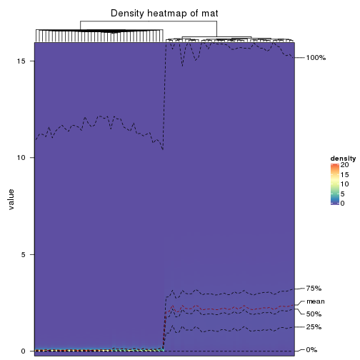
Folowing table shows the best k (number of partitions) for each combination
of top-value methods and partition methods. Clicking on the method name in
the table goes to the section for a single combination of methods.
The cola vignette explains the definition of the metrics used for determining the best number of partitions.
suggest_best_k(res_list)
| The best k | 1-PAC | Mean silhouette | Concordance | Optional k | ||
|---|---|---|---|---|---|---|
| SD:hclust | 2 | 1.000 | 1.000 | 1.000 | ** | |
| SD:kmeans | 2 | 1.000 | 1.000 | 1.000 | ** | |
| SD:mclust | 2 | 1.000 | 1.000 | 1.000 | ** | |
| SD:NMF | 2 | 1.000 | 1.000 | 1.000 | ** | |
| CV:kmeans | 2 | 1.000 | 1.000 | 1.000 | ** | |
| MAD:hclust | 2 | 1.000 | 1.000 | 1.000 | ** | |
| MAD:kmeans | 2 | 1.000 | 1.000 | 1.000 | ** | |
| MAD:skmeans | 3 | 1.000 | 0.995 | 0.996 | ** | 2 |
| MAD:pam | 2 | 1.000 | 1.000 | 1.000 | ** | |
| MAD:mclust | 2 | 1.000 | 1.000 | 1.000 | ** | |
| MAD:NMF | 2 | 1.000 | 1.000 | 1.000 | ** | |
| ATC:kmeans | 2 | 1.000 | 1.000 | 1.000 | ** | |
| ATC:pam | 5 | 1.000 | 0.992 | 0.983 | ** | 2,3,4 |
| ATC:mclust | 3 | 1.000 | 0.985 | 0.991 | ** | 2 |
| ATC:NMF | 2 | 1.000 | 1.000 | 0.990 | ** | |
| CV:NMF | 3 | 0.976 | 0.950 | 0.978 | ** | 2 |
| CV:pam | 5 | 0.956 | 0.911 | 0.952 | ** | 2,3,4 |
| CV:mclust | 6 | 0.956 | 0.880 | 0.924 | ** | 2,4,5 |
| CV:skmeans | 5 | 0.952 | 0.920 | 0.932 | ** | 2,3,4 |
| ATC:hclust | 6 | 0.948 | 0.903 | 0.953 | * | 2,4 |
| CV:hclust | 5 | 0.929 | 0.890 | 0.935 | * | 2,3 |
| SD:skmeans | 4 | 0.920 | 0.871 | 0.908 | * | 2,3 |
| SD:pam | 6 | 0.908 | 0.849 | 0.931 | * | 2,5 |
| ATC:skmeans | 4 | 0.903 | 0.904 | 0.932 | * | 2 |
**: 1-PAC > 0.95, *: 1-PAC > 0.9
Cumulative distribution function curves of consensus matrix for all methods.
collect_plots(res_list, fun = plot_ecdf)
Consensus heatmaps for all methods. (What is a consensus heatmap?)
collect_plots(res_list, k = 2, fun = consensus_heatmap, mc.cores = 4)
collect_plots(res_list, k = 3, fun = consensus_heatmap, mc.cores = 4)
collect_plots(res_list, k = 4, fun = consensus_heatmap, mc.cores = 4)
collect_plots(res_list, k = 5, fun = consensus_heatmap, mc.cores = 4)
collect_plots(res_list, k = 6, fun = consensus_heatmap, mc.cores = 4)
Membership heatmaps for all methods. (What is a membership heatmap?)
collect_plots(res_list, k = 2, fun = membership_heatmap, mc.cores = 4)
collect_plots(res_list, k = 3, fun = membership_heatmap, mc.cores = 4)
collect_plots(res_list, k = 4, fun = membership_heatmap, mc.cores = 4)
collect_plots(res_list, k = 5, fun = membership_heatmap, mc.cores = 4)
collect_plots(res_list, k = 6, fun = membership_heatmap, mc.cores = 4)
Signature heatmaps for all methods. (What is a signature heatmap?)
Note in following heatmaps, rows are scaled.
collect_plots(res_list, k = 2, fun = get_signatures, mc.cores = 4)
collect_plots(res_list, k = 3, fun = get_signatures, mc.cores = 4)
collect_plots(res_list, k = 4, fun = get_signatures, mc.cores = 4)
collect_plots(res_list, k = 5, fun = get_signatures, mc.cores = 4)
collect_plots(res_list, k = 6, fun = get_signatures, mc.cores = 4)
The statistics used for measuring the stability of consensus partitioning. (How are they defined?)
get_stats(res_list, k = 2)
#> k 1-PAC mean_silhouette concordance area_increased Rand Jaccard
#> SD:NMF 2 1 1 1.00 0.507 0.494 0.494
#> CV:NMF 2 1 1 1.00 0.507 0.494 0.494
#> MAD:NMF 2 1 1 1.00 0.507 0.494 0.494
#> ATC:NMF 2 1 1 0.99 0.497 0.494 0.494
#> SD:skmeans 2 1 1 1.00 0.507 0.494 0.494
#> CV:skmeans 2 1 1 1.00 0.507 0.494 0.494
#> MAD:skmeans 2 1 1 1.00 0.507 0.494 0.494
#> ATC:skmeans 2 1 1 1.00 0.507 0.494 0.494
#> SD:mclust 2 1 1 1.00 0.507 0.494 0.494
#> CV:mclust 2 1 1 1.00 0.507 0.494 0.494
#> MAD:mclust 2 1 1 1.00 0.507 0.494 0.494
#> ATC:mclust 2 1 1 1.00 0.507 0.494 0.494
#> SD:kmeans 2 1 1 1.00 0.507 0.494 0.494
#> CV:kmeans 2 1 1 1.00 0.507 0.494 0.494
#> MAD:kmeans 2 1 1 1.00 0.507 0.494 0.494
#> ATC:kmeans 2 1 1 1.00 0.507 0.494 0.494
#> SD:pam 2 1 1 1.00 0.507 0.494 0.494
#> CV:pam 2 1 1 1.00 0.507 0.494 0.494
#> MAD:pam 2 1 1 1.00 0.507 0.494 0.494
#> ATC:pam 2 1 1 1.00 0.507 0.494 0.494
#> SD:hclust 2 1 1 1.00 0.507 0.494 0.494
#> CV:hclust 2 1 1 1.00 0.507 0.494 0.494
#> MAD:hclust 2 1 1 1.00 0.507 0.494 0.494
#> ATC:hclust 2 1 1 1.00 0.507 0.494 0.494
get_stats(res_list, k = 3)
#> k 1-PAC mean_silhouette concordance area_increased Rand Jaccard
#> SD:NMF 3 0.864 0.879 0.901 0.1623 0.878 0.754
#> CV:NMF 3 0.976 0.950 0.978 0.2409 0.875 0.746
#> MAD:NMF 3 0.871 0.940 0.914 0.0896 1.000 1.000
#> ATC:NMF 3 0.776 0.918 0.864 0.1662 1.000 1.000
#> SD:skmeans 3 1.000 0.967 0.988 0.2465 0.875 0.746
#> CV:skmeans 3 1.000 0.967 0.989 0.2484 0.874 0.744
#> MAD:skmeans 3 1.000 0.995 0.996 0.2471 0.875 0.746
#> ATC:skmeans 3 0.863 0.907 0.922 0.2192 0.873 0.744
#> SD:mclust 3 0.831 0.872 0.876 0.1941 0.876 0.749
#> CV:mclust 3 0.895 0.869 0.922 0.2008 0.912 0.821
#> MAD:mclust 3 0.689 0.778 0.834 0.2278 0.878 0.754
#> ATC:mclust 3 1.000 0.985 0.991 0.1397 0.927 0.852
#> SD:kmeans 3 0.749 0.238 0.764 0.2272 0.954 0.908
#> CV:kmeans 3 0.758 0.790 0.808 0.2308 0.905 0.808
#> MAD:kmeans 3 0.749 0.889 0.818 0.2271 0.894 0.785
#> ATC:kmeans 3 0.756 0.844 0.823 0.2097 0.876 0.749
#> SD:pam 3 0.770 0.926 0.927 0.2294 0.885 0.767
#> CV:pam 3 0.928 0.926 0.956 0.2027 0.899 0.796
#> MAD:pam 3 0.754 0.795 0.869 0.2020 0.927 0.852
#> ATC:pam 3 1.000 1.000 1.000 0.1990 0.899 0.796
#> SD:hclust 3 0.865 0.827 0.927 0.2021 0.899 0.796
#> CV:hclust 3 0.975 0.927 0.969 0.2407 0.878 0.754
#> MAD:hclust 3 0.828 0.724 0.894 0.1877 0.919 0.836
#> ATC:hclust 3 0.880 0.901 0.904 0.1842 0.912 0.821
get_stats(res_list, k = 4)
#> k 1-PAC mean_silhouette concordance area_increased Rand Jaccard
#> SD:NMF 4 0.813 0.688 0.873 -0.00442 0.899 0.778
#> CV:NMF 4 0.864 0.760 0.859 0.05697 0.909 0.770
#> MAD:NMF 4 0.870 0.770 0.919 0.01434 0.988 0.975
#> ATC:NMF 4 0.590 0.587 0.741 0.11701 0.894 0.785
#> SD:skmeans 4 0.920 0.871 0.908 0.07201 0.918 0.789
#> CV:skmeans 4 0.918 0.925 0.938 0.05780 0.957 0.885
#> MAD:skmeans 4 0.769 0.813 0.818 0.09339 1.000 1.000
#> ATC:skmeans 4 0.903 0.904 0.932 0.04883 0.972 0.925
#> SD:mclust 4 0.837 0.825 0.886 0.09150 0.934 0.827
#> CV:mclust 4 0.985 0.950 0.972 0.10364 0.917 0.796
#> MAD:mclust 4 0.706 0.700 0.804 0.08614 0.884 0.718
#> ATC:mclust 4 0.861 0.729 0.827 0.10195 0.916 0.800
#> SD:kmeans 4 0.631 0.769 0.769 0.11433 0.752 0.482
#> CV:kmeans 4 0.632 0.839 0.792 0.11225 0.851 0.631
#> MAD:kmeans 4 0.634 0.771 0.752 0.11027 0.849 0.619
#> ATC:kmeans 4 0.667 0.809 0.812 0.10023 0.841 0.614
#> SD:pam 4 0.805 0.826 0.854 0.13804 0.870 0.663
#> CV:pam 4 0.943 0.902 0.954 0.09201 0.943 0.855
#> MAD:pam 4 0.762 0.849 0.900 0.15763 0.859 0.669
#> ATC:pam 4 1.000 1.000 1.000 0.05202 0.968 0.919
#> SD:hclust 4 0.846 0.750 0.844 0.06334 0.911 0.785
#> CV:hclust 4 0.972 0.896 0.935 0.03096 0.986 0.963
#> MAD:hclust 4 0.736 0.767 0.868 0.07168 0.920 0.814
#> ATC:hclust 4 0.941 0.916 0.961 0.09913 0.930 0.828
get_stats(res_list, k = 5)
#> k 1-PAC mean_silhouette concordance area_increased Rand Jaccard
#> SD:NMF 5 0.767 0.661 0.805 0.0784 0.908 0.794
#> CV:NMF 5 0.857 0.781 0.853 0.0290 0.963 0.891
#> MAD:NMF 5 0.773 0.666 0.832 0.0856 0.945 0.885
#> ATC:NMF 5 0.567 0.581 0.691 0.0591 0.872 0.712
#> SD:skmeans 5 0.796 0.795 0.863 0.0591 0.966 0.901
#> CV:skmeans 5 0.952 0.920 0.932 0.0479 0.975 0.924
#> MAD:skmeans 5 0.760 0.734 0.800 0.0551 0.913 0.771
#> ATC:skmeans 5 0.884 0.886 0.920 0.0328 0.978 0.935
#> SD:mclust 5 0.739 0.691 0.791 0.0635 0.947 0.853
#> CV:mclust 5 0.964 0.931 0.968 0.0268 0.973 0.919
#> MAD:mclust 5 0.790 0.825 0.862 0.0573 0.948 0.851
#> ATC:mclust 5 0.859 0.703 0.835 0.0479 0.910 0.759
#> SD:kmeans 5 0.597 0.622 0.722 0.0647 0.956 0.843
#> CV:kmeans 5 0.619 0.770 0.789 0.0779 1.000 1.000
#> MAD:kmeans 5 0.609 0.681 0.785 0.0745 0.934 0.772
#> ATC:kmeans 5 0.645 0.778 0.830 0.0728 0.988 0.959
#> SD:pam 5 0.911 0.896 0.947 0.1012 0.928 0.741
#> CV:pam 5 0.956 0.911 0.952 0.0422 0.937 0.820
#> MAD:pam 5 0.887 0.870 0.931 0.0850 0.940 0.795
#> ATC:pam 5 1.000 0.992 0.983 0.1445 0.899 0.720
#> SD:hclust 5 0.897 0.753 0.844 0.0424 0.914 0.773
#> CV:hclust 5 0.929 0.890 0.935 0.0294 0.980 0.944
#> MAD:hclust 5 0.777 0.795 0.858 0.0475 0.942 0.848
#> ATC:hclust 5 0.940 0.905 0.954 0.0120 0.996 0.987
get_stats(res_list, k = 6)
#> k 1-PAC mean_silhouette concordance area_increased Rand Jaccard
#> SD:NMF 6 0.749 0.716 0.789 0.0461 0.922 0.801
#> CV:NMF 6 0.874 0.752 0.838 0.0154 0.971 0.909
#> MAD:NMF 6 0.741 0.587 0.790 0.0631 0.907 0.792
#> ATC:NMF 6 0.536 0.577 0.669 0.0425 0.959 0.894
#> SD:skmeans 6 0.780 0.737 0.823 0.0693 0.868 0.591
#> CV:skmeans 6 0.820 0.866 0.890 0.0402 1.000 1.000
#> MAD:skmeans 6 0.783 0.830 0.861 0.0617 0.873 0.592
#> ATC:skmeans 6 0.901 0.830 0.918 0.0183 0.990 0.968
#> SD:mclust 6 0.813 0.775 0.853 0.0494 0.923 0.786
#> CV:mclust 6 0.956 0.880 0.924 0.0169 0.965 0.890
#> MAD:mclust 6 0.811 0.743 0.813 0.0604 0.883 0.629
#> ATC:mclust 6 0.868 0.779 0.865 0.0288 0.949 0.851
#> SD:kmeans 6 0.574 0.455 0.667 0.0548 0.945 0.794
#> CV:kmeans 6 0.669 0.551 0.711 0.0424 0.982 0.933
#> MAD:kmeans 6 0.715 0.602 0.749 0.0511 0.937 0.768
#> ATC:kmeans 6 0.621 0.679 0.792 0.0456 0.939 0.793
#> SD:pam 6 0.908 0.849 0.931 0.0273 0.962 0.835
#> CV:pam 6 0.874 0.854 0.913 0.0355 0.983 0.945
#> MAD:pam 6 0.883 0.803 0.904 0.0373 0.937 0.748
#> ATC:pam 6 1.000 0.986 0.992 0.0135 0.999 0.995
#> SD:hclust 6 0.852 0.823 0.868 0.0333 0.979 0.937
#> CV:hclust 6 0.930 0.849 0.912 0.0179 0.989 0.967
#> MAD:hclust 6 0.772 0.775 0.785 0.0318 0.972 0.916
#> ATC:hclust 6 0.948 0.903 0.953 0.0198 0.975 0.927
Following heatmap plots the partition for each combination of methods and the lightness correspond to the silhouette scores for samples in each method. On top the consensus subgroup is inferred from all methods by taking the mean silhouette scores as weight.
collect_stats(res_list, k = 2)
collect_stats(res_list, k = 3)
collect_stats(res_list, k = 4)
collect_stats(res_list, k = 5)
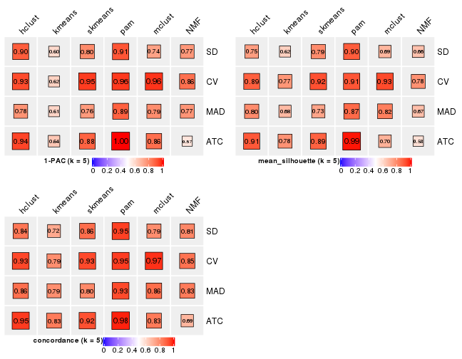
collect_stats(res_list, k = 6)
Collect partitions from all methods:
collect_classes(res_list, k = 2)
collect_classes(res_list, k = 3)
collect_classes(res_list, k = 4)

collect_classes(res_list, k = 5)
collect_classes(res_list, k = 6)
Overlap of top rows from different top-row methods:
top_rows_overlap(res_list, top_n = 1000, method = "euler")
top_rows_overlap(res_list, top_n = 2000, method = "euler")

top_rows_overlap(res_list, top_n = 3000, method = "euler")
top_rows_overlap(res_list, top_n = 4000, method = "euler")
top_rows_overlap(res_list, top_n = 5000, method = "euler")
Also visualize the correspondance of rankings between different top-row methods:
top_rows_overlap(res_list, top_n = 1000, method = "correspondance")
top_rows_overlap(res_list, top_n = 2000, method = "correspondance")
top_rows_overlap(res_list, top_n = 3000, method = "correspondance")
top_rows_overlap(res_list, top_n = 4000, method = "correspondance")

top_rows_overlap(res_list, top_n = 5000, method = "correspondance")
Heatmaps of the top rows:
top_rows_heatmap(res_list, top_n = 1000)
top_rows_heatmap(res_list, top_n = 2000)
top_rows_heatmap(res_list, top_n = 3000)
top_rows_heatmap(res_list, top_n = 4000)
top_rows_heatmap(res_list, top_n = 5000)
The object with results only for a single top-value method and a single partition method can be extracted as:
res = res_list["SD", "hclust"]
# you can also extract it by
# res = res_list["SD:hclust"]
A summary of res and all the functions that can be applied to it:
res
#> A 'ConsensusPartition' object with k = 2, 3, 4, 5, 6.
#> On a matrix with 14104 rows and 80 columns.
#> Top rows (1000, 2000, 3000, 4000, 5000) are extracted by 'SD' method.
#> Subgroups are detected by 'hclust' method.
#> Performed in total 1250 partitions by row resampling.
#> Best k for subgroups seems to be 2.
#>
#> Following methods can be applied to this 'ConsensusPartition' object:
#> [1] "cola_report" "collect_classes" "collect_plots"
#> [4] "collect_stats" "colnames" "compare_signatures"
#> [7] "consensus_heatmap" "dimension_reduction" "functional_enrichment"
#> [10] "get_anno_col" "get_anno" "get_classes"
#> [13] "get_consensus" "get_matrix" "get_membership"
#> [16] "get_param" "get_signatures" "get_stats"
#> [19] "is_best_k" "is_stable_k" "membership_heatmap"
#> [22] "ncol" "nrow" "plot_ecdf"
#> [25] "rownames" "select_partition_number" "show"
#> [28] "suggest_best_k" "test_to_known_factors"
collect_plots() function collects all the plots made from res for all k (number of partitions)
into one single page to provide an easy and fast comparison between different k.
collect_plots(res)
The plots are:
k and the heatmap of
predicted classes for each k.k.k.k.All the plots in panels can be made by individual functions and they are plotted later in this section.
select_partition_number() produces several plots showing different
statistics for choosing “optimized” k. There are following statistics:
k;k, the area increased is defined as \(A_k - A_{k-1}\).The detailed explanations of these statistics can be found in the cola vignette.
Generally speaking, lower PAC score, higher mean silhouette score or higher
concordance corresponds to better partition. Rand index and Jaccard index
measure how similar the current partition is compared to partition with k-1.
If they are too similar, we won't accept k is better than k-1.
select_partition_number(res)
The numeric values for all these statistics can be obtained by get_stats().
get_stats(res)
#> k 1-PAC mean_silhouette concordance area_increased Rand Jaccard
#> 2 2 1.000 1.000 1.000 0.5068 0.494 0.494
#> 3 3 0.865 0.827 0.927 0.2021 0.899 0.796
#> 4 4 0.846 0.750 0.844 0.0633 0.911 0.785
#> 5 5 0.897 0.753 0.844 0.0424 0.914 0.773
#> 6 6 0.852 0.823 0.868 0.0333 0.979 0.937
suggest_best_k() suggests the best \(k\) based on these statistics. The rules are as follows:
suggest_best_k(res)
#> [1] 2
Following shows the table of the partitions (You need to click the show/hide
code output link to see it). The membership matrix (columns with name p*)
is inferred by
clue::cl_consensus()
function with the SE method. Basically the value in the membership matrix
represents the probability to belong to a certain group. The finall class
label for an item is determined with the group with highest probability it
belongs to.
In get_classes() function, the entropy is calculated from the membership
matrix and the silhouette score is calculated from the consensus matrix.
cbind(get_classes(res, k = 2), get_membership(res, k = 2))
#> class entropy silhouette p1 p2
#> SRR830972 2 0 1 0 1
#> SRR830973 2 0 1 0 1
#> SRR830974 2 0 1 0 1
#> SRR830975 2 0 1 0 1
#> SRR830976 2 0 1 0 1
#> SRR830977 2 0 1 0 1
#> SRR830978 2 0 1 0 1
#> SRR830979 2 0 1 0 1
#> SRR830980 2 0 1 0 1
#> SRR830982 2 0 1 0 1
#> SRR830981 2 0 1 0 1
#> SRR830983 2 0 1 0 1
#> SRR831010 1 0 1 1 0
#> SRR831011 1 0 1 1 0
#> SRR831012 1 0 1 1 0
#> SRR831013 1 0 1 1 0
#> SRR831014 1 0 1 1 0
#> SRR831015 1 0 1 1 0
#> SRR831016 1 0 1 1 0
#> SRR831017 1 0 1 1 0
#> SRR831018 1 0 1 1 0
#> SRR831019 1 0 1 1 0
#> SRR831020 1 0 1 1 0
#> SRR831021 1 0 1 1 0
#> SRR831022 1 0 1 1 0
#> SRR831023 1 0 1 1 0
#> SRR831024 1 0 1 1 0
#> SRR831025 1 0 1 1 0
#> SRR831026 1 0 1 1 0
#> SRR831027 1 0 1 1 0
#> SRR831028 1 0 1 1 0
#> SRR831029 1 0 1 1 0
#> SRR831030 1 0 1 1 0
#> SRR831031 1 0 1 1 0
#> SRR831032 1 0 1 1 0
#> SRR831033 1 0 1 1 0
#> SRR831034 1 0 1 1 0
#> SRR831035 1 0 1 1 0
#> SRR831036 1 0 1 1 0
#> SRR831037 1 0 1 1 0
#> SRR831038 1 0 1 1 0
#> SRR831039 1 0 1 1 0
#> SRR831040 1 0 1 1 0
#> SRR831041 1 0 1 1 0
#> SRR831042 1 0 1 1 0
#> SRR831043 1 0 1 1 0
#> SRR831044 1 0 1 1 0
#> SRR830965 2 0 1 0 1
#> SRR830966 2 0 1 0 1
#> SRR830967 2 0 1 0 1
#> SRR830968 2 0 1 0 1
#> SRR830969 2 0 1 0 1
#> SRR830970 2 0 1 0 1
#> SRR830971 2 0 1 0 1
#> SRR830984 2 0 1 0 1
#> SRR830985 2 0 1 0 1
#> SRR830986 2 0 1 0 1
#> SRR830987 2 0 1 0 1
#> SRR830988 2 0 1 0 1
#> SRR830989 2 0 1 0 1
#> SRR830990 2 0 1 0 1
#> SRR830991 2 0 1 0 1
#> SRR830992 2 0 1 0 1
#> SRR830993 2 0 1 0 1
#> SRR830994 2 0 1 0 1
#> SRR830995 2 0 1 0 1
#> SRR830996 2 0 1 0 1
#> SRR830997 2 0 1 0 1
#> SRR830998 2 0 1 0 1
#> SRR830999 2 0 1 0 1
#> SRR831000 2 0 1 0 1
#> SRR831001 2 0 1 0 1
#> SRR831002 2 0 1 0 1
#> SRR831003 2 0 1 0 1
#> SRR831004 2 0 1 0 1
#> SRR831005 1 0 1 1 0
#> SRR831006 1 0 1 1 0
#> SRR831007 1 0 1 1 0
#> SRR831008 1 0 1 1 0
#> SRR831009 1 0 1 1 0
cbind(get_classes(res, k = 3), get_membership(res, k = 3))
#> class entropy silhouette p1 p2 p3
#> SRR830972 2 0.0000 0.806 0 1.000 0.000
#> SRR830973 2 0.6095 0.322 0 0.608 0.392
#> SRR830974 2 0.2066 0.782 0 0.940 0.060
#> SRR830975 2 0.0000 0.806 0 1.000 0.000
#> SRR830976 2 0.0000 0.806 0 1.000 0.000
#> SRR830977 2 0.6154 0.286 0 0.592 0.408
#> SRR830978 2 0.6154 0.286 0 0.592 0.408
#> SRR830979 3 0.0000 0.758 0 0.000 1.000
#> SRR830980 2 0.2066 0.782 0 0.940 0.060
#> SRR830982 2 0.1529 0.792 0 0.960 0.040
#> SRR830981 2 0.6140 0.295 0 0.596 0.404
#> SRR830983 2 0.2165 0.780 0 0.936 0.064
#> SRR831010 1 0.0000 1.000 1 0.000 0.000
#> SRR831011 1 0.0000 1.000 1 0.000 0.000
#> SRR831012 1 0.0000 1.000 1 0.000 0.000
#> SRR831013 1 0.0000 1.000 1 0.000 0.000
#> SRR831014 1 0.0000 1.000 1 0.000 0.000
#> SRR831015 1 0.0000 1.000 1 0.000 0.000
#> SRR831016 1 0.0000 1.000 1 0.000 0.000
#> SRR831017 1 0.0000 1.000 1 0.000 0.000
#> SRR831018 1 0.0000 1.000 1 0.000 0.000
#> SRR831019 1 0.0000 1.000 1 0.000 0.000
#> SRR831020 1 0.0000 1.000 1 0.000 0.000
#> SRR831021 1 0.0000 1.000 1 0.000 0.000
#> SRR831022 1 0.0000 1.000 1 0.000 0.000
#> SRR831023 1 0.0000 1.000 1 0.000 0.000
#> SRR831024 1 0.0000 1.000 1 0.000 0.000
#> SRR831025 1 0.0000 1.000 1 0.000 0.000
#> SRR831026 1 0.0000 1.000 1 0.000 0.000
#> SRR831027 1 0.0000 1.000 1 0.000 0.000
#> SRR831028 1 0.0000 1.000 1 0.000 0.000
#> SRR831029 1 0.0000 1.000 1 0.000 0.000
#> SRR831030 1 0.0000 1.000 1 0.000 0.000
#> SRR831031 1 0.0000 1.000 1 0.000 0.000
#> SRR831032 1 0.0000 1.000 1 0.000 0.000
#> SRR831033 1 0.0000 1.000 1 0.000 0.000
#> SRR831034 1 0.0000 1.000 1 0.000 0.000
#> SRR831035 1 0.0000 1.000 1 0.000 0.000
#> SRR831036 1 0.0000 1.000 1 0.000 0.000
#> SRR831037 1 0.0000 1.000 1 0.000 0.000
#> SRR831038 1 0.0000 1.000 1 0.000 0.000
#> SRR831039 1 0.0000 1.000 1 0.000 0.000
#> SRR831040 1 0.0000 1.000 1 0.000 0.000
#> SRR831041 1 0.0000 1.000 1 0.000 0.000
#> SRR831042 1 0.0000 1.000 1 0.000 0.000
#> SRR831043 1 0.0000 1.000 1 0.000 0.000
#> SRR831044 1 0.0000 1.000 1 0.000 0.000
#> SRR830965 2 0.0000 0.806 0 1.000 0.000
#> SRR830966 2 0.0000 0.806 0 1.000 0.000
#> SRR830967 2 0.0000 0.806 0 1.000 0.000
#> SRR830968 2 0.0000 0.806 0 1.000 0.000
#> SRR830969 2 0.6008 0.362 0 0.628 0.372
#> SRR830970 2 0.0000 0.806 0 1.000 0.000
#> SRR830971 2 0.0000 0.806 0 1.000 0.000
#> SRR830984 2 0.6168 0.275 0 0.588 0.412
#> SRR830985 2 0.6154 0.286 0 0.592 0.408
#> SRR830986 2 0.0000 0.806 0 1.000 0.000
#> SRR830987 2 0.0000 0.806 0 1.000 0.000
#> SRR830988 2 0.0000 0.806 0 1.000 0.000
#> SRR830989 2 0.5810 0.437 0 0.664 0.336
#> SRR830990 3 0.0000 0.758 0 0.000 1.000
#> SRR830991 2 0.5431 0.527 0 0.716 0.284
#> SRR830992 3 0.6140 0.378 0 0.404 0.596
#> SRR830993 2 0.5810 0.437 0 0.664 0.336
#> SRR830994 3 0.6215 0.350 0 0.428 0.572
#> SRR830995 2 0.0592 0.801 0 0.988 0.012
#> SRR830996 3 0.6095 0.407 0 0.392 0.608
#> SRR830997 3 0.0000 0.758 0 0.000 1.000
#> SRR830998 3 0.3340 0.812 0 0.120 0.880
#> SRR830999 2 0.0592 0.801 0 0.988 0.012
#> SRR831000 3 0.3340 0.812 0 0.120 0.880
#> SRR831001 3 0.3340 0.812 0 0.120 0.880
#> SRR831002 3 0.3340 0.812 0 0.120 0.880
#> SRR831003 3 0.3340 0.812 0 0.120 0.880
#> SRR831004 2 0.1529 0.789 0 0.960 0.040
#> SRR831005 1 0.0000 1.000 1 0.000 0.000
#> SRR831006 1 0.0000 1.000 1 0.000 0.000
#> SRR831007 1 0.0000 1.000 1 0.000 0.000
#> SRR831008 1 0.0000 1.000 1 0.000 0.000
#> SRR831009 1 0.0000 1.000 1 0.000 0.000
cbind(get_classes(res, k = 4), get_membership(res, k = 4))
#> class entropy silhouette p1 p2 p3 p4
#> SRR830972 2 0.0188 0.6886 0 0.996 0.004 0.000
#> SRR830973 3 0.3801 0.4883 0 0.220 0.780 0.000
#> SRR830974 2 0.4948 0.5666 0 0.560 0.440 0.000
#> SRR830975 2 0.4776 0.6432 0 0.624 0.376 0.000
#> SRR830976 2 0.4776 0.6432 0 0.624 0.376 0.000
#> SRR830977 3 0.3791 0.5193 0 0.200 0.796 0.004
#> SRR830978 3 0.3791 0.5191 0 0.200 0.796 0.004
#> SRR830979 4 0.4925 0.4113 0 0.000 0.428 0.572
#> SRR830980 2 0.4948 0.5666 0 0.560 0.440 0.000
#> SRR830982 2 0.4898 0.5994 0 0.584 0.416 0.000
#> SRR830981 3 0.3831 0.5138 0 0.204 0.792 0.004
#> SRR830983 2 0.4955 0.5611 0 0.556 0.444 0.000
#> SRR831010 1 0.0000 1.0000 1 0.000 0.000 0.000
#> SRR831011 1 0.0000 1.0000 1 0.000 0.000 0.000
#> SRR831012 1 0.0000 1.0000 1 0.000 0.000 0.000
#> SRR831013 1 0.0000 1.0000 1 0.000 0.000 0.000
#> SRR831014 1 0.0000 1.0000 1 0.000 0.000 0.000
#> SRR831015 1 0.0000 1.0000 1 0.000 0.000 0.000
#> SRR831016 1 0.0000 1.0000 1 0.000 0.000 0.000
#> SRR831017 1 0.0000 1.0000 1 0.000 0.000 0.000
#> SRR831018 1 0.0000 1.0000 1 0.000 0.000 0.000
#> SRR831019 1 0.0000 1.0000 1 0.000 0.000 0.000
#> SRR831020 1 0.0000 1.0000 1 0.000 0.000 0.000
#> SRR831021 1 0.0000 1.0000 1 0.000 0.000 0.000
#> SRR831022 1 0.0000 1.0000 1 0.000 0.000 0.000
#> SRR831023 1 0.0000 1.0000 1 0.000 0.000 0.000
#> SRR831024 1 0.0000 1.0000 1 0.000 0.000 0.000
#> SRR831025 1 0.0000 1.0000 1 0.000 0.000 0.000
#> SRR831026 1 0.0000 1.0000 1 0.000 0.000 0.000
#> SRR831027 1 0.0000 1.0000 1 0.000 0.000 0.000
#> SRR831028 1 0.0000 1.0000 1 0.000 0.000 0.000
#> SRR831029 1 0.0000 1.0000 1 0.000 0.000 0.000
#> SRR831030 1 0.0000 1.0000 1 0.000 0.000 0.000
#> SRR831031 1 0.0000 1.0000 1 0.000 0.000 0.000
#> SRR831032 1 0.0000 1.0000 1 0.000 0.000 0.000
#> SRR831033 1 0.0000 1.0000 1 0.000 0.000 0.000
#> SRR831034 1 0.0000 1.0000 1 0.000 0.000 0.000
#> SRR831035 1 0.0000 1.0000 1 0.000 0.000 0.000
#> SRR831036 1 0.0000 1.0000 1 0.000 0.000 0.000
#> SRR831037 1 0.0000 1.0000 1 0.000 0.000 0.000
#> SRR831038 1 0.0000 1.0000 1 0.000 0.000 0.000
#> SRR831039 1 0.0000 1.0000 1 0.000 0.000 0.000
#> SRR831040 1 0.0000 1.0000 1 0.000 0.000 0.000
#> SRR831041 1 0.0000 1.0000 1 0.000 0.000 0.000
#> SRR831042 1 0.0000 1.0000 1 0.000 0.000 0.000
#> SRR831043 1 0.0000 1.0000 1 0.000 0.000 0.000
#> SRR831044 1 0.0000 1.0000 1 0.000 0.000 0.000
#> SRR830965 2 0.0000 0.6880 0 1.000 0.000 0.000
#> SRR830966 2 0.0000 0.6880 0 1.000 0.000 0.000
#> SRR830967 2 0.0000 0.6880 0 1.000 0.000 0.000
#> SRR830968 2 0.0000 0.6880 0 1.000 0.000 0.000
#> SRR830969 3 0.4655 0.3861 0 0.312 0.684 0.004
#> SRR830970 2 0.0592 0.6887 0 0.984 0.016 0.000
#> SRR830971 2 0.0000 0.6880 0 1.000 0.000 0.000
#> SRR830984 3 0.3751 0.5223 0 0.196 0.800 0.004
#> SRR830985 3 0.3791 0.5193 0 0.200 0.796 0.004
#> SRR830986 2 0.4776 0.6432 0 0.624 0.376 0.000
#> SRR830987 2 0.4776 0.6432 0 0.624 0.376 0.000
#> SRR830988 2 0.4776 0.6432 0 0.624 0.376 0.000
#> SRR830989 4 0.4193 0.3786 0 0.000 0.268 0.732
#> SRR830990 4 0.4925 0.4113 0 0.000 0.428 0.572
#> SRR830991 2 0.5016 0.0778 0 0.600 0.396 0.004
#> SRR830992 3 0.6089 0.3740 0 0.280 0.640 0.080
#> SRR830993 4 0.4193 0.3786 0 0.000 0.268 0.732
#> SRR830994 3 0.6329 0.3197 0 0.292 0.616 0.092
#> SRR830995 2 0.0817 0.6739 0 0.976 0.024 0.000
#> SRR830996 3 0.6049 0.3744 0 0.264 0.652 0.084
#> SRR830997 4 0.4916 0.4128 0 0.000 0.424 0.576
#> SRR830998 3 0.4304 0.2224 0 0.000 0.716 0.284
#> SRR830999 2 0.0921 0.6718 0 0.972 0.028 0.000
#> SRR831000 3 0.4304 0.2224 0 0.000 0.716 0.284
#> SRR831001 3 0.4304 0.2224 0 0.000 0.716 0.284
#> SRR831002 3 0.4304 0.2224 0 0.000 0.716 0.284
#> SRR831003 3 0.4304 0.2224 0 0.000 0.716 0.284
#> SRR831004 2 0.4837 0.6337 0 0.648 0.348 0.004
#> SRR831005 1 0.0000 1.0000 1 0.000 0.000 0.000
#> SRR831006 1 0.0000 1.0000 1 0.000 0.000 0.000
#> SRR831007 1 0.0000 1.0000 1 0.000 0.000 0.000
#> SRR831008 1 0.0000 1.0000 1 0.000 0.000 0.000
#> SRR831009 1 0.0000 1.0000 1 0.000 0.000 0.000
cbind(get_classes(res, k = 5), get_membership(res, k = 5))
#> class entropy silhouette p1 p2 p3 p4 p5
#> SRR830972 2 0.0162 0.874 0.000 0.996 0.004 0.000 0.000
#> SRR830973 3 0.4885 0.369 0.000 0.028 0.572 0.400 0.000
#> SRR830974 3 0.5364 0.450 0.000 0.364 0.572 0.064 0.000
#> SRR830975 3 0.4242 0.386 0.000 0.428 0.572 0.000 0.000
#> SRR830976 3 0.4242 0.386 0.000 0.428 0.572 0.000 0.000
#> SRR830977 3 0.4481 0.351 0.000 0.008 0.576 0.416 0.000
#> SRR830978 3 0.4375 0.346 0.000 0.004 0.576 0.420 0.000
#> SRR830979 3 0.6771 -0.465 0.000 0.000 0.372 0.356 0.272
#> SRR830980 3 0.5364 0.450 0.000 0.364 0.572 0.064 0.000
#> SRR830982 3 0.5068 0.430 0.000 0.388 0.572 0.040 0.000
#> SRR830981 3 0.4481 0.351 0.000 0.008 0.576 0.416 0.000
#> SRR830983 3 0.5406 0.451 0.000 0.360 0.572 0.068 0.000
#> SRR831010 1 0.0000 0.991 1.000 0.000 0.000 0.000 0.000
#> SRR831011 1 0.0000 0.991 1.000 0.000 0.000 0.000 0.000
#> SRR831012 1 0.0000 0.991 1.000 0.000 0.000 0.000 0.000
#> SRR831013 1 0.0000 0.991 1.000 0.000 0.000 0.000 0.000
#> SRR831014 1 0.0000 0.991 1.000 0.000 0.000 0.000 0.000
#> SRR831015 1 0.0000 0.991 1.000 0.000 0.000 0.000 0.000
#> SRR831016 1 0.0162 0.989 0.996 0.000 0.004 0.000 0.000
#> SRR831017 1 0.1197 0.964 0.952 0.000 0.048 0.000 0.000
#> SRR831018 1 0.0000 0.991 1.000 0.000 0.000 0.000 0.000
#> SRR831019 1 0.1197 0.964 0.952 0.000 0.048 0.000 0.000
#> SRR831020 1 0.0609 0.983 0.980 0.000 0.020 0.000 0.000
#> SRR831021 1 0.0000 0.991 1.000 0.000 0.000 0.000 0.000
#> SRR831022 1 0.0000 0.991 1.000 0.000 0.000 0.000 0.000
#> SRR831023 1 0.0703 0.981 0.976 0.000 0.024 0.000 0.000
#> SRR831024 1 0.0000 0.991 1.000 0.000 0.000 0.000 0.000
#> SRR831025 1 0.1197 0.964 0.952 0.000 0.048 0.000 0.000
#> SRR831026 1 0.0609 0.983 0.980 0.000 0.020 0.000 0.000
#> SRR831027 1 0.0162 0.989 0.996 0.000 0.004 0.000 0.000
#> SRR831028 1 0.0609 0.983 0.980 0.000 0.020 0.000 0.000
#> SRR831029 1 0.0000 0.991 1.000 0.000 0.000 0.000 0.000
#> SRR831030 1 0.0000 0.991 1.000 0.000 0.000 0.000 0.000
#> SRR831031 1 0.0000 0.991 1.000 0.000 0.000 0.000 0.000
#> SRR831032 1 0.0000 0.991 1.000 0.000 0.000 0.000 0.000
#> SRR831033 1 0.0000 0.991 1.000 0.000 0.000 0.000 0.000
#> SRR831034 1 0.1121 0.967 0.956 0.000 0.044 0.000 0.000
#> SRR831035 1 0.1197 0.964 0.952 0.000 0.048 0.000 0.000
#> SRR831036 1 0.0609 0.983 0.980 0.000 0.020 0.000 0.000
#> SRR831037 1 0.0880 0.976 0.968 0.000 0.032 0.000 0.000
#> SRR831038 1 0.0000 0.991 1.000 0.000 0.000 0.000 0.000
#> SRR831039 1 0.0000 0.991 1.000 0.000 0.000 0.000 0.000
#> SRR831040 1 0.0000 0.991 1.000 0.000 0.000 0.000 0.000
#> SRR831041 1 0.0000 0.991 1.000 0.000 0.000 0.000 0.000
#> SRR831042 1 0.0000 0.991 1.000 0.000 0.000 0.000 0.000
#> SRR831043 1 0.0000 0.991 1.000 0.000 0.000 0.000 0.000
#> SRR831044 1 0.0000 0.991 1.000 0.000 0.000 0.000 0.000
#> SRR830965 2 0.0000 0.876 0.000 1.000 0.000 0.000 0.000
#> SRR830966 2 0.0000 0.876 0.000 1.000 0.000 0.000 0.000
#> SRR830967 2 0.0000 0.876 0.000 1.000 0.000 0.000 0.000
#> SRR830968 2 0.0000 0.876 0.000 1.000 0.000 0.000 0.000
#> SRR830969 3 0.6646 0.213 0.000 0.224 0.396 0.380 0.000
#> SRR830970 2 0.0609 0.862 0.000 0.980 0.020 0.000 0.000
#> SRR830971 2 0.0000 0.876 0.000 1.000 0.000 0.000 0.000
#> SRR830984 3 0.4375 0.345 0.000 0.004 0.576 0.420 0.000
#> SRR830985 3 0.4481 0.351 0.000 0.008 0.576 0.416 0.000
#> SRR830986 3 0.4242 0.386 0.000 0.428 0.572 0.000 0.000
#> SRR830987 3 0.4242 0.386 0.000 0.428 0.572 0.000 0.000
#> SRR830988 3 0.4242 0.386 0.000 0.428 0.572 0.000 0.000
#> SRR830989 5 0.0290 1.000 0.000 0.000 0.008 0.000 0.992
#> SRR830990 3 0.6764 -0.464 0.000 0.000 0.372 0.360 0.268
#> SRR830991 2 0.4630 0.117 0.000 0.588 0.016 0.396 0.000
#> SRR830992 4 0.4326 0.697 0.000 0.264 0.028 0.708 0.000
#> SRR830993 5 0.0290 1.000 0.000 0.000 0.008 0.000 0.992
#> SRR830994 4 0.4464 0.665 0.000 0.284 0.012 0.692 0.012
#> SRR830995 2 0.1106 0.860 0.000 0.964 0.012 0.024 0.000
#> SRR830996 4 0.4276 0.710 0.000 0.244 0.032 0.724 0.000
#> SRR830997 3 0.6777 -0.468 0.000 0.000 0.372 0.352 0.276
#> SRR830998 4 0.0000 0.830 0.000 0.000 0.000 1.000 0.000
#> SRR830999 2 0.1195 0.857 0.000 0.960 0.012 0.028 0.000
#> SRR831000 4 0.0000 0.830 0.000 0.000 0.000 1.000 0.000
#> SRR831001 4 0.0000 0.830 0.000 0.000 0.000 1.000 0.000
#> SRR831002 4 0.0000 0.830 0.000 0.000 0.000 1.000 0.000
#> SRR831003 4 0.0000 0.830 0.000 0.000 0.000 1.000 0.000
#> SRR831004 2 0.5297 0.034 0.000 0.580 0.360 0.060 0.000
#> SRR831005 1 0.0000 0.991 1.000 0.000 0.000 0.000 0.000
#> SRR831006 1 0.0162 0.989 0.996 0.000 0.004 0.000 0.000
#> SRR831007 1 0.0000 0.991 1.000 0.000 0.000 0.000 0.000
#> SRR831008 1 0.0609 0.983 0.980 0.000 0.020 0.000 0.000
#> SRR831009 1 0.0000 0.991 1.000 0.000 0.000 0.000 0.000
cbind(get_classes(res, k = 6), get_membership(res, k = 6))
#> class entropy silhouette p1 p2 p3 p4 p5 p6
#> SRR830972 5 0.0146 0.826 0.000 0.004 0.000 0.000 0.996 0.000
#> SRR830973 2 0.2163 0.660 0.000 0.892 0.004 0.096 0.008 0.000
#> SRR830974 2 0.3360 0.684 0.000 0.732 0.000 0.004 0.264 0.000
#> SRR830975 2 0.3531 0.644 0.000 0.672 0.000 0.000 0.328 0.000
#> SRR830976 2 0.3531 0.644 0.000 0.672 0.000 0.000 0.328 0.000
#> SRR830977 2 0.2053 0.650 0.000 0.888 0.004 0.108 0.000 0.000
#> SRR830978 2 0.2003 0.648 0.000 0.884 0.000 0.116 0.000 0.000
#> SRR830979 3 0.0405 0.989 0.000 0.004 0.988 0.008 0.000 0.000
#> SRR830980 2 0.3360 0.684 0.000 0.732 0.000 0.004 0.264 0.000
#> SRR830982 2 0.3351 0.674 0.000 0.712 0.000 0.000 0.288 0.000
#> SRR830981 2 0.1957 0.650 0.000 0.888 0.000 0.112 0.000 0.000
#> SRR830983 2 0.3468 0.683 0.000 0.728 0.000 0.008 0.264 0.000
#> SRR831010 1 0.0000 0.968 1.000 0.000 0.000 0.000 0.000 0.000
#> SRR831011 1 0.0000 0.968 1.000 0.000 0.000 0.000 0.000 0.000
#> SRR831012 1 0.0000 0.968 1.000 0.000 0.000 0.000 0.000 0.000
#> SRR831013 1 0.0000 0.968 1.000 0.000 0.000 0.000 0.000 0.000
#> SRR831014 1 0.0000 0.968 1.000 0.000 0.000 0.000 0.000 0.000
#> SRR831015 1 0.0000 0.968 1.000 0.000 0.000 0.000 0.000 0.000
#> SRR831016 1 0.0508 0.962 0.984 0.000 0.004 0.000 0.000 0.012
#> SRR831017 1 0.3288 0.833 0.812 0.016 0.004 0.008 0.000 0.160
#> SRR831018 1 0.0000 0.968 1.000 0.000 0.000 0.000 0.000 0.000
#> SRR831019 1 0.3288 0.833 0.812 0.016 0.004 0.008 0.000 0.160
#> SRR831020 1 0.1180 0.951 0.960 0.008 0.004 0.004 0.000 0.024
#> SRR831021 1 0.0000 0.968 1.000 0.000 0.000 0.000 0.000 0.000
#> SRR831022 1 0.0000 0.968 1.000 0.000 0.000 0.000 0.000 0.000
#> SRR831023 1 0.1812 0.928 0.924 0.008 0.004 0.004 0.000 0.060
#> SRR831024 1 0.0000 0.968 1.000 0.000 0.000 0.000 0.000 0.000
#> SRR831025 1 0.3288 0.833 0.812 0.016 0.004 0.008 0.000 0.160
#> SRR831026 1 0.1180 0.951 0.960 0.008 0.004 0.004 0.000 0.024
#> SRR831027 1 0.0508 0.962 0.984 0.000 0.004 0.000 0.000 0.012
#> SRR831028 1 0.1180 0.951 0.960 0.008 0.004 0.004 0.000 0.024
#> SRR831029 1 0.0000 0.968 1.000 0.000 0.000 0.000 0.000 0.000
#> SRR831030 1 0.0000 0.968 1.000 0.000 0.000 0.000 0.000 0.000
#> SRR831031 1 0.0000 0.968 1.000 0.000 0.000 0.000 0.000 0.000
#> SRR831032 1 0.0000 0.968 1.000 0.000 0.000 0.000 0.000 0.000
#> SRR831033 1 0.0000 0.968 1.000 0.000 0.000 0.000 0.000 0.000
#> SRR831034 1 0.3098 0.852 0.832 0.016 0.004 0.008 0.000 0.140
#> SRR831035 1 0.3288 0.833 0.812 0.016 0.004 0.008 0.000 0.160
#> SRR831036 1 0.1180 0.951 0.960 0.008 0.004 0.004 0.000 0.024
#> SRR831037 1 0.2518 0.894 0.880 0.012 0.004 0.008 0.000 0.096
#> SRR831038 1 0.0000 0.968 1.000 0.000 0.000 0.000 0.000 0.000
#> SRR831039 1 0.0000 0.968 1.000 0.000 0.000 0.000 0.000 0.000
#> SRR831040 1 0.0000 0.968 1.000 0.000 0.000 0.000 0.000 0.000
#> SRR831041 1 0.0000 0.968 1.000 0.000 0.000 0.000 0.000 0.000
#> SRR831042 1 0.0000 0.968 1.000 0.000 0.000 0.000 0.000 0.000
#> SRR831043 1 0.0000 0.968 1.000 0.000 0.000 0.000 0.000 0.000
#> SRR831044 1 0.0000 0.968 1.000 0.000 0.000 0.000 0.000 0.000
#> SRR830965 5 0.0000 0.828 0.000 0.000 0.000 0.000 1.000 0.000
#> SRR830966 5 0.0000 0.828 0.000 0.000 0.000 0.000 1.000 0.000
#> SRR830967 5 0.0000 0.828 0.000 0.000 0.000 0.000 1.000 0.000
#> SRR830968 5 0.0000 0.828 0.000 0.000 0.000 0.000 1.000 0.000
#> SRR830969 2 0.4565 0.480 0.000 0.684 0.000 0.096 0.220 0.000
#> SRR830970 5 0.0632 0.813 0.000 0.024 0.000 0.000 0.976 0.000
#> SRR830971 5 0.0000 0.828 0.000 0.000 0.000 0.000 1.000 0.000
#> SRR830984 2 0.2100 0.647 0.000 0.884 0.004 0.112 0.000 0.000
#> SRR830985 2 0.2053 0.650 0.000 0.888 0.004 0.108 0.000 0.000
#> SRR830986 2 0.3531 0.644 0.000 0.672 0.000 0.000 0.328 0.000
#> SRR830987 2 0.3531 0.644 0.000 0.672 0.000 0.000 0.328 0.000
#> SRR830988 2 0.3531 0.644 0.000 0.672 0.000 0.000 0.328 0.000
#> SRR830989 6 0.2982 0.989 0.000 0.004 0.164 0.012 0.000 0.820
#> SRR830990 3 0.0508 0.987 0.000 0.004 0.984 0.012 0.000 0.000
#> SRR830991 4 0.4665 0.268 0.000 0.068 0.000 0.672 0.252 0.008
#> SRR830992 4 0.2373 0.685 0.000 0.084 0.004 0.888 0.024 0.000
#> SRR830993 6 0.2632 0.989 0.000 0.004 0.164 0.000 0.000 0.832
#> SRR830994 4 0.0653 0.663 0.000 0.012 0.004 0.980 0.000 0.004
#> SRR830995 5 0.5238 0.564 0.000 0.096 0.000 0.308 0.588 0.008
#> SRR830996 4 0.2001 0.691 0.000 0.092 0.004 0.900 0.004 0.000
#> SRR830997 3 0.0260 0.984 0.000 0.000 0.992 0.008 0.000 0.000
#> SRR830998 4 0.4348 0.745 0.000 0.064 0.248 0.688 0.000 0.000
#> SRR830999 5 0.5252 0.560 0.000 0.096 0.000 0.312 0.584 0.008
#> SRR831000 4 0.4348 0.745 0.000 0.064 0.248 0.688 0.000 0.000
#> SRR831001 4 0.4348 0.745 0.000 0.064 0.248 0.688 0.000 0.000
#> SRR831002 4 0.4348 0.745 0.000 0.064 0.248 0.688 0.000 0.000
#> SRR831003 4 0.4591 0.741 0.000 0.064 0.248 0.680 0.000 0.008
#> SRR831004 5 0.5076 -0.226 0.000 0.444 0.000 0.056 0.492 0.008
#> SRR831005 1 0.0000 0.968 1.000 0.000 0.000 0.000 0.000 0.000
#> SRR831006 1 0.0146 0.967 0.996 0.000 0.000 0.000 0.000 0.004
#> SRR831007 1 0.0000 0.968 1.000 0.000 0.000 0.000 0.000 0.000
#> SRR831008 1 0.1096 0.954 0.964 0.008 0.004 0.004 0.000 0.020
#> SRR831009 1 0.0000 0.968 1.000 0.000 0.000 0.000 0.000 0.000
Heatmaps for the consensus matrix. It visualizes the probability of two samples to be in a same group.
consensus_heatmap(res, k = 2)

consensus_heatmap(res, k = 3)
consensus_heatmap(res, k = 4)

consensus_heatmap(res, k = 5)
consensus_heatmap(res, k = 6)
Heatmaps for the membership of samples in all partitions to see how consistent they are:
membership_heatmap(res, k = 2)

membership_heatmap(res, k = 3)
membership_heatmap(res, k = 4)
membership_heatmap(res, k = 5)
membership_heatmap(res, k = 6)
As soon as we have had the classes for columns, we can look for signatures which are significantly different between classes which can be candidate marks for certain classes. Following are the heatmaps for signatures.
Signature heatmaps where rows are scaled:
get_signatures(res, k = 2)

get_signatures(res, k = 3)
#> Error in mat[ceiling(1:nr/h_ratio), ceiling(1:nc/w_ratio), drop = FALSE]: subscript out of bounds

get_signatures(res, k = 4)
get_signatures(res, k = 5)
get_signatures(res, k = 6)
#> Error in mat[ceiling(1:nr/h_ratio), ceiling(1:nc/w_ratio), drop = FALSE]: subscript out of bounds
Signature heatmaps where rows are not scaled:
get_signatures(res, k = 2, scale_rows = FALSE)

get_signatures(res, k = 3, scale_rows = FALSE)
get_signatures(res, k = 4, scale_rows = FALSE)
#> Error in mat[ceiling(1:nr/h_ratio), ceiling(1:nc/w_ratio), drop = FALSE]: subscript out of bounds
get_signatures(res, k = 5, scale_rows = FALSE)
#> Error in mat[ceiling(1:nr/h_ratio), ceiling(1:nc/w_ratio), drop = FALSE]: subscript out of bounds
get_signatures(res, k = 6, scale_rows = FALSE)
Compare the overlap of signatures from different k:
compare_signatures(res)
get_signature() returns a data frame invisibly. TO get the list of signatures, the function
call should be assigned to a variable explicitly. In following code, if plot argument is set
to FALSE, no heatmap is plotted while only the differential analysis is performed.
# code only for demonstration
tb = get_signature(res, k = ..., plot = FALSE)
An example of the output of tb is:
#> which_row fdr mean_1 mean_2 scaled_mean_1 scaled_mean_2 km
#> 1 38 0.042760348 8.373488 9.131774 -0.5533452 0.5164555 1
#> 2 40 0.018707592 7.106213 8.469186 -0.6173731 0.5762149 1
#> 3 55 0.019134737 10.221463 11.207825 -0.6159697 0.5749050 1
#> 4 59 0.006059896 5.921854 7.869574 -0.6899429 0.6439467 1
#> 5 60 0.018055526 8.928898 10.211722 -0.6204761 0.5791110 1
#> 6 98 0.009384629 15.714769 14.887706 0.6635654 -0.6193277 2
...
The columns in tb are:
which_row: row indices corresponding to the input matrix.fdr: FDR for the differential test. mean_x: The mean value in group x.scaled_mean_x: The mean value in group x after rows are scaled.km: Row groups if k-means clustering is applied to rows.UMAP plot which shows how samples are separated.
dimension_reduction(res, k = 2, method = "UMAP")

dimension_reduction(res, k = 3, method = "UMAP")
dimension_reduction(res, k = 4, method = "UMAP")
dimension_reduction(res, k = 5, method = "UMAP")

dimension_reduction(res, k = 6, method = "UMAP")
Following heatmap shows how subgroups are split when increasing k:
collect_classes(res)

If matrix rows can be associated to genes, consider to use functional_enrichment(res,
...) to perform function enrichment for the signature genes. See this vignette for more detailed explanations.
The object with results only for a single top-value method and a single partition method can be extracted as:
res = res_list["SD", "kmeans"]
# you can also extract it by
# res = res_list["SD:kmeans"]
A summary of res and all the functions that can be applied to it:
res
#> A 'ConsensusPartition' object with k = 2, 3, 4, 5, 6.
#> On a matrix with 14104 rows and 80 columns.
#> Top rows (1000, 2000, 3000, 4000, 5000) are extracted by 'SD' method.
#> Subgroups are detected by 'kmeans' method.
#> Performed in total 1250 partitions by row resampling.
#> Best k for subgroups seems to be 2.
#>
#> Following methods can be applied to this 'ConsensusPartition' object:
#> [1] "cola_report" "collect_classes" "collect_plots"
#> [4] "collect_stats" "colnames" "compare_signatures"
#> [7] "consensus_heatmap" "dimension_reduction" "functional_enrichment"
#> [10] "get_anno_col" "get_anno" "get_classes"
#> [13] "get_consensus" "get_matrix" "get_membership"
#> [16] "get_param" "get_signatures" "get_stats"
#> [19] "is_best_k" "is_stable_k" "membership_heatmap"
#> [22] "ncol" "nrow" "plot_ecdf"
#> [25] "rownames" "select_partition_number" "show"
#> [28] "suggest_best_k" "test_to_known_factors"
collect_plots() function collects all the plots made from res for all k (number of partitions)
into one single page to provide an easy and fast comparison between different k.
collect_plots(res)
The plots are:
k and the heatmap of
predicted classes for each k.k.k.k.All the plots in panels can be made by individual functions and they are plotted later in this section.
select_partition_number() produces several plots showing different
statistics for choosing “optimized” k. There are following statistics:
k;k, the area increased is defined as \(A_k - A_{k-1}\).The detailed explanations of these statistics can be found in the cola vignette.
Generally speaking, lower PAC score, higher mean silhouette score or higher
concordance corresponds to better partition. Rand index and Jaccard index
measure how similar the current partition is compared to partition with k-1.
If they are too similar, we won't accept k is better than k-1.
select_partition_number(res)
The numeric values for all these statistics can be obtained by get_stats().
get_stats(res)
#> k 1-PAC mean_silhouette concordance area_increased Rand Jaccard
#> 2 2 1.000 1.000 1.000 0.5068 0.494 0.494
#> 3 3 0.749 0.238 0.764 0.2272 0.954 0.908
#> 4 4 0.631 0.769 0.769 0.1143 0.752 0.482
#> 5 5 0.597 0.622 0.722 0.0647 0.956 0.843
#> 6 6 0.574 0.455 0.667 0.0548 0.945 0.794
suggest_best_k() suggests the best \(k\) based on these statistics. The rules are as follows:
suggest_best_k(res)
#> [1] 2
Following shows the table of the partitions (You need to click the show/hide
code output link to see it). The membership matrix (columns with name p*)
is inferred by
clue::cl_consensus()
function with the SE method. Basically the value in the membership matrix
represents the probability to belong to a certain group. The finall class
label for an item is determined with the group with highest probability it
belongs to.
In get_classes() function, the entropy is calculated from the membership
matrix and the silhouette score is calculated from the consensus matrix.
cbind(get_classes(res, k = 2), get_membership(res, k = 2))
#> class entropy silhouette p1 p2
#> SRR830972 2 0 1 0 1
#> SRR830973 2 0 1 0 1
#> SRR830974 2 0 1 0 1
#> SRR830975 2 0 1 0 1
#> SRR830976 2 0 1 0 1
#> SRR830977 2 0 1 0 1
#> SRR830978 2 0 1 0 1
#> SRR830979 2 0 1 0 1
#> SRR830980 2 0 1 0 1
#> SRR830982 2 0 1 0 1
#> SRR830981 2 0 1 0 1
#> SRR830983 2 0 1 0 1
#> SRR831010 1 0 1 1 0
#> SRR831011 1 0 1 1 0
#> SRR831012 1 0 1 1 0
#> SRR831013 1 0 1 1 0
#> SRR831014 1 0 1 1 0
#> SRR831015 1 0 1 1 0
#> SRR831016 1 0 1 1 0
#> SRR831017 1 0 1 1 0
#> SRR831018 1 0 1 1 0
#> SRR831019 1 0 1 1 0
#> SRR831020 1 0 1 1 0
#> SRR831021 1 0 1 1 0
#> SRR831022 1 0 1 1 0
#> SRR831023 1 0 1 1 0
#> SRR831024 1 0 1 1 0
#> SRR831025 1 0 1 1 0
#> SRR831026 1 0 1 1 0
#> SRR831027 1 0 1 1 0
#> SRR831028 1 0 1 1 0
#> SRR831029 1 0 1 1 0
#> SRR831030 1 0 1 1 0
#> SRR831031 1 0 1 1 0
#> SRR831032 1 0 1 1 0
#> SRR831033 1 0 1 1 0
#> SRR831034 1 0 1 1 0
#> SRR831035 1 0 1 1 0
#> SRR831036 1 0 1 1 0
#> SRR831037 1 0 1 1 0
#> SRR831038 1 0 1 1 0
#> SRR831039 1 0 1 1 0
#> SRR831040 1 0 1 1 0
#> SRR831041 1 0 1 1 0
#> SRR831042 1 0 1 1 0
#> SRR831043 1 0 1 1 0
#> SRR831044 1 0 1 1 0
#> SRR830965 2 0 1 0 1
#> SRR830966 2 0 1 0 1
#> SRR830967 2 0 1 0 1
#> SRR830968 2 0 1 0 1
#> SRR830969 2 0 1 0 1
#> SRR830970 2 0 1 0 1
#> SRR830971 2 0 1 0 1
#> SRR830984 2 0 1 0 1
#> SRR830985 2 0 1 0 1
#> SRR830986 2 0 1 0 1
#> SRR830987 2 0 1 0 1
#> SRR830988 2 0 1 0 1
#> SRR830989 2 0 1 0 1
#> SRR830990 2 0 1 0 1
#> SRR830991 2 0 1 0 1
#> SRR830992 2 0 1 0 1
#> SRR830993 2 0 1 0 1
#> SRR830994 2 0 1 0 1
#> SRR830995 2 0 1 0 1
#> SRR830996 2 0 1 0 1
#> SRR830997 2 0 1 0 1
#> SRR830998 2 0 1 0 1
#> SRR830999 2 0 1 0 1
#> SRR831000 2 0 1 0 1
#> SRR831001 2 0 1 0 1
#> SRR831002 2 0 1 0 1
#> SRR831003 2 0 1 0 1
#> SRR831004 2 0 1 0 1
#> SRR831005 1 0 1 1 0
#> SRR831006 1 0 1 1 0
#> SRR831007 1 0 1 1 0
#> SRR831008 1 0 1 1 0
#> SRR831009 1 0 1 1 0
cbind(get_classes(res, k = 3), get_membership(res, k = 3))
#> class entropy silhouette p1 p2 p3
#> SRR830972 2 0.1163 0.802 0.000 0.972 0.028
#> SRR830973 2 0.6204 0.790 0.000 0.576 0.424
#> SRR830974 2 0.1163 0.813 0.000 0.972 0.028
#> SRR830975 2 0.0424 0.812 0.000 0.992 0.008
#> SRR830976 2 0.0424 0.812 0.000 0.992 0.008
#> SRR830977 2 0.6274 0.784 0.000 0.544 0.456
#> SRR830978 2 0.6274 0.784 0.000 0.544 0.456
#> SRR830979 2 0.6274 0.784 0.000 0.544 0.456
#> SRR830980 2 0.0424 0.812 0.000 0.992 0.008
#> SRR830982 2 0.0424 0.812 0.000 0.992 0.008
#> SRR830981 2 0.6274 0.784 0.000 0.544 0.456
#> SRR830983 2 0.0424 0.812 0.000 0.992 0.008
#> SRR831010 1 0.6307 -0.867 0.512 0.000 0.488
#> SRR831011 1 0.6308 -0.884 0.508 0.000 0.492
#> SRR831012 1 0.6307 -0.867 0.512 0.000 0.488
#> SRR831013 1 0.6307 -0.867 0.512 0.000 0.488
#> SRR831014 1 0.6307 -0.867 0.512 0.000 0.488
#> SRR831015 1 0.6307 -0.867 0.512 0.000 0.488
#> SRR831016 1 0.6307 -0.867 0.512 0.000 0.488
#> SRR831017 1 0.0000 0.316 1.000 0.000 0.000
#> SRR831018 1 0.6307 -0.867 0.512 0.000 0.488
#> SRR831019 1 0.0000 0.316 1.000 0.000 0.000
#> SRR831020 1 0.0000 0.316 1.000 0.000 0.000
#> SRR831021 3 0.6307 1.000 0.488 0.000 0.512
#> SRR831022 3 0.6307 1.000 0.488 0.000 0.512
#> SRR831023 1 0.1031 0.307 0.976 0.000 0.024
#> SRR831024 1 0.6307 -0.867 0.512 0.000 0.488
#> SRR831025 1 0.0000 0.316 1.000 0.000 0.000
#> SRR831026 1 0.0000 0.316 1.000 0.000 0.000
#> SRR831027 1 0.6307 -0.867 0.512 0.000 0.488
#> SRR831028 1 0.0000 0.316 1.000 0.000 0.000
#> SRR831029 1 0.6307 -0.867 0.512 0.000 0.488
#> SRR831030 3 0.6307 1.000 0.488 0.000 0.512
#> SRR831031 1 0.6215 -0.581 0.572 0.000 0.428
#> SRR831032 1 0.6308 -0.884 0.508 0.000 0.492
#> SRR831033 1 0.6307 -0.867 0.512 0.000 0.488
#> SRR831034 1 0.0000 0.316 1.000 0.000 0.000
#> SRR831035 1 0.0000 0.316 1.000 0.000 0.000
#> SRR831036 1 0.0000 0.316 1.000 0.000 0.000
#> SRR831037 1 0.1031 0.307 0.976 0.000 0.024
#> SRR831038 3 0.6307 1.000 0.488 0.000 0.512
#> SRR831039 1 0.6307 -0.867 0.512 0.000 0.488
#> SRR831040 1 0.6308 -0.884 0.508 0.000 0.492
#> SRR831041 1 0.6308 -0.884 0.508 0.000 0.492
#> SRR831042 1 0.6307 -0.867 0.512 0.000 0.488
#> SRR831043 1 0.6307 -0.867 0.512 0.000 0.488
#> SRR831044 1 0.6308 -0.884 0.508 0.000 0.492
#> SRR830965 2 0.1289 0.802 0.000 0.968 0.032
#> SRR830966 2 0.1289 0.802 0.000 0.968 0.032
#> SRR830967 2 0.1289 0.802 0.000 0.968 0.032
#> SRR830968 2 0.1289 0.802 0.000 0.968 0.032
#> SRR830969 2 0.3192 0.806 0.000 0.888 0.112
#> SRR830970 2 0.1289 0.802 0.000 0.968 0.032
#> SRR830971 2 0.1289 0.802 0.000 0.968 0.032
#> SRR830984 2 0.6274 0.784 0.000 0.544 0.456
#> SRR830985 2 0.6274 0.784 0.000 0.544 0.456
#> SRR830986 2 0.0424 0.812 0.000 0.992 0.008
#> SRR830987 2 0.0424 0.812 0.000 0.992 0.008
#> SRR830988 2 0.0424 0.812 0.000 0.992 0.008
#> SRR830989 2 0.5621 0.799 0.000 0.692 0.308
#> SRR830990 2 0.6280 0.785 0.000 0.540 0.460
#> SRR830991 2 0.0424 0.811 0.000 0.992 0.008
#> SRR830992 2 0.6225 0.789 0.000 0.568 0.432
#> SRR830993 2 0.6008 0.793 0.000 0.628 0.372
#> SRR830994 2 0.6280 0.785 0.000 0.540 0.460
#> SRR830995 2 0.1289 0.802 0.000 0.968 0.032
#> SRR830996 2 0.6280 0.785 0.000 0.540 0.460
#> SRR830997 2 0.6280 0.785 0.000 0.540 0.460
#> SRR830998 2 0.6280 0.785 0.000 0.540 0.460
#> SRR830999 2 0.1289 0.802 0.000 0.968 0.032
#> SRR831000 2 0.6280 0.785 0.000 0.540 0.460
#> SRR831001 2 0.6280 0.785 0.000 0.540 0.460
#> SRR831002 2 0.6280 0.785 0.000 0.540 0.460
#> SRR831003 2 0.6280 0.785 0.000 0.540 0.460
#> SRR831004 2 0.0424 0.809 0.000 0.992 0.008
#> SRR831005 1 0.6308 -0.884 0.508 0.000 0.492
#> SRR831006 1 0.6302 -0.827 0.520 0.000 0.480
#> SRR831007 1 0.6308 -0.884 0.508 0.000 0.492
#> SRR831008 1 0.1031 0.307 0.976 0.000 0.024
#> SRR831009 1 0.6307 -0.867 0.512 0.000 0.488
cbind(get_classes(res, k = 4), get_membership(res, k = 4))
#> class entropy silhouette p1 p2 p3 p4
#> SRR830972 2 0.5367 0.800 0.000 0.664 0.304 0.032
#> SRR830973 3 0.2675 0.670 0.000 0.048 0.908 0.044
#> SRR830974 3 0.6137 -0.721 0.000 0.448 0.504 0.048
#> SRR830975 2 0.6148 0.762 0.000 0.484 0.468 0.048
#> SRR830976 2 0.6148 0.762 0.000 0.484 0.468 0.048
#> SRR830977 3 0.0592 0.759 0.000 0.000 0.984 0.016
#> SRR830978 3 0.0188 0.770 0.000 0.000 0.996 0.004
#> SRR830979 3 0.2530 0.788 0.000 0.000 0.888 0.112
#> SRR830980 2 0.6148 0.762 0.000 0.484 0.468 0.048
#> SRR830982 2 0.6148 0.762 0.000 0.484 0.468 0.048
#> SRR830981 3 0.0592 0.759 0.000 0.000 0.984 0.016
#> SRR830983 2 0.6149 0.756 0.000 0.480 0.472 0.048
#> SRR831010 1 0.0000 0.902 1.000 0.000 0.000 0.000
#> SRR831011 1 0.0000 0.902 1.000 0.000 0.000 0.000
#> SRR831012 1 0.0000 0.902 1.000 0.000 0.000 0.000
#> SRR831013 1 0.5170 0.645 0.724 0.228 0.000 0.048
#> SRR831014 1 0.1302 0.882 0.956 0.044 0.000 0.000
#> SRR831015 1 0.1716 0.869 0.936 0.064 0.000 0.000
#> SRR831016 1 0.3208 0.784 0.848 0.148 0.000 0.004
#> SRR831017 4 0.4331 0.904 0.288 0.000 0.000 0.712
#> SRR831018 1 0.0000 0.902 1.000 0.000 0.000 0.000
#> SRR831019 4 0.4647 0.902 0.288 0.008 0.000 0.704
#> SRR831020 4 0.6750 0.886 0.288 0.128 0.000 0.584
#> SRR831021 1 0.3335 0.791 0.856 0.128 0.000 0.016
#> SRR831022 1 0.0779 0.893 0.980 0.004 0.000 0.016
#> SRR831023 4 0.7415 0.830 0.272 0.216 0.000 0.512
#> SRR831024 1 0.0000 0.902 1.000 0.000 0.000 0.000
#> SRR831025 4 0.4331 0.904 0.288 0.000 0.000 0.712
#> SRR831026 4 0.6994 0.871 0.288 0.152 0.000 0.560
#> SRR831027 1 0.3401 0.773 0.840 0.152 0.000 0.008
#> SRR831028 4 0.6750 0.886 0.288 0.128 0.000 0.584
#> SRR831029 1 0.4957 0.675 0.748 0.204 0.000 0.048
#> SRR831030 1 0.3280 0.795 0.860 0.124 0.000 0.016
#> SRR831031 1 0.6383 0.394 0.612 0.292 0.000 0.096
#> SRR831032 1 0.0000 0.902 1.000 0.000 0.000 0.000
#> SRR831033 1 0.0000 0.902 1.000 0.000 0.000 0.000
#> SRR831034 4 0.4647 0.902 0.288 0.008 0.000 0.704
#> SRR831035 4 0.4647 0.902 0.288 0.008 0.000 0.704
#> SRR831036 4 0.6013 0.901 0.288 0.072 0.000 0.640
#> SRR831037 4 0.6987 0.839 0.272 0.160 0.000 0.568
#> SRR831038 1 0.1182 0.887 0.968 0.016 0.000 0.016
#> SRR831039 1 0.0000 0.902 1.000 0.000 0.000 0.000
#> SRR831040 1 0.0000 0.902 1.000 0.000 0.000 0.000
#> SRR831041 1 0.0000 0.902 1.000 0.000 0.000 0.000
#> SRR831042 1 0.0000 0.902 1.000 0.000 0.000 0.000
#> SRR831043 1 0.0000 0.902 1.000 0.000 0.000 0.000
#> SRR831044 1 0.0336 0.899 0.992 0.008 0.000 0.000
#> SRR830965 2 0.5367 0.800 0.000 0.664 0.304 0.032
#> SRR830966 2 0.5367 0.800 0.000 0.664 0.304 0.032
#> SRR830967 2 0.5367 0.800 0.000 0.664 0.304 0.032
#> SRR830968 2 0.5367 0.800 0.000 0.664 0.304 0.032
#> SRR830969 3 0.5607 -0.554 0.000 0.488 0.492 0.020
#> SRR830970 2 0.5367 0.800 0.000 0.664 0.304 0.032
#> SRR830971 2 0.5367 0.800 0.000 0.664 0.304 0.032
#> SRR830984 3 0.0817 0.757 0.000 0.000 0.976 0.024
#> SRR830985 3 0.0592 0.759 0.000 0.000 0.984 0.016
#> SRR830986 2 0.6148 0.762 0.000 0.484 0.468 0.048
#> SRR830987 2 0.6148 0.762 0.000 0.484 0.468 0.048
#> SRR830988 2 0.6148 0.762 0.000 0.484 0.468 0.048
#> SRR830989 3 0.6324 0.519 0.000 0.168 0.660 0.172
#> SRR830990 3 0.2589 0.789 0.000 0.000 0.884 0.116
#> SRR830991 2 0.6586 0.696 0.000 0.544 0.368 0.088
#> SRR830992 3 0.4171 0.730 0.000 0.060 0.824 0.116
#> SRR830993 3 0.5432 0.619 0.000 0.124 0.740 0.136
#> SRR830994 3 0.3266 0.789 0.000 0.000 0.832 0.168
#> SRR830995 2 0.5367 0.788 0.000 0.664 0.304 0.032
#> SRR830996 3 0.3172 0.790 0.000 0.000 0.840 0.160
#> SRR830997 3 0.2589 0.789 0.000 0.000 0.884 0.116
#> SRR830998 3 0.2814 0.793 0.000 0.000 0.868 0.132
#> SRR830999 2 0.5367 0.788 0.000 0.664 0.304 0.032
#> SRR831000 3 0.3219 0.789 0.000 0.000 0.836 0.164
#> SRR831001 3 0.2973 0.792 0.000 0.000 0.856 0.144
#> SRR831002 3 0.3219 0.789 0.000 0.000 0.836 0.164
#> SRR831003 3 0.3219 0.789 0.000 0.000 0.836 0.164
#> SRR831004 2 0.5756 0.791 0.000 0.568 0.400 0.032
#> SRR831005 1 0.0000 0.902 1.000 0.000 0.000 0.000
#> SRR831006 1 0.5839 0.499 0.648 0.292 0.000 0.060
#> SRR831007 1 0.0000 0.902 1.000 0.000 0.000 0.000
#> SRR831008 4 0.7389 0.832 0.272 0.212 0.000 0.516
#> SRR831009 1 0.1940 0.861 0.924 0.076 0.000 0.000
cbind(get_classes(res, k = 5), get_membership(res, k = 5))
#> class entropy silhouette p1 p2 p3 p4 p5
#> SRR830972 2 0.6486 0.7004 0.000 0.436 0.000 0.188 0.376
#> SRR830973 4 0.6046 0.5668 0.000 0.296 0.060 0.600 0.044
#> SRR830974 2 0.3635 0.6496 0.000 0.748 0.000 0.248 0.004
#> SRR830975 2 0.3274 0.6930 0.000 0.780 0.000 0.220 0.000
#> SRR830976 2 0.3274 0.6930 0.000 0.780 0.000 0.220 0.000
#> SRR830977 4 0.5660 0.6865 0.000 0.188 0.080 0.688 0.044
#> SRR830978 4 0.5341 0.7092 0.000 0.152 0.080 0.724 0.044
#> SRR830979 4 0.4522 0.7240 0.000 0.000 0.176 0.744 0.080
#> SRR830980 2 0.3274 0.6930 0.000 0.780 0.000 0.220 0.000
#> SRR830982 2 0.3551 0.6862 0.000 0.772 0.000 0.220 0.008
#> SRR830981 4 0.5842 0.6687 0.000 0.212 0.080 0.664 0.044
#> SRR830983 2 0.3305 0.6888 0.000 0.776 0.000 0.224 0.000
#> SRR831010 1 0.0000 0.8522 1.000 0.000 0.000 0.000 0.000
#> SRR831011 1 0.0000 0.8522 1.000 0.000 0.000 0.000 0.000
#> SRR831012 1 0.0000 0.8522 1.000 0.000 0.000 0.000 0.000
#> SRR831013 1 0.6351 0.4126 0.584 0.052 0.288 0.000 0.076
#> SRR831014 1 0.2103 0.8262 0.920 0.056 0.004 0.000 0.020
#> SRR831015 1 0.2813 0.7983 0.884 0.064 0.004 0.000 0.048
#> SRR831016 1 0.5591 0.5911 0.716 0.100 0.120 0.000 0.064
#> SRR831017 3 0.6757 -0.8696 0.216 0.004 0.392 0.000 0.388
#> SRR831018 1 0.0865 0.8495 0.972 0.024 0.000 0.000 0.004
#> SRR831019 5 0.6752 0.9548 0.216 0.004 0.372 0.000 0.408
#> SRR831020 3 0.7510 0.3203 0.216 0.072 0.484 0.000 0.228
#> SRR831021 1 0.3984 0.7115 0.800 0.032 0.152 0.000 0.016
#> SRR831022 1 0.1310 0.8386 0.956 0.024 0.020 0.000 0.000
#> SRR831023 3 0.3929 0.3205 0.208 0.028 0.764 0.000 0.000
#> SRR831024 1 0.0566 0.8505 0.984 0.012 0.000 0.000 0.004
#> SRR831025 3 0.6757 -0.8696 0.216 0.004 0.392 0.000 0.388
#> SRR831026 3 0.7602 0.3193 0.216 0.080 0.476 0.000 0.228
#> SRR831027 1 0.5877 0.5477 0.692 0.100 0.136 0.000 0.072
#> SRR831028 3 0.7510 0.3203 0.216 0.072 0.484 0.000 0.228
#> SRR831029 1 0.6112 0.4544 0.604 0.064 0.284 0.000 0.048
#> SRR831030 1 0.3935 0.7244 0.808 0.036 0.140 0.000 0.016
#> SRR831031 1 0.6647 0.1147 0.476 0.052 0.396 0.000 0.076
#> SRR831032 1 0.0404 0.8517 0.988 0.012 0.000 0.000 0.000
#> SRR831033 1 0.0510 0.8520 0.984 0.016 0.000 0.000 0.000
#> SRR831034 5 0.6952 0.9062 0.216 0.012 0.384 0.000 0.388
#> SRR831035 5 0.6752 0.9548 0.216 0.004 0.372 0.000 0.408
#> SRR831036 3 0.7340 0.0718 0.216 0.072 0.516 0.000 0.196
#> SRR831037 3 0.5432 0.2207 0.208 0.032 0.692 0.000 0.068
#> SRR831038 1 0.1965 0.8204 0.924 0.024 0.052 0.000 0.000
#> SRR831039 1 0.0000 0.8522 1.000 0.000 0.000 0.000 0.000
#> SRR831040 1 0.0404 0.8517 0.988 0.012 0.000 0.000 0.000
#> SRR831041 1 0.0162 0.8519 0.996 0.004 0.000 0.000 0.000
#> SRR831042 1 0.0510 0.8520 0.984 0.016 0.000 0.000 0.000
#> SRR831043 1 0.0290 0.8522 0.992 0.008 0.000 0.000 0.000
#> SRR831044 1 0.0771 0.8509 0.976 0.020 0.000 0.000 0.004
#> SRR830965 2 0.6486 0.7004 0.000 0.436 0.000 0.188 0.376
#> SRR830966 2 0.6486 0.7004 0.000 0.436 0.000 0.188 0.376
#> SRR830967 2 0.6490 0.6985 0.000 0.432 0.000 0.188 0.380
#> SRR830968 2 0.6490 0.6985 0.000 0.432 0.000 0.188 0.380
#> SRR830969 2 0.7530 0.5026 0.000 0.376 0.040 0.324 0.260
#> SRR830970 2 0.6486 0.7004 0.000 0.436 0.000 0.188 0.376
#> SRR830971 2 0.6490 0.6985 0.000 0.432 0.000 0.188 0.380
#> SRR830984 4 0.6176 0.6797 0.000 0.188 0.096 0.652 0.064
#> SRR830985 4 0.5842 0.6687 0.000 0.212 0.080 0.664 0.044
#> SRR830986 2 0.3274 0.6930 0.000 0.780 0.000 0.220 0.000
#> SRR830987 2 0.3274 0.6930 0.000 0.780 0.000 0.220 0.000
#> SRR830988 2 0.3274 0.6930 0.000 0.780 0.000 0.220 0.000
#> SRR830989 4 0.6842 0.4770 0.000 0.160 0.128 0.604 0.108
#> SRR830990 4 0.4277 0.7290 0.000 0.000 0.156 0.768 0.076
#> SRR830991 4 0.6437 -0.4844 0.000 0.376 0.004 0.464 0.156
#> SRR830992 4 0.3387 0.6349 0.000 0.196 0.004 0.796 0.004
#> SRR830993 4 0.6999 0.5802 0.000 0.124 0.164 0.588 0.124
#> SRR830994 4 0.1216 0.7457 0.000 0.000 0.020 0.960 0.020
#> SRR830995 2 0.6829 0.6821 0.000 0.460 0.008 0.248 0.284
#> SRR830996 4 0.0451 0.7487 0.000 0.004 0.008 0.988 0.000
#> SRR830997 4 0.4254 0.7301 0.000 0.000 0.148 0.772 0.080
#> SRR830998 4 0.1626 0.7532 0.000 0.000 0.044 0.940 0.016
#> SRR830999 2 0.6832 0.6806 0.000 0.460 0.008 0.252 0.280
#> SRR831000 4 0.0451 0.7469 0.000 0.000 0.008 0.988 0.004
#> SRR831001 4 0.0865 0.7512 0.000 0.000 0.024 0.972 0.004
#> SRR831002 4 0.0324 0.7476 0.000 0.000 0.004 0.992 0.004
#> SRR831003 4 0.0324 0.7476 0.000 0.000 0.004 0.992 0.004
#> SRR831004 2 0.5258 0.7020 0.000 0.664 0.000 0.232 0.104
#> SRR831005 1 0.0162 0.8519 0.996 0.004 0.000 0.000 0.000
#> SRR831006 1 0.6599 0.1102 0.472 0.048 0.404 0.000 0.076
#> SRR831007 1 0.0000 0.8522 1.000 0.000 0.000 0.000 0.000
#> SRR831008 3 0.3611 0.3306 0.208 0.004 0.780 0.000 0.008
#> SRR831009 1 0.3009 0.7908 0.876 0.052 0.008 0.000 0.064
cbind(get_classes(res, k = 6), get_membership(res, k = 6))
#> class entropy silhouette p1 p2 p3 p4 p5 p6
#> SRR830972 5 0.3869 -0.5331 0.000 0.500 0.000 0.000 0.500 0.000
#> SRR830973 4 0.3843 0.1783 0.000 0.452 0.000 0.548 0.000 0.000
#> SRR830974 2 0.0865 0.5994 0.000 0.964 0.000 0.036 0.000 0.000
#> SRR830975 2 0.0520 0.6355 0.000 0.984 0.000 0.008 0.008 0.000
#> SRR830976 2 0.0520 0.6355 0.000 0.984 0.000 0.008 0.008 0.000
#> SRR830977 4 0.3979 0.2802 0.000 0.360 0.000 0.628 0.000 0.012
#> SRR830978 4 0.4002 0.2826 0.000 0.320 0.000 0.660 0.000 0.020
#> SRR830979 4 0.3668 0.2879 0.000 0.132 0.020 0.812 0.024 0.012
#> SRR830980 2 0.0653 0.6318 0.000 0.980 0.000 0.012 0.004 0.004
#> SRR830982 2 0.0547 0.6236 0.000 0.980 0.000 0.020 0.000 0.000
#> SRR830981 4 0.3717 0.2723 0.000 0.384 0.000 0.616 0.000 0.000
#> SRR830983 2 0.0363 0.6299 0.000 0.988 0.000 0.012 0.000 0.000
#> SRR831010 1 0.0146 0.8517 0.996 0.000 0.000 0.004 0.000 0.000
#> SRR831011 1 0.0260 0.8517 0.992 0.000 0.000 0.008 0.000 0.000
#> SRR831012 1 0.0146 0.8517 0.996 0.000 0.000 0.004 0.000 0.000
#> SRR831013 1 0.6946 0.1993 0.444 0.000 0.100 0.020 0.352 0.084
#> SRR831014 1 0.3455 0.7911 0.848 0.000 0.040 0.020 0.068 0.024
#> SRR831015 1 0.3971 0.7500 0.808 0.000 0.088 0.012 0.068 0.024
#> SRR831016 1 0.5420 0.5175 0.624 0.000 0.268 0.008 0.076 0.024
#> SRR831017 3 0.5993 0.7715 0.120 0.000 0.580 0.012 0.028 0.260
#> SRR831018 1 0.1148 0.8498 0.960 0.000 0.004 0.020 0.016 0.000
#> SRR831019 3 0.5920 0.7583 0.120 0.000 0.492 0.000 0.024 0.364
#> SRR831020 3 0.2662 0.7300 0.120 0.000 0.856 0.000 0.024 0.000
#> SRR831021 1 0.4378 0.6526 0.736 0.000 0.004 0.016 0.192 0.052
#> SRR831022 1 0.2276 0.8120 0.908 0.000 0.004 0.016 0.052 0.020
#> SRR831023 3 0.7733 0.6197 0.108 0.000 0.448 0.048 0.216 0.180
#> SRR831024 1 0.0508 0.8517 0.984 0.000 0.004 0.012 0.000 0.000
#> SRR831025 3 0.5817 0.7718 0.120 0.000 0.584 0.004 0.028 0.264
#> SRR831026 3 0.3425 0.7086 0.120 0.000 0.824 0.000 0.032 0.024
#> SRR831027 1 0.5550 0.4105 0.568 0.000 0.328 0.004 0.076 0.024
#> SRR831028 3 0.2740 0.7285 0.120 0.000 0.852 0.000 0.028 0.000
#> SRR831029 1 0.6867 0.2403 0.452 0.000 0.064 0.036 0.364 0.084
#> SRR831030 1 0.4449 0.6675 0.736 0.000 0.004 0.024 0.188 0.048
#> SRR831031 5 0.7440 -0.1936 0.344 0.000 0.204 0.016 0.352 0.084
#> SRR831032 1 0.0820 0.8510 0.972 0.000 0.000 0.016 0.012 0.000
#> SRR831033 1 0.0914 0.8503 0.968 0.000 0.000 0.016 0.016 0.000
#> SRR831034 3 0.6352 0.7619 0.120 0.000 0.504 0.012 0.036 0.328
#> SRR831035 3 0.6135 0.7582 0.120 0.000 0.492 0.008 0.024 0.356
#> SRR831036 3 0.3742 0.7618 0.120 0.000 0.796 0.000 0.008 0.076
#> SRR831037 3 0.8158 0.6275 0.108 0.000 0.360 0.064 0.212 0.256
#> SRR831038 1 0.3124 0.7721 0.852 0.000 0.004 0.016 0.096 0.032
#> SRR831039 1 0.0146 0.8516 0.996 0.000 0.000 0.004 0.000 0.000
#> SRR831040 1 0.0820 0.8504 0.972 0.000 0.000 0.012 0.016 0.000
#> SRR831041 1 0.0260 0.8511 0.992 0.000 0.000 0.008 0.000 0.000
#> SRR831042 1 0.1176 0.8491 0.956 0.000 0.000 0.020 0.024 0.000
#> SRR831043 1 0.0622 0.8518 0.980 0.000 0.000 0.012 0.008 0.000
#> SRR831044 1 0.1059 0.8510 0.964 0.000 0.000 0.016 0.016 0.004
#> SRR830965 5 0.3869 -0.5331 0.000 0.500 0.000 0.000 0.500 0.000
#> SRR830966 2 0.3869 0.3429 0.000 0.500 0.000 0.000 0.500 0.000
#> SRR830967 2 0.4227 0.3470 0.000 0.496 0.008 0.000 0.492 0.004
#> SRR830968 2 0.4227 0.3470 0.000 0.496 0.008 0.000 0.492 0.004
#> SRR830969 2 0.6067 0.3239 0.000 0.448 0.000 0.240 0.308 0.004
#> SRR830970 2 0.3999 0.3466 0.000 0.500 0.000 0.000 0.496 0.004
#> SRR830971 2 0.4227 0.3470 0.000 0.496 0.008 0.000 0.492 0.004
#> SRR830984 4 0.4064 0.2878 0.000 0.360 0.000 0.624 0.016 0.000
#> SRR830985 4 0.3717 0.2723 0.000 0.384 0.000 0.616 0.000 0.000
#> SRR830986 2 0.0260 0.6312 0.000 0.992 0.000 0.008 0.000 0.000
#> SRR830987 2 0.0520 0.6355 0.000 0.984 0.000 0.008 0.008 0.000
#> SRR830988 2 0.0520 0.6355 0.000 0.984 0.000 0.008 0.008 0.000
#> SRR830989 4 0.7957 -0.2454 0.000 0.264 0.088 0.376 0.056 0.216
#> SRR830990 4 0.4733 0.2663 0.000 0.132 0.020 0.748 0.024 0.076
#> SRR830991 2 0.6652 -0.0546 0.000 0.464 0.024 0.036 0.124 0.352
#> SRR830992 6 0.6669 0.0000 0.000 0.304 0.016 0.296 0.008 0.376
#> SRR830993 4 0.7015 -0.0269 0.000 0.244 0.084 0.520 0.032 0.120
#> SRR830994 4 0.6064 -0.3354 0.000 0.132 0.008 0.428 0.012 0.420
#> SRR830995 2 0.6108 0.4532 0.000 0.508 0.024 0.000 0.300 0.168
#> SRR830996 4 0.5581 -0.2674 0.000 0.140 0.000 0.452 0.000 0.408
#> SRR830997 4 0.4784 0.2631 0.000 0.132 0.020 0.744 0.024 0.080
#> SRR830998 4 0.5385 0.0499 0.000 0.132 0.004 0.604 0.004 0.256
#> SRR830999 2 0.6156 0.4494 0.000 0.500 0.024 0.000 0.300 0.176
#> SRR831000 4 0.5649 -0.2312 0.000 0.132 0.004 0.464 0.000 0.400
#> SRR831001 4 0.5587 -0.1524 0.000 0.132 0.004 0.508 0.000 0.356
#> SRR831002 4 0.5649 -0.2312 0.000 0.132 0.004 0.464 0.000 0.400
#> SRR831003 4 0.5649 -0.2312 0.000 0.132 0.004 0.464 0.000 0.400
#> SRR831004 2 0.2971 0.6092 0.000 0.860 0.012 0.000 0.076 0.052
#> SRR831005 1 0.0291 0.8519 0.992 0.000 0.000 0.004 0.000 0.004
#> SRR831006 5 0.7390 -0.1780 0.336 0.000 0.212 0.012 0.356 0.084
#> SRR831007 1 0.0146 0.8517 0.996 0.000 0.000 0.004 0.000 0.000
#> SRR831008 3 0.7787 0.6279 0.108 0.000 0.448 0.056 0.216 0.172
#> SRR831009 1 0.3976 0.7440 0.804 0.000 0.092 0.008 0.072 0.024
Heatmaps for the consensus matrix. It visualizes the probability of two samples to be in a same group.
consensus_heatmap(res, k = 2)
consensus_heatmap(res, k = 3)
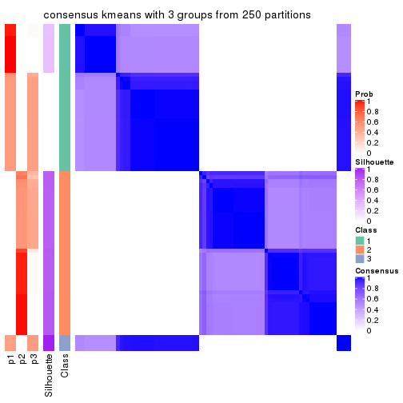
consensus_heatmap(res, k = 4)
consensus_heatmap(res, k = 5)
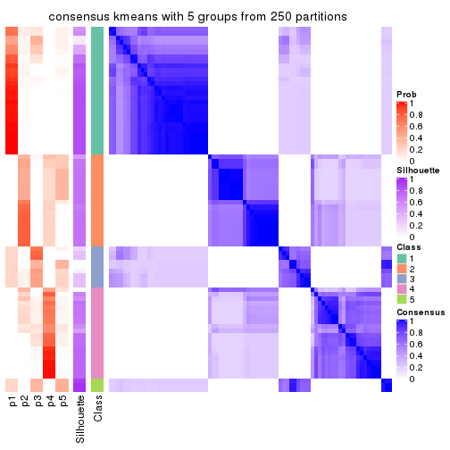
consensus_heatmap(res, k = 6)
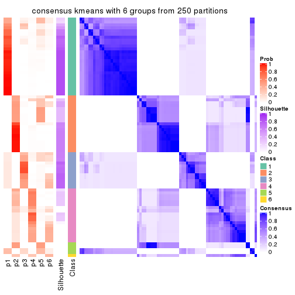
Heatmaps for the membership of samples in all partitions to see how consistent they are:
membership_heatmap(res, k = 2)

membership_heatmap(res, k = 3)
membership_heatmap(res, k = 4)
membership_heatmap(res, k = 5)
membership_heatmap(res, k = 6)
As soon as we have had the classes for columns, we can look for signatures which are significantly different between classes which can be candidate marks for certain classes. Following are the heatmaps for signatures.
Signature heatmaps where rows are scaled:
get_signatures(res, k = 2)

get_signatures(res, k = 3)
get_signatures(res, k = 4)
get_signatures(res, k = 5)
#> Error in mat[ceiling(1:nr/h_ratio), ceiling(1:nc/w_ratio), drop = FALSE]: subscript out of bounds

get_signatures(res, k = 6)
Signature heatmaps where rows are not scaled:
get_signatures(res, k = 2, scale_rows = FALSE)

get_signatures(res, k = 3, scale_rows = FALSE)
get_signatures(res, k = 4, scale_rows = FALSE)
get_signatures(res, k = 5, scale_rows = FALSE)
get_signatures(res, k = 6, scale_rows = FALSE)
#> Error in mat[ceiling(1:nr/h_ratio), ceiling(1:nc/w_ratio), drop = FALSE]: subscript out of bounds
Compare the overlap of signatures from different k:
compare_signatures(res)
get_signature() returns a data frame invisibly. TO get the list of signatures, the function
call should be assigned to a variable explicitly. In following code, if plot argument is set
to FALSE, no heatmap is plotted while only the differential analysis is performed.
# code only for demonstration
tb = get_signature(res, k = ..., plot = FALSE)
An example of the output of tb is:
#> which_row fdr mean_1 mean_2 scaled_mean_1 scaled_mean_2 km
#> 1 38 0.042760348 8.373488 9.131774 -0.5533452 0.5164555 1
#> 2 40 0.018707592 7.106213 8.469186 -0.6173731 0.5762149 1
#> 3 55 0.019134737 10.221463 11.207825 -0.6159697 0.5749050 1
#> 4 59 0.006059896 5.921854 7.869574 -0.6899429 0.6439467 1
#> 5 60 0.018055526 8.928898 10.211722 -0.6204761 0.5791110 1
#> 6 98 0.009384629 15.714769 14.887706 0.6635654 -0.6193277 2
...
The columns in tb are:
which_row: row indices corresponding to the input matrix.fdr: FDR for the differential test. mean_x: The mean value in group x.scaled_mean_x: The mean value in group x after rows are scaled.km: Row groups if k-means clustering is applied to rows.UMAP plot which shows how samples are separated.
dimension_reduction(res, k = 2, method = "UMAP")

dimension_reduction(res, k = 3, method = "UMAP")
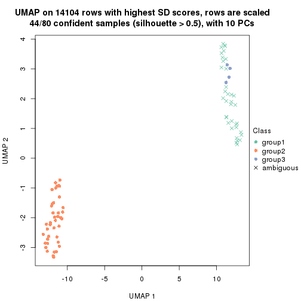
dimension_reduction(res, k = 4, method = "UMAP")
dimension_reduction(res, k = 5, method = "UMAP")
dimension_reduction(res, k = 6, method = "UMAP")
Following heatmap shows how subgroups are split when increasing k:
collect_classes(res)
If matrix rows can be associated to genes, consider to use functional_enrichment(res,
...) to perform function enrichment for the signature genes. See this vignette for more detailed explanations.
The object with results only for a single top-value method and a single partition method can be extracted as:
res = res_list["SD", "skmeans"]
# you can also extract it by
# res = res_list["SD:skmeans"]
A summary of res and all the functions that can be applied to it:
res
#> A 'ConsensusPartition' object with k = 2, 3, 4, 5, 6.
#> On a matrix with 14104 rows and 80 columns.
#> Top rows (1000, 2000, 3000, 4000, 5000) are extracted by 'SD' method.
#> Subgroups are detected by 'skmeans' method.
#> Performed in total 1250 partitions by row resampling.
#> Best k for subgroups seems to be 4.
#>
#> Following methods can be applied to this 'ConsensusPartition' object:
#> [1] "cola_report" "collect_classes" "collect_plots"
#> [4] "collect_stats" "colnames" "compare_signatures"
#> [7] "consensus_heatmap" "dimension_reduction" "functional_enrichment"
#> [10] "get_anno_col" "get_anno" "get_classes"
#> [13] "get_consensus" "get_matrix" "get_membership"
#> [16] "get_param" "get_signatures" "get_stats"
#> [19] "is_best_k" "is_stable_k" "membership_heatmap"
#> [22] "ncol" "nrow" "plot_ecdf"
#> [25] "rownames" "select_partition_number" "show"
#> [28] "suggest_best_k" "test_to_known_factors"
collect_plots() function collects all the plots made from res for all k (number of partitions)
into one single page to provide an easy and fast comparison between different k.
collect_plots(res)
The plots are:
k and the heatmap of
predicted classes for each k.k.k.k.All the plots in panels can be made by individual functions and they are plotted later in this section.
select_partition_number() produces several plots showing different
statistics for choosing “optimized” k. There are following statistics:
k;k, the area increased is defined as \(A_k - A_{k-1}\).The detailed explanations of these statistics can be found in the cola vignette.
Generally speaking, lower PAC score, higher mean silhouette score or higher
concordance corresponds to better partition. Rand index and Jaccard index
measure how similar the current partition is compared to partition with k-1.
If they are too similar, we won't accept k is better than k-1.
select_partition_number(res)
The numeric values for all these statistics can be obtained by get_stats().
get_stats(res)
#> k 1-PAC mean_silhouette concordance area_increased Rand Jaccard
#> 2 2 1.000 1.000 1.000 0.5068 0.494 0.494
#> 3 3 1.000 0.967 0.988 0.2465 0.875 0.746
#> 4 4 0.920 0.871 0.908 0.0720 0.918 0.789
#> 5 5 0.796 0.795 0.863 0.0591 0.966 0.901
#> 6 6 0.780 0.737 0.823 0.0693 0.868 0.591
suggest_best_k() suggests the best \(k\) based on these statistics. The rules are as follows:
suggest_best_k(res)
#> [1] 4
#> attr(,"optional")
#> [1] 2 3
There is also optional best \(k\) = 2 3 that is worth to check.
Following shows the table of the partitions (You need to click the show/hide
code output link to see it). The membership matrix (columns with name p*)
is inferred by
clue::cl_consensus()
function with the SE method. Basically the value in the membership matrix
represents the probability to belong to a certain group. The finall class
label for an item is determined with the group with highest probability it
belongs to.
In get_classes() function, the entropy is calculated from the membership
matrix and the silhouette score is calculated from the consensus matrix.
cbind(get_classes(res, k = 2), get_membership(res, k = 2))
#> class entropy silhouette p1 p2
#> SRR830972 2 0 1 0 1
#> SRR830973 2 0 1 0 1
#> SRR830974 2 0 1 0 1
#> SRR830975 2 0 1 0 1
#> SRR830976 2 0 1 0 1
#> SRR830977 2 0 1 0 1
#> SRR830978 2 0 1 0 1
#> SRR830979 2 0 1 0 1
#> SRR830980 2 0 1 0 1
#> SRR830982 2 0 1 0 1
#> SRR830981 2 0 1 0 1
#> SRR830983 2 0 1 0 1
#> SRR831010 1 0 1 1 0
#> SRR831011 1 0 1 1 0
#> SRR831012 1 0 1 1 0
#> SRR831013 1 0 1 1 0
#> SRR831014 1 0 1 1 0
#> SRR831015 1 0 1 1 0
#> SRR831016 1 0 1 1 0
#> SRR831017 1 0 1 1 0
#> SRR831018 1 0 1 1 0
#> SRR831019 1 0 1 1 0
#> SRR831020 1 0 1 1 0
#> SRR831021 1 0 1 1 0
#> SRR831022 1 0 1 1 0
#> SRR831023 1 0 1 1 0
#> SRR831024 1 0 1 1 0
#> SRR831025 1 0 1 1 0
#> SRR831026 1 0 1 1 0
#> SRR831027 1 0 1 1 0
#> SRR831028 1 0 1 1 0
#> SRR831029 1 0 1 1 0
#> SRR831030 1 0 1 1 0
#> SRR831031 1 0 1 1 0
#> SRR831032 1 0 1 1 0
#> SRR831033 1 0 1 1 0
#> SRR831034 1 0 1 1 0
#> SRR831035 1 0 1 1 0
#> SRR831036 1 0 1 1 0
#> SRR831037 1 0 1 1 0
#> SRR831038 1 0 1 1 0
#> SRR831039 1 0 1 1 0
#> SRR831040 1 0 1 1 0
#> SRR831041 1 0 1 1 0
#> SRR831042 1 0 1 1 0
#> SRR831043 1 0 1 1 0
#> SRR831044 1 0 1 1 0
#> SRR830965 2 0 1 0 1
#> SRR830966 2 0 1 0 1
#> SRR830967 2 0 1 0 1
#> SRR830968 2 0 1 0 1
#> SRR830969 2 0 1 0 1
#> SRR830970 2 0 1 0 1
#> SRR830971 2 0 1 0 1
#> SRR830984 2 0 1 0 1
#> SRR830985 2 0 1 0 1
#> SRR830986 2 0 1 0 1
#> SRR830987 2 0 1 0 1
#> SRR830988 2 0 1 0 1
#> SRR830989 2 0 1 0 1
#> SRR830990 2 0 1 0 1
#> SRR830991 2 0 1 0 1
#> SRR830992 2 0 1 0 1
#> SRR830993 2 0 1 0 1
#> SRR830994 2 0 1 0 1
#> SRR830995 2 0 1 0 1
#> SRR830996 2 0 1 0 1
#> SRR830997 2 0 1 0 1
#> SRR830998 2 0 1 0 1
#> SRR830999 2 0 1 0 1
#> SRR831000 2 0 1 0 1
#> SRR831001 2 0 1 0 1
#> SRR831002 2 0 1 0 1
#> SRR831003 2 0 1 0 1
#> SRR831004 2 0 1 0 1
#> SRR831005 1 0 1 1 0
#> SRR831006 1 0 1 1 0
#> SRR831007 1 0 1 1 0
#> SRR831008 1 0 1 1 0
#> SRR831009 1 0 1 1 0
cbind(get_classes(res, k = 3), get_membership(res, k = 3))
#> class entropy silhouette p1 p2 p3
#> SRR830972 2 0.000 0.9749 0 1.000 0.000
#> SRR830973 3 0.629 0.0901 0 0.464 0.536
#> SRR830974 2 0.388 0.8089 0 0.848 0.152
#> SRR830975 2 0.000 0.9749 0 1.000 0.000
#> SRR830976 2 0.000 0.9749 0 1.000 0.000
#> SRR830977 3 0.000 0.9716 0 0.000 1.000
#> SRR830978 3 0.000 0.9716 0 0.000 1.000
#> SRR830979 3 0.000 0.9716 0 0.000 1.000
#> SRR830980 2 0.000 0.9749 0 1.000 0.000
#> SRR830982 2 0.000 0.9749 0 1.000 0.000
#> SRR830981 3 0.000 0.9716 0 0.000 1.000
#> SRR830983 2 0.000 0.9749 0 1.000 0.000
#> SRR831010 1 0.000 1.0000 1 0.000 0.000
#> SRR831011 1 0.000 1.0000 1 0.000 0.000
#> SRR831012 1 0.000 1.0000 1 0.000 0.000
#> SRR831013 1 0.000 1.0000 1 0.000 0.000
#> SRR831014 1 0.000 1.0000 1 0.000 0.000
#> SRR831015 1 0.000 1.0000 1 0.000 0.000
#> SRR831016 1 0.000 1.0000 1 0.000 0.000
#> SRR831017 1 0.000 1.0000 1 0.000 0.000
#> SRR831018 1 0.000 1.0000 1 0.000 0.000
#> SRR831019 1 0.000 1.0000 1 0.000 0.000
#> SRR831020 1 0.000 1.0000 1 0.000 0.000
#> SRR831021 1 0.000 1.0000 1 0.000 0.000
#> SRR831022 1 0.000 1.0000 1 0.000 0.000
#> SRR831023 1 0.000 1.0000 1 0.000 0.000
#> SRR831024 1 0.000 1.0000 1 0.000 0.000
#> SRR831025 1 0.000 1.0000 1 0.000 0.000
#> SRR831026 1 0.000 1.0000 1 0.000 0.000
#> SRR831027 1 0.000 1.0000 1 0.000 0.000
#> SRR831028 1 0.000 1.0000 1 0.000 0.000
#> SRR831029 1 0.000 1.0000 1 0.000 0.000
#> SRR831030 1 0.000 1.0000 1 0.000 0.000
#> SRR831031 1 0.000 1.0000 1 0.000 0.000
#> SRR831032 1 0.000 1.0000 1 0.000 0.000
#> SRR831033 1 0.000 1.0000 1 0.000 0.000
#> SRR831034 1 0.000 1.0000 1 0.000 0.000
#> SRR831035 1 0.000 1.0000 1 0.000 0.000
#> SRR831036 1 0.000 1.0000 1 0.000 0.000
#> SRR831037 1 0.000 1.0000 1 0.000 0.000
#> SRR831038 1 0.000 1.0000 1 0.000 0.000
#> SRR831039 1 0.000 1.0000 1 0.000 0.000
#> SRR831040 1 0.000 1.0000 1 0.000 0.000
#> SRR831041 1 0.000 1.0000 1 0.000 0.000
#> SRR831042 1 0.000 1.0000 1 0.000 0.000
#> SRR831043 1 0.000 1.0000 1 0.000 0.000
#> SRR831044 1 0.000 1.0000 1 0.000 0.000
#> SRR830965 2 0.000 0.9749 0 1.000 0.000
#> SRR830966 2 0.000 0.9749 0 1.000 0.000
#> SRR830967 2 0.000 0.9749 0 1.000 0.000
#> SRR830968 2 0.000 0.9749 0 1.000 0.000
#> SRR830969 2 0.000 0.9749 0 1.000 0.000
#> SRR830970 2 0.000 0.9749 0 1.000 0.000
#> SRR830971 2 0.000 0.9749 0 1.000 0.000
#> SRR830984 3 0.000 0.9716 0 0.000 1.000
#> SRR830985 3 0.000 0.9716 0 0.000 1.000
#> SRR830986 2 0.000 0.9749 0 1.000 0.000
#> SRR830987 2 0.000 0.9749 0 1.000 0.000
#> SRR830988 2 0.000 0.9749 0 1.000 0.000
#> SRR830989 3 0.000 0.9716 0 0.000 1.000
#> SRR830990 3 0.000 0.9716 0 0.000 1.000
#> SRR830991 2 0.000 0.9749 0 1.000 0.000
#> SRR830992 2 0.593 0.4438 0 0.644 0.356
#> SRR830993 3 0.000 0.9716 0 0.000 1.000
#> SRR830994 3 0.000 0.9716 0 0.000 1.000
#> SRR830995 2 0.000 0.9749 0 1.000 0.000
#> SRR830996 3 0.000 0.9716 0 0.000 1.000
#> SRR830997 3 0.000 0.9716 0 0.000 1.000
#> SRR830998 3 0.000 0.9716 0 0.000 1.000
#> SRR830999 2 0.000 0.9749 0 1.000 0.000
#> SRR831000 3 0.000 0.9716 0 0.000 1.000
#> SRR831001 3 0.000 0.9716 0 0.000 1.000
#> SRR831002 3 0.000 0.9716 0 0.000 1.000
#> SRR831003 3 0.000 0.9716 0 0.000 1.000
#> SRR831004 2 0.000 0.9749 0 1.000 0.000
#> SRR831005 1 0.000 1.0000 1 0.000 0.000
#> SRR831006 1 0.000 1.0000 1 0.000 0.000
#> SRR831007 1 0.000 1.0000 1 0.000 0.000
#> SRR831008 1 0.000 1.0000 1 0.000 0.000
#> SRR831009 1 0.000 1.0000 1 0.000 0.000
cbind(get_classes(res, k = 4), get_membership(res, k = 4))
#> class entropy silhouette p1 p2 p3 p4
#> SRR830972 2 0.0188 0.913 0.000 0.996 0.004 0.000
#> SRR830973 3 0.2565 0.705 0.000 0.056 0.912 0.032
#> SRR830974 3 0.3695 0.730 0.000 0.156 0.828 0.016
#> SRR830975 3 0.3688 0.730 0.000 0.208 0.792 0.000
#> SRR830976 3 0.3688 0.730 0.000 0.208 0.792 0.000
#> SRR830977 3 0.4500 0.469 0.000 0.000 0.684 0.316
#> SRR830978 3 0.4877 0.258 0.000 0.000 0.592 0.408
#> SRR830979 4 0.2589 0.913 0.000 0.000 0.116 0.884
#> SRR830980 3 0.3649 0.729 0.000 0.204 0.796 0.000
#> SRR830982 3 0.3688 0.730 0.000 0.208 0.792 0.000
#> SRR830981 3 0.4500 0.469 0.000 0.000 0.684 0.316
#> SRR830983 3 0.3610 0.731 0.000 0.200 0.800 0.000
#> SRR831010 1 0.0000 0.974 1.000 0.000 0.000 0.000
#> SRR831011 1 0.0000 0.974 1.000 0.000 0.000 0.000
#> SRR831012 1 0.0000 0.974 1.000 0.000 0.000 0.000
#> SRR831013 1 0.0707 0.970 0.980 0.000 0.020 0.000
#> SRR831014 1 0.0000 0.974 1.000 0.000 0.000 0.000
#> SRR831015 1 0.0000 0.974 1.000 0.000 0.000 0.000
#> SRR831016 1 0.1302 0.965 0.956 0.000 0.044 0.000
#> SRR831017 1 0.1867 0.957 0.928 0.000 0.072 0.000
#> SRR831018 1 0.0000 0.974 1.000 0.000 0.000 0.000
#> SRR831019 1 0.1867 0.957 0.928 0.000 0.072 0.000
#> SRR831020 1 0.1867 0.957 0.928 0.000 0.072 0.000
#> SRR831021 1 0.0592 0.970 0.984 0.000 0.016 0.000
#> SRR831022 1 0.0469 0.971 0.988 0.000 0.012 0.000
#> SRR831023 1 0.2081 0.954 0.916 0.000 0.084 0.000
#> SRR831024 1 0.0000 0.974 1.000 0.000 0.000 0.000
#> SRR831025 1 0.1867 0.957 0.928 0.000 0.072 0.000
#> SRR831026 1 0.1867 0.957 0.928 0.000 0.072 0.000
#> SRR831027 1 0.1716 0.959 0.936 0.000 0.064 0.000
#> SRR831028 1 0.1867 0.957 0.928 0.000 0.072 0.000
#> SRR831029 1 0.0707 0.970 0.980 0.000 0.020 0.000
#> SRR831030 1 0.0592 0.970 0.984 0.000 0.016 0.000
#> SRR831031 1 0.0817 0.970 0.976 0.000 0.024 0.000
#> SRR831032 1 0.0000 0.974 1.000 0.000 0.000 0.000
#> SRR831033 1 0.0000 0.974 1.000 0.000 0.000 0.000
#> SRR831034 1 0.1867 0.957 0.928 0.000 0.072 0.000
#> SRR831035 1 0.1867 0.957 0.928 0.000 0.072 0.000
#> SRR831036 1 0.1867 0.957 0.928 0.000 0.072 0.000
#> SRR831037 1 0.1940 0.958 0.924 0.000 0.076 0.000
#> SRR831038 1 0.0592 0.970 0.984 0.000 0.016 0.000
#> SRR831039 1 0.0000 0.974 1.000 0.000 0.000 0.000
#> SRR831040 1 0.0000 0.974 1.000 0.000 0.000 0.000
#> SRR831041 1 0.0000 0.974 1.000 0.000 0.000 0.000
#> SRR831042 1 0.0000 0.974 1.000 0.000 0.000 0.000
#> SRR831043 1 0.0000 0.974 1.000 0.000 0.000 0.000
#> SRR831044 1 0.0000 0.974 1.000 0.000 0.000 0.000
#> SRR830965 2 0.0188 0.913 0.000 0.996 0.004 0.000
#> SRR830966 2 0.0188 0.913 0.000 0.996 0.004 0.000
#> SRR830967 2 0.0000 0.912 0.000 1.000 0.000 0.000
#> SRR830968 2 0.0000 0.912 0.000 1.000 0.000 0.000
#> SRR830969 2 0.0469 0.908 0.000 0.988 0.012 0.000
#> SRR830970 2 0.0188 0.913 0.000 0.996 0.004 0.000
#> SRR830971 2 0.0000 0.912 0.000 1.000 0.000 0.000
#> SRR830984 3 0.4522 0.471 0.000 0.000 0.680 0.320
#> SRR830985 3 0.4431 0.486 0.000 0.000 0.696 0.304
#> SRR830986 3 0.3688 0.730 0.000 0.208 0.792 0.000
#> SRR830987 3 0.3688 0.730 0.000 0.208 0.792 0.000
#> SRR830988 3 0.3688 0.730 0.000 0.208 0.792 0.000
#> SRR830989 4 0.0188 0.949 0.000 0.000 0.004 0.996
#> SRR830990 4 0.2081 0.932 0.000 0.000 0.084 0.916
#> SRR830991 2 0.5750 0.699 0.000 0.696 0.216 0.088
#> SRR830992 3 0.5966 0.593 0.000 0.072 0.648 0.280
#> SRR830993 4 0.2589 0.913 0.000 0.000 0.116 0.884
#> SRR830994 4 0.0336 0.950 0.000 0.000 0.008 0.992
#> SRR830995 2 0.5250 0.736 0.000 0.736 0.196 0.068
#> SRR830996 4 0.1022 0.946 0.000 0.000 0.032 0.968
#> SRR830997 4 0.1940 0.935 0.000 0.000 0.076 0.924
#> SRR830998 4 0.1867 0.938 0.000 0.000 0.072 0.928
#> SRR830999 2 0.5318 0.735 0.000 0.732 0.196 0.072
#> SRR831000 4 0.0469 0.951 0.000 0.000 0.012 0.988
#> SRR831001 4 0.0469 0.951 0.000 0.000 0.012 0.988
#> SRR831002 4 0.0469 0.951 0.000 0.000 0.012 0.988
#> SRR831003 4 0.0469 0.951 0.000 0.000 0.012 0.988
#> SRR831004 3 0.4955 0.275 0.000 0.444 0.556 0.000
#> SRR831005 1 0.0000 0.974 1.000 0.000 0.000 0.000
#> SRR831006 1 0.2011 0.956 0.920 0.000 0.080 0.000
#> SRR831007 1 0.0000 0.974 1.000 0.000 0.000 0.000
#> SRR831008 1 0.2081 0.954 0.916 0.000 0.084 0.000
#> SRR831009 1 0.0000 0.974 1.000 0.000 0.000 0.000
cbind(get_classes(res, k = 5), get_membership(res, k = 5))
#> class entropy silhouette p1 p2 p3 p4 p5
#> SRR830972 5 0.0609 0.997 0.000 0.020 0.000 0.000 0.980
#> SRR830973 2 0.2280 0.736 0.000 0.880 0.120 0.000 0.000
#> SRR830974 2 0.0324 0.787 0.000 0.992 0.004 0.004 0.000
#> SRR830975 2 0.0671 0.792 0.000 0.980 0.000 0.004 0.016
#> SRR830976 2 0.0671 0.792 0.000 0.980 0.000 0.004 0.016
#> SRR830977 2 0.4446 0.390 0.000 0.520 0.476 0.004 0.000
#> SRR830978 2 0.4747 0.328 0.000 0.496 0.488 0.016 0.000
#> SRR830979 3 0.0566 0.813 0.000 0.012 0.984 0.004 0.000
#> SRR830980 2 0.0798 0.791 0.000 0.976 0.000 0.008 0.016
#> SRR830982 2 0.0510 0.793 0.000 0.984 0.000 0.000 0.016
#> SRR830981 2 0.4390 0.457 0.000 0.568 0.428 0.004 0.000
#> SRR830983 2 0.0510 0.793 0.000 0.984 0.000 0.000 0.016
#> SRR831010 1 0.0000 0.909 1.000 0.000 0.000 0.000 0.000
#> SRR831011 1 0.0000 0.909 1.000 0.000 0.000 0.000 0.000
#> SRR831012 1 0.0000 0.909 1.000 0.000 0.000 0.000 0.000
#> SRR831013 1 0.1484 0.894 0.944 0.000 0.000 0.048 0.008
#> SRR831014 1 0.0162 0.909 0.996 0.000 0.000 0.004 0.000
#> SRR831015 1 0.0451 0.908 0.988 0.000 0.000 0.008 0.004
#> SRR831016 1 0.2338 0.883 0.884 0.000 0.000 0.112 0.004
#> SRR831017 1 0.3883 0.838 0.764 0.004 0.000 0.216 0.016
#> SRR831018 1 0.0290 0.908 0.992 0.000 0.000 0.008 0.000
#> SRR831019 1 0.3883 0.838 0.764 0.004 0.000 0.216 0.016
#> SRR831020 1 0.3783 0.838 0.768 0.004 0.000 0.216 0.012
#> SRR831021 1 0.1408 0.894 0.948 0.000 0.000 0.044 0.008
#> SRR831022 1 0.1168 0.898 0.960 0.000 0.000 0.032 0.008
#> SRR831023 1 0.4089 0.829 0.736 0.004 0.000 0.244 0.016
#> SRR831024 1 0.0162 0.909 0.996 0.000 0.000 0.004 0.000
#> SRR831025 1 0.3883 0.838 0.764 0.004 0.000 0.216 0.016
#> SRR831026 1 0.3783 0.838 0.768 0.004 0.000 0.216 0.012
#> SRR831027 1 0.3456 0.848 0.788 0.004 0.000 0.204 0.004
#> SRR831028 1 0.3883 0.838 0.764 0.004 0.000 0.216 0.016
#> SRR831029 1 0.1408 0.894 0.948 0.000 0.000 0.044 0.008
#> SRR831030 1 0.1408 0.894 0.948 0.000 0.000 0.044 0.008
#> SRR831031 1 0.1557 0.894 0.940 0.000 0.000 0.052 0.008
#> SRR831032 1 0.0000 0.909 1.000 0.000 0.000 0.000 0.000
#> SRR831033 1 0.0162 0.909 0.996 0.000 0.000 0.004 0.000
#> SRR831034 1 0.3783 0.838 0.768 0.004 0.000 0.216 0.012
#> SRR831035 1 0.3883 0.838 0.764 0.004 0.000 0.216 0.016
#> SRR831036 1 0.3783 0.838 0.768 0.004 0.000 0.216 0.012
#> SRR831037 1 0.3883 0.845 0.764 0.004 0.000 0.216 0.016
#> SRR831038 1 0.1408 0.894 0.948 0.000 0.000 0.044 0.008
#> SRR831039 1 0.0000 0.909 1.000 0.000 0.000 0.000 0.000
#> SRR831040 1 0.0000 0.909 1.000 0.000 0.000 0.000 0.000
#> SRR831041 1 0.0000 0.909 1.000 0.000 0.000 0.000 0.000
#> SRR831042 1 0.0000 0.909 1.000 0.000 0.000 0.000 0.000
#> SRR831043 1 0.0000 0.909 1.000 0.000 0.000 0.000 0.000
#> SRR831044 1 0.0000 0.909 1.000 0.000 0.000 0.000 0.000
#> SRR830965 5 0.0609 0.997 0.000 0.020 0.000 0.000 0.980
#> SRR830966 5 0.0609 0.997 0.000 0.020 0.000 0.000 0.980
#> SRR830967 5 0.0609 0.997 0.000 0.020 0.000 0.000 0.980
#> SRR830968 5 0.0609 0.997 0.000 0.020 0.000 0.000 0.980
#> SRR830969 5 0.0963 0.980 0.000 0.036 0.000 0.000 0.964
#> SRR830970 5 0.0609 0.997 0.000 0.020 0.000 0.000 0.980
#> SRR830971 5 0.0609 0.997 0.000 0.020 0.000 0.000 0.980
#> SRR830984 2 0.4452 0.354 0.000 0.500 0.496 0.004 0.000
#> SRR830985 2 0.4425 0.429 0.000 0.544 0.452 0.004 0.000
#> SRR830986 2 0.0510 0.793 0.000 0.984 0.000 0.000 0.016
#> SRR830987 2 0.0671 0.792 0.000 0.980 0.000 0.004 0.016
#> SRR830988 2 0.0671 0.792 0.000 0.980 0.000 0.004 0.016
#> SRR830989 4 0.4060 0.558 0.000 0.000 0.360 0.640 0.000
#> SRR830990 3 0.2536 0.841 0.000 0.004 0.868 0.128 0.000
#> SRR830991 4 0.5846 0.470 0.000 0.116 0.004 0.592 0.288
#> SRR830992 4 0.5255 0.426 0.000 0.304 0.072 0.624 0.000
#> SRR830993 3 0.0912 0.818 0.000 0.012 0.972 0.016 0.000
#> SRR830994 4 0.3913 0.611 0.000 0.000 0.324 0.676 0.000
#> SRR830995 4 0.5834 0.383 0.000 0.108 0.000 0.544 0.348
#> SRR830996 4 0.4009 0.632 0.000 0.004 0.312 0.684 0.000
#> SRR830997 3 0.2377 0.837 0.000 0.000 0.872 0.128 0.000
#> SRR830998 3 0.3480 0.686 0.000 0.000 0.752 0.248 0.000
#> SRR830999 4 0.5822 0.391 0.000 0.108 0.000 0.548 0.344
#> SRR831000 4 0.3796 0.642 0.000 0.000 0.300 0.700 0.000
#> SRR831001 4 0.3857 0.636 0.000 0.000 0.312 0.688 0.000
#> SRR831002 4 0.3895 0.628 0.000 0.000 0.320 0.680 0.000
#> SRR831003 4 0.3796 0.642 0.000 0.000 0.300 0.700 0.000
#> SRR831004 2 0.4704 0.551 0.000 0.736 0.000 0.112 0.152
#> SRR831005 1 0.0000 0.909 1.000 0.000 0.000 0.000 0.000
#> SRR831006 1 0.3974 0.839 0.752 0.004 0.000 0.228 0.016
#> SRR831007 1 0.0000 0.909 1.000 0.000 0.000 0.000 0.000
#> SRR831008 1 0.4033 0.834 0.744 0.004 0.000 0.236 0.016
#> SRR831009 1 0.0162 0.909 0.996 0.000 0.000 0.004 0.000
cbind(get_classes(res, k = 6), get_membership(res, k = 6))
#> class entropy silhouette p1 p2 p3 p4 p5 p6
#> SRR830972 5 0.0146 0.997 0.000 0.004 0.000 0.000 0.996 0.000
#> SRR830973 2 0.3588 0.593 0.000 0.776 0.180 0.000 0.000 0.044
#> SRR830974 2 0.0520 0.897 0.000 0.984 0.008 0.000 0.000 0.008
#> SRR830975 2 0.1082 0.905 0.000 0.956 0.000 0.000 0.004 0.040
#> SRR830976 2 0.1082 0.905 0.000 0.956 0.000 0.000 0.004 0.040
#> SRR830977 3 0.4909 0.519 0.000 0.376 0.568 0.012 0.000 0.044
#> SRR830978 3 0.4845 0.507 0.000 0.388 0.560 0.008 0.000 0.044
#> SRR830979 3 0.1088 0.601 0.000 0.000 0.960 0.016 0.000 0.024
#> SRR830980 2 0.0665 0.900 0.000 0.980 0.008 0.000 0.004 0.008
#> SRR830982 2 0.0291 0.904 0.000 0.992 0.004 0.000 0.004 0.000
#> SRR830981 3 0.4862 0.439 0.000 0.428 0.520 0.004 0.000 0.048
#> SRR830983 2 0.0665 0.900 0.000 0.980 0.008 0.000 0.004 0.008
#> SRR831010 1 0.0000 0.838 1.000 0.000 0.000 0.000 0.000 0.000
#> SRR831011 1 0.0000 0.838 1.000 0.000 0.000 0.000 0.000 0.000
#> SRR831012 1 0.0000 0.838 1.000 0.000 0.000 0.000 0.000 0.000
#> SRR831013 1 0.2946 0.656 0.824 0.000 0.004 0.012 0.000 0.160
#> SRR831014 1 0.0146 0.834 0.996 0.000 0.000 0.000 0.000 0.004
#> SRR831015 1 0.0713 0.800 0.972 0.000 0.000 0.000 0.000 0.028
#> SRR831016 1 0.2969 0.192 0.776 0.000 0.000 0.000 0.000 0.224
#> SRR831017 6 0.3847 0.861 0.456 0.000 0.000 0.000 0.000 0.544
#> SRR831018 1 0.0363 0.824 0.988 0.000 0.000 0.000 0.000 0.012
#> SRR831019 6 0.3851 0.863 0.460 0.000 0.000 0.000 0.000 0.540
#> SRR831020 6 0.3869 0.840 0.500 0.000 0.000 0.000 0.000 0.500
#> SRR831021 1 0.2755 0.682 0.844 0.000 0.004 0.012 0.000 0.140
#> SRR831022 1 0.1700 0.762 0.916 0.000 0.000 0.004 0.000 0.080
#> SRR831023 6 0.4293 0.642 0.448 0.000 0.004 0.012 0.000 0.536
#> SRR831024 1 0.0146 0.834 0.996 0.000 0.000 0.000 0.000 0.004
#> SRR831025 6 0.3854 0.862 0.464 0.000 0.000 0.000 0.000 0.536
#> SRR831026 6 0.3868 0.846 0.496 0.000 0.000 0.000 0.000 0.504
#> SRR831027 1 0.3838 -0.759 0.552 0.000 0.000 0.000 0.000 0.448
#> SRR831028 6 0.3851 0.863 0.460 0.000 0.000 0.000 0.000 0.540
#> SRR831029 1 0.3018 0.644 0.816 0.000 0.004 0.012 0.000 0.168
#> SRR831030 1 0.2755 0.682 0.844 0.000 0.004 0.012 0.000 0.140
#> SRR831031 1 0.3053 0.638 0.812 0.000 0.004 0.012 0.000 0.172
#> SRR831032 1 0.0000 0.838 1.000 0.000 0.000 0.000 0.000 0.000
#> SRR831033 1 0.0000 0.838 1.000 0.000 0.000 0.000 0.000 0.000
#> SRR831034 6 0.3868 0.846 0.496 0.000 0.000 0.000 0.000 0.504
#> SRR831035 6 0.3838 0.855 0.448 0.000 0.000 0.000 0.000 0.552
#> SRR831036 6 0.3868 0.846 0.496 0.000 0.000 0.000 0.000 0.504
#> SRR831037 1 0.4313 -0.566 0.504 0.000 0.004 0.012 0.000 0.480
#> SRR831038 1 0.2212 0.726 0.880 0.000 0.000 0.008 0.000 0.112
#> SRR831039 1 0.0000 0.838 1.000 0.000 0.000 0.000 0.000 0.000
#> SRR831040 1 0.0000 0.838 1.000 0.000 0.000 0.000 0.000 0.000
#> SRR831041 1 0.0000 0.838 1.000 0.000 0.000 0.000 0.000 0.000
#> SRR831042 1 0.0000 0.838 1.000 0.000 0.000 0.000 0.000 0.000
#> SRR831043 1 0.0000 0.838 1.000 0.000 0.000 0.000 0.000 0.000
#> SRR831044 1 0.0000 0.838 1.000 0.000 0.000 0.000 0.000 0.000
#> SRR830965 5 0.0146 0.997 0.000 0.004 0.000 0.000 0.996 0.000
#> SRR830966 5 0.0146 0.997 0.000 0.004 0.000 0.000 0.996 0.000
#> SRR830967 5 0.0146 0.997 0.000 0.004 0.000 0.000 0.996 0.000
#> SRR830968 5 0.0146 0.997 0.000 0.004 0.000 0.000 0.996 0.000
#> SRR830969 5 0.0547 0.980 0.000 0.020 0.000 0.000 0.980 0.000
#> SRR830970 5 0.0146 0.997 0.000 0.004 0.000 0.000 0.996 0.000
#> SRR830971 5 0.0146 0.997 0.000 0.004 0.000 0.000 0.996 0.000
#> SRR830984 3 0.4544 0.562 0.000 0.320 0.632 0.004 0.000 0.044
#> SRR830985 3 0.4743 0.508 0.000 0.388 0.564 0.004 0.000 0.044
#> SRR830986 2 0.0692 0.906 0.000 0.976 0.000 0.000 0.004 0.020
#> SRR830987 2 0.1082 0.905 0.000 0.956 0.000 0.000 0.004 0.040
#> SRR830988 2 0.1082 0.905 0.000 0.956 0.000 0.000 0.004 0.040
#> SRR830989 4 0.4127 0.717 0.000 0.000 0.172 0.740 0.000 0.088
#> SRR830990 3 0.3517 0.523 0.000 0.004 0.812 0.128 0.004 0.052
#> SRR830991 4 0.3992 0.779 0.000 0.056 0.000 0.800 0.056 0.088
#> SRR830992 4 0.3155 0.786 0.000 0.088 0.004 0.840 0.000 0.068
#> SRR830993 3 0.1092 0.603 0.000 0.000 0.960 0.020 0.000 0.020
#> SRR830994 4 0.3017 0.796 0.000 0.000 0.108 0.840 0.000 0.052
#> SRR830995 4 0.5532 0.690 0.000 0.076 0.000 0.664 0.160 0.100
#> SRR830996 4 0.1615 0.831 0.000 0.000 0.064 0.928 0.004 0.004
#> SRR830997 3 0.4293 0.471 0.000 0.000 0.740 0.144 0.004 0.112
#> SRR830998 3 0.4920 0.207 0.000 0.000 0.580 0.352 0.004 0.064
#> SRR830999 4 0.5149 0.720 0.000 0.060 0.000 0.700 0.144 0.096
#> SRR831000 4 0.1863 0.832 0.000 0.000 0.044 0.920 0.000 0.036
#> SRR831001 4 0.2138 0.829 0.000 0.000 0.052 0.908 0.004 0.036
#> SRR831002 4 0.2272 0.825 0.000 0.000 0.056 0.900 0.004 0.040
#> SRR831003 4 0.1720 0.834 0.000 0.000 0.040 0.928 0.000 0.032
#> SRR831004 2 0.4981 0.589 0.000 0.708 0.004 0.176 0.068 0.044
#> SRR831005 1 0.0146 0.835 0.996 0.000 0.000 0.000 0.000 0.004
#> SRR831006 6 0.4315 0.568 0.488 0.000 0.004 0.012 0.000 0.496
#> SRR831007 1 0.0000 0.838 1.000 0.000 0.000 0.000 0.000 0.000
#> SRR831008 6 0.4313 0.585 0.480 0.000 0.004 0.012 0.000 0.504
#> SRR831009 1 0.0000 0.838 1.000 0.000 0.000 0.000 0.000 0.000
Heatmaps for the consensus matrix. It visualizes the probability of two samples to be in a same group.
consensus_heatmap(res, k = 2)

consensus_heatmap(res, k = 3)
consensus_heatmap(res, k = 4)
consensus_heatmap(res, k = 5)
consensus_heatmap(res, k = 6)
Heatmaps for the membership of samples in all partitions to see how consistent they are:
membership_heatmap(res, k = 2)

membership_heatmap(res, k = 3)
membership_heatmap(res, k = 4)
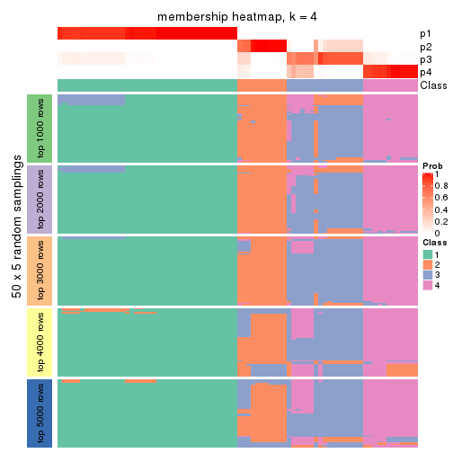
membership_heatmap(res, k = 5)
membership_heatmap(res, k = 6)
As soon as we have had the classes for columns, we can look for signatures which are significantly different between classes which can be candidate marks for certain classes. Following are the heatmaps for signatures.
Signature heatmaps where rows are scaled:
get_signatures(res, k = 2)

get_signatures(res, k = 3)
#> Error in mat[ceiling(1:nr/h_ratio), ceiling(1:nc/w_ratio), drop = FALSE]: subscript out of bounds

get_signatures(res, k = 4)
get_signatures(res, k = 5)
get_signatures(res, k = 6)
Signature heatmaps where rows are not scaled:
get_signatures(res, k = 2, scale_rows = FALSE)

get_signatures(res, k = 3, scale_rows = FALSE)
get_signatures(res, k = 4, scale_rows = FALSE)
get_signatures(res, k = 5, scale_rows = FALSE)
get_signatures(res, k = 6, scale_rows = FALSE)
Compare the overlap of signatures from different k:
compare_signatures(res)
get_signature() returns a data frame invisibly. TO get the list of signatures, the function
call should be assigned to a variable explicitly. In following code, if plot argument is set
to FALSE, no heatmap is plotted while only the differential analysis is performed.
# code only for demonstration
tb = get_signature(res, k = ..., plot = FALSE)
An example of the output of tb is:
#> which_row fdr mean_1 mean_2 scaled_mean_1 scaled_mean_2 km
#> 1 38 0.042760348 8.373488 9.131774 -0.5533452 0.5164555 1
#> 2 40 0.018707592 7.106213 8.469186 -0.6173731 0.5762149 1
#> 3 55 0.019134737 10.221463 11.207825 -0.6159697 0.5749050 1
#> 4 59 0.006059896 5.921854 7.869574 -0.6899429 0.6439467 1
#> 5 60 0.018055526 8.928898 10.211722 -0.6204761 0.5791110 1
#> 6 98 0.009384629 15.714769 14.887706 0.6635654 -0.6193277 2
...
The columns in tb are:
which_row: row indices corresponding to the input matrix.fdr: FDR for the differential test. mean_x: The mean value in group x.scaled_mean_x: The mean value in group x after rows are scaled.km: Row groups if k-means clustering is applied to rows.UMAP plot which shows how samples are separated.
dimension_reduction(res, k = 2, method = "UMAP")
dimension_reduction(res, k = 3, method = "UMAP")
dimension_reduction(res, k = 4, method = "UMAP")
dimension_reduction(res, k = 5, method = "UMAP")
dimension_reduction(res, k = 6, method = "UMAP")
Following heatmap shows how subgroups are split when increasing k:
collect_classes(res)
If matrix rows can be associated to genes, consider to use functional_enrichment(res,
...) to perform function enrichment for the signature genes. See this vignette for more detailed explanations.
The object with results only for a single top-value method and a single partition method can be extracted as:
res = res_list["SD", "pam"]
# you can also extract it by
# res = res_list["SD:pam"]
A summary of res and all the functions that can be applied to it:
res
#> A 'ConsensusPartition' object with k = 2, 3, 4, 5, 6.
#> On a matrix with 14104 rows and 80 columns.
#> Top rows (1000, 2000, 3000, 4000, 5000) are extracted by 'SD' method.
#> Subgroups are detected by 'pam' method.
#> Performed in total 1250 partitions by row resampling.
#> Best k for subgroups seems to be 6.
#>
#> Following methods can be applied to this 'ConsensusPartition' object:
#> [1] "cola_report" "collect_classes" "collect_plots"
#> [4] "collect_stats" "colnames" "compare_signatures"
#> [7] "consensus_heatmap" "dimension_reduction" "functional_enrichment"
#> [10] "get_anno_col" "get_anno" "get_classes"
#> [13] "get_consensus" "get_matrix" "get_membership"
#> [16] "get_param" "get_signatures" "get_stats"
#> [19] "is_best_k" "is_stable_k" "membership_heatmap"
#> [22] "ncol" "nrow" "plot_ecdf"
#> [25] "rownames" "select_partition_number" "show"
#> [28] "suggest_best_k" "test_to_known_factors"
collect_plots() function collects all the plots made from res for all k (number of partitions)
into one single page to provide an easy and fast comparison between different k.
collect_plots(res)
The plots are:
k and the heatmap of
predicted classes for each k.k.k.k.All the plots in panels can be made by individual functions and they are plotted later in this section.
select_partition_number() produces several plots showing different
statistics for choosing “optimized” k. There are following statistics:
k;k, the area increased is defined as \(A_k - A_{k-1}\).The detailed explanations of these statistics can be found in the cola vignette.
Generally speaking, lower PAC score, higher mean silhouette score or higher
concordance corresponds to better partition. Rand index and Jaccard index
measure how similar the current partition is compared to partition with k-1.
If they are too similar, we won't accept k is better than k-1.
select_partition_number(res)
The numeric values for all these statistics can be obtained by get_stats().
get_stats(res)
#> k 1-PAC mean_silhouette concordance area_increased Rand Jaccard
#> 2 2 1.000 1.000 1.000 0.5068 0.494 0.494
#> 3 3 0.770 0.926 0.927 0.2294 0.885 0.767
#> 4 4 0.805 0.826 0.854 0.1380 0.870 0.663
#> 5 5 0.911 0.896 0.947 0.1012 0.928 0.741
#> 6 6 0.908 0.849 0.931 0.0273 0.962 0.835
suggest_best_k() suggests the best \(k\) based on these statistics. The rules are as follows:
suggest_best_k(res)
#> [1] 6
#> attr(,"optional")
#> [1] 2 5
There is also optional best \(k\) = 2 5 that is worth to check.
Following shows the table of the partitions (You need to click the show/hide
code output link to see it). The membership matrix (columns with name p*)
is inferred by
clue::cl_consensus()
function with the SE method. Basically the value in the membership matrix
represents the probability to belong to a certain group. The finall class
label for an item is determined with the group with highest probability it
belongs to.
In get_classes() function, the entropy is calculated from the membership
matrix and the silhouette score is calculated from the consensus matrix.
cbind(get_classes(res, k = 2), get_membership(res, k = 2))
#> class entropy silhouette p1 p2
#> SRR830972 2 0 1 0 1
#> SRR830973 2 0 1 0 1
#> SRR830974 2 0 1 0 1
#> SRR830975 2 0 1 0 1
#> SRR830976 2 0 1 0 1
#> SRR830977 2 0 1 0 1
#> SRR830978 2 0 1 0 1
#> SRR830979 2 0 1 0 1
#> SRR830980 2 0 1 0 1
#> SRR830982 2 0 1 0 1
#> SRR830981 2 0 1 0 1
#> SRR830983 2 0 1 0 1
#> SRR831010 1 0 1 1 0
#> SRR831011 1 0 1 1 0
#> SRR831012 1 0 1 1 0
#> SRR831013 1 0 1 1 0
#> SRR831014 1 0 1 1 0
#> SRR831015 1 0 1 1 0
#> SRR831016 1 0 1 1 0
#> SRR831017 1 0 1 1 0
#> SRR831018 1 0 1 1 0
#> SRR831019 1 0 1 1 0
#> SRR831020 1 0 1 1 0
#> SRR831021 1 0 1 1 0
#> SRR831022 1 0 1 1 0
#> SRR831023 1 0 1 1 0
#> SRR831024 1 0 1 1 0
#> SRR831025 1 0 1 1 0
#> SRR831026 1 0 1 1 0
#> SRR831027 1 0 1 1 0
#> SRR831028 1 0 1 1 0
#> SRR831029 1 0 1 1 0
#> SRR831030 1 0 1 1 0
#> SRR831031 1 0 1 1 0
#> SRR831032 1 0 1 1 0
#> SRR831033 1 0 1 1 0
#> SRR831034 1 0 1 1 0
#> SRR831035 1 0 1 1 0
#> SRR831036 1 0 1 1 0
#> SRR831037 1 0 1 1 0
#> SRR831038 1 0 1 1 0
#> SRR831039 1 0 1 1 0
#> SRR831040 1 0 1 1 0
#> SRR831041 1 0 1 1 0
#> SRR831042 1 0 1 1 0
#> SRR831043 1 0 1 1 0
#> SRR831044 1 0 1 1 0
#> SRR830965 2 0 1 0 1
#> SRR830966 2 0 1 0 1
#> SRR830967 2 0 1 0 1
#> SRR830968 2 0 1 0 1
#> SRR830969 2 0 1 0 1
#> SRR830970 2 0 1 0 1
#> SRR830971 2 0 1 0 1
#> SRR830984 2 0 1 0 1
#> SRR830985 2 0 1 0 1
#> SRR830986 2 0 1 0 1
#> SRR830987 2 0 1 0 1
#> SRR830988 2 0 1 0 1
#> SRR830989 2 0 1 0 1
#> SRR830990 2 0 1 0 1
#> SRR830991 2 0 1 0 1
#> SRR830992 2 0 1 0 1
#> SRR830993 2 0 1 0 1
#> SRR830994 2 0 1 0 1
#> SRR830995 2 0 1 0 1
#> SRR830996 2 0 1 0 1
#> SRR830997 2 0 1 0 1
#> SRR830998 2 0 1 0 1
#> SRR830999 2 0 1 0 1
#> SRR831000 2 0 1 0 1
#> SRR831001 2 0 1 0 1
#> SRR831002 2 0 1 0 1
#> SRR831003 2 0 1 0 1
#> SRR831004 2 0 1 0 1
#> SRR831005 1 0 1 1 0
#> SRR831006 1 0 1 1 0
#> SRR831007 1 0 1 1 0
#> SRR831008 1 0 1 1 0
#> SRR831009 1 0 1 1 0
cbind(get_classes(res, k = 3), get_membership(res, k = 3))
#> class entropy silhouette p1 p2 p3
#> SRR830972 2 0.0000 0.960 0.000 1.000 0.000
#> SRR830973 2 0.0000 0.960 0.000 1.000 0.000
#> SRR830974 2 0.0424 0.954 0.000 0.992 0.008
#> SRR830975 2 0.0000 0.960 0.000 1.000 0.000
#> SRR830976 2 0.0000 0.960 0.000 1.000 0.000
#> SRR830977 2 0.0000 0.960 0.000 1.000 0.000
#> SRR830978 3 0.4887 0.937 0.000 0.228 0.772
#> SRR830979 3 0.4654 0.957 0.000 0.208 0.792
#> SRR830980 2 0.0000 0.960 0.000 1.000 0.000
#> SRR830982 2 0.0000 0.960 0.000 1.000 0.000
#> SRR830981 2 0.1860 0.909 0.000 0.948 0.052
#> SRR830983 2 0.0000 0.960 0.000 1.000 0.000
#> SRR831010 1 0.0000 0.947 1.000 0.000 0.000
#> SRR831011 1 0.0000 0.947 1.000 0.000 0.000
#> SRR831012 1 0.0000 0.947 1.000 0.000 0.000
#> SRR831013 1 0.0000 0.947 1.000 0.000 0.000
#> SRR831014 1 0.0000 0.947 1.000 0.000 0.000
#> SRR831015 1 0.0000 0.947 1.000 0.000 0.000
#> SRR831016 1 0.1860 0.933 0.948 0.000 0.052
#> SRR831017 1 0.4235 0.891 0.824 0.000 0.176
#> SRR831018 1 0.0000 0.947 1.000 0.000 0.000
#> SRR831019 1 0.4235 0.891 0.824 0.000 0.176
#> SRR831020 1 0.4235 0.891 0.824 0.000 0.176
#> SRR831021 1 0.0000 0.947 1.000 0.000 0.000
#> SRR831022 1 0.0000 0.947 1.000 0.000 0.000
#> SRR831023 1 0.4235 0.891 0.824 0.000 0.176
#> SRR831024 1 0.0000 0.947 1.000 0.000 0.000
#> SRR831025 1 0.4235 0.891 0.824 0.000 0.176
#> SRR831026 1 0.4235 0.891 0.824 0.000 0.176
#> SRR831027 1 0.4235 0.891 0.824 0.000 0.176
#> SRR831028 1 0.4235 0.891 0.824 0.000 0.176
#> SRR831029 1 0.0000 0.947 1.000 0.000 0.000
#> SRR831030 1 0.0000 0.947 1.000 0.000 0.000
#> SRR831031 1 0.0000 0.947 1.000 0.000 0.000
#> SRR831032 1 0.0000 0.947 1.000 0.000 0.000
#> SRR831033 1 0.0000 0.947 1.000 0.000 0.000
#> SRR831034 1 0.4235 0.891 0.824 0.000 0.176
#> SRR831035 1 0.4235 0.891 0.824 0.000 0.176
#> SRR831036 1 0.4235 0.891 0.824 0.000 0.176
#> SRR831037 1 0.4235 0.891 0.824 0.000 0.176
#> SRR831038 1 0.0000 0.947 1.000 0.000 0.000
#> SRR831039 1 0.0000 0.947 1.000 0.000 0.000
#> SRR831040 1 0.0000 0.947 1.000 0.000 0.000
#> SRR831041 1 0.0000 0.947 1.000 0.000 0.000
#> SRR831042 1 0.0000 0.947 1.000 0.000 0.000
#> SRR831043 1 0.0000 0.947 1.000 0.000 0.000
#> SRR831044 1 0.0000 0.947 1.000 0.000 0.000
#> SRR830965 2 0.0000 0.960 0.000 1.000 0.000
#> SRR830966 2 0.0000 0.960 0.000 1.000 0.000
#> SRR830967 2 0.0237 0.957 0.000 0.996 0.004
#> SRR830968 2 0.0000 0.960 0.000 1.000 0.000
#> SRR830969 2 0.0000 0.960 0.000 1.000 0.000
#> SRR830970 2 0.0000 0.960 0.000 1.000 0.000
#> SRR830971 2 0.0000 0.960 0.000 1.000 0.000
#> SRR830984 2 0.0000 0.960 0.000 1.000 0.000
#> SRR830985 2 0.0000 0.960 0.000 1.000 0.000
#> SRR830986 2 0.0000 0.960 0.000 1.000 0.000
#> SRR830987 2 0.0000 0.960 0.000 1.000 0.000
#> SRR830988 2 0.0000 0.960 0.000 1.000 0.000
#> SRR830989 2 0.6260 -0.146 0.000 0.552 0.448
#> SRR830990 3 0.4235 0.978 0.000 0.176 0.824
#> SRR830991 3 0.4842 0.946 0.000 0.224 0.776
#> SRR830992 3 0.4796 0.950 0.000 0.220 0.780
#> SRR830993 2 0.0424 0.954 0.000 0.992 0.008
#> SRR830994 3 0.4235 0.978 0.000 0.176 0.824
#> SRR830995 3 0.4796 0.950 0.000 0.220 0.780
#> SRR830996 3 0.4235 0.978 0.000 0.176 0.824
#> SRR830997 3 0.4235 0.978 0.000 0.176 0.824
#> SRR830998 3 0.4235 0.978 0.000 0.176 0.824
#> SRR830999 2 0.4291 0.724 0.000 0.820 0.180
#> SRR831000 3 0.4235 0.978 0.000 0.176 0.824
#> SRR831001 3 0.4235 0.978 0.000 0.176 0.824
#> SRR831002 3 0.4235 0.978 0.000 0.176 0.824
#> SRR831003 3 0.4235 0.978 0.000 0.176 0.824
#> SRR831004 2 0.2959 0.847 0.000 0.900 0.100
#> SRR831005 1 0.0000 0.947 1.000 0.000 0.000
#> SRR831006 1 0.1643 0.935 0.956 0.000 0.044
#> SRR831007 1 0.0000 0.947 1.000 0.000 0.000
#> SRR831008 1 0.4235 0.891 0.824 0.000 0.176
#> SRR831009 1 0.0000 0.947 1.000 0.000 0.000
cbind(get_classes(res, k = 4), get_membership(res, k = 4))
#> class entropy silhouette p1 p2 p3 p4
#> SRR830972 2 0.0188 0.684 0.000 0.996 0.000 0.004
#> SRR830973 2 0.4888 0.821 0.000 0.588 0.412 0.000
#> SRR830974 2 0.4961 0.799 0.000 0.552 0.448 0.000
#> SRR830975 2 0.4877 0.822 0.000 0.592 0.408 0.000
#> SRR830976 2 0.4877 0.822 0.000 0.592 0.408 0.000
#> SRR830977 2 0.4992 0.775 0.000 0.524 0.476 0.000
#> SRR830978 3 0.7523 0.707 0.000 0.184 0.412 0.404
#> SRR830979 3 0.6139 0.843 0.000 0.052 0.544 0.404
#> SRR830980 2 0.4877 0.822 0.000 0.592 0.408 0.000
#> SRR830982 2 0.4877 0.822 0.000 0.592 0.408 0.000
#> SRR830981 2 0.5263 0.790 0.000 0.544 0.448 0.008
#> SRR830983 2 0.4877 0.822 0.000 0.592 0.408 0.000
#> SRR831010 1 0.0000 0.957 1.000 0.000 0.000 0.000
#> SRR831011 1 0.0000 0.957 1.000 0.000 0.000 0.000
#> SRR831012 1 0.0000 0.957 1.000 0.000 0.000 0.000
#> SRR831013 1 0.0000 0.957 1.000 0.000 0.000 0.000
#> SRR831014 1 0.0000 0.957 1.000 0.000 0.000 0.000
#> SRR831015 1 0.0000 0.957 1.000 0.000 0.000 0.000
#> SRR831016 1 0.2530 0.757 0.888 0.000 0.000 0.112
#> SRR831017 4 0.4888 1.000 0.412 0.000 0.000 0.588
#> SRR831018 1 0.0000 0.957 1.000 0.000 0.000 0.000
#> SRR831019 4 0.4888 1.000 0.412 0.000 0.000 0.588
#> SRR831020 4 0.4888 1.000 0.412 0.000 0.000 0.588
#> SRR831021 1 0.0000 0.957 1.000 0.000 0.000 0.000
#> SRR831022 1 0.0000 0.957 1.000 0.000 0.000 0.000
#> SRR831023 4 0.4888 1.000 0.412 0.000 0.000 0.588
#> SRR831024 1 0.0000 0.957 1.000 0.000 0.000 0.000
#> SRR831025 4 0.4888 1.000 0.412 0.000 0.000 0.588
#> SRR831026 4 0.4888 1.000 0.412 0.000 0.000 0.588
#> SRR831027 1 0.4941 -0.638 0.564 0.000 0.000 0.436
#> SRR831028 4 0.4888 1.000 0.412 0.000 0.000 0.588
#> SRR831029 1 0.0000 0.957 1.000 0.000 0.000 0.000
#> SRR831030 1 0.0000 0.957 1.000 0.000 0.000 0.000
#> SRR831031 1 0.1118 0.906 0.964 0.000 0.000 0.036
#> SRR831032 1 0.0000 0.957 1.000 0.000 0.000 0.000
#> SRR831033 1 0.0000 0.957 1.000 0.000 0.000 0.000
#> SRR831034 4 0.4888 1.000 0.412 0.000 0.000 0.588
#> SRR831035 4 0.4888 1.000 0.412 0.000 0.000 0.588
#> SRR831036 4 0.4888 1.000 0.412 0.000 0.000 0.588
#> SRR831037 4 0.4888 1.000 0.412 0.000 0.000 0.588
#> SRR831038 1 0.0000 0.957 1.000 0.000 0.000 0.000
#> SRR831039 1 0.0000 0.957 1.000 0.000 0.000 0.000
#> SRR831040 1 0.0000 0.957 1.000 0.000 0.000 0.000
#> SRR831041 1 0.0000 0.957 1.000 0.000 0.000 0.000
#> SRR831042 1 0.0000 0.957 1.000 0.000 0.000 0.000
#> SRR831043 1 0.0000 0.957 1.000 0.000 0.000 0.000
#> SRR831044 1 0.0000 0.957 1.000 0.000 0.000 0.000
#> SRR830965 2 0.0188 0.684 0.000 0.996 0.000 0.004
#> SRR830966 2 0.0188 0.684 0.000 0.996 0.000 0.004
#> SRR830967 2 0.0779 0.669 0.000 0.980 0.016 0.004
#> SRR830968 2 0.0188 0.684 0.000 0.996 0.000 0.004
#> SRR830969 2 0.1716 0.706 0.000 0.936 0.064 0.000
#> SRR830970 2 0.0000 0.685 0.000 1.000 0.000 0.000
#> SRR830971 2 0.0188 0.684 0.000 0.996 0.000 0.004
#> SRR830984 2 0.5080 0.816 0.000 0.576 0.420 0.004
#> SRR830985 2 0.4888 0.821 0.000 0.588 0.412 0.000
#> SRR830986 2 0.4877 0.822 0.000 0.592 0.408 0.000
#> SRR830987 2 0.4877 0.822 0.000 0.592 0.408 0.000
#> SRR830988 2 0.4877 0.822 0.000 0.592 0.408 0.000
#> SRR830989 3 0.6200 0.238 0.000 0.444 0.504 0.052
#> SRR830990 3 0.4877 0.868 0.000 0.000 0.592 0.408
#> SRR830991 3 0.7164 0.784 0.000 0.156 0.524 0.320
#> SRR830992 3 0.6451 0.834 0.000 0.072 0.524 0.404
#> SRR830993 2 0.4925 0.814 0.000 0.572 0.428 0.000
#> SRR830994 3 0.5039 0.868 0.000 0.004 0.592 0.404
#> SRR830995 3 0.6875 0.816 0.000 0.112 0.520 0.368
#> SRR830996 3 0.5050 0.868 0.000 0.004 0.588 0.408
#> SRR830997 3 0.5039 0.867 0.000 0.004 0.592 0.404
#> SRR830998 3 0.4866 0.867 0.000 0.000 0.596 0.404
#> SRR830999 2 0.5150 0.175 0.000 0.596 0.396 0.008
#> SRR831000 3 0.5050 0.868 0.000 0.004 0.588 0.408
#> SRR831001 3 0.4877 0.868 0.000 0.000 0.592 0.408
#> SRR831002 3 0.4877 0.868 0.000 0.000 0.592 0.408
#> SRR831003 3 0.5050 0.868 0.000 0.004 0.588 0.408
#> SRR831004 3 0.4776 -0.604 0.000 0.376 0.624 0.000
#> SRR831005 1 0.0000 0.957 1.000 0.000 0.000 0.000
#> SRR831006 1 0.2216 0.804 0.908 0.000 0.000 0.092
#> SRR831007 1 0.0000 0.957 1.000 0.000 0.000 0.000
#> SRR831008 4 0.4888 1.000 0.412 0.000 0.000 0.588
#> SRR831009 1 0.0000 0.957 1.000 0.000 0.000 0.000
cbind(get_classes(res, k = 5), get_membership(res, k = 5))
#> class entropy silhouette p1 p2 p3 p4 p5
#> SRR830972 5 0.1121 0.839 0.000 0.044 0.000 0.000 0.956
#> SRR830973 2 0.0162 0.964 0.000 0.996 0.004 0.000 0.000
#> SRR830974 2 0.0324 0.966 0.000 0.992 0.000 0.004 0.004
#> SRR830975 2 0.0162 0.967 0.000 0.996 0.000 0.000 0.004
#> SRR830976 2 0.0162 0.967 0.000 0.996 0.000 0.000 0.004
#> SRR830977 2 0.0865 0.950 0.000 0.972 0.004 0.024 0.000
#> SRR830978 4 0.3231 0.741 0.000 0.196 0.004 0.800 0.000
#> SRR830979 4 0.3806 0.777 0.000 0.152 0.004 0.804 0.040
#> SRR830980 2 0.0162 0.967 0.000 0.996 0.000 0.000 0.004
#> SRR830982 2 0.0162 0.967 0.000 0.996 0.000 0.000 0.004
#> SRR830981 2 0.1041 0.940 0.000 0.964 0.004 0.032 0.000
#> SRR830983 2 0.0162 0.967 0.000 0.996 0.000 0.000 0.004
#> SRR831010 1 0.0000 0.970 1.000 0.000 0.000 0.000 0.000
#> SRR831011 1 0.0000 0.970 1.000 0.000 0.000 0.000 0.000
#> SRR831012 1 0.0000 0.970 1.000 0.000 0.000 0.000 0.000
#> SRR831013 1 0.0000 0.970 1.000 0.000 0.000 0.000 0.000
#> SRR831014 1 0.0000 0.970 1.000 0.000 0.000 0.000 0.000
#> SRR831015 1 0.0000 0.970 1.000 0.000 0.000 0.000 0.000
#> SRR831016 1 0.4235 0.258 0.576 0.000 0.424 0.000 0.000
#> SRR831017 3 0.0162 0.978 0.004 0.000 0.996 0.000 0.000
#> SRR831018 1 0.0000 0.970 1.000 0.000 0.000 0.000 0.000
#> SRR831019 3 0.0162 0.978 0.004 0.000 0.996 0.000 0.000
#> SRR831020 3 0.0162 0.978 0.004 0.000 0.996 0.000 0.000
#> SRR831021 1 0.0000 0.970 1.000 0.000 0.000 0.000 0.000
#> SRR831022 1 0.0000 0.970 1.000 0.000 0.000 0.000 0.000
#> SRR831023 3 0.0290 0.973 0.008 0.000 0.992 0.000 0.000
#> SRR831024 1 0.0000 0.970 1.000 0.000 0.000 0.000 0.000
#> SRR831025 3 0.0162 0.978 0.004 0.000 0.996 0.000 0.000
#> SRR831026 3 0.0162 0.978 0.004 0.000 0.996 0.000 0.000
#> SRR831027 3 0.3039 0.719 0.192 0.000 0.808 0.000 0.000
#> SRR831028 3 0.0162 0.978 0.004 0.000 0.996 0.000 0.000
#> SRR831029 1 0.0000 0.970 1.000 0.000 0.000 0.000 0.000
#> SRR831030 1 0.0000 0.970 1.000 0.000 0.000 0.000 0.000
#> SRR831031 1 0.3109 0.744 0.800 0.000 0.200 0.000 0.000
#> SRR831032 1 0.0000 0.970 1.000 0.000 0.000 0.000 0.000
#> SRR831033 1 0.0000 0.970 1.000 0.000 0.000 0.000 0.000
#> SRR831034 3 0.0162 0.978 0.004 0.000 0.996 0.000 0.000
#> SRR831035 3 0.0162 0.978 0.004 0.000 0.996 0.000 0.000
#> SRR831036 3 0.0162 0.978 0.004 0.000 0.996 0.000 0.000
#> SRR831037 3 0.0162 0.978 0.004 0.000 0.996 0.000 0.000
#> SRR831038 1 0.0000 0.970 1.000 0.000 0.000 0.000 0.000
#> SRR831039 1 0.0000 0.970 1.000 0.000 0.000 0.000 0.000
#> SRR831040 1 0.0000 0.970 1.000 0.000 0.000 0.000 0.000
#> SRR831041 1 0.0000 0.970 1.000 0.000 0.000 0.000 0.000
#> SRR831042 1 0.0000 0.970 1.000 0.000 0.000 0.000 0.000
#> SRR831043 1 0.0000 0.970 1.000 0.000 0.000 0.000 0.000
#> SRR831044 1 0.0000 0.970 1.000 0.000 0.000 0.000 0.000
#> SRR830965 5 0.1043 0.840 0.000 0.040 0.000 0.000 0.960
#> SRR830966 5 0.1043 0.840 0.000 0.040 0.000 0.000 0.960
#> SRR830967 5 0.1168 0.834 0.000 0.032 0.000 0.008 0.960
#> SRR830968 5 0.1043 0.840 0.000 0.040 0.000 0.000 0.960
#> SRR830969 5 0.4310 0.447 0.000 0.392 0.004 0.000 0.604
#> SRR830970 5 0.1608 0.828 0.000 0.072 0.000 0.000 0.928
#> SRR830971 5 0.1043 0.840 0.000 0.040 0.000 0.000 0.960
#> SRR830984 2 0.0566 0.959 0.000 0.984 0.004 0.012 0.000
#> SRR830985 2 0.0324 0.964 0.000 0.992 0.004 0.004 0.000
#> SRR830986 2 0.0162 0.967 0.000 0.996 0.000 0.000 0.004
#> SRR830987 2 0.0162 0.967 0.000 0.996 0.000 0.000 0.004
#> SRR830988 2 0.0162 0.967 0.000 0.996 0.000 0.000 0.004
#> SRR830989 5 0.6554 0.289 0.000 0.224 0.000 0.312 0.464
#> SRR830990 4 0.1205 0.898 0.000 0.004 0.000 0.956 0.040
#> SRR830991 4 0.4183 0.727 0.000 0.084 0.000 0.780 0.136
#> SRR830992 4 0.2179 0.837 0.000 0.112 0.000 0.888 0.000
#> SRR830993 2 0.1818 0.917 0.000 0.932 0.000 0.024 0.044
#> SRR830994 4 0.0162 0.906 0.000 0.000 0.000 0.996 0.004
#> SRR830995 4 0.3459 0.801 0.000 0.052 0.000 0.832 0.116
#> SRR830996 4 0.0000 0.908 0.000 0.000 0.000 1.000 0.000
#> SRR830997 4 0.1808 0.892 0.000 0.020 0.004 0.936 0.040
#> SRR830998 4 0.1492 0.896 0.000 0.008 0.004 0.948 0.040
#> SRR830999 5 0.6504 0.427 0.000 0.240 0.000 0.272 0.488
#> SRR831000 4 0.0000 0.908 0.000 0.000 0.000 1.000 0.000
#> SRR831001 4 0.0000 0.908 0.000 0.000 0.000 1.000 0.000
#> SRR831002 4 0.0000 0.908 0.000 0.000 0.000 1.000 0.000
#> SRR831003 4 0.0000 0.908 0.000 0.000 0.000 1.000 0.000
#> SRR831004 2 0.4238 0.671 0.000 0.756 0.000 0.192 0.052
#> SRR831005 1 0.0000 0.970 1.000 0.000 0.000 0.000 0.000
#> SRR831006 1 0.2020 0.874 0.900 0.000 0.100 0.000 0.000
#> SRR831007 1 0.0000 0.970 1.000 0.000 0.000 0.000 0.000
#> SRR831008 3 0.0162 0.978 0.004 0.000 0.996 0.000 0.000
#> SRR831009 1 0.0000 0.970 1.000 0.000 0.000 0.000 0.000
cbind(get_classes(res, k = 6), get_membership(res, k = 6))
#> class entropy silhouette p1 p2 p3 p4 p5 p6
#> SRR830972 5 0.0363 0.9836 0.000 0.012 0.000 0.000 0.988 0.000
#> SRR830973 2 0.3076 0.6908 0.000 0.760 0.240 0.000 0.000 0.000
#> SRR830974 2 0.0146 0.8144 0.000 0.996 0.000 0.004 0.000 0.000
#> SRR830975 2 0.0000 0.8169 0.000 1.000 0.000 0.000 0.000 0.000
#> SRR830976 2 0.0000 0.8169 0.000 1.000 0.000 0.000 0.000 0.000
#> SRR830977 2 0.5167 0.5406 0.000 0.612 0.240 0.148 0.000 0.000
#> SRR830978 3 0.5992 0.0893 0.000 0.232 0.396 0.372 0.000 0.000
#> SRR830979 3 0.0458 0.6937 0.000 0.000 0.984 0.016 0.000 0.000
#> SRR830980 2 0.0000 0.8169 0.000 1.000 0.000 0.000 0.000 0.000
#> SRR830982 2 0.0000 0.8169 0.000 1.000 0.000 0.000 0.000 0.000
#> SRR830981 2 0.3548 0.7240 0.000 0.796 0.136 0.068 0.000 0.000
#> SRR830983 2 0.0000 0.8169 0.000 1.000 0.000 0.000 0.000 0.000
#> SRR831010 1 0.0000 0.9685 1.000 0.000 0.000 0.000 0.000 0.000
#> SRR831011 1 0.0000 0.9685 1.000 0.000 0.000 0.000 0.000 0.000
#> SRR831012 1 0.0000 0.9685 1.000 0.000 0.000 0.000 0.000 0.000
#> SRR831013 1 0.0000 0.9685 1.000 0.000 0.000 0.000 0.000 0.000
#> SRR831014 1 0.0000 0.9685 1.000 0.000 0.000 0.000 0.000 0.000
#> SRR831015 1 0.0000 0.9685 1.000 0.000 0.000 0.000 0.000 0.000
#> SRR831016 1 0.3810 0.2504 0.572 0.000 0.000 0.000 0.000 0.428
#> SRR831017 6 0.0000 0.9759 0.000 0.000 0.000 0.000 0.000 1.000
#> SRR831018 1 0.0000 0.9685 1.000 0.000 0.000 0.000 0.000 0.000
#> SRR831019 6 0.0000 0.9759 0.000 0.000 0.000 0.000 0.000 1.000
#> SRR831020 6 0.0000 0.9759 0.000 0.000 0.000 0.000 0.000 1.000
#> SRR831021 1 0.0000 0.9685 1.000 0.000 0.000 0.000 0.000 0.000
#> SRR831022 1 0.0000 0.9685 1.000 0.000 0.000 0.000 0.000 0.000
#> SRR831023 6 0.0146 0.9712 0.004 0.000 0.000 0.000 0.000 0.996
#> SRR831024 1 0.0000 0.9685 1.000 0.000 0.000 0.000 0.000 0.000
#> SRR831025 6 0.0000 0.9759 0.000 0.000 0.000 0.000 0.000 1.000
#> SRR831026 6 0.0000 0.9759 0.000 0.000 0.000 0.000 0.000 1.000
#> SRR831027 6 0.2697 0.6940 0.188 0.000 0.000 0.000 0.000 0.812
#> SRR831028 6 0.0000 0.9759 0.000 0.000 0.000 0.000 0.000 1.000
#> SRR831029 1 0.0000 0.9685 1.000 0.000 0.000 0.000 0.000 0.000
#> SRR831030 1 0.0000 0.9685 1.000 0.000 0.000 0.000 0.000 0.000
#> SRR831031 1 0.2793 0.7405 0.800 0.000 0.000 0.000 0.000 0.200
#> SRR831032 1 0.0000 0.9685 1.000 0.000 0.000 0.000 0.000 0.000
#> SRR831033 1 0.0000 0.9685 1.000 0.000 0.000 0.000 0.000 0.000
#> SRR831034 6 0.0000 0.9759 0.000 0.000 0.000 0.000 0.000 1.000
#> SRR831035 6 0.0000 0.9759 0.000 0.000 0.000 0.000 0.000 1.000
#> SRR831036 6 0.0000 0.9759 0.000 0.000 0.000 0.000 0.000 1.000
#> SRR831037 6 0.0000 0.9759 0.000 0.000 0.000 0.000 0.000 1.000
#> SRR831038 1 0.0000 0.9685 1.000 0.000 0.000 0.000 0.000 0.000
#> SRR831039 1 0.0000 0.9685 1.000 0.000 0.000 0.000 0.000 0.000
#> SRR831040 1 0.0000 0.9685 1.000 0.000 0.000 0.000 0.000 0.000
#> SRR831041 1 0.0000 0.9685 1.000 0.000 0.000 0.000 0.000 0.000
#> SRR831042 1 0.0000 0.9685 1.000 0.000 0.000 0.000 0.000 0.000
#> SRR831043 1 0.0000 0.9685 1.000 0.000 0.000 0.000 0.000 0.000
#> SRR831044 1 0.0000 0.9685 1.000 0.000 0.000 0.000 0.000 0.000
#> SRR830965 5 0.0000 0.9935 0.000 0.000 0.000 0.000 1.000 0.000
#> SRR830966 5 0.0000 0.9935 0.000 0.000 0.000 0.000 1.000 0.000
#> SRR830967 5 0.0000 0.9935 0.000 0.000 0.000 0.000 1.000 0.000
#> SRR830968 5 0.0000 0.9935 0.000 0.000 0.000 0.000 1.000 0.000
#> SRR830969 2 0.6004 0.2948 0.000 0.468 0.228 0.004 0.300 0.000
#> SRR830970 5 0.0458 0.9788 0.000 0.016 0.000 0.000 0.984 0.000
#> SRR830971 5 0.0000 0.9935 0.000 0.000 0.000 0.000 1.000 0.000
#> SRR830984 2 0.3175 0.6775 0.000 0.744 0.256 0.000 0.000 0.000
#> SRR830985 2 0.3076 0.6908 0.000 0.760 0.240 0.000 0.000 0.000
#> SRR830986 2 0.0000 0.8169 0.000 1.000 0.000 0.000 0.000 0.000
#> SRR830987 2 0.0000 0.8169 0.000 1.000 0.000 0.000 0.000 0.000
#> SRR830988 2 0.0000 0.8169 0.000 1.000 0.000 0.000 0.000 0.000
#> SRR830989 3 0.5764 0.4728 0.000 0.072 0.580 0.288 0.060 0.000
#> SRR830990 3 0.3076 0.5447 0.000 0.000 0.760 0.240 0.000 0.000
#> SRR830991 4 0.0260 0.9338 0.000 0.000 0.000 0.992 0.008 0.000
#> SRR830992 4 0.0000 0.9397 0.000 0.000 0.000 1.000 0.000 0.000
#> SRR830993 3 0.3797 0.2832 0.000 0.420 0.580 0.000 0.000 0.000
#> SRR830994 4 0.0000 0.9397 0.000 0.000 0.000 1.000 0.000 0.000
#> SRR830995 4 0.0000 0.9397 0.000 0.000 0.000 1.000 0.000 0.000
#> SRR830996 4 0.0000 0.9397 0.000 0.000 0.000 1.000 0.000 0.000
#> SRR830997 3 0.0547 0.6957 0.000 0.000 0.980 0.020 0.000 0.000
#> SRR830998 3 0.1075 0.6923 0.000 0.000 0.952 0.048 0.000 0.000
#> SRR830999 4 0.1480 0.8834 0.000 0.040 0.000 0.940 0.020 0.000
#> SRR831000 4 0.0000 0.9397 0.000 0.000 0.000 1.000 0.000 0.000
#> SRR831001 4 0.2631 0.7711 0.000 0.000 0.180 0.820 0.000 0.000
#> SRR831002 4 0.2631 0.7711 0.000 0.000 0.180 0.820 0.000 0.000
#> SRR831003 4 0.0146 0.9381 0.000 0.000 0.004 0.996 0.000 0.000
#> SRR831004 2 0.3847 0.0870 0.000 0.544 0.000 0.456 0.000 0.000
#> SRR831005 1 0.0000 0.9685 1.000 0.000 0.000 0.000 0.000 0.000
#> SRR831006 1 0.1814 0.8676 0.900 0.000 0.000 0.000 0.000 0.100
#> SRR831007 1 0.0000 0.9685 1.000 0.000 0.000 0.000 0.000 0.000
#> SRR831008 6 0.0000 0.9759 0.000 0.000 0.000 0.000 0.000 1.000
#> SRR831009 1 0.0000 0.9685 1.000 0.000 0.000 0.000 0.000 0.000
Heatmaps for the consensus matrix. It visualizes the probability of two samples to be in a same group.
consensus_heatmap(res, k = 2)

consensus_heatmap(res, k = 3)
consensus_heatmap(res, k = 4)
consensus_heatmap(res, k = 5)
consensus_heatmap(res, k = 6)
Heatmaps for the membership of samples in all partitions to see how consistent they are:
membership_heatmap(res, k = 2)

membership_heatmap(res, k = 3)
membership_heatmap(res, k = 4)
membership_heatmap(res, k = 5)
membership_heatmap(res, k = 6)
As soon as we have had the classes for columns, we can look for signatures which are significantly different between classes which can be candidate marks for certain classes. Following are the heatmaps for signatures.
Signature heatmaps where rows are scaled:
get_signatures(res, k = 2)

get_signatures(res, k = 3)
get_signatures(res, k = 4)
get_signatures(res, k = 5)
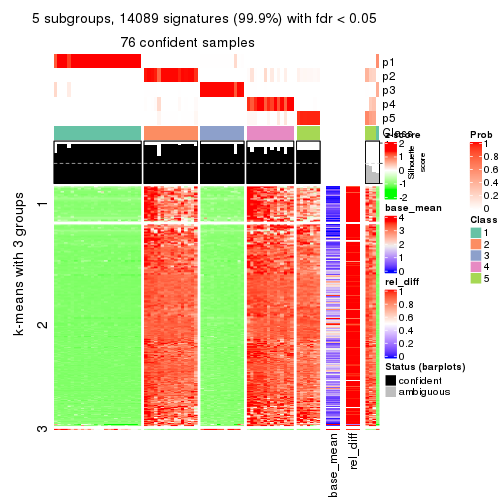
get_signatures(res, k = 6)
Signature heatmaps where rows are not scaled:
get_signatures(res, k = 2, scale_rows = FALSE)

get_signatures(res, k = 3, scale_rows = FALSE)
get_signatures(res, k = 4, scale_rows = FALSE)
get_signatures(res, k = 5, scale_rows = FALSE)
get_signatures(res, k = 6, scale_rows = FALSE)
Compare the overlap of signatures from different k:
compare_signatures(res)
get_signature() returns a data frame invisibly. TO get the list of signatures, the function
call should be assigned to a variable explicitly. In following code, if plot argument is set
to FALSE, no heatmap is plotted while only the differential analysis is performed.
# code only for demonstration
tb = get_signature(res, k = ..., plot = FALSE)
An example of the output of tb is:
#> which_row fdr mean_1 mean_2 scaled_mean_1 scaled_mean_2 km
#> 1 38 0.042760348 8.373488 9.131774 -0.5533452 0.5164555 1
#> 2 40 0.018707592 7.106213 8.469186 -0.6173731 0.5762149 1
#> 3 55 0.019134737 10.221463 11.207825 -0.6159697 0.5749050 1
#> 4 59 0.006059896 5.921854 7.869574 -0.6899429 0.6439467 1
#> 5 60 0.018055526 8.928898 10.211722 -0.6204761 0.5791110 1
#> 6 98 0.009384629 15.714769 14.887706 0.6635654 -0.6193277 2
...
The columns in tb are:
which_row: row indices corresponding to the input matrix.fdr: FDR for the differential test. mean_x: The mean value in group x.scaled_mean_x: The mean value in group x after rows are scaled.km: Row groups if k-means clustering is applied to rows.UMAP plot which shows how samples are separated.
dimension_reduction(res, k = 2, method = "UMAP")

dimension_reduction(res, k = 3, method = "UMAP")
dimension_reduction(res, k = 4, method = "UMAP")

dimension_reduction(res, k = 5, method = "UMAP")
dimension_reduction(res, k = 6, method = "UMAP")
Following heatmap shows how subgroups are split when increasing k:
collect_classes(res)
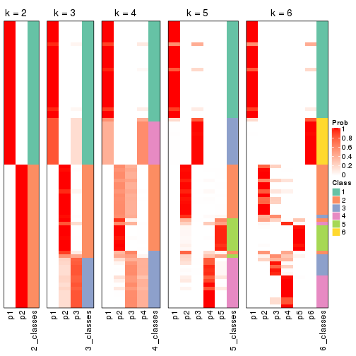
If matrix rows can be associated to genes, consider to use functional_enrichment(res,
...) to perform function enrichment for the signature genes. See this vignette for more detailed explanations.
The object with results only for a single top-value method and a single partition method can be extracted as:
res = res_list["SD", "mclust"]
# you can also extract it by
# res = res_list["SD:mclust"]
A summary of res and all the functions that can be applied to it:
res
#> A 'ConsensusPartition' object with k = 2, 3, 4, 5, 6.
#> On a matrix with 14104 rows and 80 columns.
#> Top rows (1000, 2000, 3000, 4000, 5000) are extracted by 'SD' method.
#> Subgroups are detected by 'mclust' method.
#> Performed in total 1250 partitions by row resampling.
#> Best k for subgroups seems to be 2.
#>
#> Following methods can be applied to this 'ConsensusPartition' object:
#> [1] "cola_report" "collect_classes" "collect_plots"
#> [4] "collect_stats" "colnames" "compare_signatures"
#> [7] "consensus_heatmap" "dimension_reduction" "functional_enrichment"
#> [10] "get_anno_col" "get_anno" "get_classes"
#> [13] "get_consensus" "get_matrix" "get_membership"
#> [16] "get_param" "get_signatures" "get_stats"
#> [19] "is_best_k" "is_stable_k" "membership_heatmap"
#> [22] "ncol" "nrow" "plot_ecdf"
#> [25] "rownames" "select_partition_number" "show"
#> [28] "suggest_best_k" "test_to_known_factors"
collect_plots() function collects all the plots made from res for all k (number of partitions)
into one single page to provide an easy and fast comparison between different k.
collect_plots(res)
The plots are:
k and the heatmap of
predicted classes for each k.k.k.k.All the plots in panels can be made by individual functions and they are plotted later in this section.
select_partition_number() produces several plots showing different
statistics for choosing “optimized” k. There are following statistics:
k;k, the area increased is defined as \(A_k - A_{k-1}\).The detailed explanations of these statistics can be found in the cola vignette.
Generally speaking, lower PAC score, higher mean silhouette score or higher
concordance corresponds to better partition. Rand index and Jaccard index
measure how similar the current partition is compared to partition with k-1.
If they are too similar, we won't accept k is better than k-1.
select_partition_number(res)
The numeric values for all these statistics can be obtained by get_stats().
get_stats(res)
#> k 1-PAC mean_silhouette concordance area_increased Rand Jaccard
#> 2 2 1.000 1.000 1.000 0.5068 0.494 0.494
#> 3 3 0.831 0.872 0.876 0.1941 0.876 0.749
#> 4 4 0.837 0.825 0.886 0.0915 0.934 0.827
#> 5 5 0.739 0.691 0.791 0.0635 0.947 0.853
#> 6 6 0.813 0.775 0.853 0.0494 0.923 0.786
suggest_best_k() suggests the best \(k\) based on these statistics. The rules are as follows:
suggest_best_k(res)
#> [1] 2
Following shows the table of the partitions (You need to click the show/hide
code output link to see it). The membership matrix (columns with name p*)
is inferred by
clue::cl_consensus()
function with the SE method. Basically the value in the membership matrix
represents the probability to belong to a certain group. The finall class
label for an item is determined with the group with highest probability it
belongs to.
In get_classes() function, the entropy is calculated from the membership
matrix and the silhouette score is calculated from the consensus matrix.
cbind(get_classes(res, k = 2), get_membership(res, k = 2))
#> class entropy silhouette p1 p2
#> SRR830972 2 0 1 0 1
#> SRR830973 2 0 1 0 1
#> SRR830974 2 0 1 0 1
#> SRR830975 2 0 1 0 1
#> SRR830976 2 0 1 0 1
#> SRR830977 2 0 1 0 1
#> SRR830978 2 0 1 0 1
#> SRR830979 2 0 1 0 1
#> SRR830980 2 0 1 0 1
#> SRR830982 2 0 1 0 1
#> SRR830981 2 0 1 0 1
#> SRR830983 2 0 1 0 1
#> SRR831010 1 0 1 1 0
#> SRR831011 1 0 1 1 0
#> SRR831012 1 0 1 1 0
#> SRR831013 1 0 1 1 0
#> SRR831014 1 0 1 1 0
#> SRR831015 1 0 1 1 0
#> SRR831016 1 0 1 1 0
#> SRR831017 1 0 1 1 0
#> SRR831018 1 0 1 1 0
#> SRR831019 1 0 1 1 0
#> SRR831020 1 0 1 1 0
#> SRR831021 1 0 1 1 0
#> SRR831022 1 0 1 1 0
#> SRR831023 1 0 1 1 0
#> SRR831024 1 0 1 1 0
#> SRR831025 1 0 1 1 0
#> SRR831026 1 0 1 1 0
#> SRR831027 1 0 1 1 0
#> SRR831028 1 0 1 1 0
#> SRR831029 1 0 1 1 0
#> SRR831030 1 0 1 1 0
#> SRR831031 1 0 1 1 0
#> SRR831032 1 0 1 1 0
#> SRR831033 1 0 1 1 0
#> SRR831034 1 0 1 1 0
#> SRR831035 1 0 1 1 0
#> SRR831036 1 0 1 1 0
#> SRR831037 1 0 1 1 0
#> SRR831038 1 0 1 1 0
#> SRR831039 1 0 1 1 0
#> SRR831040 1 0 1 1 0
#> SRR831041 1 0 1 1 0
#> SRR831042 1 0 1 1 0
#> SRR831043 1 0 1 1 0
#> SRR831044 1 0 1 1 0
#> SRR830965 2 0 1 0 1
#> SRR830966 2 0 1 0 1
#> SRR830967 2 0 1 0 1
#> SRR830968 2 0 1 0 1
#> SRR830969 2 0 1 0 1
#> SRR830970 2 0 1 0 1
#> SRR830971 2 0 1 0 1
#> SRR830984 2 0 1 0 1
#> SRR830985 2 0 1 0 1
#> SRR830986 2 0 1 0 1
#> SRR830987 2 0 1 0 1
#> SRR830988 2 0 1 0 1
#> SRR830989 2 0 1 0 1
#> SRR830990 2 0 1 0 1
#> SRR830991 2 0 1 0 1
#> SRR830992 2 0 1 0 1
#> SRR830993 2 0 1 0 1
#> SRR830994 2 0 1 0 1
#> SRR830995 2 0 1 0 1
#> SRR830996 2 0 1 0 1
#> SRR830997 2 0 1 0 1
#> SRR830998 2 0 1 0 1
#> SRR830999 2 0 1 0 1
#> SRR831000 2 0 1 0 1
#> SRR831001 2 0 1 0 1
#> SRR831002 2 0 1 0 1
#> SRR831003 2 0 1 0 1
#> SRR831004 2 0 1 0 1
#> SRR831005 1 0 1 1 0
#> SRR831006 1 0 1 1 0
#> SRR831007 1 0 1 1 0
#> SRR831008 1 0 1 1 0
#> SRR831009 1 0 1 1 0
cbind(get_classes(res, k = 3), get_membership(res, k = 3))
#> class entropy silhouette p1 p2 p3
#> SRR830972 2 0.3941 0.6937 0.000 0.844 0.156
#> SRR830973 3 0.0237 0.8895 0.000 0.004 0.996
#> SRR830974 3 0.0237 0.8901 0.000 0.004 0.996
#> SRR830975 3 0.1031 0.8877 0.000 0.024 0.976
#> SRR830976 3 0.1031 0.8877 0.000 0.024 0.976
#> SRR830977 3 0.0592 0.8851 0.000 0.012 0.988
#> SRR830978 3 0.1163 0.8705 0.000 0.028 0.972
#> SRR830979 3 0.2448 0.8028 0.000 0.076 0.924
#> SRR830980 3 0.6305 -0.6139 0.000 0.484 0.516
#> SRR830982 3 0.0424 0.8905 0.000 0.008 0.992
#> SRR830981 3 0.0237 0.8895 0.000 0.004 0.996
#> SRR830983 3 0.1031 0.8877 0.000 0.024 0.976
#> SRR831010 1 0.0000 0.9863 1.000 0.000 0.000
#> SRR831011 1 0.0000 0.9863 1.000 0.000 0.000
#> SRR831012 1 0.0000 0.9863 1.000 0.000 0.000
#> SRR831013 1 0.0000 0.9863 1.000 0.000 0.000
#> SRR831014 1 0.0000 0.9863 1.000 0.000 0.000
#> SRR831015 1 0.0000 0.9863 1.000 0.000 0.000
#> SRR831016 1 0.1031 0.9813 0.976 0.024 0.000
#> SRR831017 1 0.1529 0.9752 0.960 0.040 0.000
#> SRR831018 1 0.0000 0.9863 1.000 0.000 0.000
#> SRR831019 1 0.3482 0.9079 0.872 0.128 0.000
#> SRR831020 1 0.1289 0.9791 0.968 0.032 0.000
#> SRR831021 1 0.0000 0.9863 1.000 0.000 0.000
#> SRR831022 1 0.0000 0.9863 1.000 0.000 0.000
#> SRR831023 1 0.1289 0.9791 0.968 0.032 0.000
#> SRR831024 1 0.0000 0.9863 1.000 0.000 0.000
#> SRR831025 1 0.1289 0.9791 0.968 0.032 0.000
#> SRR831026 1 0.1289 0.9791 0.968 0.032 0.000
#> SRR831027 1 0.1031 0.9813 0.976 0.024 0.000
#> SRR831028 1 0.1289 0.9791 0.968 0.032 0.000
#> SRR831029 1 0.0000 0.9863 1.000 0.000 0.000
#> SRR831030 1 0.0000 0.9863 1.000 0.000 0.000
#> SRR831031 1 0.1031 0.9813 0.976 0.024 0.000
#> SRR831032 1 0.0000 0.9863 1.000 0.000 0.000
#> SRR831033 1 0.0000 0.9863 1.000 0.000 0.000
#> SRR831034 1 0.1289 0.9791 0.968 0.032 0.000
#> SRR831035 1 0.1289 0.9791 0.968 0.032 0.000
#> SRR831036 1 0.1289 0.9791 0.968 0.032 0.000
#> SRR831037 1 0.3412 0.9114 0.876 0.124 0.000
#> SRR831038 1 0.0000 0.9863 1.000 0.000 0.000
#> SRR831039 1 0.0000 0.9863 1.000 0.000 0.000
#> SRR831040 1 0.0000 0.9863 1.000 0.000 0.000
#> SRR831041 1 0.0000 0.9863 1.000 0.000 0.000
#> SRR831042 1 0.0000 0.9863 1.000 0.000 0.000
#> SRR831043 1 0.0000 0.9863 1.000 0.000 0.000
#> SRR831044 1 0.0000 0.9863 1.000 0.000 0.000
#> SRR830965 2 0.3686 0.6817 0.000 0.860 0.140
#> SRR830966 2 0.3551 0.6838 0.000 0.868 0.132
#> SRR830967 2 0.3551 0.6838 0.000 0.868 0.132
#> SRR830968 2 0.3551 0.6838 0.000 0.868 0.132
#> SRR830969 2 0.6154 0.8286 0.000 0.592 0.408
#> SRR830970 2 0.5760 0.8053 0.000 0.672 0.328
#> SRR830971 2 0.3551 0.6838 0.000 0.868 0.132
#> SRR830984 3 0.0237 0.8895 0.000 0.004 0.996
#> SRR830985 3 0.0237 0.8895 0.000 0.004 0.996
#> SRR830986 3 0.1031 0.8877 0.000 0.024 0.976
#> SRR830987 3 0.1031 0.8877 0.000 0.024 0.976
#> SRR830988 3 0.1031 0.8877 0.000 0.024 0.976
#> SRR830989 2 0.6204 0.8040 0.000 0.576 0.424
#> SRR830990 2 0.6244 0.7934 0.000 0.560 0.440
#> SRR830991 2 0.6140 0.8304 0.000 0.596 0.404
#> SRR830992 2 0.6140 0.8304 0.000 0.596 0.404
#> SRR830993 3 0.5948 0.0115 0.000 0.360 0.640
#> SRR830994 2 0.6126 0.8306 0.000 0.600 0.400
#> SRR830995 2 0.5465 0.7853 0.000 0.712 0.288
#> SRR830996 2 0.6291 0.7448 0.000 0.532 0.468
#> SRR830997 2 0.6225 0.8026 0.000 0.568 0.432
#> SRR830998 2 0.6192 0.8149 0.000 0.580 0.420
#> SRR830999 2 0.5988 0.8227 0.000 0.632 0.368
#> SRR831000 2 0.6140 0.8304 0.000 0.596 0.404
#> SRR831001 2 0.6126 0.8306 0.000 0.600 0.400
#> SRR831002 2 0.6154 0.8259 0.000 0.592 0.408
#> SRR831003 2 0.6126 0.8306 0.000 0.600 0.400
#> SRR831004 2 0.6079 0.8200 0.000 0.612 0.388
#> SRR831005 1 0.0000 0.9863 1.000 0.000 0.000
#> SRR831006 1 0.1289 0.9791 0.968 0.032 0.000
#> SRR831007 1 0.0000 0.9863 1.000 0.000 0.000
#> SRR831008 1 0.1289 0.9791 0.968 0.032 0.000
#> SRR831009 1 0.0000 0.9863 1.000 0.000 0.000
cbind(get_classes(res, k = 4), get_membership(res, k = 4))
#> class entropy silhouette p1 p2 p3 p4
#> SRR830972 2 0.1576 0.8786 0.000 0.948 0.048 0.004
#> SRR830973 3 0.4837 0.5495 0.000 0.004 0.648 0.348
#> SRR830974 3 0.2593 0.7214 0.000 0.004 0.892 0.104
#> SRR830975 3 0.0469 0.7381 0.000 0.012 0.988 0.000
#> SRR830976 3 0.0592 0.7373 0.000 0.016 0.984 0.000
#> SRR830977 3 0.4990 0.5368 0.000 0.008 0.640 0.352
#> SRR830978 3 0.5137 0.2447 0.000 0.004 0.544 0.452
#> SRR830979 4 0.4948 -0.0614 0.000 0.000 0.440 0.560
#> SRR830980 4 0.7033 0.4841 0.000 0.128 0.364 0.508
#> SRR830982 3 0.1722 0.7398 0.000 0.008 0.944 0.048
#> SRR830981 3 0.4837 0.5495 0.000 0.004 0.648 0.348
#> SRR830983 3 0.1284 0.7414 0.000 0.012 0.964 0.024
#> SRR831010 1 0.0000 0.9764 1.000 0.000 0.000 0.000
#> SRR831011 1 0.0000 0.9764 1.000 0.000 0.000 0.000
#> SRR831012 1 0.0000 0.9764 1.000 0.000 0.000 0.000
#> SRR831013 1 0.0000 0.9764 1.000 0.000 0.000 0.000
#> SRR831014 1 0.0188 0.9756 0.996 0.000 0.000 0.004
#> SRR831015 1 0.0000 0.9764 1.000 0.000 0.000 0.000
#> SRR831016 1 0.1545 0.9657 0.952 0.000 0.008 0.040
#> SRR831017 1 0.1890 0.9573 0.936 0.000 0.008 0.056
#> SRR831018 1 0.0000 0.9764 1.000 0.000 0.000 0.000
#> SRR831019 1 0.4088 0.8410 0.808 0.012 0.008 0.172
#> SRR831020 1 0.1545 0.9657 0.952 0.000 0.008 0.040
#> SRR831021 1 0.0000 0.9764 1.000 0.000 0.000 0.000
#> SRR831022 1 0.0000 0.9764 1.000 0.000 0.000 0.000
#> SRR831023 1 0.1545 0.9657 0.952 0.000 0.008 0.040
#> SRR831024 1 0.0000 0.9764 1.000 0.000 0.000 0.000
#> SRR831025 1 0.1635 0.9639 0.948 0.000 0.008 0.044
#> SRR831026 1 0.1545 0.9657 0.952 0.000 0.008 0.040
#> SRR831027 1 0.1545 0.9657 0.952 0.000 0.008 0.040
#> SRR831028 1 0.1545 0.9657 0.952 0.000 0.008 0.040
#> SRR831029 1 0.0000 0.9764 1.000 0.000 0.000 0.000
#> SRR831030 1 0.0000 0.9764 1.000 0.000 0.000 0.000
#> SRR831031 1 0.1545 0.9657 0.952 0.000 0.008 0.040
#> SRR831032 1 0.0000 0.9764 1.000 0.000 0.000 0.000
#> SRR831033 1 0.0000 0.9764 1.000 0.000 0.000 0.000
#> SRR831034 1 0.1545 0.9657 0.952 0.000 0.008 0.040
#> SRR831035 1 0.1545 0.9657 0.952 0.000 0.008 0.040
#> SRR831036 1 0.1545 0.9657 0.952 0.000 0.008 0.040
#> SRR831037 1 0.3823 0.8577 0.824 0.008 0.008 0.160
#> SRR831038 1 0.0000 0.9764 1.000 0.000 0.000 0.000
#> SRR831039 1 0.0000 0.9764 1.000 0.000 0.000 0.000
#> SRR831040 1 0.0000 0.9764 1.000 0.000 0.000 0.000
#> SRR831041 1 0.0000 0.9764 1.000 0.000 0.000 0.000
#> SRR831042 1 0.0000 0.9764 1.000 0.000 0.000 0.000
#> SRR831043 1 0.0000 0.9764 1.000 0.000 0.000 0.000
#> SRR831044 1 0.0000 0.9764 1.000 0.000 0.000 0.000
#> SRR830965 2 0.0657 0.8997 0.000 0.984 0.012 0.004
#> SRR830966 2 0.0524 0.9004 0.000 0.988 0.008 0.004
#> SRR830967 2 0.0524 0.9004 0.000 0.988 0.008 0.004
#> SRR830968 2 0.0524 0.9004 0.000 0.988 0.008 0.004
#> SRR830969 4 0.6452 0.7619 0.000 0.268 0.112 0.620
#> SRR830970 2 0.2198 0.8633 0.000 0.920 0.072 0.008
#> SRR830971 2 0.0524 0.9004 0.000 0.988 0.008 0.004
#> SRR830984 3 0.4855 0.5421 0.000 0.004 0.644 0.352
#> SRR830985 3 0.4837 0.5495 0.000 0.004 0.648 0.348
#> SRR830986 3 0.0592 0.7373 0.000 0.016 0.984 0.000
#> SRR830987 3 0.0592 0.7373 0.000 0.016 0.984 0.000
#> SRR830988 3 0.0592 0.7373 0.000 0.016 0.984 0.000
#> SRR830989 4 0.4072 0.7933 0.000 0.120 0.052 0.828
#> SRR830990 4 0.4901 0.7929 0.000 0.112 0.108 0.780
#> SRR830991 4 0.6075 0.7526 0.000 0.288 0.076 0.636
#> SRR830992 4 0.6245 0.7850 0.000 0.244 0.108 0.648
#> SRR830993 4 0.4428 0.3246 0.000 0.004 0.276 0.720
#> SRR830994 4 0.4624 0.8089 0.000 0.164 0.052 0.784
#> SRR830995 2 0.1890 0.8705 0.000 0.936 0.056 0.008
#> SRR830996 4 0.6429 0.7262 0.000 0.144 0.212 0.644
#> SRR830997 4 0.4773 0.7994 0.000 0.120 0.092 0.788
#> SRR830998 4 0.6115 0.7884 0.000 0.172 0.148 0.680
#> SRR830999 2 0.6443 -0.1397 0.000 0.548 0.076 0.376
#> SRR831000 4 0.5312 0.7842 0.000 0.236 0.052 0.712
#> SRR831001 4 0.4436 0.8057 0.000 0.148 0.052 0.800
#> SRR831002 4 0.4387 0.8044 0.000 0.144 0.052 0.804
#> SRR831003 4 0.4746 0.8102 0.000 0.168 0.056 0.776
#> SRR831004 4 0.7287 0.5315 0.000 0.384 0.152 0.464
#> SRR831005 1 0.0000 0.9764 1.000 0.000 0.000 0.000
#> SRR831006 1 0.1545 0.9657 0.952 0.000 0.008 0.040
#> SRR831007 1 0.0000 0.9764 1.000 0.000 0.000 0.000
#> SRR831008 1 0.1545 0.9657 0.952 0.000 0.008 0.040
#> SRR831009 1 0.0000 0.9764 1.000 0.000 0.000 0.000
cbind(get_classes(res, k = 5), get_membership(res, k = 5))
#> class entropy silhouette p1 p2 p3 p4 p5
#> SRR830972 5 0.1043 0.8159 0.000 0.040 NA 0.000 0.960
#> SRR830973 4 0.7282 0.0683 0.000 0.348 NA 0.376 0.024
#> SRR830974 2 0.6245 0.4088 0.000 0.588 NA 0.228 0.012
#> SRR830975 2 0.0000 0.8317 0.000 1.000 NA 0.000 0.000
#> SRR830976 2 0.0000 0.8317 0.000 1.000 NA 0.000 0.000
#> SRR830977 4 0.7289 0.1385 0.000 0.308 NA 0.396 0.024
#> SRR830978 4 0.7289 0.1435 0.000 0.308 NA 0.396 0.024
#> SRR830979 4 0.5412 0.4212 0.000 0.048 NA 0.520 0.004
#> SRR830980 4 0.6764 0.2205 0.000 0.188 NA 0.468 0.332
#> SRR830982 2 0.4208 0.7334 0.000 0.788 NA 0.052 0.012
#> SRR830981 4 0.7133 0.1402 0.000 0.316 NA 0.404 0.016
#> SRR830983 2 0.5696 0.5357 0.000 0.660 NA 0.188 0.012
#> SRR831010 1 0.0000 0.9040 1.000 0.000 NA 0.000 0.000
#> SRR831011 1 0.0000 0.9040 1.000 0.000 NA 0.000 0.000
#> SRR831012 1 0.0000 0.9040 1.000 0.000 NA 0.000 0.000
#> SRR831013 1 0.0000 0.9040 1.000 0.000 NA 0.000 0.000
#> SRR831014 1 0.0290 0.9023 0.992 0.000 NA 0.000 0.000
#> SRR831015 1 0.0000 0.9040 1.000 0.000 NA 0.000 0.000
#> SRR831016 1 0.3177 0.8529 0.792 0.000 NA 0.000 0.000
#> SRR831017 1 0.3452 0.8390 0.756 0.000 NA 0.000 0.000
#> SRR831018 1 0.0000 0.9040 1.000 0.000 NA 0.000 0.000
#> SRR831019 1 0.3932 0.7718 0.672 0.000 NA 0.000 0.000
#> SRR831020 1 0.3452 0.8390 0.756 0.000 NA 0.000 0.000
#> SRR831021 1 0.0000 0.9040 1.000 0.000 NA 0.000 0.000
#> SRR831022 1 0.0000 0.9040 1.000 0.000 NA 0.000 0.000
#> SRR831023 1 0.3452 0.8390 0.756 0.000 NA 0.000 0.000
#> SRR831024 1 0.0000 0.9040 1.000 0.000 NA 0.000 0.000
#> SRR831025 1 0.3452 0.8390 0.756 0.000 NA 0.000 0.000
#> SRR831026 1 0.3305 0.8475 0.776 0.000 NA 0.000 0.000
#> SRR831027 1 0.3177 0.8529 0.792 0.000 NA 0.000 0.000
#> SRR831028 1 0.3424 0.8408 0.760 0.000 NA 0.000 0.000
#> SRR831029 1 0.0000 0.9040 1.000 0.000 NA 0.000 0.000
#> SRR831030 1 0.0000 0.9040 1.000 0.000 NA 0.000 0.000
#> SRR831031 1 0.3305 0.8477 0.776 0.000 NA 0.000 0.000
#> SRR831032 1 0.0000 0.9040 1.000 0.000 NA 0.000 0.000
#> SRR831033 1 0.0000 0.9040 1.000 0.000 NA 0.000 0.000
#> SRR831034 1 0.3452 0.8390 0.756 0.000 NA 0.000 0.000
#> SRR831035 1 0.3452 0.8390 0.756 0.000 NA 0.000 0.000
#> SRR831036 1 0.3452 0.8390 0.756 0.000 NA 0.000 0.000
#> SRR831037 1 0.3932 0.7718 0.672 0.000 NA 0.000 0.000
#> SRR831038 1 0.0000 0.9040 1.000 0.000 NA 0.000 0.000
#> SRR831039 1 0.0000 0.9040 1.000 0.000 NA 0.000 0.000
#> SRR831040 1 0.0000 0.9040 1.000 0.000 NA 0.000 0.000
#> SRR831041 1 0.0000 0.9040 1.000 0.000 NA 0.000 0.000
#> SRR831042 1 0.0000 0.9040 1.000 0.000 NA 0.000 0.000
#> SRR831043 1 0.0000 0.9040 1.000 0.000 NA 0.000 0.000
#> SRR831044 1 0.0000 0.9040 1.000 0.000 NA 0.000 0.000
#> SRR830965 5 0.0162 0.8332 0.000 0.004 NA 0.000 0.996
#> SRR830966 5 0.0162 0.8332 0.000 0.004 NA 0.000 0.996
#> SRR830967 5 0.0000 0.8330 0.000 0.000 NA 0.000 1.000
#> SRR830968 5 0.0000 0.8330 0.000 0.000 NA 0.000 1.000
#> SRR830969 4 0.5290 0.2058 0.000 0.044 NA 0.560 0.392
#> SRR830970 5 0.3003 0.7623 0.000 0.044 NA 0.092 0.864
#> SRR830971 5 0.0000 0.8330 0.000 0.000 NA 0.000 1.000
#> SRR830984 4 0.7258 0.2044 0.000 0.268 NA 0.412 0.024
#> SRR830985 4 0.7301 0.1207 0.000 0.316 NA 0.388 0.024
#> SRR830986 2 0.0703 0.8274 0.000 0.976 NA 0.000 0.000
#> SRR830987 2 0.0000 0.8317 0.000 1.000 NA 0.000 0.000
#> SRR830988 2 0.0000 0.8317 0.000 1.000 NA 0.000 0.000
#> SRR830989 4 0.3003 0.5048 0.000 0.000 NA 0.864 0.044
#> SRR830990 4 0.5356 0.5258 0.000 0.032 NA 0.672 0.044
#> SRR830991 4 0.4630 0.1875 0.000 0.008 NA 0.572 0.416
#> SRR830992 4 0.4618 0.3256 0.000 0.016 NA 0.636 0.344
#> SRR830993 4 0.4798 0.4270 0.000 0.012 NA 0.512 0.004
#> SRR830994 4 0.3779 0.4764 0.000 0.000 NA 0.804 0.052
#> SRR830995 5 0.2488 0.7544 0.000 0.004 NA 0.124 0.872
#> SRR830996 4 0.4952 0.4163 0.000 0.040 NA 0.680 0.268
#> SRR830997 4 0.4843 0.5163 0.000 0.004 NA 0.676 0.044
#> SRR830998 4 0.5087 0.4331 0.000 0.028 NA 0.692 0.244
#> SRR830999 5 0.4435 0.4019 0.000 0.016 NA 0.336 0.648
#> SRR831000 4 0.3723 0.4726 0.000 0.000 NA 0.804 0.044
#> SRR831001 4 0.3723 0.4726 0.000 0.000 NA 0.804 0.044
#> SRR831002 4 0.3370 0.4788 0.000 0.000 NA 0.824 0.028
#> SRR831003 4 0.3794 0.4744 0.000 0.000 NA 0.800 0.048
#> SRR831004 5 0.5750 0.1029 0.000 0.068 NA 0.396 0.528
#> SRR831005 1 0.0000 0.9040 1.000 0.000 NA 0.000 0.000
#> SRR831006 1 0.3242 0.8506 0.784 0.000 NA 0.000 0.000
#> SRR831007 1 0.0000 0.9040 1.000 0.000 NA 0.000 0.000
#> SRR831008 1 0.3452 0.8390 0.756 0.000 NA 0.000 0.000
#> SRR831009 1 0.0000 0.9040 1.000 0.000 NA 0.000 0.000
cbind(get_classes(res, k = 6), get_membership(res, k = 6))
#> class entropy silhouette p1 p2 p3 p4 p5 p6
#> SRR830972 5 0.4061 0.864 0.000 0.012 0.008 0.000 0.664 0.316
#> SRR830973 3 0.1788 0.878 0.000 0.028 0.928 0.004 0.000 0.040
#> SRR830974 3 0.2933 0.736 0.000 0.200 0.796 0.004 0.000 0.000
#> SRR830975 2 0.0363 0.902 0.000 0.988 0.012 0.000 0.000 0.000
#> SRR830976 2 0.0363 0.902 0.000 0.988 0.012 0.000 0.000 0.000
#> SRR830977 3 0.0603 0.891 0.000 0.004 0.980 0.016 0.000 0.000
#> SRR830978 3 0.0146 0.894 0.000 0.000 0.996 0.000 0.004 0.000
#> SRR830979 6 0.5948 0.733 0.000 0.008 0.272 0.212 0.000 0.508
#> SRR830980 5 0.6119 0.463 0.000 0.060 0.296 0.012 0.560 0.072
#> SRR830982 2 0.3907 0.226 0.000 0.588 0.408 0.000 0.000 0.004
#> SRR830981 3 0.0291 0.895 0.000 0.004 0.992 0.000 0.000 0.004
#> SRR830983 3 0.3126 0.663 0.000 0.248 0.752 0.000 0.000 0.000
#> SRR831010 1 0.3515 0.858 0.676 0.000 0.000 0.000 0.324 0.000
#> SRR831011 1 0.3515 0.858 0.676 0.000 0.000 0.000 0.324 0.000
#> SRR831012 1 0.3515 0.858 0.676 0.000 0.000 0.000 0.324 0.000
#> SRR831013 1 0.3515 0.858 0.676 0.000 0.000 0.000 0.324 0.000
#> SRR831014 1 0.3428 0.854 0.696 0.000 0.000 0.000 0.304 0.000
#> SRR831015 1 0.3515 0.858 0.676 0.000 0.000 0.000 0.324 0.000
#> SRR831016 1 0.0458 0.778 0.984 0.000 0.000 0.000 0.016 0.000
#> SRR831017 1 0.0260 0.770 0.992 0.000 0.000 0.000 0.000 0.008
#> SRR831018 1 0.3515 0.858 0.676 0.000 0.000 0.000 0.324 0.000
#> SRR831019 1 0.1010 0.745 0.960 0.000 0.000 0.004 0.000 0.036
#> SRR831020 1 0.0260 0.770 0.992 0.000 0.000 0.000 0.000 0.008
#> SRR831021 1 0.3515 0.858 0.676 0.000 0.000 0.000 0.324 0.000
#> SRR831022 1 0.3515 0.858 0.676 0.000 0.000 0.000 0.324 0.000
#> SRR831023 1 0.0260 0.770 0.992 0.000 0.000 0.000 0.000 0.008
#> SRR831024 1 0.3515 0.858 0.676 0.000 0.000 0.000 0.324 0.000
#> SRR831025 1 0.0260 0.770 0.992 0.000 0.000 0.000 0.000 0.008
#> SRR831026 1 0.0260 0.770 0.992 0.000 0.000 0.000 0.000 0.008
#> SRR831027 1 0.0146 0.772 0.996 0.000 0.000 0.000 0.000 0.004
#> SRR831028 1 0.0260 0.770 0.992 0.000 0.000 0.000 0.000 0.008
#> SRR831029 1 0.3515 0.858 0.676 0.000 0.000 0.000 0.324 0.000
#> SRR831030 1 0.3515 0.858 0.676 0.000 0.000 0.000 0.324 0.000
#> SRR831031 1 0.0260 0.770 0.992 0.000 0.000 0.000 0.000 0.008
#> SRR831032 1 0.3515 0.858 0.676 0.000 0.000 0.000 0.324 0.000
#> SRR831033 1 0.3515 0.858 0.676 0.000 0.000 0.000 0.324 0.000
#> SRR831034 1 0.0260 0.770 0.992 0.000 0.000 0.000 0.000 0.008
#> SRR831035 1 0.0260 0.770 0.992 0.000 0.000 0.000 0.000 0.008
#> SRR831036 1 0.0260 0.770 0.992 0.000 0.000 0.000 0.000 0.008
#> SRR831037 1 0.1010 0.745 0.960 0.000 0.000 0.004 0.000 0.036
#> SRR831038 1 0.3515 0.858 0.676 0.000 0.000 0.000 0.324 0.000
#> SRR831039 1 0.3515 0.858 0.676 0.000 0.000 0.000 0.324 0.000
#> SRR831040 1 0.3515 0.858 0.676 0.000 0.000 0.000 0.324 0.000
#> SRR831041 1 0.3515 0.858 0.676 0.000 0.000 0.000 0.324 0.000
#> SRR831042 1 0.3515 0.858 0.676 0.000 0.000 0.000 0.324 0.000
#> SRR831043 1 0.3515 0.858 0.676 0.000 0.000 0.000 0.324 0.000
#> SRR831044 1 0.3515 0.858 0.676 0.000 0.000 0.000 0.324 0.000
#> SRR830965 5 0.3668 0.866 0.000 0.004 0.000 0.000 0.668 0.328
#> SRR830966 5 0.3864 0.868 0.000 0.004 0.000 0.004 0.648 0.344
#> SRR830967 5 0.3986 0.867 0.000 0.004 0.000 0.004 0.608 0.384
#> SRR830968 5 0.3986 0.867 0.000 0.004 0.000 0.004 0.608 0.384
#> SRR830969 5 0.6105 0.795 0.000 0.016 0.064 0.048 0.524 0.348
#> SRR830970 5 0.4031 0.867 0.000 0.008 0.004 0.004 0.660 0.324
#> SRR830971 5 0.3986 0.867 0.000 0.004 0.000 0.004 0.608 0.384
#> SRR830984 3 0.1296 0.872 0.000 0.004 0.948 0.004 0.000 0.044
#> SRR830985 3 0.0260 0.895 0.000 0.008 0.992 0.000 0.000 0.000
#> SRR830986 2 0.0865 0.887 0.000 0.964 0.036 0.000 0.000 0.000
#> SRR830987 2 0.0363 0.902 0.000 0.988 0.012 0.000 0.000 0.000
#> SRR830988 2 0.0363 0.902 0.000 0.988 0.012 0.000 0.000 0.000
#> SRR830989 4 0.5138 -0.111 0.000 0.004 0.080 0.616 0.008 0.292
#> SRR830990 6 0.5803 0.772 0.000 0.008 0.148 0.304 0.004 0.536
#> SRR830991 5 0.6177 0.740 0.000 0.000 0.036 0.168 0.532 0.264
#> SRR830992 5 0.6598 0.215 0.000 0.000 0.132 0.320 0.472 0.076
#> SRR830993 6 0.5883 0.730 0.000 0.008 0.260 0.208 0.000 0.524
#> SRR830994 4 0.0436 0.752 0.000 0.000 0.004 0.988 0.004 0.004
#> SRR830995 5 0.4192 0.868 0.000 0.004 0.004 0.008 0.612 0.372
#> SRR830996 4 0.6793 -0.501 0.000 0.000 0.228 0.384 0.048 0.340
#> SRR830997 6 0.5413 0.720 0.000 0.008 0.088 0.348 0.004 0.552
#> SRR830998 6 0.6131 0.684 0.000 0.008 0.092 0.352 0.040 0.508
#> SRR830999 5 0.4968 0.856 0.000 0.004 0.004 0.060 0.592 0.340
#> SRR831000 4 0.0146 0.756 0.000 0.000 0.000 0.996 0.004 0.000
#> SRR831001 4 0.0146 0.756 0.000 0.000 0.000 0.996 0.004 0.000
#> SRR831002 4 0.0146 0.756 0.000 0.000 0.000 0.996 0.004 0.000
#> SRR831003 4 0.0291 0.754 0.000 0.000 0.004 0.992 0.004 0.000
#> SRR831004 5 0.5322 0.837 0.000 0.008 0.040 0.032 0.592 0.328
#> SRR831005 1 0.3515 0.858 0.676 0.000 0.000 0.000 0.324 0.000
#> SRR831006 1 0.0146 0.775 0.996 0.000 0.000 0.000 0.004 0.000
#> SRR831007 1 0.3515 0.858 0.676 0.000 0.000 0.000 0.324 0.000
#> SRR831008 1 0.0260 0.770 0.992 0.000 0.000 0.000 0.000 0.008
#> SRR831009 1 0.3515 0.858 0.676 0.000 0.000 0.000 0.324 0.000
Heatmaps for the consensus matrix. It visualizes the probability of two samples to be in a same group.
consensus_heatmap(res, k = 2)

consensus_heatmap(res, k = 3)
consensus_heatmap(res, k = 4)
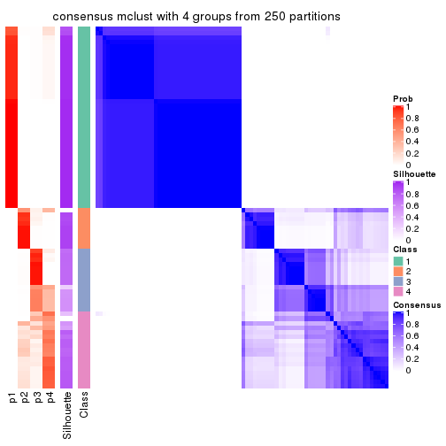
consensus_heatmap(res, k = 5)
consensus_heatmap(res, k = 6)
Heatmaps for the membership of samples in all partitions to see how consistent they are:
membership_heatmap(res, k = 2)

membership_heatmap(res, k = 3)
membership_heatmap(res, k = 4)
membership_heatmap(res, k = 5)
membership_heatmap(res, k = 6)
As soon as we have had the classes for columns, we can look for signatures which are significantly different between classes which can be candidate marks for certain classes. Following are the heatmaps for signatures.
Signature heatmaps where rows are scaled:
get_signatures(res, k = 2)

get_signatures(res, k = 3)
get_signatures(res, k = 4)
get_signatures(res, k = 5)
get_signatures(res, k = 6)
Signature heatmaps where rows are not scaled:
get_signatures(res, k = 2, scale_rows = FALSE)
get_signatures(res, k = 3, scale_rows = FALSE)
get_signatures(res, k = 4, scale_rows = FALSE)
#> Error in mat[ceiling(1:nr/h_ratio), ceiling(1:nc/w_ratio), drop = FALSE]: subscript out of bounds
get_signatures(res, k = 5, scale_rows = FALSE)
get_signatures(res, k = 6, scale_rows = FALSE)
Compare the overlap of signatures from different k:
compare_signatures(res)
get_signature() returns a data frame invisibly. TO get the list of signatures, the function
call should be assigned to a variable explicitly. In following code, if plot argument is set
to FALSE, no heatmap is plotted while only the differential analysis is performed.
# code only for demonstration
tb = get_signature(res, k = ..., plot = FALSE)
An example of the output of tb is:
#> which_row fdr mean_1 mean_2 scaled_mean_1 scaled_mean_2 km
#> 1 38 0.042760348 8.373488 9.131774 -0.5533452 0.5164555 1
#> 2 40 0.018707592 7.106213 8.469186 -0.6173731 0.5762149 1
#> 3 55 0.019134737 10.221463 11.207825 -0.6159697 0.5749050 1
#> 4 59 0.006059896 5.921854 7.869574 -0.6899429 0.6439467 1
#> 5 60 0.018055526 8.928898 10.211722 -0.6204761 0.5791110 1
#> 6 98 0.009384629 15.714769 14.887706 0.6635654 -0.6193277 2
...
The columns in tb are:
which_row: row indices corresponding to the input matrix.fdr: FDR for the differential test. mean_x: The mean value in group x.scaled_mean_x: The mean value in group x after rows are scaled.km: Row groups if k-means clustering is applied to rows.UMAP plot which shows how samples are separated.
dimension_reduction(res, k = 2, method = "UMAP")

dimension_reduction(res, k = 3, method = "UMAP")
dimension_reduction(res, k = 4, method = "UMAP")
dimension_reduction(res, k = 5, method = "UMAP")
dimension_reduction(res, k = 6, method = "UMAP")
Following heatmap shows how subgroups are split when increasing k:
collect_classes(res)
If matrix rows can be associated to genes, consider to use functional_enrichment(res,
...) to perform function enrichment for the signature genes. See this vignette for more detailed explanations.
The object with results only for a single top-value method and a single partition method can be extracted as:
res = res_list["SD", "NMF"]
# you can also extract it by
# res = res_list["SD:NMF"]
A summary of res and all the functions that can be applied to it:
res
#> A 'ConsensusPartition' object with k = 2, 3, 4, 5, 6.
#> On a matrix with 14104 rows and 80 columns.
#> Top rows (1000, 2000, 3000, 4000, 5000) are extracted by 'SD' method.
#> Subgroups are detected by 'NMF' method.
#> Performed in total 1250 partitions by row resampling.
#> Best k for subgroups seems to be 2.
#>
#> Following methods can be applied to this 'ConsensusPartition' object:
#> [1] "cola_report" "collect_classes" "collect_plots"
#> [4] "collect_stats" "colnames" "compare_signatures"
#> [7] "consensus_heatmap" "dimension_reduction" "functional_enrichment"
#> [10] "get_anno_col" "get_anno" "get_classes"
#> [13] "get_consensus" "get_matrix" "get_membership"
#> [16] "get_param" "get_signatures" "get_stats"
#> [19] "is_best_k" "is_stable_k" "membership_heatmap"
#> [22] "ncol" "nrow" "plot_ecdf"
#> [25] "rownames" "select_partition_number" "show"
#> [28] "suggest_best_k" "test_to_known_factors"
collect_plots() function collects all the plots made from res for all k (number of partitions)
into one single page to provide an easy and fast comparison between different k.
collect_plots(res)
The plots are:
k and the heatmap of
predicted classes for each k.k.k.k.All the plots in panels can be made by individual functions and they are plotted later in this section.
select_partition_number() produces several plots showing different
statistics for choosing “optimized” k. There are following statistics:
k;k, the area increased is defined as \(A_k - A_{k-1}\).The detailed explanations of these statistics can be found in the cola vignette.
Generally speaking, lower PAC score, higher mean silhouette score or higher
concordance corresponds to better partition. Rand index and Jaccard index
measure how similar the current partition is compared to partition with k-1.
If they are too similar, we won't accept k is better than k-1.
select_partition_number(res)
The numeric values for all these statistics can be obtained by get_stats().
get_stats(res)
#> k 1-PAC mean_silhouette concordance area_increased Rand Jaccard
#> 2 2 1.000 1.000 1.000 0.50682 0.494 0.494
#> 3 3 0.864 0.879 0.901 0.16226 0.878 0.754
#> 4 4 0.813 0.688 0.873 -0.00442 0.899 0.778
#> 5 5 0.767 0.661 0.805 0.07842 0.908 0.794
#> 6 6 0.749 0.716 0.789 0.04614 0.922 0.801
suggest_best_k() suggests the best \(k\) based on these statistics. The rules are as follows:
suggest_best_k(res)
#> [1] 2
Following shows the table of the partitions (You need to click the show/hide
code output link to see it). The membership matrix (columns with name p*)
is inferred by
clue::cl_consensus()
function with the SE method. Basically the value in the membership matrix
represents the probability to belong to a certain group. The finall class
label for an item is determined with the group with highest probability it
belongs to.
In get_classes() function, the entropy is calculated from the membership
matrix and the silhouette score is calculated from the consensus matrix.
cbind(get_classes(res, k = 2), get_membership(res, k = 2))
#> class entropy silhouette p1 p2
#> SRR830972 2 0 1 0 1
#> SRR830973 2 0 1 0 1
#> SRR830974 2 0 1 0 1
#> SRR830975 2 0 1 0 1
#> SRR830976 2 0 1 0 1
#> SRR830977 2 0 1 0 1
#> SRR830978 2 0 1 0 1
#> SRR830979 2 0 1 0 1
#> SRR830980 2 0 1 0 1
#> SRR830982 2 0 1 0 1
#> SRR830981 2 0 1 0 1
#> SRR830983 2 0 1 0 1
#> SRR831010 1 0 1 1 0
#> SRR831011 1 0 1 1 0
#> SRR831012 1 0 1 1 0
#> SRR831013 1 0 1 1 0
#> SRR831014 1 0 1 1 0
#> SRR831015 1 0 1 1 0
#> SRR831016 1 0 1 1 0
#> SRR831017 1 0 1 1 0
#> SRR831018 1 0 1 1 0
#> SRR831019 1 0 1 1 0
#> SRR831020 1 0 1 1 0
#> SRR831021 1 0 1 1 0
#> SRR831022 1 0 1 1 0
#> SRR831023 1 0 1 1 0
#> SRR831024 1 0 1 1 0
#> SRR831025 1 0 1 1 0
#> SRR831026 1 0 1 1 0
#> SRR831027 1 0 1 1 0
#> SRR831028 1 0 1 1 0
#> SRR831029 1 0 1 1 0
#> SRR831030 1 0 1 1 0
#> SRR831031 1 0 1 1 0
#> SRR831032 1 0 1 1 0
#> SRR831033 1 0 1 1 0
#> SRR831034 1 0 1 1 0
#> SRR831035 1 0 1 1 0
#> SRR831036 1 0 1 1 0
#> SRR831037 1 0 1 1 0
#> SRR831038 1 0 1 1 0
#> SRR831039 1 0 1 1 0
#> SRR831040 1 0 1 1 0
#> SRR831041 1 0 1 1 0
#> SRR831042 1 0 1 1 0
#> SRR831043 1 0 1 1 0
#> SRR831044 1 0 1 1 0
#> SRR830965 2 0 1 0 1
#> SRR830966 2 0 1 0 1
#> SRR830967 2 0 1 0 1
#> SRR830968 2 0 1 0 1
#> SRR830969 2 0 1 0 1
#> SRR830970 2 0 1 0 1
#> SRR830971 2 0 1 0 1
#> SRR830984 2 0 1 0 1
#> SRR830985 2 0 1 0 1
#> SRR830986 2 0 1 0 1
#> SRR830987 2 0 1 0 1
#> SRR830988 2 0 1 0 1
#> SRR830989 2 0 1 0 1
#> SRR830990 2 0 1 0 1
#> SRR830991 2 0 1 0 1
#> SRR830992 2 0 1 0 1
#> SRR830993 2 0 1 0 1
#> SRR830994 2 0 1 0 1
#> SRR830995 2 0 1 0 1
#> SRR830996 2 0 1 0 1
#> SRR830997 2 0 1 0 1
#> SRR830998 2 0 1 0 1
#> SRR830999 2 0 1 0 1
#> SRR831000 2 0 1 0 1
#> SRR831001 2 0 1 0 1
#> SRR831002 2 0 1 0 1
#> SRR831003 2 0 1 0 1
#> SRR831004 2 0 1 0 1
#> SRR831005 1 0 1 1 0
#> SRR831006 1 0 1 1 0
#> SRR831007 1 0 1 1 0
#> SRR831008 1 0 1 1 0
#> SRR831009 1 0 1 1 0
cbind(get_classes(res, k = 3), get_membership(res, k = 3))
#> class entropy silhouette p1 p2 p3
#> SRR830972 2 0.0592 0.866 0 0.988 0.012
#> SRR830973 2 0.5882 -0.108 0 0.652 0.348
#> SRR830974 2 0.4346 0.628 0 0.816 0.184
#> SRR830975 2 0.0237 0.871 0 0.996 0.004
#> SRR830976 2 0.0424 0.874 0 0.992 0.008
#> SRR830977 3 0.6309 0.700 0 0.496 0.504
#> SRR830978 3 0.6252 0.798 0 0.444 0.556
#> SRR830979 3 0.5098 0.782 0 0.248 0.752
#> SRR830980 2 0.2261 0.842 0 0.932 0.068
#> SRR830982 2 0.2356 0.838 0 0.928 0.072
#> SRR830981 3 0.6260 0.793 0 0.448 0.552
#> SRR830983 2 0.2796 0.812 0 0.908 0.092
#> SRR831010 1 0.0000 1.000 1 0.000 0.000
#> SRR831011 1 0.0000 1.000 1 0.000 0.000
#> SRR831012 1 0.0000 1.000 1 0.000 0.000
#> SRR831013 1 0.0000 1.000 1 0.000 0.000
#> SRR831014 1 0.0000 1.000 1 0.000 0.000
#> SRR831015 1 0.0000 1.000 1 0.000 0.000
#> SRR831016 1 0.0000 1.000 1 0.000 0.000
#> SRR831017 1 0.0000 1.000 1 0.000 0.000
#> SRR831018 1 0.0000 1.000 1 0.000 0.000
#> SRR831019 1 0.0000 1.000 1 0.000 0.000
#> SRR831020 1 0.0000 1.000 1 0.000 0.000
#> SRR831021 1 0.0000 1.000 1 0.000 0.000
#> SRR831022 1 0.0000 1.000 1 0.000 0.000
#> SRR831023 1 0.0000 1.000 1 0.000 0.000
#> SRR831024 1 0.0000 1.000 1 0.000 0.000
#> SRR831025 1 0.0000 1.000 1 0.000 0.000
#> SRR831026 1 0.0000 1.000 1 0.000 0.000
#> SRR831027 1 0.0000 1.000 1 0.000 0.000
#> SRR831028 1 0.0000 1.000 1 0.000 0.000
#> SRR831029 1 0.0000 1.000 1 0.000 0.000
#> SRR831030 1 0.0000 1.000 1 0.000 0.000
#> SRR831031 1 0.0000 1.000 1 0.000 0.000
#> SRR831032 1 0.0000 1.000 1 0.000 0.000
#> SRR831033 1 0.0000 1.000 1 0.000 0.000
#> SRR831034 1 0.0000 1.000 1 0.000 0.000
#> SRR831035 1 0.0000 1.000 1 0.000 0.000
#> SRR831036 1 0.0000 1.000 1 0.000 0.000
#> SRR831037 1 0.0000 1.000 1 0.000 0.000
#> SRR831038 1 0.0000 1.000 1 0.000 0.000
#> SRR831039 1 0.0000 1.000 1 0.000 0.000
#> SRR831040 1 0.0000 1.000 1 0.000 0.000
#> SRR831041 1 0.0000 1.000 1 0.000 0.000
#> SRR831042 1 0.0000 1.000 1 0.000 0.000
#> SRR831043 1 0.0000 1.000 1 0.000 0.000
#> SRR831044 1 0.0000 1.000 1 0.000 0.000
#> SRR830965 2 0.0592 0.866 0 0.988 0.012
#> SRR830966 2 0.0592 0.866 0 0.988 0.012
#> SRR830967 2 0.0592 0.866 0 0.988 0.012
#> SRR830968 2 0.0424 0.869 0 0.992 0.008
#> SRR830969 2 0.2448 0.834 0 0.924 0.076
#> SRR830970 2 0.0747 0.874 0 0.984 0.016
#> SRR830971 2 0.0592 0.866 0 0.988 0.012
#> SRR830984 3 0.5882 0.823 0 0.348 0.652
#> SRR830985 3 0.6260 0.794 0 0.448 0.552
#> SRR830986 2 0.1411 0.868 0 0.964 0.036
#> SRR830987 2 0.0000 0.872 0 1.000 0.000
#> SRR830988 2 0.0237 0.871 0 0.996 0.004
#> SRR830989 3 0.6235 0.804 0 0.436 0.564
#> SRR830990 3 0.5138 0.786 0 0.252 0.748
#> SRR830991 2 0.1643 0.862 0 0.956 0.044
#> SRR830992 2 0.4291 0.638 0 0.820 0.180
#> SRR830993 3 0.5327 0.800 0 0.272 0.728
#> SRR830994 3 0.6140 0.821 0 0.404 0.596
#> SRR830995 2 0.0892 0.873 0 0.980 0.020
#> SRR830996 3 0.6308 0.709 0 0.492 0.508
#> SRR830997 3 0.4974 0.767 0 0.236 0.764
#> SRR830998 3 0.5216 0.792 0 0.260 0.740
#> SRR830999 2 0.1289 0.869 0 0.968 0.032
#> SRR831000 2 0.6286 -0.616 0 0.536 0.464
#> SRR831001 3 0.6079 0.824 0 0.388 0.612
#> SRR831002 3 0.5497 0.809 0 0.292 0.708
#> SRR831003 3 0.6280 0.775 0 0.460 0.540
#> SRR831004 2 0.0747 0.874 0 0.984 0.016
#> SRR831005 1 0.0000 1.000 1 0.000 0.000
#> SRR831006 1 0.0000 1.000 1 0.000 0.000
#> SRR831007 1 0.0000 1.000 1 0.000 0.000
#> SRR831008 1 0.0000 1.000 1 0.000 0.000
#> SRR831009 1 0.0000 1.000 1 0.000 0.000
cbind(get_classes(res, k = 4), get_membership(res, k = 4))
#> class entropy silhouette p1 p2 p3 p4
#> SRR830972 2 0.1824 0.6096 0.000 0.936 0.004 0.060
#> SRR830973 2 0.5038 0.2863 0.000 0.684 0.296 0.020
#> SRR830974 2 0.4327 0.4675 0.000 0.768 0.216 0.016
#> SRR830975 2 0.1913 0.6237 0.000 0.940 0.040 0.020
#> SRR830976 2 0.2300 0.6178 0.000 0.920 0.064 0.016
#> SRR830977 2 0.5536 -0.0404 0.000 0.592 0.384 0.024
#> SRR830978 2 0.5417 -0.1346 0.000 0.572 0.412 0.016
#> SRR830979 3 0.5495 0.7205 0.000 0.348 0.624 0.028
#> SRR830980 2 0.1545 0.6322 0.000 0.952 0.040 0.008
#> SRR830982 2 0.3047 0.5931 0.000 0.872 0.116 0.012
#> SRR830981 2 0.5452 -0.2077 0.000 0.556 0.428 0.016
#> SRR830983 2 0.3271 0.5804 0.000 0.856 0.132 0.012
#> SRR831010 1 0.0000 0.9982 1.000 0.000 0.000 0.000
#> SRR831011 1 0.0000 0.9982 1.000 0.000 0.000 0.000
#> SRR831012 1 0.0000 0.9982 1.000 0.000 0.000 0.000
#> SRR831013 1 0.0000 0.9982 1.000 0.000 0.000 0.000
#> SRR831014 1 0.0000 0.9982 1.000 0.000 0.000 0.000
#> SRR831015 1 0.0000 0.9982 1.000 0.000 0.000 0.000
#> SRR831016 1 0.0000 0.9982 1.000 0.000 0.000 0.000
#> SRR831017 1 0.0000 0.9982 1.000 0.000 0.000 0.000
#> SRR831018 1 0.0000 0.9982 1.000 0.000 0.000 0.000
#> SRR831019 1 0.1576 0.9539 0.948 0.000 0.004 0.048
#> SRR831020 1 0.0000 0.9982 1.000 0.000 0.000 0.000
#> SRR831021 1 0.0000 0.9982 1.000 0.000 0.000 0.000
#> SRR831022 1 0.0000 0.9982 1.000 0.000 0.000 0.000
#> SRR831023 1 0.0000 0.9982 1.000 0.000 0.000 0.000
#> SRR831024 1 0.0000 0.9982 1.000 0.000 0.000 0.000
#> SRR831025 1 0.0000 0.9982 1.000 0.000 0.000 0.000
#> SRR831026 1 0.0000 0.9982 1.000 0.000 0.000 0.000
#> SRR831027 1 0.0000 0.9982 1.000 0.000 0.000 0.000
#> SRR831028 1 0.0000 0.9982 1.000 0.000 0.000 0.000
#> SRR831029 1 0.0000 0.9982 1.000 0.000 0.000 0.000
#> SRR831030 1 0.0000 0.9982 1.000 0.000 0.000 0.000
#> SRR831031 1 0.0000 0.9982 1.000 0.000 0.000 0.000
#> SRR831032 1 0.0000 0.9982 1.000 0.000 0.000 0.000
#> SRR831033 1 0.0000 0.9982 1.000 0.000 0.000 0.000
#> SRR831034 1 0.0000 0.9982 1.000 0.000 0.000 0.000
#> SRR831035 1 0.1004 0.9754 0.972 0.000 0.004 0.024
#> SRR831036 1 0.0000 0.9982 1.000 0.000 0.000 0.000
#> SRR831037 1 0.0000 0.9982 1.000 0.000 0.000 0.000
#> SRR831038 1 0.0000 0.9982 1.000 0.000 0.000 0.000
#> SRR831039 1 0.0000 0.9982 1.000 0.000 0.000 0.000
#> SRR831040 1 0.0000 0.9982 1.000 0.000 0.000 0.000
#> SRR831041 1 0.0000 0.9982 1.000 0.000 0.000 0.000
#> SRR831042 1 0.0000 0.9982 1.000 0.000 0.000 0.000
#> SRR831043 1 0.0000 0.9982 1.000 0.000 0.000 0.000
#> SRR831044 1 0.0000 0.9982 1.000 0.000 0.000 0.000
#> SRR830965 2 0.1792 0.6043 0.000 0.932 0.000 0.068
#> SRR830966 2 0.2081 0.6002 0.000 0.916 0.000 0.084
#> SRR830967 2 0.2408 0.5901 0.000 0.896 0.000 0.104
#> SRR830968 2 0.2081 0.6068 0.000 0.916 0.000 0.084
#> SRR830969 2 0.1488 0.6340 0.000 0.956 0.012 0.032
#> SRR830970 2 0.1022 0.6251 0.000 0.968 0.000 0.032
#> SRR830971 2 0.2345 0.6003 0.000 0.900 0.000 0.100
#> SRR830984 2 0.5564 -0.2820 0.000 0.544 0.436 0.020
#> SRR830985 2 0.5487 -0.1017 0.000 0.580 0.400 0.020
#> SRR830986 2 0.2546 0.6069 0.000 0.900 0.092 0.008
#> SRR830987 2 0.2002 0.6226 0.000 0.936 0.044 0.020
#> SRR830988 2 0.2443 0.6178 0.000 0.916 0.060 0.024
#> SRR830989 2 0.6856 -0.0806 0.000 0.576 0.284 0.140
#> SRR830990 3 0.5947 0.7264 0.000 0.384 0.572 0.044
#> SRR830991 2 0.2867 0.6045 0.000 0.884 0.012 0.104
#> SRR830992 2 0.4150 0.5517 0.000 0.824 0.120 0.056
#> SRR830993 3 0.5691 0.5022 0.000 0.468 0.508 0.024
#> SRR830994 2 0.6934 -0.0902 0.000 0.572 0.276 0.152
#> SRR830995 2 0.2053 0.6213 0.000 0.924 0.004 0.072
#> SRR830996 2 0.6394 0.0238 0.000 0.596 0.316 0.088
#> SRR830997 3 0.6229 0.5652 0.000 0.228 0.656 0.116
#> SRR830998 3 0.6834 0.6387 0.000 0.424 0.476 0.100
#> SRR830999 2 0.2412 0.6170 0.000 0.908 0.008 0.084
#> SRR831000 2 0.6732 0.1026 0.000 0.612 0.220 0.168
#> SRR831001 2 0.7084 -0.1860 0.000 0.552 0.284 0.164
#> SRR831002 2 0.7412 -0.5763 0.000 0.444 0.388 0.168
#> SRR831003 2 0.6780 0.0578 0.000 0.604 0.232 0.164
#> SRR831004 2 0.0657 0.6299 0.000 0.984 0.004 0.012
#> SRR831005 1 0.0000 0.9982 1.000 0.000 0.000 0.000
#> SRR831006 1 0.0000 0.9982 1.000 0.000 0.000 0.000
#> SRR831007 1 0.0000 0.9982 1.000 0.000 0.000 0.000
#> SRR831008 1 0.0000 0.9982 1.000 0.000 0.000 0.000
#> SRR831009 1 0.0000 0.9982 1.000 0.000 0.000 0.000
cbind(get_classes(res, k = 5), get_membership(res, k = 5))
#> class entropy silhouette p1 p2 p3 p4 p5
#> SRR830972 2 0.5039 0.39220 0.000 0.676 0.000 0.244 NA
#> SRR830973 2 0.3269 0.43482 0.000 0.848 0.056 0.096 NA
#> SRR830974 2 0.3325 0.48522 0.000 0.852 0.032 0.104 NA
#> SRR830975 2 0.1774 0.55770 0.000 0.932 0.000 0.052 NA
#> SRR830976 2 0.1074 0.56140 0.000 0.968 0.004 0.016 NA
#> SRR830977 2 0.5107 0.26956 0.000 0.708 0.124 0.164 NA
#> SRR830978 2 0.5553 0.13206 0.000 0.668 0.136 0.188 NA
#> SRR830979 3 0.6659 0.57898 0.000 0.376 0.396 0.228 NA
#> SRR830980 2 0.3565 0.47202 0.000 0.800 0.000 0.176 NA
#> SRR830982 2 0.0510 0.56543 0.000 0.984 0.000 0.016 NA
#> SRR830981 2 0.5843 0.08013 0.000 0.636 0.168 0.188 NA
#> SRR830983 2 0.1830 0.55384 0.000 0.924 0.008 0.068 NA
#> SRR831010 1 0.0000 0.99147 1.000 0.000 0.000 0.000 NA
#> SRR831011 1 0.0000 0.99147 1.000 0.000 0.000 0.000 NA
#> SRR831012 1 0.0000 0.99147 1.000 0.000 0.000 0.000 NA
#> SRR831013 1 0.0000 0.99147 1.000 0.000 0.000 0.000 NA
#> SRR831014 1 0.0000 0.99147 1.000 0.000 0.000 0.000 NA
#> SRR831015 1 0.0000 0.99147 1.000 0.000 0.000 0.000 NA
#> SRR831016 1 0.0000 0.99147 1.000 0.000 0.000 0.000 NA
#> SRR831017 1 0.0510 0.97986 0.984 0.000 0.000 0.000 NA
#> SRR831018 1 0.0000 0.99147 1.000 0.000 0.000 0.000 NA
#> SRR831019 1 0.2719 0.85078 0.852 0.000 0.144 0.000 NA
#> SRR831020 1 0.0000 0.99147 1.000 0.000 0.000 0.000 NA
#> SRR831021 1 0.0000 0.99147 1.000 0.000 0.000 0.000 NA
#> SRR831022 1 0.0000 0.99147 1.000 0.000 0.000 0.000 NA
#> SRR831023 1 0.0000 0.99147 1.000 0.000 0.000 0.000 NA
#> SRR831024 1 0.0000 0.99147 1.000 0.000 0.000 0.000 NA
#> SRR831025 1 0.0162 0.98869 0.996 0.000 0.000 0.000 NA
#> SRR831026 1 0.0000 0.99147 1.000 0.000 0.000 0.000 NA
#> SRR831027 1 0.0000 0.99147 1.000 0.000 0.000 0.000 NA
#> SRR831028 1 0.0000 0.99147 1.000 0.000 0.000 0.000 NA
#> SRR831029 1 0.0000 0.99147 1.000 0.000 0.000 0.000 NA
#> SRR831030 1 0.0000 0.99147 1.000 0.000 0.000 0.000 NA
#> SRR831031 1 0.0000 0.99147 1.000 0.000 0.000 0.000 NA
#> SRR831032 1 0.0000 0.99147 1.000 0.000 0.000 0.000 NA
#> SRR831033 1 0.0000 0.99147 1.000 0.000 0.000 0.000 NA
#> SRR831034 1 0.0290 0.98588 0.992 0.000 0.000 0.000 NA
#> SRR831035 1 0.2522 0.88251 0.880 0.000 0.012 0.000 NA
#> SRR831036 1 0.0000 0.99147 1.000 0.000 0.000 0.000 NA
#> SRR831037 1 0.1544 0.93439 0.932 0.000 0.068 0.000 NA
#> SRR831038 1 0.0000 0.99147 1.000 0.000 0.000 0.000 NA
#> SRR831039 1 0.0000 0.99147 1.000 0.000 0.000 0.000 NA
#> SRR831040 1 0.0000 0.99147 1.000 0.000 0.000 0.000 NA
#> SRR831041 1 0.0000 0.99147 1.000 0.000 0.000 0.000 NA
#> SRR831042 1 0.0000 0.99147 1.000 0.000 0.000 0.000 NA
#> SRR831043 1 0.0000 0.99147 1.000 0.000 0.000 0.000 NA
#> SRR831044 1 0.0000 0.99147 1.000 0.000 0.000 0.000 NA
#> SRR830965 2 0.5240 0.36962 0.000 0.656 0.000 0.252 NA
#> SRR830966 2 0.5571 0.22337 0.000 0.568 0.000 0.348 NA
#> SRR830967 2 0.6121 -0.00207 0.000 0.464 0.000 0.408 NA
#> SRR830968 2 0.5562 0.09568 0.000 0.520 0.000 0.408 NA
#> SRR830969 2 0.4758 0.35583 0.000 0.676 0.000 0.276 NA
#> SRR830970 2 0.4927 0.31361 0.000 0.652 0.000 0.296 NA
#> SRR830971 2 0.5876 0.01875 0.000 0.488 0.000 0.412 NA
#> SRR830984 2 0.5083 0.15153 0.000 0.696 0.184 0.120 NA
#> SRR830985 2 0.5237 0.17607 0.000 0.684 0.156 0.160 NA
#> SRR830986 2 0.0771 0.56574 0.000 0.976 0.004 0.020 NA
#> SRR830987 2 0.1845 0.55997 0.000 0.928 0.000 0.056 NA
#> SRR830988 2 0.0693 0.56315 0.000 0.980 0.000 0.012 NA
#> SRR830989 4 0.5214 0.50919 0.000 0.300 0.052 0.640 NA
#> SRR830990 3 0.6957 0.57478 0.000 0.316 0.344 0.336 NA
#> SRR830991 4 0.5154 0.41224 0.000 0.372 0.000 0.580 NA
#> SRR830992 2 0.5116 -0.27276 0.000 0.508 0.004 0.460 NA
#> SRR830993 2 0.6495 -0.40705 0.000 0.520 0.240 0.236 NA
#> SRR830994 4 0.4977 0.55108 0.000 0.256 0.052 0.684 NA
#> SRR830995 4 0.5295 0.24478 0.000 0.464 0.000 0.488 NA
#> SRR830996 4 0.5804 0.23305 0.000 0.400 0.064 0.524 NA
#> SRR830997 3 0.6016 0.37139 0.000 0.100 0.488 0.408 NA
#> SRR830998 4 0.6358 -0.16121 0.000 0.276 0.208 0.516 NA
#> SRR830999 4 0.5308 0.33264 0.000 0.416 0.000 0.532 NA
#> SRR831000 4 0.3851 0.60152 0.000 0.212 0.004 0.768 NA
#> SRR831001 4 0.4457 0.58069 0.000 0.208 0.048 0.740 NA
#> SRR831002 4 0.5055 0.47807 0.000 0.196 0.096 0.704 NA
#> SRR831003 4 0.3967 0.58687 0.000 0.200 0.008 0.772 NA
#> SRR831004 2 0.4168 0.44041 0.000 0.756 0.000 0.200 NA
#> SRR831005 1 0.0000 0.99147 1.000 0.000 0.000 0.000 NA
#> SRR831006 1 0.0000 0.99147 1.000 0.000 0.000 0.000 NA
#> SRR831007 1 0.0000 0.99147 1.000 0.000 0.000 0.000 NA
#> SRR831008 1 0.0000 0.99147 1.000 0.000 0.000 0.000 NA
#> SRR831009 1 0.0000 0.99147 1.000 0.000 0.000 0.000 NA
cbind(get_classes(res, k = 6), get_membership(res, k = 6))
#> class entropy silhouette p1 p2 p3 p4 p5 p6
#> SRR830972 5 0.3809 0.6379 0.000 0.304 NA 0.008 0.684 NA
#> SRR830973 2 0.2747 0.6320 0.000 0.868 NA 0.020 0.096 NA
#> SRR830974 2 0.2645 0.6453 0.000 0.884 NA 0.044 0.056 NA
#> SRR830975 2 0.4017 0.4978 0.000 0.748 NA 0.028 0.204 NA
#> SRR830976 2 0.3005 0.6368 0.000 0.860 NA 0.036 0.088 NA
#> SRR830977 2 0.4124 0.6104 0.000 0.776 NA 0.072 0.128 NA
#> SRR830978 2 0.3380 0.6065 0.000 0.836 NA 0.100 0.016 NA
#> SRR830979 2 0.6495 0.2499 0.000 0.492 NA 0.244 0.044 NA
#> SRR830980 2 0.5289 -0.0884 0.000 0.540 NA 0.096 0.360 NA
#> SRR830982 2 0.3024 0.6112 0.000 0.844 NA 0.032 0.116 NA
#> SRR830981 2 0.3840 0.6178 0.000 0.808 NA 0.112 0.052 NA
#> SRR830983 2 0.3255 0.5999 0.000 0.828 NA 0.036 0.128 NA
#> SRR831010 1 0.0000 0.9813 1.000 0.000 NA 0.000 0.000 NA
#> SRR831011 1 0.0000 0.9813 1.000 0.000 NA 0.000 0.000 NA
#> SRR831012 1 0.0000 0.9813 1.000 0.000 NA 0.000 0.000 NA
#> SRR831013 1 0.0000 0.9813 1.000 0.000 NA 0.000 0.000 NA
#> SRR831014 1 0.0000 0.9813 1.000 0.000 NA 0.000 0.000 NA
#> SRR831015 1 0.0000 0.9813 1.000 0.000 NA 0.000 0.000 NA
#> SRR831016 1 0.0000 0.9813 1.000 0.000 NA 0.000 0.000 NA
#> SRR831017 1 0.1219 0.9442 0.948 0.000 NA 0.000 0.000 NA
#> SRR831018 1 0.0000 0.9813 1.000 0.000 NA 0.000 0.000 NA
#> SRR831019 1 0.3539 0.7414 0.756 0.000 NA 0.000 0.000 NA
#> SRR831020 1 0.0000 0.9813 1.000 0.000 NA 0.000 0.000 NA
#> SRR831021 1 0.0000 0.9813 1.000 0.000 NA 0.000 0.000 NA
#> SRR831022 1 0.0000 0.9813 1.000 0.000 NA 0.000 0.000 NA
#> SRR831023 1 0.0000 0.9813 1.000 0.000 NA 0.000 0.000 NA
#> SRR831024 1 0.0000 0.9813 1.000 0.000 NA 0.000 0.000 NA
#> SRR831025 1 0.0458 0.9715 0.984 0.000 NA 0.000 0.000 NA
#> SRR831026 1 0.0146 0.9790 0.996 0.000 NA 0.000 0.000 NA
#> SRR831027 1 0.0146 0.9790 0.996 0.000 NA 0.000 0.000 NA
#> SRR831028 1 0.0260 0.9767 0.992 0.000 NA 0.000 0.000 NA
#> SRR831029 1 0.0000 0.9813 1.000 0.000 NA 0.000 0.000 NA
#> SRR831030 1 0.0000 0.9813 1.000 0.000 NA 0.000 0.000 NA
#> SRR831031 1 0.0000 0.9813 1.000 0.000 NA 0.000 0.000 NA
#> SRR831032 1 0.0000 0.9813 1.000 0.000 NA 0.000 0.000 NA
#> SRR831033 1 0.0000 0.9813 1.000 0.000 NA 0.000 0.000 NA
#> SRR831034 1 0.0692 0.9655 0.976 0.000 NA 0.000 0.004 NA
#> SRR831035 1 0.3288 0.6965 0.724 0.000 NA 0.000 0.000 NA
#> SRR831036 1 0.0000 0.9813 1.000 0.000 NA 0.000 0.000 NA
#> SRR831037 1 0.2994 0.8166 0.820 0.000 NA 0.008 0.008 NA
#> SRR831038 1 0.0000 0.9813 1.000 0.000 NA 0.000 0.000 NA
#> SRR831039 1 0.0000 0.9813 1.000 0.000 NA 0.000 0.000 NA
#> SRR831040 1 0.0000 0.9813 1.000 0.000 NA 0.000 0.000 NA
#> SRR831041 1 0.0000 0.9813 1.000 0.000 NA 0.000 0.000 NA
#> SRR831042 1 0.0000 0.9813 1.000 0.000 NA 0.000 0.000 NA
#> SRR831043 1 0.0000 0.9813 1.000 0.000 NA 0.000 0.000 NA
#> SRR831044 1 0.0000 0.9813 1.000 0.000 NA 0.000 0.000 NA
#> SRR830965 5 0.3810 0.6764 0.000 0.276 NA 0.008 0.708 NA
#> SRR830966 5 0.5093 0.6764 0.000 0.248 NA 0.108 0.636 NA
#> SRR830967 5 0.5081 0.5899 0.000 0.136 NA 0.156 0.684 NA
#> SRR830968 5 0.4530 0.6446 0.000 0.160 NA 0.136 0.704 NA
#> SRR830969 5 0.4970 0.6620 0.000 0.296 NA 0.068 0.624 NA
#> SRR830970 5 0.4841 0.6801 0.000 0.260 NA 0.088 0.648 NA
#> SRR830971 5 0.4700 0.5964 0.000 0.128 NA 0.160 0.704 NA
#> SRR830984 2 0.4580 0.5910 0.000 0.760 NA 0.076 0.108 NA
#> SRR830985 2 0.4223 0.6034 0.000 0.780 NA 0.060 0.108 NA
#> SRR830986 2 0.2809 0.6059 0.000 0.848 NA 0.020 0.128 NA
#> SRR830987 2 0.3744 0.5928 0.000 0.800 NA 0.040 0.140 NA
#> SRR830988 2 0.3295 0.6050 0.000 0.832 NA 0.020 0.124 NA
#> SRR830989 4 0.5649 0.5885 0.000 0.232 NA 0.536 0.232 NA
#> SRR830990 2 0.6198 0.1328 0.000 0.492 NA 0.276 0.012 NA
#> SRR830991 4 0.5909 0.2480 0.000 0.144 NA 0.448 0.396 NA
#> SRR830992 2 0.6345 -0.2997 0.000 0.420 NA 0.328 0.236 NA
#> SRR830993 2 0.5997 0.4187 0.000 0.624 NA 0.192 0.072 NA
#> SRR830994 4 0.5885 0.6253 0.000 0.212 NA 0.564 0.204 NA
#> SRR830995 4 0.6267 0.2442 0.000 0.224 NA 0.396 0.368 NA
#> SRR830996 2 0.5829 -0.1861 0.000 0.468 NA 0.416 0.092 NA
#> SRR830997 4 0.7017 0.3658 0.000 0.188 NA 0.440 0.068 NA
#> SRR830998 4 0.6287 0.2830 0.000 0.360 NA 0.476 0.040 NA
#> SRR830999 5 0.6140 -0.2833 0.000 0.188 NA 0.392 0.408 NA
#> SRR831000 4 0.5277 0.6026 0.000 0.156 NA 0.616 0.224 NA
#> SRR831001 4 0.5291 0.6339 0.000 0.148 NA 0.636 0.204 NA
#> SRR831002 4 0.5058 0.6255 0.000 0.200 NA 0.676 0.100 NA
#> SRR831003 4 0.5183 0.5877 0.000 0.112 NA 0.636 0.240 NA
#> SRR831004 5 0.5502 0.4419 0.000 0.408 NA 0.100 0.484 NA
#> SRR831005 1 0.0000 0.9813 1.000 0.000 NA 0.000 0.000 NA
#> SRR831006 1 0.0000 0.9813 1.000 0.000 NA 0.000 0.000 NA
#> SRR831007 1 0.0000 0.9813 1.000 0.000 NA 0.000 0.000 NA
#> SRR831008 1 0.0000 0.9813 1.000 0.000 NA 0.000 0.000 NA
#> SRR831009 1 0.0000 0.9813 1.000 0.000 NA 0.000 0.000 NA
Heatmaps for the consensus matrix. It visualizes the probability of two samples to be in a same group.
consensus_heatmap(res, k = 2)

consensus_heatmap(res, k = 3)
consensus_heatmap(res, k = 4)
consensus_heatmap(res, k = 5)

consensus_heatmap(res, k = 6)

Heatmaps for the membership of samples in all partitions to see how consistent they are:
membership_heatmap(res, k = 2)

membership_heatmap(res, k = 3)
membership_heatmap(res, k = 4)
membership_heatmap(res, k = 5)
membership_heatmap(res, k = 6)
As soon as we have had the classes for columns, we can look for signatures which are significantly different between classes which can be candidate marks for certain classes. Following are the heatmaps for signatures.
Signature heatmaps where rows are scaled:
get_signatures(res, k = 2)

get_signatures(res, k = 3)
#> Error in mat[ceiling(1:nr/h_ratio), ceiling(1:nc/w_ratio), drop = FALSE]: subscript out of bounds

get_signatures(res, k = 4)
#> Error in mat[ceiling(1:nr/h_ratio), ceiling(1:nc/w_ratio), drop = FALSE]: subscript out of bounds

get_signatures(res, k = 5)
get_signatures(res, k = 6)
#> Error in mat[ceiling(1:nr/h_ratio), ceiling(1:nc/w_ratio), drop = FALSE]: subscript out of bounds

Signature heatmaps where rows are not scaled:
get_signatures(res, k = 2, scale_rows = FALSE)

get_signatures(res, k = 3, scale_rows = FALSE)
get_signatures(res, k = 4, scale_rows = FALSE)
#> Error in mat[ceiling(1:nr/h_ratio), ceiling(1:nc/w_ratio), drop = FALSE]: subscript out of bounds
get_signatures(res, k = 5, scale_rows = FALSE)
get_signatures(res, k = 6, scale_rows = FALSE)
#> Error in mat[ceiling(1:nr/h_ratio), ceiling(1:nc/w_ratio), drop = FALSE]: subscript out of bounds
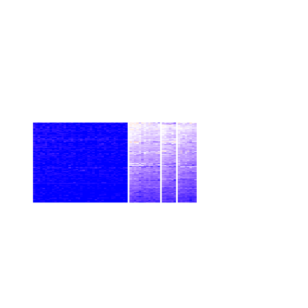
Compare the overlap of signatures from different k:
compare_signatures(res)
get_signature() returns a data frame invisibly. TO get the list of signatures, the function
call should be assigned to a variable explicitly. In following code, if plot argument is set
to FALSE, no heatmap is plotted while only the differential analysis is performed.
# code only for demonstration
tb = get_signature(res, k = ..., plot = FALSE)
An example of the output of tb is:
#> which_row fdr mean_1 mean_2 scaled_mean_1 scaled_mean_2 km
#> 1 38 0.042760348 8.373488 9.131774 -0.5533452 0.5164555 1
#> 2 40 0.018707592 7.106213 8.469186 -0.6173731 0.5762149 1
#> 3 55 0.019134737 10.221463 11.207825 -0.6159697 0.5749050 1
#> 4 59 0.006059896 5.921854 7.869574 -0.6899429 0.6439467 1
#> 5 60 0.018055526 8.928898 10.211722 -0.6204761 0.5791110 1
#> 6 98 0.009384629 15.714769 14.887706 0.6635654 -0.6193277 2
...
The columns in tb are:
which_row: row indices corresponding to the input matrix.fdr: FDR for the differential test. mean_x: The mean value in group x.scaled_mean_x: The mean value in group x after rows are scaled.km: Row groups if k-means clustering is applied to rows.UMAP plot which shows how samples are separated.
dimension_reduction(res, k = 2, method = "UMAP")
dimension_reduction(res, k = 3, method = "UMAP")
dimension_reduction(res, k = 4, method = "UMAP")
dimension_reduction(res, k = 5, method = "UMAP")
dimension_reduction(res, k = 6, method = "UMAP")
Following heatmap shows how subgroups are split when increasing k:
collect_classes(res)
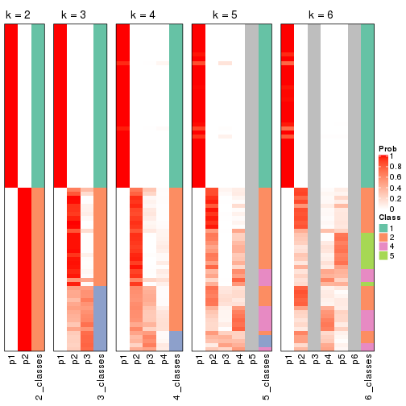
If matrix rows can be associated to genes, consider to use functional_enrichment(res,
...) to perform function enrichment for the signature genes. See this vignette for more detailed explanations.
The object with results only for a single top-value method and a single partition method can be extracted as:
res = res_list["CV", "hclust"]
# you can also extract it by
# res = res_list["CV:hclust"]
A summary of res and all the functions that can be applied to it:
res
#> A 'ConsensusPartition' object with k = 2, 3, 4, 5, 6.
#> On a matrix with 14104 rows and 80 columns.
#> Top rows (1000, 2000, 3000, 4000, 5000) are extracted by 'CV' method.
#> Subgroups are detected by 'hclust' method.
#> Performed in total 1250 partitions by row resampling.
#> Best k for subgroups seems to be 5.
#>
#> Following methods can be applied to this 'ConsensusPartition' object:
#> [1] "cola_report" "collect_classes" "collect_plots"
#> [4] "collect_stats" "colnames" "compare_signatures"
#> [7] "consensus_heatmap" "dimension_reduction" "functional_enrichment"
#> [10] "get_anno_col" "get_anno" "get_classes"
#> [13] "get_consensus" "get_matrix" "get_membership"
#> [16] "get_param" "get_signatures" "get_stats"
#> [19] "is_best_k" "is_stable_k" "membership_heatmap"
#> [22] "ncol" "nrow" "plot_ecdf"
#> [25] "rownames" "select_partition_number" "show"
#> [28] "suggest_best_k" "test_to_known_factors"
collect_plots() function collects all the plots made from res for all k (number of partitions)
into one single page to provide an easy and fast comparison between different k.
collect_plots(res)
The plots are:
k and the heatmap of
predicted classes for each k.k.k.k.All the plots in panels can be made by individual functions and they are plotted later in this section.
select_partition_number() produces several plots showing different
statistics for choosing “optimized” k. There are following statistics:
k;k, the area increased is defined as \(A_k - A_{k-1}\).The detailed explanations of these statistics can be found in the cola vignette.
Generally speaking, lower PAC score, higher mean silhouette score or higher
concordance corresponds to better partition. Rand index and Jaccard index
measure how similar the current partition is compared to partition with k-1.
If they are too similar, we won't accept k is better than k-1.
select_partition_number(res)
The numeric values for all these statistics can be obtained by get_stats().
get_stats(res)
#> k 1-PAC mean_silhouette concordance area_increased Rand Jaccard
#> 2 2 1.000 1.000 1.000 0.5068 0.494 0.494
#> 3 3 0.975 0.927 0.969 0.2407 0.878 0.754
#> 4 4 0.972 0.896 0.935 0.0310 0.986 0.963
#> 5 5 0.929 0.890 0.935 0.0294 0.980 0.944
#> 6 6 0.930 0.849 0.912 0.0179 0.989 0.967
suggest_best_k() suggests the best \(k\) based on these statistics. The rules are as follows:
suggest_best_k(res)
#> [1] 5
#> attr(,"optional")
#> [1] 2 3
There is also optional best \(k\) = 2 3 that is worth to check.
Following shows the table of the partitions (You need to click the show/hide
code output link to see it). The membership matrix (columns with name p*)
is inferred by
clue::cl_consensus()
function with the SE method. Basically the value in the membership matrix
represents the probability to belong to a certain group. The finall class
label for an item is determined with the group with highest probability it
belongs to.
In get_classes() function, the entropy is calculated from the membership
matrix and the silhouette score is calculated from the consensus matrix.
cbind(get_classes(res, k = 2), get_membership(res, k = 2))
#> class entropy silhouette p1 p2
#> SRR830972 2 0 1 0 1
#> SRR830973 2 0 1 0 1
#> SRR830974 2 0 1 0 1
#> SRR830975 2 0 1 0 1
#> SRR830976 2 0 1 0 1
#> SRR830977 2 0 1 0 1
#> SRR830978 2 0 1 0 1
#> SRR830979 2 0 1 0 1
#> SRR830980 2 0 1 0 1
#> SRR830982 2 0 1 0 1
#> SRR830981 2 0 1 0 1
#> SRR830983 2 0 1 0 1
#> SRR831010 1 0 1 1 0
#> SRR831011 1 0 1 1 0
#> SRR831012 1 0 1 1 0
#> SRR831013 1 0 1 1 0
#> SRR831014 1 0 1 1 0
#> SRR831015 1 0 1 1 0
#> SRR831016 1 0 1 1 0
#> SRR831017 1 0 1 1 0
#> SRR831018 1 0 1 1 0
#> SRR831019 1 0 1 1 0
#> SRR831020 1 0 1 1 0
#> SRR831021 1 0 1 1 0
#> SRR831022 1 0 1 1 0
#> SRR831023 1 0 1 1 0
#> SRR831024 1 0 1 1 0
#> SRR831025 1 0 1 1 0
#> SRR831026 1 0 1 1 0
#> SRR831027 1 0 1 1 0
#> SRR831028 1 0 1 1 0
#> SRR831029 1 0 1 1 0
#> SRR831030 1 0 1 1 0
#> SRR831031 1 0 1 1 0
#> SRR831032 1 0 1 1 0
#> SRR831033 1 0 1 1 0
#> SRR831034 1 0 1 1 0
#> SRR831035 1 0 1 1 0
#> SRR831036 1 0 1 1 0
#> SRR831037 1 0 1 1 0
#> SRR831038 1 0 1 1 0
#> SRR831039 1 0 1 1 0
#> SRR831040 1 0 1 1 0
#> SRR831041 1 0 1 1 0
#> SRR831042 1 0 1 1 0
#> SRR831043 1 0 1 1 0
#> SRR831044 1 0 1 1 0
#> SRR830965 2 0 1 0 1
#> SRR830966 2 0 1 0 1
#> SRR830967 2 0 1 0 1
#> SRR830968 2 0 1 0 1
#> SRR830969 2 0 1 0 1
#> SRR830970 2 0 1 0 1
#> SRR830971 2 0 1 0 1
#> SRR830984 2 0 1 0 1
#> SRR830985 2 0 1 0 1
#> SRR830986 2 0 1 0 1
#> SRR830987 2 0 1 0 1
#> SRR830988 2 0 1 0 1
#> SRR830989 2 0 1 0 1
#> SRR830990 2 0 1 0 1
#> SRR830991 2 0 1 0 1
#> SRR830992 2 0 1 0 1
#> SRR830993 2 0 1 0 1
#> SRR830994 2 0 1 0 1
#> SRR830995 2 0 1 0 1
#> SRR830996 2 0 1 0 1
#> SRR830997 2 0 1 0 1
#> SRR830998 2 0 1 0 1
#> SRR830999 2 0 1 0 1
#> SRR831000 2 0 1 0 1
#> SRR831001 2 0 1 0 1
#> SRR831002 2 0 1 0 1
#> SRR831003 2 0 1 0 1
#> SRR831004 2 0 1 0 1
#> SRR831005 1 0 1 1 0
#> SRR831006 1 0 1 1 0
#> SRR831007 1 0 1 1 0
#> SRR831008 1 0 1 1 0
#> SRR831009 1 0 1 1 0
cbind(get_classes(res, k = 3), get_membership(res, k = 3))
#> class entropy silhouette p1 p2 p3
#> SRR830972 2 0.0000 0.919 0 1.000 0.000
#> SRR830973 3 0.1163 0.954 0 0.028 0.972
#> SRR830974 2 0.0747 0.909 0 0.984 0.016
#> SRR830975 2 0.0000 0.919 0 1.000 0.000
#> SRR830976 2 0.0000 0.919 0 1.000 0.000
#> SRR830977 3 0.1163 0.954 0 0.028 0.972
#> SRR830978 3 0.1163 0.954 0 0.028 0.972
#> SRR830979 3 0.0747 0.953 0 0.016 0.984
#> SRR830980 2 0.5465 0.580 0 0.712 0.288
#> SRR830982 2 0.0237 0.917 0 0.996 0.004
#> SRR830981 3 0.1163 0.954 0 0.028 0.972
#> SRR830983 2 0.0237 0.917 0 0.996 0.004
#> SRR831010 1 0.0000 1.000 1 0.000 0.000
#> SRR831011 1 0.0000 1.000 1 0.000 0.000
#> SRR831012 1 0.0000 1.000 1 0.000 0.000
#> SRR831013 1 0.0000 1.000 1 0.000 0.000
#> SRR831014 1 0.0000 1.000 1 0.000 0.000
#> SRR831015 1 0.0000 1.000 1 0.000 0.000
#> SRR831016 1 0.0000 1.000 1 0.000 0.000
#> SRR831017 1 0.0000 1.000 1 0.000 0.000
#> SRR831018 1 0.0000 1.000 1 0.000 0.000
#> SRR831019 1 0.0000 1.000 1 0.000 0.000
#> SRR831020 1 0.0000 1.000 1 0.000 0.000
#> SRR831021 1 0.0000 1.000 1 0.000 0.000
#> SRR831022 1 0.0000 1.000 1 0.000 0.000
#> SRR831023 1 0.0000 1.000 1 0.000 0.000
#> SRR831024 1 0.0000 1.000 1 0.000 0.000
#> SRR831025 1 0.0000 1.000 1 0.000 0.000
#> SRR831026 1 0.0000 1.000 1 0.000 0.000
#> SRR831027 1 0.0000 1.000 1 0.000 0.000
#> SRR831028 1 0.0000 1.000 1 0.000 0.000
#> SRR831029 1 0.0000 1.000 1 0.000 0.000
#> SRR831030 1 0.0000 1.000 1 0.000 0.000
#> SRR831031 1 0.0000 1.000 1 0.000 0.000
#> SRR831032 1 0.0000 1.000 1 0.000 0.000
#> SRR831033 1 0.0000 1.000 1 0.000 0.000
#> SRR831034 1 0.0000 1.000 1 0.000 0.000
#> SRR831035 1 0.0000 1.000 1 0.000 0.000
#> SRR831036 1 0.0000 1.000 1 0.000 0.000
#> SRR831037 1 0.0000 1.000 1 0.000 0.000
#> SRR831038 1 0.0000 1.000 1 0.000 0.000
#> SRR831039 1 0.0000 1.000 1 0.000 0.000
#> SRR831040 1 0.0000 1.000 1 0.000 0.000
#> SRR831041 1 0.0000 1.000 1 0.000 0.000
#> SRR831042 1 0.0000 1.000 1 0.000 0.000
#> SRR831043 1 0.0000 1.000 1 0.000 0.000
#> SRR831044 1 0.0000 1.000 1 0.000 0.000
#> SRR830965 2 0.0000 0.919 0 1.000 0.000
#> SRR830966 2 0.0000 0.919 0 1.000 0.000
#> SRR830967 2 0.0000 0.919 0 1.000 0.000
#> SRR830968 2 0.0000 0.919 0 1.000 0.000
#> SRR830969 2 0.0424 0.914 0 0.992 0.008
#> SRR830970 2 0.0000 0.919 0 1.000 0.000
#> SRR830971 2 0.0000 0.919 0 1.000 0.000
#> SRR830984 3 0.0747 0.953 0 0.016 0.984
#> SRR830985 3 0.1163 0.954 0 0.028 0.972
#> SRR830986 2 0.0000 0.919 0 1.000 0.000
#> SRR830987 2 0.0000 0.919 0 1.000 0.000
#> SRR830988 2 0.0000 0.919 0 1.000 0.000
#> SRR830989 2 0.6225 0.291 0 0.568 0.432
#> SRR830990 3 0.0747 0.953 0 0.016 0.984
#> SRR830991 2 0.1964 0.876 0 0.944 0.056
#> SRR830992 2 0.6309 -0.052 0 0.500 0.500
#> SRR830993 2 0.6244 0.268 0 0.560 0.440
#> SRR830994 3 0.1753 0.934 0 0.048 0.952
#> SRR830995 2 0.0000 0.919 0 1.000 0.000
#> SRR830996 3 0.4974 0.710 0 0.236 0.764
#> SRR830997 3 0.0000 0.946 0 0.000 1.000
#> SRR830998 3 0.0000 0.946 0 0.000 1.000
#> SRR830999 2 0.0000 0.919 0 1.000 0.000
#> SRR831000 3 0.4750 0.747 0 0.216 0.784
#> SRR831001 3 0.0237 0.949 0 0.004 0.996
#> SRR831002 3 0.0424 0.950 0 0.008 0.992
#> SRR831003 3 0.1753 0.934 0 0.048 0.952
#> SRR831004 2 0.0000 0.919 0 1.000 0.000
#> SRR831005 1 0.0000 1.000 1 0.000 0.000
#> SRR831006 1 0.0000 1.000 1 0.000 0.000
#> SRR831007 1 0.0000 1.000 1 0.000 0.000
#> SRR831008 1 0.0000 1.000 1 0.000 0.000
#> SRR831009 1 0.0000 1.000 1 0.000 0.000
cbind(get_classes(res, k = 4), get_membership(res, k = 4))
#> class entropy silhouette p1 p2 p3 p4
#> SRR830972 2 0.0000 0.939 0 1.000 0.000 0.000
#> SRR830973 3 0.0000 0.724 0 0.000 1.000 0.000
#> SRR830974 2 0.1118 0.926 0 0.964 0.036 0.000
#> SRR830975 2 0.0707 0.936 0 0.980 0.020 0.000
#> SRR830976 2 0.0707 0.936 0 0.980 0.020 0.000
#> SRR830977 3 0.0000 0.724 0 0.000 1.000 0.000
#> SRR830978 3 0.0000 0.724 0 0.000 1.000 0.000
#> SRR830979 3 0.1389 0.693 0 0.000 0.952 0.048
#> SRR830980 2 0.5663 0.511 0 0.676 0.264 0.060
#> SRR830982 2 0.0817 0.935 0 0.976 0.024 0.000
#> SRR830981 3 0.0000 0.724 0 0.000 1.000 0.000
#> SRR830983 2 0.0817 0.934 0 0.976 0.024 0.000
#> SRR831010 1 0.0000 1.000 1 0.000 0.000 0.000
#> SRR831011 1 0.0000 1.000 1 0.000 0.000 0.000
#> SRR831012 1 0.0000 1.000 1 0.000 0.000 0.000
#> SRR831013 1 0.0000 1.000 1 0.000 0.000 0.000
#> SRR831014 1 0.0000 1.000 1 0.000 0.000 0.000
#> SRR831015 1 0.0000 1.000 1 0.000 0.000 0.000
#> SRR831016 1 0.0000 1.000 1 0.000 0.000 0.000
#> SRR831017 1 0.0000 1.000 1 0.000 0.000 0.000
#> SRR831018 1 0.0000 1.000 1 0.000 0.000 0.000
#> SRR831019 1 0.0000 1.000 1 0.000 0.000 0.000
#> SRR831020 1 0.0000 1.000 1 0.000 0.000 0.000
#> SRR831021 1 0.0000 1.000 1 0.000 0.000 0.000
#> SRR831022 1 0.0000 1.000 1 0.000 0.000 0.000
#> SRR831023 1 0.0000 1.000 1 0.000 0.000 0.000
#> SRR831024 1 0.0000 1.000 1 0.000 0.000 0.000
#> SRR831025 1 0.0000 1.000 1 0.000 0.000 0.000
#> SRR831026 1 0.0000 1.000 1 0.000 0.000 0.000
#> SRR831027 1 0.0000 1.000 1 0.000 0.000 0.000
#> SRR831028 1 0.0000 1.000 1 0.000 0.000 0.000
#> SRR831029 1 0.0000 1.000 1 0.000 0.000 0.000
#> SRR831030 1 0.0000 1.000 1 0.000 0.000 0.000
#> SRR831031 1 0.0000 1.000 1 0.000 0.000 0.000
#> SRR831032 1 0.0000 1.000 1 0.000 0.000 0.000
#> SRR831033 1 0.0000 1.000 1 0.000 0.000 0.000
#> SRR831034 1 0.0000 1.000 1 0.000 0.000 0.000
#> SRR831035 1 0.0000 1.000 1 0.000 0.000 0.000
#> SRR831036 1 0.0000 1.000 1 0.000 0.000 0.000
#> SRR831037 1 0.0000 1.000 1 0.000 0.000 0.000
#> SRR831038 1 0.0000 1.000 1 0.000 0.000 0.000
#> SRR831039 1 0.0000 1.000 1 0.000 0.000 0.000
#> SRR831040 1 0.0000 1.000 1 0.000 0.000 0.000
#> SRR831041 1 0.0000 1.000 1 0.000 0.000 0.000
#> SRR831042 1 0.0000 1.000 1 0.000 0.000 0.000
#> SRR831043 1 0.0000 1.000 1 0.000 0.000 0.000
#> SRR831044 1 0.0000 1.000 1 0.000 0.000 0.000
#> SRR830965 2 0.0000 0.939 0 1.000 0.000 0.000
#> SRR830966 2 0.0000 0.939 0 1.000 0.000 0.000
#> SRR830967 2 0.0000 0.939 0 1.000 0.000 0.000
#> SRR830968 2 0.0000 0.939 0 1.000 0.000 0.000
#> SRR830969 2 0.0376 0.936 0 0.992 0.004 0.004
#> SRR830970 2 0.0000 0.939 0 1.000 0.000 0.000
#> SRR830971 2 0.0000 0.939 0 1.000 0.000 0.000
#> SRR830984 3 0.1792 0.673 0 0.000 0.932 0.068
#> SRR830985 3 0.0000 0.724 0 0.000 1.000 0.000
#> SRR830986 2 0.0707 0.936 0 0.980 0.020 0.000
#> SRR830987 2 0.0707 0.936 0 0.980 0.020 0.000
#> SRR830988 2 0.0707 0.936 0 0.980 0.020 0.000
#> SRR830989 4 0.4776 0.880 0 0.016 0.272 0.712
#> SRR830990 3 0.3219 0.702 0 0.000 0.836 0.164
#> SRR830991 2 0.2111 0.886 0 0.932 0.044 0.024
#> SRR830992 2 0.6696 -0.106 0 0.484 0.428 0.088
#> SRR830993 4 0.4990 0.881 0 0.008 0.352 0.640
#> SRR830994 3 0.5420 0.663 0 0.024 0.624 0.352
#> SRR830995 2 0.0000 0.939 0 1.000 0.000 0.000
#> SRR830996 3 0.6373 0.508 0 0.200 0.652 0.148
#> SRR830997 3 0.4585 0.684 0 0.000 0.668 0.332
#> SRR830998 3 0.4103 0.704 0 0.000 0.744 0.256
#> SRR830999 2 0.0000 0.939 0 1.000 0.000 0.000
#> SRR831000 3 0.6790 0.525 0 0.200 0.608 0.192
#> SRR831001 3 0.4585 0.687 0 0.000 0.668 0.332
#> SRR831002 3 0.4800 0.682 0 0.004 0.656 0.340
#> SRR831003 3 0.5452 0.657 0 0.024 0.616 0.360
#> SRR831004 2 0.0000 0.939 0 1.000 0.000 0.000
#> SRR831005 1 0.0000 1.000 1 0.000 0.000 0.000
#> SRR831006 1 0.0000 1.000 1 0.000 0.000 0.000
#> SRR831007 1 0.0000 1.000 1 0.000 0.000 0.000
#> SRR831008 1 0.0000 1.000 1 0.000 0.000 0.000
#> SRR831009 1 0.0000 1.000 1 0.000 0.000 0.000
cbind(get_classes(res, k = 5), get_membership(res, k = 5))
#> class entropy silhouette p1 p2 p3 p4 p5
#> SRR830972 2 0.2011 0.896 0 0.908 0.000 0.004 0.088
#> SRR830973 3 0.1608 0.824 0 0.000 0.928 0.072 0.000
#> SRR830974 2 0.1202 0.896 0 0.960 0.032 0.004 0.004
#> SRR830975 2 0.0898 0.901 0 0.972 0.020 0.000 0.008
#> SRR830976 2 0.0898 0.901 0 0.972 0.020 0.000 0.008
#> SRR830977 3 0.1608 0.824 0 0.000 0.928 0.072 0.000
#> SRR830978 3 0.1608 0.824 0 0.000 0.928 0.072 0.000
#> SRR830979 3 0.1942 0.745 0 0.000 0.920 0.012 0.068
#> SRR830980 2 0.5734 0.472 0 0.648 0.084 0.244 0.024
#> SRR830982 2 0.0932 0.900 0 0.972 0.020 0.004 0.004
#> SRR830981 3 0.1608 0.824 0 0.000 0.928 0.072 0.000
#> SRR830983 2 0.0992 0.899 0 0.968 0.024 0.000 0.008
#> SRR831010 1 0.0000 1.000 1 0.000 0.000 0.000 0.000
#> SRR831011 1 0.0000 1.000 1 0.000 0.000 0.000 0.000
#> SRR831012 1 0.0000 1.000 1 0.000 0.000 0.000 0.000
#> SRR831013 1 0.0000 1.000 1 0.000 0.000 0.000 0.000
#> SRR831014 1 0.0000 1.000 1 0.000 0.000 0.000 0.000
#> SRR831015 1 0.0000 1.000 1 0.000 0.000 0.000 0.000
#> SRR831016 1 0.0000 1.000 1 0.000 0.000 0.000 0.000
#> SRR831017 1 0.0000 1.000 1 0.000 0.000 0.000 0.000
#> SRR831018 1 0.0000 1.000 1 0.000 0.000 0.000 0.000
#> SRR831019 1 0.0000 1.000 1 0.000 0.000 0.000 0.000
#> SRR831020 1 0.0000 1.000 1 0.000 0.000 0.000 0.000
#> SRR831021 1 0.0000 1.000 1 0.000 0.000 0.000 0.000
#> SRR831022 1 0.0000 1.000 1 0.000 0.000 0.000 0.000
#> SRR831023 1 0.0000 1.000 1 0.000 0.000 0.000 0.000
#> SRR831024 1 0.0000 1.000 1 0.000 0.000 0.000 0.000
#> SRR831025 1 0.0000 1.000 1 0.000 0.000 0.000 0.000
#> SRR831026 1 0.0000 1.000 1 0.000 0.000 0.000 0.000
#> SRR831027 1 0.0000 1.000 1 0.000 0.000 0.000 0.000
#> SRR831028 1 0.0000 1.000 1 0.000 0.000 0.000 0.000
#> SRR831029 1 0.0000 1.000 1 0.000 0.000 0.000 0.000
#> SRR831030 1 0.0000 1.000 1 0.000 0.000 0.000 0.000
#> SRR831031 1 0.0000 1.000 1 0.000 0.000 0.000 0.000
#> SRR831032 1 0.0000 1.000 1 0.000 0.000 0.000 0.000
#> SRR831033 1 0.0000 1.000 1 0.000 0.000 0.000 0.000
#> SRR831034 1 0.0000 1.000 1 0.000 0.000 0.000 0.000
#> SRR831035 1 0.0000 1.000 1 0.000 0.000 0.000 0.000
#> SRR831036 1 0.0000 1.000 1 0.000 0.000 0.000 0.000
#> SRR831037 1 0.0000 1.000 1 0.000 0.000 0.000 0.000
#> SRR831038 1 0.0000 1.000 1 0.000 0.000 0.000 0.000
#> SRR831039 1 0.0000 1.000 1 0.000 0.000 0.000 0.000
#> SRR831040 1 0.0000 1.000 1 0.000 0.000 0.000 0.000
#> SRR831041 1 0.0000 1.000 1 0.000 0.000 0.000 0.000
#> SRR831042 1 0.0000 1.000 1 0.000 0.000 0.000 0.000
#> SRR831043 1 0.0000 1.000 1 0.000 0.000 0.000 0.000
#> SRR831044 1 0.0000 1.000 1 0.000 0.000 0.000 0.000
#> SRR830965 2 0.2011 0.896 0 0.908 0.000 0.004 0.088
#> SRR830966 2 0.2011 0.896 0 0.908 0.000 0.004 0.088
#> SRR830967 2 0.2011 0.896 0 0.908 0.000 0.004 0.088
#> SRR830968 2 0.2011 0.896 0 0.908 0.000 0.004 0.088
#> SRR830969 2 0.2248 0.892 0 0.900 0.000 0.012 0.088
#> SRR830970 2 0.1952 0.896 0 0.912 0.000 0.004 0.084
#> SRR830971 2 0.2011 0.896 0 0.908 0.000 0.004 0.088
#> SRR830984 3 0.1851 0.719 0 0.000 0.912 0.000 0.088
#> SRR830985 3 0.1608 0.824 0 0.000 0.928 0.072 0.000
#> SRR830986 2 0.0898 0.901 0 0.972 0.020 0.000 0.008
#> SRR830987 2 0.0898 0.901 0 0.972 0.020 0.000 0.008
#> SRR830988 2 0.0898 0.901 0 0.972 0.020 0.000 0.008
#> SRR830989 5 0.4225 0.837 0 0.004 0.136 0.076 0.784
#> SRR830990 3 0.5295 0.446 0 0.000 0.664 0.224 0.112
#> SRR830991 2 0.2673 0.856 0 0.900 0.020 0.044 0.036
#> SRR830992 2 0.6165 -0.180 0 0.468 0.084 0.432 0.016
#> SRR830993 5 0.3424 0.825 0 0.000 0.240 0.000 0.760
#> SRR830994 4 0.1168 0.779 0 0.000 0.032 0.960 0.008
#> SRR830995 2 0.0794 0.904 0 0.972 0.000 0.000 0.028
#> SRR830996 4 0.5675 0.592 0 0.172 0.124 0.680 0.024
#> SRR830997 3 0.5903 0.348 0 0.000 0.548 0.332 0.120
#> SRR830998 4 0.4986 0.596 0 0.000 0.228 0.688 0.084
#> SRR830999 2 0.1121 0.903 0 0.956 0.000 0.000 0.044
#> SRR831000 4 0.4933 0.643 0 0.184 0.064 0.732 0.020
#> SRR831001 4 0.2361 0.771 0 0.000 0.096 0.892 0.012
#> SRR831002 4 0.1981 0.779 0 0.000 0.064 0.920 0.016
#> SRR831003 4 0.0807 0.770 0 0.000 0.012 0.976 0.012
#> SRR831004 2 0.0404 0.903 0 0.988 0.000 0.000 0.012
#> SRR831005 1 0.0000 1.000 1 0.000 0.000 0.000 0.000
#> SRR831006 1 0.0000 1.000 1 0.000 0.000 0.000 0.000
#> SRR831007 1 0.0000 1.000 1 0.000 0.000 0.000 0.000
#> SRR831008 1 0.0000 1.000 1 0.000 0.000 0.000 0.000
#> SRR831009 1 0.0000 1.000 1 0.000 0.000 0.000 0.000
cbind(get_classes(res, k = 6), get_membership(res, k = 6))
#> class entropy silhouette p1 p2 p3 p4 p5 p6
#> SRR830972 2 0.0146 0.749 0 0.996 0.000 0.000 0.000 0.004
#> SRR830973 3 0.1444 0.873 0 0.000 0.928 0.072 0.000 0.000
#> SRR830974 2 0.4535 0.794 0 0.628 0.032 0.004 0.332 0.004
#> SRR830975 2 0.4105 0.800 0 0.632 0.020 0.000 0.348 0.000
#> SRR830976 2 0.4105 0.800 0 0.632 0.020 0.000 0.348 0.000
#> SRR830977 3 0.1444 0.873 0 0.000 0.928 0.072 0.000 0.000
#> SRR830978 3 0.1588 0.871 0 0.000 0.924 0.072 0.000 0.004
#> SRR830979 3 0.1900 0.792 0 0.000 0.916 0.008 0.008 0.068
#> SRR830980 2 0.7557 0.362 0 0.412 0.068 0.252 0.232 0.036
#> SRR830982 2 0.4349 0.798 0 0.632 0.020 0.004 0.340 0.004
#> SRR830981 3 0.1444 0.873 0 0.000 0.928 0.072 0.000 0.000
#> SRR830983 2 0.4167 0.799 0 0.632 0.024 0.000 0.344 0.000
#> SRR831010 1 0.0000 1.000 1 0.000 0.000 0.000 0.000 0.000
#> SRR831011 1 0.0000 1.000 1 0.000 0.000 0.000 0.000 0.000
#> SRR831012 1 0.0000 1.000 1 0.000 0.000 0.000 0.000 0.000
#> SRR831013 1 0.0000 1.000 1 0.000 0.000 0.000 0.000 0.000
#> SRR831014 1 0.0000 1.000 1 0.000 0.000 0.000 0.000 0.000
#> SRR831015 1 0.0000 1.000 1 0.000 0.000 0.000 0.000 0.000
#> SRR831016 1 0.0000 1.000 1 0.000 0.000 0.000 0.000 0.000
#> SRR831017 1 0.0000 1.000 1 0.000 0.000 0.000 0.000 0.000
#> SRR831018 1 0.0000 1.000 1 0.000 0.000 0.000 0.000 0.000
#> SRR831019 1 0.0000 1.000 1 0.000 0.000 0.000 0.000 0.000
#> SRR831020 1 0.0000 1.000 1 0.000 0.000 0.000 0.000 0.000
#> SRR831021 1 0.0000 1.000 1 0.000 0.000 0.000 0.000 0.000
#> SRR831022 1 0.0000 1.000 1 0.000 0.000 0.000 0.000 0.000
#> SRR831023 1 0.0000 1.000 1 0.000 0.000 0.000 0.000 0.000
#> SRR831024 1 0.0000 1.000 1 0.000 0.000 0.000 0.000 0.000
#> SRR831025 1 0.0000 1.000 1 0.000 0.000 0.000 0.000 0.000
#> SRR831026 1 0.0000 1.000 1 0.000 0.000 0.000 0.000 0.000
#> SRR831027 1 0.0000 1.000 1 0.000 0.000 0.000 0.000 0.000
#> SRR831028 1 0.0000 1.000 1 0.000 0.000 0.000 0.000 0.000
#> SRR831029 1 0.0000 1.000 1 0.000 0.000 0.000 0.000 0.000
#> SRR831030 1 0.0000 1.000 1 0.000 0.000 0.000 0.000 0.000
#> SRR831031 1 0.0000 1.000 1 0.000 0.000 0.000 0.000 0.000
#> SRR831032 1 0.0000 1.000 1 0.000 0.000 0.000 0.000 0.000
#> SRR831033 1 0.0000 1.000 1 0.000 0.000 0.000 0.000 0.000
#> SRR831034 1 0.0000 1.000 1 0.000 0.000 0.000 0.000 0.000
#> SRR831035 1 0.0000 1.000 1 0.000 0.000 0.000 0.000 0.000
#> SRR831036 1 0.0000 1.000 1 0.000 0.000 0.000 0.000 0.000
#> SRR831037 1 0.0000 1.000 1 0.000 0.000 0.000 0.000 0.000
#> SRR831038 1 0.0000 1.000 1 0.000 0.000 0.000 0.000 0.000
#> SRR831039 1 0.0000 1.000 1 0.000 0.000 0.000 0.000 0.000
#> SRR831040 1 0.0000 1.000 1 0.000 0.000 0.000 0.000 0.000
#> SRR831041 1 0.0000 1.000 1 0.000 0.000 0.000 0.000 0.000
#> SRR831042 1 0.0000 1.000 1 0.000 0.000 0.000 0.000 0.000
#> SRR831043 1 0.0000 1.000 1 0.000 0.000 0.000 0.000 0.000
#> SRR831044 1 0.0000 1.000 1 0.000 0.000 0.000 0.000 0.000
#> SRR830965 2 0.0000 0.751 0 1.000 0.000 0.000 0.000 0.000
#> SRR830966 2 0.0146 0.749 0 0.996 0.000 0.000 0.000 0.004
#> SRR830967 2 0.0146 0.749 0 0.996 0.000 0.000 0.000 0.004
#> SRR830968 2 0.0146 0.749 0 0.996 0.000 0.000 0.000 0.004
#> SRR830969 2 0.0665 0.744 0 0.980 0.000 0.008 0.008 0.004
#> SRR830970 2 0.0146 0.752 0 0.996 0.000 0.000 0.004 0.000
#> SRR830971 2 0.0146 0.749 0 0.996 0.000 0.000 0.000 0.004
#> SRR830984 3 0.2020 0.759 0 0.000 0.896 0.000 0.008 0.096
#> SRR830985 3 0.1444 0.873 0 0.000 0.928 0.072 0.000 0.000
#> SRR830986 2 0.4105 0.800 0 0.632 0.020 0.000 0.348 0.000
#> SRR830987 2 0.4105 0.800 0 0.632 0.020 0.000 0.348 0.000
#> SRR830988 2 0.4105 0.800 0 0.632 0.020 0.000 0.348 0.000
#> SRR830989 5 0.5332 0.752 0 0.000 0.048 0.072 0.648 0.232
#> SRR830990 3 0.5415 0.368 0 0.000 0.604 0.236 0.008 0.152
#> SRR830991 2 0.5106 0.771 0 0.672 0.020 0.044 0.240 0.024
#> SRR830992 4 0.7137 0.217 0 0.272 0.068 0.452 0.192 0.016
#> SRR830993 5 0.4980 0.762 0 0.000 0.168 0.000 0.648 0.184
#> SRR830994 4 0.1257 0.620 0 0.000 0.020 0.952 0.000 0.028
#> SRR830995 2 0.3244 0.806 0 0.732 0.000 0.000 0.268 0.000
#> SRR830996 4 0.5524 0.520 0 0.040 0.092 0.700 0.128 0.040
#> SRR830997 6 0.3841 0.000 0 0.000 0.032 0.244 0.000 0.724
#> SRR830998 4 0.4612 0.449 0 0.000 0.120 0.704 0.004 0.172
#> SRR830999 2 0.3126 0.805 0 0.752 0.000 0.000 0.248 0.000
#> SRR831000 4 0.4748 0.560 0 0.096 0.036 0.760 0.084 0.024
#> SRR831001 4 0.1838 0.606 0 0.000 0.016 0.916 0.000 0.068
#> SRR831002 4 0.1285 0.610 0 0.000 0.004 0.944 0.000 0.052
#> SRR831003 4 0.0935 0.610 0 0.000 0.004 0.964 0.000 0.032
#> SRR831004 2 0.3409 0.807 0 0.700 0.000 0.000 0.300 0.000
#> SRR831005 1 0.0000 1.000 1 0.000 0.000 0.000 0.000 0.000
#> SRR831006 1 0.0000 1.000 1 0.000 0.000 0.000 0.000 0.000
#> SRR831007 1 0.0000 1.000 1 0.000 0.000 0.000 0.000 0.000
#> SRR831008 1 0.0000 1.000 1 0.000 0.000 0.000 0.000 0.000
#> SRR831009 1 0.0000 1.000 1 0.000 0.000 0.000 0.000 0.000
Heatmaps for the consensus matrix. It visualizes the probability of two samples to be in a same group.
consensus_heatmap(res, k = 2)
consensus_heatmap(res, k = 3)
consensus_heatmap(res, k = 4)
consensus_heatmap(res, k = 5)
consensus_heatmap(res, k = 6)
Heatmaps for the membership of samples in all partitions to see how consistent they are:
membership_heatmap(res, k = 2)

membership_heatmap(res, k = 3)

membership_heatmap(res, k = 4)
membership_heatmap(res, k = 5)
membership_heatmap(res, k = 6)
As soon as we have had the classes for columns, we can look for signatures which are significantly different between classes which can be candidate marks for certain classes. Following are the heatmaps for signatures.
Signature heatmaps where rows are scaled:
get_signatures(res, k = 2)

get_signatures(res, k = 3)
get_signatures(res, k = 4)
get_signatures(res, k = 5)
get_signatures(res, k = 6)
Signature heatmaps where rows are not scaled:
get_signatures(res, k = 2, scale_rows = FALSE)

get_signatures(res, k = 3, scale_rows = FALSE)
get_signatures(res, k = 4, scale_rows = FALSE)
get_signatures(res, k = 5, scale_rows = FALSE)
get_signatures(res, k = 6, scale_rows = FALSE)
Compare the overlap of signatures from different k:
compare_signatures(res)
get_signature() returns a data frame invisibly. TO get the list of signatures, the function
call should be assigned to a variable explicitly. In following code, if plot argument is set
to FALSE, no heatmap is plotted while only the differential analysis is performed.
# code only for demonstration
tb = get_signature(res, k = ..., plot = FALSE)
An example of the output of tb is:
#> which_row fdr mean_1 mean_2 scaled_mean_1 scaled_mean_2 km
#> 1 38 0.042760348 8.373488 9.131774 -0.5533452 0.5164555 1
#> 2 40 0.018707592 7.106213 8.469186 -0.6173731 0.5762149 1
#> 3 55 0.019134737 10.221463 11.207825 -0.6159697 0.5749050 1
#> 4 59 0.006059896 5.921854 7.869574 -0.6899429 0.6439467 1
#> 5 60 0.018055526 8.928898 10.211722 -0.6204761 0.5791110 1
#> 6 98 0.009384629 15.714769 14.887706 0.6635654 -0.6193277 2
...
The columns in tb are:
which_row: row indices corresponding to the input matrix.fdr: FDR for the differential test. mean_x: The mean value in group x.scaled_mean_x: The mean value in group x after rows are scaled.km: Row groups if k-means clustering is applied to rows.UMAP plot which shows how samples are separated.
dimension_reduction(res, k = 2, method = "UMAP")
dimension_reduction(res, k = 3, method = "UMAP")
dimension_reduction(res, k = 4, method = "UMAP")
dimension_reduction(res, k = 5, method = "UMAP")
dimension_reduction(res, k = 6, method = "UMAP")
Following heatmap shows how subgroups are split when increasing k:
collect_classes(res)
If matrix rows can be associated to genes, consider to use functional_enrichment(res,
...) to perform function enrichment for the signature genes. See this vignette for more detailed explanations.
The object with results only for a single top-value method and a single partition method can be extracted as:
res = res_list["CV", "kmeans"]
# you can also extract it by
# res = res_list["CV:kmeans"]
A summary of res and all the functions that can be applied to it:
res
#> A 'ConsensusPartition' object with k = 2, 3, 4, 5, 6.
#> On a matrix with 14104 rows and 80 columns.
#> Top rows (1000, 2000, 3000, 4000, 5000) are extracted by 'CV' method.
#> Subgroups are detected by 'kmeans' method.
#> Performed in total 1250 partitions by row resampling.
#> Best k for subgroups seems to be 2.
#>
#> Following methods can be applied to this 'ConsensusPartition' object:
#> [1] "cola_report" "collect_classes" "collect_plots"
#> [4] "collect_stats" "colnames" "compare_signatures"
#> [7] "consensus_heatmap" "dimension_reduction" "functional_enrichment"
#> [10] "get_anno_col" "get_anno" "get_classes"
#> [13] "get_consensus" "get_matrix" "get_membership"
#> [16] "get_param" "get_signatures" "get_stats"
#> [19] "is_best_k" "is_stable_k" "membership_heatmap"
#> [22] "ncol" "nrow" "plot_ecdf"
#> [25] "rownames" "select_partition_number" "show"
#> [28] "suggest_best_k" "test_to_known_factors"
collect_plots() function collects all the plots made from res for all k (number of partitions)
into one single page to provide an easy and fast comparison between different k.
collect_plots(res)
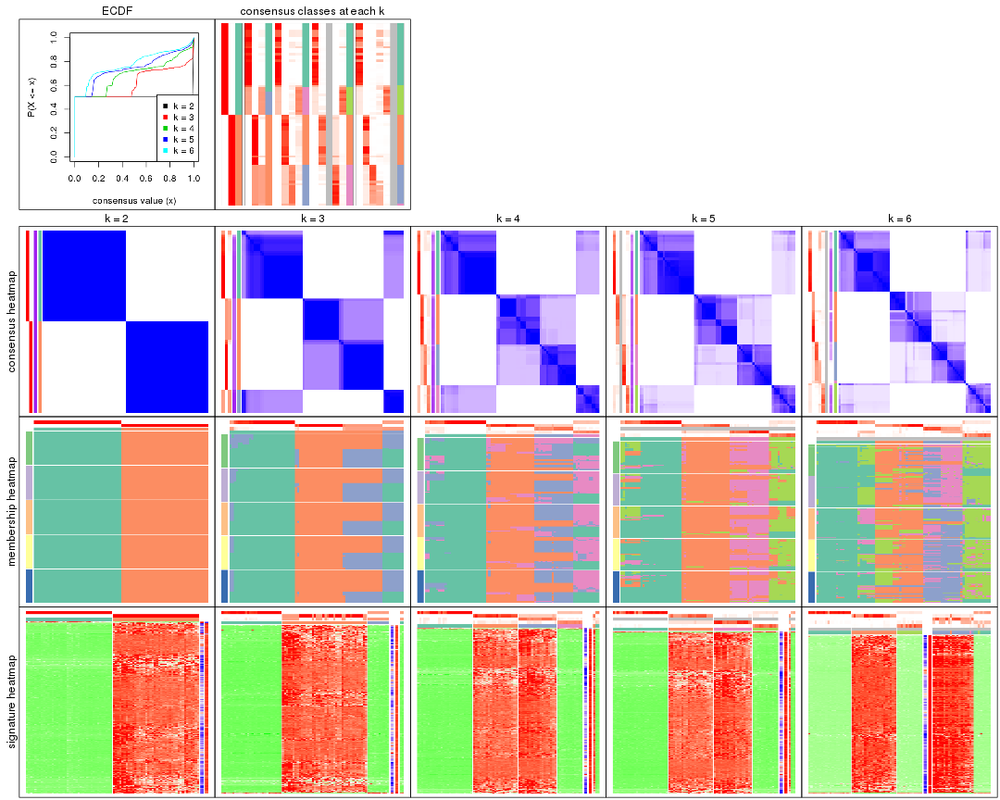
The plots are:
k and the heatmap of
predicted classes for each k.k.k.k.All the plots in panels can be made by individual functions and they are plotted later in this section.
select_partition_number() produces several plots showing different
statistics for choosing “optimized” k. There are following statistics:
k;k, the area increased is defined as \(A_k - A_{k-1}\).The detailed explanations of these statistics can be found in the cola vignette.
Generally speaking, lower PAC score, higher mean silhouette score or higher
concordance corresponds to better partition. Rand index and Jaccard index
measure how similar the current partition is compared to partition with k-1.
If they are too similar, we won't accept k is better than k-1.
select_partition_number(res)
The numeric values for all these statistics can be obtained by get_stats().
get_stats(res)
#> k 1-PAC mean_silhouette concordance area_increased Rand Jaccard
#> 2 2 1.000 1.000 1.000 0.5068 0.494 0.494
#> 3 3 0.758 0.790 0.808 0.2308 0.905 0.808
#> 4 4 0.632 0.839 0.792 0.1123 0.851 0.631
#> 5 5 0.619 0.770 0.789 0.0779 1.000 1.000
#> 6 6 0.669 0.551 0.711 0.0424 0.982 0.933
suggest_best_k() suggests the best \(k\) based on these statistics. The rules are as follows:
suggest_best_k(res)
#> [1] 2
Following shows the table of the partitions (You need to click the show/hide
code output link to see it). The membership matrix (columns with name p*)
is inferred by
clue::cl_consensus()
function with the SE method. Basically the value in the membership matrix
represents the probability to belong to a certain group. The finall class
label for an item is determined with the group with highest probability it
belongs to.
In get_classes() function, the entropy is calculated from the membership
matrix and the silhouette score is calculated from the consensus matrix.
cbind(get_classes(res, k = 2), get_membership(res, k = 2))
#> class entropy silhouette p1 p2
#> SRR830972 2 0 1 0 1
#> SRR830973 2 0 1 0 1
#> SRR830974 2 0 1 0 1
#> SRR830975 2 0 1 0 1
#> SRR830976 2 0 1 0 1
#> SRR830977 2 0 1 0 1
#> SRR830978 2 0 1 0 1
#> SRR830979 2 0 1 0 1
#> SRR830980 2 0 1 0 1
#> SRR830982 2 0 1 0 1
#> SRR830981 2 0 1 0 1
#> SRR830983 2 0 1 0 1
#> SRR831010 1 0 1 1 0
#> SRR831011 1 0 1 1 0
#> SRR831012 1 0 1 1 0
#> SRR831013 1 0 1 1 0
#> SRR831014 1 0 1 1 0
#> SRR831015 1 0 1 1 0
#> SRR831016 1 0 1 1 0
#> SRR831017 1 0 1 1 0
#> SRR831018 1 0 1 1 0
#> SRR831019 1 0 1 1 0
#> SRR831020 1 0 1 1 0
#> SRR831021 1 0 1 1 0
#> SRR831022 1 0 1 1 0
#> SRR831023 1 0 1 1 0
#> SRR831024 1 0 1 1 0
#> SRR831025 1 0 1 1 0
#> SRR831026 1 0 1 1 0
#> SRR831027 1 0 1 1 0
#> SRR831028 1 0 1 1 0
#> SRR831029 1 0 1 1 0
#> SRR831030 1 0 1 1 0
#> SRR831031 1 0 1 1 0
#> SRR831032 1 0 1 1 0
#> SRR831033 1 0 1 1 0
#> SRR831034 1 0 1 1 0
#> SRR831035 1 0 1 1 0
#> SRR831036 1 0 1 1 0
#> SRR831037 1 0 1 1 0
#> SRR831038 1 0 1 1 0
#> SRR831039 1 0 1 1 0
#> SRR831040 1 0 1 1 0
#> SRR831041 1 0 1 1 0
#> SRR831042 1 0 1 1 0
#> SRR831043 1 0 1 1 0
#> SRR831044 1 0 1 1 0
#> SRR830965 2 0 1 0 1
#> SRR830966 2 0 1 0 1
#> SRR830967 2 0 1 0 1
#> SRR830968 2 0 1 0 1
#> SRR830969 2 0 1 0 1
#> SRR830970 2 0 1 0 1
#> SRR830971 2 0 1 0 1
#> SRR830984 2 0 1 0 1
#> SRR830985 2 0 1 0 1
#> SRR830986 2 0 1 0 1
#> SRR830987 2 0 1 0 1
#> SRR830988 2 0 1 0 1
#> SRR830989 2 0 1 0 1
#> SRR830990 2 0 1 0 1
#> SRR830991 2 0 1 0 1
#> SRR830992 2 0 1 0 1
#> SRR830993 2 0 1 0 1
#> SRR830994 2 0 1 0 1
#> SRR830995 2 0 1 0 1
#> SRR830996 2 0 1 0 1
#> SRR830997 2 0 1 0 1
#> SRR830998 2 0 1 0 1
#> SRR830999 2 0 1 0 1
#> SRR831000 2 0 1 0 1
#> SRR831001 2 0 1 0 1
#> SRR831002 2 0 1 0 1
#> SRR831003 2 0 1 0 1
#> SRR831004 2 0 1 0 1
#> SRR831005 1 0 1 1 0
#> SRR831006 1 0 1 1 0
#> SRR831007 1 0 1 1 0
#> SRR831008 1 0 1 1 0
#> SRR831009 1 0 1 1 0
cbind(get_classes(res, k = 3), get_membership(res, k = 3))
#> class entropy silhouette p1 p2 p3
#> SRR830972 2 0.0000 0.791 0.000 1.000 0.000
#> SRR830973 2 0.6302 0.753 0.000 0.520 0.480
#> SRR830974 2 0.3340 0.784 0.000 0.880 0.120
#> SRR830975 2 0.0000 0.791 0.000 1.000 0.000
#> SRR830976 2 0.0000 0.791 0.000 1.000 0.000
#> SRR830977 2 0.6302 0.753 0.000 0.520 0.480
#> SRR830978 2 0.6302 0.753 0.000 0.520 0.480
#> SRR830979 2 0.6302 0.753 0.000 0.520 0.480
#> SRR830980 2 0.0000 0.791 0.000 1.000 0.000
#> SRR830982 2 0.0000 0.791 0.000 1.000 0.000
#> SRR830981 2 0.6302 0.753 0.000 0.520 0.480
#> SRR830983 2 0.0000 0.791 0.000 1.000 0.000
#> SRR831010 1 0.0000 0.894 1.000 0.000 0.000
#> SRR831011 1 0.0000 0.894 1.000 0.000 0.000
#> SRR831012 1 0.0000 0.894 1.000 0.000 0.000
#> SRR831013 1 0.2165 0.827 0.936 0.000 0.064
#> SRR831014 1 0.2165 0.827 0.936 0.000 0.064
#> SRR831015 1 0.2165 0.827 0.936 0.000 0.064
#> SRR831016 1 0.4062 0.577 0.836 0.000 0.164
#> SRR831017 3 0.6302 0.994 0.480 0.000 0.520
#> SRR831018 1 0.0000 0.894 1.000 0.000 0.000
#> SRR831019 3 0.6302 0.994 0.480 0.000 0.520
#> SRR831020 3 0.6305 0.990 0.484 0.000 0.516
#> SRR831021 1 0.0000 0.894 1.000 0.000 0.000
#> SRR831022 1 0.1289 0.866 0.968 0.000 0.032
#> SRR831023 1 0.6309 -0.948 0.504 0.000 0.496
#> SRR831024 1 0.1753 0.848 0.952 0.000 0.048
#> SRR831025 3 0.6302 0.994 0.480 0.000 0.520
#> SRR831026 3 0.6309 0.966 0.496 0.000 0.504
#> SRR831027 1 0.2878 0.766 0.904 0.000 0.096
#> SRR831028 3 0.6305 0.990 0.484 0.000 0.516
#> SRR831029 1 0.0000 0.894 1.000 0.000 0.000
#> SRR831030 1 0.0000 0.894 1.000 0.000 0.000
#> SRR831031 1 0.1860 0.843 0.948 0.000 0.052
#> SRR831032 1 0.0000 0.894 1.000 0.000 0.000
#> SRR831033 1 0.0000 0.894 1.000 0.000 0.000
#> SRR831034 3 0.6302 0.994 0.480 0.000 0.520
#> SRR831035 3 0.6302 0.994 0.480 0.000 0.520
#> SRR831036 3 0.6302 0.994 0.480 0.000 0.520
#> SRR831037 3 0.6302 0.994 0.480 0.000 0.520
#> SRR831038 1 0.0892 0.877 0.980 0.000 0.020
#> SRR831039 1 0.0000 0.894 1.000 0.000 0.000
#> SRR831040 1 0.0000 0.894 1.000 0.000 0.000
#> SRR831041 1 0.0000 0.894 1.000 0.000 0.000
#> SRR831042 1 0.0000 0.894 1.000 0.000 0.000
#> SRR831043 1 0.0000 0.894 1.000 0.000 0.000
#> SRR831044 1 0.0000 0.894 1.000 0.000 0.000
#> SRR830965 2 0.0000 0.791 0.000 1.000 0.000
#> SRR830966 2 0.0000 0.791 0.000 1.000 0.000
#> SRR830967 2 0.0000 0.791 0.000 1.000 0.000
#> SRR830968 2 0.0000 0.791 0.000 1.000 0.000
#> SRR830969 2 0.0000 0.791 0.000 1.000 0.000
#> SRR830970 2 0.0000 0.791 0.000 1.000 0.000
#> SRR830971 2 0.0000 0.791 0.000 1.000 0.000
#> SRR830984 2 0.6302 0.753 0.000 0.520 0.480
#> SRR830985 2 0.6302 0.753 0.000 0.520 0.480
#> SRR830986 2 0.0000 0.791 0.000 1.000 0.000
#> SRR830987 2 0.0000 0.791 0.000 1.000 0.000
#> SRR830988 2 0.0000 0.791 0.000 1.000 0.000
#> SRR830989 2 0.6154 0.760 0.000 0.592 0.408
#> SRR830990 2 0.6302 0.753 0.000 0.520 0.480
#> SRR830991 2 0.0000 0.791 0.000 1.000 0.000
#> SRR830992 2 0.4796 0.777 0.000 0.780 0.220
#> SRR830993 2 0.6302 0.753 0.000 0.520 0.480
#> SRR830994 2 0.6302 0.753 0.000 0.520 0.480
#> SRR830995 2 0.0000 0.791 0.000 1.000 0.000
#> SRR830996 2 0.6302 0.753 0.000 0.520 0.480
#> SRR830997 2 0.6302 0.753 0.000 0.520 0.480
#> SRR830998 2 0.6302 0.753 0.000 0.520 0.480
#> SRR830999 2 0.0000 0.791 0.000 1.000 0.000
#> SRR831000 2 0.6302 0.753 0.000 0.520 0.480
#> SRR831001 2 0.6302 0.753 0.000 0.520 0.480
#> SRR831002 2 0.6302 0.753 0.000 0.520 0.480
#> SRR831003 2 0.6302 0.753 0.000 0.520 0.480
#> SRR831004 2 0.0000 0.791 0.000 1.000 0.000
#> SRR831005 1 0.0000 0.894 1.000 0.000 0.000
#> SRR831006 1 0.0000 0.894 1.000 0.000 0.000
#> SRR831007 1 0.0000 0.894 1.000 0.000 0.000
#> SRR831008 1 0.6309 -0.953 0.504 0.000 0.496
#> SRR831009 1 0.0000 0.894 1.000 0.000 0.000
cbind(get_classes(res, k = 4), get_membership(res, k = 4))
#> class entropy silhouette p1 p2 p3 p4
#> SRR830972 2 0.3074 0.842 0.000 0.848 0.000 0.152
#> SRR830973 3 0.6933 0.857 0.000 0.300 0.560 0.140
#> SRR830974 2 0.4605 0.676 0.000 0.800 0.092 0.108
#> SRR830975 2 0.2081 0.839 0.000 0.916 0.000 0.084
#> SRR830976 2 0.1940 0.842 0.000 0.924 0.000 0.076
#> SRR830977 3 0.6708 0.888 0.000 0.272 0.596 0.132
#> SRR830978 3 0.6595 0.893 0.000 0.268 0.608 0.124
#> SRR830979 3 0.6133 0.902 0.000 0.268 0.644 0.088
#> SRR830980 2 0.0336 0.860 0.000 0.992 0.000 0.008
#> SRR830982 2 0.2081 0.839 0.000 0.916 0.000 0.084
#> SRR830981 3 0.6708 0.888 0.000 0.272 0.596 0.132
#> SRR830983 2 0.2081 0.839 0.000 0.916 0.000 0.084
#> SRR831010 1 0.0000 0.886 1.000 0.000 0.000 0.000
#> SRR831011 1 0.0000 0.886 1.000 0.000 0.000 0.000
#> SRR831012 1 0.0000 0.886 1.000 0.000 0.000 0.000
#> SRR831013 1 0.5226 0.654 0.756 0.000 0.128 0.116
#> SRR831014 1 0.5226 0.654 0.756 0.000 0.128 0.116
#> SRR831015 1 0.5226 0.654 0.756 0.000 0.128 0.116
#> SRR831016 1 0.6549 0.208 0.612 0.000 0.120 0.268
#> SRR831017 4 0.5453 0.922 0.320 0.000 0.032 0.648
#> SRR831018 1 0.0000 0.886 1.000 0.000 0.000 0.000
#> SRR831019 4 0.6356 0.913 0.320 0.000 0.084 0.596
#> SRR831020 4 0.6116 0.893 0.320 0.000 0.068 0.612
#> SRR831021 1 0.0000 0.886 1.000 0.000 0.000 0.000
#> SRR831022 1 0.4127 0.750 0.824 0.000 0.124 0.052
#> SRR831023 4 0.6495 0.836 0.356 0.000 0.084 0.560
#> SRR831024 1 0.4127 0.750 0.824 0.000 0.124 0.052
#> SRR831025 4 0.5538 0.921 0.320 0.000 0.036 0.644
#> SRR831026 4 0.6187 0.877 0.336 0.000 0.068 0.596
#> SRR831027 1 0.6152 0.433 0.668 0.000 0.120 0.212
#> SRR831028 4 0.6116 0.893 0.320 0.000 0.068 0.612
#> SRR831029 1 0.0336 0.881 0.992 0.000 0.008 0.000
#> SRR831030 1 0.0000 0.886 1.000 0.000 0.000 0.000
#> SRR831031 1 0.4753 0.705 0.788 0.000 0.128 0.084
#> SRR831032 1 0.0000 0.886 1.000 0.000 0.000 0.000
#> SRR831033 1 0.0000 0.886 1.000 0.000 0.000 0.000
#> SRR831034 4 0.6412 0.912 0.320 0.000 0.088 0.592
#> SRR831035 4 0.6356 0.913 0.320 0.000 0.084 0.596
#> SRR831036 4 0.4522 0.919 0.320 0.000 0.000 0.680
#> SRR831037 4 0.7092 0.881 0.320 0.000 0.148 0.532
#> SRR831038 1 0.3108 0.798 0.872 0.000 0.112 0.016
#> SRR831039 1 0.0000 0.886 1.000 0.000 0.000 0.000
#> SRR831040 1 0.0000 0.886 1.000 0.000 0.000 0.000
#> SRR831041 1 0.0000 0.886 1.000 0.000 0.000 0.000
#> SRR831042 1 0.0000 0.886 1.000 0.000 0.000 0.000
#> SRR831043 1 0.0000 0.886 1.000 0.000 0.000 0.000
#> SRR831044 1 0.0000 0.886 1.000 0.000 0.000 0.000
#> SRR830965 2 0.3074 0.842 0.000 0.848 0.000 0.152
#> SRR830966 2 0.3074 0.842 0.000 0.848 0.000 0.152
#> SRR830967 2 0.3074 0.842 0.000 0.848 0.000 0.152
#> SRR830968 2 0.3074 0.842 0.000 0.848 0.000 0.152
#> SRR830969 2 0.3074 0.842 0.000 0.848 0.000 0.152
#> SRR830970 2 0.3074 0.842 0.000 0.848 0.000 0.152
#> SRR830971 2 0.3074 0.842 0.000 0.848 0.000 0.152
#> SRR830984 3 0.6685 0.890 0.000 0.268 0.600 0.132
#> SRR830985 3 0.6751 0.886 0.000 0.272 0.592 0.136
#> SRR830986 2 0.2081 0.839 0.000 0.916 0.000 0.084
#> SRR830987 2 0.2081 0.839 0.000 0.916 0.000 0.084
#> SRR830988 2 0.1940 0.842 0.000 0.924 0.000 0.076
#> SRR830989 3 0.5620 0.687 0.000 0.416 0.560 0.024
#> SRR830990 3 0.4193 0.913 0.000 0.268 0.732 0.000
#> SRR830991 2 0.1557 0.860 0.000 0.944 0.000 0.056
#> SRR830992 2 0.5599 0.384 0.000 0.700 0.228 0.072
#> SRR830993 3 0.6990 0.856 0.000 0.304 0.552 0.144
#> SRR830994 3 0.4372 0.913 0.000 0.268 0.728 0.004
#> SRR830995 2 0.1389 0.861 0.000 0.952 0.000 0.048
#> SRR830996 3 0.4372 0.913 0.000 0.268 0.728 0.004
#> SRR830997 3 0.4511 0.913 0.000 0.268 0.724 0.008
#> SRR830998 3 0.4193 0.913 0.000 0.268 0.732 0.000
#> SRR830999 2 0.1474 0.861 0.000 0.948 0.000 0.052
#> SRR831000 3 0.4401 0.911 0.000 0.272 0.724 0.004
#> SRR831001 3 0.4372 0.913 0.000 0.268 0.728 0.004
#> SRR831002 3 0.4372 0.913 0.000 0.268 0.728 0.004
#> SRR831003 3 0.4372 0.913 0.000 0.268 0.728 0.004
#> SRR831004 2 0.0592 0.858 0.000 0.984 0.000 0.016
#> SRR831005 1 0.0000 0.886 1.000 0.000 0.000 0.000
#> SRR831006 1 0.0336 0.881 0.992 0.000 0.008 0.000
#> SRR831007 1 0.0000 0.886 1.000 0.000 0.000 0.000
#> SRR831008 4 0.4605 0.916 0.336 0.000 0.000 0.664
#> SRR831009 1 0.1256 0.868 0.964 0.000 0.028 0.008
cbind(get_classes(res, k = 5), get_membership(res, k = 5))
#> class entropy silhouette p1 p2 p3 p4 p5
#> SRR830972 2 0.6196 0.789 0.000 0.508 NA 0.152 0.000
#> SRR830973 4 0.6202 0.766 0.000 0.128 NA 0.664 0.076
#> SRR830974 2 0.4425 0.640 0.000 0.716 NA 0.244 0.000
#> SRR830975 2 0.2806 0.796 0.000 0.844 NA 0.152 0.000
#> SRR830976 2 0.2648 0.798 0.000 0.848 NA 0.152 0.000
#> SRR830977 4 0.5323 0.816 0.000 0.068 NA 0.736 0.072
#> SRR830978 4 0.5323 0.816 0.000 0.068 NA 0.736 0.072
#> SRR830979 4 0.3980 0.831 0.000 0.000 NA 0.796 0.076
#> SRR830980 2 0.4393 0.814 0.000 0.768 NA 0.152 0.004
#> SRR830982 2 0.2806 0.796 0.000 0.844 NA 0.152 0.000
#> SRR830981 4 0.5323 0.816 0.000 0.068 NA 0.736 0.072
#> SRR830983 2 0.2806 0.796 0.000 0.844 NA 0.152 0.000
#> SRR831010 1 0.0162 0.837 0.996 0.004 NA 0.000 0.000
#> SRR831011 1 0.0162 0.837 0.996 0.004 NA 0.000 0.000
#> SRR831012 1 0.0162 0.837 0.996 0.004 NA 0.000 0.000
#> SRR831013 1 0.5302 0.529 0.592 0.000 NA 0.000 0.064
#> SRR831014 1 0.5246 0.535 0.596 0.000 NA 0.000 0.060
#> SRR831015 1 0.5260 0.535 0.592 0.000 NA 0.000 0.060
#> SRR831016 1 0.6759 -0.134 0.396 0.000 NA 0.000 0.328
#> SRR831017 5 0.3001 0.868 0.144 0.008 NA 0.000 0.844
#> SRR831018 1 0.0671 0.836 0.980 0.016 NA 0.000 0.000
#> SRR831019 5 0.5801 0.841 0.144 0.092 NA 0.000 0.696
#> SRR831020 5 0.5195 0.832 0.144 0.000 NA 0.000 0.688
#> SRR831021 1 0.1282 0.823 0.952 0.004 NA 0.000 0.000
#> SRR831022 1 0.4404 0.637 0.684 0.000 NA 0.000 0.024
#> SRR831023 5 0.5928 0.758 0.192 0.000 NA 0.000 0.596
#> SRR831024 1 0.4708 0.619 0.668 0.000 NA 0.000 0.040
#> SRR831025 5 0.3213 0.868 0.144 0.016 NA 0.000 0.836
#> SRR831026 5 0.5481 0.805 0.172 0.000 NA 0.000 0.656
#> SRR831027 1 0.6809 0.155 0.468 0.008 NA 0.000 0.264
#> SRR831028 5 0.5229 0.830 0.144 0.000 NA 0.000 0.684
#> SRR831029 1 0.1310 0.829 0.956 0.020 NA 0.000 0.000
#> SRR831030 1 0.0324 0.837 0.992 0.004 NA 0.000 0.000
#> SRR831031 1 0.4941 0.578 0.628 0.000 NA 0.000 0.044
#> SRR831032 1 0.0451 0.837 0.988 0.008 NA 0.000 0.000
#> SRR831033 1 0.0451 0.837 0.988 0.008 NA 0.000 0.000
#> SRR831034 5 0.5524 0.846 0.144 0.080 NA 0.000 0.716
#> SRR831035 5 0.5691 0.843 0.144 0.088 NA 0.000 0.704
#> SRR831036 5 0.3975 0.865 0.144 0.000 NA 0.000 0.792
#> SRR831037 5 0.7100 0.781 0.144 0.104 NA 0.000 0.572
#> SRR831038 1 0.3756 0.688 0.744 0.000 NA 0.000 0.008
#> SRR831039 1 0.0579 0.836 0.984 0.008 NA 0.000 0.000
#> SRR831040 1 0.0162 0.837 0.996 0.004 NA 0.000 0.000
#> SRR831041 1 0.0162 0.837 0.996 0.004 NA 0.000 0.000
#> SRR831042 1 0.0798 0.836 0.976 0.016 NA 0.000 0.000
#> SRR831043 1 0.0579 0.836 0.984 0.008 NA 0.000 0.000
#> SRR831044 1 0.0798 0.835 0.976 0.008 NA 0.000 0.000
#> SRR830965 2 0.6196 0.789 0.000 0.508 NA 0.152 0.000
#> SRR830966 2 0.6196 0.789 0.000 0.508 NA 0.152 0.000
#> SRR830967 2 0.6196 0.789 0.000 0.508 NA 0.152 0.000
#> SRR830968 2 0.6196 0.789 0.000 0.508 NA 0.152 0.000
#> SRR830969 2 0.6196 0.789 0.000 0.508 NA 0.152 0.000
#> SRR830970 2 0.6196 0.789 0.000 0.508 NA 0.152 0.000
#> SRR830971 2 0.6196 0.789 0.000 0.508 NA 0.152 0.000
#> SRR830984 4 0.5533 0.814 0.000 0.068 NA 0.720 0.084
#> SRR830985 4 0.5381 0.814 0.000 0.072 NA 0.732 0.072
#> SRR830986 2 0.2806 0.796 0.000 0.844 NA 0.152 0.000
#> SRR830987 2 0.2806 0.796 0.000 0.844 NA 0.152 0.000
#> SRR830988 2 0.2648 0.798 0.000 0.848 NA 0.152 0.000
#> SRR830989 4 0.4890 0.656 0.000 0.124 NA 0.764 0.060
#> SRR830990 4 0.1012 0.851 0.000 0.000 NA 0.968 0.020
#> SRR830991 2 0.6190 0.810 0.000 0.628 NA 0.156 0.028
#> SRR830992 2 0.5463 0.310 0.000 0.544 NA 0.404 0.040
#> SRR830993 4 0.6188 0.790 0.000 0.088 NA 0.668 0.112
#> SRR830994 4 0.1041 0.846 0.000 0.000 NA 0.964 0.032
#> SRR830995 2 0.5949 0.814 0.000 0.652 NA 0.152 0.024
#> SRR830996 4 0.1331 0.844 0.000 0.000 NA 0.952 0.040
#> SRR830997 4 0.1168 0.851 0.000 0.000 NA 0.960 0.008
#> SRR830998 4 0.0579 0.850 0.000 0.000 NA 0.984 0.008
#> SRR830999 2 0.6045 0.813 0.000 0.640 NA 0.152 0.024
#> SRR831000 4 0.1569 0.841 0.000 0.004 NA 0.944 0.044
#> SRR831001 4 0.0865 0.846 0.000 0.000 NA 0.972 0.024
#> SRR831002 4 0.0955 0.845 0.000 0.000 NA 0.968 0.028
#> SRR831003 4 0.1041 0.846 0.000 0.000 NA 0.964 0.032
#> SRR831004 2 0.4393 0.813 0.000 0.768 NA 0.152 0.004
#> SRR831005 1 0.0162 0.837 0.996 0.004 NA 0.000 0.000
#> SRR831006 1 0.1310 0.829 0.956 0.020 NA 0.000 0.000
#> SRR831007 1 0.0162 0.837 0.996 0.004 NA 0.000 0.000
#> SRR831008 5 0.4376 0.860 0.172 0.012 NA 0.000 0.768
#> SRR831009 1 0.1800 0.822 0.932 0.020 NA 0.000 0.000
cbind(get_classes(res, k = 6), get_membership(res, k = 6))
#> class entropy silhouette p1 p2 p3 p4 p5 p6
#> SRR830972 2 0.4225 0.6376 0.000 0.508 0.000 0.004 0.008 NA
#> SRR830973 3 0.2772 0.3992 0.000 0.180 0.816 0.004 0.000 NA
#> SRR830974 2 0.2053 0.5723 0.000 0.888 0.108 0.000 0.000 NA
#> SRR830975 2 0.0260 0.6940 0.000 0.992 0.008 0.000 0.000 NA
#> SRR830976 2 0.0260 0.6960 0.000 0.992 0.000 0.000 0.008 NA
#> SRR830977 3 0.2219 0.4520 0.000 0.136 0.864 0.000 0.000 NA
#> SRR830978 3 0.2219 0.4520 0.000 0.136 0.864 0.000 0.000 NA
#> SRR830979 3 0.2588 0.4251 0.000 0.092 0.876 0.024 0.000 NA
#> SRR830980 2 0.2490 0.7032 0.000 0.892 0.000 0.012 0.044 NA
#> SRR830982 2 0.0146 0.6957 0.000 0.996 0.004 0.000 0.000 NA
#> SRR830981 3 0.2219 0.4520 0.000 0.136 0.864 0.000 0.000 NA
#> SRR830983 2 0.0260 0.6940 0.000 0.992 0.008 0.000 0.000 NA
#> SRR831010 1 0.0777 0.7982 0.972 0.000 0.000 0.024 0.000 NA
#> SRR831011 1 0.0777 0.7982 0.972 0.000 0.000 0.024 0.000 NA
#> SRR831012 1 0.0777 0.7982 0.972 0.000 0.000 0.024 0.000 NA
#> SRR831013 1 0.6232 0.3490 0.476 0.000 0.000 0.368 0.092 NA
#> SRR831014 1 0.6206 0.3593 0.492 0.000 0.000 0.352 0.092 NA
#> SRR831015 1 0.6213 0.3551 0.488 0.000 0.000 0.356 0.092 NA
#> SRR831016 5 0.6809 0.1959 0.352 0.000 0.000 0.192 0.396 NA
#> SRR831017 5 0.4133 0.7906 0.120 0.000 0.000 0.012 0.768 NA
#> SRR831018 1 0.0653 0.7962 0.980 0.000 0.012 0.004 0.000 NA
#> SRR831019 5 0.6178 0.7374 0.120 0.000 0.000 0.060 0.548 NA
#> SRR831020 5 0.4818 0.7611 0.120 0.000 0.000 0.108 0.728 NA
#> SRR831021 1 0.2913 0.7149 0.812 0.000 0.004 0.180 0.000 NA
#> SRR831022 1 0.5807 0.4536 0.532 0.000 0.000 0.348 0.056 NA
#> SRR831023 5 0.6131 0.6909 0.140 0.000 0.012 0.216 0.592 NA
#> SRR831024 1 0.5807 0.4536 0.532 0.000 0.000 0.348 0.056 NA
#> SRR831025 5 0.4738 0.7886 0.120 0.000 0.012 0.020 0.740 NA
#> SRR831026 5 0.5018 0.7495 0.132 0.000 0.000 0.116 0.708 NA
#> SRR831027 1 0.7136 -0.1686 0.380 0.000 0.012 0.188 0.356 NA
#> SRR831028 5 0.4861 0.7597 0.120 0.000 0.000 0.112 0.724 NA
#> SRR831029 1 0.1180 0.7878 0.960 0.000 0.012 0.016 0.000 NA
#> SRR831030 1 0.0777 0.7982 0.972 0.000 0.000 0.024 0.000 NA
#> SRR831031 1 0.6192 0.3890 0.496 0.000 0.004 0.360 0.076 NA
#> SRR831032 1 0.0000 0.7980 1.000 0.000 0.000 0.000 0.000 NA
#> SRR831033 1 0.0000 0.7980 1.000 0.000 0.000 0.000 0.000 NA
#> SRR831034 5 0.6194 0.7515 0.120 0.000 0.012 0.064 0.604 NA
#> SRR831035 5 0.6129 0.7415 0.120 0.000 0.000 0.060 0.560 NA
#> SRR831036 5 0.2302 0.7930 0.120 0.000 0.000 0.008 0.872 NA
#> SRR831037 5 0.7675 0.6780 0.120 0.000 0.064 0.100 0.444 NA
#> SRR831038 1 0.5298 0.5176 0.584 0.000 0.004 0.332 0.020 NA
#> SRR831039 1 0.0146 0.7977 0.996 0.000 0.000 0.000 0.000 NA
#> SRR831040 1 0.0777 0.7982 0.972 0.000 0.000 0.024 0.000 NA
#> SRR831041 1 0.0777 0.7982 0.972 0.000 0.000 0.024 0.000 NA
#> SRR831042 1 0.0551 0.7962 0.984 0.000 0.008 0.004 0.000 NA
#> SRR831043 1 0.0146 0.7977 0.996 0.000 0.000 0.000 0.000 NA
#> SRR831044 1 0.0725 0.7930 0.976 0.000 0.000 0.012 0.000 NA
#> SRR830965 2 0.3868 0.6383 0.000 0.508 0.000 0.000 0.000 NA
#> SRR830966 2 0.3868 0.6383 0.000 0.508 0.000 0.000 0.000 NA
#> SRR830967 2 0.4183 0.6384 0.000 0.508 0.000 0.000 0.012 NA
#> SRR830968 2 0.4183 0.6384 0.000 0.508 0.000 0.000 0.012 NA
#> SRR830969 2 0.4390 0.6383 0.000 0.508 0.000 0.004 0.016 NA
#> SRR830970 2 0.4390 0.6383 0.000 0.508 0.000 0.004 0.016 NA
#> SRR830971 2 0.4183 0.6384 0.000 0.508 0.000 0.000 0.012 NA
#> SRR830984 3 0.3050 0.4375 0.000 0.136 0.832 0.028 0.004 NA
#> SRR830985 3 0.2260 0.4491 0.000 0.140 0.860 0.000 0.000 NA
#> SRR830986 2 0.0260 0.6940 0.000 0.992 0.008 0.000 0.000 NA
#> SRR830987 2 0.0405 0.6941 0.000 0.988 0.008 0.000 0.004 NA
#> SRR830988 2 0.0260 0.6960 0.000 0.992 0.000 0.000 0.008 NA
#> SRR830989 4 0.7433 0.0000 0.000 0.192 0.308 0.404 0.064 NA
#> SRR830990 3 0.5410 0.0154 0.000 0.092 0.508 0.392 0.000 NA
#> SRR830991 2 0.4832 0.6740 0.000 0.708 0.000 0.056 0.048 NA
#> SRR830992 2 0.5771 0.0570 0.000 0.636 0.132 0.184 0.040 NA
#> SRR830993 3 0.5019 0.3322 0.000 0.144 0.728 0.072 0.032 NA
#> SRR830994 3 0.5471 -0.0669 0.000 0.092 0.480 0.420 0.004 NA
#> SRR830995 2 0.4258 0.6920 0.000 0.752 0.000 0.028 0.048 NA
#> SRR830996 3 0.5603 -0.0940 0.000 0.096 0.476 0.416 0.004 NA
#> SRR830997 3 0.5795 0.0920 0.000 0.092 0.564 0.312 0.016 NA
#> SRR830998 3 0.5321 0.0139 0.000 0.092 0.504 0.400 0.000 NA
#> SRR830999 2 0.4385 0.6897 0.000 0.736 0.000 0.028 0.048 NA
#> SRR831000 3 0.5935 -0.1752 0.000 0.100 0.468 0.404 0.024 NA
#> SRR831001 3 0.5216 -0.0419 0.000 0.092 0.484 0.424 0.000 NA
#> SRR831002 3 0.5213 -0.0281 0.000 0.092 0.488 0.420 0.000 NA
#> SRR831003 3 0.5567 -0.0553 0.000 0.092 0.480 0.416 0.008 NA
#> SRR831004 2 0.2226 0.7039 0.000 0.904 0.000 0.008 0.028 NA
#> SRR831005 1 0.0777 0.7982 0.972 0.000 0.000 0.024 0.000 NA
#> SRR831006 1 0.1269 0.7859 0.956 0.000 0.012 0.020 0.000 NA
#> SRR831007 1 0.0777 0.7982 0.972 0.000 0.000 0.024 0.000 NA
#> SRR831008 5 0.2936 0.7882 0.144 0.000 0.012 0.004 0.836 NA
#> SRR831009 1 0.2030 0.7719 0.920 0.000 0.016 0.048 0.004 NA
Heatmaps for the consensus matrix. It visualizes the probability of two samples to be in a same group.
consensus_heatmap(res, k = 2)

consensus_heatmap(res, k = 3)
consensus_heatmap(res, k = 4)
consensus_heatmap(res, k = 5)
consensus_heatmap(res, k = 6)
Heatmaps for the membership of samples in all partitions to see how consistent they are:
membership_heatmap(res, k = 2)

membership_heatmap(res, k = 3)
membership_heatmap(res, k = 4)
membership_heatmap(res, k = 5)
membership_heatmap(res, k = 6)
As soon as we have had the classes for columns, we can look for signatures which are significantly different between classes which can be candidate marks for certain classes. Following are the heatmaps for signatures.
Signature heatmaps where rows are scaled:
get_signatures(res, k = 2)

get_signatures(res, k = 3)
get_signatures(res, k = 4)
get_signatures(res, k = 5)
get_signatures(res, k = 6)
#> Error in mat[ceiling(1:nr/h_ratio), ceiling(1:nc/w_ratio), drop = FALSE]: subscript out of bounds

Signature heatmaps where rows are not scaled:
get_signatures(res, k = 2, scale_rows = FALSE)

get_signatures(res, k = 3, scale_rows = FALSE)
get_signatures(res, k = 4, scale_rows = FALSE)
get_signatures(res, k = 5, scale_rows = FALSE)
get_signatures(res, k = 6, scale_rows = FALSE)
#> Error in mat[ceiling(1:nr/h_ratio), ceiling(1:nc/w_ratio), drop = FALSE]: subscript out of bounds
Compare the overlap of signatures from different k:
compare_signatures(res)
get_signature() returns a data frame invisibly. TO get the list of signatures, the function
call should be assigned to a variable explicitly. In following code, if plot argument is set
to FALSE, no heatmap is plotted while only the differential analysis is performed.
# code only for demonstration
tb = get_signature(res, k = ..., plot = FALSE)
An example of the output of tb is:
#> which_row fdr mean_1 mean_2 scaled_mean_1 scaled_mean_2 km
#> 1 38 0.042760348 8.373488 9.131774 -0.5533452 0.5164555 1
#> 2 40 0.018707592 7.106213 8.469186 -0.6173731 0.5762149 1
#> 3 55 0.019134737 10.221463 11.207825 -0.6159697 0.5749050 1
#> 4 59 0.006059896 5.921854 7.869574 -0.6899429 0.6439467 1
#> 5 60 0.018055526 8.928898 10.211722 -0.6204761 0.5791110 1
#> 6 98 0.009384629 15.714769 14.887706 0.6635654 -0.6193277 2
...
The columns in tb are:
which_row: row indices corresponding to the input matrix.fdr: FDR for the differential test. mean_x: The mean value in group x.scaled_mean_x: The mean value in group x after rows are scaled.km: Row groups if k-means clustering is applied to rows.UMAP plot which shows how samples are separated.
dimension_reduction(res, k = 2, method = "UMAP")
dimension_reduction(res, k = 3, method = "UMAP")
dimension_reduction(res, k = 4, method = "UMAP")
dimension_reduction(res, k = 5, method = "UMAP")
dimension_reduction(res, k = 6, method = "UMAP")
Following heatmap shows how subgroups are split when increasing k:
collect_classes(res)
If matrix rows can be associated to genes, consider to use functional_enrichment(res,
...) to perform function enrichment for the signature genes. See this vignette for more detailed explanations.
The object with results only for a single top-value method and a single partition method can be extracted as:
res = res_list["CV", "skmeans"]
# you can also extract it by
# res = res_list["CV:skmeans"]
A summary of res and all the functions that can be applied to it:
res
#> A 'ConsensusPartition' object with k = 2, 3, 4, 5, 6.
#> On a matrix with 14104 rows and 80 columns.
#> Top rows (1000, 2000, 3000, 4000, 5000) are extracted by 'CV' method.
#> Subgroups are detected by 'skmeans' method.
#> Performed in total 1250 partitions by row resampling.
#> Best k for subgroups seems to be 5.
#>
#> Following methods can be applied to this 'ConsensusPartition' object:
#> [1] "cola_report" "collect_classes" "collect_plots"
#> [4] "collect_stats" "colnames" "compare_signatures"
#> [7] "consensus_heatmap" "dimension_reduction" "functional_enrichment"
#> [10] "get_anno_col" "get_anno" "get_classes"
#> [13] "get_consensus" "get_matrix" "get_membership"
#> [16] "get_param" "get_signatures" "get_stats"
#> [19] "is_best_k" "is_stable_k" "membership_heatmap"
#> [22] "ncol" "nrow" "plot_ecdf"
#> [25] "rownames" "select_partition_number" "show"
#> [28] "suggest_best_k" "test_to_known_factors"
collect_plots() function collects all the plots made from res for all k (number of partitions)
into one single page to provide an easy and fast comparison between different k.
collect_plots(res)
The plots are:
k and the heatmap of
predicted classes for each k.k.k.k.All the plots in panels can be made by individual functions and they are plotted later in this section.
select_partition_number() produces several plots showing different
statistics for choosing “optimized” k. There are following statistics:
k;k, the area increased is defined as \(A_k - A_{k-1}\).The detailed explanations of these statistics can be found in the cola vignette.
Generally speaking, lower PAC score, higher mean silhouette score or higher
concordance corresponds to better partition. Rand index and Jaccard index
measure how similar the current partition is compared to partition with k-1.
If they are too similar, we won't accept k is better than k-1.
select_partition_number(res)
The numeric values for all these statistics can be obtained by get_stats().
get_stats(res)
#> k 1-PAC mean_silhouette concordance area_increased Rand Jaccard
#> 2 2 1.000 1.000 1.000 0.5068 0.494 0.494
#> 3 3 1.000 0.967 0.989 0.2484 0.874 0.744
#> 4 4 0.918 0.925 0.938 0.0578 0.957 0.885
#> 5 5 0.952 0.920 0.932 0.0479 0.975 0.924
#> 6 6 0.820 0.866 0.890 0.0402 1.000 1.000
suggest_best_k() suggests the best \(k\) based on these statistics. The rules are as follows:
suggest_best_k(res)
#> [1] 5
#> attr(,"optional")
#> [1] 2 3 4
There is also optional best \(k\) = 2 3 4 that is worth to check.
Following shows the table of the partitions (You need to click the show/hide
code output link to see it). The membership matrix (columns with name p*)
is inferred by
clue::cl_consensus()
function with the SE method. Basically the value in the membership matrix
represents the probability to belong to a certain group. The finall class
label for an item is determined with the group with highest probability it
belongs to.
In get_classes() function, the entropy is calculated from the membership
matrix and the silhouette score is calculated from the consensus matrix.
cbind(get_classes(res, k = 2), get_membership(res, k = 2))
#> class entropy silhouette p1 p2
#> SRR830972 2 0 1 0 1
#> SRR830973 2 0 1 0 1
#> SRR830974 2 0 1 0 1
#> SRR830975 2 0 1 0 1
#> SRR830976 2 0 1 0 1
#> SRR830977 2 0 1 0 1
#> SRR830978 2 0 1 0 1
#> SRR830979 2 0 1 0 1
#> SRR830980 2 0 1 0 1
#> SRR830982 2 0 1 0 1
#> SRR830981 2 0 1 0 1
#> SRR830983 2 0 1 0 1
#> SRR831010 1 0 1 1 0
#> SRR831011 1 0 1 1 0
#> SRR831012 1 0 1 1 0
#> SRR831013 1 0 1 1 0
#> SRR831014 1 0 1 1 0
#> SRR831015 1 0 1 1 0
#> SRR831016 1 0 1 1 0
#> SRR831017 1 0 1 1 0
#> SRR831018 1 0 1 1 0
#> SRR831019 1 0 1 1 0
#> SRR831020 1 0 1 1 0
#> SRR831021 1 0 1 1 0
#> SRR831022 1 0 1 1 0
#> SRR831023 1 0 1 1 0
#> SRR831024 1 0 1 1 0
#> SRR831025 1 0 1 1 0
#> SRR831026 1 0 1 1 0
#> SRR831027 1 0 1 1 0
#> SRR831028 1 0 1 1 0
#> SRR831029 1 0 1 1 0
#> SRR831030 1 0 1 1 0
#> SRR831031 1 0 1 1 0
#> SRR831032 1 0 1 1 0
#> SRR831033 1 0 1 1 0
#> SRR831034 1 0 1 1 0
#> SRR831035 1 0 1 1 0
#> SRR831036 1 0 1 1 0
#> SRR831037 1 0 1 1 0
#> SRR831038 1 0 1 1 0
#> SRR831039 1 0 1 1 0
#> SRR831040 1 0 1 1 0
#> SRR831041 1 0 1 1 0
#> SRR831042 1 0 1 1 0
#> SRR831043 1 0 1 1 0
#> SRR831044 1 0 1 1 0
#> SRR830965 2 0 1 0 1
#> SRR830966 2 0 1 0 1
#> SRR830967 2 0 1 0 1
#> SRR830968 2 0 1 0 1
#> SRR830969 2 0 1 0 1
#> SRR830970 2 0 1 0 1
#> SRR830971 2 0 1 0 1
#> SRR830984 2 0 1 0 1
#> SRR830985 2 0 1 0 1
#> SRR830986 2 0 1 0 1
#> SRR830987 2 0 1 0 1
#> SRR830988 2 0 1 0 1
#> SRR830989 2 0 1 0 1
#> SRR830990 2 0 1 0 1
#> SRR830991 2 0 1 0 1
#> SRR830992 2 0 1 0 1
#> SRR830993 2 0 1 0 1
#> SRR830994 2 0 1 0 1
#> SRR830995 2 0 1 0 1
#> SRR830996 2 0 1 0 1
#> SRR830997 2 0 1 0 1
#> SRR830998 2 0 1 0 1
#> SRR830999 2 0 1 0 1
#> SRR831000 2 0 1 0 1
#> SRR831001 2 0 1 0 1
#> SRR831002 2 0 1 0 1
#> SRR831003 2 0 1 0 1
#> SRR831004 2 0 1 0 1
#> SRR831005 1 0 1 1 0
#> SRR831006 1 0 1 1 0
#> SRR831007 1 0 1 1 0
#> SRR831008 1 0 1 1 0
#> SRR831009 1 0 1 1 0
cbind(get_classes(res, k = 3), get_membership(res, k = 3))
#> class entropy silhouette p1 p2 p3
#> SRR830972 2 0.000 0.9742 0 1.000 0.000
#> SRR830973 3 0.000 0.9767 0 0.000 1.000
#> SRR830974 3 0.613 0.3011 0 0.400 0.600
#> SRR830975 2 0.000 0.9742 0 1.000 0.000
#> SRR830976 2 0.000 0.9742 0 1.000 0.000
#> SRR830977 3 0.000 0.9767 0 0.000 1.000
#> SRR830978 3 0.000 0.9767 0 0.000 1.000
#> SRR830979 3 0.000 0.9767 0 0.000 1.000
#> SRR830980 2 0.000 0.9742 0 1.000 0.000
#> SRR830982 2 0.000 0.9742 0 1.000 0.000
#> SRR830981 3 0.000 0.9767 0 0.000 1.000
#> SRR830983 2 0.000 0.9742 0 1.000 0.000
#> SRR831010 1 0.000 1.0000 1 0.000 0.000
#> SRR831011 1 0.000 1.0000 1 0.000 0.000
#> SRR831012 1 0.000 1.0000 1 0.000 0.000
#> SRR831013 1 0.000 1.0000 1 0.000 0.000
#> SRR831014 1 0.000 1.0000 1 0.000 0.000
#> SRR831015 1 0.000 1.0000 1 0.000 0.000
#> SRR831016 1 0.000 1.0000 1 0.000 0.000
#> SRR831017 1 0.000 1.0000 1 0.000 0.000
#> SRR831018 1 0.000 1.0000 1 0.000 0.000
#> SRR831019 1 0.000 1.0000 1 0.000 0.000
#> SRR831020 1 0.000 1.0000 1 0.000 0.000
#> SRR831021 1 0.000 1.0000 1 0.000 0.000
#> SRR831022 1 0.000 1.0000 1 0.000 0.000
#> SRR831023 1 0.000 1.0000 1 0.000 0.000
#> SRR831024 1 0.000 1.0000 1 0.000 0.000
#> SRR831025 1 0.000 1.0000 1 0.000 0.000
#> SRR831026 1 0.000 1.0000 1 0.000 0.000
#> SRR831027 1 0.000 1.0000 1 0.000 0.000
#> SRR831028 1 0.000 1.0000 1 0.000 0.000
#> SRR831029 1 0.000 1.0000 1 0.000 0.000
#> SRR831030 1 0.000 1.0000 1 0.000 0.000
#> SRR831031 1 0.000 1.0000 1 0.000 0.000
#> SRR831032 1 0.000 1.0000 1 0.000 0.000
#> SRR831033 1 0.000 1.0000 1 0.000 0.000
#> SRR831034 1 0.000 1.0000 1 0.000 0.000
#> SRR831035 1 0.000 1.0000 1 0.000 0.000
#> SRR831036 1 0.000 1.0000 1 0.000 0.000
#> SRR831037 1 0.000 1.0000 1 0.000 0.000
#> SRR831038 1 0.000 1.0000 1 0.000 0.000
#> SRR831039 1 0.000 1.0000 1 0.000 0.000
#> SRR831040 1 0.000 1.0000 1 0.000 0.000
#> SRR831041 1 0.000 1.0000 1 0.000 0.000
#> SRR831042 1 0.000 1.0000 1 0.000 0.000
#> SRR831043 1 0.000 1.0000 1 0.000 0.000
#> SRR831044 1 0.000 1.0000 1 0.000 0.000
#> SRR830965 2 0.000 0.9742 0 1.000 0.000
#> SRR830966 2 0.000 0.9742 0 1.000 0.000
#> SRR830967 2 0.000 0.9742 0 1.000 0.000
#> SRR830968 2 0.000 0.9742 0 1.000 0.000
#> SRR830969 2 0.000 0.9742 0 1.000 0.000
#> SRR830970 2 0.000 0.9742 0 1.000 0.000
#> SRR830971 2 0.000 0.9742 0 1.000 0.000
#> SRR830984 3 0.000 0.9767 0 0.000 1.000
#> SRR830985 3 0.000 0.9767 0 0.000 1.000
#> SRR830986 2 0.000 0.9742 0 1.000 0.000
#> SRR830987 2 0.000 0.9742 0 1.000 0.000
#> SRR830988 2 0.000 0.9742 0 1.000 0.000
#> SRR830989 3 0.000 0.9767 0 0.000 1.000
#> SRR830990 3 0.000 0.9767 0 0.000 1.000
#> SRR830991 2 0.000 0.9742 0 1.000 0.000
#> SRR830992 2 0.631 -0.0185 0 0.508 0.492
#> SRR830993 3 0.000 0.9767 0 0.000 1.000
#> SRR830994 3 0.000 0.9767 0 0.000 1.000
#> SRR830995 2 0.000 0.9742 0 1.000 0.000
#> SRR830996 3 0.000 0.9767 0 0.000 1.000
#> SRR830997 3 0.000 0.9767 0 0.000 1.000
#> SRR830998 3 0.000 0.9767 0 0.000 1.000
#> SRR830999 2 0.000 0.9742 0 1.000 0.000
#> SRR831000 3 0.000 0.9767 0 0.000 1.000
#> SRR831001 3 0.000 0.9767 0 0.000 1.000
#> SRR831002 3 0.000 0.9767 0 0.000 1.000
#> SRR831003 3 0.000 0.9767 0 0.000 1.000
#> SRR831004 2 0.000 0.9742 0 1.000 0.000
#> SRR831005 1 0.000 1.0000 1 0.000 0.000
#> SRR831006 1 0.000 1.0000 1 0.000 0.000
#> SRR831007 1 0.000 1.0000 1 0.000 0.000
#> SRR831008 1 0.000 1.0000 1 0.000 0.000
#> SRR831009 1 0.000 1.0000 1 0.000 0.000
cbind(get_classes(res, k = 4), get_membership(res, k = 4))
#> class entropy silhouette p1 p2 p3 p4
#> SRR830972 4 0.2973 1.000 0.000 0.144 0.000 0.856
#> SRR830973 3 0.6894 0.478 0.000 0.376 0.512 0.112
#> SRR830974 2 0.2300 0.790 0.000 0.920 0.016 0.064
#> SRR830975 2 0.0000 0.863 0.000 1.000 0.000 0.000
#> SRR830976 2 0.0188 0.864 0.000 0.996 0.000 0.004
#> SRR830977 3 0.5063 0.834 0.000 0.124 0.768 0.108
#> SRR830978 3 0.4727 0.847 0.000 0.100 0.792 0.108
#> SRR830979 3 0.2799 0.876 0.000 0.008 0.884 0.108
#> SRR830980 2 0.2647 0.799 0.000 0.880 0.000 0.120
#> SRR830982 2 0.0188 0.864 0.000 0.996 0.000 0.004
#> SRR830981 3 0.5116 0.831 0.000 0.128 0.764 0.108
#> SRR830983 2 0.0000 0.863 0.000 1.000 0.000 0.000
#> SRR831010 1 0.0000 0.995 1.000 0.000 0.000 0.000
#> SRR831011 1 0.0000 0.995 1.000 0.000 0.000 0.000
#> SRR831012 1 0.0000 0.995 1.000 0.000 0.000 0.000
#> SRR831013 1 0.0336 0.994 0.992 0.000 0.000 0.008
#> SRR831014 1 0.0336 0.994 0.992 0.000 0.000 0.008
#> SRR831015 1 0.0336 0.994 0.992 0.000 0.000 0.008
#> SRR831016 1 0.0592 0.992 0.984 0.000 0.000 0.016
#> SRR831017 1 0.0592 0.992 0.984 0.000 0.000 0.016
#> SRR831018 1 0.0000 0.995 1.000 0.000 0.000 0.000
#> SRR831019 1 0.0592 0.992 0.984 0.000 0.000 0.016
#> SRR831020 1 0.0592 0.992 0.984 0.000 0.000 0.016
#> SRR831021 1 0.0000 0.995 1.000 0.000 0.000 0.000
#> SRR831022 1 0.0336 0.994 0.992 0.000 0.000 0.008
#> SRR831023 1 0.0336 0.994 0.992 0.000 0.000 0.008
#> SRR831024 1 0.0336 0.994 0.992 0.000 0.000 0.008
#> SRR831025 1 0.0592 0.992 0.984 0.000 0.000 0.016
#> SRR831026 1 0.0592 0.992 0.984 0.000 0.000 0.016
#> SRR831027 1 0.0592 0.992 0.984 0.000 0.000 0.016
#> SRR831028 1 0.0592 0.992 0.984 0.000 0.000 0.016
#> SRR831029 1 0.0000 0.995 1.000 0.000 0.000 0.000
#> SRR831030 1 0.0000 0.995 1.000 0.000 0.000 0.000
#> SRR831031 1 0.0336 0.994 0.992 0.000 0.000 0.008
#> SRR831032 1 0.0000 0.995 1.000 0.000 0.000 0.000
#> SRR831033 1 0.0000 0.995 1.000 0.000 0.000 0.000
#> SRR831034 1 0.0188 0.994 0.996 0.000 0.000 0.004
#> SRR831035 1 0.0592 0.992 0.984 0.000 0.000 0.016
#> SRR831036 1 0.0592 0.992 0.984 0.000 0.000 0.016
#> SRR831037 1 0.0336 0.994 0.992 0.000 0.000 0.008
#> SRR831038 1 0.0188 0.995 0.996 0.000 0.000 0.004
#> SRR831039 1 0.0000 0.995 1.000 0.000 0.000 0.000
#> SRR831040 1 0.0000 0.995 1.000 0.000 0.000 0.000
#> SRR831041 1 0.0000 0.995 1.000 0.000 0.000 0.000
#> SRR831042 1 0.0000 0.995 1.000 0.000 0.000 0.000
#> SRR831043 1 0.0000 0.995 1.000 0.000 0.000 0.000
#> SRR831044 1 0.0000 0.995 1.000 0.000 0.000 0.000
#> SRR830965 4 0.2973 1.000 0.000 0.144 0.000 0.856
#> SRR830966 4 0.2973 1.000 0.000 0.144 0.000 0.856
#> SRR830967 4 0.2973 1.000 0.000 0.144 0.000 0.856
#> SRR830968 4 0.2973 1.000 0.000 0.144 0.000 0.856
#> SRR830969 4 0.2973 1.000 0.000 0.144 0.000 0.856
#> SRR830970 4 0.2973 1.000 0.000 0.144 0.000 0.856
#> SRR830971 4 0.2973 1.000 0.000 0.144 0.000 0.856
#> SRR830984 3 0.5067 0.838 0.000 0.116 0.768 0.116
#> SRR830985 3 0.5929 0.761 0.000 0.204 0.688 0.108
#> SRR830986 2 0.0000 0.863 0.000 1.000 0.000 0.000
#> SRR830987 2 0.0000 0.863 0.000 1.000 0.000 0.000
#> SRR830988 2 0.0188 0.864 0.000 0.996 0.000 0.004
#> SRR830989 3 0.0707 0.891 0.000 0.000 0.980 0.020
#> SRR830990 3 0.0817 0.894 0.000 0.000 0.976 0.024
#> SRR830991 2 0.4608 0.590 0.000 0.692 0.004 0.304
#> SRR830992 2 0.2546 0.797 0.000 0.900 0.092 0.008
#> SRR830993 3 0.4072 0.866 0.000 0.052 0.828 0.120
#> SRR830994 3 0.0336 0.894 0.000 0.000 0.992 0.008
#> SRR830995 2 0.4356 0.611 0.000 0.708 0.000 0.292
#> SRR830996 3 0.0336 0.894 0.000 0.000 0.992 0.008
#> SRR830997 3 0.0592 0.894 0.000 0.000 0.984 0.016
#> SRR830998 3 0.0336 0.893 0.000 0.000 0.992 0.008
#> SRR830999 2 0.4454 0.582 0.000 0.692 0.000 0.308
#> SRR831000 3 0.0336 0.894 0.000 0.000 0.992 0.008
#> SRR831001 3 0.0336 0.894 0.000 0.000 0.992 0.008
#> SRR831002 3 0.0336 0.894 0.000 0.000 0.992 0.008
#> SRR831003 3 0.0336 0.894 0.000 0.000 0.992 0.008
#> SRR831004 2 0.3356 0.750 0.000 0.824 0.000 0.176
#> SRR831005 1 0.0000 0.995 1.000 0.000 0.000 0.000
#> SRR831006 1 0.0000 0.995 1.000 0.000 0.000 0.000
#> SRR831007 1 0.0000 0.995 1.000 0.000 0.000 0.000
#> SRR831008 1 0.0336 0.993 0.992 0.000 0.000 0.008
#> SRR831009 1 0.0000 0.995 1.000 0.000 0.000 0.000
cbind(get_classes(res, k = 5), get_membership(res, k = 5))
#> class entropy silhouette p1 p2 p3 p4 p5
#> SRR830972 5 0.0404 0.997 0.000 0.012 0.000 0.000 0.988
#> SRR830973 3 0.3861 0.841 0.000 0.128 0.804 0.068 0.000
#> SRR830974 2 0.0510 0.877 0.000 0.984 0.016 0.000 0.000
#> SRR830975 2 0.0404 0.880 0.000 0.988 0.012 0.000 0.000
#> SRR830976 2 0.0451 0.881 0.000 0.988 0.008 0.000 0.004
#> SRR830977 3 0.3224 0.939 0.000 0.016 0.824 0.160 0.000
#> SRR830978 3 0.3081 0.940 0.000 0.012 0.832 0.156 0.000
#> SRR830979 3 0.2605 0.927 0.000 0.000 0.852 0.148 0.000
#> SRR830980 2 0.2804 0.846 0.000 0.884 0.004 0.044 0.068
#> SRR830982 2 0.0451 0.881 0.000 0.988 0.008 0.000 0.004
#> SRR830981 3 0.3264 0.937 0.000 0.016 0.820 0.164 0.000
#> SRR830983 2 0.0404 0.880 0.000 0.988 0.012 0.000 0.000
#> SRR831010 1 0.0000 0.966 1.000 0.000 0.000 0.000 0.000
#> SRR831011 1 0.0000 0.966 1.000 0.000 0.000 0.000 0.000
#> SRR831012 1 0.0000 0.966 1.000 0.000 0.000 0.000 0.000
#> SRR831013 1 0.1638 0.960 0.932 0.000 0.064 0.000 0.004
#> SRR831014 1 0.1638 0.960 0.932 0.000 0.064 0.000 0.004
#> SRR831015 1 0.1638 0.960 0.932 0.000 0.064 0.000 0.004
#> SRR831016 1 0.2011 0.953 0.908 0.000 0.088 0.000 0.004
#> SRR831017 1 0.2011 0.953 0.908 0.000 0.088 0.000 0.004
#> SRR831018 1 0.0000 0.966 1.000 0.000 0.000 0.000 0.000
#> SRR831019 1 0.2011 0.953 0.908 0.000 0.088 0.000 0.004
#> SRR831020 1 0.2011 0.953 0.908 0.000 0.088 0.000 0.004
#> SRR831021 1 0.0000 0.966 1.000 0.000 0.000 0.000 0.000
#> SRR831022 1 0.1341 0.962 0.944 0.000 0.056 0.000 0.000
#> SRR831023 1 0.1768 0.958 0.924 0.000 0.072 0.000 0.004
#> SRR831024 1 0.1638 0.960 0.932 0.000 0.064 0.000 0.004
#> SRR831025 1 0.2011 0.953 0.908 0.000 0.088 0.000 0.004
#> SRR831026 1 0.2011 0.953 0.908 0.000 0.088 0.000 0.004
#> SRR831027 1 0.2011 0.953 0.908 0.000 0.088 0.000 0.004
#> SRR831028 1 0.2011 0.953 0.908 0.000 0.088 0.000 0.004
#> SRR831029 1 0.0162 0.965 0.996 0.000 0.004 0.000 0.000
#> SRR831030 1 0.0000 0.966 1.000 0.000 0.000 0.000 0.000
#> SRR831031 1 0.1341 0.962 0.944 0.000 0.056 0.000 0.000
#> SRR831032 1 0.0000 0.966 1.000 0.000 0.000 0.000 0.000
#> SRR831033 1 0.0000 0.966 1.000 0.000 0.000 0.000 0.000
#> SRR831034 1 0.0671 0.965 0.980 0.000 0.016 0.000 0.004
#> SRR831035 1 0.2011 0.953 0.908 0.000 0.088 0.000 0.004
#> SRR831036 1 0.2011 0.953 0.908 0.000 0.088 0.000 0.004
#> SRR831037 1 0.1768 0.958 0.924 0.000 0.072 0.000 0.004
#> SRR831038 1 0.1121 0.964 0.956 0.000 0.044 0.000 0.000
#> SRR831039 1 0.0000 0.966 1.000 0.000 0.000 0.000 0.000
#> SRR831040 1 0.0000 0.966 1.000 0.000 0.000 0.000 0.000
#> SRR831041 1 0.0000 0.966 1.000 0.000 0.000 0.000 0.000
#> SRR831042 1 0.0000 0.966 1.000 0.000 0.000 0.000 0.000
#> SRR831043 1 0.0000 0.966 1.000 0.000 0.000 0.000 0.000
#> SRR831044 1 0.0000 0.966 1.000 0.000 0.000 0.000 0.000
#> SRR830965 5 0.0404 0.997 0.000 0.012 0.000 0.000 0.988
#> SRR830966 5 0.0290 0.997 0.000 0.008 0.000 0.000 0.992
#> SRR830967 5 0.0290 0.997 0.000 0.008 0.000 0.000 0.992
#> SRR830968 5 0.0290 0.997 0.000 0.008 0.000 0.000 0.992
#> SRR830969 5 0.0404 0.997 0.000 0.012 0.000 0.000 0.988
#> SRR830970 5 0.0404 0.997 0.000 0.012 0.000 0.000 0.988
#> SRR830971 5 0.0290 0.997 0.000 0.008 0.000 0.000 0.992
#> SRR830984 3 0.2773 0.934 0.000 0.020 0.868 0.112 0.000
#> SRR830985 3 0.3692 0.926 0.000 0.052 0.812 0.136 0.000
#> SRR830986 2 0.0404 0.880 0.000 0.988 0.012 0.000 0.000
#> SRR830987 2 0.0404 0.880 0.000 0.988 0.012 0.000 0.000
#> SRR830988 2 0.0451 0.881 0.000 0.988 0.008 0.000 0.004
#> SRR830989 4 0.1851 0.861 0.000 0.000 0.088 0.912 0.000
#> SRR830990 4 0.3561 0.694 0.000 0.000 0.260 0.740 0.000
#> SRR830991 2 0.6062 0.612 0.000 0.596 0.008 0.148 0.248
#> SRR830992 2 0.3366 0.755 0.000 0.784 0.004 0.212 0.000
#> SRR830993 3 0.2411 0.927 0.000 0.008 0.884 0.108 0.000
#> SRR830994 4 0.0162 0.896 0.000 0.000 0.004 0.996 0.000
#> SRR830995 2 0.5650 0.669 0.000 0.648 0.008 0.120 0.224
#> SRR830996 4 0.0880 0.896 0.000 0.000 0.032 0.968 0.000
#> SRR830997 4 0.3550 0.692 0.000 0.004 0.236 0.760 0.000
#> SRR830998 4 0.2732 0.817 0.000 0.000 0.160 0.840 0.000
#> SRR830999 2 0.6003 0.586 0.000 0.588 0.008 0.124 0.280
#> SRR831000 4 0.0324 0.893 0.000 0.004 0.004 0.992 0.000
#> SRR831001 4 0.0162 0.897 0.000 0.000 0.004 0.996 0.000
#> SRR831002 4 0.1124 0.892 0.000 0.004 0.036 0.960 0.000
#> SRR831003 4 0.0162 0.895 0.000 0.004 0.000 0.996 0.000
#> SRR831004 2 0.2408 0.840 0.000 0.892 0.004 0.008 0.096
#> SRR831005 1 0.0000 0.966 1.000 0.000 0.000 0.000 0.000
#> SRR831006 1 0.0000 0.966 1.000 0.000 0.000 0.000 0.000
#> SRR831007 1 0.0000 0.966 1.000 0.000 0.000 0.000 0.000
#> SRR831008 1 0.0510 0.963 0.984 0.000 0.016 0.000 0.000
#> SRR831009 1 0.0000 0.966 1.000 0.000 0.000 0.000 0.000
cbind(get_classes(res, k = 6), get_membership(res, k = 6))
#> class entropy silhouette p1 p2 p3 p4 p5 p6
#> SRR830972 5 0.0000 0.999 0.000 0.000 0.000 0.000 1.000 NA
#> SRR830973 3 0.1753 0.896 0.000 0.084 0.912 0.004 0.000 NA
#> SRR830974 2 0.0603 0.827 0.000 0.980 0.016 0.000 0.000 NA
#> SRR830975 2 0.0291 0.830 0.000 0.992 0.004 0.000 0.000 NA
#> SRR830976 2 0.0000 0.831 0.000 1.000 0.000 0.000 0.000 NA
#> SRR830977 3 0.0820 0.946 0.000 0.016 0.972 0.012 0.000 NA
#> SRR830978 3 0.1053 0.945 0.000 0.012 0.964 0.020 0.000 NA
#> SRR830979 3 0.1341 0.933 0.000 0.000 0.948 0.024 0.000 NA
#> SRR830980 2 0.4603 0.763 0.000 0.760 0.004 0.064 0.068 NA
#> SRR830982 2 0.0146 0.830 0.000 0.996 0.004 0.000 0.000 NA
#> SRR830981 3 0.1167 0.943 0.000 0.012 0.960 0.020 0.000 NA
#> SRR830983 2 0.0405 0.829 0.000 0.988 0.008 0.000 0.000 NA
#> SRR831010 1 0.0000 0.900 1.000 0.000 0.000 0.000 0.000 NA
#> SRR831011 1 0.0000 0.900 1.000 0.000 0.000 0.000 0.000 NA
#> SRR831012 1 0.0000 0.900 1.000 0.000 0.000 0.000 0.000 NA
#> SRR831013 1 0.2664 0.881 0.816 0.000 0.000 0.000 0.000 NA
#> SRR831014 1 0.2664 0.881 0.816 0.000 0.000 0.000 0.000 NA
#> SRR831015 1 0.2631 0.882 0.820 0.000 0.000 0.000 0.000 NA
#> SRR831016 1 0.3198 0.852 0.740 0.000 0.000 0.000 0.000 NA
#> SRR831017 1 0.3198 0.852 0.740 0.000 0.000 0.000 0.000 NA
#> SRR831018 1 0.0000 0.900 1.000 0.000 0.000 0.000 0.000 NA
#> SRR831019 1 0.3221 0.850 0.736 0.000 0.000 0.000 0.000 NA
#> SRR831020 1 0.3198 0.852 0.740 0.000 0.000 0.000 0.000 NA
#> SRR831021 1 0.0000 0.900 1.000 0.000 0.000 0.000 0.000 NA
#> SRR831022 1 0.2340 0.888 0.852 0.000 0.000 0.000 0.000 NA
#> SRR831023 1 0.2854 0.874 0.792 0.000 0.000 0.000 0.000 NA
#> SRR831024 1 0.2597 0.883 0.824 0.000 0.000 0.000 0.000 NA
#> SRR831025 1 0.3198 0.852 0.740 0.000 0.000 0.000 0.000 NA
#> SRR831026 1 0.3198 0.852 0.740 0.000 0.000 0.000 0.000 NA
#> SRR831027 1 0.3126 0.858 0.752 0.000 0.000 0.000 0.000 NA
#> SRR831028 1 0.3198 0.852 0.740 0.000 0.000 0.000 0.000 NA
#> SRR831029 1 0.0000 0.900 1.000 0.000 0.000 0.000 0.000 NA
#> SRR831030 1 0.0000 0.900 1.000 0.000 0.000 0.000 0.000 NA
#> SRR831031 1 0.2260 0.890 0.860 0.000 0.000 0.000 0.000 NA
#> SRR831032 1 0.0000 0.900 1.000 0.000 0.000 0.000 0.000 NA
#> SRR831033 1 0.0000 0.900 1.000 0.000 0.000 0.000 0.000 NA
#> SRR831034 1 0.1387 0.896 0.932 0.000 0.000 0.000 0.000 NA
#> SRR831035 1 0.3198 0.852 0.740 0.000 0.000 0.000 0.000 NA
#> SRR831036 1 0.3198 0.852 0.740 0.000 0.000 0.000 0.000 NA
#> SRR831037 1 0.2793 0.876 0.800 0.000 0.000 0.000 0.000 NA
#> SRR831038 1 0.1863 0.894 0.896 0.000 0.000 0.000 0.000 NA
#> SRR831039 1 0.0000 0.900 1.000 0.000 0.000 0.000 0.000 NA
#> SRR831040 1 0.0000 0.900 1.000 0.000 0.000 0.000 0.000 NA
#> SRR831041 1 0.0000 0.900 1.000 0.000 0.000 0.000 0.000 NA
#> SRR831042 1 0.0000 0.900 1.000 0.000 0.000 0.000 0.000 NA
#> SRR831043 1 0.0000 0.900 1.000 0.000 0.000 0.000 0.000 NA
#> SRR831044 1 0.0000 0.900 1.000 0.000 0.000 0.000 0.000 NA
#> SRR830965 5 0.0000 0.999 0.000 0.000 0.000 0.000 1.000 NA
#> SRR830966 5 0.0000 0.999 0.000 0.000 0.000 0.000 1.000 NA
#> SRR830967 5 0.0000 0.999 0.000 0.000 0.000 0.000 1.000 NA
#> SRR830968 5 0.0000 0.999 0.000 0.000 0.000 0.000 1.000 NA
#> SRR830969 5 0.0146 0.997 0.000 0.000 0.000 0.000 0.996 NA
#> SRR830970 5 0.0146 0.997 0.000 0.000 0.000 0.000 0.996 NA
#> SRR830971 5 0.0000 0.999 0.000 0.000 0.000 0.000 1.000 NA
#> SRR830984 3 0.1850 0.927 0.000 0.008 0.924 0.016 0.000 NA
#> SRR830985 3 0.0820 0.946 0.000 0.016 0.972 0.012 0.000 NA
#> SRR830986 2 0.0291 0.830 0.000 0.992 0.004 0.000 0.000 NA
#> SRR830987 2 0.0291 0.830 0.000 0.992 0.004 0.000 0.000 NA
#> SRR830988 2 0.0000 0.831 0.000 1.000 0.000 0.000 0.000 NA
#> SRR830989 4 0.3905 0.730 0.000 0.000 0.016 0.668 0.000 NA
#> SRR830990 4 0.4486 0.711 0.000 0.000 0.208 0.696 0.000 NA
#> SRR830991 2 0.7261 0.542 0.000 0.444 0.004 0.148 0.156 NA
#> SRR830992 2 0.5557 0.592 0.000 0.572 0.004 0.240 0.000 NA
#> SRR830993 3 0.2945 0.849 0.000 0.000 0.824 0.020 0.000 NA
#> SRR830994 4 0.1049 0.869 0.000 0.000 0.008 0.960 0.000 NA
#> SRR830995 2 0.6800 0.613 0.000 0.520 0.004 0.116 0.136 NA
#> SRR830996 4 0.1088 0.869 0.000 0.000 0.016 0.960 0.000 NA
#> SRR830997 4 0.5253 0.617 0.000 0.000 0.228 0.604 0.000 NA
#> SRR830998 4 0.3367 0.812 0.000 0.000 0.104 0.816 0.000 NA
#> SRR830999 2 0.7235 0.542 0.000 0.440 0.004 0.128 0.168 NA
#> SRR831000 4 0.1807 0.851 0.000 0.000 0.020 0.920 0.000 NA
#> SRR831001 4 0.0692 0.869 0.000 0.000 0.020 0.976 0.000 NA
#> SRR831002 4 0.1461 0.866 0.000 0.000 0.044 0.940 0.000 NA
#> SRR831003 4 0.1320 0.866 0.000 0.000 0.016 0.948 0.000 NA
#> SRR831004 2 0.3969 0.775 0.000 0.788 0.004 0.012 0.072 NA
#> SRR831005 1 0.0000 0.900 1.000 0.000 0.000 0.000 0.000 NA
#> SRR831006 1 0.0000 0.900 1.000 0.000 0.000 0.000 0.000 NA
#> SRR831007 1 0.0000 0.900 1.000 0.000 0.000 0.000 0.000 NA
#> SRR831008 1 0.1327 0.890 0.936 0.000 0.000 0.000 0.000 NA
#> SRR831009 1 0.0000 0.900 1.000 0.000 0.000 0.000 0.000 NA
Heatmaps for the consensus matrix. It visualizes the probability of two samples to be in a same group.
consensus_heatmap(res, k = 2)

consensus_heatmap(res, k = 3)
consensus_heatmap(res, k = 4)
consensus_heatmap(res, k = 5)
consensus_heatmap(res, k = 6)
Heatmaps for the membership of samples in all partitions to see how consistent they are:
membership_heatmap(res, k = 2)
membership_heatmap(res, k = 3)
membership_heatmap(res, k = 4)
membership_heatmap(res, k = 5)
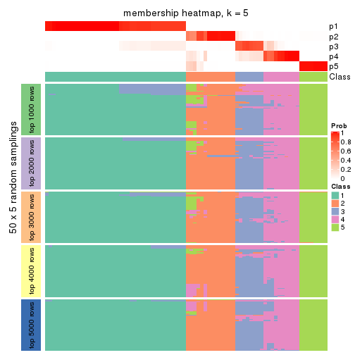
membership_heatmap(res, k = 6)
As soon as we have had the classes for columns, we can look for signatures which are significantly different between classes which can be candidate marks for certain classes. Following are the heatmaps for signatures.
Signature heatmaps where rows are scaled:
get_signatures(res, k = 2)

get_signatures(res, k = 3)
#> Error in mat[ceiling(1:nr/h_ratio), ceiling(1:nc/w_ratio), drop = FALSE]: subscript out of bounds

get_signatures(res, k = 4)
get_signatures(res, k = 5)
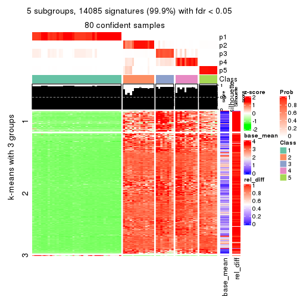
get_signatures(res, k = 6)
Signature heatmaps where rows are not scaled:
get_signatures(res, k = 2, scale_rows = FALSE)

get_signatures(res, k = 3, scale_rows = FALSE)
get_signatures(res, k = 4, scale_rows = FALSE)
get_signatures(res, k = 5, scale_rows = FALSE)
get_signatures(res, k = 6, scale_rows = FALSE)
Compare the overlap of signatures from different k:
compare_signatures(res)
get_signature() returns a data frame invisibly. TO get the list of signatures, the function
call should be assigned to a variable explicitly. In following code, if plot argument is set
to FALSE, no heatmap is plotted while only the differential analysis is performed.
# code only for demonstration
tb = get_signature(res, k = ..., plot = FALSE)
An example of the output of tb is:
#> which_row fdr mean_1 mean_2 scaled_mean_1 scaled_mean_2 km
#> 1 38 0.042760348 8.373488 9.131774 -0.5533452 0.5164555 1
#> 2 40 0.018707592 7.106213 8.469186 -0.6173731 0.5762149 1
#> 3 55 0.019134737 10.221463 11.207825 -0.6159697 0.5749050 1
#> 4 59 0.006059896 5.921854 7.869574 -0.6899429 0.6439467 1
#> 5 60 0.018055526 8.928898 10.211722 -0.6204761 0.5791110 1
#> 6 98 0.009384629 15.714769 14.887706 0.6635654 -0.6193277 2
...
The columns in tb are:
which_row: row indices corresponding to the input matrix.fdr: FDR for the differential test. mean_x: The mean value in group x.scaled_mean_x: The mean value in group x after rows are scaled.km: Row groups if k-means clustering is applied to rows.UMAP plot which shows how samples are separated.
dimension_reduction(res, k = 2, method = "UMAP")

dimension_reduction(res, k = 3, method = "UMAP")
dimension_reduction(res, k = 4, method = "UMAP")
dimension_reduction(res, k = 5, method = "UMAP")
dimension_reduction(res, k = 6, method = "UMAP")
Following heatmap shows how subgroups are split when increasing k:
collect_classes(res)
If matrix rows can be associated to genes, consider to use functional_enrichment(res,
...) to perform function enrichment for the signature genes. See this vignette for more detailed explanations.
The object with results only for a single top-value method and a single partition method can be extracted as:
res = res_list["CV", "pam"]
# you can also extract it by
# res = res_list["CV:pam"]
A summary of res and all the functions that can be applied to it:
res
#> A 'ConsensusPartition' object with k = 2, 3, 4, 5, 6.
#> On a matrix with 14104 rows and 80 columns.
#> Top rows (1000, 2000, 3000, 4000, 5000) are extracted by 'CV' method.
#> Subgroups are detected by 'pam' method.
#> Performed in total 1250 partitions by row resampling.
#> Best k for subgroups seems to be 5.
#>
#> Following methods can be applied to this 'ConsensusPartition' object:
#> [1] "cola_report" "collect_classes" "collect_plots"
#> [4] "collect_stats" "colnames" "compare_signatures"
#> [7] "consensus_heatmap" "dimension_reduction" "functional_enrichment"
#> [10] "get_anno_col" "get_anno" "get_classes"
#> [13] "get_consensus" "get_matrix" "get_membership"
#> [16] "get_param" "get_signatures" "get_stats"
#> [19] "is_best_k" "is_stable_k" "membership_heatmap"
#> [22] "ncol" "nrow" "plot_ecdf"
#> [25] "rownames" "select_partition_number" "show"
#> [28] "suggest_best_k" "test_to_known_factors"
collect_plots() function collects all the plots made from res for all k (number of partitions)
into one single page to provide an easy and fast comparison between different k.
collect_plots(res)
The plots are:
k and the heatmap of
predicted classes for each k.k.k.k.All the plots in panels can be made by individual functions and they are plotted later in this section.
select_partition_number() produces several plots showing different
statistics for choosing “optimized” k. There are following statistics:
k;k, the area increased is defined as \(A_k - A_{k-1}\).The detailed explanations of these statistics can be found in the cola vignette.
Generally speaking, lower PAC score, higher mean silhouette score or higher
concordance corresponds to better partition. Rand index and Jaccard index
measure how similar the current partition is compared to partition with k-1.
If they are too similar, we won't accept k is better than k-1.
select_partition_number(res)
The numeric values for all these statistics can be obtained by get_stats().
get_stats(res)
#> k 1-PAC mean_silhouette concordance area_increased Rand Jaccard
#> 2 2 1.000 1.000 1.000 0.5068 0.494 0.494
#> 3 3 0.928 0.926 0.956 0.2027 0.899 0.796
#> 4 4 0.943 0.902 0.954 0.0920 0.943 0.855
#> 5 5 0.956 0.911 0.952 0.0422 0.937 0.820
#> 6 6 0.874 0.854 0.913 0.0355 0.983 0.945
suggest_best_k() suggests the best \(k\) based on these statistics. The rules are as follows:
suggest_best_k(res)
#> [1] 5
#> attr(,"optional")
#> [1] 2 3 4
There is also optional best \(k\) = 2 3 4 that is worth to check.
Following shows the table of the partitions (You need to click the show/hide
code output link to see it). The membership matrix (columns with name p*)
is inferred by
clue::cl_consensus()
function with the SE method. Basically the value in the membership matrix
represents the probability to belong to a certain group. The finall class
label for an item is determined with the group with highest probability it
belongs to.
In get_classes() function, the entropy is calculated from the membership
matrix and the silhouette score is calculated from the consensus matrix.
cbind(get_classes(res, k = 2), get_membership(res, k = 2))
#> class entropy silhouette p1 p2
#> SRR830972 2 0 1 0 1
#> SRR830973 2 0 1 0 1
#> SRR830974 2 0 1 0 1
#> SRR830975 2 0 1 0 1
#> SRR830976 2 0 1 0 1
#> SRR830977 2 0 1 0 1
#> SRR830978 2 0 1 0 1
#> SRR830979 2 0 1 0 1
#> SRR830980 2 0 1 0 1
#> SRR830982 2 0 1 0 1
#> SRR830981 2 0 1 0 1
#> SRR830983 2 0 1 0 1
#> SRR831010 1 0 1 1 0
#> SRR831011 1 0 1 1 0
#> SRR831012 1 0 1 1 0
#> SRR831013 1 0 1 1 0
#> SRR831014 1 0 1 1 0
#> SRR831015 1 0 1 1 0
#> SRR831016 1 0 1 1 0
#> SRR831017 1 0 1 1 0
#> SRR831018 1 0 1 1 0
#> SRR831019 1 0 1 1 0
#> SRR831020 1 0 1 1 0
#> SRR831021 1 0 1 1 0
#> SRR831022 1 0 1 1 0
#> SRR831023 1 0 1 1 0
#> SRR831024 1 0 1 1 0
#> SRR831025 1 0 1 1 0
#> SRR831026 1 0 1 1 0
#> SRR831027 1 0 1 1 0
#> SRR831028 1 0 1 1 0
#> SRR831029 1 0 1 1 0
#> SRR831030 1 0 1 1 0
#> SRR831031 1 0 1 1 0
#> SRR831032 1 0 1 1 0
#> SRR831033 1 0 1 1 0
#> SRR831034 1 0 1 1 0
#> SRR831035 1 0 1 1 0
#> SRR831036 1 0 1 1 0
#> SRR831037 1 0 1 1 0
#> SRR831038 1 0 1 1 0
#> SRR831039 1 0 1 1 0
#> SRR831040 1 0 1 1 0
#> SRR831041 1 0 1 1 0
#> SRR831042 1 0 1 1 0
#> SRR831043 1 0 1 1 0
#> SRR831044 1 0 1 1 0
#> SRR830965 2 0 1 0 1
#> SRR830966 2 0 1 0 1
#> SRR830967 2 0 1 0 1
#> SRR830968 2 0 1 0 1
#> SRR830969 2 0 1 0 1
#> SRR830970 2 0 1 0 1
#> SRR830971 2 0 1 0 1
#> SRR830984 2 0 1 0 1
#> SRR830985 2 0 1 0 1
#> SRR830986 2 0 1 0 1
#> SRR830987 2 0 1 0 1
#> SRR830988 2 0 1 0 1
#> SRR830989 2 0 1 0 1
#> SRR830990 2 0 1 0 1
#> SRR830991 2 0 1 0 1
#> SRR830992 2 0 1 0 1
#> SRR830993 2 0 1 0 1
#> SRR830994 2 0 1 0 1
#> SRR830995 2 0 1 0 1
#> SRR830996 2 0 1 0 1
#> SRR830997 2 0 1 0 1
#> SRR830998 2 0 1 0 1
#> SRR830999 2 0 1 0 1
#> SRR831000 2 0 1 0 1
#> SRR831001 2 0 1 0 1
#> SRR831002 2 0 1 0 1
#> SRR831003 2 0 1 0 1
#> SRR831004 2 0 1 0 1
#> SRR831005 1 0 1 1 0
#> SRR831006 1 0 1 1 0
#> SRR831007 1 0 1 1 0
#> SRR831008 1 0 1 1 0
#> SRR831009 1 0 1 1 0
cbind(get_classes(res, k = 3), get_membership(res, k = 3))
#> class entropy silhouette p1 p2 p3
#> SRR830972 2 0.0000 0.8926 0 1.000 0.000
#> SRR830973 2 0.2711 0.9098 0 0.912 0.088
#> SRR830974 2 0.2448 0.9126 0 0.924 0.076
#> SRR830975 2 0.2448 0.9126 0 0.924 0.076
#> SRR830976 2 0.2448 0.9126 0 0.924 0.076
#> SRR830977 2 0.4346 0.8496 0 0.816 0.184
#> SRR830978 2 0.6252 0.3404 0 0.556 0.444
#> SRR830979 3 0.0747 0.9194 0 0.016 0.984
#> SRR830980 2 0.2165 0.9120 0 0.936 0.064
#> SRR830982 2 0.2448 0.9126 0 0.924 0.076
#> SRR830981 2 0.3267 0.8990 0 0.884 0.116
#> SRR830983 2 0.2448 0.9126 0 0.924 0.076
#> SRR831010 1 0.0000 1.0000 1 0.000 0.000
#> SRR831011 1 0.0000 1.0000 1 0.000 0.000
#> SRR831012 1 0.0000 1.0000 1 0.000 0.000
#> SRR831013 1 0.0000 1.0000 1 0.000 0.000
#> SRR831014 1 0.0000 1.0000 1 0.000 0.000
#> SRR831015 1 0.0000 1.0000 1 0.000 0.000
#> SRR831016 1 0.0000 1.0000 1 0.000 0.000
#> SRR831017 1 0.0000 1.0000 1 0.000 0.000
#> SRR831018 1 0.0000 1.0000 1 0.000 0.000
#> SRR831019 1 0.0000 1.0000 1 0.000 0.000
#> SRR831020 1 0.0000 1.0000 1 0.000 0.000
#> SRR831021 1 0.0000 1.0000 1 0.000 0.000
#> SRR831022 1 0.0000 1.0000 1 0.000 0.000
#> SRR831023 1 0.0000 1.0000 1 0.000 0.000
#> SRR831024 1 0.0000 1.0000 1 0.000 0.000
#> SRR831025 1 0.0000 1.0000 1 0.000 0.000
#> SRR831026 1 0.0000 1.0000 1 0.000 0.000
#> SRR831027 1 0.0000 1.0000 1 0.000 0.000
#> SRR831028 1 0.0000 1.0000 1 0.000 0.000
#> SRR831029 1 0.0000 1.0000 1 0.000 0.000
#> SRR831030 1 0.0000 1.0000 1 0.000 0.000
#> SRR831031 1 0.0000 1.0000 1 0.000 0.000
#> SRR831032 1 0.0000 1.0000 1 0.000 0.000
#> SRR831033 1 0.0000 1.0000 1 0.000 0.000
#> SRR831034 1 0.0000 1.0000 1 0.000 0.000
#> SRR831035 1 0.0000 1.0000 1 0.000 0.000
#> SRR831036 1 0.0000 1.0000 1 0.000 0.000
#> SRR831037 1 0.0000 1.0000 1 0.000 0.000
#> SRR831038 1 0.0000 1.0000 1 0.000 0.000
#> SRR831039 1 0.0000 1.0000 1 0.000 0.000
#> SRR831040 1 0.0000 1.0000 1 0.000 0.000
#> SRR831041 1 0.0000 1.0000 1 0.000 0.000
#> SRR831042 1 0.0000 1.0000 1 0.000 0.000
#> SRR831043 1 0.0000 1.0000 1 0.000 0.000
#> SRR831044 1 0.0000 1.0000 1 0.000 0.000
#> SRR830965 2 0.0000 0.8926 0 1.000 0.000
#> SRR830966 2 0.0000 0.8926 0 1.000 0.000
#> SRR830967 2 0.0424 0.8923 0 0.992 0.008
#> SRR830968 2 0.0000 0.8926 0 1.000 0.000
#> SRR830969 2 0.0000 0.8926 0 1.000 0.000
#> SRR830970 2 0.0000 0.8926 0 1.000 0.000
#> SRR830971 2 0.0000 0.8926 0 1.000 0.000
#> SRR830984 2 0.4399 0.8368 0 0.812 0.188
#> SRR830985 2 0.2711 0.9098 0 0.912 0.088
#> SRR830986 2 0.2448 0.9126 0 0.924 0.076
#> SRR830987 2 0.2448 0.9126 0 0.924 0.076
#> SRR830988 2 0.1964 0.9108 0 0.944 0.056
#> SRR830989 3 0.6286 -0.0314 0 0.464 0.536
#> SRR830990 3 0.0000 0.9243 0 0.000 1.000
#> SRR830991 2 0.4654 0.8196 0 0.792 0.208
#> SRR830992 2 0.5650 0.6685 0 0.688 0.312
#> SRR830993 2 0.4605 0.8142 0 0.796 0.204
#> SRR830994 3 0.1753 0.8988 0 0.048 0.952
#> SRR830995 2 0.4842 0.8013 0 0.776 0.224
#> SRR830996 3 0.0892 0.9197 0 0.020 0.980
#> SRR830997 3 0.0000 0.9243 0 0.000 1.000
#> SRR830998 3 0.0000 0.9243 0 0.000 1.000
#> SRR830999 2 0.4062 0.8371 0 0.836 0.164
#> SRR831000 3 0.2878 0.8523 0 0.096 0.904
#> SRR831001 3 0.0000 0.9243 0 0.000 1.000
#> SRR831002 3 0.0592 0.9218 0 0.012 0.988
#> SRR831003 3 0.0000 0.9243 0 0.000 1.000
#> SRR831004 2 0.2448 0.9130 0 0.924 0.076
#> SRR831005 1 0.0000 1.0000 1 0.000 0.000
#> SRR831006 1 0.0000 1.0000 1 0.000 0.000
#> SRR831007 1 0.0000 1.0000 1 0.000 0.000
#> SRR831008 1 0.0000 1.0000 1 0.000 0.000
#> SRR831009 1 0.0000 1.0000 1 0.000 0.000
cbind(get_classes(res, k = 4), get_membership(res, k = 4))
#> class entropy silhouette p1 p2 p3 p4
#> SRR830972 4 0.0000 0.9307 0 0.000 0.000 1.000
#> SRR830973 2 0.0707 0.8689 0 0.980 0.020 0.000
#> SRR830974 2 0.0592 0.8794 0 0.984 0.016 0.000
#> SRR830975 2 0.0592 0.8794 0 0.984 0.016 0.000
#> SRR830976 2 0.0592 0.8794 0 0.984 0.016 0.000
#> SRR830977 2 0.2469 0.8309 0 0.892 0.108 0.000
#> SRR830978 2 0.4855 0.3687 0 0.600 0.400 0.000
#> SRR830979 3 0.1022 0.8930 0 0.032 0.968 0.000
#> SRR830980 2 0.2867 0.8121 0 0.884 0.012 0.104
#> SRR830982 2 0.0592 0.8794 0 0.984 0.016 0.000
#> SRR830981 2 0.1474 0.8613 0 0.948 0.052 0.000
#> SRR830983 2 0.0592 0.8794 0 0.984 0.016 0.000
#> SRR831010 1 0.0000 1.0000 1 0.000 0.000 0.000
#> SRR831011 1 0.0000 1.0000 1 0.000 0.000 0.000
#> SRR831012 1 0.0000 1.0000 1 0.000 0.000 0.000
#> SRR831013 1 0.0000 1.0000 1 0.000 0.000 0.000
#> SRR831014 1 0.0000 1.0000 1 0.000 0.000 0.000
#> SRR831015 1 0.0000 1.0000 1 0.000 0.000 0.000
#> SRR831016 1 0.0000 1.0000 1 0.000 0.000 0.000
#> SRR831017 1 0.0000 1.0000 1 0.000 0.000 0.000
#> SRR831018 1 0.0000 1.0000 1 0.000 0.000 0.000
#> SRR831019 1 0.0000 1.0000 1 0.000 0.000 0.000
#> SRR831020 1 0.0000 1.0000 1 0.000 0.000 0.000
#> SRR831021 1 0.0000 1.0000 1 0.000 0.000 0.000
#> SRR831022 1 0.0000 1.0000 1 0.000 0.000 0.000
#> SRR831023 1 0.0000 1.0000 1 0.000 0.000 0.000
#> SRR831024 1 0.0000 1.0000 1 0.000 0.000 0.000
#> SRR831025 1 0.0000 1.0000 1 0.000 0.000 0.000
#> SRR831026 1 0.0000 1.0000 1 0.000 0.000 0.000
#> SRR831027 1 0.0000 1.0000 1 0.000 0.000 0.000
#> SRR831028 1 0.0000 1.0000 1 0.000 0.000 0.000
#> SRR831029 1 0.0000 1.0000 1 0.000 0.000 0.000
#> SRR831030 1 0.0000 1.0000 1 0.000 0.000 0.000
#> SRR831031 1 0.0000 1.0000 1 0.000 0.000 0.000
#> SRR831032 1 0.0000 1.0000 1 0.000 0.000 0.000
#> SRR831033 1 0.0000 1.0000 1 0.000 0.000 0.000
#> SRR831034 1 0.0000 1.0000 1 0.000 0.000 0.000
#> SRR831035 1 0.0000 1.0000 1 0.000 0.000 0.000
#> SRR831036 1 0.0000 1.0000 1 0.000 0.000 0.000
#> SRR831037 1 0.0000 1.0000 1 0.000 0.000 0.000
#> SRR831038 1 0.0000 1.0000 1 0.000 0.000 0.000
#> SRR831039 1 0.0000 1.0000 1 0.000 0.000 0.000
#> SRR831040 1 0.0000 1.0000 1 0.000 0.000 0.000
#> SRR831041 1 0.0000 1.0000 1 0.000 0.000 0.000
#> SRR831042 1 0.0000 1.0000 1 0.000 0.000 0.000
#> SRR831043 1 0.0000 1.0000 1 0.000 0.000 0.000
#> SRR831044 1 0.0000 1.0000 1 0.000 0.000 0.000
#> SRR830965 4 0.0000 0.9307 0 0.000 0.000 1.000
#> SRR830966 4 0.0000 0.9307 0 0.000 0.000 1.000
#> SRR830967 4 0.0000 0.9307 0 0.000 0.000 1.000
#> SRR830968 4 0.0000 0.9307 0 0.000 0.000 1.000
#> SRR830969 4 0.2149 0.8568 0 0.088 0.000 0.912
#> SRR830970 4 0.0000 0.9307 0 0.000 0.000 1.000
#> SRR830971 4 0.0000 0.9307 0 0.000 0.000 1.000
#> SRR830984 2 0.2704 0.8078 0 0.876 0.124 0.000
#> SRR830985 2 0.0707 0.8689 0 0.980 0.020 0.000
#> SRR830986 2 0.0592 0.8794 0 0.984 0.016 0.000
#> SRR830987 2 0.0592 0.8794 0 0.984 0.016 0.000
#> SRR830988 2 0.0672 0.8779 0 0.984 0.008 0.008
#> SRR830989 3 0.7475 -0.0383 0 0.404 0.420 0.176
#> SRR830990 3 0.0336 0.9095 0 0.008 0.992 0.000
#> SRR830991 2 0.7167 0.1277 0 0.468 0.136 0.396
#> SRR830992 2 0.4134 0.6598 0 0.740 0.260 0.000
#> SRR830993 2 0.3024 0.7859 0 0.852 0.148 0.000
#> SRR830994 3 0.1637 0.8841 0 0.060 0.940 0.000
#> SRR830995 2 0.6509 0.5485 0 0.632 0.140 0.228
#> SRR830996 3 0.0921 0.9048 0 0.028 0.972 0.000
#> SRR830997 3 0.0592 0.8949 0 0.016 0.984 0.000
#> SRR830998 3 0.0188 0.9080 0 0.004 0.996 0.000
#> SRR830999 4 0.6592 0.3954 0 0.284 0.116 0.600
#> SRR831000 3 0.2469 0.8424 0 0.108 0.892 0.000
#> SRR831001 3 0.0336 0.9095 0 0.008 0.992 0.000
#> SRR831002 3 0.0707 0.9062 0 0.020 0.980 0.000
#> SRR831003 3 0.0336 0.9095 0 0.008 0.992 0.000
#> SRR831004 2 0.0804 0.8782 0 0.980 0.012 0.008
#> SRR831005 1 0.0000 1.0000 1 0.000 0.000 0.000
#> SRR831006 1 0.0000 1.0000 1 0.000 0.000 0.000
#> SRR831007 1 0.0000 1.0000 1 0.000 0.000 0.000
#> SRR831008 1 0.0000 1.0000 1 0.000 0.000 0.000
#> SRR831009 1 0.0000 1.0000 1 0.000 0.000 0.000
cbind(get_classes(res, k = 5), get_membership(res, k = 5))
#> class entropy silhouette p1 p2 p3 p4 p5
#> SRR830972 5 0.0000 0.979 0.000 0.000 0.000 0.000 1.000
#> SRR830973 3 0.3534 0.678 0.000 0.256 0.744 0.000 0.000
#> SRR830974 2 0.0000 0.984 0.000 1.000 0.000 0.000 0.000
#> SRR830975 2 0.0000 0.984 0.000 1.000 0.000 0.000 0.000
#> SRR830976 2 0.0000 0.984 0.000 1.000 0.000 0.000 0.000
#> SRR830977 3 0.1331 0.837 0.000 0.008 0.952 0.040 0.000
#> SRR830978 3 0.1106 0.843 0.000 0.012 0.964 0.024 0.000
#> SRR830979 3 0.0162 0.835 0.000 0.000 0.996 0.004 0.000
#> SRR830980 2 0.1952 0.884 0.000 0.912 0.000 0.004 0.084
#> SRR830982 2 0.0000 0.984 0.000 1.000 0.000 0.000 0.000
#> SRR830981 3 0.1638 0.844 0.000 0.064 0.932 0.004 0.000
#> SRR830983 2 0.0000 0.984 0.000 1.000 0.000 0.000 0.000
#> SRR831010 1 0.0000 0.998 1.000 0.000 0.000 0.000 0.000
#> SRR831011 1 0.0000 0.998 1.000 0.000 0.000 0.000 0.000
#> SRR831012 1 0.0000 0.998 1.000 0.000 0.000 0.000 0.000
#> SRR831013 1 0.0162 0.998 0.996 0.000 0.004 0.000 0.000
#> SRR831014 1 0.0162 0.998 0.996 0.000 0.004 0.000 0.000
#> SRR831015 1 0.0162 0.998 0.996 0.000 0.004 0.000 0.000
#> SRR831016 1 0.0162 0.998 0.996 0.000 0.004 0.000 0.000
#> SRR831017 1 0.0162 0.998 0.996 0.000 0.004 0.000 0.000
#> SRR831018 1 0.0000 0.998 1.000 0.000 0.000 0.000 0.000
#> SRR831019 1 0.0162 0.998 0.996 0.000 0.004 0.000 0.000
#> SRR831020 1 0.0162 0.998 0.996 0.000 0.004 0.000 0.000
#> SRR831021 1 0.0000 0.998 1.000 0.000 0.000 0.000 0.000
#> SRR831022 1 0.0000 0.998 1.000 0.000 0.000 0.000 0.000
#> SRR831023 1 0.0162 0.998 0.996 0.000 0.004 0.000 0.000
#> SRR831024 1 0.0162 0.998 0.996 0.000 0.004 0.000 0.000
#> SRR831025 1 0.0162 0.998 0.996 0.000 0.004 0.000 0.000
#> SRR831026 1 0.0162 0.998 0.996 0.000 0.004 0.000 0.000
#> SRR831027 1 0.0162 0.998 0.996 0.000 0.004 0.000 0.000
#> SRR831028 1 0.0162 0.998 0.996 0.000 0.004 0.000 0.000
#> SRR831029 1 0.0000 0.998 1.000 0.000 0.000 0.000 0.000
#> SRR831030 1 0.0000 0.998 1.000 0.000 0.000 0.000 0.000
#> SRR831031 1 0.0000 0.998 1.000 0.000 0.000 0.000 0.000
#> SRR831032 1 0.0000 0.998 1.000 0.000 0.000 0.000 0.000
#> SRR831033 1 0.0000 0.998 1.000 0.000 0.000 0.000 0.000
#> SRR831034 1 0.0162 0.998 0.996 0.000 0.004 0.000 0.000
#> SRR831035 1 0.0162 0.998 0.996 0.000 0.004 0.000 0.000
#> SRR831036 1 0.0162 0.998 0.996 0.000 0.004 0.000 0.000
#> SRR831037 1 0.0162 0.998 0.996 0.000 0.004 0.000 0.000
#> SRR831038 1 0.0000 0.998 1.000 0.000 0.000 0.000 0.000
#> SRR831039 1 0.0000 0.998 1.000 0.000 0.000 0.000 0.000
#> SRR831040 1 0.0000 0.998 1.000 0.000 0.000 0.000 0.000
#> SRR831041 1 0.0000 0.998 1.000 0.000 0.000 0.000 0.000
#> SRR831042 1 0.0000 0.998 1.000 0.000 0.000 0.000 0.000
#> SRR831043 1 0.0000 0.998 1.000 0.000 0.000 0.000 0.000
#> SRR831044 1 0.0000 0.998 1.000 0.000 0.000 0.000 0.000
#> SRR830965 5 0.0000 0.979 0.000 0.000 0.000 0.000 1.000
#> SRR830966 5 0.0000 0.979 0.000 0.000 0.000 0.000 1.000
#> SRR830967 5 0.0000 0.979 0.000 0.000 0.000 0.000 1.000
#> SRR830968 5 0.0000 0.979 0.000 0.000 0.000 0.000 1.000
#> SRR830969 5 0.3090 0.841 0.000 0.104 0.040 0.000 0.856
#> SRR830970 5 0.0000 0.979 0.000 0.000 0.000 0.000 1.000
#> SRR830971 5 0.0000 0.979 0.000 0.000 0.000 0.000 1.000
#> SRR830984 3 0.0963 0.842 0.000 0.036 0.964 0.000 0.000
#> SRR830985 3 0.1851 0.836 0.000 0.088 0.912 0.000 0.000
#> SRR830986 2 0.0000 0.984 0.000 1.000 0.000 0.000 0.000
#> SRR830987 2 0.0000 0.984 0.000 1.000 0.000 0.000 0.000
#> SRR830988 2 0.0000 0.984 0.000 1.000 0.000 0.000 0.000
#> SRR830989 4 0.6251 0.647 0.000 0.184 0.048 0.640 0.128
#> SRR830990 4 0.2230 0.741 0.000 0.000 0.116 0.884 0.000
#> SRR830991 4 0.5950 0.593 0.000 0.220 0.000 0.592 0.188
#> SRR830992 4 0.4150 0.478 0.000 0.388 0.000 0.612 0.000
#> SRR830993 3 0.4620 0.505 0.000 0.320 0.652 0.028 0.000
#> SRR830994 4 0.0703 0.784 0.000 0.000 0.024 0.976 0.000
#> SRR830995 4 0.5641 0.479 0.000 0.356 0.000 0.556 0.088
#> SRR830996 4 0.0000 0.792 0.000 0.000 0.000 1.000 0.000
#> SRR830997 3 0.3999 0.473 0.000 0.000 0.656 0.344 0.000
#> SRR830998 4 0.2329 0.714 0.000 0.000 0.124 0.876 0.000
#> SRR830999 4 0.5707 0.422 0.000 0.092 0.000 0.544 0.364
#> SRR831000 4 0.0000 0.792 0.000 0.000 0.000 1.000 0.000
#> SRR831001 4 0.0000 0.792 0.000 0.000 0.000 1.000 0.000
#> SRR831002 4 0.0000 0.792 0.000 0.000 0.000 1.000 0.000
#> SRR831003 4 0.0000 0.792 0.000 0.000 0.000 1.000 0.000
#> SRR831004 2 0.0771 0.963 0.000 0.976 0.000 0.020 0.004
#> SRR831005 1 0.0000 0.998 1.000 0.000 0.000 0.000 0.000
#> SRR831006 1 0.0000 0.998 1.000 0.000 0.000 0.000 0.000
#> SRR831007 1 0.0000 0.998 1.000 0.000 0.000 0.000 0.000
#> SRR831008 1 0.0000 0.998 1.000 0.000 0.000 0.000 0.000
#> SRR831009 1 0.0000 0.998 1.000 0.000 0.000 0.000 0.000
cbind(get_classes(res, k = 6), get_membership(res, k = 6))
#> class entropy silhouette p1 p2 p3 p4 p5 p6
#> SRR830972 5 0.1267 0.910 0.000 0.000 0.000 0.000 0.940 0.060
#> SRR830973 3 0.2697 0.710 0.000 0.188 0.812 0.000 0.000 0.000
#> SRR830974 2 0.0000 0.984 0.000 1.000 0.000 0.000 0.000 0.000
#> SRR830975 2 0.0000 0.984 0.000 1.000 0.000 0.000 0.000 0.000
#> SRR830976 2 0.0000 0.984 0.000 1.000 0.000 0.000 0.000 0.000
#> SRR830977 3 0.0146 0.869 0.000 0.000 0.996 0.000 0.000 0.004
#> SRR830978 3 0.0000 0.869 0.000 0.000 1.000 0.000 0.000 0.000
#> SRR830979 3 0.0146 0.869 0.000 0.000 0.996 0.004 0.000 0.000
#> SRR830980 2 0.2000 0.899 0.000 0.916 0.000 0.004 0.032 0.048
#> SRR830982 2 0.0000 0.984 0.000 1.000 0.000 0.000 0.000 0.000
#> SRR830981 3 0.0363 0.871 0.000 0.012 0.988 0.000 0.000 0.000
#> SRR830983 2 0.0000 0.984 0.000 1.000 0.000 0.000 0.000 0.000
#> SRR831010 1 0.0000 0.950 1.000 0.000 0.000 0.000 0.000 0.000
#> SRR831011 1 0.0000 0.950 1.000 0.000 0.000 0.000 0.000 0.000
#> SRR831012 1 0.0000 0.950 1.000 0.000 0.000 0.000 0.000 0.000
#> SRR831013 1 0.1913 0.946 0.908 0.000 0.000 0.012 0.000 0.080
#> SRR831014 1 0.1913 0.946 0.908 0.000 0.000 0.012 0.000 0.080
#> SRR831015 1 0.1913 0.946 0.908 0.000 0.000 0.012 0.000 0.080
#> SRR831016 1 0.2282 0.942 0.888 0.000 0.000 0.024 0.000 0.088
#> SRR831017 1 0.2282 0.942 0.888 0.000 0.000 0.024 0.000 0.088
#> SRR831018 1 0.0000 0.950 1.000 0.000 0.000 0.000 0.000 0.000
#> SRR831019 1 0.2282 0.942 0.888 0.000 0.000 0.024 0.000 0.088
#> SRR831020 1 0.2282 0.942 0.888 0.000 0.000 0.024 0.000 0.088
#> SRR831021 1 0.0000 0.950 1.000 0.000 0.000 0.000 0.000 0.000
#> SRR831022 1 0.1584 0.949 0.928 0.000 0.000 0.008 0.000 0.064
#> SRR831023 1 0.2282 0.942 0.888 0.000 0.000 0.024 0.000 0.088
#> SRR831024 1 0.1913 0.946 0.908 0.000 0.000 0.012 0.000 0.080
#> SRR831025 1 0.2282 0.942 0.888 0.000 0.000 0.024 0.000 0.088
#> SRR831026 1 0.2282 0.942 0.888 0.000 0.000 0.024 0.000 0.088
#> SRR831027 1 0.2230 0.943 0.892 0.000 0.000 0.024 0.000 0.084
#> SRR831028 1 0.2282 0.942 0.888 0.000 0.000 0.024 0.000 0.088
#> SRR831029 1 0.0000 0.950 1.000 0.000 0.000 0.000 0.000 0.000
#> SRR831030 1 0.0000 0.950 1.000 0.000 0.000 0.000 0.000 0.000
#> SRR831031 1 0.1584 0.949 0.928 0.000 0.000 0.008 0.000 0.064
#> SRR831032 1 0.0000 0.950 1.000 0.000 0.000 0.000 0.000 0.000
#> SRR831033 1 0.0000 0.950 1.000 0.000 0.000 0.000 0.000 0.000
#> SRR831034 1 0.2282 0.942 0.888 0.000 0.000 0.024 0.000 0.088
#> SRR831035 1 0.2282 0.942 0.888 0.000 0.000 0.024 0.000 0.088
#> SRR831036 1 0.2282 0.942 0.888 0.000 0.000 0.024 0.000 0.088
#> SRR831037 1 0.2282 0.942 0.888 0.000 0.000 0.024 0.000 0.088
#> SRR831038 1 0.1584 0.949 0.928 0.000 0.000 0.008 0.000 0.064
#> SRR831039 1 0.0000 0.950 1.000 0.000 0.000 0.000 0.000 0.000
#> SRR831040 1 0.0000 0.950 1.000 0.000 0.000 0.000 0.000 0.000
#> SRR831041 1 0.0000 0.950 1.000 0.000 0.000 0.000 0.000 0.000
#> SRR831042 1 0.0000 0.950 1.000 0.000 0.000 0.000 0.000 0.000
#> SRR831043 1 0.0000 0.950 1.000 0.000 0.000 0.000 0.000 0.000
#> SRR831044 1 0.0000 0.950 1.000 0.000 0.000 0.000 0.000 0.000
#> SRR830965 5 0.1141 0.913 0.000 0.000 0.000 0.000 0.948 0.052
#> SRR830966 5 0.0000 0.919 0.000 0.000 0.000 0.000 1.000 0.000
#> SRR830967 5 0.0000 0.919 0.000 0.000 0.000 0.000 1.000 0.000
#> SRR830968 5 0.0000 0.919 0.000 0.000 0.000 0.000 1.000 0.000
#> SRR830969 5 0.5071 0.511 0.000 0.016 0.300 0.000 0.616 0.068
#> SRR830970 5 0.1267 0.910 0.000 0.000 0.000 0.000 0.940 0.060
#> SRR830971 5 0.0000 0.919 0.000 0.000 0.000 0.000 1.000 0.000
#> SRR830984 3 0.1088 0.858 0.000 0.016 0.960 0.024 0.000 0.000
#> SRR830985 3 0.0547 0.867 0.000 0.020 0.980 0.000 0.000 0.000
#> SRR830986 2 0.0000 0.984 0.000 1.000 0.000 0.000 0.000 0.000
#> SRR830987 2 0.0000 0.984 0.000 1.000 0.000 0.000 0.000 0.000
#> SRR830988 2 0.0000 0.984 0.000 1.000 0.000 0.000 0.000 0.000
#> SRR830989 4 0.5650 0.114 0.000 0.040 0.008 0.460 0.040 0.452
#> SRR830990 4 0.3377 0.559 0.000 0.000 0.028 0.784 0.000 0.188
#> SRR830991 6 0.2384 0.697 0.000 0.048 0.000 0.000 0.064 0.888
#> SRR830992 6 0.3352 0.638 0.000 0.176 0.000 0.032 0.000 0.792
#> SRR830993 3 0.6317 0.199 0.000 0.248 0.444 0.292 0.000 0.016
#> SRR830994 6 0.3593 0.671 0.000 0.000 0.024 0.228 0.000 0.748
#> SRR830995 6 0.3563 0.683 0.000 0.092 0.000 0.000 0.108 0.800
#> SRR830996 6 0.2823 0.690 0.000 0.000 0.000 0.204 0.000 0.796
#> SRR830997 4 0.1957 0.581 0.000 0.000 0.112 0.888 0.000 0.000
#> SRR830998 4 0.1297 0.609 0.000 0.000 0.012 0.948 0.000 0.040
#> SRR830999 6 0.2703 0.605 0.000 0.004 0.000 0.000 0.172 0.824
#> SRR831000 6 0.2527 0.710 0.000 0.000 0.000 0.168 0.000 0.832
#> SRR831001 4 0.3578 0.345 0.000 0.000 0.000 0.660 0.000 0.340
#> SRR831002 4 0.3672 0.309 0.000 0.000 0.000 0.632 0.000 0.368
#> SRR831003 6 0.3578 0.477 0.000 0.000 0.000 0.340 0.000 0.660
#> SRR831004 2 0.1082 0.947 0.000 0.956 0.000 0.000 0.004 0.040
#> SRR831005 1 0.0000 0.950 1.000 0.000 0.000 0.000 0.000 0.000
#> SRR831006 1 0.0000 0.950 1.000 0.000 0.000 0.000 0.000 0.000
#> SRR831007 1 0.0000 0.950 1.000 0.000 0.000 0.000 0.000 0.000
#> SRR831008 1 0.0622 0.947 0.980 0.000 0.000 0.012 0.000 0.008
#> SRR831009 1 0.0000 0.950 1.000 0.000 0.000 0.000 0.000 0.000
Heatmaps for the consensus matrix. It visualizes the probability of two samples to be in a same group.
consensus_heatmap(res, k = 2)

consensus_heatmap(res, k = 3)
consensus_heatmap(res, k = 4)
consensus_heatmap(res, k = 5)
consensus_heatmap(res, k = 6)
Heatmaps for the membership of samples in all partitions to see how consistent they are:
membership_heatmap(res, k = 2)

membership_heatmap(res, k = 3)
membership_heatmap(res, k = 4)
membership_heatmap(res, k = 5)
membership_heatmap(res, k = 6)
As soon as we have had the classes for columns, we can look for signatures which are significantly different between classes which can be candidate marks for certain classes. Following are the heatmaps for signatures.
Signature heatmaps where rows are scaled:
get_signatures(res, k = 2)

get_signatures(res, k = 3)
get_signatures(res, k = 4)
#> Error in mat[ceiling(1:nr/h_ratio), ceiling(1:nc/w_ratio), drop = FALSE]: subscript out of bounds

get_signatures(res, k = 5)
get_signatures(res, k = 6)
Signature heatmaps where rows are not scaled:
get_signatures(res, k = 2, scale_rows = FALSE)

get_signatures(res, k = 3, scale_rows = FALSE)
get_signatures(res, k = 4, scale_rows = FALSE)
get_signatures(res, k = 5, scale_rows = FALSE)
get_signatures(res, k = 6, scale_rows = FALSE)
Compare the overlap of signatures from different k:
compare_signatures(res)
get_signature() returns a data frame invisibly. TO get the list of signatures, the function
call should be assigned to a variable explicitly. In following code, if plot argument is set
to FALSE, no heatmap is plotted while only the differential analysis is performed.
# code only for demonstration
tb = get_signature(res, k = ..., plot = FALSE)
An example of the output of tb is:
#> which_row fdr mean_1 mean_2 scaled_mean_1 scaled_mean_2 km
#> 1 38 0.042760348 8.373488 9.131774 -0.5533452 0.5164555 1
#> 2 40 0.018707592 7.106213 8.469186 -0.6173731 0.5762149 1
#> 3 55 0.019134737 10.221463 11.207825 -0.6159697 0.5749050 1
#> 4 59 0.006059896 5.921854 7.869574 -0.6899429 0.6439467 1
#> 5 60 0.018055526 8.928898 10.211722 -0.6204761 0.5791110 1
#> 6 98 0.009384629 15.714769 14.887706 0.6635654 -0.6193277 2
...
The columns in tb are:
which_row: row indices corresponding to the input matrix.fdr: FDR for the differential test. mean_x: The mean value in group x.scaled_mean_x: The mean value in group x after rows are scaled.km: Row groups if k-means clustering is applied to rows.UMAP plot which shows how samples are separated.
dimension_reduction(res, k = 2, method = "UMAP")

dimension_reduction(res, k = 3, method = "UMAP")
dimension_reduction(res, k = 4, method = "UMAP")
dimension_reduction(res, k = 5, method = "UMAP")
dimension_reduction(res, k = 6, method = "UMAP")
Following heatmap shows how subgroups are split when increasing k:
collect_classes(res)

If matrix rows can be associated to genes, consider to use functional_enrichment(res,
...) to perform function enrichment for the signature genes. See this vignette for more detailed explanations.
The object with results only for a single top-value method and a single partition method can be extracted as:
res = res_list["CV", "mclust"]
# you can also extract it by
# res = res_list["CV:mclust"]
A summary of res and all the functions that can be applied to it:
res
#> A 'ConsensusPartition' object with k = 2, 3, 4, 5, 6.
#> On a matrix with 14104 rows and 80 columns.
#> Top rows (1000, 2000, 3000, 4000, 5000) are extracted by 'CV' method.
#> Subgroups are detected by 'mclust' method.
#> Performed in total 1250 partitions by row resampling.
#> Best k for subgroups seems to be 6.
#>
#> Following methods can be applied to this 'ConsensusPartition' object:
#> [1] "cola_report" "collect_classes" "collect_plots"
#> [4] "collect_stats" "colnames" "compare_signatures"
#> [7] "consensus_heatmap" "dimension_reduction" "functional_enrichment"
#> [10] "get_anno_col" "get_anno" "get_classes"
#> [13] "get_consensus" "get_matrix" "get_membership"
#> [16] "get_param" "get_signatures" "get_stats"
#> [19] "is_best_k" "is_stable_k" "membership_heatmap"
#> [22] "ncol" "nrow" "plot_ecdf"
#> [25] "rownames" "select_partition_number" "show"
#> [28] "suggest_best_k" "test_to_known_factors"
collect_plots() function collects all the plots made from res for all k (number of partitions)
into one single page to provide an easy and fast comparison between different k.
collect_plots(res)
The plots are:
k and the heatmap of
predicted classes for each k.k.k.k.All the plots in panels can be made by individual functions and they are plotted later in this section.
select_partition_number() produces several plots showing different
statistics for choosing “optimized” k. There are following statistics:
k;k, the area increased is defined as \(A_k - A_{k-1}\).The detailed explanations of these statistics can be found in the cola vignette.
Generally speaking, lower PAC score, higher mean silhouette score or higher
concordance corresponds to better partition. Rand index and Jaccard index
measure how similar the current partition is compared to partition with k-1.
If they are too similar, we won't accept k is better than k-1.
select_partition_number(res)
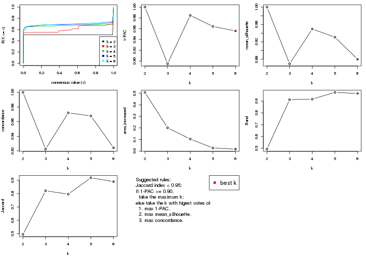
The numeric values for all these statistics can be obtained by get_stats().
get_stats(res)
#> k 1-PAC mean_silhouette concordance area_increased Rand Jaccard
#> 2 2 1.000 1.000 1.000 0.5068 0.494 0.494
#> 3 3 0.895 0.869 0.922 0.2008 0.912 0.821
#> 4 4 0.985 0.950 0.972 0.1036 0.917 0.796
#> 5 5 0.964 0.931 0.968 0.0268 0.973 0.919
#> 6 6 0.956 0.880 0.924 0.0169 0.965 0.890
suggest_best_k() suggests the best \(k\) based on these statistics. The rules are as follows:
suggest_best_k(res)
#> [1] 6
#> attr(,"optional")
#> [1] 2 4 5
There is also optional best \(k\) = 2 4 5 that is worth to check.
Following shows the table of the partitions (You need to click the show/hide
code output link to see it). The membership matrix (columns with name p*)
is inferred by
clue::cl_consensus()
function with the SE method. Basically the value in the membership matrix
represents the probability to belong to a certain group. The finall class
label for an item is determined with the group with highest probability it
belongs to.
In get_classes() function, the entropy is calculated from the membership
matrix and the silhouette score is calculated from the consensus matrix.
cbind(get_classes(res, k = 2), get_membership(res, k = 2))
#> class entropy silhouette p1 p2
#> SRR830972 2 0 1 0 1
#> SRR830973 2 0 1 0 1
#> SRR830974 2 0 1 0 1
#> SRR830975 2 0 1 0 1
#> SRR830976 2 0 1 0 1
#> SRR830977 2 0 1 0 1
#> SRR830978 2 0 1 0 1
#> SRR830979 2 0 1 0 1
#> SRR830980 2 0 1 0 1
#> SRR830982 2 0 1 0 1
#> SRR830981 2 0 1 0 1
#> SRR830983 2 0 1 0 1
#> SRR831010 1 0 1 1 0
#> SRR831011 1 0 1 1 0
#> SRR831012 1 0 1 1 0
#> SRR831013 1 0 1 1 0
#> SRR831014 1 0 1 1 0
#> SRR831015 1 0 1 1 0
#> SRR831016 1 0 1 1 0
#> SRR831017 1 0 1 1 0
#> SRR831018 1 0 1 1 0
#> SRR831019 1 0 1 1 0
#> SRR831020 1 0 1 1 0
#> SRR831021 1 0 1 1 0
#> SRR831022 1 0 1 1 0
#> SRR831023 1 0 1 1 0
#> SRR831024 1 0 1 1 0
#> SRR831025 1 0 1 1 0
#> SRR831026 1 0 1 1 0
#> SRR831027 1 0 1 1 0
#> SRR831028 1 0 1 1 0
#> SRR831029 1 0 1 1 0
#> SRR831030 1 0 1 1 0
#> SRR831031 1 0 1 1 0
#> SRR831032 1 0 1 1 0
#> SRR831033 1 0 1 1 0
#> SRR831034 1 0 1 1 0
#> SRR831035 1 0 1 1 0
#> SRR831036 1 0 1 1 0
#> SRR831037 1 0 1 1 0
#> SRR831038 1 0 1 1 0
#> SRR831039 1 0 1 1 0
#> SRR831040 1 0 1 1 0
#> SRR831041 1 0 1 1 0
#> SRR831042 1 0 1 1 0
#> SRR831043 1 0 1 1 0
#> SRR831044 1 0 1 1 0
#> SRR830965 2 0 1 0 1
#> SRR830966 2 0 1 0 1
#> SRR830967 2 0 1 0 1
#> SRR830968 2 0 1 0 1
#> SRR830969 2 0 1 0 1
#> SRR830970 2 0 1 0 1
#> SRR830971 2 0 1 0 1
#> SRR830984 2 0 1 0 1
#> SRR830985 2 0 1 0 1
#> SRR830986 2 0 1 0 1
#> SRR830987 2 0 1 0 1
#> SRR830988 2 0 1 0 1
#> SRR830989 2 0 1 0 1
#> SRR830990 2 0 1 0 1
#> SRR830991 2 0 1 0 1
#> SRR830992 2 0 1 0 1
#> SRR830993 2 0 1 0 1
#> SRR830994 2 0 1 0 1
#> SRR830995 2 0 1 0 1
#> SRR830996 2 0 1 0 1
#> SRR830997 2 0 1 0 1
#> SRR830998 2 0 1 0 1
#> SRR830999 2 0 1 0 1
#> SRR831000 2 0 1 0 1
#> SRR831001 2 0 1 0 1
#> SRR831002 2 0 1 0 1
#> SRR831003 2 0 1 0 1
#> SRR831004 2 0 1 0 1
#> SRR831005 1 0 1 1 0
#> SRR831006 1 0 1 1 0
#> SRR831007 1 0 1 1 0
#> SRR831008 1 0 1 1 0
#> SRR831009 1 0 1 1 0
cbind(get_classes(res, k = 3), get_membership(res, k = 3))
#> class entropy silhouette p1 p2 p3
#> SRR830972 2 0.0000 0.976 0 1.000 0.000
#> SRR830973 3 0.0000 0.748 0 0.000 1.000
#> SRR830974 3 0.0000 0.748 0 0.000 1.000
#> SRR830975 3 0.0000 0.748 0 0.000 1.000
#> SRR830976 3 0.0000 0.748 0 0.000 1.000
#> SRR830977 3 0.0000 0.748 0 0.000 1.000
#> SRR830978 3 0.0000 0.748 0 0.000 1.000
#> SRR830979 3 0.0000 0.748 0 0.000 1.000
#> SRR830980 3 0.6260 0.533 0 0.448 0.552
#> SRR830982 3 0.0000 0.748 0 0.000 1.000
#> SRR830981 3 0.0000 0.748 0 0.000 1.000
#> SRR830983 3 0.0000 0.748 0 0.000 1.000
#> SRR831010 1 0.0000 1.000 1 0.000 0.000
#> SRR831011 1 0.0000 1.000 1 0.000 0.000
#> SRR831012 1 0.0000 1.000 1 0.000 0.000
#> SRR831013 1 0.0000 1.000 1 0.000 0.000
#> SRR831014 1 0.0000 1.000 1 0.000 0.000
#> SRR831015 1 0.0000 1.000 1 0.000 0.000
#> SRR831016 1 0.0000 1.000 1 0.000 0.000
#> SRR831017 1 0.0000 1.000 1 0.000 0.000
#> SRR831018 1 0.0000 1.000 1 0.000 0.000
#> SRR831019 1 0.0000 1.000 1 0.000 0.000
#> SRR831020 1 0.0000 1.000 1 0.000 0.000
#> SRR831021 1 0.0000 1.000 1 0.000 0.000
#> SRR831022 1 0.0000 1.000 1 0.000 0.000
#> SRR831023 1 0.0000 1.000 1 0.000 0.000
#> SRR831024 1 0.0000 1.000 1 0.000 0.000
#> SRR831025 1 0.0000 1.000 1 0.000 0.000
#> SRR831026 1 0.0000 1.000 1 0.000 0.000
#> SRR831027 1 0.0000 1.000 1 0.000 0.000
#> SRR831028 1 0.0000 1.000 1 0.000 0.000
#> SRR831029 1 0.0000 1.000 1 0.000 0.000
#> SRR831030 1 0.0000 1.000 1 0.000 0.000
#> SRR831031 1 0.0000 1.000 1 0.000 0.000
#> SRR831032 1 0.0000 1.000 1 0.000 0.000
#> SRR831033 1 0.0000 1.000 1 0.000 0.000
#> SRR831034 1 0.0000 1.000 1 0.000 0.000
#> SRR831035 1 0.0000 1.000 1 0.000 0.000
#> SRR831036 1 0.0000 1.000 1 0.000 0.000
#> SRR831037 1 0.0000 1.000 1 0.000 0.000
#> SRR831038 1 0.0000 1.000 1 0.000 0.000
#> SRR831039 1 0.0000 1.000 1 0.000 0.000
#> SRR831040 1 0.0000 1.000 1 0.000 0.000
#> SRR831041 1 0.0000 1.000 1 0.000 0.000
#> SRR831042 1 0.0000 1.000 1 0.000 0.000
#> SRR831043 1 0.0000 1.000 1 0.000 0.000
#> SRR831044 1 0.0000 1.000 1 0.000 0.000
#> SRR830965 2 0.0000 0.976 0 1.000 0.000
#> SRR830966 2 0.0000 0.976 0 1.000 0.000
#> SRR830967 2 0.0000 0.976 0 1.000 0.000
#> SRR830968 2 0.0000 0.976 0 1.000 0.000
#> SRR830969 3 0.6286 0.506 0 0.464 0.536
#> SRR830970 2 0.0424 0.971 0 0.992 0.008
#> SRR830971 2 0.0000 0.976 0 1.000 0.000
#> SRR830984 3 0.0000 0.748 0 0.000 1.000
#> SRR830985 3 0.0000 0.748 0 0.000 1.000
#> SRR830986 3 0.0000 0.748 0 0.000 1.000
#> SRR830987 3 0.0000 0.748 0 0.000 1.000
#> SRR830988 3 0.0000 0.748 0 0.000 1.000
#> SRR830989 3 0.6062 0.631 0 0.384 0.616
#> SRR830990 3 0.6045 0.633 0 0.380 0.620
#> SRR830991 3 0.6286 0.506 0 0.464 0.536
#> SRR830992 3 0.6062 0.631 0 0.384 0.616
#> SRR830993 3 0.0000 0.748 0 0.000 1.000
#> SRR830994 3 0.6062 0.631 0 0.384 0.616
#> SRR830995 2 0.0892 0.960 0 0.980 0.020
#> SRR830996 3 0.6062 0.631 0 0.384 0.616
#> SRR830997 3 0.6062 0.631 0 0.384 0.616
#> SRR830998 3 0.6062 0.631 0 0.384 0.616
#> SRR830999 2 0.3116 0.826 0 0.892 0.108
#> SRR831000 3 0.6062 0.631 0 0.384 0.616
#> SRR831001 3 0.6062 0.631 0 0.384 0.616
#> SRR831002 3 0.6062 0.631 0 0.384 0.616
#> SRR831003 3 0.6062 0.631 0 0.384 0.616
#> SRR831004 3 0.6291 0.494 0 0.468 0.532
#> SRR831005 1 0.0000 1.000 1 0.000 0.000
#> SRR831006 1 0.0000 1.000 1 0.000 0.000
#> SRR831007 1 0.0000 1.000 1 0.000 0.000
#> SRR831008 1 0.0000 1.000 1 0.000 0.000
#> SRR831009 1 0.0000 1.000 1 0.000 0.000
cbind(get_classes(res, k = 4), get_membership(res, k = 4))
#> class entropy silhouette p1 p2 p3 p4
#> SRR830972 2 0.0817 0.976 0 0.976 0.024 0.000
#> SRR830973 4 0.1211 0.966 0 0.000 0.040 0.960
#> SRR830974 4 0.0592 0.967 0 0.000 0.016 0.984
#> SRR830975 4 0.0000 0.966 0 0.000 0.000 1.000
#> SRR830976 4 0.0000 0.966 0 0.000 0.000 1.000
#> SRR830977 4 0.1211 0.966 0 0.000 0.040 0.960
#> SRR830978 4 0.1211 0.966 0 0.000 0.040 0.960
#> SRR830979 4 0.1302 0.963 0 0.000 0.044 0.956
#> SRR830980 3 0.4916 0.424 0 0.424 0.576 0.000
#> SRR830982 4 0.0000 0.966 0 0.000 0.000 1.000
#> SRR830981 4 0.1211 0.966 0 0.000 0.040 0.960
#> SRR830983 4 0.0336 0.962 0 0.008 0.000 0.992
#> SRR831010 1 0.0000 1.000 1 0.000 0.000 0.000
#> SRR831011 1 0.0000 1.000 1 0.000 0.000 0.000
#> SRR831012 1 0.0000 1.000 1 0.000 0.000 0.000
#> SRR831013 1 0.0000 1.000 1 0.000 0.000 0.000
#> SRR831014 1 0.0000 1.000 1 0.000 0.000 0.000
#> SRR831015 1 0.0000 1.000 1 0.000 0.000 0.000
#> SRR831016 1 0.0000 1.000 1 0.000 0.000 0.000
#> SRR831017 1 0.0000 1.000 1 0.000 0.000 0.000
#> SRR831018 1 0.0000 1.000 1 0.000 0.000 0.000
#> SRR831019 1 0.0000 1.000 1 0.000 0.000 0.000
#> SRR831020 1 0.0000 1.000 1 0.000 0.000 0.000
#> SRR831021 1 0.0000 1.000 1 0.000 0.000 0.000
#> SRR831022 1 0.0000 1.000 1 0.000 0.000 0.000
#> SRR831023 1 0.0000 1.000 1 0.000 0.000 0.000
#> SRR831024 1 0.0000 1.000 1 0.000 0.000 0.000
#> SRR831025 1 0.0000 1.000 1 0.000 0.000 0.000
#> SRR831026 1 0.0000 1.000 1 0.000 0.000 0.000
#> SRR831027 1 0.0000 1.000 1 0.000 0.000 0.000
#> SRR831028 1 0.0000 1.000 1 0.000 0.000 0.000
#> SRR831029 1 0.0000 1.000 1 0.000 0.000 0.000
#> SRR831030 1 0.0000 1.000 1 0.000 0.000 0.000
#> SRR831031 1 0.0000 1.000 1 0.000 0.000 0.000
#> SRR831032 1 0.0000 1.000 1 0.000 0.000 0.000
#> SRR831033 1 0.0000 1.000 1 0.000 0.000 0.000
#> SRR831034 1 0.0000 1.000 1 0.000 0.000 0.000
#> SRR831035 1 0.0000 1.000 1 0.000 0.000 0.000
#> SRR831036 1 0.0000 1.000 1 0.000 0.000 0.000
#> SRR831037 1 0.0000 1.000 1 0.000 0.000 0.000
#> SRR831038 1 0.0000 1.000 1 0.000 0.000 0.000
#> SRR831039 1 0.0000 1.000 1 0.000 0.000 0.000
#> SRR831040 1 0.0000 1.000 1 0.000 0.000 0.000
#> SRR831041 1 0.0000 1.000 1 0.000 0.000 0.000
#> SRR831042 1 0.0000 1.000 1 0.000 0.000 0.000
#> SRR831043 1 0.0000 1.000 1 0.000 0.000 0.000
#> SRR831044 1 0.0000 1.000 1 0.000 0.000 0.000
#> SRR830965 2 0.0921 0.975 0 0.972 0.028 0.000
#> SRR830966 2 0.0707 0.978 0 0.980 0.020 0.000
#> SRR830967 2 0.0000 0.975 0 1.000 0.000 0.000
#> SRR830968 2 0.0000 0.975 0 1.000 0.000 0.000
#> SRR830969 3 0.4605 0.597 0 0.336 0.664 0.000
#> SRR830970 2 0.0921 0.976 0 0.972 0.028 0.000
#> SRR830971 2 0.0000 0.975 0 1.000 0.000 0.000
#> SRR830984 4 0.1211 0.966 0 0.000 0.040 0.960
#> SRR830985 4 0.1211 0.966 0 0.000 0.040 0.960
#> SRR830986 4 0.0000 0.966 0 0.000 0.000 1.000
#> SRR830987 4 0.0000 0.966 0 0.000 0.000 1.000
#> SRR830988 4 0.0000 0.966 0 0.000 0.000 1.000
#> SRR830989 3 0.0188 0.872 0 0.004 0.996 0.000
#> SRR830990 3 0.0336 0.869 0 0.000 0.992 0.008
#> SRR830991 3 0.4382 0.653 0 0.296 0.704 0.000
#> SRR830992 3 0.4522 0.622 0 0.320 0.680 0.000
#> SRR830993 4 0.3688 0.779 0 0.000 0.208 0.792
#> SRR830994 3 0.0000 0.874 0 0.000 1.000 0.000
#> SRR830995 2 0.0921 0.976 0 0.972 0.028 0.000
#> SRR830996 3 0.2589 0.814 0 0.116 0.884 0.000
#> SRR830997 3 0.0000 0.874 0 0.000 1.000 0.000
#> SRR830998 3 0.0000 0.874 0 0.000 1.000 0.000
#> SRR830999 2 0.0921 0.976 0 0.972 0.028 0.000
#> SRR831000 3 0.0000 0.874 0 0.000 1.000 0.000
#> SRR831001 3 0.0000 0.874 0 0.000 1.000 0.000
#> SRR831002 3 0.0000 0.874 0 0.000 1.000 0.000
#> SRR831003 3 0.0000 0.874 0 0.000 1.000 0.000
#> SRR831004 2 0.1936 0.951 0 0.940 0.028 0.032
#> SRR831005 1 0.0000 1.000 1 0.000 0.000 0.000
#> SRR831006 1 0.0000 1.000 1 0.000 0.000 0.000
#> SRR831007 1 0.0000 1.000 1 0.000 0.000 0.000
#> SRR831008 1 0.0000 1.000 1 0.000 0.000 0.000
#> SRR831009 1 0.0000 1.000 1 0.000 0.000 0.000
cbind(get_classes(res, k = 5), get_membership(res, k = 5))
#> class entropy silhouette p1 p2 p3 p4 p5
#> SRR830972 5 0.0404 0.9761 0 0.000 0.000 0.012 0.988
#> SRR830973 3 0.4398 0.6811 0 0.040 0.720 0.240 0.000
#> SRR830974 2 0.4192 0.3522 0 0.596 0.404 0.000 0.000
#> SRR830975 2 0.0000 0.9002 0 1.000 0.000 0.000 0.000
#> SRR830976 2 0.0000 0.9002 0 1.000 0.000 0.000 0.000
#> SRR830977 3 0.0898 0.9021 0 0.020 0.972 0.008 0.000
#> SRR830978 3 0.0404 0.9016 0 0.012 0.988 0.000 0.000
#> SRR830979 4 0.4294 0.0254 0 0.000 0.468 0.532 0.000
#> SRR830980 4 0.3671 0.7233 0 0.008 0.000 0.756 0.236
#> SRR830982 2 0.1732 0.8711 0 0.920 0.080 0.000 0.000
#> SRR830981 3 0.0162 0.9013 0 0.004 0.996 0.000 0.000
#> SRR830983 2 0.2583 0.8271 0 0.864 0.132 0.000 0.004
#> SRR831010 1 0.0000 1.0000 1 0.000 0.000 0.000 0.000
#> SRR831011 1 0.0000 1.0000 1 0.000 0.000 0.000 0.000
#> SRR831012 1 0.0000 1.0000 1 0.000 0.000 0.000 0.000
#> SRR831013 1 0.0000 1.0000 1 0.000 0.000 0.000 0.000
#> SRR831014 1 0.0000 1.0000 1 0.000 0.000 0.000 0.000
#> SRR831015 1 0.0000 1.0000 1 0.000 0.000 0.000 0.000
#> SRR831016 1 0.0000 1.0000 1 0.000 0.000 0.000 0.000
#> SRR831017 1 0.0000 1.0000 1 0.000 0.000 0.000 0.000
#> SRR831018 1 0.0000 1.0000 1 0.000 0.000 0.000 0.000
#> SRR831019 1 0.0000 1.0000 1 0.000 0.000 0.000 0.000
#> SRR831020 1 0.0000 1.0000 1 0.000 0.000 0.000 0.000
#> SRR831021 1 0.0000 1.0000 1 0.000 0.000 0.000 0.000
#> SRR831022 1 0.0000 1.0000 1 0.000 0.000 0.000 0.000
#> SRR831023 1 0.0000 1.0000 1 0.000 0.000 0.000 0.000
#> SRR831024 1 0.0000 1.0000 1 0.000 0.000 0.000 0.000
#> SRR831025 1 0.0000 1.0000 1 0.000 0.000 0.000 0.000
#> SRR831026 1 0.0000 1.0000 1 0.000 0.000 0.000 0.000
#> SRR831027 1 0.0000 1.0000 1 0.000 0.000 0.000 0.000
#> SRR831028 1 0.0000 1.0000 1 0.000 0.000 0.000 0.000
#> SRR831029 1 0.0000 1.0000 1 0.000 0.000 0.000 0.000
#> SRR831030 1 0.0000 1.0000 1 0.000 0.000 0.000 0.000
#> SRR831031 1 0.0000 1.0000 1 0.000 0.000 0.000 0.000
#> SRR831032 1 0.0000 1.0000 1 0.000 0.000 0.000 0.000
#> SRR831033 1 0.0000 1.0000 1 0.000 0.000 0.000 0.000
#> SRR831034 1 0.0000 1.0000 1 0.000 0.000 0.000 0.000
#> SRR831035 1 0.0000 1.0000 1 0.000 0.000 0.000 0.000
#> SRR831036 1 0.0000 1.0000 1 0.000 0.000 0.000 0.000
#> SRR831037 1 0.0000 1.0000 1 0.000 0.000 0.000 0.000
#> SRR831038 1 0.0000 1.0000 1 0.000 0.000 0.000 0.000
#> SRR831039 1 0.0000 1.0000 1 0.000 0.000 0.000 0.000
#> SRR831040 1 0.0000 1.0000 1 0.000 0.000 0.000 0.000
#> SRR831041 1 0.0000 1.0000 1 0.000 0.000 0.000 0.000
#> SRR831042 1 0.0000 1.0000 1 0.000 0.000 0.000 0.000
#> SRR831043 1 0.0000 1.0000 1 0.000 0.000 0.000 0.000
#> SRR831044 1 0.0000 1.0000 1 0.000 0.000 0.000 0.000
#> SRR830965 5 0.0404 0.9761 0 0.000 0.000 0.012 0.988
#> SRR830966 5 0.0290 0.9768 0 0.000 0.000 0.008 0.992
#> SRR830967 5 0.0000 0.9748 0 0.000 0.000 0.000 1.000
#> SRR830968 5 0.0000 0.9748 0 0.000 0.000 0.000 1.000
#> SRR830969 4 0.2773 0.8123 0 0.000 0.000 0.836 0.164
#> SRR830970 5 0.0510 0.9744 0 0.000 0.000 0.016 0.984
#> SRR830971 5 0.0000 0.9748 0 0.000 0.000 0.000 1.000
#> SRR830984 3 0.1310 0.8992 0 0.024 0.956 0.020 0.000
#> SRR830985 3 0.2921 0.8267 0 0.020 0.856 0.124 0.000
#> SRR830986 2 0.0703 0.8965 0 0.976 0.024 0.000 0.000
#> SRR830987 2 0.0000 0.9002 0 1.000 0.000 0.000 0.000
#> SRR830988 2 0.0000 0.9002 0 1.000 0.000 0.000 0.000
#> SRR830989 4 0.0703 0.8969 0 0.000 0.000 0.976 0.024
#> SRR830990 4 0.0162 0.9027 0 0.000 0.004 0.996 0.000
#> SRR830991 4 0.2648 0.8238 0 0.000 0.000 0.848 0.152
#> SRR830992 4 0.2127 0.8539 0 0.000 0.000 0.892 0.108
#> SRR830993 3 0.0000 0.8998 0 0.000 1.000 0.000 0.000
#> SRR830994 4 0.0000 0.9047 0 0.000 0.000 1.000 0.000
#> SRR830995 5 0.0510 0.9744 0 0.000 0.000 0.016 0.984
#> SRR830996 4 0.0703 0.8983 0 0.000 0.000 0.976 0.024
#> SRR830997 4 0.0000 0.9047 0 0.000 0.000 1.000 0.000
#> SRR830998 4 0.0000 0.9047 0 0.000 0.000 1.000 0.000
#> SRR830999 5 0.0404 0.9761 0 0.000 0.000 0.012 0.988
#> SRR831000 4 0.0000 0.9047 0 0.000 0.000 1.000 0.000
#> SRR831001 4 0.0000 0.9047 0 0.000 0.000 1.000 0.000
#> SRR831002 4 0.0000 0.9047 0 0.000 0.000 1.000 0.000
#> SRR831003 4 0.0000 0.9047 0 0.000 0.000 1.000 0.000
#> SRR831004 5 0.3239 0.8509 0 0.068 0.000 0.080 0.852
#> SRR831005 1 0.0000 1.0000 1 0.000 0.000 0.000 0.000
#> SRR831006 1 0.0000 1.0000 1 0.000 0.000 0.000 0.000
#> SRR831007 1 0.0000 1.0000 1 0.000 0.000 0.000 0.000
#> SRR831008 1 0.0000 1.0000 1 0.000 0.000 0.000 0.000
#> SRR831009 1 0.0000 1.0000 1 0.000 0.000 0.000 0.000
cbind(get_classes(res, k = 6), get_membership(res, k = 6))
#> class entropy silhouette p1 p2 p3 p4 p5 p6
#> SRR830972 5 0.1075 0.8650 0.000 0.000 0.000 0.000 0.952 0.048
#> SRR830973 3 0.4129 0.6769 0.000 0.028 0.720 0.008 0.004 0.240
#> SRR830974 2 0.4453 0.2579 0.000 0.568 0.400 0.000 0.000 0.032
#> SRR830975 2 0.0000 0.9131 0.000 1.000 0.000 0.000 0.000 0.000
#> SRR830976 2 0.0260 0.9135 0.000 0.992 0.000 0.000 0.000 0.008
#> SRR830977 3 0.0951 0.8659 0.000 0.008 0.968 0.004 0.000 0.020
#> SRR830978 3 0.1542 0.8623 0.000 0.008 0.936 0.004 0.000 0.052
#> SRR830979 6 0.4254 0.0544 0.000 0.000 0.404 0.020 0.000 0.576
#> SRR830980 5 0.2884 0.8145 0.000 0.008 0.004 0.032 0.864 0.092
#> SRR830982 2 0.0603 0.9081 0.000 0.980 0.016 0.000 0.004 0.000
#> SRR830981 3 0.0777 0.8519 0.000 0.000 0.972 0.004 0.000 0.024
#> SRR830983 2 0.1950 0.8638 0.000 0.912 0.064 0.000 0.000 0.024
#> SRR831010 1 0.0000 0.9984 1.000 0.000 0.000 0.000 0.000 0.000
#> SRR831011 1 0.0000 0.9984 1.000 0.000 0.000 0.000 0.000 0.000
#> SRR831012 1 0.0000 0.9984 1.000 0.000 0.000 0.000 0.000 0.000
#> SRR831013 1 0.0000 0.9984 1.000 0.000 0.000 0.000 0.000 0.000
#> SRR831014 1 0.0000 0.9984 1.000 0.000 0.000 0.000 0.000 0.000
#> SRR831015 1 0.0000 0.9984 1.000 0.000 0.000 0.000 0.000 0.000
#> SRR831016 1 0.0146 0.9977 0.996 0.000 0.000 0.000 0.000 0.004
#> SRR831017 1 0.0146 0.9977 0.996 0.000 0.000 0.000 0.000 0.004
#> SRR831018 1 0.0000 0.9984 1.000 0.000 0.000 0.000 0.000 0.000
#> SRR831019 1 0.0146 0.9977 0.996 0.000 0.000 0.000 0.000 0.004
#> SRR831020 1 0.0146 0.9977 0.996 0.000 0.000 0.000 0.000 0.004
#> SRR831021 1 0.0000 0.9984 1.000 0.000 0.000 0.000 0.000 0.000
#> SRR831022 1 0.0000 0.9984 1.000 0.000 0.000 0.000 0.000 0.000
#> SRR831023 1 0.0146 0.9977 0.996 0.000 0.000 0.000 0.000 0.004
#> SRR831024 1 0.0000 0.9984 1.000 0.000 0.000 0.000 0.000 0.000
#> SRR831025 1 0.0146 0.9977 0.996 0.000 0.000 0.000 0.000 0.004
#> SRR831026 1 0.0146 0.9977 0.996 0.000 0.000 0.000 0.000 0.004
#> SRR831027 1 0.0146 0.9977 0.996 0.000 0.000 0.000 0.000 0.004
#> SRR831028 1 0.0146 0.9977 0.996 0.000 0.000 0.000 0.000 0.004
#> SRR831029 1 0.0000 0.9984 1.000 0.000 0.000 0.000 0.000 0.000
#> SRR831030 1 0.0000 0.9984 1.000 0.000 0.000 0.000 0.000 0.000
#> SRR831031 1 0.0146 0.9977 0.996 0.000 0.000 0.000 0.000 0.004
#> SRR831032 1 0.0000 0.9984 1.000 0.000 0.000 0.000 0.000 0.000
#> SRR831033 1 0.0000 0.9984 1.000 0.000 0.000 0.000 0.000 0.000
#> SRR831034 1 0.0146 0.9977 0.996 0.000 0.000 0.000 0.000 0.004
#> SRR831035 1 0.0146 0.9977 0.996 0.000 0.000 0.000 0.000 0.004
#> SRR831036 1 0.0146 0.9977 0.996 0.000 0.000 0.000 0.000 0.004
#> SRR831037 1 0.0146 0.9977 0.996 0.000 0.000 0.000 0.000 0.004
#> SRR831038 1 0.0000 0.9984 1.000 0.000 0.000 0.000 0.000 0.000
#> SRR831039 1 0.0000 0.9984 1.000 0.000 0.000 0.000 0.000 0.000
#> SRR831040 1 0.0000 0.9984 1.000 0.000 0.000 0.000 0.000 0.000
#> SRR831041 1 0.0000 0.9984 1.000 0.000 0.000 0.000 0.000 0.000
#> SRR831042 1 0.0000 0.9984 1.000 0.000 0.000 0.000 0.000 0.000
#> SRR831043 1 0.0000 0.9984 1.000 0.000 0.000 0.000 0.000 0.000
#> SRR831044 1 0.0000 0.9984 1.000 0.000 0.000 0.000 0.000 0.000
#> SRR830965 5 0.1075 0.8650 0.000 0.000 0.000 0.000 0.952 0.048
#> SRR830966 5 0.1075 0.8650 0.000 0.000 0.000 0.000 0.952 0.048
#> SRR830967 5 0.2730 0.8200 0.000 0.000 0.000 0.000 0.808 0.192
#> SRR830968 5 0.2730 0.8200 0.000 0.000 0.000 0.000 0.808 0.192
#> SRR830969 5 0.4051 0.6652 0.000 0.000 0.004 0.044 0.728 0.224
#> SRR830970 5 0.0363 0.8650 0.000 0.000 0.000 0.000 0.988 0.012
#> SRR830971 5 0.2730 0.8200 0.000 0.000 0.000 0.000 0.808 0.192
#> SRR830984 3 0.2772 0.7829 0.000 0.004 0.816 0.000 0.000 0.180
#> SRR830985 3 0.2203 0.8474 0.000 0.016 0.896 0.004 0.000 0.084
#> SRR830986 2 0.0146 0.9132 0.000 0.996 0.004 0.000 0.000 0.000
#> SRR830987 2 0.0260 0.9135 0.000 0.992 0.000 0.000 0.000 0.008
#> SRR830988 2 0.0260 0.9135 0.000 0.992 0.000 0.000 0.000 0.008
#> SRR830989 4 0.0891 0.8222 0.000 0.000 0.000 0.968 0.008 0.024
#> SRR830990 6 0.4215 0.6921 0.000 0.000 0.056 0.244 0.000 0.700
#> SRR830991 5 0.4121 0.7201 0.000 0.000 0.000 0.116 0.748 0.136
#> SRR830992 5 0.5464 0.4604 0.000 0.000 0.004 0.176 0.588 0.232
#> SRR830993 3 0.1411 0.8286 0.000 0.000 0.936 0.004 0.000 0.060
#> SRR830994 4 0.0713 0.8269 0.000 0.000 0.000 0.972 0.000 0.028
#> SRR830995 5 0.0508 0.8646 0.000 0.000 0.004 0.000 0.984 0.012
#> SRR830996 4 0.5637 0.2041 0.000 0.000 0.004 0.556 0.188 0.252
#> SRR830997 6 0.4270 0.6881 0.000 0.000 0.052 0.264 0.000 0.684
#> SRR830998 6 0.5090 0.5580 0.000 0.000 0.024 0.336 0.048 0.592
#> SRR830999 5 0.0713 0.8648 0.000 0.000 0.000 0.000 0.972 0.028
#> SRR831000 4 0.0692 0.8279 0.000 0.000 0.000 0.976 0.004 0.020
#> SRR831001 4 0.0260 0.8240 0.000 0.000 0.000 0.992 0.000 0.008
#> SRR831002 4 0.2146 0.7654 0.000 0.000 0.004 0.880 0.000 0.116
#> SRR831003 4 0.2092 0.7216 0.000 0.000 0.000 0.876 0.000 0.124
#> SRR831004 5 0.1293 0.8578 0.000 0.020 0.004 0.004 0.956 0.016
#> SRR831005 1 0.0000 0.9984 1.000 0.000 0.000 0.000 0.000 0.000
#> SRR831006 1 0.0146 0.9977 0.996 0.000 0.000 0.000 0.000 0.004
#> SRR831007 1 0.0000 0.9984 1.000 0.000 0.000 0.000 0.000 0.000
#> SRR831008 1 0.0146 0.9977 0.996 0.000 0.000 0.000 0.000 0.004
#> SRR831009 1 0.0000 0.9984 1.000 0.000 0.000 0.000 0.000 0.000
Heatmaps for the consensus matrix. It visualizes the probability of two samples to be in a same group.
consensus_heatmap(res, k = 2)
consensus_heatmap(res, k = 3)
consensus_heatmap(res, k = 4)
consensus_heatmap(res, k = 5)
consensus_heatmap(res, k = 6)
Heatmaps for the membership of samples in all partitions to see how consistent they are:
membership_heatmap(res, k = 2)

membership_heatmap(res, k = 3)
membership_heatmap(res, k = 4)
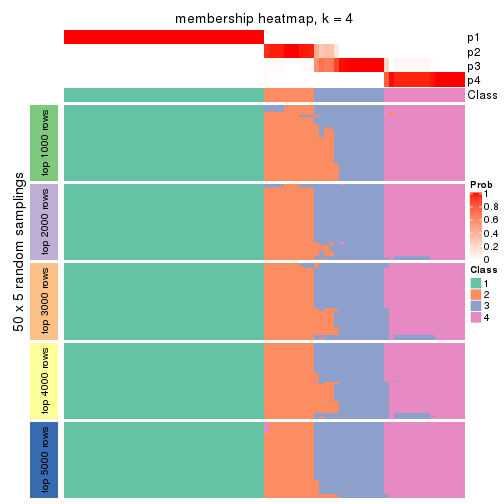
membership_heatmap(res, k = 5)
membership_heatmap(res, k = 6)
As soon as we have had the classes for columns, we can look for signatures which are significantly different between classes which can be candidate marks for certain classes. Following are the heatmaps for signatures.
Signature heatmaps where rows are scaled:
get_signatures(res, k = 2)

get_signatures(res, k = 3)
get_signatures(res, k = 4)
get_signatures(res, k = 5)
#> Error in mat[ceiling(1:nr/h_ratio), ceiling(1:nc/w_ratio), drop = FALSE]: subscript out of bounds

get_signatures(res, k = 6)
Signature heatmaps where rows are not scaled:
get_signatures(res, k = 2, scale_rows = FALSE)

get_signatures(res, k = 3, scale_rows = FALSE)
get_signatures(res, k = 4, scale_rows = FALSE)
get_signatures(res, k = 5, scale_rows = FALSE)
get_signatures(res, k = 6, scale_rows = FALSE)
Compare the overlap of signatures from different k:
compare_signatures(res)
get_signature() returns a data frame invisibly. TO get the list of signatures, the function
call should be assigned to a variable explicitly. In following code, if plot argument is set
to FALSE, no heatmap is plotted while only the differential analysis is performed.
# code only for demonstration
tb = get_signature(res, k = ..., plot = FALSE)
An example of the output of tb is:
#> which_row fdr mean_1 mean_2 scaled_mean_1 scaled_mean_2 km
#> 1 38 0.042760348 8.373488 9.131774 -0.5533452 0.5164555 1
#> 2 40 0.018707592 7.106213 8.469186 -0.6173731 0.5762149 1
#> 3 55 0.019134737 10.221463 11.207825 -0.6159697 0.5749050 1
#> 4 59 0.006059896 5.921854 7.869574 -0.6899429 0.6439467 1
#> 5 60 0.018055526 8.928898 10.211722 -0.6204761 0.5791110 1
#> 6 98 0.009384629 15.714769 14.887706 0.6635654 -0.6193277 2
...
The columns in tb are:
which_row: row indices corresponding to the input matrix.fdr: FDR for the differential test. mean_x: The mean value in group x.scaled_mean_x: The mean value in group x after rows are scaled.km: Row groups if k-means clustering is applied to rows.UMAP plot which shows how samples are separated.
dimension_reduction(res, k = 2, method = "UMAP")

dimension_reduction(res, k = 3, method = "UMAP")
dimension_reduction(res, k = 4, method = "UMAP")
dimension_reduction(res, k = 5, method = "UMAP")
dimension_reduction(res, k = 6, method = "UMAP")
Following heatmap shows how subgroups are split when increasing k:
collect_classes(res)
If matrix rows can be associated to genes, consider to use functional_enrichment(res,
...) to perform function enrichment for the signature genes. See this vignette for more detailed explanations.
The object with results only for a single top-value method and a single partition method can be extracted as:
res = res_list["CV", "NMF"]
# you can also extract it by
# res = res_list["CV:NMF"]
A summary of res and all the functions that can be applied to it:
res
#> A 'ConsensusPartition' object with k = 2, 3, 4, 5, 6.
#> On a matrix with 14104 rows and 80 columns.
#> Top rows (1000, 2000, 3000, 4000, 5000) are extracted by 'CV' method.
#> Subgroups are detected by 'NMF' method.
#> Performed in total 1250 partitions by row resampling.
#> Best k for subgroups seems to be 3.
#>
#> Following methods can be applied to this 'ConsensusPartition' object:
#> [1] "cola_report" "collect_classes" "collect_plots"
#> [4] "collect_stats" "colnames" "compare_signatures"
#> [7] "consensus_heatmap" "dimension_reduction" "functional_enrichment"
#> [10] "get_anno_col" "get_anno" "get_classes"
#> [13] "get_consensus" "get_matrix" "get_membership"
#> [16] "get_param" "get_signatures" "get_stats"
#> [19] "is_best_k" "is_stable_k" "membership_heatmap"
#> [22] "ncol" "nrow" "plot_ecdf"
#> [25] "rownames" "select_partition_number" "show"
#> [28] "suggest_best_k" "test_to_known_factors"
collect_plots() function collects all the plots made from res for all k (number of partitions)
into one single page to provide an easy and fast comparison between different k.
collect_plots(res)
The plots are:
k and the heatmap of
predicted classes for each k.k.k.k.All the plots in panels can be made by individual functions and they are plotted later in this section.
select_partition_number() produces several plots showing different
statistics for choosing “optimized” k. There are following statistics:
k;k, the area increased is defined as \(A_k - A_{k-1}\).The detailed explanations of these statistics can be found in the cola vignette.
Generally speaking, lower PAC score, higher mean silhouette score or higher
concordance corresponds to better partition. Rand index and Jaccard index
measure how similar the current partition is compared to partition with k-1.
If they are too similar, we won't accept k is better than k-1.
select_partition_number(res)
The numeric values for all these statistics can be obtained by get_stats().
get_stats(res)
#> k 1-PAC mean_silhouette concordance area_increased Rand Jaccard
#> 2 2 1.000 1.000 1.000 0.5068 0.494 0.494
#> 3 3 0.976 0.950 0.978 0.2409 0.875 0.746
#> 4 4 0.864 0.760 0.859 0.0570 0.909 0.770
#> 5 5 0.857 0.781 0.853 0.0290 0.963 0.891
#> 6 6 0.874 0.752 0.838 0.0154 0.971 0.909
suggest_best_k() suggests the best \(k\) based on these statistics. The rules are as follows:
suggest_best_k(res)
#> [1] 3
#> attr(,"optional")
#> [1] 2
There is also optional best \(k\) = 2 that is worth to check.
Following shows the table of the partitions (You need to click the show/hide
code output link to see it). The membership matrix (columns with name p*)
is inferred by
clue::cl_consensus()
function with the SE method. Basically the value in the membership matrix
represents the probability to belong to a certain group. The finall class
label for an item is determined with the group with highest probability it
belongs to.
In get_classes() function, the entropy is calculated from the membership
matrix and the silhouette score is calculated from the consensus matrix.
cbind(get_classes(res, k = 2), get_membership(res, k = 2))
#> class entropy silhouette p1 p2
#> SRR830972 2 0 1 0 1
#> SRR830973 2 0 1 0 1
#> SRR830974 2 0 1 0 1
#> SRR830975 2 0 1 0 1
#> SRR830976 2 0 1 0 1
#> SRR830977 2 0 1 0 1
#> SRR830978 2 0 1 0 1
#> SRR830979 2 0 1 0 1
#> SRR830980 2 0 1 0 1
#> SRR830982 2 0 1 0 1
#> SRR830981 2 0 1 0 1
#> SRR830983 2 0 1 0 1
#> SRR831010 1 0 1 1 0
#> SRR831011 1 0 1 1 0
#> SRR831012 1 0 1 1 0
#> SRR831013 1 0 1 1 0
#> SRR831014 1 0 1 1 0
#> SRR831015 1 0 1 1 0
#> SRR831016 1 0 1 1 0
#> SRR831017 1 0 1 1 0
#> SRR831018 1 0 1 1 0
#> SRR831019 1 0 1 1 0
#> SRR831020 1 0 1 1 0
#> SRR831021 1 0 1 1 0
#> SRR831022 1 0 1 1 0
#> SRR831023 1 0 1 1 0
#> SRR831024 1 0 1 1 0
#> SRR831025 1 0 1 1 0
#> SRR831026 1 0 1 1 0
#> SRR831027 1 0 1 1 0
#> SRR831028 1 0 1 1 0
#> SRR831029 1 0 1 1 0
#> SRR831030 1 0 1 1 0
#> SRR831031 1 0 1 1 0
#> SRR831032 1 0 1 1 0
#> SRR831033 1 0 1 1 0
#> SRR831034 1 0 1 1 0
#> SRR831035 1 0 1 1 0
#> SRR831036 1 0 1 1 0
#> SRR831037 1 0 1 1 0
#> SRR831038 1 0 1 1 0
#> SRR831039 1 0 1 1 0
#> SRR831040 1 0 1 1 0
#> SRR831041 1 0 1 1 0
#> SRR831042 1 0 1 1 0
#> SRR831043 1 0 1 1 0
#> SRR831044 1 0 1 1 0
#> SRR830965 2 0 1 0 1
#> SRR830966 2 0 1 0 1
#> SRR830967 2 0 1 0 1
#> SRR830968 2 0 1 0 1
#> SRR830969 2 0 1 0 1
#> SRR830970 2 0 1 0 1
#> SRR830971 2 0 1 0 1
#> SRR830984 2 0 1 0 1
#> SRR830985 2 0 1 0 1
#> SRR830986 2 0 1 0 1
#> SRR830987 2 0 1 0 1
#> SRR830988 2 0 1 0 1
#> SRR830989 2 0 1 0 1
#> SRR830990 2 0 1 0 1
#> SRR830991 2 0 1 0 1
#> SRR830992 2 0 1 0 1
#> SRR830993 2 0 1 0 1
#> SRR830994 2 0 1 0 1
#> SRR830995 2 0 1 0 1
#> SRR830996 2 0 1 0 1
#> SRR830997 2 0 1 0 1
#> SRR830998 2 0 1 0 1
#> SRR830999 2 0 1 0 1
#> SRR831000 2 0 1 0 1
#> SRR831001 2 0 1 0 1
#> SRR831002 2 0 1 0 1
#> SRR831003 2 0 1 0 1
#> SRR831004 2 0 1 0 1
#> SRR831005 1 0 1 1 0
#> SRR831006 1 0 1 1 0
#> SRR831007 1 0 1 1 0
#> SRR831008 1 0 1 1 0
#> SRR831009 1 0 1 1 0
cbind(get_classes(res, k = 3), get_membership(res, k = 3))
#> class entropy silhouette p1 p2 p3
#> SRR830972 2 0.0000 0.975 0 1.000 0.000
#> SRR830973 3 0.5216 0.697 0 0.260 0.740
#> SRR830974 2 0.5835 0.409 0 0.660 0.340
#> SRR830975 2 0.0000 0.975 0 1.000 0.000
#> SRR830976 2 0.0000 0.975 0 1.000 0.000
#> SRR830977 3 0.0000 0.918 0 0.000 1.000
#> SRR830978 3 0.0000 0.918 0 0.000 1.000
#> SRR830979 3 0.0000 0.918 0 0.000 1.000
#> SRR830980 2 0.0000 0.975 0 1.000 0.000
#> SRR830982 2 0.0237 0.972 0 0.996 0.004
#> SRR830981 3 0.0000 0.918 0 0.000 1.000
#> SRR830983 2 0.1163 0.950 0 0.972 0.028
#> SRR831010 1 0.0000 1.000 1 0.000 0.000
#> SRR831011 1 0.0000 1.000 1 0.000 0.000
#> SRR831012 1 0.0000 1.000 1 0.000 0.000
#> SRR831013 1 0.0000 1.000 1 0.000 0.000
#> SRR831014 1 0.0000 1.000 1 0.000 0.000
#> SRR831015 1 0.0000 1.000 1 0.000 0.000
#> SRR831016 1 0.0000 1.000 1 0.000 0.000
#> SRR831017 1 0.0000 1.000 1 0.000 0.000
#> SRR831018 1 0.0000 1.000 1 0.000 0.000
#> SRR831019 1 0.0000 1.000 1 0.000 0.000
#> SRR831020 1 0.0000 1.000 1 0.000 0.000
#> SRR831021 1 0.0000 1.000 1 0.000 0.000
#> SRR831022 1 0.0000 1.000 1 0.000 0.000
#> SRR831023 1 0.0000 1.000 1 0.000 0.000
#> SRR831024 1 0.0000 1.000 1 0.000 0.000
#> SRR831025 1 0.0000 1.000 1 0.000 0.000
#> SRR831026 1 0.0000 1.000 1 0.000 0.000
#> SRR831027 1 0.0000 1.000 1 0.000 0.000
#> SRR831028 1 0.0000 1.000 1 0.000 0.000
#> SRR831029 1 0.0000 1.000 1 0.000 0.000
#> SRR831030 1 0.0000 1.000 1 0.000 0.000
#> SRR831031 1 0.0000 1.000 1 0.000 0.000
#> SRR831032 1 0.0000 1.000 1 0.000 0.000
#> SRR831033 1 0.0000 1.000 1 0.000 0.000
#> SRR831034 1 0.0000 1.000 1 0.000 0.000
#> SRR831035 1 0.0000 1.000 1 0.000 0.000
#> SRR831036 1 0.0000 1.000 1 0.000 0.000
#> SRR831037 1 0.0000 1.000 1 0.000 0.000
#> SRR831038 1 0.0000 1.000 1 0.000 0.000
#> SRR831039 1 0.0000 1.000 1 0.000 0.000
#> SRR831040 1 0.0000 1.000 1 0.000 0.000
#> SRR831041 1 0.0000 1.000 1 0.000 0.000
#> SRR831042 1 0.0000 1.000 1 0.000 0.000
#> SRR831043 1 0.0000 1.000 1 0.000 0.000
#> SRR831044 1 0.0000 1.000 1 0.000 0.000
#> SRR830965 2 0.0000 0.975 0 1.000 0.000
#> SRR830966 2 0.0000 0.975 0 1.000 0.000
#> SRR830967 2 0.0000 0.975 0 1.000 0.000
#> SRR830968 2 0.0000 0.975 0 1.000 0.000
#> SRR830969 2 0.0000 0.975 0 1.000 0.000
#> SRR830970 2 0.0000 0.975 0 1.000 0.000
#> SRR830971 2 0.0000 0.975 0 1.000 0.000
#> SRR830984 3 0.0237 0.918 0 0.004 0.996
#> SRR830985 3 0.2261 0.890 0 0.068 0.932
#> SRR830986 2 0.0237 0.972 0 0.996 0.004
#> SRR830987 2 0.0000 0.975 0 1.000 0.000
#> SRR830988 2 0.0000 0.975 0 1.000 0.000
#> SRR830989 3 0.4796 0.755 0 0.220 0.780
#> SRR830990 3 0.0000 0.918 0 0.000 1.000
#> SRR830991 2 0.0000 0.975 0 1.000 0.000
#> SRR830992 2 0.2625 0.888 0 0.916 0.084
#> SRR830993 3 0.0000 0.918 0 0.000 1.000
#> SRR830994 3 0.0592 0.916 0 0.012 0.988
#> SRR830995 2 0.0000 0.975 0 1.000 0.000
#> SRR830996 3 0.3038 0.866 0 0.104 0.896
#> SRR830997 3 0.0000 0.918 0 0.000 1.000
#> SRR830998 3 0.0000 0.918 0 0.000 1.000
#> SRR830999 2 0.0000 0.975 0 1.000 0.000
#> SRR831000 3 0.6280 0.238 0 0.460 0.540
#> SRR831001 3 0.1031 0.912 0 0.024 0.976
#> SRR831002 3 0.0000 0.918 0 0.000 1.000
#> SRR831003 3 0.4346 0.797 0 0.184 0.816
#> SRR831004 2 0.0000 0.975 0 1.000 0.000
#> SRR831005 1 0.0000 1.000 1 0.000 0.000
#> SRR831006 1 0.0000 1.000 1 0.000 0.000
#> SRR831007 1 0.0000 1.000 1 0.000 0.000
#> SRR831008 1 0.0000 1.000 1 0.000 0.000
#> SRR831009 1 0.0000 1.000 1 0.000 0.000
cbind(get_classes(res, k = 4), get_membership(res, k = 4))
#> class entropy silhouette p1 p2 p3 p4
#> SRR830972 2 0.222 0.770 0 0.908 0.092 0.000
#> SRR830973 3 0.300 0.556 0 0.132 0.864 0.004
#> SRR830974 3 0.380 0.554 0 0.220 0.780 0.000
#> SRR830975 3 0.488 0.416 0 0.408 0.592 0.000
#> SRR830976 3 0.495 0.354 0 0.440 0.560 0.000
#> SRR830977 3 0.384 0.446 0 0.016 0.816 0.168
#> SRR830978 3 0.353 0.410 0 0.000 0.808 0.192
#> SRR830979 3 0.491 -0.014 0 0.000 0.580 0.420
#> SRR830980 2 0.253 0.756 0 0.888 0.112 0.000
#> SRR830982 3 0.489 0.409 0 0.412 0.588 0.000
#> SRR830981 3 0.369 0.391 0 0.000 0.792 0.208
#> SRR830983 3 0.479 0.446 0 0.380 0.620 0.000
#> SRR831010 1 0.000 1.000 1 0.000 0.000 0.000
#> SRR831011 1 0.000 1.000 1 0.000 0.000 0.000
#> SRR831012 1 0.000 1.000 1 0.000 0.000 0.000
#> SRR831013 1 0.000 1.000 1 0.000 0.000 0.000
#> SRR831014 1 0.000 1.000 1 0.000 0.000 0.000
#> SRR831015 1 0.000 1.000 1 0.000 0.000 0.000
#> SRR831016 1 0.000 1.000 1 0.000 0.000 0.000
#> SRR831017 1 0.000 1.000 1 0.000 0.000 0.000
#> SRR831018 1 0.000 1.000 1 0.000 0.000 0.000
#> SRR831019 1 0.000 1.000 1 0.000 0.000 0.000
#> SRR831020 1 0.000 1.000 1 0.000 0.000 0.000
#> SRR831021 1 0.000 1.000 1 0.000 0.000 0.000
#> SRR831022 1 0.000 1.000 1 0.000 0.000 0.000
#> SRR831023 1 0.000 1.000 1 0.000 0.000 0.000
#> SRR831024 1 0.000 1.000 1 0.000 0.000 0.000
#> SRR831025 1 0.000 1.000 1 0.000 0.000 0.000
#> SRR831026 1 0.000 1.000 1 0.000 0.000 0.000
#> SRR831027 1 0.000 1.000 1 0.000 0.000 0.000
#> SRR831028 1 0.000 1.000 1 0.000 0.000 0.000
#> SRR831029 1 0.000 1.000 1 0.000 0.000 0.000
#> SRR831030 1 0.000 1.000 1 0.000 0.000 0.000
#> SRR831031 1 0.000 1.000 1 0.000 0.000 0.000
#> SRR831032 1 0.000 1.000 1 0.000 0.000 0.000
#> SRR831033 1 0.000 1.000 1 0.000 0.000 0.000
#> SRR831034 1 0.000 1.000 1 0.000 0.000 0.000
#> SRR831035 1 0.000 1.000 1 0.000 0.000 0.000
#> SRR831036 1 0.000 1.000 1 0.000 0.000 0.000
#> SRR831037 1 0.000 1.000 1 0.000 0.000 0.000
#> SRR831038 1 0.000 1.000 1 0.000 0.000 0.000
#> SRR831039 1 0.000 1.000 1 0.000 0.000 0.000
#> SRR831040 1 0.000 1.000 1 0.000 0.000 0.000
#> SRR831041 1 0.000 1.000 1 0.000 0.000 0.000
#> SRR831042 1 0.000 1.000 1 0.000 0.000 0.000
#> SRR831043 1 0.000 1.000 1 0.000 0.000 0.000
#> SRR831044 1 0.000 1.000 1 0.000 0.000 0.000
#> SRR830965 2 0.164 0.794 0 0.940 0.060 0.000
#> SRR830966 2 0.140 0.805 0 0.956 0.040 0.004
#> SRR830967 2 0.222 0.773 0 0.908 0.000 0.092
#> SRR830968 2 0.265 0.760 0 0.888 0.004 0.108
#> SRR830969 2 0.212 0.810 0 0.932 0.040 0.028
#> SRR830970 2 0.104 0.807 0 0.972 0.008 0.020
#> SRR830971 2 0.276 0.739 0 0.872 0.000 0.128
#> SRR830984 3 0.314 0.494 0 0.024 0.876 0.100
#> SRR830985 3 0.367 0.492 0 0.036 0.848 0.116
#> SRR830986 3 0.482 0.437 0 0.388 0.612 0.000
#> SRR830987 3 0.488 0.417 0 0.408 0.592 0.000
#> SRR830988 3 0.495 0.354 0 0.440 0.560 0.000
#> SRR830989 4 0.568 0.582 0 0.256 0.064 0.680
#> SRR830990 3 0.500 -0.200 0 0.000 0.508 0.492
#> SRR830991 2 0.297 0.719 0 0.856 0.000 0.144
#> SRR830992 2 0.543 0.396 0 0.664 0.300 0.036
#> SRR830993 3 0.365 0.398 0 0.000 0.796 0.204
#> SRR830994 4 0.322 0.699 0 0.112 0.020 0.868
#> SRR830995 2 0.230 0.799 0 0.920 0.064 0.016
#> SRR830996 4 0.680 0.465 0 0.124 0.308 0.568
#> SRR830997 4 0.376 0.551 0 0.000 0.216 0.784
#> SRR830998 4 0.436 0.471 0 0.000 0.292 0.708
#> SRR830999 2 0.220 0.790 0 0.920 0.008 0.072
#> SRR831000 2 0.517 -0.212 0 0.504 0.004 0.492
#> SRR831001 4 0.405 0.628 0 0.228 0.004 0.768
#> SRR831002 4 0.250 0.678 0 0.040 0.044 0.916
#> SRR831003 4 0.506 0.319 0 0.412 0.004 0.584
#> SRR831004 2 0.404 0.548 0 0.752 0.248 0.000
#> SRR831005 1 0.000 1.000 1 0.000 0.000 0.000
#> SRR831006 1 0.000 1.000 1 0.000 0.000 0.000
#> SRR831007 1 0.000 1.000 1 0.000 0.000 0.000
#> SRR831008 1 0.000 1.000 1 0.000 0.000 0.000
#> SRR831009 1 0.000 1.000 1 0.000 0.000 0.000
cbind(get_classes(res, k = 5), get_membership(res, k = 5))
#> class entropy silhouette p1 p2 p3 p4 p5
#> SRR830972 5 0.325 0.722 0 0.088 0.052 0.004 0.856
#> SRR830973 2 0.528 -0.373 0 0.516 0.436 0.000 0.048
#> SRR830974 2 0.319 0.581 0 0.840 0.140 0.008 0.012
#> SRR830975 2 0.369 0.707 0 0.828 0.076 0.004 0.092
#> SRR830976 2 0.256 0.726 0 0.884 0.020 0.000 0.096
#> SRR830977 3 0.473 0.678 0 0.328 0.644 0.024 0.004
#> SRR830978 3 0.540 0.628 0 0.404 0.536 0.060 0.000
#> SRR830979 3 0.417 0.609 0 0.116 0.784 0.100 0.000
#> SRR830980 5 0.489 0.608 0 0.264 0.028 0.020 0.688
#> SRR830982 2 0.393 0.695 0 0.796 0.064 0.000 0.140
#> SRR830981 3 0.493 0.641 0 0.364 0.600 0.036 0.000
#> SRR830983 2 0.456 0.660 0 0.760 0.108 0.004 0.128
#> SRR831010 1 0.000 1.000 1 0.000 0.000 0.000 0.000
#> SRR831011 1 0.000 1.000 1 0.000 0.000 0.000 0.000
#> SRR831012 1 0.000 1.000 1 0.000 0.000 0.000 0.000
#> SRR831013 1 0.000 1.000 1 0.000 0.000 0.000 0.000
#> SRR831014 1 0.000 1.000 1 0.000 0.000 0.000 0.000
#> SRR831015 1 0.000 1.000 1 0.000 0.000 0.000 0.000
#> SRR831016 1 0.000 1.000 1 0.000 0.000 0.000 0.000
#> SRR831017 1 0.000 1.000 1 0.000 0.000 0.000 0.000
#> SRR831018 1 0.000 1.000 1 0.000 0.000 0.000 0.000
#> SRR831019 1 0.000 1.000 1 0.000 0.000 0.000 0.000
#> SRR831020 1 0.000 1.000 1 0.000 0.000 0.000 0.000
#> SRR831021 1 0.000 1.000 1 0.000 0.000 0.000 0.000
#> SRR831022 1 0.000 1.000 1 0.000 0.000 0.000 0.000
#> SRR831023 1 0.000 1.000 1 0.000 0.000 0.000 0.000
#> SRR831024 1 0.000 1.000 1 0.000 0.000 0.000 0.000
#> SRR831025 1 0.000 1.000 1 0.000 0.000 0.000 0.000
#> SRR831026 1 0.000 1.000 1 0.000 0.000 0.000 0.000
#> SRR831027 1 0.000 1.000 1 0.000 0.000 0.000 0.000
#> SRR831028 1 0.000 1.000 1 0.000 0.000 0.000 0.000
#> SRR831029 1 0.000 1.000 1 0.000 0.000 0.000 0.000
#> SRR831030 1 0.000 1.000 1 0.000 0.000 0.000 0.000
#> SRR831031 1 0.000 1.000 1 0.000 0.000 0.000 0.000
#> SRR831032 1 0.000 1.000 1 0.000 0.000 0.000 0.000
#> SRR831033 1 0.000 1.000 1 0.000 0.000 0.000 0.000
#> SRR831034 1 0.000 1.000 1 0.000 0.000 0.000 0.000
#> SRR831035 1 0.000 1.000 1 0.000 0.000 0.000 0.000
#> SRR831036 1 0.000 1.000 1 0.000 0.000 0.000 0.000
#> SRR831037 1 0.000 1.000 1 0.000 0.000 0.000 0.000
#> SRR831038 1 0.000 1.000 1 0.000 0.000 0.000 0.000
#> SRR831039 1 0.000 1.000 1 0.000 0.000 0.000 0.000
#> SRR831040 1 0.000 1.000 1 0.000 0.000 0.000 0.000
#> SRR831041 1 0.000 1.000 1 0.000 0.000 0.000 0.000
#> SRR831042 1 0.000 1.000 1 0.000 0.000 0.000 0.000
#> SRR831043 1 0.000 1.000 1 0.000 0.000 0.000 0.000
#> SRR831044 1 0.000 1.000 1 0.000 0.000 0.000 0.000
#> SRR830965 5 0.253 0.740 0 0.080 0.012 0.012 0.896
#> SRR830966 5 0.322 0.739 0 0.096 0.004 0.044 0.856
#> SRR830967 5 0.308 0.696 0 0.032 0.000 0.116 0.852
#> SRR830968 5 0.218 0.711 0 0.008 0.008 0.072 0.912
#> SRR830969 5 0.361 0.704 0 0.092 0.056 0.012 0.840
#> SRR830970 5 0.292 0.732 0 0.080 0.024 0.016 0.880
#> SRR830971 5 0.253 0.708 0 0.012 0.012 0.080 0.896
#> SRR830984 3 0.530 0.532 0 0.404 0.552 0.008 0.036
#> SRR830985 3 0.527 0.639 0 0.336 0.612 0.012 0.040
#> SRR830986 2 0.322 0.728 0 0.848 0.044 0.000 0.108
#> SRR830987 2 0.402 0.692 0 0.808 0.076 0.008 0.108
#> SRR830988 2 0.308 0.724 0 0.852 0.032 0.000 0.116
#> SRR830989 4 0.726 0.486 0 0.212 0.080 0.536 0.172
#> SRR830990 3 0.607 0.269 0 0.160 0.556 0.284 0.000
#> SRR830991 5 0.607 0.430 0 0.148 0.004 0.272 0.576
#> SRR830992 2 0.637 0.340 0 0.612 0.040 0.128 0.220
#> SRR830993 3 0.524 0.620 0 0.368 0.588 0.032 0.012
#> SRR830994 4 0.341 0.667 0 0.020 0.040 0.856 0.084
#> SRR830995 5 0.668 0.289 0 0.396 0.012 0.160 0.432
#> SRR830996 4 0.671 0.429 0 0.276 0.132 0.552 0.040
#> SRR830997 4 0.491 0.170 0 0.024 0.476 0.500 0.000
#> SRR830998 4 0.550 0.365 0 0.080 0.340 0.580 0.000
#> SRR830999 5 0.633 0.470 0 0.264 0.000 0.212 0.524
#> SRR831000 4 0.535 0.494 0 0.080 0.004 0.644 0.272
#> SRR831001 4 0.322 0.626 0 0.000 0.016 0.824 0.160
#> SRR831002 4 0.357 0.627 0 0.020 0.108 0.840 0.032
#> SRR831003 4 0.479 0.508 0 0.024 0.016 0.684 0.276
#> SRR831004 5 0.553 0.464 0 0.360 0.040 0.020 0.580
#> SRR831005 1 0.000 1.000 1 0.000 0.000 0.000 0.000
#> SRR831006 1 0.000 1.000 1 0.000 0.000 0.000 0.000
#> SRR831007 1 0.000 1.000 1 0.000 0.000 0.000 0.000
#> SRR831008 1 0.000 1.000 1 0.000 0.000 0.000 0.000
#> SRR831009 1 0.000 1.000 1 0.000 0.000 0.000 0.000
cbind(get_classes(res, k = 6), get_membership(res, k = 6))
#> class entropy silhouette p1 p2 p3 p4 p5 p6
#> SRR830972 5 0.2898 0.775 0.000 0.056 0.016 0.000 0.868 0.060
#> SRR830973 3 0.6337 0.343 0.000 0.384 0.452 0.000 0.072 0.092
#> SRR830974 2 0.4225 0.494 0.000 0.780 0.128 0.028 0.008 0.056
#> SRR830975 2 0.3415 0.577 0.000 0.848 0.064 0.008 0.040 0.040
#> SRR830976 2 0.3884 0.578 0.000 0.816 0.024 0.028 0.032 0.100
#> SRR830977 3 0.3538 0.578 0.000 0.216 0.764 0.004 0.012 0.004
#> SRR830978 3 0.5614 0.492 0.000 0.320 0.564 0.032 0.000 0.084
#> SRR830979 3 0.4234 0.576 0.000 0.076 0.784 0.036 0.004 0.100
#> SRR830980 5 0.5966 0.521 0.000 0.244 0.000 0.048 0.580 0.128
#> SRR830982 2 0.4747 0.518 0.000 0.756 0.052 0.012 0.080 0.100
#> SRR830981 3 0.5219 0.513 0.000 0.268 0.636 0.024 0.004 0.068
#> SRR830983 2 0.5550 0.392 0.000 0.652 0.200 0.008 0.104 0.036
#> SRR831010 1 0.0000 1.000 1.000 0.000 0.000 0.000 0.000 0.000
#> SRR831011 1 0.0000 1.000 1.000 0.000 0.000 0.000 0.000 0.000
#> SRR831012 1 0.0000 1.000 1.000 0.000 0.000 0.000 0.000 0.000
#> SRR831013 1 0.0000 1.000 1.000 0.000 0.000 0.000 0.000 0.000
#> SRR831014 1 0.0000 1.000 1.000 0.000 0.000 0.000 0.000 0.000
#> SRR831015 1 0.0000 1.000 1.000 0.000 0.000 0.000 0.000 0.000
#> SRR831016 1 0.0000 1.000 1.000 0.000 0.000 0.000 0.000 0.000
#> SRR831017 1 0.0000 1.000 1.000 0.000 0.000 0.000 0.000 0.000
#> SRR831018 1 0.0000 1.000 1.000 0.000 0.000 0.000 0.000 0.000
#> SRR831019 1 0.0000 1.000 1.000 0.000 0.000 0.000 0.000 0.000
#> SRR831020 1 0.0000 1.000 1.000 0.000 0.000 0.000 0.000 0.000
#> SRR831021 1 0.0000 1.000 1.000 0.000 0.000 0.000 0.000 0.000
#> SRR831022 1 0.0000 1.000 1.000 0.000 0.000 0.000 0.000 0.000
#> SRR831023 1 0.0000 1.000 1.000 0.000 0.000 0.000 0.000 0.000
#> SRR831024 1 0.0000 1.000 1.000 0.000 0.000 0.000 0.000 0.000
#> SRR831025 1 0.0000 1.000 1.000 0.000 0.000 0.000 0.000 0.000
#> SRR831026 1 0.0000 1.000 1.000 0.000 0.000 0.000 0.000 0.000
#> SRR831027 1 0.0000 1.000 1.000 0.000 0.000 0.000 0.000 0.000
#> SRR831028 1 0.0000 1.000 1.000 0.000 0.000 0.000 0.000 0.000
#> SRR831029 1 0.0000 1.000 1.000 0.000 0.000 0.000 0.000 0.000
#> SRR831030 1 0.0000 1.000 1.000 0.000 0.000 0.000 0.000 0.000
#> SRR831031 1 0.0000 1.000 1.000 0.000 0.000 0.000 0.000 0.000
#> SRR831032 1 0.0000 1.000 1.000 0.000 0.000 0.000 0.000 0.000
#> SRR831033 1 0.0000 1.000 1.000 0.000 0.000 0.000 0.000 0.000
#> SRR831034 1 0.0000 1.000 1.000 0.000 0.000 0.000 0.000 0.000
#> SRR831035 1 0.0146 0.996 0.996 0.000 0.000 0.000 0.000 0.004
#> SRR831036 1 0.0000 1.000 1.000 0.000 0.000 0.000 0.000 0.000
#> SRR831037 1 0.0146 0.996 0.996 0.000 0.000 0.000 0.000 0.004
#> SRR831038 1 0.0000 1.000 1.000 0.000 0.000 0.000 0.000 0.000
#> SRR831039 1 0.0000 1.000 1.000 0.000 0.000 0.000 0.000 0.000
#> SRR831040 1 0.0000 1.000 1.000 0.000 0.000 0.000 0.000 0.000
#> SRR831041 1 0.0000 1.000 1.000 0.000 0.000 0.000 0.000 0.000
#> SRR831042 1 0.0000 1.000 1.000 0.000 0.000 0.000 0.000 0.000
#> SRR831043 1 0.0000 1.000 1.000 0.000 0.000 0.000 0.000 0.000
#> SRR831044 1 0.0000 1.000 1.000 0.000 0.000 0.000 0.000 0.000
#> SRR830965 5 0.2052 0.790 0.000 0.056 0.000 0.004 0.912 0.028
#> SRR830966 5 0.3878 0.745 0.000 0.136 0.000 0.040 0.792 0.032
#> SRR830967 5 0.4086 0.712 0.000 0.052 0.000 0.096 0.792 0.060
#> SRR830968 5 0.2224 0.767 0.000 0.012 0.000 0.064 0.904 0.020
#> SRR830969 5 0.3459 0.755 0.000 0.048 0.016 0.008 0.836 0.092
#> SRR830970 5 0.3021 0.775 0.000 0.072 0.004 0.008 0.860 0.056
#> SRR830971 5 0.1829 0.765 0.000 0.004 0.000 0.064 0.920 0.012
#> SRR830984 3 0.6852 0.454 0.000 0.292 0.444 0.004 0.056 0.204
#> SRR830985 3 0.5676 0.532 0.000 0.216 0.644 0.012 0.076 0.052
#> SRR830986 2 0.3487 0.575 0.000 0.840 0.052 0.004 0.068 0.036
#> SRR830987 2 0.4598 0.529 0.000 0.764 0.124 0.020 0.036 0.056
#> SRR830988 2 0.3996 0.563 0.000 0.792 0.032 0.000 0.064 0.112
#> SRR830989 4 0.8017 0.339 0.000 0.212 0.052 0.380 0.108 0.248
#> SRR830990 3 0.7389 0.185 0.000 0.172 0.388 0.272 0.000 0.168
#> SRR830991 4 0.6957 0.177 0.000 0.192 0.000 0.392 0.340 0.076
#> SRR830992 2 0.6358 0.353 0.000 0.600 0.040 0.220 0.060 0.080
#> SRR830993 3 0.6611 0.460 0.000 0.300 0.456 0.028 0.008 0.208
#> SRR830994 4 0.4145 0.646 0.000 0.076 0.040 0.808 0.048 0.028
#> SRR830995 2 0.6934 0.165 0.000 0.484 0.004 0.264 0.128 0.120
#> SRR830996 4 0.6632 0.362 0.000 0.300 0.104 0.512 0.016 0.068
#> SRR830997 3 0.5183 0.239 0.000 0.004 0.612 0.264 0.000 0.120
#> SRR830998 4 0.6299 0.285 0.000 0.040 0.260 0.536 0.004 0.160
#> SRR830999 2 0.7330 -0.100 0.000 0.356 0.000 0.280 0.256 0.108
#> SRR831000 4 0.4158 0.637 0.000 0.044 0.000 0.772 0.144 0.040
#> SRR831001 4 0.2202 0.648 0.000 0.008 0.012 0.904 0.072 0.004
#> SRR831002 4 0.4206 0.567 0.000 0.040 0.128 0.780 0.004 0.048
#> SRR831003 4 0.4873 0.614 0.000 0.044 0.032 0.736 0.156 0.032
#> SRR831004 5 0.6238 0.268 0.000 0.368 0.012 0.032 0.484 0.104
#> SRR831005 1 0.0000 1.000 1.000 0.000 0.000 0.000 0.000 0.000
#> SRR831006 1 0.0000 1.000 1.000 0.000 0.000 0.000 0.000 0.000
#> SRR831007 1 0.0000 1.000 1.000 0.000 0.000 0.000 0.000 0.000
#> SRR831008 1 0.0000 1.000 1.000 0.000 0.000 0.000 0.000 0.000
#> SRR831009 1 0.0000 1.000 1.000 0.000 0.000 0.000 0.000 0.000
Heatmaps for the consensus matrix. It visualizes the probability of two samples to be in a same group.
consensus_heatmap(res, k = 2)
consensus_heatmap(res, k = 3)
consensus_heatmap(res, k = 4)
consensus_heatmap(res, k = 5)
consensus_heatmap(res, k = 6)
Heatmaps for the membership of samples in all partitions to see how consistent they are:
membership_heatmap(res, k = 2)

membership_heatmap(res, k = 3)
membership_heatmap(res, k = 4)
membership_heatmap(res, k = 5)
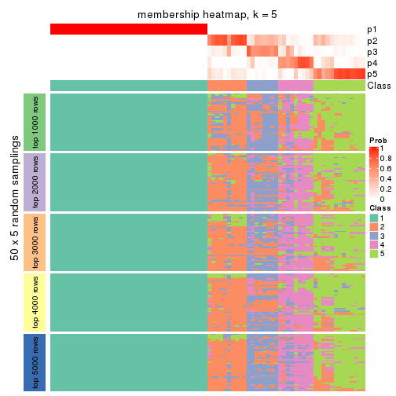
membership_heatmap(res, k = 6)
As soon as we have had the classes for columns, we can look for signatures which are significantly different between classes which can be candidate marks for certain classes. Following are the heatmaps for signatures.
Signature heatmaps where rows are scaled:
get_signatures(res, k = 2)

get_signatures(res, k = 3)
#> Error in mat[ceiling(1:nr/h_ratio), ceiling(1:nc/w_ratio), drop = FALSE]: subscript out of bounds

get_signatures(res, k = 4)
#> Error in mat[ceiling(1:nr/h_ratio), ceiling(1:nc/w_ratio), drop = FALSE]: subscript out of bounds
get_signatures(res, k = 5)
get_signatures(res, k = 6)
Signature heatmaps where rows are not scaled:
get_signatures(res, k = 2, scale_rows = FALSE)

get_signatures(res, k = 3, scale_rows = FALSE)
get_signatures(res, k = 4, scale_rows = FALSE)
get_signatures(res, k = 5, scale_rows = FALSE)
get_signatures(res, k = 6, scale_rows = FALSE)
Compare the overlap of signatures from different k:
compare_signatures(res)
get_signature() returns a data frame invisibly. TO get the list of signatures, the function
call should be assigned to a variable explicitly. In following code, if plot argument is set
to FALSE, no heatmap is plotted while only the differential analysis is performed.
# code only for demonstration
tb = get_signature(res, k = ..., plot = FALSE)
An example of the output of tb is:
#> which_row fdr mean_1 mean_2 scaled_mean_1 scaled_mean_2 km
#> 1 38 0.042760348 8.373488 9.131774 -0.5533452 0.5164555 1
#> 2 40 0.018707592 7.106213 8.469186 -0.6173731 0.5762149 1
#> 3 55 0.019134737 10.221463 11.207825 -0.6159697 0.5749050 1
#> 4 59 0.006059896 5.921854 7.869574 -0.6899429 0.6439467 1
#> 5 60 0.018055526 8.928898 10.211722 -0.6204761 0.5791110 1
#> 6 98 0.009384629 15.714769 14.887706 0.6635654 -0.6193277 2
...
The columns in tb are:
which_row: row indices corresponding to the input matrix.fdr: FDR for the differential test. mean_x: The mean value in group x.scaled_mean_x: The mean value in group x after rows are scaled.km: Row groups if k-means clustering is applied to rows.UMAP plot which shows how samples are separated.
dimension_reduction(res, k = 2, method = "UMAP")

dimension_reduction(res, k = 3, method = "UMAP")
dimension_reduction(res, k = 4, method = "UMAP")
dimension_reduction(res, k = 5, method = "UMAP")
dimension_reduction(res, k = 6, method = "UMAP")
Following heatmap shows how subgroups are split when increasing k:
collect_classes(res)
If matrix rows can be associated to genes, consider to use functional_enrichment(res,
...) to perform function enrichment for the signature genes. See this vignette for more detailed explanations.
The object with results only for a single top-value method and a single partition method can be extracted as:
res = res_list["MAD", "hclust"]
# you can also extract it by
# res = res_list["MAD:hclust"]
A summary of res and all the functions that can be applied to it:
res
#> A 'ConsensusPartition' object with k = 2, 3, 4, 5, 6.
#> On a matrix with 14104 rows and 80 columns.
#> Top rows (1000, 2000, 3000, 4000, 5000) are extracted by 'MAD' method.
#> Subgroups are detected by 'hclust' method.
#> Performed in total 1250 partitions by row resampling.
#> Best k for subgroups seems to be 2.
#>
#> Following methods can be applied to this 'ConsensusPartition' object:
#> [1] "cola_report" "collect_classes" "collect_plots"
#> [4] "collect_stats" "colnames" "compare_signatures"
#> [7] "consensus_heatmap" "dimension_reduction" "functional_enrichment"
#> [10] "get_anno_col" "get_anno" "get_classes"
#> [13] "get_consensus" "get_matrix" "get_membership"
#> [16] "get_param" "get_signatures" "get_stats"
#> [19] "is_best_k" "is_stable_k" "membership_heatmap"
#> [22] "ncol" "nrow" "plot_ecdf"
#> [25] "rownames" "select_partition_number" "show"
#> [28] "suggest_best_k" "test_to_known_factors"
collect_plots() function collects all the plots made from res for all k (number of partitions)
into one single page to provide an easy and fast comparison between different k.
collect_plots(res)
The plots are:
k and the heatmap of
predicted classes for each k.k.k.k.All the plots in panels can be made by individual functions and they are plotted later in this section.
select_partition_number() produces several plots showing different
statistics for choosing “optimized” k. There are following statistics:
k;k, the area increased is defined as \(A_k - A_{k-1}\).The detailed explanations of these statistics can be found in the cola vignette.
Generally speaking, lower PAC score, higher mean silhouette score or higher
concordance corresponds to better partition. Rand index and Jaccard index
measure how similar the current partition is compared to partition with k-1.
If they are too similar, we won't accept k is better than k-1.
select_partition_number(res)
The numeric values for all these statistics can be obtained by get_stats().
get_stats(res)
#> k 1-PAC mean_silhouette concordance area_increased Rand Jaccard
#> 2 2 1.000 1.000 1.000 0.5068 0.494 0.494
#> 3 3 0.828 0.724 0.894 0.1877 0.919 0.836
#> 4 4 0.736 0.767 0.868 0.0717 0.920 0.814
#> 5 5 0.777 0.795 0.858 0.0475 0.942 0.848
#> 6 6 0.772 0.775 0.785 0.0318 0.972 0.916
suggest_best_k() suggests the best \(k\) based on these statistics. The rules are as follows:
suggest_best_k(res)
#> [1] 2
Following shows the table of the partitions (You need to click the show/hide
code output link to see it). The membership matrix (columns with name p*)
is inferred by
clue::cl_consensus()
function with the SE method. Basically the value in the membership matrix
represents the probability to belong to a certain group. The finall class
label for an item is determined with the group with highest probability it
belongs to.
In get_classes() function, the entropy is calculated from the membership
matrix and the silhouette score is calculated from the consensus matrix.
cbind(get_classes(res, k = 2), get_membership(res, k = 2))
#> class entropy silhouette p1 p2
#> SRR830972 2 0 1 0 1
#> SRR830973 2 0 1 0 1
#> SRR830974 2 0 1 0 1
#> SRR830975 2 0 1 0 1
#> SRR830976 2 0 1 0 1
#> SRR830977 2 0 1 0 1
#> SRR830978 2 0 1 0 1
#> SRR830979 2 0 1 0 1
#> SRR830980 2 0 1 0 1
#> SRR830982 2 0 1 0 1
#> SRR830981 2 0 1 0 1
#> SRR830983 2 0 1 0 1
#> SRR831010 1 0 1 1 0
#> SRR831011 1 0 1 1 0
#> SRR831012 1 0 1 1 0
#> SRR831013 1 0 1 1 0
#> SRR831014 1 0 1 1 0
#> SRR831015 1 0 1 1 0
#> SRR831016 1 0 1 1 0
#> SRR831017 1 0 1 1 0
#> SRR831018 1 0 1 1 0
#> SRR831019 1 0 1 1 0
#> SRR831020 1 0 1 1 0
#> SRR831021 1 0 1 1 0
#> SRR831022 1 0 1 1 0
#> SRR831023 1 0 1 1 0
#> SRR831024 1 0 1 1 0
#> SRR831025 1 0 1 1 0
#> SRR831026 1 0 1 1 0
#> SRR831027 1 0 1 1 0
#> SRR831028 1 0 1 1 0
#> SRR831029 1 0 1 1 0
#> SRR831030 1 0 1 1 0
#> SRR831031 1 0 1 1 0
#> SRR831032 1 0 1 1 0
#> SRR831033 1 0 1 1 0
#> SRR831034 1 0 1 1 0
#> SRR831035 1 0 1 1 0
#> SRR831036 1 0 1 1 0
#> SRR831037 1 0 1 1 0
#> SRR831038 1 0 1 1 0
#> SRR831039 1 0 1 1 0
#> SRR831040 1 0 1 1 0
#> SRR831041 1 0 1 1 0
#> SRR831042 1 0 1 1 0
#> SRR831043 1 0 1 1 0
#> SRR831044 1 0 1 1 0
#> SRR830965 2 0 1 0 1
#> SRR830966 2 0 1 0 1
#> SRR830967 2 0 1 0 1
#> SRR830968 2 0 1 0 1
#> SRR830969 2 0 1 0 1
#> SRR830970 2 0 1 0 1
#> SRR830971 2 0 1 0 1
#> SRR830984 2 0 1 0 1
#> SRR830985 2 0 1 0 1
#> SRR830986 2 0 1 0 1
#> SRR830987 2 0 1 0 1
#> SRR830988 2 0 1 0 1
#> SRR830989 2 0 1 0 1
#> SRR830990 2 0 1 0 1
#> SRR830991 2 0 1 0 1
#> SRR830992 2 0 1 0 1
#> SRR830993 2 0 1 0 1
#> SRR830994 2 0 1 0 1
#> SRR830995 2 0 1 0 1
#> SRR830996 2 0 1 0 1
#> SRR830997 2 0 1 0 1
#> SRR830998 2 0 1 0 1
#> SRR830999 2 0 1 0 1
#> SRR831000 2 0 1 0 1
#> SRR831001 2 0 1 0 1
#> SRR831002 2 0 1 0 1
#> SRR831003 2 0 1 0 1
#> SRR831004 2 0 1 0 1
#> SRR831005 1 0 1 1 0
#> SRR831006 1 0 1 1 0
#> SRR831007 1 0 1 1 0
#> SRR831008 1 0 1 1 0
#> SRR831009 1 0 1 1 0
cbind(get_classes(res, k = 3), get_membership(res, k = 3))
#> class entropy silhouette p1 p2 p3
#> SRR830972 2 0.3116 0.6823 0 0.892 0.108
#> SRR830973 2 0.6291 -0.3618 0 0.532 0.468
#> SRR830974 2 0.0237 0.6950 0 0.996 0.004
#> SRR830975 2 0.0000 0.6967 0 1.000 0.000
#> SRR830976 2 0.0000 0.6967 0 1.000 0.000
#> SRR830977 2 0.6302 -0.3874 0 0.520 0.480
#> SRR830978 2 0.6302 -0.3874 0 0.520 0.480
#> SRR830979 3 0.3116 0.6343 0 0.108 0.892
#> SRR830980 2 0.0237 0.6950 0 0.996 0.004
#> SRR830982 2 0.0000 0.6967 0 1.000 0.000
#> SRR830981 2 0.5905 0.0256 0 0.648 0.352
#> SRR830983 2 0.0237 0.6950 0 0.996 0.004
#> SRR831010 1 0.0000 1.0000 1 0.000 0.000
#> SRR831011 1 0.0000 1.0000 1 0.000 0.000
#> SRR831012 1 0.0000 1.0000 1 0.000 0.000
#> SRR831013 1 0.0000 1.0000 1 0.000 0.000
#> SRR831014 1 0.0000 1.0000 1 0.000 0.000
#> SRR831015 1 0.0000 1.0000 1 0.000 0.000
#> SRR831016 1 0.0000 1.0000 1 0.000 0.000
#> SRR831017 1 0.0000 1.0000 1 0.000 0.000
#> SRR831018 1 0.0000 1.0000 1 0.000 0.000
#> SRR831019 1 0.0000 1.0000 1 0.000 0.000
#> SRR831020 1 0.0000 1.0000 1 0.000 0.000
#> SRR831021 1 0.0000 1.0000 1 0.000 0.000
#> SRR831022 1 0.0000 1.0000 1 0.000 0.000
#> SRR831023 1 0.0000 1.0000 1 0.000 0.000
#> SRR831024 1 0.0000 1.0000 1 0.000 0.000
#> SRR831025 1 0.0000 1.0000 1 0.000 0.000
#> SRR831026 1 0.0000 1.0000 1 0.000 0.000
#> SRR831027 1 0.0000 1.0000 1 0.000 0.000
#> SRR831028 1 0.0000 1.0000 1 0.000 0.000
#> SRR831029 1 0.0000 1.0000 1 0.000 0.000
#> SRR831030 1 0.0000 1.0000 1 0.000 0.000
#> SRR831031 1 0.0000 1.0000 1 0.000 0.000
#> SRR831032 1 0.0000 1.0000 1 0.000 0.000
#> SRR831033 1 0.0000 1.0000 1 0.000 0.000
#> SRR831034 1 0.0000 1.0000 1 0.000 0.000
#> SRR831035 1 0.0000 1.0000 1 0.000 0.000
#> SRR831036 1 0.0000 1.0000 1 0.000 0.000
#> SRR831037 1 0.0000 1.0000 1 0.000 0.000
#> SRR831038 1 0.0000 1.0000 1 0.000 0.000
#> SRR831039 1 0.0000 1.0000 1 0.000 0.000
#> SRR831040 1 0.0000 1.0000 1 0.000 0.000
#> SRR831041 1 0.0000 1.0000 1 0.000 0.000
#> SRR831042 1 0.0000 1.0000 1 0.000 0.000
#> SRR831043 1 0.0000 1.0000 1 0.000 0.000
#> SRR831044 1 0.0000 1.0000 1 0.000 0.000
#> SRR830965 2 0.3116 0.6823 0 0.892 0.108
#> SRR830966 2 0.3116 0.6823 0 0.892 0.108
#> SRR830967 2 0.3116 0.6823 0 0.892 0.108
#> SRR830968 2 0.3116 0.6823 0 0.892 0.108
#> SRR830969 2 0.6244 -0.2975 0 0.560 0.440
#> SRR830970 2 0.3116 0.6823 0 0.892 0.108
#> SRR830971 2 0.3116 0.6823 0 0.892 0.108
#> SRR830984 3 0.6274 0.4484 0 0.456 0.544
#> SRR830985 2 0.6302 -0.3874 0 0.520 0.480
#> SRR830986 2 0.0000 0.6967 0 1.000 0.000
#> SRR830987 2 0.0000 0.6967 0 1.000 0.000
#> SRR830988 2 0.0000 0.6967 0 1.000 0.000
#> SRR830989 2 0.6274 0.2622 0 0.544 0.456
#> SRR830990 3 0.3340 0.6396 0 0.120 0.880
#> SRR830991 2 0.4452 0.4651 0 0.808 0.192
#> SRR830992 2 0.3551 0.5716 0 0.868 0.132
#> SRR830993 2 0.6274 0.2622 0 0.544 0.456
#> SRR830994 2 0.5397 0.5134 0 0.720 0.280
#> SRR830995 2 0.3116 0.6823 0 0.892 0.108
#> SRR830996 2 0.5178 0.3371 0 0.744 0.256
#> SRR830997 3 0.3116 0.6343 0 0.108 0.892
#> SRR830998 3 0.6008 0.6286 0 0.372 0.628
#> SRR830999 2 0.2625 0.6897 0 0.916 0.084
#> SRR831000 3 0.6309 0.4515 0 0.496 0.504
#> SRR831001 3 0.6062 0.6211 0 0.384 0.616
#> SRR831002 3 0.6309 0.4515 0 0.496 0.504
#> SRR831003 2 0.6235 -0.3193 0 0.564 0.436
#> SRR831004 2 0.1753 0.6955 0 0.952 0.048
#> SRR831005 1 0.0000 1.0000 1 0.000 0.000
#> SRR831006 1 0.0000 1.0000 1 0.000 0.000
#> SRR831007 1 0.0000 1.0000 1 0.000 0.000
#> SRR831008 1 0.0000 1.0000 1 0.000 0.000
#> SRR831009 1 0.0000 1.0000 1 0.000 0.000
cbind(get_classes(res, k = 4), get_membership(res, k = 4))
#> class entropy silhouette p1 p2 p3 p4
#> SRR830972 2 0.3569 0.7256 0.000 0.804 0.000 0.196
#> SRR830973 3 0.4955 0.6605 0.000 0.444 0.556 0.000
#> SRR830974 2 0.0707 0.7523 0.000 0.980 0.020 0.000
#> SRR830975 2 0.0188 0.7611 0.000 0.996 0.004 0.000
#> SRR830976 2 0.0188 0.7611 0.000 0.996 0.004 0.000
#> SRR830977 3 0.4933 0.6743 0.000 0.432 0.568 0.000
#> SRR830978 3 0.4933 0.6743 0.000 0.432 0.568 0.000
#> SRR830979 3 0.4008 0.1225 0.000 0.000 0.756 0.244
#> SRR830980 2 0.0707 0.7523 0.000 0.980 0.020 0.000
#> SRR830982 2 0.0188 0.7611 0.000 0.996 0.004 0.000
#> SRR830981 2 0.4948 -0.4395 0.000 0.560 0.440 0.000
#> SRR830983 2 0.0707 0.7523 0.000 0.980 0.020 0.000
#> SRR831010 1 0.0000 0.9517 1.000 0.000 0.000 0.000
#> SRR831011 1 0.0000 0.9517 1.000 0.000 0.000 0.000
#> SRR831012 1 0.0000 0.9517 1.000 0.000 0.000 0.000
#> SRR831013 1 0.0000 0.9517 1.000 0.000 0.000 0.000
#> SRR831014 1 0.0000 0.9517 1.000 0.000 0.000 0.000
#> SRR831015 1 0.0000 0.9517 1.000 0.000 0.000 0.000
#> SRR831016 1 0.1767 0.9338 0.944 0.000 0.044 0.012
#> SRR831017 1 0.4370 0.8471 0.800 0.000 0.156 0.044
#> SRR831018 1 0.0000 0.9517 1.000 0.000 0.000 0.000
#> SRR831019 1 0.4370 0.8471 0.800 0.000 0.156 0.044
#> SRR831020 1 0.3015 0.9074 0.884 0.000 0.092 0.024
#> SRR831021 1 0.0000 0.9517 1.000 0.000 0.000 0.000
#> SRR831022 1 0.0000 0.9517 1.000 0.000 0.000 0.000
#> SRR831023 1 0.3542 0.8873 0.852 0.000 0.120 0.028
#> SRR831024 1 0.0000 0.9517 1.000 0.000 0.000 0.000
#> SRR831025 1 0.4370 0.8471 0.800 0.000 0.156 0.044
#> SRR831026 1 0.2593 0.9173 0.904 0.000 0.080 0.016
#> SRR831027 1 0.1767 0.9338 0.944 0.000 0.044 0.012
#> SRR831028 1 0.2593 0.9173 0.904 0.000 0.080 0.016
#> SRR831029 1 0.0000 0.9517 1.000 0.000 0.000 0.000
#> SRR831030 1 0.0000 0.9517 1.000 0.000 0.000 0.000
#> SRR831031 1 0.0000 0.9517 1.000 0.000 0.000 0.000
#> SRR831032 1 0.0000 0.9517 1.000 0.000 0.000 0.000
#> SRR831033 1 0.0000 0.9517 1.000 0.000 0.000 0.000
#> SRR831034 1 0.4139 0.8606 0.816 0.000 0.144 0.040
#> SRR831035 1 0.4370 0.8471 0.800 0.000 0.156 0.044
#> SRR831036 1 0.3015 0.9074 0.884 0.000 0.092 0.024
#> SRR831037 1 0.4037 0.8669 0.824 0.000 0.136 0.040
#> SRR831038 1 0.0000 0.9517 1.000 0.000 0.000 0.000
#> SRR831039 1 0.0000 0.9517 1.000 0.000 0.000 0.000
#> SRR831040 1 0.0000 0.9517 1.000 0.000 0.000 0.000
#> SRR831041 1 0.0000 0.9517 1.000 0.000 0.000 0.000
#> SRR831042 1 0.0000 0.9517 1.000 0.000 0.000 0.000
#> SRR831043 1 0.0000 0.9517 1.000 0.000 0.000 0.000
#> SRR831044 1 0.0000 0.9517 1.000 0.000 0.000 0.000
#> SRR830965 2 0.3569 0.7256 0.000 0.804 0.000 0.196
#> SRR830966 2 0.3569 0.7256 0.000 0.804 0.000 0.196
#> SRR830967 2 0.3569 0.7256 0.000 0.804 0.000 0.196
#> SRR830968 2 0.3569 0.7256 0.000 0.804 0.000 0.196
#> SRR830969 3 0.4989 0.6175 0.000 0.472 0.528 0.000
#> SRR830970 2 0.3569 0.7256 0.000 0.804 0.000 0.196
#> SRR830971 2 0.3569 0.7256 0.000 0.804 0.000 0.196
#> SRR830984 3 0.6296 0.6774 0.000 0.388 0.548 0.064
#> SRR830985 3 0.4933 0.6743 0.000 0.432 0.568 0.000
#> SRR830986 2 0.0188 0.7611 0.000 0.996 0.004 0.000
#> SRR830987 2 0.0188 0.7611 0.000 0.996 0.004 0.000
#> SRR830988 2 0.0188 0.7611 0.000 0.996 0.004 0.000
#> SRR830989 4 0.1716 1.0000 0.000 0.000 0.064 0.936
#> SRR830990 3 0.4353 0.1552 0.000 0.012 0.756 0.232
#> SRR830991 2 0.4193 0.2393 0.000 0.732 0.268 0.000
#> SRR830992 2 0.3486 0.4868 0.000 0.812 0.188 0.000
#> SRR830993 4 0.1716 1.0000 0.000 0.000 0.064 0.936
#> SRR830994 2 0.7289 0.2213 0.000 0.528 0.280 0.192
#> SRR830995 2 0.3942 0.6982 0.000 0.764 0.000 0.236
#> SRR830996 2 0.4500 0.0935 0.000 0.684 0.316 0.000
#> SRR830997 3 0.4008 0.1225 0.000 0.000 0.756 0.244
#> SRR830998 3 0.4304 0.6920 0.000 0.284 0.716 0.000
#> SRR830999 2 0.3286 0.7479 0.000 0.876 0.044 0.080
#> SRR831000 3 0.5039 0.6167 0.000 0.404 0.592 0.004
#> SRR831001 3 0.4382 0.6924 0.000 0.296 0.704 0.000
#> SRR831002 3 0.5039 0.6167 0.000 0.404 0.592 0.004
#> SRR831003 3 0.4994 0.5243 0.000 0.480 0.520 0.000
#> SRR831004 2 0.2589 0.7484 0.000 0.912 0.044 0.044
#> SRR831005 1 0.0000 0.9517 1.000 0.000 0.000 0.000
#> SRR831006 1 0.2179 0.9261 0.924 0.000 0.064 0.012
#> SRR831007 1 0.0000 0.9517 1.000 0.000 0.000 0.000
#> SRR831008 1 0.2861 0.9101 0.888 0.000 0.096 0.016
#> SRR831009 1 0.0000 0.9517 1.000 0.000 0.000 0.000
cbind(get_classes(res, k = 5), get_membership(res, k = 5))
#> class entropy silhouette p1 p2 p3 p4 p5
#> SRR830972 2 0.1818 0.673 0.000 0.932 0.024 0.044 0.000
#> SRR830973 4 0.2864 0.722 0.000 0.024 0.112 0.864 0.000
#> SRR830974 2 0.4201 0.646 0.000 0.592 0.000 0.408 0.000
#> SRR830975 2 0.4150 0.667 0.000 0.612 0.000 0.388 0.000
#> SRR830976 2 0.4161 0.666 0.000 0.608 0.000 0.392 0.000
#> SRR830977 4 0.2179 0.721 0.000 0.000 0.112 0.888 0.000
#> SRR830978 4 0.2179 0.721 0.000 0.000 0.112 0.888 0.000
#> SRR830979 3 0.1608 0.949 0.000 0.000 0.928 0.072 0.000
#> SRR830980 2 0.4210 0.643 0.000 0.588 0.000 0.412 0.000
#> SRR830982 2 0.4161 0.666 0.000 0.608 0.000 0.392 0.000
#> SRR830981 4 0.2570 0.696 0.000 0.084 0.028 0.888 0.000
#> SRR830983 2 0.4201 0.646 0.000 0.592 0.000 0.408 0.000
#> SRR831010 1 0.0000 0.951 1.000 0.000 0.000 0.000 0.000
#> SRR831011 1 0.0000 0.951 1.000 0.000 0.000 0.000 0.000
#> SRR831012 1 0.0000 0.951 1.000 0.000 0.000 0.000 0.000
#> SRR831013 1 0.0000 0.951 1.000 0.000 0.000 0.000 0.000
#> SRR831014 1 0.0000 0.951 1.000 0.000 0.000 0.000 0.000
#> SRR831015 1 0.0000 0.951 1.000 0.000 0.000 0.000 0.000
#> SRR831016 1 0.1341 0.933 0.944 0.000 0.000 0.000 0.056
#> SRR831017 1 0.3109 0.846 0.800 0.000 0.000 0.000 0.200
#> SRR831018 1 0.0000 0.951 1.000 0.000 0.000 0.000 0.000
#> SRR831019 1 0.3109 0.846 0.800 0.000 0.000 0.000 0.200
#> SRR831020 1 0.2230 0.907 0.884 0.000 0.000 0.000 0.116
#> SRR831021 1 0.0000 0.951 1.000 0.000 0.000 0.000 0.000
#> SRR831022 1 0.0000 0.951 1.000 0.000 0.000 0.000 0.000
#> SRR831023 1 0.2605 0.886 0.852 0.000 0.000 0.000 0.148
#> SRR831024 1 0.0000 0.951 1.000 0.000 0.000 0.000 0.000
#> SRR831025 1 0.3109 0.846 0.800 0.000 0.000 0.000 0.200
#> SRR831026 1 0.1965 0.917 0.904 0.000 0.000 0.000 0.096
#> SRR831027 1 0.1341 0.933 0.944 0.000 0.000 0.000 0.056
#> SRR831028 1 0.1965 0.917 0.904 0.000 0.000 0.000 0.096
#> SRR831029 1 0.0000 0.951 1.000 0.000 0.000 0.000 0.000
#> SRR831030 1 0.0000 0.951 1.000 0.000 0.000 0.000 0.000
#> SRR831031 1 0.0000 0.951 1.000 0.000 0.000 0.000 0.000
#> SRR831032 1 0.0000 0.951 1.000 0.000 0.000 0.000 0.000
#> SRR831033 1 0.0000 0.951 1.000 0.000 0.000 0.000 0.000
#> SRR831034 1 0.2966 0.859 0.816 0.000 0.000 0.000 0.184
#> SRR831035 1 0.3109 0.846 0.800 0.000 0.000 0.000 0.200
#> SRR831036 1 0.2230 0.907 0.884 0.000 0.000 0.000 0.116
#> SRR831037 1 0.2891 0.866 0.824 0.000 0.000 0.000 0.176
#> SRR831038 1 0.0000 0.951 1.000 0.000 0.000 0.000 0.000
#> SRR831039 1 0.0000 0.951 1.000 0.000 0.000 0.000 0.000
#> SRR831040 1 0.0000 0.951 1.000 0.000 0.000 0.000 0.000
#> SRR831041 1 0.0000 0.951 1.000 0.000 0.000 0.000 0.000
#> SRR831042 1 0.0000 0.951 1.000 0.000 0.000 0.000 0.000
#> SRR831043 1 0.0000 0.951 1.000 0.000 0.000 0.000 0.000
#> SRR831044 1 0.0000 0.951 1.000 0.000 0.000 0.000 0.000
#> SRR830965 2 0.0703 0.664 0.000 0.976 0.024 0.000 0.000
#> SRR830966 2 0.0703 0.664 0.000 0.976 0.024 0.000 0.000
#> SRR830967 2 0.0703 0.664 0.000 0.976 0.024 0.000 0.000
#> SRR830968 2 0.0703 0.664 0.000 0.976 0.024 0.000 0.000
#> SRR830969 4 0.4171 0.695 0.000 0.104 0.112 0.784 0.000
#> SRR830970 2 0.1818 0.673 0.000 0.932 0.024 0.044 0.000
#> SRR830971 2 0.0703 0.664 0.000 0.976 0.024 0.000 0.000
#> SRR830984 4 0.2929 0.682 0.000 0.000 0.180 0.820 0.000
#> SRR830985 4 0.2179 0.721 0.000 0.000 0.112 0.888 0.000
#> SRR830986 2 0.4161 0.666 0.000 0.608 0.000 0.392 0.000
#> SRR830987 2 0.4161 0.666 0.000 0.608 0.000 0.392 0.000
#> SRR830988 2 0.4161 0.666 0.000 0.608 0.000 0.392 0.000
#> SRR830989 5 0.3109 1.000 0.000 0.000 0.200 0.000 0.800
#> SRR830990 3 0.1792 0.938 0.000 0.000 0.916 0.084 0.000
#> SRR830991 4 0.4276 0.189 0.000 0.380 0.004 0.616 0.000
#> SRR830992 4 0.4201 0.229 0.000 0.328 0.008 0.664 0.000
#> SRR830993 5 0.3109 1.000 0.000 0.000 0.200 0.000 0.800
#> SRR830994 4 0.6201 0.181 0.000 0.380 0.008 0.500 0.112
#> SRR830995 2 0.4730 0.585 0.000 0.752 0.008 0.128 0.112
#> SRR830996 4 0.4021 0.527 0.000 0.200 0.036 0.764 0.000
#> SRR830997 3 0.0963 0.912 0.000 0.000 0.964 0.036 0.000
#> SRR830998 4 0.3508 0.606 0.000 0.000 0.252 0.748 0.000
#> SRR830999 2 0.4009 0.593 0.000 0.684 0.004 0.312 0.000
#> SRR831000 4 0.3394 0.657 0.000 0.020 0.152 0.824 0.004
#> SRR831001 4 0.3890 0.619 0.000 0.012 0.252 0.736 0.000
#> SRR831002 4 0.3394 0.657 0.000 0.020 0.152 0.824 0.004
#> SRR831003 4 0.3806 0.665 0.000 0.104 0.084 0.812 0.000
#> SRR831004 2 0.3752 0.638 0.000 0.708 0.000 0.292 0.000
#> SRR831005 1 0.0000 0.951 1.000 0.000 0.000 0.000 0.000
#> SRR831006 1 0.1671 0.926 0.924 0.000 0.000 0.000 0.076
#> SRR831007 1 0.0000 0.951 1.000 0.000 0.000 0.000 0.000
#> SRR831008 1 0.2179 0.909 0.888 0.000 0.000 0.000 0.112
#> SRR831009 1 0.0000 0.951 1.000 0.000 0.000 0.000 0.000
cbind(get_classes(res, k = 6), get_membership(res, k = 6))
#> class entropy silhouette p1 p2 p3 p4 p5 p6
#> SRR830972 5 0.1007 0.693 0.000 0.000 0.000 0.044 0.956 0.000
#> SRR830973 4 0.5011 0.599 0.000 0.348 0.040 0.588 0.024 0.000
#> SRR830974 2 0.5147 0.967 0.000 0.480 0.000 0.084 0.436 0.000
#> SRR830975 2 0.4991 0.974 0.000 0.476 0.000 0.068 0.456 0.000
#> SRR830976 2 0.5033 0.982 0.000 0.476 0.000 0.072 0.452 0.000
#> SRR830977 4 0.4446 0.617 0.000 0.348 0.040 0.612 0.000 0.000
#> SRR830978 4 0.4446 0.617 0.000 0.348 0.040 0.612 0.000 0.000
#> SRR830979 3 0.1007 0.955 0.000 0.000 0.956 0.044 0.000 0.000
#> SRR830980 2 0.5145 0.962 0.000 0.484 0.000 0.084 0.432 0.000
#> SRR830982 2 0.5033 0.982 0.000 0.476 0.000 0.072 0.452 0.000
#> SRR830981 4 0.4325 0.508 0.000 0.456 0.000 0.524 0.020 0.000
#> SRR830983 2 0.5147 0.967 0.000 0.480 0.000 0.084 0.436 0.000
#> SRR831010 1 0.0000 0.936 1.000 0.000 0.000 0.000 0.000 0.000
#> SRR831011 1 0.0000 0.936 1.000 0.000 0.000 0.000 0.000 0.000
#> SRR831012 1 0.0000 0.936 1.000 0.000 0.000 0.000 0.000 0.000
#> SRR831013 1 0.0000 0.936 1.000 0.000 0.000 0.000 0.000 0.000
#> SRR831014 1 0.0000 0.936 1.000 0.000 0.000 0.000 0.000 0.000
#> SRR831015 1 0.0000 0.936 1.000 0.000 0.000 0.000 0.000 0.000
#> SRR831016 1 0.1204 0.917 0.944 0.056 0.000 0.000 0.000 0.000
#> SRR831017 1 0.3330 0.755 0.716 0.284 0.000 0.000 0.000 0.000
#> SRR831018 1 0.0000 0.936 1.000 0.000 0.000 0.000 0.000 0.000
#> SRR831019 1 0.3330 0.755 0.716 0.284 0.000 0.000 0.000 0.000
#> SRR831020 1 0.2178 0.881 0.868 0.132 0.000 0.000 0.000 0.000
#> SRR831021 1 0.0000 0.936 1.000 0.000 0.000 0.000 0.000 0.000
#> SRR831022 1 0.0000 0.936 1.000 0.000 0.000 0.000 0.000 0.000
#> SRR831023 1 0.2491 0.860 0.836 0.164 0.000 0.000 0.000 0.000
#> SRR831024 1 0.0000 0.936 1.000 0.000 0.000 0.000 0.000 0.000
#> SRR831025 1 0.3330 0.755 0.716 0.284 0.000 0.000 0.000 0.000
#> SRR831026 1 0.1814 0.898 0.900 0.100 0.000 0.000 0.000 0.000
#> SRR831027 1 0.1204 0.917 0.944 0.056 0.000 0.000 0.000 0.000
#> SRR831028 1 0.1814 0.898 0.900 0.100 0.000 0.000 0.000 0.000
#> SRR831029 1 0.0000 0.936 1.000 0.000 0.000 0.000 0.000 0.000
#> SRR831030 1 0.0000 0.936 1.000 0.000 0.000 0.000 0.000 0.000
#> SRR831031 1 0.0000 0.936 1.000 0.000 0.000 0.000 0.000 0.000
#> SRR831032 1 0.0000 0.936 1.000 0.000 0.000 0.000 0.000 0.000
#> SRR831033 1 0.0000 0.936 1.000 0.000 0.000 0.000 0.000 0.000
#> SRR831034 1 0.3244 0.771 0.732 0.268 0.000 0.000 0.000 0.000
#> SRR831035 1 0.3330 0.755 0.716 0.284 0.000 0.000 0.000 0.000
#> SRR831036 1 0.2178 0.881 0.868 0.132 0.000 0.000 0.000 0.000
#> SRR831037 1 0.3050 0.802 0.764 0.236 0.000 0.000 0.000 0.000
#> SRR831038 1 0.0000 0.936 1.000 0.000 0.000 0.000 0.000 0.000
#> SRR831039 1 0.0000 0.936 1.000 0.000 0.000 0.000 0.000 0.000
#> SRR831040 1 0.0000 0.936 1.000 0.000 0.000 0.000 0.000 0.000
#> SRR831041 1 0.0000 0.936 1.000 0.000 0.000 0.000 0.000 0.000
#> SRR831042 1 0.0000 0.936 1.000 0.000 0.000 0.000 0.000 0.000
#> SRR831043 1 0.0000 0.936 1.000 0.000 0.000 0.000 0.000 0.000
#> SRR831044 1 0.0000 0.936 1.000 0.000 0.000 0.000 0.000 0.000
#> SRR830965 5 0.0000 0.735 0.000 0.000 0.000 0.000 1.000 0.000
#> SRR830966 5 0.0000 0.735 0.000 0.000 0.000 0.000 1.000 0.000
#> SRR830967 5 0.0000 0.735 0.000 0.000 0.000 0.000 1.000 0.000
#> SRR830968 5 0.0000 0.735 0.000 0.000 0.000 0.000 1.000 0.000
#> SRR830969 4 0.6003 0.498 0.000 0.348 0.040 0.508 0.104 0.000
#> SRR830970 5 0.1007 0.693 0.000 0.000 0.000 0.044 0.956 0.000
#> SRR830971 5 0.0000 0.735 0.000 0.000 0.000 0.000 1.000 0.000
#> SRR830984 4 0.5240 0.596 0.000 0.348 0.108 0.544 0.000 0.000
#> SRR830985 4 0.4446 0.617 0.000 0.348 0.040 0.612 0.000 0.000
#> SRR830986 2 0.5033 0.982 0.000 0.476 0.000 0.072 0.452 0.000
#> SRR830987 2 0.5033 0.982 0.000 0.476 0.000 0.072 0.452 0.000
#> SRR830988 2 0.5033 0.982 0.000 0.476 0.000 0.072 0.452 0.000
#> SRR830989 6 0.0000 1.000 0.000 0.000 0.000 0.000 0.000 1.000
#> SRR830990 3 0.1204 0.945 0.000 0.000 0.944 0.056 0.000 0.000
#> SRR830991 4 0.5735 0.203 0.000 0.200 0.000 0.504 0.296 0.000
#> SRR830992 4 0.5701 0.127 0.000 0.408 0.000 0.432 0.160 0.000
#> SRR830993 6 0.0000 1.000 0.000 0.000 0.000 0.000 0.000 1.000
#> SRR830994 4 0.6931 0.226 0.000 0.232 0.004 0.460 0.236 0.068
#> SRR830995 5 0.6310 0.271 0.000 0.336 0.004 0.088 0.504 0.068
#> SRR830996 4 0.5218 0.415 0.000 0.384 0.004 0.528 0.084 0.000
#> SRR830997 3 0.0146 0.925 0.000 0.000 0.996 0.004 0.000 0.000
#> SRR830998 4 0.1501 0.527 0.000 0.000 0.076 0.924 0.000 0.000
#> SRR830999 5 0.5629 -0.160 0.000 0.376 0.000 0.152 0.472 0.000
#> SRR831000 4 0.2896 0.537 0.000 0.080 0.044 0.864 0.012 0.000
#> SRR831001 4 0.1858 0.536 0.000 0.000 0.076 0.912 0.012 0.000
#> SRR831002 4 0.2896 0.537 0.000 0.080 0.044 0.864 0.012 0.000
#> SRR831003 4 0.2998 0.535 0.000 0.076 0.004 0.852 0.068 0.000
#> SRR831004 5 0.5337 -0.452 0.000 0.360 0.000 0.116 0.524 0.000
#> SRR831005 1 0.0000 0.936 1.000 0.000 0.000 0.000 0.000 0.000
#> SRR831006 1 0.1501 0.909 0.924 0.076 0.000 0.000 0.000 0.000
#> SRR831007 1 0.0000 0.936 1.000 0.000 0.000 0.000 0.000 0.000
#> SRR831008 1 0.2597 0.852 0.824 0.176 0.000 0.000 0.000 0.000
#> SRR831009 1 0.0000 0.936 1.000 0.000 0.000 0.000 0.000 0.000
Heatmaps for the consensus matrix. It visualizes the probability of two samples to be in a same group.
consensus_heatmap(res, k = 2)

consensus_heatmap(res, k = 3)
consensus_heatmap(res, k = 4)
consensus_heatmap(res, k = 5)
consensus_heatmap(res, k = 6)
Heatmaps for the membership of samples in all partitions to see how consistent they are:
membership_heatmap(res, k = 2)

membership_heatmap(res, k = 3)
membership_heatmap(res, k = 4)
membership_heatmap(res, k = 5)
membership_heatmap(res, k = 6)
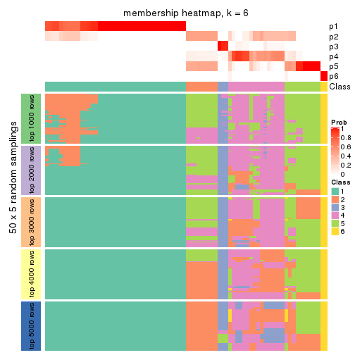
As soon as we have had the classes for columns, we can look for signatures which are significantly different between classes which can be candidate marks for certain classes. Following are the heatmaps for signatures.
Signature heatmaps where rows are scaled:
get_signatures(res, k = 2)

get_signatures(res, k = 3)
#> Error in mat[ceiling(1:nr/h_ratio), ceiling(1:nc/w_ratio), drop = FALSE]: subscript out of bounds

get_signatures(res, k = 4)
get_signatures(res, k = 5)
#> Error in mat[ceiling(1:nr/h_ratio), ceiling(1:nc/w_ratio), drop = FALSE]: subscript out of bounds
get_signatures(res, k = 6)
#> Error in mat[ceiling(1:nr/h_ratio), ceiling(1:nc/w_ratio), drop = FALSE]: subscript out of bounds

Signature heatmaps where rows are not scaled:
get_signatures(res, k = 2, scale_rows = FALSE)

get_signatures(res, k = 3, scale_rows = FALSE)
#> Error in mat[ceiling(1:nr/h_ratio), ceiling(1:nc/w_ratio), drop = FALSE]: subscript out of bounds
get_signatures(res, k = 4, scale_rows = FALSE)
get_signatures(res, k = 5, scale_rows = FALSE)
get_signatures(res, k = 6, scale_rows = FALSE)
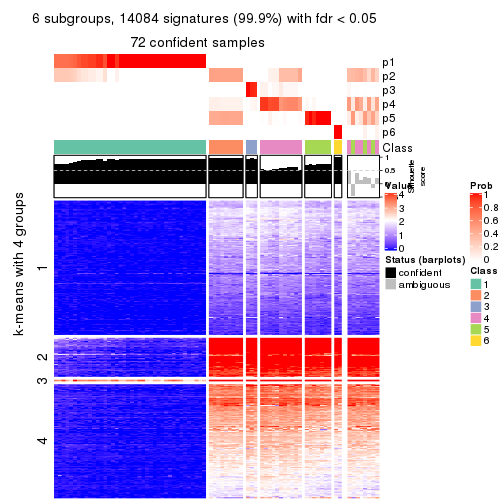
Compare the overlap of signatures from different k:
compare_signatures(res)
get_signature() returns a data frame invisibly. TO get the list of signatures, the function
call should be assigned to a variable explicitly. In following code, if plot argument is set
to FALSE, no heatmap is plotted while only the differential analysis is performed.
# code only for demonstration
tb = get_signature(res, k = ..., plot = FALSE)
An example of the output of tb is:
#> which_row fdr mean_1 mean_2 scaled_mean_1 scaled_mean_2 km
#> 1 38 0.042760348 8.373488 9.131774 -0.5533452 0.5164555 1
#> 2 40 0.018707592 7.106213 8.469186 -0.6173731 0.5762149 1
#> 3 55 0.019134737 10.221463 11.207825 -0.6159697 0.5749050 1
#> 4 59 0.006059896 5.921854 7.869574 -0.6899429 0.6439467 1
#> 5 60 0.018055526 8.928898 10.211722 -0.6204761 0.5791110 1
#> 6 98 0.009384629 15.714769 14.887706 0.6635654 -0.6193277 2
...
The columns in tb are:
which_row: row indices corresponding to the input matrix.fdr: FDR for the differential test. mean_x: The mean value in group x.scaled_mean_x: The mean value in group x after rows are scaled.km: Row groups if k-means clustering is applied to rows.UMAP plot which shows how samples are separated.
dimension_reduction(res, k = 2, method = "UMAP")

dimension_reduction(res, k = 3, method = "UMAP")
dimension_reduction(res, k = 4, method = "UMAP")
dimension_reduction(res, k = 5, method = "UMAP")
dimension_reduction(res, k = 6, method = "UMAP")
Following heatmap shows how subgroups are split when increasing k:
collect_classes(res)
If matrix rows can be associated to genes, consider to use functional_enrichment(res,
...) to perform function enrichment for the signature genes. See this vignette for more detailed explanations.
The object with results only for a single top-value method and a single partition method can be extracted as:
res = res_list["MAD", "kmeans"]
# you can also extract it by
# res = res_list["MAD:kmeans"]
A summary of res and all the functions that can be applied to it:
res
#> A 'ConsensusPartition' object with k = 2, 3, 4, 5, 6.
#> On a matrix with 14104 rows and 80 columns.
#> Top rows (1000, 2000, 3000, 4000, 5000) are extracted by 'MAD' method.
#> Subgroups are detected by 'kmeans' method.
#> Performed in total 1250 partitions by row resampling.
#> Best k for subgroups seems to be 2.
#>
#> Following methods can be applied to this 'ConsensusPartition' object:
#> [1] "cola_report" "collect_classes" "collect_plots"
#> [4] "collect_stats" "colnames" "compare_signatures"
#> [7] "consensus_heatmap" "dimension_reduction" "functional_enrichment"
#> [10] "get_anno_col" "get_anno" "get_classes"
#> [13] "get_consensus" "get_matrix" "get_membership"
#> [16] "get_param" "get_signatures" "get_stats"
#> [19] "is_best_k" "is_stable_k" "membership_heatmap"
#> [22] "ncol" "nrow" "plot_ecdf"
#> [25] "rownames" "select_partition_number" "show"
#> [28] "suggest_best_k" "test_to_known_factors"
collect_plots() function collects all the plots made from res for all k (number of partitions)
into one single page to provide an easy and fast comparison between different k.
collect_plots(res)
The plots are:
k and the heatmap of
predicted classes for each k.k.k.k.All the plots in panels can be made by individual functions and they are plotted later in this section.
select_partition_number() produces several plots showing different
statistics for choosing “optimized” k. There are following statistics:
k;k, the area increased is defined as \(A_k - A_{k-1}\).The detailed explanations of these statistics can be found in the cola vignette.
Generally speaking, lower PAC score, higher mean silhouette score or higher
concordance corresponds to better partition. Rand index and Jaccard index
measure how similar the current partition is compared to partition with k-1.
If they are too similar, we won't accept k is better than k-1.
select_partition_number(res)
The numeric values for all these statistics can be obtained by get_stats().
get_stats(res)
#> k 1-PAC mean_silhouette concordance area_increased Rand Jaccard
#> 2 2 1.000 1.000 1.000 0.5068 0.494 0.494
#> 3 3 0.749 0.889 0.818 0.2271 0.894 0.785
#> 4 4 0.634 0.771 0.752 0.1103 0.849 0.619
#> 5 5 0.609 0.681 0.785 0.0745 0.934 0.772
#> 6 6 0.715 0.602 0.749 0.0511 0.937 0.768
suggest_best_k() suggests the best \(k\) based on these statistics. The rules are as follows:
suggest_best_k(res)
#> [1] 2
Following shows the table of the partitions (You need to click the show/hide
code output link to see it). The membership matrix (columns with name p*)
is inferred by
clue::cl_consensus()
function with the SE method. Basically the value in the membership matrix
represents the probability to belong to a certain group. The finall class
label for an item is determined with the group with highest probability it
belongs to.
In get_classes() function, the entropy is calculated from the membership
matrix and the silhouette score is calculated from the consensus matrix.
cbind(get_classes(res, k = 2), get_membership(res, k = 2))
#> class entropy silhouette p1 p2
#> SRR830972 2 0 1 0 1
#> SRR830973 2 0 1 0 1
#> SRR830974 2 0 1 0 1
#> SRR830975 2 0 1 0 1
#> SRR830976 2 0 1 0 1
#> SRR830977 2 0 1 0 1
#> SRR830978 2 0 1 0 1
#> SRR830979 2 0 1 0 1
#> SRR830980 2 0 1 0 1
#> SRR830982 2 0 1 0 1
#> SRR830981 2 0 1 0 1
#> SRR830983 2 0 1 0 1
#> SRR831010 1 0 1 1 0
#> SRR831011 1 0 1 1 0
#> SRR831012 1 0 1 1 0
#> SRR831013 1 0 1 1 0
#> SRR831014 1 0 1 1 0
#> SRR831015 1 0 1 1 0
#> SRR831016 1 0 1 1 0
#> SRR831017 1 0 1 1 0
#> SRR831018 1 0 1 1 0
#> SRR831019 1 0 1 1 0
#> SRR831020 1 0 1 1 0
#> SRR831021 1 0 1 1 0
#> SRR831022 1 0 1 1 0
#> SRR831023 1 0 1 1 0
#> SRR831024 1 0 1 1 0
#> SRR831025 1 0 1 1 0
#> SRR831026 1 0 1 1 0
#> SRR831027 1 0 1 1 0
#> SRR831028 1 0 1 1 0
#> SRR831029 1 0 1 1 0
#> SRR831030 1 0 1 1 0
#> SRR831031 1 0 1 1 0
#> SRR831032 1 0 1 1 0
#> SRR831033 1 0 1 1 0
#> SRR831034 1 0 1 1 0
#> SRR831035 1 0 1 1 0
#> SRR831036 1 0 1 1 0
#> SRR831037 1 0 1 1 0
#> SRR831038 1 0 1 1 0
#> SRR831039 1 0 1 1 0
#> SRR831040 1 0 1 1 0
#> SRR831041 1 0 1 1 0
#> SRR831042 1 0 1 1 0
#> SRR831043 1 0 1 1 0
#> SRR831044 1 0 1 1 0
#> SRR830965 2 0 1 0 1
#> SRR830966 2 0 1 0 1
#> SRR830967 2 0 1 0 1
#> SRR830968 2 0 1 0 1
#> SRR830969 2 0 1 0 1
#> SRR830970 2 0 1 0 1
#> SRR830971 2 0 1 0 1
#> SRR830984 2 0 1 0 1
#> SRR830985 2 0 1 0 1
#> SRR830986 2 0 1 0 1
#> SRR830987 2 0 1 0 1
#> SRR830988 2 0 1 0 1
#> SRR830989 2 0 1 0 1
#> SRR830990 2 0 1 0 1
#> SRR830991 2 0 1 0 1
#> SRR830992 2 0 1 0 1
#> SRR830993 2 0 1 0 1
#> SRR830994 2 0 1 0 1
#> SRR830995 2 0 1 0 1
#> SRR830996 2 0 1 0 1
#> SRR830997 2 0 1 0 1
#> SRR830998 2 0 1 0 1
#> SRR830999 2 0 1 0 1
#> SRR831000 2 0 1 0 1
#> SRR831001 2 0 1 0 1
#> SRR831002 2 0 1 0 1
#> SRR831003 2 0 1 0 1
#> SRR831004 2 0 1 0 1
#> SRR831005 1 0 1 1 0
#> SRR831006 1 0 1 1 0
#> SRR831007 1 0 1 1 0
#> SRR831008 1 0 1 1 0
#> SRR831009 1 0 1 1 0
cbind(get_classes(res, k = 3), get_membership(res, k = 3))
#> class entropy silhouette p1 p2 p3
#> SRR830972 2 0.000 0.799 0.000 1.000 0.000
#> SRR830973 2 0.630 0.750 0.000 0.520 0.480
#> SRR830974 2 0.000 0.799 0.000 1.000 0.000
#> SRR830975 2 0.000 0.799 0.000 1.000 0.000
#> SRR830976 2 0.000 0.799 0.000 1.000 0.000
#> SRR830977 2 0.630 0.750 0.000 0.520 0.480
#> SRR830978 2 0.630 0.750 0.000 0.520 0.480
#> SRR830979 2 0.630 0.749 0.000 0.516 0.484
#> SRR830980 2 0.000 0.799 0.000 1.000 0.000
#> SRR830982 2 0.000 0.799 0.000 1.000 0.000
#> SRR830981 2 0.630 0.750 0.000 0.520 0.480
#> SRR830983 2 0.000 0.799 0.000 1.000 0.000
#> SRR831010 1 0.000 1.000 1.000 0.000 0.000
#> SRR831011 1 0.000 1.000 1.000 0.000 0.000
#> SRR831012 1 0.000 1.000 1.000 0.000 0.000
#> SRR831013 1 0.000 1.000 1.000 0.000 0.000
#> SRR831014 1 0.000 1.000 1.000 0.000 0.000
#> SRR831015 1 0.000 1.000 1.000 0.000 0.000
#> SRR831016 1 0.000 1.000 1.000 0.000 0.000
#> SRR831017 3 0.630 1.000 0.484 0.000 0.516
#> SRR831018 1 0.000 1.000 1.000 0.000 0.000
#> SRR831019 3 0.630 1.000 0.484 0.000 0.516
#> SRR831020 3 0.630 1.000 0.484 0.000 0.516
#> SRR831021 1 0.000 1.000 1.000 0.000 0.000
#> SRR831022 1 0.000 1.000 1.000 0.000 0.000
#> SRR831023 3 0.630 1.000 0.484 0.000 0.516
#> SRR831024 1 0.000 1.000 1.000 0.000 0.000
#> SRR831025 3 0.630 1.000 0.484 0.000 0.516
#> SRR831026 3 0.630 1.000 0.484 0.000 0.516
#> SRR831027 1 0.000 1.000 1.000 0.000 0.000
#> SRR831028 3 0.630 1.000 0.484 0.000 0.516
#> SRR831029 1 0.000 1.000 1.000 0.000 0.000
#> SRR831030 1 0.000 1.000 1.000 0.000 0.000
#> SRR831031 1 0.000 1.000 1.000 0.000 0.000
#> SRR831032 1 0.000 1.000 1.000 0.000 0.000
#> SRR831033 1 0.000 1.000 1.000 0.000 0.000
#> SRR831034 3 0.630 1.000 0.484 0.000 0.516
#> SRR831035 3 0.630 1.000 0.484 0.000 0.516
#> SRR831036 3 0.630 1.000 0.484 0.000 0.516
#> SRR831037 3 0.630 1.000 0.484 0.000 0.516
#> SRR831038 1 0.000 1.000 1.000 0.000 0.000
#> SRR831039 1 0.000 1.000 1.000 0.000 0.000
#> SRR831040 1 0.000 1.000 1.000 0.000 0.000
#> SRR831041 1 0.000 1.000 1.000 0.000 0.000
#> SRR831042 1 0.000 1.000 1.000 0.000 0.000
#> SRR831043 1 0.000 1.000 1.000 0.000 0.000
#> SRR831044 1 0.000 1.000 1.000 0.000 0.000
#> SRR830965 2 0.000 0.799 0.000 1.000 0.000
#> SRR830966 2 0.000 0.799 0.000 1.000 0.000
#> SRR830967 2 0.000 0.799 0.000 1.000 0.000
#> SRR830968 2 0.000 0.799 0.000 1.000 0.000
#> SRR830969 2 0.621 0.757 0.000 0.572 0.428
#> SRR830970 2 0.000 0.799 0.000 1.000 0.000
#> SRR830971 2 0.000 0.799 0.000 1.000 0.000
#> SRR830984 2 0.630 0.749 0.000 0.516 0.484
#> SRR830985 2 0.630 0.750 0.000 0.520 0.480
#> SRR830986 2 0.000 0.799 0.000 1.000 0.000
#> SRR830987 2 0.000 0.799 0.000 1.000 0.000
#> SRR830988 2 0.000 0.799 0.000 1.000 0.000
#> SRR830989 2 0.304 0.793 0.000 0.896 0.104
#> SRR830990 2 0.630 0.749 0.000 0.516 0.484
#> SRR830991 2 0.319 0.794 0.000 0.888 0.112
#> SRR830992 2 0.475 0.784 0.000 0.784 0.216
#> SRR830993 2 0.445 0.786 0.000 0.808 0.192
#> SRR830994 2 0.629 0.754 0.000 0.536 0.464
#> SRR830995 2 0.000 0.799 0.000 1.000 0.000
#> SRR830996 2 0.630 0.750 0.000 0.520 0.480
#> SRR830997 2 0.630 0.749 0.000 0.516 0.484
#> SRR830998 2 0.630 0.750 0.000 0.520 0.480
#> SRR830999 2 0.000 0.799 0.000 1.000 0.000
#> SRR831000 2 0.630 0.751 0.000 0.524 0.476
#> SRR831001 2 0.630 0.750 0.000 0.520 0.480
#> SRR831002 2 0.630 0.750 0.000 0.520 0.480
#> SRR831003 2 0.630 0.750 0.000 0.520 0.480
#> SRR831004 2 0.000 0.799 0.000 1.000 0.000
#> SRR831005 1 0.000 1.000 1.000 0.000 0.000
#> SRR831006 1 0.000 1.000 1.000 0.000 0.000
#> SRR831007 1 0.000 1.000 1.000 0.000 0.000
#> SRR831008 3 0.630 1.000 0.484 0.000 0.516
#> SRR831009 1 0.000 1.000 1.000 0.000 0.000
cbind(get_classes(res, k = 4), get_membership(res, k = 4))
#> class entropy silhouette p1 p2 p3 p4
#> SRR830972 2 0.6238 0.885 0.084 0.620 0.296 0.000
#> SRR830973 3 0.0592 0.839 0.000 0.016 0.984 0.000
#> SRR830974 2 0.4661 0.896 0.000 0.652 0.348 0.000
#> SRR830975 2 0.4624 0.900 0.000 0.660 0.340 0.000
#> SRR830976 2 0.4624 0.900 0.000 0.660 0.340 0.000
#> SRR830977 3 0.0376 0.844 0.004 0.004 0.992 0.000
#> SRR830978 3 0.0336 0.844 0.008 0.000 0.992 0.000
#> SRR830979 3 0.3105 0.796 0.140 0.004 0.856 0.000
#> SRR830980 2 0.4624 0.900 0.000 0.660 0.340 0.000
#> SRR830982 2 0.4697 0.889 0.000 0.644 0.356 0.000
#> SRR830981 3 0.1151 0.841 0.008 0.024 0.968 0.000
#> SRR830983 2 0.4661 0.896 0.000 0.652 0.348 0.000
#> SRR831010 1 0.4431 0.928 0.696 0.000 0.000 0.304
#> SRR831011 1 0.4431 0.928 0.696 0.000 0.000 0.304
#> SRR831012 1 0.4431 0.928 0.696 0.000 0.000 0.304
#> SRR831013 1 0.7137 0.766 0.536 0.160 0.000 0.304
#> SRR831014 1 0.6497 0.838 0.596 0.100 0.000 0.304
#> SRR831015 1 0.7102 0.772 0.540 0.156 0.000 0.304
#> SRR831016 1 0.7399 0.530 0.420 0.164 0.000 0.416
#> SRR831017 4 0.2530 0.787 0.000 0.112 0.000 0.888
#> SRR831018 1 0.4431 0.928 0.696 0.000 0.000 0.304
#> SRR831019 4 0.2760 0.784 0.000 0.128 0.000 0.872
#> SRR831020 4 0.2921 0.720 0.000 0.140 0.000 0.860
#> SRR831021 1 0.4431 0.928 0.696 0.000 0.000 0.304
#> SRR831022 1 0.4431 0.928 0.696 0.000 0.000 0.304
#> SRR831023 4 0.0000 0.783 0.000 0.000 0.000 1.000
#> SRR831024 1 0.4431 0.928 0.696 0.000 0.000 0.304
#> SRR831025 4 0.2530 0.787 0.000 0.112 0.000 0.888
#> SRR831026 4 0.3219 0.701 0.000 0.164 0.000 0.836
#> SRR831027 4 0.7397 -0.551 0.408 0.164 0.000 0.428
#> SRR831028 4 0.2921 0.720 0.000 0.140 0.000 0.860
#> SRR831029 1 0.6548 0.834 0.592 0.104 0.000 0.304
#> SRR831030 1 0.4431 0.928 0.696 0.000 0.000 0.304
#> SRR831031 1 0.7391 0.580 0.440 0.164 0.000 0.396
#> SRR831032 1 0.4431 0.928 0.696 0.000 0.000 0.304
#> SRR831033 1 0.4431 0.928 0.696 0.000 0.000 0.304
#> SRR831034 4 0.2760 0.784 0.000 0.128 0.000 0.872
#> SRR831035 4 0.2760 0.784 0.000 0.128 0.000 0.872
#> SRR831036 4 0.0000 0.783 0.000 0.000 0.000 1.000
#> SRR831037 4 0.2589 0.786 0.000 0.116 0.000 0.884
#> SRR831038 1 0.4431 0.928 0.696 0.000 0.000 0.304
#> SRR831039 1 0.4431 0.928 0.696 0.000 0.000 0.304
#> SRR831040 1 0.4431 0.928 0.696 0.000 0.000 0.304
#> SRR831041 1 0.4431 0.928 0.696 0.000 0.000 0.304
#> SRR831042 1 0.4431 0.928 0.696 0.000 0.000 0.304
#> SRR831043 1 0.4431 0.928 0.696 0.000 0.000 0.304
#> SRR831044 1 0.4431 0.928 0.696 0.000 0.000 0.304
#> SRR830965 2 0.6238 0.885 0.084 0.620 0.296 0.000
#> SRR830966 2 0.6238 0.885 0.084 0.620 0.296 0.000
#> SRR830967 2 0.6350 0.881 0.092 0.612 0.296 0.000
#> SRR830968 2 0.6350 0.881 0.092 0.612 0.296 0.000
#> SRR830969 3 0.1022 0.828 0.000 0.032 0.968 0.000
#> SRR830970 2 0.6238 0.885 0.084 0.620 0.296 0.000
#> SRR830971 2 0.6350 0.881 0.092 0.612 0.296 0.000
#> SRR830984 3 0.1452 0.839 0.036 0.008 0.956 0.000
#> SRR830985 3 0.0657 0.844 0.012 0.004 0.984 0.000
#> SRR830986 2 0.4661 0.896 0.000 0.652 0.348 0.000
#> SRR830987 2 0.4624 0.900 0.000 0.660 0.340 0.000
#> SRR830988 2 0.4624 0.900 0.000 0.660 0.340 0.000
#> SRR830989 2 0.7752 0.551 0.236 0.404 0.360 0.000
#> SRR830990 3 0.3257 0.791 0.152 0.004 0.844 0.000
#> SRR830991 3 0.6011 -0.552 0.040 0.476 0.484 0.000
#> SRR830992 3 0.5535 0.164 0.040 0.304 0.656 0.000
#> SRR830993 3 0.7679 -0.305 0.236 0.316 0.448 0.000
#> SRR830994 3 0.3441 0.806 0.120 0.024 0.856 0.000
#> SRR830995 2 0.6404 0.876 0.096 0.608 0.296 0.000
#> SRR830996 3 0.1545 0.843 0.040 0.008 0.952 0.000
#> SRR830997 3 0.3105 0.796 0.140 0.004 0.856 0.000
#> SRR830998 3 0.1211 0.843 0.040 0.000 0.960 0.000
#> SRR830999 2 0.5411 0.894 0.032 0.656 0.312 0.000
#> SRR831000 3 0.2329 0.834 0.072 0.012 0.916 0.000
#> SRR831001 3 0.1398 0.844 0.040 0.004 0.956 0.000
#> SRR831002 3 0.2334 0.835 0.088 0.004 0.908 0.000
#> SRR831003 3 0.1398 0.844 0.040 0.004 0.956 0.000
#> SRR831004 2 0.4699 0.900 0.004 0.676 0.320 0.000
#> SRR831005 1 0.4431 0.928 0.696 0.000 0.000 0.304
#> SRR831006 4 0.7398 -0.560 0.412 0.164 0.000 0.424
#> SRR831007 1 0.4431 0.928 0.696 0.000 0.000 0.304
#> SRR831008 4 0.0188 0.783 0.000 0.004 0.000 0.996
#> SRR831009 1 0.7137 0.766 0.536 0.160 0.000 0.304
cbind(get_classes(res, k = 5), get_membership(res, k = 5))
#> class entropy silhouette p1 p2 p3 p4 p5
#> SRR830972 2 0.3796 0.750 0.000 0.700 0.000 0.000 0.300
#> SRR830973 4 0.3424 0.881 0.000 0.240 0.000 0.760 0.000
#> SRR830974 2 0.0290 0.792 0.000 0.992 0.000 0.008 0.000
#> SRR830975 2 0.0162 0.794 0.000 0.996 0.000 0.004 0.000
#> SRR830976 2 0.0162 0.794 0.000 0.996 0.000 0.004 0.000
#> SRR830977 4 0.3242 0.889 0.000 0.216 0.000 0.784 0.000
#> SRR830978 4 0.3143 0.890 0.000 0.204 0.000 0.796 0.000
#> SRR830979 4 0.5759 0.829 0.000 0.156 0.068 0.696 0.080
#> SRR830980 2 0.0162 0.794 0.000 0.996 0.000 0.004 0.000
#> SRR830982 2 0.0290 0.792 0.000 0.992 0.000 0.008 0.000
#> SRR830981 4 0.3715 0.872 0.000 0.260 0.000 0.736 0.004
#> SRR830983 2 0.0290 0.792 0.000 0.992 0.000 0.008 0.000
#> SRR831010 1 0.0000 0.878 1.000 0.000 0.000 0.000 0.000
#> SRR831011 1 0.0000 0.878 1.000 0.000 0.000 0.000 0.000
#> SRR831012 1 0.0000 0.878 1.000 0.000 0.000 0.000 0.000
#> SRR831013 1 0.4834 0.717 0.748 0.000 0.160 0.072 0.020
#> SRR831014 1 0.4063 0.782 0.816 0.000 0.076 0.088 0.020
#> SRR831015 1 0.4796 0.720 0.752 0.000 0.156 0.072 0.020
#> SRR831016 1 0.5831 0.487 0.588 0.000 0.324 0.068 0.020
#> SRR831017 3 0.6934 -0.485 0.164 0.000 0.476 0.028 0.332
#> SRR831018 1 0.0290 0.878 0.992 0.000 0.000 0.008 0.000
#> SRR831019 5 0.6498 1.000 0.164 0.000 0.384 0.004 0.448
#> SRR831020 3 0.2773 0.397 0.164 0.000 0.836 0.000 0.000
#> SRR831021 1 0.0162 0.878 0.996 0.000 0.000 0.000 0.004
#> SRR831022 1 0.0162 0.878 0.996 0.000 0.000 0.000 0.004
#> SRR831023 3 0.5683 0.329 0.164 0.000 0.664 0.012 0.160
#> SRR831024 1 0.0162 0.878 0.996 0.000 0.000 0.000 0.004
#> SRR831025 3 0.6803 -0.505 0.164 0.000 0.476 0.020 0.340
#> SRR831026 3 0.4117 0.366 0.164 0.000 0.788 0.028 0.020
#> SRR831027 1 0.5923 0.428 0.560 0.000 0.352 0.068 0.020
#> SRR831028 3 0.3449 0.389 0.164 0.000 0.812 0.024 0.000
#> SRR831029 1 0.4164 0.779 0.808 0.000 0.072 0.100 0.020
#> SRR831030 1 0.0566 0.878 0.984 0.000 0.000 0.012 0.004
#> SRR831031 1 0.5751 0.538 0.616 0.000 0.292 0.072 0.020
#> SRR831032 1 0.0703 0.874 0.976 0.000 0.000 0.024 0.000
#> SRR831033 1 0.0290 0.878 0.992 0.000 0.000 0.008 0.000
#> SRR831034 3 0.6794 -0.801 0.164 0.000 0.420 0.016 0.400
#> SRR831035 5 0.6498 1.000 0.164 0.000 0.384 0.004 0.448
#> SRR831036 3 0.5647 0.332 0.164 0.000 0.668 0.012 0.156
#> SRR831037 3 0.6782 -0.717 0.164 0.000 0.440 0.016 0.380
#> SRR831038 1 0.0162 0.878 0.996 0.000 0.000 0.000 0.004
#> SRR831039 1 0.0162 0.878 0.996 0.000 0.000 0.000 0.004
#> SRR831040 1 0.0609 0.875 0.980 0.000 0.000 0.020 0.000
#> SRR831041 1 0.0162 0.878 0.996 0.000 0.000 0.000 0.004
#> SRR831042 1 0.0566 0.878 0.984 0.000 0.000 0.012 0.004
#> SRR831043 1 0.0510 0.877 0.984 0.000 0.000 0.016 0.000
#> SRR831044 1 0.0703 0.874 0.976 0.000 0.000 0.024 0.000
#> SRR830965 2 0.3796 0.750 0.000 0.700 0.000 0.000 0.300
#> SRR830966 2 0.3796 0.750 0.000 0.700 0.000 0.000 0.300
#> SRR830967 2 0.3895 0.742 0.000 0.680 0.000 0.000 0.320
#> SRR830968 2 0.3895 0.742 0.000 0.680 0.000 0.000 0.320
#> SRR830969 4 0.3636 0.850 0.000 0.272 0.000 0.728 0.000
#> SRR830970 2 0.3796 0.750 0.000 0.700 0.000 0.000 0.300
#> SRR830971 2 0.3895 0.742 0.000 0.680 0.000 0.000 0.320
#> SRR830984 4 0.4487 0.882 0.000 0.196 0.032 0.752 0.020
#> SRR830985 4 0.3177 0.889 0.000 0.208 0.000 0.792 0.000
#> SRR830986 2 0.0290 0.792 0.000 0.992 0.000 0.008 0.000
#> SRR830987 2 0.0162 0.794 0.000 0.996 0.000 0.004 0.000
#> SRR830988 2 0.0162 0.794 0.000 0.996 0.000 0.004 0.000
#> SRR830989 2 0.7567 0.358 0.000 0.484 0.112 0.132 0.272
#> SRR830990 4 0.5915 0.825 0.000 0.156 0.068 0.684 0.092
#> SRR830991 2 0.5443 0.590 0.000 0.724 0.060 0.136 0.080
#> SRR830992 2 0.5864 0.230 0.000 0.628 0.060 0.272 0.040
#> SRR830993 2 0.7977 0.119 0.000 0.420 0.108 0.212 0.260
#> SRR830994 4 0.6702 0.783 0.000 0.204 0.092 0.604 0.100
#> SRR830995 2 0.4302 0.753 0.000 0.720 0.032 0.000 0.248
#> SRR830996 4 0.5296 0.869 0.000 0.196 0.060 0.708 0.036
#> SRR830997 4 0.5759 0.829 0.000 0.156 0.068 0.696 0.080
#> SRR830998 4 0.2930 0.890 0.000 0.164 0.004 0.832 0.000
#> SRR830999 2 0.2813 0.781 0.000 0.868 0.024 0.000 0.108
#> SRR831000 4 0.5662 0.850 0.000 0.200 0.064 0.684 0.052
#> SRR831001 4 0.4234 0.887 0.000 0.172 0.040 0.776 0.012
#> SRR831002 4 0.5432 0.863 0.000 0.172 0.064 0.712 0.052
#> SRR831003 4 0.4909 0.877 0.000 0.176 0.056 0.740 0.028
#> SRR831004 2 0.1197 0.793 0.000 0.952 0.000 0.000 0.048
#> SRR831005 1 0.0000 0.878 1.000 0.000 0.000 0.000 0.000
#> SRR831006 1 0.5911 0.437 0.564 0.000 0.348 0.068 0.020
#> SRR831007 1 0.0000 0.878 1.000 0.000 0.000 0.000 0.000
#> SRR831008 3 0.6279 0.295 0.164 0.000 0.640 0.048 0.148
#> SRR831009 1 0.4872 0.713 0.744 0.000 0.164 0.072 0.020
cbind(get_classes(res, k = 6), get_membership(res, k = 6))
#> class entropy silhouette p1 p2 p3 p4 p5 p6
#> SRR830972 2 0.6374 0.50714 0.000 0.540 0.112 0.088 0.000 0.260
#> SRR830973 4 0.2118 0.73655 0.000 0.104 0.000 0.888 0.008 0.000
#> SRR830974 2 0.1957 0.65772 0.000 0.888 0.000 0.112 0.000 0.000
#> SRR830975 2 0.1910 0.66047 0.000 0.892 0.000 0.108 0.000 0.000
#> SRR830976 2 0.1910 0.66047 0.000 0.892 0.000 0.108 0.000 0.000
#> SRR830977 4 0.1866 0.74378 0.000 0.084 0.000 0.908 0.008 0.000
#> SRR830978 4 0.1524 0.74977 0.000 0.060 0.000 0.932 0.008 0.000
#> SRR830979 4 0.4268 0.57856 0.000 0.000 0.172 0.752 0.044 0.032
#> SRR830980 2 0.1910 0.66047 0.000 0.892 0.000 0.108 0.000 0.000
#> SRR830982 2 0.1957 0.65772 0.000 0.888 0.000 0.112 0.000 0.000
#> SRR830981 4 0.2955 0.68647 0.000 0.172 0.008 0.816 0.004 0.000
#> SRR830983 2 0.1957 0.65772 0.000 0.888 0.000 0.112 0.000 0.000
#> SRR831010 1 0.0146 0.83752 0.996 0.004 0.000 0.000 0.000 0.000
#> SRR831011 1 0.0146 0.83721 0.996 0.000 0.000 0.000 0.000 0.004
#> SRR831012 1 0.0146 0.83752 0.996 0.004 0.000 0.000 0.000 0.000
#> SRR831013 1 0.5508 0.20138 0.564 0.000 0.212 0.000 0.000 0.224
#> SRR831014 1 0.5300 0.41913 0.620 0.012 0.248 0.000 0.000 0.120
#> SRR831015 1 0.5465 0.21625 0.572 0.000 0.208 0.000 0.000 0.220
#> SRR831016 6 0.5852 0.36048 0.388 0.000 0.192 0.000 0.000 0.420
#> SRR831017 5 0.5420 0.72091 0.080 0.016 0.044 0.000 0.684 0.176
#> SRR831018 1 0.1268 0.82848 0.952 0.008 0.036 0.000 0.000 0.004
#> SRR831019 5 0.2611 0.71279 0.080 0.028 0.012 0.000 0.880 0.000
#> SRR831020 6 0.4829 -0.10011 0.080 0.000 0.000 0.000 0.308 0.612
#> SRR831021 1 0.0000 0.83753 1.000 0.000 0.000 0.000 0.000 0.000
#> SRR831022 1 0.0000 0.83753 1.000 0.000 0.000 0.000 0.000 0.000
#> SRR831023 5 0.5748 0.55179 0.080 0.004 0.024 0.000 0.488 0.404
#> SRR831024 1 0.0146 0.83752 0.996 0.004 0.000 0.000 0.000 0.000
#> SRR831025 5 0.5107 0.72631 0.080 0.012 0.032 0.000 0.704 0.172
#> SRR831026 6 0.4875 0.03618 0.080 0.000 0.008 0.000 0.264 0.648
#> SRR831027 6 0.5709 0.44026 0.364 0.000 0.168 0.000 0.000 0.468
#> SRR831028 6 0.4747 -0.04189 0.080 0.000 0.000 0.000 0.288 0.632
#> SRR831029 1 0.5655 0.39709 0.604 0.032 0.244 0.000 0.000 0.120
#> SRR831030 1 0.0260 0.83736 0.992 0.000 0.008 0.000 0.000 0.000
#> SRR831031 1 0.5941 -0.40334 0.408 0.000 0.216 0.000 0.000 0.376
#> SRR831032 1 0.1542 0.82326 0.936 0.008 0.052 0.000 0.000 0.004
#> SRR831033 1 0.1194 0.82952 0.956 0.008 0.032 0.000 0.000 0.004
#> SRR831034 5 0.3314 0.72652 0.080 0.004 0.032 0.000 0.848 0.036
#> SRR831035 5 0.2532 0.71404 0.080 0.024 0.012 0.000 0.884 0.000
#> SRR831036 5 0.5408 0.54444 0.080 0.000 0.012 0.000 0.492 0.416
#> SRR831037 5 0.3887 0.72465 0.080 0.016 0.036 0.000 0.820 0.048
#> SRR831038 1 0.0000 0.83753 1.000 0.000 0.000 0.000 0.000 0.000
#> SRR831039 1 0.0000 0.83753 1.000 0.000 0.000 0.000 0.000 0.000
#> SRR831040 1 0.1410 0.82591 0.944 0.008 0.044 0.000 0.000 0.004
#> SRR831041 1 0.0146 0.83752 0.996 0.004 0.000 0.000 0.000 0.000
#> SRR831042 1 0.1606 0.82207 0.932 0.008 0.056 0.000 0.000 0.004
#> SRR831043 1 0.1542 0.82326 0.936 0.008 0.052 0.000 0.000 0.004
#> SRR831044 1 0.1606 0.82180 0.932 0.008 0.056 0.000 0.000 0.004
#> SRR830965 2 0.6414 0.50624 0.000 0.536 0.112 0.092 0.000 0.260
#> SRR830966 2 0.6414 0.50624 0.000 0.536 0.112 0.092 0.000 0.260
#> SRR830967 2 0.6576 0.47573 0.000 0.512 0.128 0.092 0.000 0.268
#> SRR830968 2 0.6576 0.47573 0.000 0.512 0.128 0.092 0.000 0.268
#> SRR830969 4 0.2355 0.73014 0.000 0.112 0.004 0.876 0.008 0.000
#> SRR830970 2 0.6414 0.50624 0.000 0.536 0.112 0.092 0.000 0.260
#> SRR830971 2 0.6576 0.47573 0.000 0.512 0.128 0.092 0.000 0.268
#> SRR830984 4 0.3709 0.68987 0.000 0.052 0.056 0.836 0.032 0.024
#> SRR830985 4 0.1866 0.74378 0.000 0.084 0.000 0.908 0.008 0.000
#> SRR830986 2 0.1957 0.65772 0.000 0.888 0.000 0.112 0.000 0.000
#> SRR830987 2 0.1910 0.66047 0.000 0.892 0.000 0.108 0.000 0.000
#> SRR830988 2 0.1910 0.66047 0.000 0.892 0.000 0.108 0.000 0.000
#> SRR830989 3 0.7098 0.76771 0.000 0.284 0.464 0.168 0.024 0.060
#> SRR830990 4 0.4337 0.57361 0.000 0.000 0.180 0.744 0.040 0.036
#> SRR830991 2 0.6073 -0.00499 0.000 0.504 0.172 0.308 0.008 0.008
#> SRR830992 4 0.6048 -0.15002 0.000 0.400 0.160 0.428 0.008 0.004
#> SRR830993 3 0.7188 0.80018 0.000 0.208 0.460 0.248 0.024 0.060
#> SRR830994 4 0.4020 0.59783 0.000 0.032 0.276 0.692 0.000 0.000
#> SRR830995 2 0.6507 0.45151 0.000 0.564 0.184 0.092 0.004 0.156
#> SRR830996 4 0.3263 0.70532 0.000 0.020 0.160 0.812 0.004 0.004
#> SRR830997 4 0.4272 0.57826 0.000 0.000 0.172 0.752 0.040 0.036
#> SRR830998 4 0.1180 0.75045 0.000 0.012 0.016 0.960 0.000 0.012
#> SRR830999 2 0.5066 0.57037 0.000 0.728 0.100 0.096 0.008 0.068
#> SRR831000 4 0.3593 0.68138 0.000 0.028 0.180 0.784 0.004 0.004
#> SRR831001 4 0.2468 0.73525 0.000 0.012 0.092 0.884 0.004 0.008
#> SRR831002 4 0.3262 0.69416 0.000 0.012 0.180 0.800 0.004 0.004
#> SRR831003 4 0.3098 0.71465 0.000 0.016 0.140 0.832 0.004 0.008
#> SRR831004 2 0.3173 0.64459 0.000 0.848 0.016 0.100 0.004 0.032
#> SRR831005 1 0.0000 0.83753 1.000 0.000 0.000 0.000 0.000 0.000
#> SRR831006 6 0.5741 0.42527 0.372 0.000 0.172 0.000 0.000 0.456
#> SRR831007 1 0.0000 0.83753 1.000 0.000 0.000 0.000 0.000 0.000
#> SRR831008 5 0.6355 0.56897 0.080 0.012 0.056 0.000 0.472 0.380
#> SRR831009 1 0.5508 0.20138 0.564 0.000 0.212 0.000 0.000 0.224
Heatmaps for the consensus matrix. It visualizes the probability of two samples to be in a same group.
consensus_heatmap(res, k = 2)

consensus_heatmap(res, k = 3)
consensus_heatmap(res, k = 4)
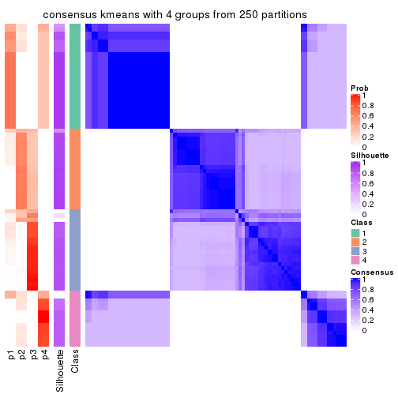
consensus_heatmap(res, k = 5)
consensus_heatmap(res, k = 6)
Heatmaps for the membership of samples in all partitions to see how consistent they are:
membership_heatmap(res, k = 2)

membership_heatmap(res, k = 3)
membership_heatmap(res, k = 4)
membership_heatmap(res, k = 5)
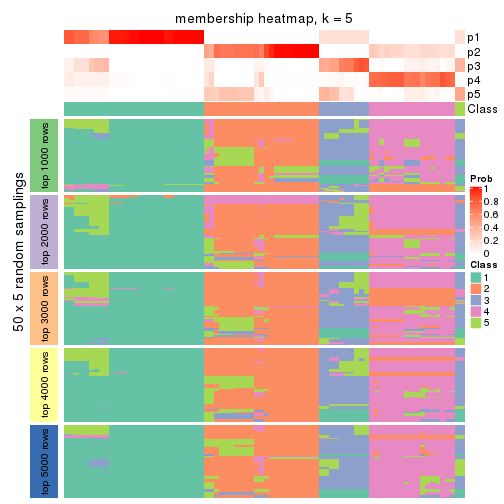
membership_heatmap(res, k = 6)
As soon as we have had the classes for columns, we can look for signatures which are significantly different between classes which can be candidate marks for certain classes. Following are the heatmaps for signatures.
Signature heatmaps where rows are scaled:
get_signatures(res, k = 2)

get_signatures(res, k = 3)
get_signatures(res, k = 4)
get_signatures(res, k = 5)
get_signatures(res, k = 6)
Signature heatmaps where rows are not scaled:
get_signatures(res, k = 2, scale_rows = FALSE)

get_signatures(res, k = 3, scale_rows = FALSE)
get_signatures(res, k = 4, scale_rows = FALSE)
get_signatures(res, k = 5, scale_rows = FALSE)
get_signatures(res, k = 6, scale_rows = FALSE)
Compare the overlap of signatures from different k:
compare_signatures(res)
get_signature() returns a data frame invisibly. TO get the list of signatures, the function
call should be assigned to a variable explicitly. In following code, if plot argument is set
to FALSE, no heatmap is plotted while only the differential analysis is performed.
# code only for demonstration
tb = get_signature(res, k = ..., plot = FALSE)
An example of the output of tb is:
#> which_row fdr mean_1 mean_2 scaled_mean_1 scaled_mean_2 km
#> 1 38 0.042760348 8.373488 9.131774 -0.5533452 0.5164555 1
#> 2 40 0.018707592 7.106213 8.469186 -0.6173731 0.5762149 1
#> 3 55 0.019134737 10.221463 11.207825 -0.6159697 0.5749050 1
#> 4 59 0.006059896 5.921854 7.869574 -0.6899429 0.6439467 1
#> 5 60 0.018055526 8.928898 10.211722 -0.6204761 0.5791110 1
#> 6 98 0.009384629 15.714769 14.887706 0.6635654 -0.6193277 2
...
The columns in tb are:
which_row: row indices corresponding to the input matrix.fdr: FDR for the differential test. mean_x: The mean value in group x.scaled_mean_x: The mean value in group x after rows are scaled.km: Row groups if k-means clustering is applied to rows.UMAP plot which shows how samples are separated.
dimension_reduction(res, k = 2, method = "UMAP")
dimension_reduction(res, k = 3, method = "UMAP")

dimension_reduction(res, k = 4, method = "UMAP")
dimension_reduction(res, k = 5, method = "UMAP")
dimension_reduction(res, k = 6, method = "UMAP")
Following heatmap shows how subgroups are split when increasing k:
collect_classes(res)
If matrix rows can be associated to genes, consider to use functional_enrichment(res,
...) to perform function enrichment for the signature genes. See this vignette for more detailed explanations.
The object with results only for a single top-value method and a single partition method can be extracted as:
res = res_list["MAD", "skmeans"]
# you can also extract it by
# res = res_list["MAD:skmeans"]
A summary of res and all the functions that can be applied to it:
res
#> A 'ConsensusPartition' object with k = 2, 3, 4, 5, 6.
#> On a matrix with 14104 rows and 80 columns.
#> Top rows (1000, 2000, 3000, 4000, 5000) are extracted by 'MAD' method.
#> Subgroups are detected by 'skmeans' method.
#> Performed in total 1250 partitions by row resampling.
#> Best k for subgroups seems to be 3.
#>
#> Following methods can be applied to this 'ConsensusPartition' object:
#> [1] "cola_report" "collect_classes" "collect_plots"
#> [4] "collect_stats" "colnames" "compare_signatures"
#> [7] "consensus_heatmap" "dimension_reduction" "functional_enrichment"
#> [10] "get_anno_col" "get_anno" "get_classes"
#> [13] "get_consensus" "get_matrix" "get_membership"
#> [16] "get_param" "get_signatures" "get_stats"
#> [19] "is_best_k" "is_stable_k" "membership_heatmap"
#> [22] "ncol" "nrow" "plot_ecdf"
#> [25] "rownames" "select_partition_number" "show"
#> [28] "suggest_best_k" "test_to_known_factors"
collect_plots() function collects all the plots made from res for all k (number of partitions)
into one single page to provide an easy and fast comparison between different k.
collect_plots(res)
The plots are:
k and the heatmap of
predicted classes for each k.k.k.k.All the plots in panels can be made by individual functions and they are plotted later in this section.
select_partition_number() produces several plots showing different
statistics for choosing “optimized” k. There are following statistics:
k;k, the area increased is defined as \(A_k - A_{k-1}\).The detailed explanations of these statistics can be found in the cola vignette.
Generally speaking, lower PAC score, higher mean silhouette score or higher
concordance corresponds to better partition. Rand index and Jaccard index
measure how similar the current partition is compared to partition with k-1.
If they are too similar, we won't accept k is better than k-1.
select_partition_number(res)
The numeric values for all these statistics can be obtained by get_stats().
get_stats(res)
#> k 1-PAC mean_silhouette concordance area_increased Rand Jaccard
#> 2 2 1.000 1.000 1.000 0.5068 0.494 0.494
#> 3 3 1.000 0.995 0.996 0.2471 0.875 0.746
#> 4 4 0.769 0.813 0.818 0.0934 1.000 1.000
#> 5 5 0.760 0.734 0.800 0.0551 0.913 0.771
#> 6 6 0.783 0.830 0.861 0.0617 0.873 0.592
suggest_best_k() suggests the best \(k\) based on these statistics. The rules are as follows:
suggest_best_k(res)
#> [1] 3
#> attr(,"optional")
#> [1] 2
There is also optional best \(k\) = 2 that is worth to check.
Following shows the table of the partitions (You need to click the show/hide
code output link to see it). The membership matrix (columns with name p*)
is inferred by
clue::cl_consensus()
function with the SE method. Basically the value in the membership matrix
represents the probability to belong to a certain group. The finall class
label for an item is determined with the group with highest probability it
belongs to.
In get_classes() function, the entropy is calculated from the membership
matrix and the silhouette score is calculated from the consensus matrix.
cbind(get_classes(res, k = 2), get_membership(res, k = 2))
#> class entropy silhouette p1 p2
#> SRR830972 2 0 1 0 1
#> SRR830973 2 0 1 0 1
#> SRR830974 2 0 1 0 1
#> SRR830975 2 0 1 0 1
#> SRR830976 2 0 1 0 1
#> SRR830977 2 0 1 0 1
#> SRR830978 2 0 1 0 1
#> SRR830979 2 0 1 0 1
#> SRR830980 2 0 1 0 1
#> SRR830982 2 0 1 0 1
#> SRR830981 2 0 1 0 1
#> SRR830983 2 0 1 0 1
#> SRR831010 1 0 1 1 0
#> SRR831011 1 0 1 1 0
#> SRR831012 1 0 1 1 0
#> SRR831013 1 0 1 1 0
#> SRR831014 1 0 1 1 0
#> SRR831015 1 0 1 1 0
#> SRR831016 1 0 1 1 0
#> SRR831017 1 0 1 1 0
#> SRR831018 1 0 1 1 0
#> SRR831019 1 0 1 1 0
#> SRR831020 1 0 1 1 0
#> SRR831021 1 0 1 1 0
#> SRR831022 1 0 1 1 0
#> SRR831023 1 0 1 1 0
#> SRR831024 1 0 1 1 0
#> SRR831025 1 0 1 1 0
#> SRR831026 1 0 1 1 0
#> SRR831027 1 0 1 1 0
#> SRR831028 1 0 1 1 0
#> SRR831029 1 0 1 1 0
#> SRR831030 1 0 1 1 0
#> SRR831031 1 0 1 1 0
#> SRR831032 1 0 1 1 0
#> SRR831033 1 0 1 1 0
#> SRR831034 1 0 1 1 0
#> SRR831035 1 0 1 1 0
#> SRR831036 1 0 1 1 0
#> SRR831037 1 0 1 1 0
#> SRR831038 1 0 1 1 0
#> SRR831039 1 0 1 1 0
#> SRR831040 1 0 1 1 0
#> SRR831041 1 0 1 1 0
#> SRR831042 1 0 1 1 0
#> SRR831043 1 0 1 1 0
#> SRR831044 1 0 1 1 0
#> SRR830965 2 0 1 0 1
#> SRR830966 2 0 1 0 1
#> SRR830967 2 0 1 0 1
#> SRR830968 2 0 1 0 1
#> SRR830969 2 0 1 0 1
#> SRR830970 2 0 1 0 1
#> SRR830971 2 0 1 0 1
#> SRR830984 2 0 1 0 1
#> SRR830985 2 0 1 0 1
#> SRR830986 2 0 1 0 1
#> SRR830987 2 0 1 0 1
#> SRR830988 2 0 1 0 1
#> SRR830989 2 0 1 0 1
#> SRR830990 2 0 1 0 1
#> SRR830991 2 0 1 0 1
#> SRR830992 2 0 1 0 1
#> SRR830993 2 0 1 0 1
#> SRR830994 2 0 1 0 1
#> SRR830995 2 0 1 0 1
#> SRR830996 2 0 1 0 1
#> SRR830997 2 0 1 0 1
#> SRR830998 2 0 1 0 1
#> SRR830999 2 0 1 0 1
#> SRR831000 2 0 1 0 1
#> SRR831001 2 0 1 0 1
#> SRR831002 2 0 1 0 1
#> SRR831003 2 0 1 0 1
#> SRR831004 2 0 1 0 1
#> SRR831005 1 0 1 1 0
#> SRR831006 1 0 1 1 0
#> SRR831007 1 0 1 1 0
#> SRR831008 1 0 1 1 0
#> SRR831009 1 0 1 1 0
cbind(get_classes(res, k = 3), get_membership(res, k = 3))
#> class entropy silhouette p1 p2 p3
#> SRR830972 2 0.0000 0.992 0.000 1.000 0.000
#> SRR830973 3 0.0592 0.992 0.000 0.012 0.988
#> SRR830974 2 0.0000 0.992 0.000 1.000 0.000
#> SRR830975 2 0.0000 0.992 0.000 1.000 0.000
#> SRR830976 2 0.0000 0.992 0.000 1.000 0.000
#> SRR830977 3 0.0237 0.999 0.000 0.004 0.996
#> SRR830978 3 0.0237 0.999 0.000 0.004 0.996
#> SRR830979 3 0.0237 0.999 0.000 0.004 0.996
#> SRR830980 2 0.0000 0.992 0.000 1.000 0.000
#> SRR830982 2 0.0000 0.992 0.000 1.000 0.000
#> SRR830981 3 0.0237 0.999 0.000 0.004 0.996
#> SRR830983 2 0.0000 0.992 0.000 1.000 0.000
#> SRR831010 1 0.0000 0.999 1.000 0.000 0.000
#> SRR831011 1 0.0000 0.999 1.000 0.000 0.000
#> SRR831012 1 0.0000 0.999 1.000 0.000 0.000
#> SRR831013 1 0.0000 0.999 1.000 0.000 0.000
#> SRR831014 1 0.0000 0.999 1.000 0.000 0.000
#> SRR831015 1 0.0000 0.999 1.000 0.000 0.000
#> SRR831016 1 0.0000 0.999 1.000 0.000 0.000
#> SRR831017 1 0.0237 0.998 0.996 0.000 0.004
#> SRR831018 1 0.0000 0.999 1.000 0.000 0.000
#> SRR831019 1 0.0237 0.998 0.996 0.000 0.004
#> SRR831020 1 0.0237 0.998 0.996 0.000 0.004
#> SRR831021 1 0.0000 0.999 1.000 0.000 0.000
#> SRR831022 1 0.0000 0.999 1.000 0.000 0.000
#> SRR831023 1 0.0237 0.998 0.996 0.000 0.004
#> SRR831024 1 0.0000 0.999 1.000 0.000 0.000
#> SRR831025 1 0.0237 0.998 0.996 0.000 0.004
#> SRR831026 1 0.0237 0.998 0.996 0.000 0.004
#> SRR831027 1 0.0000 0.999 1.000 0.000 0.000
#> SRR831028 1 0.0237 0.998 0.996 0.000 0.004
#> SRR831029 1 0.0000 0.999 1.000 0.000 0.000
#> SRR831030 1 0.0000 0.999 1.000 0.000 0.000
#> SRR831031 1 0.0000 0.999 1.000 0.000 0.000
#> SRR831032 1 0.0000 0.999 1.000 0.000 0.000
#> SRR831033 1 0.0000 0.999 1.000 0.000 0.000
#> SRR831034 1 0.0237 0.998 0.996 0.000 0.004
#> SRR831035 1 0.0237 0.998 0.996 0.000 0.004
#> SRR831036 1 0.0237 0.998 0.996 0.000 0.004
#> SRR831037 1 0.0237 0.998 0.996 0.000 0.004
#> SRR831038 1 0.0000 0.999 1.000 0.000 0.000
#> SRR831039 1 0.0000 0.999 1.000 0.000 0.000
#> SRR831040 1 0.0000 0.999 1.000 0.000 0.000
#> SRR831041 1 0.0000 0.999 1.000 0.000 0.000
#> SRR831042 1 0.0000 0.999 1.000 0.000 0.000
#> SRR831043 1 0.0000 0.999 1.000 0.000 0.000
#> SRR831044 1 0.0000 0.999 1.000 0.000 0.000
#> SRR830965 2 0.0000 0.992 0.000 1.000 0.000
#> SRR830966 2 0.0000 0.992 0.000 1.000 0.000
#> SRR830967 2 0.0000 0.992 0.000 1.000 0.000
#> SRR830968 2 0.0000 0.992 0.000 1.000 0.000
#> SRR830969 2 0.4002 0.808 0.000 0.840 0.160
#> SRR830970 2 0.0000 0.992 0.000 1.000 0.000
#> SRR830971 2 0.0000 0.992 0.000 1.000 0.000
#> SRR830984 3 0.0237 0.999 0.000 0.004 0.996
#> SRR830985 3 0.0237 0.999 0.000 0.004 0.996
#> SRR830986 2 0.0000 0.992 0.000 1.000 0.000
#> SRR830987 2 0.0000 0.992 0.000 1.000 0.000
#> SRR830988 2 0.0000 0.992 0.000 1.000 0.000
#> SRR830989 3 0.0424 0.996 0.000 0.008 0.992
#> SRR830990 3 0.0237 0.999 0.000 0.004 0.996
#> SRR830991 2 0.0000 0.992 0.000 1.000 0.000
#> SRR830992 2 0.0000 0.992 0.000 1.000 0.000
#> SRR830993 3 0.0237 0.999 0.000 0.004 0.996
#> SRR830994 3 0.0237 0.999 0.000 0.004 0.996
#> SRR830995 2 0.0000 0.992 0.000 1.000 0.000
#> SRR830996 3 0.0237 0.999 0.000 0.004 0.996
#> SRR830997 3 0.0237 0.999 0.000 0.004 0.996
#> SRR830998 3 0.0237 0.999 0.000 0.004 0.996
#> SRR830999 2 0.0000 0.992 0.000 1.000 0.000
#> SRR831000 3 0.0237 0.999 0.000 0.004 0.996
#> SRR831001 3 0.0237 0.999 0.000 0.004 0.996
#> SRR831002 3 0.0237 0.999 0.000 0.004 0.996
#> SRR831003 3 0.0237 0.999 0.000 0.004 0.996
#> SRR831004 2 0.0000 0.992 0.000 1.000 0.000
#> SRR831005 1 0.0000 0.999 1.000 0.000 0.000
#> SRR831006 1 0.0000 0.999 1.000 0.000 0.000
#> SRR831007 1 0.0000 0.999 1.000 0.000 0.000
#> SRR831008 1 0.0237 0.998 0.996 0.000 0.004
#> SRR831009 1 0.0000 0.999 1.000 0.000 0.000
cbind(get_classes(res, k = 4), get_membership(res, k = 4))
#> class entropy silhouette p1 p2 p3 p4
#> SRR830972 2 0.3688 0.718 0.000 0.792 0.000 NA
#> SRR830973 3 0.7220 0.379 0.000 0.176 0.532 NA
#> SRR830974 2 0.4748 0.751 0.000 0.716 0.016 NA
#> SRR830975 2 0.4193 0.760 0.000 0.732 0.000 NA
#> SRR830976 2 0.4193 0.760 0.000 0.732 0.000 NA
#> SRR830977 3 0.3743 0.796 0.000 0.016 0.824 NA
#> SRR830978 3 0.3647 0.799 0.000 0.016 0.832 NA
#> SRR830979 3 0.1867 0.838 0.000 0.000 0.928 NA
#> SRR830980 2 0.4193 0.760 0.000 0.732 0.000 NA
#> SRR830982 2 0.4635 0.754 0.000 0.720 0.012 NA
#> SRR830981 3 0.4609 0.728 0.000 0.024 0.752 NA
#> SRR830983 2 0.4511 0.756 0.000 0.724 0.008 NA
#> SRR831010 1 0.0000 0.903 1.000 0.000 0.000 NA
#> SRR831011 1 0.0000 0.903 1.000 0.000 0.000 NA
#> SRR831012 1 0.0000 0.903 1.000 0.000 0.000 NA
#> SRR831013 1 0.0000 0.903 1.000 0.000 0.000 NA
#> SRR831014 1 0.0000 0.903 1.000 0.000 0.000 NA
#> SRR831015 1 0.0000 0.903 1.000 0.000 0.000 NA
#> SRR831016 1 0.3266 0.855 0.832 0.000 0.000 NA
#> SRR831017 1 0.4277 0.819 0.720 0.000 0.000 NA
#> SRR831018 1 0.0000 0.903 1.000 0.000 0.000 NA
#> SRR831019 1 0.4277 0.819 0.720 0.000 0.000 NA
#> SRR831020 1 0.4277 0.819 0.720 0.000 0.000 NA
#> SRR831021 1 0.0000 0.903 1.000 0.000 0.000 NA
#> SRR831022 1 0.0000 0.903 1.000 0.000 0.000 NA
#> SRR831023 1 0.4277 0.819 0.720 0.000 0.000 NA
#> SRR831024 1 0.0000 0.903 1.000 0.000 0.000 NA
#> SRR831025 1 0.4277 0.819 0.720 0.000 0.000 NA
#> SRR831026 1 0.4277 0.819 0.720 0.000 0.000 NA
#> SRR831027 1 0.4222 0.822 0.728 0.000 0.000 NA
#> SRR831028 1 0.4277 0.819 0.720 0.000 0.000 NA
#> SRR831029 1 0.0000 0.903 1.000 0.000 0.000 NA
#> SRR831030 1 0.0000 0.903 1.000 0.000 0.000 NA
#> SRR831031 1 0.0000 0.903 1.000 0.000 0.000 NA
#> SRR831032 1 0.0000 0.903 1.000 0.000 0.000 NA
#> SRR831033 1 0.0000 0.903 1.000 0.000 0.000 NA
#> SRR831034 1 0.4277 0.819 0.720 0.000 0.000 NA
#> SRR831035 1 0.4277 0.819 0.720 0.000 0.000 NA
#> SRR831036 1 0.4277 0.819 0.720 0.000 0.000 NA
#> SRR831037 1 0.4277 0.819 0.720 0.000 0.000 NA
#> SRR831038 1 0.0000 0.903 1.000 0.000 0.000 NA
#> SRR831039 1 0.0000 0.903 1.000 0.000 0.000 NA
#> SRR831040 1 0.0000 0.903 1.000 0.000 0.000 NA
#> SRR831041 1 0.0000 0.903 1.000 0.000 0.000 NA
#> SRR831042 1 0.0000 0.903 1.000 0.000 0.000 NA
#> SRR831043 1 0.0000 0.903 1.000 0.000 0.000 NA
#> SRR831044 1 0.0000 0.903 1.000 0.000 0.000 NA
#> SRR830965 2 0.3688 0.718 0.000 0.792 0.000 NA
#> SRR830966 2 0.3688 0.718 0.000 0.792 0.000 NA
#> SRR830967 2 0.3688 0.718 0.000 0.792 0.000 NA
#> SRR830968 2 0.3688 0.718 0.000 0.792 0.000 NA
#> SRR830969 2 0.6705 0.577 0.000 0.608 0.148 NA
#> SRR830970 2 0.3688 0.718 0.000 0.792 0.000 NA
#> SRR830971 2 0.3688 0.718 0.000 0.792 0.000 NA
#> SRR830984 3 0.3355 0.805 0.000 0.004 0.836 NA
#> SRR830985 3 0.3577 0.801 0.000 0.012 0.832 NA
#> SRR830986 2 0.4193 0.760 0.000 0.732 0.000 NA
#> SRR830987 2 0.4193 0.760 0.000 0.732 0.000 NA
#> SRR830988 2 0.4193 0.760 0.000 0.732 0.000 NA
#> SRR830989 3 0.3710 0.822 0.000 0.004 0.804 NA
#> SRR830990 3 0.1118 0.842 0.000 0.000 0.964 NA
#> SRR830991 2 0.3402 0.676 0.000 0.832 0.004 NA
#> SRR830992 2 0.5815 0.617 0.000 0.540 0.032 NA
#> SRR830993 3 0.1940 0.838 0.000 0.000 0.924 NA
#> SRR830994 3 0.3649 0.819 0.000 0.000 0.796 NA
#> SRR830995 2 0.3400 0.677 0.000 0.820 0.000 NA
#> SRR830996 3 0.3925 0.826 0.000 0.016 0.808 NA
#> SRR830997 3 0.1389 0.841 0.000 0.000 0.952 NA
#> SRR830998 3 0.0188 0.844 0.000 0.000 0.996 NA
#> SRR830999 2 0.3172 0.682 0.000 0.840 0.000 NA
#> SRR831000 3 0.3718 0.827 0.000 0.012 0.820 NA
#> SRR831001 3 0.3718 0.827 0.000 0.012 0.820 NA
#> SRR831002 3 0.3718 0.827 0.000 0.012 0.820 NA
#> SRR831003 3 0.3718 0.827 0.000 0.012 0.820 NA
#> SRR831004 2 0.3024 0.765 0.000 0.852 0.000 NA
#> SRR831005 1 0.0000 0.903 1.000 0.000 0.000 NA
#> SRR831006 1 0.4222 0.822 0.728 0.000 0.000 NA
#> SRR831007 1 0.0000 0.903 1.000 0.000 0.000 NA
#> SRR831008 1 0.4277 0.819 0.720 0.000 0.000 NA
#> SRR831009 1 0.0000 0.903 1.000 0.000 0.000 NA
cbind(get_classes(res, k = 5), get_membership(res, k = 5))
#> class entropy silhouette p1 p2 p3 p4 p5
#> SRR830972 5 0.6103 1.000 0.000 0.160 0.000 0.292 0.548
#> SRR830973 2 0.4525 0.445 0.000 0.724 0.220 0.056 0.000
#> SRR830974 2 0.0898 0.855 0.000 0.972 0.008 0.020 0.000
#> SRR830975 2 0.0162 0.868 0.000 0.996 0.000 0.004 0.000
#> SRR830976 2 0.0000 0.870 0.000 1.000 0.000 0.000 0.000
#> SRR830977 3 0.5200 0.622 0.000 0.304 0.628 0.068 0.000
#> SRR830978 3 0.5393 0.613 0.000 0.312 0.608 0.080 0.000
#> SRR830979 3 0.0912 0.660 0.000 0.000 0.972 0.016 0.012
#> SRR830980 2 0.0162 0.870 0.000 0.996 0.000 0.004 0.000
#> SRR830982 2 0.0566 0.866 0.000 0.984 0.004 0.012 0.000
#> SRR830981 3 0.5649 0.366 0.000 0.452 0.472 0.076 0.000
#> SRR830983 2 0.0693 0.863 0.000 0.980 0.008 0.012 0.000
#> SRR831010 1 0.0000 0.843 1.000 0.000 0.000 0.000 0.000
#> SRR831011 1 0.0000 0.843 1.000 0.000 0.000 0.000 0.000
#> SRR831012 1 0.0000 0.843 1.000 0.000 0.000 0.000 0.000
#> SRR831013 1 0.0000 0.843 1.000 0.000 0.000 0.000 0.000
#> SRR831014 1 0.0000 0.843 1.000 0.000 0.000 0.000 0.000
#> SRR831015 1 0.0000 0.843 1.000 0.000 0.000 0.000 0.000
#> SRR831016 1 0.2891 0.781 0.824 0.000 0.000 0.000 0.176
#> SRR831017 1 0.4235 0.684 0.576 0.000 0.000 0.000 0.424
#> SRR831018 1 0.0000 0.843 1.000 0.000 0.000 0.000 0.000
#> SRR831019 1 0.4235 0.684 0.576 0.000 0.000 0.000 0.424
#> SRR831020 1 0.4235 0.684 0.576 0.000 0.000 0.000 0.424
#> SRR831021 1 0.0000 0.843 1.000 0.000 0.000 0.000 0.000
#> SRR831022 1 0.0000 0.843 1.000 0.000 0.000 0.000 0.000
#> SRR831023 1 0.4235 0.684 0.576 0.000 0.000 0.000 0.424
#> SRR831024 1 0.0000 0.843 1.000 0.000 0.000 0.000 0.000
#> SRR831025 1 0.4235 0.684 0.576 0.000 0.000 0.000 0.424
#> SRR831026 1 0.4235 0.684 0.576 0.000 0.000 0.000 0.424
#> SRR831027 1 0.4201 0.692 0.592 0.000 0.000 0.000 0.408
#> SRR831028 1 0.4235 0.684 0.576 0.000 0.000 0.000 0.424
#> SRR831029 1 0.0000 0.843 1.000 0.000 0.000 0.000 0.000
#> SRR831030 1 0.0000 0.843 1.000 0.000 0.000 0.000 0.000
#> SRR831031 1 0.0000 0.843 1.000 0.000 0.000 0.000 0.000
#> SRR831032 1 0.0000 0.843 1.000 0.000 0.000 0.000 0.000
#> SRR831033 1 0.0000 0.843 1.000 0.000 0.000 0.000 0.000
#> SRR831034 1 0.4235 0.684 0.576 0.000 0.000 0.000 0.424
#> SRR831035 1 0.4235 0.684 0.576 0.000 0.000 0.000 0.424
#> SRR831036 1 0.4235 0.684 0.576 0.000 0.000 0.000 0.424
#> SRR831037 1 0.4235 0.684 0.576 0.000 0.000 0.000 0.424
#> SRR831038 1 0.0000 0.843 1.000 0.000 0.000 0.000 0.000
#> SRR831039 1 0.0000 0.843 1.000 0.000 0.000 0.000 0.000
#> SRR831040 1 0.0000 0.843 1.000 0.000 0.000 0.000 0.000
#> SRR831041 1 0.0000 0.843 1.000 0.000 0.000 0.000 0.000
#> SRR831042 1 0.0000 0.843 1.000 0.000 0.000 0.000 0.000
#> SRR831043 1 0.0000 0.843 1.000 0.000 0.000 0.000 0.000
#> SRR831044 1 0.0000 0.843 1.000 0.000 0.000 0.000 0.000
#> SRR830965 5 0.6103 1.000 0.000 0.160 0.000 0.292 0.548
#> SRR830966 5 0.6103 1.000 0.000 0.160 0.000 0.292 0.548
#> SRR830967 5 0.6103 1.000 0.000 0.160 0.000 0.292 0.548
#> SRR830968 5 0.6103 1.000 0.000 0.160 0.000 0.292 0.548
#> SRR830969 2 0.7409 -0.323 0.000 0.404 0.064 0.148 0.384
#> SRR830970 5 0.6103 1.000 0.000 0.160 0.000 0.292 0.548
#> SRR830971 5 0.6103 1.000 0.000 0.160 0.000 0.292 0.548
#> SRR830984 3 0.3106 0.685 0.000 0.132 0.844 0.024 0.000
#> SRR830985 3 0.4988 0.637 0.000 0.284 0.656 0.060 0.000
#> SRR830986 2 0.0290 0.869 0.000 0.992 0.000 0.008 0.000
#> SRR830987 2 0.0000 0.870 0.000 1.000 0.000 0.000 0.000
#> SRR830988 2 0.0000 0.870 0.000 1.000 0.000 0.000 0.000
#> SRR830989 4 0.5061 0.512 0.000 0.020 0.388 0.580 0.012
#> SRR830990 3 0.1597 0.656 0.000 0.000 0.940 0.048 0.012
#> SRR830991 4 0.4378 0.451 0.000 0.248 0.000 0.716 0.036
#> SRR830992 4 0.4403 0.329 0.000 0.436 0.004 0.560 0.000
#> SRR830993 3 0.1012 0.660 0.000 0.000 0.968 0.020 0.012
#> SRR830994 4 0.4735 0.573 0.000 0.020 0.352 0.624 0.004
#> SRR830995 4 0.4766 0.383 0.000 0.220 0.000 0.708 0.072
#> SRR830996 4 0.5026 0.629 0.000 0.064 0.280 0.656 0.000
#> SRR830997 3 0.1943 0.649 0.000 0.000 0.924 0.056 0.020
#> SRR830998 3 0.3579 0.504 0.000 0.000 0.756 0.240 0.004
#> SRR830999 4 0.5128 0.347 0.000 0.268 0.000 0.656 0.076
#> SRR831000 4 0.4932 0.634 0.000 0.048 0.280 0.668 0.004
#> SRR831001 4 0.4880 0.621 0.000 0.040 0.296 0.660 0.004
#> SRR831002 4 0.4829 0.616 0.000 0.036 0.300 0.660 0.004
#> SRR831003 4 0.4932 0.634 0.000 0.048 0.280 0.668 0.004
#> SRR831004 2 0.4119 0.580 0.000 0.780 0.000 0.152 0.068
#> SRR831005 1 0.0000 0.843 1.000 0.000 0.000 0.000 0.000
#> SRR831006 1 0.4161 0.698 0.608 0.000 0.000 0.000 0.392
#> SRR831007 1 0.0000 0.843 1.000 0.000 0.000 0.000 0.000
#> SRR831008 1 0.4227 0.686 0.580 0.000 0.000 0.000 0.420
#> SRR831009 1 0.0000 0.843 1.000 0.000 0.000 0.000 0.000
cbind(get_classes(res, k = 6), get_membership(res, k = 6))
#> class entropy silhouette p1 p2 p3 p4 p5 p6
#> SRR830972 5 0.0937 0.91243 0.000 0.040 0.000 0.000 0.960 0.000
#> SRR830973 2 0.4475 0.50645 0.000 0.728 0.192 0.052 0.000 0.028
#> SRR830974 2 0.0146 0.87288 0.000 0.996 0.000 0.000 0.000 0.004
#> SRR830975 2 0.0291 0.87464 0.000 0.992 0.000 0.000 0.004 0.004
#> SRR830976 2 0.0291 0.87464 0.000 0.992 0.000 0.000 0.004 0.004
#> SRR830977 3 0.6133 0.35365 0.000 0.384 0.460 0.120 0.000 0.036
#> SRR830978 3 0.6452 0.30212 0.000 0.392 0.400 0.172 0.000 0.036
#> SRR830979 3 0.2164 0.62959 0.000 0.000 0.912 0.016 0.028 0.044
#> SRR830980 2 0.0291 0.87401 0.000 0.992 0.000 0.000 0.004 0.004
#> SRR830982 2 0.0000 0.87394 0.000 1.000 0.000 0.000 0.000 0.000
#> SRR830981 2 0.6237 -0.22770 0.000 0.472 0.336 0.164 0.000 0.028
#> SRR830983 2 0.0146 0.87288 0.000 0.996 0.000 0.000 0.000 0.004
#> SRR831010 1 0.0000 0.98912 1.000 0.000 0.000 0.000 0.000 0.000
#> SRR831011 1 0.0000 0.98912 1.000 0.000 0.000 0.000 0.000 0.000
#> SRR831012 1 0.0000 0.98912 1.000 0.000 0.000 0.000 0.000 0.000
#> SRR831013 1 0.0000 0.98912 1.000 0.000 0.000 0.000 0.000 0.000
#> SRR831014 1 0.0000 0.98912 1.000 0.000 0.000 0.000 0.000 0.000
#> SRR831015 1 0.0000 0.98912 1.000 0.000 0.000 0.000 0.000 0.000
#> SRR831016 1 0.2631 0.65371 0.820 0.000 0.000 0.000 0.000 0.180
#> SRR831017 6 0.3266 0.96382 0.272 0.000 0.000 0.000 0.000 0.728
#> SRR831018 1 0.0000 0.98912 1.000 0.000 0.000 0.000 0.000 0.000
#> SRR831019 6 0.3405 0.96332 0.272 0.000 0.004 0.000 0.000 0.724
#> SRR831020 6 0.3288 0.96432 0.276 0.000 0.000 0.000 0.000 0.724
#> SRR831021 1 0.0000 0.98912 1.000 0.000 0.000 0.000 0.000 0.000
#> SRR831022 1 0.0000 0.98912 1.000 0.000 0.000 0.000 0.000 0.000
#> SRR831023 6 0.3309 0.96247 0.280 0.000 0.000 0.000 0.000 0.720
#> SRR831024 1 0.0000 0.98912 1.000 0.000 0.000 0.000 0.000 0.000
#> SRR831025 6 0.3266 0.96382 0.272 0.000 0.000 0.000 0.000 0.728
#> SRR831026 6 0.3288 0.96432 0.276 0.000 0.000 0.000 0.000 0.724
#> SRR831027 6 0.3717 0.83217 0.384 0.000 0.000 0.000 0.000 0.616
#> SRR831028 6 0.3288 0.96432 0.276 0.000 0.000 0.000 0.000 0.724
#> SRR831029 1 0.0000 0.98912 1.000 0.000 0.000 0.000 0.000 0.000
#> SRR831030 1 0.0000 0.98912 1.000 0.000 0.000 0.000 0.000 0.000
#> SRR831031 1 0.0260 0.97854 0.992 0.000 0.000 0.000 0.000 0.008
#> SRR831032 1 0.0000 0.98912 1.000 0.000 0.000 0.000 0.000 0.000
#> SRR831033 1 0.0000 0.98912 1.000 0.000 0.000 0.000 0.000 0.000
#> SRR831034 6 0.3405 0.96332 0.272 0.000 0.004 0.000 0.000 0.724
#> SRR831035 6 0.3405 0.96332 0.272 0.000 0.004 0.000 0.000 0.724
#> SRR831036 6 0.3266 0.96382 0.272 0.000 0.000 0.000 0.000 0.728
#> SRR831037 6 0.3468 0.95903 0.284 0.000 0.004 0.000 0.000 0.712
#> SRR831038 1 0.0000 0.98912 1.000 0.000 0.000 0.000 0.000 0.000
#> SRR831039 1 0.0000 0.98912 1.000 0.000 0.000 0.000 0.000 0.000
#> SRR831040 1 0.0000 0.98912 1.000 0.000 0.000 0.000 0.000 0.000
#> SRR831041 1 0.0000 0.98912 1.000 0.000 0.000 0.000 0.000 0.000
#> SRR831042 1 0.0000 0.98912 1.000 0.000 0.000 0.000 0.000 0.000
#> SRR831043 1 0.0000 0.98912 1.000 0.000 0.000 0.000 0.000 0.000
#> SRR831044 1 0.0000 0.98912 1.000 0.000 0.000 0.000 0.000 0.000
#> SRR830965 5 0.0937 0.91243 0.000 0.040 0.000 0.000 0.960 0.000
#> SRR830966 5 0.0937 0.91243 0.000 0.040 0.000 0.000 0.960 0.000
#> SRR830967 5 0.0937 0.91243 0.000 0.040 0.000 0.000 0.960 0.000
#> SRR830968 5 0.0937 0.91243 0.000 0.040 0.000 0.000 0.960 0.000
#> SRR830969 5 0.6511 -0.00988 0.000 0.408 0.060 0.056 0.444 0.032
#> SRR830970 5 0.0937 0.91243 0.000 0.040 0.000 0.000 0.960 0.000
#> SRR830971 5 0.0937 0.91243 0.000 0.040 0.000 0.000 0.960 0.000
#> SRR830984 3 0.4121 0.62959 0.000 0.156 0.768 0.048 0.000 0.028
#> SRR830985 3 0.6076 0.39240 0.000 0.364 0.484 0.116 0.000 0.036
#> SRR830986 2 0.0146 0.87466 0.000 0.996 0.000 0.000 0.004 0.000
#> SRR830987 2 0.0291 0.87464 0.000 0.992 0.000 0.000 0.004 0.004
#> SRR830988 2 0.0291 0.87464 0.000 0.992 0.000 0.000 0.004 0.004
#> SRR830989 4 0.4804 0.67469 0.000 0.008 0.148 0.712 0.008 0.124
#> SRR830990 3 0.2686 0.63743 0.000 0.000 0.868 0.100 0.008 0.024
#> SRR830991 4 0.4913 0.74693 0.000 0.144 0.000 0.720 0.076 0.060
#> SRR830992 4 0.3878 0.71683 0.000 0.228 0.000 0.736 0.004 0.032
#> SRR830993 3 0.2070 0.64542 0.000 0.000 0.908 0.044 0.000 0.048
#> SRR830994 4 0.3823 0.75863 0.000 0.008 0.080 0.804 0.008 0.100
#> SRR830995 4 0.5576 0.70558 0.000 0.152 0.000 0.656 0.132 0.060
#> SRR830996 4 0.1230 0.80381 0.000 0.028 0.008 0.956 0.000 0.008
#> SRR830997 3 0.3880 0.59547 0.000 0.000 0.804 0.076 0.032 0.088
#> SRR830998 3 0.4555 0.34595 0.000 0.004 0.548 0.420 0.000 0.028
#> SRR830999 4 0.5953 0.66334 0.000 0.192 0.000 0.608 0.136 0.064
#> SRR831000 4 0.0964 0.80264 0.000 0.012 0.004 0.968 0.000 0.016
#> SRR831001 4 0.0862 0.80053 0.000 0.008 0.004 0.972 0.000 0.016
#> SRR831002 4 0.0862 0.80053 0.000 0.008 0.004 0.972 0.000 0.016
#> SRR831003 4 0.0870 0.80376 0.000 0.012 0.004 0.972 0.000 0.012
#> SRR831004 2 0.3792 0.61508 0.000 0.764 0.000 0.044 0.188 0.004
#> SRR831005 1 0.0000 0.98912 1.000 0.000 0.000 0.000 0.000 0.000
#> SRR831006 6 0.3810 0.75110 0.428 0.000 0.000 0.000 0.000 0.572
#> SRR831007 1 0.0000 0.98912 1.000 0.000 0.000 0.000 0.000 0.000
#> SRR831008 6 0.3428 0.94175 0.304 0.000 0.000 0.000 0.000 0.696
#> SRR831009 1 0.0000 0.98912 1.000 0.000 0.000 0.000 0.000 0.000
Heatmaps for the consensus matrix. It visualizes the probability of two samples to be in a same group.
consensus_heatmap(res, k = 2)

consensus_heatmap(res, k = 3)
consensus_heatmap(res, k = 4)
consensus_heatmap(res, k = 5)
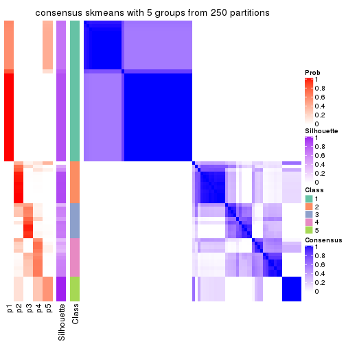
consensus_heatmap(res, k = 6)
Heatmaps for the membership of samples in all partitions to see how consistent they are:
membership_heatmap(res, k = 2)

membership_heatmap(res, k = 3)
membership_heatmap(res, k = 4)
membership_heatmap(res, k = 5)
membership_heatmap(res, k = 6)
As soon as we have had the classes for columns, we can look for signatures which are significantly different between classes which can be candidate marks for certain classes. Following are the heatmaps for signatures.
Signature heatmaps where rows are scaled:
get_signatures(res, k = 2)

get_signatures(res, k = 3)
#> Error in mat[ceiling(1:nr/h_ratio), ceiling(1:nc/w_ratio), drop = FALSE]: subscript out of bounds

get_signatures(res, k = 4)
get_signatures(res, k = 5)
#> Error in mat[ceiling(1:nr/h_ratio), ceiling(1:nc/w_ratio), drop = FALSE]: subscript out of bounds
get_signatures(res, k = 6)

Signature heatmaps where rows are not scaled:
get_signatures(res, k = 2, scale_rows = FALSE)

get_signatures(res, k = 3, scale_rows = FALSE)
get_signatures(res, k = 4, scale_rows = FALSE)
get_signatures(res, k = 5, scale_rows = FALSE)
get_signatures(res, k = 6, scale_rows = FALSE)
Compare the overlap of signatures from different k:
compare_signatures(res)
get_signature() returns a data frame invisibly. TO get the list of signatures, the function
call should be assigned to a variable explicitly. In following code, if plot argument is set
to FALSE, no heatmap is plotted while only the differential analysis is performed.
# code only for demonstration
tb = get_signature(res, k = ..., plot = FALSE)
An example of the output of tb is:
#> which_row fdr mean_1 mean_2 scaled_mean_1 scaled_mean_2 km
#> 1 38 0.042760348 8.373488 9.131774 -0.5533452 0.5164555 1
#> 2 40 0.018707592 7.106213 8.469186 -0.6173731 0.5762149 1
#> 3 55 0.019134737 10.221463 11.207825 -0.6159697 0.5749050 1
#> 4 59 0.006059896 5.921854 7.869574 -0.6899429 0.6439467 1
#> 5 60 0.018055526 8.928898 10.211722 -0.6204761 0.5791110 1
#> 6 98 0.009384629 15.714769 14.887706 0.6635654 -0.6193277 2
...
The columns in tb are:
which_row: row indices corresponding to the input matrix.fdr: FDR for the differential test. mean_x: The mean value in group x.scaled_mean_x: The mean value in group x after rows are scaled.km: Row groups if k-means clustering is applied to rows.UMAP plot which shows how samples are separated.
dimension_reduction(res, k = 2, method = "UMAP")

dimension_reduction(res, k = 3, method = "UMAP")
dimension_reduction(res, k = 4, method = "UMAP")
dimension_reduction(res, k = 5, method = "UMAP")
dimension_reduction(res, k = 6, method = "UMAP")
Following heatmap shows how subgroups are split when increasing k:
collect_classes(res)
If matrix rows can be associated to genes, consider to use functional_enrichment(res,
...) to perform function enrichment for the signature genes. See this vignette for more detailed explanations.
The object with results only for a single top-value method and a single partition method can be extracted as:
res = res_list["MAD", "pam"]
# you can also extract it by
# res = res_list["MAD:pam"]
A summary of res and all the functions that can be applied to it:
res
#> A 'ConsensusPartition' object with k = 2, 3, 4, 5, 6.
#> On a matrix with 14104 rows and 80 columns.
#> Top rows (1000, 2000, 3000, 4000, 5000) are extracted by 'MAD' method.
#> Subgroups are detected by 'pam' method.
#> Performed in total 1250 partitions by row resampling.
#> Best k for subgroups seems to be 2.
#>
#> Following methods can be applied to this 'ConsensusPartition' object:
#> [1] "cola_report" "collect_classes" "collect_plots"
#> [4] "collect_stats" "colnames" "compare_signatures"
#> [7] "consensus_heatmap" "dimension_reduction" "functional_enrichment"
#> [10] "get_anno_col" "get_anno" "get_classes"
#> [13] "get_consensus" "get_matrix" "get_membership"
#> [16] "get_param" "get_signatures" "get_stats"
#> [19] "is_best_k" "is_stable_k" "membership_heatmap"
#> [22] "ncol" "nrow" "plot_ecdf"
#> [25] "rownames" "select_partition_number" "show"
#> [28] "suggest_best_k" "test_to_known_factors"
collect_plots() function collects all the plots made from res for all k (number of partitions)
into one single page to provide an easy and fast comparison between different k.
collect_plots(res)
The plots are:
k and the heatmap of
predicted classes for each k.k.k.k.All the plots in panels can be made by individual functions and they are plotted later in this section.
select_partition_number() produces several plots showing different
statistics for choosing “optimized” k. There are following statistics:
k;k, the area increased is defined as \(A_k - A_{k-1}\).The detailed explanations of these statistics can be found in the cola vignette.
Generally speaking, lower PAC score, higher mean silhouette score or higher
concordance corresponds to better partition. Rand index and Jaccard index
measure how similar the current partition is compared to partition with k-1.
If they are too similar, we won't accept k is better than k-1.
select_partition_number(res)
The numeric values for all these statistics can be obtained by get_stats().
get_stats(res)
#> k 1-PAC mean_silhouette concordance area_increased Rand Jaccard
#> 2 2 1.000 1.000 1.000 0.5068 0.494 0.494
#> 3 3 0.754 0.795 0.869 0.2020 0.927 0.852
#> 4 4 0.762 0.849 0.900 0.1576 0.859 0.669
#> 5 5 0.887 0.870 0.931 0.0850 0.940 0.795
#> 6 6 0.883 0.803 0.904 0.0373 0.937 0.748
suggest_best_k() suggests the best \(k\) based on these statistics. The rules are as follows:
suggest_best_k(res)
#> [1] 2
Following shows the table of the partitions (You need to click the show/hide
code output link to see it). The membership matrix (columns with name p*)
is inferred by
clue::cl_consensus()
function with the SE method. Basically the value in the membership matrix
represents the probability to belong to a certain group. The finall class
label for an item is determined with the group with highest probability it
belongs to.
In get_classes() function, the entropy is calculated from the membership
matrix and the silhouette score is calculated from the consensus matrix.
cbind(get_classes(res, k = 2), get_membership(res, k = 2))
#> class entropy silhouette p1 p2
#> SRR830972 2 0 1 0 1
#> SRR830973 2 0 1 0 1
#> SRR830974 2 0 1 0 1
#> SRR830975 2 0 1 0 1
#> SRR830976 2 0 1 0 1
#> SRR830977 2 0 1 0 1
#> SRR830978 2 0 1 0 1
#> SRR830979 2 0 1 0 1
#> SRR830980 2 0 1 0 1
#> SRR830982 2 0 1 0 1
#> SRR830981 2 0 1 0 1
#> SRR830983 2 0 1 0 1
#> SRR831010 1 0 1 1 0
#> SRR831011 1 0 1 1 0
#> SRR831012 1 0 1 1 0
#> SRR831013 1 0 1 1 0
#> SRR831014 1 0 1 1 0
#> SRR831015 1 0 1 1 0
#> SRR831016 1 0 1 1 0
#> SRR831017 1 0 1 1 0
#> SRR831018 1 0 1 1 0
#> SRR831019 1 0 1 1 0
#> SRR831020 1 0 1 1 0
#> SRR831021 1 0 1 1 0
#> SRR831022 1 0 1 1 0
#> SRR831023 1 0 1 1 0
#> SRR831024 1 0 1 1 0
#> SRR831025 1 0 1 1 0
#> SRR831026 1 0 1 1 0
#> SRR831027 1 0 1 1 0
#> SRR831028 1 0 1 1 0
#> SRR831029 1 0 1 1 0
#> SRR831030 1 0 1 1 0
#> SRR831031 1 0 1 1 0
#> SRR831032 1 0 1 1 0
#> SRR831033 1 0 1 1 0
#> SRR831034 1 0 1 1 0
#> SRR831035 1 0 1 1 0
#> SRR831036 1 0 1 1 0
#> SRR831037 1 0 1 1 0
#> SRR831038 1 0 1 1 0
#> SRR831039 1 0 1 1 0
#> SRR831040 1 0 1 1 0
#> SRR831041 1 0 1 1 0
#> SRR831042 1 0 1 1 0
#> SRR831043 1 0 1 1 0
#> SRR831044 1 0 1 1 0
#> SRR830965 2 0 1 0 1
#> SRR830966 2 0 1 0 1
#> SRR830967 2 0 1 0 1
#> SRR830968 2 0 1 0 1
#> SRR830969 2 0 1 0 1
#> SRR830970 2 0 1 0 1
#> SRR830971 2 0 1 0 1
#> SRR830984 2 0 1 0 1
#> SRR830985 2 0 1 0 1
#> SRR830986 2 0 1 0 1
#> SRR830987 2 0 1 0 1
#> SRR830988 2 0 1 0 1
#> SRR830989 2 0 1 0 1
#> SRR830990 2 0 1 0 1
#> SRR830991 2 0 1 0 1
#> SRR830992 2 0 1 0 1
#> SRR830993 2 0 1 0 1
#> SRR830994 2 0 1 0 1
#> SRR830995 2 0 1 0 1
#> SRR830996 2 0 1 0 1
#> SRR830997 2 0 1 0 1
#> SRR830998 2 0 1 0 1
#> SRR830999 2 0 1 0 1
#> SRR831000 2 0 1 0 1
#> SRR831001 2 0 1 0 1
#> SRR831002 2 0 1 0 1
#> SRR831003 2 0 1 0 1
#> SRR831004 2 0 1 0 1
#> SRR831005 1 0 1 1 0
#> SRR831006 1 0 1 1 0
#> SRR831007 1 0 1 1 0
#> SRR831008 1 0 1 1 0
#> SRR831009 1 0 1 1 0
cbind(get_classes(res, k = 3), get_membership(res, k = 3))
#> class entropy silhouette p1 p2 p3
#> SRR830972 2 0.0000 0.891 0.000 1.000 0.000
#> SRR830973 2 0.1031 0.866 0.000 0.976 0.024
#> SRR830974 2 0.0000 0.891 0.000 1.000 0.000
#> SRR830975 2 0.0000 0.891 0.000 1.000 0.000
#> SRR830976 2 0.0000 0.891 0.000 1.000 0.000
#> SRR830977 2 0.0424 0.883 0.000 0.992 0.008
#> SRR830978 3 0.6204 0.997 0.000 0.424 0.576
#> SRR830979 3 0.6204 0.997 0.000 0.424 0.576
#> SRR830980 2 0.0000 0.891 0.000 1.000 0.000
#> SRR830982 2 0.0000 0.891 0.000 1.000 0.000
#> SRR830981 2 0.0000 0.891 0.000 1.000 0.000
#> SRR830983 2 0.0000 0.891 0.000 1.000 0.000
#> SRR831010 1 0.6204 0.871 0.576 0.000 0.424
#> SRR831011 1 0.6204 0.871 0.576 0.000 0.424
#> SRR831012 1 0.6204 0.871 0.576 0.000 0.424
#> SRR831013 1 0.6204 0.871 0.576 0.000 0.424
#> SRR831014 1 0.6204 0.871 0.576 0.000 0.424
#> SRR831015 1 0.6204 0.871 0.576 0.000 0.424
#> SRR831016 1 0.6062 0.859 0.616 0.000 0.384
#> SRR831017 1 0.0000 0.706 1.000 0.000 0.000
#> SRR831018 1 0.6204 0.871 0.576 0.000 0.424
#> SRR831019 1 0.0000 0.706 1.000 0.000 0.000
#> SRR831020 1 0.0000 0.706 1.000 0.000 0.000
#> SRR831021 1 0.6204 0.871 0.576 0.000 0.424
#> SRR831022 1 0.6204 0.871 0.576 0.000 0.424
#> SRR831023 1 0.0000 0.706 1.000 0.000 0.000
#> SRR831024 1 0.6204 0.871 0.576 0.000 0.424
#> SRR831025 1 0.0000 0.706 1.000 0.000 0.000
#> SRR831026 1 0.0000 0.706 1.000 0.000 0.000
#> SRR831027 1 0.4178 0.782 0.828 0.000 0.172
#> SRR831028 1 0.0000 0.706 1.000 0.000 0.000
#> SRR831029 1 0.6204 0.871 0.576 0.000 0.424
#> SRR831030 1 0.6204 0.871 0.576 0.000 0.424
#> SRR831031 1 0.6180 0.869 0.584 0.000 0.416
#> SRR831032 1 0.6204 0.871 0.576 0.000 0.424
#> SRR831033 1 0.6204 0.871 0.576 0.000 0.424
#> SRR831034 1 0.0000 0.706 1.000 0.000 0.000
#> SRR831035 1 0.0000 0.706 1.000 0.000 0.000
#> SRR831036 1 0.0000 0.706 1.000 0.000 0.000
#> SRR831037 1 0.0000 0.706 1.000 0.000 0.000
#> SRR831038 1 0.6204 0.871 0.576 0.000 0.424
#> SRR831039 1 0.6204 0.871 0.576 0.000 0.424
#> SRR831040 1 0.6204 0.871 0.576 0.000 0.424
#> SRR831041 1 0.6204 0.871 0.576 0.000 0.424
#> SRR831042 1 0.6204 0.871 0.576 0.000 0.424
#> SRR831043 1 0.6204 0.871 0.576 0.000 0.424
#> SRR831044 1 0.6204 0.871 0.576 0.000 0.424
#> SRR830965 2 0.0000 0.891 0.000 1.000 0.000
#> SRR830966 2 0.0000 0.891 0.000 1.000 0.000
#> SRR830967 2 0.0000 0.891 0.000 1.000 0.000
#> SRR830968 2 0.0000 0.891 0.000 1.000 0.000
#> SRR830969 2 0.1411 0.856 0.000 0.964 0.036
#> SRR830970 2 0.0000 0.891 0.000 1.000 0.000
#> SRR830971 2 0.0000 0.891 0.000 1.000 0.000
#> SRR830984 2 0.6291 -0.749 0.000 0.532 0.468
#> SRR830985 2 0.0424 0.883 0.000 0.992 0.008
#> SRR830986 2 0.0000 0.891 0.000 1.000 0.000
#> SRR830987 2 0.0000 0.891 0.000 1.000 0.000
#> SRR830988 2 0.0000 0.891 0.000 1.000 0.000
#> SRR830989 2 0.0000 0.891 0.000 1.000 0.000
#> SRR830990 2 0.6305 -0.785 0.000 0.516 0.484
#> SRR830991 2 0.3116 0.748 0.000 0.892 0.108
#> SRR830992 2 0.3116 0.748 0.000 0.892 0.108
#> SRR830993 2 0.0000 0.891 0.000 1.000 0.000
#> SRR830994 2 0.3267 0.737 0.000 0.884 0.116
#> SRR830995 2 0.2959 0.761 0.000 0.900 0.100
#> SRR830996 2 0.6095 -0.451 0.000 0.608 0.392
#> SRR830997 3 0.6204 0.997 0.000 0.424 0.576
#> SRR830998 3 0.6204 0.997 0.000 0.424 0.576
#> SRR830999 2 0.0000 0.891 0.000 1.000 0.000
#> SRR831000 2 0.3116 0.748 0.000 0.892 0.108
#> SRR831001 3 0.6204 0.997 0.000 0.424 0.576
#> SRR831002 3 0.6225 0.983 0.000 0.432 0.568
#> SRR831003 3 0.6204 0.997 0.000 0.424 0.576
#> SRR831004 2 0.0000 0.891 0.000 1.000 0.000
#> SRR831005 1 0.6204 0.871 0.576 0.000 0.424
#> SRR831006 1 0.5016 0.809 0.760 0.000 0.240
#> SRR831007 1 0.6204 0.871 0.576 0.000 0.424
#> SRR831008 1 0.0000 0.706 1.000 0.000 0.000
#> SRR831009 1 0.6204 0.871 0.576 0.000 0.424
cbind(get_classes(res, k = 4), get_membership(res, k = 4))
#> class entropy silhouette p1 p2 p3 p4
#> SRR830972 2 0.3528 0.761 0.000 0.808 0.000 0.192
#> SRR830973 2 0.0188 0.849 0.000 0.996 0.004 0.000
#> SRR830974 2 0.0000 0.850 0.000 1.000 0.000 0.000
#> SRR830975 2 0.0000 0.850 0.000 1.000 0.000 0.000
#> SRR830976 2 0.0000 0.850 0.000 1.000 0.000 0.000
#> SRR830977 2 0.0592 0.844 0.000 0.984 0.016 0.000
#> SRR830978 3 0.2011 0.831 0.000 0.080 0.920 0.000
#> SRR830979 3 0.2011 0.829 0.000 0.080 0.920 0.000
#> SRR830980 2 0.0000 0.850 0.000 1.000 0.000 0.000
#> SRR830982 2 0.0000 0.850 0.000 1.000 0.000 0.000
#> SRR830981 2 0.0000 0.850 0.000 1.000 0.000 0.000
#> SRR830983 2 0.0000 0.850 0.000 1.000 0.000 0.000
#> SRR831010 1 0.0000 0.976 1.000 0.000 0.000 0.000
#> SRR831011 1 0.0000 0.976 1.000 0.000 0.000 0.000
#> SRR831012 1 0.0000 0.976 1.000 0.000 0.000 0.000
#> SRR831013 1 0.0000 0.976 1.000 0.000 0.000 0.000
#> SRR831014 1 0.0000 0.976 1.000 0.000 0.000 0.000
#> SRR831015 1 0.0000 0.976 1.000 0.000 0.000 0.000
#> SRR831016 1 0.1302 0.928 0.956 0.000 0.000 0.044
#> SRR831017 4 0.3528 1.000 0.192 0.000 0.000 0.808
#> SRR831018 1 0.0000 0.976 1.000 0.000 0.000 0.000
#> SRR831019 4 0.3528 1.000 0.192 0.000 0.000 0.808
#> SRR831020 4 0.3528 1.000 0.192 0.000 0.000 0.808
#> SRR831021 1 0.0000 0.976 1.000 0.000 0.000 0.000
#> SRR831022 1 0.0000 0.976 1.000 0.000 0.000 0.000
#> SRR831023 4 0.3528 1.000 0.192 0.000 0.000 0.808
#> SRR831024 1 0.0000 0.976 1.000 0.000 0.000 0.000
#> SRR831025 4 0.3528 1.000 0.192 0.000 0.000 0.808
#> SRR831026 4 0.3528 1.000 0.192 0.000 0.000 0.808
#> SRR831027 1 0.4356 0.460 0.708 0.000 0.000 0.292
#> SRR831028 4 0.3528 1.000 0.192 0.000 0.000 0.808
#> SRR831029 1 0.0000 0.976 1.000 0.000 0.000 0.000
#> SRR831030 1 0.0000 0.976 1.000 0.000 0.000 0.000
#> SRR831031 1 0.0336 0.968 0.992 0.000 0.000 0.008
#> SRR831032 1 0.0000 0.976 1.000 0.000 0.000 0.000
#> SRR831033 1 0.0000 0.976 1.000 0.000 0.000 0.000
#> SRR831034 4 0.3528 1.000 0.192 0.000 0.000 0.808
#> SRR831035 4 0.3528 1.000 0.192 0.000 0.000 0.808
#> SRR831036 4 0.3528 1.000 0.192 0.000 0.000 0.808
#> SRR831037 4 0.3528 1.000 0.192 0.000 0.000 0.808
#> SRR831038 1 0.0000 0.976 1.000 0.000 0.000 0.000
#> SRR831039 1 0.0000 0.976 1.000 0.000 0.000 0.000
#> SRR831040 1 0.0000 0.976 1.000 0.000 0.000 0.000
#> SRR831041 1 0.0000 0.976 1.000 0.000 0.000 0.000
#> SRR831042 1 0.0000 0.976 1.000 0.000 0.000 0.000
#> SRR831043 1 0.0000 0.976 1.000 0.000 0.000 0.000
#> SRR831044 1 0.0000 0.976 1.000 0.000 0.000 0.000
#> SRR830965 2 0.3528 0.761 0.000 0.808 0.000 0.192
#> SRR830966 2 0.5279 0.717 0.000 0.736 0.072 0.192
#> SRR830967 2 0.5212 0.720 0.000 0.740 0.068 0.192
#> SRR830968 2 0.3528 0.761 0.000 0.808 0.000 0.192
#> SRR830969 2 0.1576 0.824 0.000 0.948 0.048 0.004
#> SRR830970 2 0.3528 0.761 0.000 0.808 0.000 0.192
#> SRR830971 2 0.3528 0.761 0.000 0.808 0.000 0.192
#> SRR830984 3 0.4776 0.437 0.000 0.376 0.624 0.000
#> SRR830985 2 0.0188 0.849 0.000 0.996 0.004 0.000
#> SRR830986 2 0.0000 0.850 0.000 1.000 0.000 0.000
#> SRR830987 2 0.0000 0.850 0.000 1.000 0.000 0.000
#> SRR830988 2 0.0000 0.850 0.000 1.000 0.000 0.000
#> SRR830989 2 0.0000 0.850 0.000 1.000 0.000 0.000
#> SRR830990 3 0.4776 0.523 0.000 0.376 0.624 0.000
#> SRR830991 2 0.7540 0.241 0.000 0.444 0.364 0.192
#> SRR830992 2 0.4697 0.427 0.000 0.644 0.356 0.000
#> SRR830993 2 0.0188 0.848 0.000 0.996 0.004 0.000
#> SRR830994 2 0.4730 0.413 0.000 0.636 0.364 0.000
#> SRR830995 2 0.7464 0.326 0.000 0.480 0.328 0.192
#> SRR830996 3 0.4406 0.518 0.000 0.300 0.700 0.000
#> SRR830997 3 0.2408 0.816 0.000 0.104 0.896 0.000
#> SRR830998 3 0.0000 0.823 0.000 0.000 1.000 0.000
#> SRR830999 2 0.0000 0.850 0.000 1.000 0.000 0.000
#> SRR831000 2 0.4855 0.327 0.000 0.600 0.400 0.000
#> SRR831001 3 0.0188 0.825 0.000 0.004 0.996 0.000
#> SRR831002 3 0.0188 0.823 0.000 0.004 0.996 0.000
#> SRR831003 3 0.0188 0.825 0.000 0.004 0.996 0.000
#> SRR831004 2 0.1867 0.810 0.000 0.928 0.072 0.000
#> SRR831005 1 0.0000 0.976 1.000 0.000 0.000 0.000
#> SRR831006 1 0.3444 0.714 0.816 0.000 0.000 0.184
#> SRR831007 1 0.0000 0.976 1.000 0.000 0.000 0.000
#> SRR831008 4 0.3528 1.000 0.192 0.000 0.000 0.808
#> SRR831009 1 0.0000 0.976 1.000 0.000 0.000 0.000
cbind(get_classes(res, k = 5), get_membership(res, k = 5))
#> class entropy silhouette p1 p2 p3 p4 p5
#> SRR830972 5 0.3424 0.735 0.000 0.240 0.000 0.000 0.760
#> SRR830973 2 0.0162 0.910 0.000 0.996 0.000 0.004 0.000
#> SRR830974 2 0.0000 0.911 0.000 1.000 0.000 0.000 0.000
#> SRR830975 2 0.0000 0.911 0.000 1.000 0.000 0.000 0.000
#> SRR830976 2 0.0000 0.911 0.000 1.000 0.000 0.000 0.000
#> SRR830977 2 0.0510 0.904 0.000 0.984 0.000 0.016 0.000
#> SRR830978 4 0.1732 0.778 0.000 0.080 0.000 0.920 0.000
#> SRR830979 4 0.1168 0.793 0.000 0.008 0.000 0.960 0.032
#> SRR830980 2 0.0000 0.911 0.000 1.000 0.000 0.000 0.000
#> SRR830982 2 0.0000 0.911 0.000 1.000 0.000 0.000 0.000
#> SRR830981 2 0.0000 0.911 0.000 1.000 0.000 0.000 0.000
#> SRR830983 2 0.0000 0.911 0.000 1.000 0.000 0.000 0.000
#> SRR831010 1 0.0000 0.979 1.000 0.000 0.000 0.000 0.000
#> SRR831011 1 0.0000 0.979 1.000 0.000 0.000 0.000 0.000
#> SRR831012 1 0.0000 0.979 1.000 0.000 0.000 0.000 0.000
#> SRR831013 1 0.0000 0.979 1.000 0.000 0.000 0.000 0.000
#> SRR831014 1 0.0000 0.979 1.000 0.000 0.000 0.000 0.000
#> SRR831015 1 0.0000 0.979 1.000 0.000 0.000 0.000 0.000
#> SRR831016 1 0.1121 0.939 0.956 0.000 0.044 0.000 0.000
#> SRR831017 3 0.0000 1.000 0.000 0.000 1.000 0.000 0.000
#> SRR831018 1 0.0000 0.979 1.000 0.000 0.000 0.000 0.000
#> SRR831019 3 0.0000 1.000 0.000 0.000 1.000 0.000 0.000
#> SRR831020 3 0.0000 1.000 0.000 0.000 1.000 0.000 0.000
#> SRR831021 1 0.0000 0.979 1.000 0.000 0.000 0.000 0.000
#> SRR831022 1 0.0000 0.979 1.000 0.000 0.000 0.000 0.000
#> SRR831023 3 0.0000 1.000 0.000 0.000 1.000 0.000 0.000
#> SRR831024 1 0.0000 0.979 1.000 0.000 0.000 0.000 0.000
#> SRR831025 3 0.0000 1.000 0.000 0.000 1.000 0.000 0.000
#> SRR831026 3 0.0000 1.000 0.000 0.000 1.000 0.000 0.000
#> SRR831027 1 0.3774 0.599 0.704 0.000 0.296 0.000 0.000
#> SRR831028 3 0.0000 1.000 0.000 0.000 1.000 0.000 0.000
#> SRR831029 1 0.0000 0.979 1.000 0.000 0.000 0.000 0.000
#> SRR831030 1 0.0000 0.979 1.000 0.000 0.000 0.000 0.000
#> SRR831031 1 0.0290 0.972 0.992 0.000 0.008 0.000 0.000
#> SRR831032 1 0.0000 0.979 1.000 0.000 0.000 0.000 0.000
#> SRR831033 1 0.0000 0.979 1.000 0.000 0.000 0.000 0.000
#> SRR831034 3 0.0000 1.000 0.000 0.000 1.000 0.000 0.000
#> SRR831035 3 0.0000 1.000 0.000 0.000 1.000 0.000 0.000
#> SRR831036 3 0.0000 1.000 0.000 0.000 1.000 0.000 0.000
#> SRR831037 3 0.0000 1.000 0.000 0.000 1.000 0.000 0.000
#> SRR831038 1 0.0000 0.979 1.000 0.000 0.000 0.000 0.000
#> SRR831039 1 0.0000 0.979 1.000 0.000 0.000 0.000 0.000
#> SRR831040 1 0.0000 0.979 1.000 0.000 0.000 0.000 0.000
#> SRR831041 1 0.0000 0.979 1.000 0.000 0.000 0.000 0.000
#> SRR831042 1 0.0000 0.979 1.000 0.000 0.000 0.000 0.000
#> SRR831043 1 0.0000 0.979 1.000 0.000 0.000 0.000 0.000
#> SRR831044 1 0.0000 0.979 1.000 0.000 0.000 0.000 0.000
#> SRR830965 5 0.2074 0.800 0.000 0.104 0.000 0.000 0.896
#> SRR830966 5 0.0963 0.770 0.000 0.036 0.000 0.000 0.964
#> SRR830967 5 0.0963 0.770 0.000 0.036 0.000 0.000 0.964
#> SRR830968 5 0.2074 0.800 0.000 0.104 0.000 0.000 0.896
#> SRR830969 2 0.2149 0.862 0.000 0.916 0.000 0.048 0.036
#> SRR830970 5 0.3039 0.772 0.000 0.192 0.000 0.000 0.808
#> SRR830971 5 0.2074 0.800 0.000 0.104 0.000 0.000 0.896
#> SRR830984 4 0.4326 0.553 0.000 0.264 0.000 0.708 0.028
#> SRR830985 2 0.0162 0.910 0.000 0.996 0.000 0.004 0.000
#> SRR830986 2 0.0000 0.911 0.000 1.000 0.000 0.000 0.000
#> SRR830987 2 0.0000 0.911 0.000 1.000 0.000 0.000 0.000
#> SRR830988 2 0.0000 0.911 0.000 1.000 0.000 0.000 0.000
#> SRR830989 2 0.2376 0.857 0.000 0.904 0.000 0.044 0.052
#> SRR830990 4 0.4541 0.569 0.000 0.288 0.000 0.680 0.032
#> SRR830991 5 0.6049 0.364 0.000 0.164 0.000 0.272 0.564
#> SRR830992 2 0.5074 0.508 0.000 0.660 0.000 0.268 0.072
#> SRR830993 2 0.2473 0.837 0.000 0.896 0.000 0.072 0.032
#> SRR830994 2 0.5171 0.492 0.000 0.648 0.000 0.276 0.076
#> SRR830995 5 0.6485 0.302 0.000 0.288 0.000 0.224 0.488
#> SRR830996 4 0.5272 0.486 0.000 0.308 0.000 0.620 0.072
#> SRR830997 4 0.1579 0.787 0.000 0.024 0.000 0.944 0.032
#> SRR830998 4 0.0000 0.797 0.000 0.000 0.000 1.000 0.000
#> SRR830999 2 0.0404 0.906 0.000 0.988 0.000 0.000 0.012
#> SRR831000 2 0.5306 0.413 0.000 0.612 0.000 0.316 0.072
#> SRR831001 4 0.1608 0.792 0.000 0.000 0.000 0.928 0.072
#> SRR831002 4 0.1768 0.792 0.000 0.004 0.000 0.924 0.072
#> SRR831003 4 0.1608 0.792 0.000 0.000 0.000 0.928 0.072
#> SRR831004 2 0.2020 0.845 0.000 0.900 0.000 0.000 0.100
#> SRR831005 1 0.0000 0.979 1.000 0.000 0.000 0.000 0.000
#> SRR831006 1 0.2966 0.781 0.816 0.000 0.184 0.000 0.000
#> SRR831007 1 0.0000 0.979 1.000 0.000 0.000 0.000 0.000
#> SRR831008 3 0.0000 1.000 0.000 0.000 1.000 0.000 0.000
#> SRR831009 1 0.0000 0.979 1.000 0.000 0.000 0.000 0.000
cbind(get_classes(res, k = 6), get_membership(res, k = 6))
#> class entropy silhouette p1 p2 p3 p4 p5 p6
#> SRR830972 5 0.3175 0.6656 0.000 0.256 0.000 0.000 0.744 0.000
#> SRR830973 3 0.3797 0.5000 0.000 0.420 0.580 0.000 0.000 0.000
#> SRR830974 2 0.0000 0.8784 0.000 1.000 0.000 0.000 0.000 0.000
#> SRR830975 2 0.0000 0.8784 0.000 1.000 0.000 0.000 0.000 0.000
#> SRR830976 2 0.0000 0.8784 0.000 1.000 0.000 0.000 0.000 0.000
#> SRR830977 3 0.4482 0.5259 0.000 0.384 0.580 0.036 0.000 0.000
#> SRR830978 3 0.5369 0.3521 0.000 0.128 0.540 0.332 0.000 0.000
#> SRR830979 3 0.1501 0.4609 0.000 0.000 0.924 0.076 0.000 0.000
#> SRR830980 2 0.0000 0.8784 0.000 1.000 0.000 0.000 0.000 0.000
#> SRR830982 2 0.0000 0.8784 0.000 1.000 0.000 0.000 0.000 0.000
#> SRR830981 2 0.0363 0.8668 0.000 0.988 0.012 0.000 0.000 0.000
#> SRR830983 2 0.0000 0.8784 0.000 1.000 0.000 0.000 0.000 0.000
#> SRR831010 1 0.0000 0.9782 1.000 0.000 0.000 0.000 0.000 0.000
#> SRR831011 1 0.0000 0.9782 1.000 0.000 0.000 0.000 0.000 0.000
#> SRR831012 1 0.0000 0.9782 1.000 0.000 0.000 0.000 0.000 0.000
#> SRR831013 1 0.0000 0.9782 1.000 0.000 0.000 0.000 0.000 0.000
#> SRR831014 1 0.0000 0.9782 1.000 0.000 0.000 0.000 0.000 0.000
#> SRR831015 1 0.0000 0.9782 1.000 0.000 0.000 0.000 0.000 0.000
#> SRR831016 1 0.1075 0.9339 0.952 0.000 0.000 0.000 0.000 0.048
#> SRR831017 6 0.0000 1.0000 0.000 0.000 0.000 0.000 0.000 1.000
#> SRR831018 1 0.0000 0.9782 1.000 0.000 0.000 0.000 0.000 0.000
#> SRR831019 6 0.0000 1.0000 0.000 0.000 0.000 0.000 0.000 1.000
#> SRR831020 6 0.0000 1.0000 0.000 0.000 0.000 0.000 0.000 1.000
#> SRR831021 1 0.0000 0.9782 1.000 0.000 0.000 0.000 0.000 0.000
#> SRR831022 1 0.0000 0.9782 1.000 0.000 0.000 0.000 0.000 0.000
#> SRR831023 6 0.0000 1.0000 0.000 0.000 0.000 0.000 0.000 1.000
#> SRR831024 1 0.0000 0.9782 1.000 0.000 0.000 0.000 0.000 0.000
#> SRR831025 6 0.0000 1.0000 0.000 0.000 0.000 0.000 0.000 1.000
#> SRR831026 6 0.0000 1.0000 0.000 0.000 0.000 0.000 0.000 1.000
#> SRR831027 1 0.3409 0.5917 0.700 0.000 0.000 0.000 0.000 0.300
#> SRR831028 6 0.0000 1.0000 0.000 0.000 0.000 0.000 0.000 1.000
#> SRR831029 1 0.0000 0.9782 1.000 0.000 0.000 0.000 0.000 0.000
#> SRR831030 1 0.0000 0.9782 1.000 0.000 0.000 0.000 0.000 0.000
#> SRR831031 1 0.0260 0.9714 0.992 0.000 0.000 0.000 0.000 0.008
#> SRR831032 1 0.0000 0.9782 1.000 0.000 0.000 0.000 0.000 0.000
#> SRR831033 1 0.0000 0.9782 1.000 0.000 0.000 0.000 0.000 0.000
#> SRR831034 6 0.0000 1.0000 0.000 0.000 0.000 0.000 0.000 1.000
#> SRR831035 6 0.0000 1.0000 0.000 0.000 0.000 0.000 0.000 1.000
#> SRR831036 6 0.0000 1.0000 0.000 0.000 0.000 0.000 0.000 1.000
#> SRR831037 6 0.0000 1.0000 0.000 0.000 0.000 0.000 0.000 1.000
#> SRR831038 1 0.0000 0.9782 1.000 0.000 0.000 0.000 0.000 0.000
#> SRR831039 1 0.0000 0.9782 1.000 0.000 0.000 0.000 0.000 0.000
#> SRR831040 1 0.0000 0.9782 1.000 0.000 0.000 0.000 0.000 0.000
#> SRR831041 1 0.0000 0.9782 1.000 0.000 0.000 0.000 0.000 0.000
#> SRR831042 1 0.0000 0.9782 1.000 0.000 0.000 0.000 0.000 0.000
#> SRR831043 1 0.0000 0.9782 1.000 0.000 0.000 0.000 0.000 0.000
#> SRR831044 1 0.0000 0.9782 1.000 0.000 0.000 0.000 0.000 0.000
#> SRR830965 5 0.0146 0.9075 0.000 0.004 0.000 0.000 0.996 0.000
#> SRR830966 5 0.1649 0.8802 0.000 0.032 0.000 0.036 0.932 0.000
#> SRR830967 5 0.0146 0.9075 0.000 0.004 0.000 0.000 0.996 0.000
#> SRR830968 5 0.0146 0.9075 0.000 0.004 0.000 0.000 0.996 0.000
#> SRR830969 3 0.4478 0.5240 0.000 0.392 0.580 0.016 0.012 0.000
#> SRR830970 5 0.2135 0.8301 0.000 0.128 0.000 0.000 0.872 0.000
#> SRR830971 5 0.0146 0.9075 0.000 0.004 0.000 0.000 0.996 0.000
#> SRR830984 3 0.3532 0.5462 0.000 0.140 0.796 0.064 0.000 0.000
#> SRR830985 3 0.3797 0.5000 0.000 0.420 0.580 0.000 0.000 0.000
#> SRR830986 2 0.0000 0.8784 0.000 1.000 0.000 0.000 0.000 0.000
#> SRR830987 2 0.0000 0.8784 0.000 1.000 0.000 0.000 0.000 0.000
#> SRR830988 2 0.0000 0.8784 0.000 1.000 0.000 0.000 0.000 0.000
#> SRR830989 2 0.4350 0.5019 0.000 0.660 0.292 0.000 0.048 0.000
#> SRR830990 3 0.5554 -0.0492 0.000 0.408 0.456 0.136 0.000 0.000
#> SRR830991 4 0.1970 0.6768 0.000 0.008 0.000 0.900 0.092 0.000
#> SRR830992 4 0.3765 0.3720 0.000 0.404 0.000 0.596 0.000 0.000
#> SRR830993 2 0.3915 0.3566 0.000 0.584 0.412 0.000 0.004 0.000
#> SRR830994 4 0.3371 0.5411 0.000 0.292 0.000 0.708 0.000 0.000
#> SRR830995 4 0.5565 0.2582 0.000 0.144 0.000 0.488 0.368 0.000
#> SRR830996 4 0.4224 0.3256 0.000 0.028 0.340 0.632 0.000 0.000
#> SRR830997 3 0.3765 0.1505 0.000 0.000 0.596 0.404 0.000 0.000
#> SRR830998 3 0.3868 0.0268 0.000 0.000 0.508 0.492 0.000 0.000
#> SRR830999 2 0.2618 0.7427 0.000 0.860 0.000 0.116 0.024 0.000
#> SRR831000 4 0.1501 0.6879 0.000 0.076 0.000 0.924 0.000 0.000
#> SRR831001 4 0.0146 0.6939 0.000 0.000 0.004 0.996 0.000 0.000
#> SRR831002 4 0.0000 0.6948 0.000 0.000 0.000 1.000 0.000 0.000
#> SRR831003 4 0.0146 0.6939 0.000 0.000 0.004 0.996 0.000 0.000
#> SRR831004 2 0.3487 0.5958 0.000 0.756 0.000 0.224 0.020 0.000
#> SRR831005 1 0.0000 0.9782 1.000 0.000 0.000 0.000 0.000 0.000
#> SRR831006 1 0.2697 0.7723 0.812 0.000 0.000 0.000 0.000 0.188
#> SRR831007 1 0.0000 0.9782 1.000 0.000 0.000 0.000 0.000 0.000
#> SRR831008 6 0.0000 1.0000 0.000 0.000 0.000 0.000 0.000 1.000
#> SRR831009 1 0.0000 0.9782 1.000 0.000 0.000 0.000 0.000 0.000
Heatmaps for the consensus matrix. It visualizes the probability of two samples to be in a same group.
consensus_heatmap(res, k = 2)
consensus_heatmap(res, k = 3)
consensus_heatmap(res, k = 4)
consensus_heatmap(res, k = 5)
consensus_heatmap(res, k = 6)
Heatmaps for the membership of samples in all partitions to see how consistent they are:
membership_heatmap(res, k = 2)

membership_heatmap(res, k = 3)
membership_heatmap(res, k = 4)
membership_heatmap(res, k = 5)
membership_heatmap(res, k = 6)
As soon as we have had the classes for columns, we can look for signatures which are significantly different between classes which can be candidate marks for certain classes. Following are the heatmaps for signatures.
Signature heatmaps where rows are scaled:
get_signatures(res, k = 2)

get_signatures(res, k = 3)
get_signatures(res, k = 4)
get_signatures(res, k = 5)
get_signatures(res, k = 6)
Signature heatmaps where rows are not scaled:
get_signatures(res, k = 2, scale_rows = FALSE)

get_signatures(res, k = 3, scale_rows = FALSE)
get_signatures(res, k = 4, scale_rows = FALSE)
get_signatures(res, k = 5, scale_rows = FALSE)
get_signatures(res, k = 6, scale_rows = FALSE)
Compare the overlap of signatures from different k:
compare_signatures(res)
get_signature() returns a data frame invisibly. TO get the list of signatures, the function
call should be assigned to a variable explicitly. In following code, if plot argument is set
to FALSE, no heatmap is plotted while only the differential analysis is performed.
# code only for demonstration
tb = get_signature(res, k = ..., plot = FALSE)
An example of the output of tb is:
#> which_row fdr mean_1 mean_2 scaled_mean_1 scaled_mean_2 km
#> 1 38 0.042760348 8.373488 9.131774 -0.5533452 0.5164555 1
#> 2 40 0.018707592 7.106213 8.469186 -0.6173731 0.5762149 1
#> 3 55 0.019134737 10.221463 11.207825 -0.6159697 0.5749050 1
#> 4 59 0.006059896 5.921854 7.869574 -0.6899429 0.6439467 1
#> 5 60 0.018055526 8.928898 10.211722 -0.6204761 0.5791110 1
#> 6 98 0.009384629 15.714769 14.887706 0.6635654 -0.6193277 2
...
The columns in tb are:
which_row: row indices corresponding to the input matrix.fdr: FDR for the differential test. mean_x: The mean value in group x.scaled_mean_x: The mean value in group x after rows are scaled.km: Row groups if k-means clustering is applied to rows.UMAP plot which shows how samples are separated.
dimension_reduction(res, k = 2, method = "UMAP")
dimension_reduction(res, k = 3, method = "UMAP")
dimension_reduction(res, k = 4, method = "UMAP")
dimension_reduction(res, k = 5, method = "UMAP")
dimension_reduction(res, k = 6, method = "UMAP")
Following heatmap shows how subgroups are split when increasing k:
collect_classes(res)
If matrix rows can be associated to genes, consider to use functional_enrichment(res,
...) to perform function enrichment for the signature genes. See this vignette for more detailed explanations.
The object with results only for a single top-value method and a single partition method can be extracted as:
res = res_list["MAD", "mclust"]
# you can also extract it by
# res = res_list["MAD:mclust"]
A summary of res and all the functions that can be applied to it:
res
#> A 'ConsensusPartition' object with k = 2, 3, 4, 5, 6.
#> On a matrix with 14104 rows and 80 columns.
#> Top rows (1000, 2000, 3000, 4000, 5000) are extracted by 'MAD' method.
#> Subgroups are detected by 'mclust' method.
#> Performed in total 1250 partitions by row resampling.
#> Best k for subgroups seems to be 2.
#>
#> Following methods can be applied to this 'ConsensusPartition' object:
#> [1] "cola_report" "collect_classes" "collect_plots"
#> [4] "collect_stats" "colnames" "compare_signatures"
#> [7] "consensus_heatmap" "dimension_reduction" "functional_enrichment"
#> [10] "get_anno_col" "get_anno" "get_classes"
#> [13] "get_consensus" "get_matrix" "get_membership"
#> [16] "get_param" "get_signatures" "get_stats"
#> [19] "is_best_k" "is_stable_k" "membership_heatmap"
#> [22] "ncol" "nrow" "plot_ecdf"
#> [25] "rownames" "select_partition_number" "show"
#> [28] "suggest_best_k" "test_to_known_factors"
collect_plots() function collects all the plots made from res for all k (number of partitions)
into one single page to provide an easy and fast comparison between different k.
collect_plots(res)
The plots are:
k and the heatmap of
predicted classes for each k.k.k.k.All the plots in panels can be made by individual functions and they are plotted later in this section.
select_partition_number() produces several plots showing different
statistics for choosing “optimized” k. There are following statistics:
k;k, the area increased is defined as \(A_k - A_{k-1}\).The detailed explanations of these statistics can be found in the cola vignette.
Generally speaking, lower PAC score, higher mean silhouette score or higher
concordance corresponds to better partition. Rand index and Jaccard index
measure how similar the current partition is compared to partition with k-1.
If they are too similar, we won't accept k is better than k-1.
select_partition_number(res)
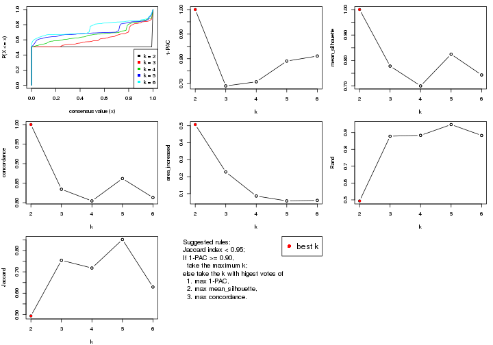
The numeric values for all these statistics can be obtained by get_stats().
get_stats(res)
#> k 1-PAC mean_silhouette concordance area_increased Rand Jaccard
#> 2 2 1.000 1.000 1.000 0.5068 0.494 0.494
#> 3 3 0.689 0.778 0.834 0.2278 0.878 0.754
#> 4 4 0.706 0.700 0.804 0.0861 0.884 0.718
#> 5 5 0.790 0.825 0.862 0.0573 0.948 0.851
#> 6 6 0.811 0.743 0.813 0.0604 0.883 0.629
suggest_best_k() suggests the best \(k\) based on these statistics. The rules are as follows:
suggest_best_k(res)
#> [1] 2
Following shows the table of the partitions (You need to click the show/hide
code output link to see it). The membership matrix (columns with name p*)
is inferred by
clue::cl_consensus()
function with the SE method. Basically the value in the membership matrix
represents the probability to belong to a certain group. The finall class
label for an item is determined with the group with highest probability it
belongs to.
In get_classes() function, the entropy is calculated from the membership
matrix and the silhouette score is calculated from the consensus matrix.
cbind(get_classes(res, k = 2), get_membership(res, k = 2))
#> class entropy silhouette p1 p2
#> SRR830972 2 0 1 0 1
#> SRR830973 2 0 1 0 1
#> SRR830974 2 0 1 0 1
#> SRR830975 2 0 1 0 1
#> SRR830976 2 0 1 0 1
#> SRR830977 2 0 1 0 1
#> SRR830978 2 0 1 0 1
#> SRR830979 2 0 1 0 1
#> SRR830980 2 0 1 0 1
#> SRR830982 2 0 1 0 1
#> SRR830981 2 0 1 0 1
#> SRR830983 2 0 1 0 1
#> SRR831010 1 0 1 1 0
#> SRR831011 1 0 1 1 0
#> SRR831012 1 0 1 1 0
#> SRR831013 1 0 1 1 0
#> SRR831014 1 0 1 1 0
#> SRR831015 1 0 1 1 0
#> SRR831016 1 0 1 1 0
#> SRR831017 1 0 1 1 0
#> SRR831018 1 0 1 1 0
#> SRR831019 1 0 1 1 0
#> SRR831020 1 0 1 1 0
#> SRR831021 1 0 1 1 0
#> SRR831022 1 0 1 1 0
#> SRR831023 1 0 1 1 0
#> SRR831024 1 0 1 1 0
#> SRR831025 1 0 1 1 0
#> SRR831026 1 0 1 1 0
#> SRR831027 1 0 1 1 0
#> SRR831028 1 0 1 1 0
#> SRR831029 1 0 1 1 0
#> SRR831030 1 0 1 1 0
#> SRR831031 1 0 1 1 0
#> SRR831032 1 0 1 1 0
#> SRR831033 1 0 1 1 0
#> SRR831034 1 0 1 1 0
#> SRR831035 1 0 1 1 0
#> SRR831036 1 0 1 1 0
#> SRR831037 1 0 1 1 0
#> SRR831038 1 0 1 1 0
#> SRR831039 1 0 1 1 0
#> SRR831040 1 0 1 1 0
#> SRR831041 1 0 1 1 0
#> SRR831042 1 0 1 1 0
#> SRR831043 1 0 1 1 0
#> SRR831044 1 0 1 1 0
#> SRR830965 2 0 1 0 1
#> SRR830966 2 0 1 0 1
#> SRR830967 2 0 1 0 1
#> SRR830968 2 0 1 0 1
#> SRR830969 2 0 1 0 1
#> SRR830970 2 0 1 0 1
#> SRR830971 2 0 1 0 1
#> SRR830984 2 0 1 0 1
#> SRR830985 2 0 1 0 1
#> SRR830986 2 0 1 0 1
#> SRR830987 2 0 1 0 1
#> SRR830988 2 0 1 0 1
#> SRR830989 2 0 1 0 1
#> SRR830990 2 0 1 0 1
#> SRR830991 2 0 1 0 1
#> SRR830992 2 0 1 0 1
#> SRR830993 2 0 1 0 1
#> SRR830994 2 0 1 0 1
#> SRR830995 2 0 1 0 1
#> SRR830996 2 0 1 0 1
#> SRR830997 2 0 1 0 1
#> SRR830998 2 0 1 0 1
#> SRR830999 2 0 1 0 1
#> SRR831000 2 0 1 0 1
#> SRR831001 2 0 1 0 1
#> SRR831002 2 0 1 0 1
#> SRR831003 2 0 1 0 1
#> SRR831004 2 0 1 0 1
#> SRR831005 1 0 1 1 0
#> SRR831006 1 0 1 1 0
#> SRR831007 1 0 1 1 0
#> SRR831008 1 0 1 1 0
#> SRR831009 1 0 1 1 0
cbind(get_classes(res, k = 3), get_membership(res, k = 3))
#> class entropy silhouette p1 p2 p3
#> SRR830972 2 0.5706 0.0294 0.000 0.680 0.320
#> SRR830973 3 0.6045 0.6391 0.000 0.380 0.620
#> SRR830974 3 0.6225 0.6845 0.000 0.432 0.568
#> SRR830975 3 0.6180 0.6889 0.000 0.416 0.584
#> SRR830976 3 0.6180 0.6889 0.000 0.416 0.584
#> SRR830977 3 0.6062 0.6343 0.000 0.384 0.616
#> SRR830978 3 0.6045 0.6391 0.000 0.380 0.620
#> SRR830979 3 0.6079 0.6252 0.000 0.388 0.612
#> SRR830980 2 0.4750 0.3827 0.000 0.784 0.216
#> SRR830982 3 0.6260 0.6880 0.000 0.448 0.552
#> SRR830981 3 0.6045 0.6391 0.000 0.380 0.620
#> SRR830983 3 0.6192 0.6889 0.000 0.420 0.580
#> SRR831010 1 0.0000 0.9347 1.000 0.000 0.000
#> SRR831011 1 0.0000 0.9347 1.000 0.000 0.000
#> SRR831012 1 0.0000 0.9347 1.000 0.000 0.000
#> SRR831013 1 0.0237 0.9343 0.996 0.000 0.004
#> SRR831014 1 0.0000 0.9347 1.000 0.000 0.000
#> SRR831015 1 0.0592 0.9331 0.988 0.000 0.012
#> SRR831016 1 0.2959 0.9151 0.900 0.000 0.100
#> SRR831017 1 0.4555 0.8869 0.800 0.000 0.200
#> SRR831018 1 0.0000 0.9347 1.000 0.000 0.000
#> SRR831019 1 0.4887 0.8702 0.772 0.000 0.228
#> SRR831020 1 0.4452 0.8907 0.808 0.000 0.192
#> SRR831021 1 0.0000 0.9347 1.000 0.000 0.000
#> SRR831022 1 0.0000 0.9347 1.000 0.000 0.000
#> SRR831023 1 0.4452 0.8907 0.808 0.000 0.192
#> SRR831024 1 0.0000 0.9347 1.000 0.000 0.000
#> SRR831025 1 0.4452 0.8907 0.808 0.000 0.192
#> SRR831026 1 0.4452 0.8907 0.808 0.000 0.192
#> SRR831027 1 0.4121 0.8986 0.832 0.000 0.168
#> SRR831028 1 0.4504 0.8889 0.804 0.000 0.196
#> SRR831029 1 0.0424 0.9337 0.992 0.000 0.008
#> SRR831030 1 0.0000 0.9347 1.000 0.000 0.000
#> SRR831031 1 0.3941 0.9020 0.844 0.000 0.156
#> SRR831032 1 0.0000 0.9347 1.000 0.000 0.000
#> SRR831033 1 0.0000 0.9347 1.000 0.000 0.000
#> SRR831034 1 0.4452 0.8907 0.808 0.000 0.192
#> SRR831035 1 0.4452 0.8907 0.808 0.000 0.192
#> SRR831036 1 0.4452 0.8907 0.808 0.000 0.192
#> SRR831037 1 0.4796 0.8754 0.780 0.000 0.220
#> SRR831038 1 0.0000 0.9347 1.000 0.000 0.000
#> SRR831039 1 0.0000 0.9347 1.000 0.000 0.000
#> SRR831040 1 0.0000 0.9347 1.000 0.000 0.000
#> SRR831041 1 0.0000 0.9347 1.000 0.000 0.000
#> SRR831042 1 0.0000 0.9347 1.000 0.000 0.000
#> SRR831043 1 0.0000 0.9347 1.000 0.000 0.000
#> SRR831044 1 0.0000 0.9347 1.000 0.000 0.000
#> SRR830965 2 0.4346 0.4727 0.000 0.816 0.184
#> SRR830966 2 0.2711 0.6128 0.000 0.912 0.088
#> SRR830967 2 0.0592 0.6817 0.000 0.988 0.012
#> SRR830968 2 0.2878 0.6028 0.000 0.904 0.096
#> SRR830969 2 0.5431 0.5822 0.000 0.716 0.284
#> SRR830970 2 0.3038 0.5907 0.000 0.896 0.104
#> SRR830971 2 0.0592 0.6817 0.000 0.988 0.012
#> SRR830984 3 0.6045 0.6391 0.000 0.380 0.620
#> SRR830985 3 0.6045 0.6391 0.000 0.380 0.620
#> SRR830986 3 0.6180 0.6889 0.000 0.416 0.584
#> SRR830987 3 0.6192 0.6858 0.000 0.420 0.580
#> SRR830988 3 0.6180 0.6889 0.000 0.416 0.584
#> SRR830989 2 0.4235 0.7319 0.000 0.824 0.176
#> SRR830990 2 0.5497 0.5722 0.000 0.708 0.292
#> SRR830991 2 0.4235 0.7335 0.000 0.824 0.176
#> SRR830992 2 0.4235 0.7332 0.000 0.824 0.176
#> SRR830993 3 0.6140 0.5642 0.000 0.404 0.596
#> SRR830994 2 0.4235 0.7335 0.000 0.824 0.176
#> SRR830995 2 0.0237 0.6833 0.000 0.996 0.004
#> SRR830996 2 0.4235 0.7332 0.000 0.824 0.176
#> SRR830997 2 0.4291 0.7306 0.000 0.820 0.180
#> SRR830998 2 0.4235 0.7332 0.000 0.824 0.176
#> SRR830999 2 0.1163 0.6643 0.000 0.972 0.028
#> SRR831000 2 0.4235 0.7335 0.000 0.824 0.176
#> SRR831001 2 0.4235 0.7335 0.000 0.824 0.176
#> SRR831002 2 0.4235 0.7335 0.000 0.824 0.176
#> SRR831003 2 0.4235 0.7335 0.000 0.824 0.176
#> SRR831004 2 0.4504 0.4308 0.000 0.804 0.196
#> SRR831005 1 0.0000 0.9347 1.000 0.000 0.000
#> SRR831006 1 0.4399 0.8921 0.812 0.000 0.188
#> SRR831007 1 0.0000 0.9347 1.000 0.000 0.000
#> SRR831008 1 0.4452 0.8907 0.808 0.000 0.192
#> SRR831009 1 0.0000 0.9347 1.000 0.000 0.000
cbind(get_classes(res, k = 4), get_membership(res, k = 4))
#> class entropy silhouette p1 p2 p3 p4
#> SRR830972 2 0.5869 0.0759 0.000 0.596 0.044 0.360
#> SRR830973 3 0.2530 0.6359 0.000 0.112 0.888 0.000
#> SRR830974 2 0.1940 0.6986 0.000 0.924 0.076 0.000
#> SRR830975 2 0.0592 0.7320 0.000 0.984 0.016 0.000
#> SRR830976 2 0.0592 0.7320 0.000 0.984 0.016 0.000
#> SRR830977 3 0.2530 0.6359 0.000 0.112 0.888 0.000
#> SRR830978 3 0.2530 0.6359 0.000 0.112 0.888 0.000
#> SRR830979 3 0.1637 0.6352 0.000 0.060 0.940 0.000
#> SRR830980 2 0.6897 -0.0190 0.000 0.588 0.244 0.168
#> SRR830982 2 0.1867 0.6997 0.000 0.928 0.072 0.000
#> SRR830981 3 0.2408 0.6363 0.000 0.104 0.896 0.000
#> SRR830983 2 0.0921 0.7278 0.000 0.972 0.028 0.000
#> SRR831010 1 0.0000 0.9209 1.000 0.000 0.000 0.000
#> SRR831011 1 0.0000 0.9209 1.000 0.000 0.000 0.000
#> SRR831012 1 0.0000 0.9209 1.000 0.000 0.000 0.000
#> SRR831013 1 0.0188 0.9205 0.996 0.000 0.000 0.004
#> SRR831014 1 0.0000 0.9209 1.000 0.000 0.000 0.000
#> SRR831015 1 0.0336 0.9200 0.992 0.000 0.000 0.008
#> SRR831016 1 0.2408 0.8986 0.896 0.000 0.000 0.104
#> SRR831017 1 0.4011 0.8650 0.784 0.008 0.000 0.208
#> SRR831018 1 0.0000 0.9209 1.000 0.000 0.000 0.000
#> SRR831019 1 0.5117 0.8228 0.724 0.012 0.020 0.244
#> SRR831020 1 0.4011 0.8650 0.784 0.008 0.000 0.208
#> SRR831021 1 0.0000 0.9209 1.000 0.000 0.000 0.000
#> SRR831022 1 0.0000 0.9209 1.000 0.000 0.000 0.000
#> SRR831023 1 0.4011 0.8650 0.784 0.008 0.000 0.208
#> SRR831024 1 0.0188 0.9205 0.996 0.000 0.000 0.004
#> SRR831025 1 0.4011 0.8650 0.784 0.008 0.000 0.208
#> SRR831026 1 0.4011 0.8650 0.784 0.008 0.000 0.208
#> SRR831027 1 0.3583 0.8767 0.816 0.004 0.000 0.180
#> SRR831028 1 0.4011 0.8650 0.784 0.008 0.000 0.208
#> SRR831029 1 0.0592 0.9186 0.984 0.000 0.000 0.016
#> SRR831030 1 0.0000 0.9209 1.000 0.000 0.000 0.000
#> SRR831031 1 0.3448 0.8805 0.828 0.004 0.000 0.168
#> SRR831032 1 0.0000 0.9209 1.000 0.000 0.000 0.000
#> SRR831033 1 0.0000 0.9209 1.000 0.000 0.000 0.000
#> SRR831034 1 0.4011 0.8650 0.784 0.008 0.000 0.208
#> SRR831035 1 0.4011 0.8650 0.784 0.008 0.000 0.208
#> SRR831036 1 0.4011 0.8650 0.784 0.008 0.000 0.208
#> SRR831037 1 0.5010 0.8261 0.728 0.012 0.016 0.244
#> SRR831038 1 0.0000 0.9209 1.000 0.000 0.000 0.000
#> SRR831039 1 0.0000 0.9209 1.000 0.000 0.000 0.000
#> SRR831040 1 0.0000 0.9209 1.000 0.000 0.000 0.000
#> SRR831041 1 0.0000 0.9209 1.000 0.000 0.000 0.000
#> SRR831042 1 0.0000 0.9209 1.000 0.000 0.000 0.000
#> SRR831043 1 0.0000 0.9209 1.000 0.000 0.000 0.000
#> SRR831044 1 0.0000 0.9209 1.000 0.000 0.000 0.000
#> SRR830965 4 0.7107 0.5039 0.000 0.408 0.128 0.464
#> SRR830966 4 0.7156 0.5487 0.000 0.388 0.136 0.476
#> SRR830967 4 0.6678 0.7111 0.000 0.240 0.148 0.612
#> SRR830968 4 0.6660 0.3437 0.000 0.452 0.084 0.464
#> SRR830969 3 0.5334 0.6124 0.000 0.088 0.740 0.172
#> SRR830970 2 0.6192 -0.2883 0.000 0.512 0.052 0.436
#> SRR830971 4 0.6678 0.7111 0.000 0.240 0.148 0.612
#> SRR830984 3 0.2408 0.6363 0.000 0.104 0.896 0.000
#> SRR830985 3 0.2469 0.6363 0.000 0.108 0.892 0.000
#> SRR830986 2 0.0707 0.7294 0.000 0.980 0.020 0.000
#> SRR830987 2 0.0592 0.7320 0.000 0.984 0.016 0.000
#> SRR830988 2 0.0592 0.7320 0.000 0.984 0.016 0.000
#> SRR830989 3 0.4817 0.5368 0.000 0.000 0.612 0.388
#> SRR830990 3 0.3257 0.6387 0.000 0.004 0.844 0.152
#> SRR830991 4 0.6214 -0.4605 0.000 0.052 0.472 0.476
#> SRR830992 3 0.6334 0.3951 0.000 0.060 0.484 0.456
#> SRR830993 3 0.0592 0.6378 0.000 0.016 0.984 0.000
#> SRR830994 3 0.5780 0.4567 0.000 0.028 0.496 0.476
#> SRR830995 4 0.6664 0.7062 0.000 0.232 0.152 0.616
#> SRR830996 3 0.5742 0.5446 0.000 0.036 0.596 0.368
#> SRR830997 3 0.4103 0.6094 0.000 0.000 0.744 0.256
#> SRR830998 3 0.4922 0.6137 0.000 0.036 0.736 0.228
#> SRR830999 4 0.6844 0.7017 0.000 0.260 0.152 0.588
#> SRR831000 3 0.5696 0.4311 0.000 0.024 0.496 0.480
#> SRR831001 3 0.5604 0.4613 0.000 0.020 0.504 0.476
#> SRR831002 3 0.4994 0.4613 0.000 0.000 0.520 0.480
#> SRR831003 3 0.5604 0.4613 0.000 0.020 0.504 0.476
#> SRR831004 2 0.7149 -0.5199 0.000 0.452 0.132 0.416
#> SRR831005 1 0.0000 0.9209 1.000 0.000 0.000 0.000
#> SRR831006 1 0.3933 0.8681 0.792 0.008 0.000 0.200
#> SRR831007 1 0.0000 0.9209 1.000 0.000 0.000 0.000
#> SRR831008 1 0.4011 0.8650 0.784 0.008 0.000 0.208
#> SRR831009 1 0.0000 0.9209 1.000 0.000 0.000 0.000
cbind(get_classes(res, k = 5), get_membership(res, k = 5))
#> class entropy silhouette p1 p2 p3 p4 p5
#> SRR830972 5 0.4464 0.521654 0.000 0.408 0.008 0.000 0.584
#> SRR830973 3 0.1195 0.882283 0.000 0.012 0.960 0.000 0.028
#> SRR830974 2 0.0798 0.987750 0.000 0.976 0.008 0.000 0.016
#> SRR830975 2 0.0609 0.989266 0.000 0.980 0.000 0.000 0.020
#> SRR830976 2 0.0510 0.990347 0.000 0.984 0.000 0.000 0.016
#> SRR830977 3 0.1195 0.882283 0.000 0.012 0.960 0.000 0.028
#> SRR830978 3 0.1195 0.882283 0.000 0.012 0.960 0.000 0.028
#> SRR830979 3 0.0566 0.869264 0.000 0.000 0.984 0.012 0.004
#> SRR830980 5 0.5366 0.400783 0.000 0.464 0.036 0.008 0.492
#> SRR830982 2 0.0992 0.976988 0.000 0.968 0.008 0.000 0.024
#> SRR830981 3 0.1195 0.881623 0.000 0.012 0.960 0.000 0.028
#> SRR830983 2 0.0798 0.987750 0.000 0.976 0.008 0.000 0.016
#> SRR831010 1 0.0000 0.888135 1.000 0.000 0.000 0.000 0.000
#> SRR831011 1 0.0000 0.888135 1.000 0.000 0.000 0.000 0.000
#> SRR831012 1 0.0000 0.888135 1.000 0.000 0.000 0.000 0.000
#> SRR831013 1 0.0880 0.885120 0.968 0.000 0.000 0.000 0.032
#> SRR831014 1 0.0880 0.885120 0.968 0.000 0.000 0.000 0.032
#> SRR831015 1 0.1168 0.885067 0.960 0.000 0.000 0.008 0.032
#> SRR831016 1 0.3656 0.843588 0.784 0.000 0.000 0.196 0.020
#> SRR831017 1 0.4039 0.819240 0.720 0.008 0.000 0.268 0.004
#> SRR831018 1 0.0404 0.887233 0.988 0.000 0.000 0.000 0.012
#> SRR831019 1 0.4566 0.806280 0.700 0.016 0.000 0.268 0.016
#> SRR831020 1 0.3814 0.819862 0.720 0.000 0.000 0.276 0.004
#> SRR831021 1 0.0000 0.888135 1.000 0.000 0.000 0.000 0.000
#> SRR831022 1 0.0000 0.888135 1.000 0.000 0.000 0.000 0.000
#> SRR831023 1 0.3684 0.819316 0.720 0.000 0.000 0.280 0.000
#> SRR831024 1 0.0000 0.888135 1.000 0.000 0.000 0.000 0.000
#> SRR831025 1 0.4039 0.819240 0.720 0.008 0.000 0.268 0.004
#> SRR831026 1 0.3814 0.819862 0.720 0.000 0.000 0.276 0.004
#> SRR831027 1 0.4054 0.827229 0.732 0.000 0.000 0.248 0.020
#> SRR831028 1 0.3814 0.819862 0.720 0.000 0.000 0.276 0.004
#> SRR831029 1 0.1082 0.885882 0.964 0.000 0.000 0.008 0.028
#> SRR831030 1 0.0000 0.888135 1.000 0.000 0.000 0.000 0.000
#> SRR831031 1 0.4192 0.830373 0.736 0.000 0.000 0.232 0.032
#> SRR831032 1 0.0162 0.887996 0.996 0.000 0.000 0.000 0.004
#> SRR831033 1 0.0000 0.888135 1.000 0.000 0.000 0.000 0.000
#> SRR831034 1 0.4296 0.819543 0.720 0.012 0.000 0.256 0.012
#> SRR831035 1 0.4296 0.819543 0.720 0.012 0.000 0.256 0.012
#> SRR831036 1 0.3684 0.819316 0.720 0.000 0.000 0.280 0.000
#> SRR831037 1 0.4560 0.806280 0.700 0.012 0.000 0.268 0.020
#> SRR831038 1 0.0000 0.888135 1.000 0.000 0.000 0.000 0.000
#> SRR831039 1 0.0000 0.888135 1.000 0.000 0.000 0.000 0.000
#> SRR831040 1 0.0000 0.888135 1.000 0.000 0.000 0.000 0.000
#> SRR831041 1 0.0000 0.888135 1.000 0.000 0.000 0.000 0.000
#> SRR831042 1 0.0609 0.886735 0.980 0.000 0.000 0.000 0.020
#> SRR831043 1 0.0000 0.888135 1.000 0.000 0.000 0.000 0.000
#> SRR831044 1 0.0510 0.887145 0.984 0.000 0.000 0.000 0.016
#> SRR830965 5 0.2513 0.771089 0.000 0.116 0.008 0.000 0.876
#> SRR830966 5 0.2136 0.775303 0.000 0.088 0.008 0.000 0.904
#> SRR830967 5 0.1894 0.774702 0.000 0.072 0.008 0.000 0.920
#> SRR830968 5 0.3241 0.767603 0.000 0.144 0.024 0.000 0.832
#> SRR830969 3 0.4479 0.623418 0.000 0.044 0.760 0.016 0.180
#> SRR830970 5 0.4127 0.664676 0.000 0.312 0.008 0.000 0.680
#> SRR830971 5 0.1956 0.775481 0.000 0.076 0.008 0.000 0.916
#> SRR830984 3 0.1106 0.881171 0.000 0.012 0.964 0.000 0.024
#> SRR830985 3 0.1195 0.882283 0.000 0.012 0.960 0.000 0.028
#> SRR830986 2 0.0510 0.990347 0.000 0.984 0.000 0.000 0.016
#> SRR830987 2 0.0510 0.990347 0.000 0.984 0.000 0.000 0.016
#> SRR830988 2 0.0609 0.989693 0.000 0.980 0.000 0.000 0.020
#> SRR830989 3 0.4890 -0.350310 0.000 0.000 0.524 0.452 0.024
#> SRR830990 3 0.0912 0.866429 0.000 0.000 0.972 0.016 0.012
#> SRR830991 5 0.5994 0.500604 0.000 0.044 0.092 0.212 0.652
#> SRR830992 5 0.7398 0.000964 0.000 0.052 0.348 0.176 0.424
#> SRR830993 3 0.0451 0.867447 0.000 0.000 0.988 0.008 0.004
#> SRR830994 4 0.4971 0.977340 0.000 0.004 0.212 0.704 0.080
#> SRR830995 5 0.3975 0.745791 0.000 0.076 0.012 0.096 0.816
#> SRR830996 3 0.4073 0.705214 0.000 0.004 0.800 0.104 0.092
#> SRR830997 3 0.1117 0.864310 0.000 0.000 0.964 0.020 0.016
#> SRR830998 3 0.1836 0.870655 0.000 0.008 0.936 0.016 0.040
#> SRR830999 5 0.4884 0.728039 0.000 0.104 0.016 0.132 0.748
#> SRR831000 4 0.5095 0.967472 0.000 0.016 0.208 0.708 0.068
#> SRR831001 4 0.4793 0.984354 0.000 0.000 0.216 0.708 0.076
#> SRR831002 4 0.4737 0.976354 0.000 0.000 0.224 0.708 0.068
#> SRR831003 4 0.4793 0.984354 0.000 0.000 0.216 0.708 0.076
#> SRR831004 5 0.3783 0.723656 0.000 0.252 0.008 0.000 0.740
#> SRR831005 1 0.0000 0.888135 1.000 0.000 0.000 0.000 0.000
#> SRR831006 1 0.4080 0.825541 0.728 0.000 0.000 0.252 0.020
#> SRR831007 1 0.0000 0.888135 1.000 0.000 0.000 0.000 0.000
#> SRR831008 1 0.4039 0.819240 0.720 0.008 0.000 0.268 0.004
#> SRR831009 1 0.0880 0.885120 0.968 0.000 0.000 0.000 0.032
cbind(get_classes(res, k = 6), get_membership(res, k = 6))
#> class entropy silhouette p1 p2 p3 p4 p5 p6
#> SRR830972 5 0.3337 0.6707 0.000 0.260 0.000 0.000 0.736 0.004
#> SRR830973 3 0.0146 0.6651 0.000 0.000 0.996 0.000 0.000 0.004
#> SRR830974 2 0.1657 0.9365 0.000 0.928 0.056 0.000 0.016 0.000
#> SRR830975 2 0.0777 0.9731 0.000 0.972 0.004 0.000 0.024 0.000
#> SRR830976 2 0.1141 0.9609 0.000 0.948 0.000 0.000 0.052 0.000
#> SRR830977 3 0.0146 0.6628 0.000 0.004 0.996 0.000 0.000 0.000
#> SRR830978 3 0.0000 0.6638 0.000 0.000 1.000 0.000 0.000 0.000
#> SRR830979 3 0.4921 0.6346 0.000 0.004 0.508 0.052 0.000 0.436
#> SRR830980 5 0.4277 0.6540 0.000 0.296 0.020 0.008 0.672 0.004
#> SRR830982 2 0.0717 0.9737 0.000 0.976 0.008 0.000 0.016 0.000
#> SRR830981 3 0.0622 0.6636 0.000 0.008 0.980 0.012 0.000 0.000
#> SRR830983 2 0.0914 0.9698 0.000 0.968 0.016 0.000 0.016 0.000
#> SRR831010 1 0.0000 0.8735 1.000 0.000 0.000 0.000 0.000 0.000
#> SRR831011 1 0.0000 0.8735 1.000 0.000 0.000 0.000 0.000 0.000
#> SRR831012 1 0.0000 0.8735 1.000 0.000 0.000 0.000 0.000 0.000
#> SRR831013 1 0.1332 0.8342 0.952 0.008 0.000 0.028 0.000 0.012
#> SRR831014 1 0.0806 0.8558 0.972 0.008 0.000 0.020 0.000 0.000
#> SRR831015 1 0.1332 0.8346 0.952 0.008 0.000 0.028 0.000 0.012
#> SRR831016 1 0.3470 0.3030 0.772 0.000 0.000 0.028 0.000 0.200
#> SRR831017 6 0.4262 0.9698 0.476 0.000 0.000 0.016 0.000 0.508
#> SRR831018 1 0.0520 0.8643 0.984 0.008 0.000 0.008 0.000 0.000
#> SRR831019 6 0.4467 0.9538 0.464 0.000 0.000 0.028 0.000 0.508
#> SRR831020 6 0.4406 0.9524 0.476 0.000 0.000 0.024 0.000 0.500
#> SRR831021 1 0.0000 0.8735 1.000 0.000 0.000 0.000 0.000 0.000
#> SRR831022 1 0.0000 0.8735 1.000 0.000 0.000 0.000 0.000 0.000
#> SRR831023 6 0.3993 0.9651 0.476 0.000 0.000 0.004 0.000 0.520
#> SRR831024 1 0.0000 0.8735 1.000 0.000 0.000 0.000 0.000 0.000
#> SRR831025 6 0.4262 0.9698 0.476 0.000 0.000 0.016 0.000 0.508
#> SRR831026 6 0.4406 0.9524 0.476 0.000 0.000 0.024 0.000 0.500
#> SRR831027 1 0.4379 -0.7004 0.576 0.000 0.000 0.028 0.000 0.396
#> SRR831028 6 0.4406 0.9524 0.476 0.000 0.000 0.024 0.000 0.500
#> SRR831029 1 0.0951 0.8510 0.968 0.004 0.000 0.020 0.000 0.008
#> SRR831030 1 0.0000 0.8735 1.000 0.000 0.000 0.000 0.000 0.000
#> SRR831031 1 0.4687 -0.8645 0.516 0.008 0.000 0.028 0.000 0.448
#> SRR831032 1 0.0000 0.8735 1.000 0.000 0.000 0.000 0.000 0.000
#> SRR831033 1 0.0000 0.8735 1.000 0.000 0.000 0.000 0.000 0.000
#> SRR831034 6 0.4602 0.9638 0.476 0.004 0.000 0.028 0.000 0.492
#> SRR831035 6 0.4602 0.9638 0.476 0.004 0.000 0.028 0.000 0.492
#> SRR831036 6 0.3862 0.9668 0.476 0.000 0.000 0.000 0.000 0.524
#> SRR831037 6 0.4600 0.9565 0.468 0.004 0.000 0.028 0.000 0.500
#> SRR831038 1 0.0000 0.8735 1.000 0.000 0.000 0.000 0.000 0.000
#> SRR831039 1 0.0000 0.8735 1.000 0.000 0.000 0.000 0.000 0.000
#> SRR831040 1 0.0000 0.8735 1.000 0.000 0.000 0.000 0.000 0.000
#> SRR831041 1 0.0000 0.8735 1.000 0.000 0.000 0.000 0.000 0.000
#> SRR831042 1 0.0520 0.8643 0.984 0.008 0.000 0.008 0.000 0.000
#> SRR831043 1 0.0000 0.8735 1.000 0.000 0.000 0.000 0.000 0.000
#> SRR831044 1 0.0363 0.8660 0.988 0.000 0.000 0.012 0.000 0.000
#> SRR830965 5 0.0777 0.8322 0.000 0.024 0.000 0.000 0.972 0.004
#> SRR830966 5 0.0508 0.8296 0.000 0.012 0.000 0.000 0.984 0.004
#> SRR830967 5 0.0551 0.8294 0.000 0.004 0.008 0.000 0.984 0.004
#> SRR830968 5 0.1615 0.8294 0.000 0.064 0.000 0.004 0.928 0.004
#> SRR830969 3 0.5438 0.0303 0.000 0.040 0.472 0.032 0.452 0.004
#> SRR830970 5 0.2146 0.8066 0.000 0.116 0.000 0.000 0.880 0.004
#> SRR830971 5 0.0146 0.8274 0.000 0.000 0.000 0.000 0.996 0.004
#> SRR830984 3 0.2738 0.6687 0.000 0.000 0.820 0.004 0.000 0.176
#> SRR830985 3 0.0146 0.6628 0.000 0.004 0.996 0.000 0.000 0.000
#> SRR830986 2 0.0603 0.9737 0.000 0.980 0.004 0.000 0.016 0.000
#> SRR830987 2 0.0547 0.9727 0.000 0.980 0.000 0.000 0.020 0.000
#> SRR830988 2 0.1327 0.9513 0.000 0.936 0.000 0.000 0.064 0.000
#> SRR830989 4 0.4385 0.1879 0.000 0.000 0.440 0.540 0.012 0.008
#> SRR830990 3 0.4930 0.6295 0.000 0.004 0.496 0.052 0.000 0.448
#> SRR830991 5 0.4810 0.5086 0.000 0.036 0.016 0.352 0.596 0.000
#> SRR830992 5 0.5313 0.4223 0.000 0.036 0.032 0.388 0.540 0.004
#> SRR830993 3 0.4873 0.6355 0.000 0.004 0.508 0.048 0.000 0.440
#> SRR830994 4 0.1908 0.8237 0.000 0.004 0.096 0.900 0.000 0.000
#> SRR830995 5 0.3241 0.7817 0.000 0.036 0.016 0.112 0.836 0.000
#> SRR830996 4 0.5371 0.4664 0.000 0.000 0.320 0.576 0.088 0.016
#> SRR830997 3 0.4884 0.6259 0.000 0.004 0.488 0.048 0.000 0.460
#> SRR830998 3 0.4644 0.6290 0.000 0.000 0.504 0.040 0.000 0.456
#> SRR830999 5 0.2908 0.8003 0.000 0.048 0.000 0.104 0.848 0.000
#> SRR831000 4 0.1820 0.8130 0.000 0.012 0.056 0.924 0.008 0.000
#> SRR831001 4 0.1610 0.8305 0.000 0.000 0.084 0.916 0.000 0.000
#> SRR831002 4 0.1501 0.8289 0.000 0.000 0.076 0.924 0.000 0.000
#> SRR831003 4 0.1556 0.8300 0.000 0.000 0.080 0.920 0.000 0.000
#> SRR831004 5 0.2405 0.8281 0.000 0.100 0.000 0.016 0.880 0.004
#> SRR831005 1 0.0000 0.8735 1.000 0.000 0.000 0.000 0.000 0.000
#> SRR831006 1 0.4465 -0.8816 0.512 0.000 0.000 0.028 0.000 0.460
#> SRR831007 1 0.0000 0.8735 1.000 0.000 0.000 0.000 0.000 0.000
#> SRR831008 6 0.4262 0.9698 0.476 0.000 0.000 0.016 0.000 0.508
#> SRR831009 1 0.0972 0.8482 0.964 0.008 0.000 0.028 0.000 0.000
Heatmaps for the consensus matrix. It visualizes the probability of two samples to be in a same group.
consensus_heatmap(res, k = 2)

consensus_heatmap(res, k = 3)
consensus_heatmap(res, k = 4)

consensus_heatmap(res, k = 5)
consensus_heatmap(res, k = 6)
Heatmaps for the membership of samples in all partitions to see how consistent they are:
membership_heatmap(res, k = 2)

membership_heatmap(res, k = 3)
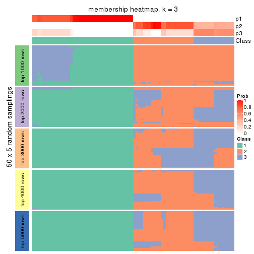
membership_heatmap(res, k = 4)
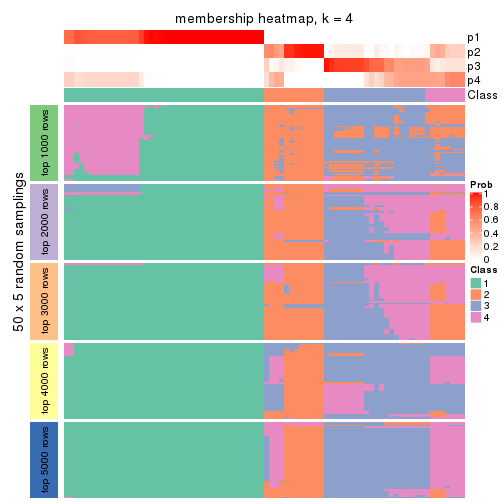
membership_heatmap(res, k = 5)
membership_heatmap(res, k = 6)
As soon as we have had the classes for columns, we can look for signatures which are significantly different between classes which can be candidate marks for certain classes. Following are the heatmaps for signatures.
Signature heatmaps where rows are scaled:
get_signatures(res, k = 2)

get_signatures(res, k = 3)
#> Error in mat[ceiling(1:nr/h_ratio), ceiling(1:nc/w_ratio), drop = FALSE]: subscript out of bounds

get_signatures(res, k = 4)
#> Error in mat[ceiling(1:nr/h_ratio), ceiling(1:nc/w_ratio), drop = FALSE]: subscript out of bounds

get_signatures(res, k = 5)
#> Error in mat[ceiling(1:nr/h_ratio), ceiling(1:nc/w_ratio), drop = FALSE]: subscript out of bounds

get_signatures(res, k = 6)
Signature heatmaps where rows are not scaled:
get_signatures(res, k = 2, scale_rows = FALSE)

get_signatures(res, k = 3, scale_rows = FALSE)
get_signatures(res, k = 4, scale_rows = FALSE)
#> Error in mat[ceiling(1:nr/h_ratio), ceiling(1:nc/w_ratio), drop = FALSE]: subscript out of bounds
get_signatures(res, k = 5, scale_rows = FALSE)
get_signatures(res, k = 6, scale_rows = FALSE)
Compare the overlap of signatures from different k:
compare_signatures(res)
get_signature() returns a data frame invisibly. TO get the list of signatures, the function
call should be assigned to a variable explicitly. In following code, if plot argument is set
to FALSE, no heatmap is plotted while only the differential analysis is performed.
# code only for demonstration
tb = get_signature(res, k = ..., plot = FALSE)
An example of the output of tb is:
#> which_row fdr mean_1 mean_2 scaled_mean_1 scaled_mean_2 km
#> 1 38 0.042760348 8.373488 9.131774 -0.5533452 0.5164555 1
#> 2 40 0.018707592 7.106213 8.469186 -0.6173731 0.5762149 1
#> 3 55 0.019134737 10.221463 11.207825 -0.6159697 0.5749050 1
#> 4 59 0.006059896 5.921854 7.869574 -0.6899429 0.6439467 1
#> 5 60 0.018055526 8.928898 10.211722 -0.6204761 0.5791110 1
#> 6 98 0.009384629 15.714769 14.887706 0.6635654 -0.6193277 2
...
The columns in tb are:
which_row: row indices corresponding to the input matrix.fdr: FDR for the differential test. mean_x: The mean value in group x.scaled_mean_x: The mean value in group x after rows are scaled.km: Row groups if k-means clustering is applied to rows.UMAP plot which shows how samples are separated.
dimension_reduction(res, k = 2, method = "UMAP")

dimension_reduction(res, k = 3, method = "UMAP")
dimension_reduction(res, k = 4, method = "UMAP")
dimension_reduction(res, k = 5, method = "UMAP")
dimension_reduction(res, k = 6, method = "UMAP")
Following heatmap shows how subgroups are split when increasing k:
collect_classes(res)
If matrix rows can be associated to genes, consider to use functional_enrichment(res,
...) to perform function enrichment for the signature genes. See this vignette for more detailed explanations.
The object with results only for a single top-value method and a single partition method can be extracted as:
res = res_list["MAD", "NMF"]
# you can also extract it by
# res = res_list["MAD:NMF"]
A summary of res and all the functions that can be applied to it:
res
#> A 'ConsensusPartition' object with k = 2, 3, 4, 5, 6.
#> On a matrix with 14104 rows and 80 columns.
#> Top rows (1000, 2000, 3000, 4000, 5000) are extracted by 'MAD' method.
#> Subgroups are detected by 'NMF' method.
#> Performed in total 1250 partitions by row resampling.
#> Best k for subgroups seems to be 2.
#>
#> Following methods can be applied to this 'ConsensusPartition' object:
#> [1] "cola_report" "collect_classes" "collect_plots"
#> [4] "collect_stats" "colnames" "compare_signatures"
#> [7] "consensus_heatmap" "dimension_reduction" "functional_enrichment"
#> [10] "get_anno_col" "get_anno" "get_classes"
#> [13] "get_consensus" "get_matrix" "get_membership"
#> [16] "get_param" "get_signatures" "get_stats"
#> [19] "is_best_k" "is_stable_k" "membership_heatmap"
#> [22] "ncol" "nrow" "plot_ecdf"
#> [25] "rownames" "select_partition_number" "show"
#> [28] "suggest_best_k" "test_to_known_factors"
collect_plots() function collects all the plots made from res for all k (number of partitions)
into one single page to provide an easy and fast comparison between different k.
collect_plots(res)
The plots are:
k and the heatmap of
predicted classes for each k.k.k.k.All the plots in panels can be made by individual functions and they are plotted later in this section.
select_partition_number() produces several plots showing different
statistics for choosing “optimized” k. There are following statistics:
k;k, the area increased is defined as \(A_k - A_{k-1}\).The detailed explanations of these statistics can be found in the cola vignette.
Generally speaking, lower PAC score, higher mean silhouette score or higher
concordance corresponds to better partition. Rand index and Jaccard index
measure how similar the current partition is compared to partition with k-1.
If they are too similar, we won't accept k is better than k-1.
select_partition_number(res)
The numeric values for all these statistics can be obtained by get_stats().
get_stats(res)
#> k 1-PAC mean_silhouette concordance area_increased Rand Jaccard
#> 2 2 1.000 1.000 1.000 0.5068 0.494 0.494
#> 3 3 0.871 0.940 0.914 0.0896 1.000 1.000
#> 4 4 0.870 0.770 0.919 0.0143 0.988 0.975
#> 5 5 0.773 0.666 0.832 0.0856 0.945 0.885
#> 6 6 0.741 0.587 0.790 0.0631 0.907 0.792
suggest_best_k() suggests the best \(k\) based on these statistics. The rules are as follows:
suggest_best_k(res)
#> [1] 2
Following shows the table of the partitions (You need to click the show/hide
code output link to see it). The membership matrix (columns with name p*)
is inferred by
clue::cl_consensus()
function with the SE method. Basically the value in the membership matrix
represents the probability to belong to a certain group. The finall class
label for an item is determined with the group with highest probability it
belongs to.
In get_classes() function, the entropy is calculated from the membership
matrix and the silhouette score is calculated from the consensus matrix.
cbind(get_classes(res, k = 2), get_membership(res, k = 2))
#> class entropy silhouette p1 p2
#> SRR830972 2 0 1 0 1
#> SRR830973 2 0 1 0 1
#> SRR830974 2 0 1 0 1
#> SRR830975 2 0 1 0 1
#> SRR830976 2 0 1 0 1
#> SRR830977 2 0 1 0 1
#> SRR830978 2 0 1 0 1
#> SRR830979 2 0 1 0 1
#> SRR830980 2 0 1 0 1
#> SRR830982 2 0 1 0 1
#> SRR830981 2 0 1 0 1
#> SRR830983 2 0 1 0 1
#> SRR831010 1 0 1 1 0
#> SRR831011 1 0 1 1 0
#> SRR831012 1 0 1 1 0
#> SRR831013 1 0 1 1 0
#> SRR831014 1 0 1 1 0
#> SRR831015 1 0 1 1 0
#> SRR831016 1 0 1 1 0
#> SRR831017 1 0 1 1 0
#> SRR831018 1 0 1 1 0
#> SRR831019 1 0 1 1 0
#> SRR831020 1 0 1 1 0
#> SRR831021 1 0 1 1 0
#> SRR831022 1 0 1 1 0
#> SRR831023 1 0 1 1 0
#> SRR831024 1 0 1 1 0
#> SRR831025 1 0 1 1 0
#> SRR831026 1 0 1 1 0
#> SRR831027 1 0 1 1 0
#> SRR831028 1 0 1 1 0
#> SRR831029 1 0 1 1 0
#> SRR831030 1 0 1 1 0
#> SRR831031 1 0 1 1 0
#> SRR831032 1 0 1 1 0
#> SRR831033 1 0 1 1 0
#> SRR831034 1 0 1 1 0
#> SRR831035 1 0 1 1 0
#> SRR831036 1 0 1 1 0
#> SRR831037 1 0 1 1 0
#> SRR831038 1 0 1 1 0
#> SRR831039 1 0 1 1 0
#> SRR831040 1 0 1 1 0
#> SRR831041 1 0 1 1 0
#> SRR831042 1 0 1 1 0
#> SRR831043 1 0 1 1 0
#> SRR831044 1 0 1 1 0
#> SRR830965 2 0 1 0 1
#> SRR830966 2 0 1 0 1
#> SRR830967 2 0 1 0 1
#> SRR830968 2 0 1 0 1
#> SRR830969 2 0 1 0 1
#> SRR830970 2 0 1 0 1
#> SRR830971 2 0 1 0 1
#> SRR830984 2 0 1 0 1
#> SRR830985 2 0 1 0 1
#> SRR830986 2 0 1 0 1
#> SRR830987 2 0 1 0 1
#> SRR830988 2 0 1 0 1
#> SRR830989 2 0 1 0 1
#> SRR830990 2 0 1 0 1
#> SRR830991 2 0 1 0 1
#> SRR830992 2 0 1 0 1
#> SRR830993 2 0 1 0 1
#> SRR830994 2 0 1 0 1
#> SRR830995 2 0 1 0 1
#> SRR830996 2 0 1 0 1
#> SRR830997 2 0 1 0 1
#> SRR830998 2 0 1 0 1
#> SRR830999 2 0 1 0 1
#> SRR831000 2 0 1 0 1
#> SRR831001 2 0 1 0 1
#> SRR831002 2 0 1 0 1
#> SRR831003 2 0 1 0 1
#> SRR831004 2 0 1 0 1
#> SRR831005 1 0 1 1 0
#> SRR831006 1 0 1 1 0
#> SRR831007 1 0 1 1 0
#> SRR831008 1 0 1 1 0
#> SRR831009 1 0 1 1 0
cbind(get_classes(res, k = 3), get_membership(res, k = 3))
#> class entropy silhouette p1 p2 p3
#> SRR830972 2 0.2625 0.879 0 0.916 NA
#> SRR830973 2 0.4235 0.892 0 0.824 NA
#> SRR830974 2 0.0892 0.900 0 0.980 NA
#> SRR830975 2 0.2165 0.885 0 0.936 NA
#> SRR830976 2 0.1643 0.890 0 0.956 NA
#> SRR830977 2 0.4887 0.883 0 0.772 NA
#> SRR830978 2 0.5138 0.877 0 0.748 NA
#> SRR830979 2 0.5948 0.835 0 0.640 NA
#> SRR830980 2 0.0237 0.899 0 0.996 NA
#> SRR830982 2 0.0424 0.898 0 0.992 NA
#> SRR830981 2 0.5058 0.880 0 0.756 NA
#> SRR830983 2 0.1163 0.901 0 0.972 NA
#> SRR831010 1 0.0000 1.000 1 0.000 NA
#> SRR831011 1 0.0000 1.000 1 0.000 NA
#> SRR831012 1 0.0000 1.000 1 0.000 NA
#> SRR831013 1 0.0000 1.000 1 0.000 NA
#> SRR831014 1 0.0000 1.000 1 0.000 NA
#> SRR831015 1 0.0000 1.000 1 0.000 NA
#> SRR831016 1 0.0000 1.000 1 0.000 NA
#> SRR831017 1 0.0000 1.000 1 0.000 NA
#> SRR831018 1 0.0000 1.000 1 0.000 NA
#> SRR831019 1 0.0000 1.000 1 0.000 NA
#> SRR831020 1 0.0000 1.000 1 0.000 NA
#> SRR831021 1 0.0000 1.000 1 0.000 NA
#> SRR831022 1 0.0000 1.000 1 0.000 NA
#> SRR831023 1 0.0000 1.000 1 0.000 NA
#> SRR831024 1 0.0000 1.000 1 0.000 NA
#> SRR831025 1 0.0000 1.000 1 0.000 NA
#> SRR831026 1 0.0000 1.000 1 0.000 NA
#> SRR831027 1 0.0000 1.000 1 0.000 NA
#> SRR831028 1 0.0000 1.000 1 0.000 NA
#> SRR831029 1 0.0000 1.000 1 0.000 NA
#> SRR831030 1 0.0000 1.000 1 0.000 NA
#> SRR831031 1 0.0000 1.000 1 0.000 NA
#> SRR831032 1 0.0000 1.000 1 0.000 NA
#> SRR831033 1 0.0000 1.000 1 0.000 NA
#> SRR831034 1 0.0000 1.000 1 0.000 NA
#> SRR831035 1 0.0000 1.000 1 0.000 NA
#> SRR831036 1 0.0000 1.000 1 0.000 NA
#> SRR831037 1 0.0000 1.000 1 0.000 NA
#> SRR831038 1 0.0000 1.000 1 0.000 NA
#> SRR831039 1 0.0000 1.000 1 0.000 NA
#> SRR831040 1 0.0000 1.000 1 0.000 NA
#> SRR831041 1 0.0000 1.000 1 0.000 NA
#> SRR831042 1 0.0000 1.000 1 0.000 NA
#> SRR831043 1 0.0000 1.000 1 0.000 NA
#> SRR831044 1 0.0000 1.000 1 0.000 NA
#> SRR830965 2 0.2959 0.873 0 0.900 NA
#> SRR830966 2 0.2878 0.874 0 0.904 NA
#> SRR830967 2 0.3267 0.866 0 0.884 NA
#> SRR830968 2 0.1964 0.888 0 0.944 NA
#> SRR830969 2 0.2448 0.900 0 0.924 NA
#> SRR830970 2 0.1411 0.892 0 0.964 NA
#> SRR830971 2 0.2959 0.873 0 0.900 NA
#> SRR830984 2 0.5621 0.859 0 0.692 NA
#> SRR830985 2 0.5327 0.872 0 0.728 NA
#> SRR830986 2 0.1031 0.894 0 0.976 NA
#> SRR830987 2 0.1964 0.887 0 0.944 NA
#> SRR830988 2 0.1964 0.887 0 0.944 NA
#> SRR830989 2 0.4842 0.884 0 0.776 NA
#> SRR830990 2 0.5859 0.843 0 0.656 NA
#> SRR830991 2 0.0747 0.899 0 0.984 NA
#> SRR830992 2 0.1753 0.900 0 0.952 NA
#> SRR830993 2 0.5760 0.851 0 0.672 NA
#> SRR830994 2 0.4931 0.883 0 0.768 NA
#> SRR830995 2 0.0892 0.900 0 0.980 NA
#> SRR830996 2 0.4399 0.890 0 0.812 NA
#> SRR830997 2 0.5988 0.831 0 0.632 NA
#> SRR830998 2 0.5733 0.852 0 0.676 NA
#> SRR830999 2 0.0592 0.900 0 0.988 NA
#> SRR831000 2 0.4121 0.893 0 0.832 NA
#> SRR831001 2 0.5216 0.875 0 0.740 NA
#> SRR831002 2 0.5591 0.861 0 0.696 NA
#> SRR831003 2 0.5098 0.879 0 0.752 NA
#> SRR831004 2 0.1753 0.889 0 0.952 NA
#> SRR831005 1 0.0000 1.000 1 0.000 NA
#> SRR831006 1 0.0000 1.000 1 0.000 NA
#> SRR831007 1 0.0000 1.000 1 0.000 NA
#> SRR831008 1 0.0000 1.000 1 0.000 NA
#> SRR831009 1 0.0000 1.000 1 0.000 NA
cbind(get_classes(res, k = 4), get_membership(res, k = 4))
#> class entropy silhouette p1 p2 p3 p4
#> SRR830972 2 0.2021 0.688 0.000 0.932 0.056 0.012
#> SRR830973 2 0.3688 0.606 0.000 0.792 0.208 0.000
#> SRR830974 2 0.2101 0.710 0.000 0.928 0.060 0.012
#> SRR830975 2 0.1545 0.703 0.000 0.952 0.040 0.008
#> SRR830976 2 0.1388 0.711 0.000 0.960 0.028 0.012
#> SRR830977 2 0.4313 0.523 0.000 0.736 0.260 0.004
#> SRR830978 2 0.4222 0.496 0.000 0.728 0.272 0.000
#> SRR830979 2 0.5406 -0.512 0.000 0.508 0.480 0.012
#> SRR830980 2 0.0804 0.722 0.000 0.980 0.012 0.008
#> SRR830982 2 0.1151 0.721 0.000 0.968 0.024 0.008
#> SRR830981 2 0.4193 0.500 0.000 0.732 0.268 0.000
#> SRR830983 2 0.1576 0.717 0.000 0.948 0.048 0.004
#> SRR831010 1 0.0000 0.999 1.000 0.000 0.000 0.000
#> SRR831011 1 0.0000 0.999 1.000 0.000 0.000 0.000
#> SRR831012 1 0.0000 0.999 1.000 0.000 0.000 0.000
#> SRR831013 1 0.0000 0.999 1.000 0.000 0.000 0.000
#> SRR831014 1 0.0000 0.999 1.000 0.000 0.000 0.000
#> SRR831015 1 0.0000 0.999 1.000 0.000 0.000 0.000
#> SRR831016 1 0.0000 0.999 1.000 0.000 0.000 0.000
#> SRR831017 1 0.0000 0.999 1.000 0.000 0.000 0.000
#> SRR831018 1 0.0000 0.999 1.000 0.000 0.000 0.000
#> SRR831019 1 0.0336 0.993 0.992 0.000 0.000 0.008
#> SRR831020 1 0.0000 0.999 1.000 0.000 0.000 0.000
#> SRR831021 1 0.0000 0.999 1.000 0.000 0.000 0.000
#> SRR831022 1 0.0000 0.999 1.000 0.000 0.000 0.000
#> SRR831023 1 0.0000 0.999 1.000 0.000 0.000 0.000
#> SRR831024 1 0.0000 0.999 1.000 0.000 0.000 0.000
#> SRR831025 1 0.0000 0.999 1.000 0.000 0.000 0.000
#> SRR831026 1 0.0000 0.999 1.000 0.000 0.000 0.000
#> SRR831027 1 0.0000 0.999 1.000 0.000 0.000 0.000
#> SRR831028 1 0.0000 0.999 1.000 0.000 0.000 0.000
#> SRR831029 1 0.0000 0.999 1.000 0.000 0.000 0.000
#> SRR831030 1 0.0000 0.999 1.000 0.000 0.000 0.000
#> SRR831031 1 0.0000 0.999 1.000 0.000 0.000 0.000
#> SRR831032 1 0.0000 0.999 1.000 0.000 0.000 0.000
#> SRR831033 1 0.0000 0.999 1.000 0.000 0.000 0.000
#> SRR831034 1 0.0000 0.999 1.000 0.000 0.000 0.000
#> SRR831035 1 0.0817 0.979 0.976 0.000 0.000 0.024
#> SRR831036 1 0.0000 0.999 1.000 0.000 0.000 0.000
#> SRR831037 1 0.0188 0.996 0.996 0.000 0.000 0.004
#> SRR831038 1 0.0000 0.999 1.000 0.000 0.000 0.000
#> SRR831039 1 0.0000 0.999 1.000 0.000 0.000 0.000
#> SRR831040 1 0.0000 0.999 1.000 0.000 0.000 0.000
#> SRR831041 1 0.0000 0.999 1.000 0.000 0.000 0.000
#> SRR831042 1 0.0000 0.999 1.000 0.000 0.000 0.000
#> SRR831043 1 0.0000 0.999 1.000 0.000 0.000 0.000
#> SRR831044 1 0.0000 0.999 1.000 0.000 0.000 0.000
#> SRR830965 2 0.2450 0.665 0.000 0.912 0.072 0.016
#> SRR830966 2 0.2101 0.681 0.000 0.928 0.060 0.012
#> SRR830967 2 0.2450 0.662 0.000 0.912 0.072 0.016
#> SRR830968 2 0.1724 0.704 0.000 0.948 0.032 0.020
#> SRR830969 2 0.1888 0.718 0.000 0.940 0.044 0.016
#> SRR830970 2 0.1297 0.711 0.000 0.964 0.020 0.016
#> SRR830971 2 0.2300 0.672 0.000 0.920 0.064 0.016
#> SRR830984 2 0.5038 0.292 0.000 0.652 0.336 0.012
#> SRR830985 2 0.4382 0.450 0.000 0.704 0.296 0.000
#> SRR830986 2 0.1042 0.721 0.000 0.972 0.020 0.008
#> SRR830987 2 0.1356 0.710 0.000 0.960 0.032 0.008
#> SRR830988 2 0.1256 0.711 0.000 0.964 0.028 0.008
#> SRR830989 2 0.4049 0.584 0.000 0.780 0.212 0.008
#> SRR830990 2 0.4961 -0.298 0.000 0.552 0.448 0.000
#> SRR830991 2 0.0779 0.720 0.000 0.980 0.004 0.016
#> SRR830992 2 0.1722 0.717 0.000 0.944 0.048 0.008
#> SRR830993 2 0.4973 0.236 0.000 0.644 0.348 0.008
#> SRR830994 2 0.4507 0.564 0.000 0.756 0.224 0.020
#> SRR830995 2 0.0707 0.719 0.000 0.980 0.000 0.020
#> SRR830996 2 0.3710 0.612 0.000 0.804 0.192 0.004
#> SRR830997 3 0.5055 0.000 0.000 0.368 0.624 0.008
#> SRR830998 2 0.5024 0.179 0.000 0.632 0.360 0.008
#> SRR830999 2 0.0779 0.720 0.000 0.980 0.004 0.016
#> SRR831000 2 0.3852 0.617 0.000 0.808 0.180 0.012
#> SRR831001 2 0.4428 0.479 0.000 0.720 0.276 0.004
#> SRR831002 2 0.4999 0.299 0.000 0.660 0.328 0.012
#> SRR831003 2 0.4516 0.510 0.000 0.736 0.252 0.012
#> SRR831004 2 0.0921 0.713 0.000 0.972 0.028 0.000
#> SRR831005 1 0.0000 0.999 1.000 0.000 0.000 0.000
#> SRR831006 1 0.0000 0.999 1.000 0.000 0.000 0.000
#> SRR831007 1 0.0000 0.999 1.000 0.000 0.000 0.000
#> SRR831008 1 0.0000 0.999 1.000 0.000 0.000 0.000
#> SRR831009 1 0.0000 0.999 1.000 0.000 0.000 0.000
cbind(get_classes(res, k = 5), get_membership(res, k = 5))
#> class entropy silhouette p1 p2 p3 p4 p5
#> SRR830972 2 0.3359 0.5228 0.000 0.848 0.052 NA 0.096
#> SRR830973 2 0.4822 0.1649 0.000 0.616 0.352 NA 0.032
#> SRR830974 2 0.3807 0.4468 0.000 0.748 0.240 NA 0.012
#> SRR830975 2 0.3970 0.4879 0.000 0.788 0.156 NA 0.056
#> SRR830976 2 0.4000 0.4537 0.000 0.748 0.228 NA 0.024
#> SRR830977 2 0.5118 -0.1170 0.000 0.548 0.412 NA 0.040
#> SRR830978 2 0.4744 -0.2222 0.000 0.508 0.476 NA 0.016
#> SRR830979 3 0.5353 0.6754 0.000 0.272 0.636 NA 0.092
#> SRR830980 2 0.2270 0.5548 0.000 0.904 0.076 NA 0.020
#> SRR830982 2 0.3650 0.4931 0.000 0.796 0.176 NA 0.028
#> SRR830981 2 0.4977 -0.2670 0.000 0.500 0.472 NA 0.028
#> SRR830983 2 0.3759 0.4574 0.000 0.764 0.220 NA 0.016
#> SRR831010 1 0.0000 0.9944 1.000 0.000 0.000 NA 0.000
#> SRR831011 1 0.0000 0.9944 1.000 0.000 0.000 NA 0.000
#> SRR831012 1 0.0000 0.9944 1.000 0.000 0.000 NA 0.000
#> SRR831013 1 0.0000 0.9944 1.000 0.000 0.000 NA 0.000
#> SRR831014 1 0.0000 0.9944 1.000 0.000 0.000 NA 0.000
#> SRR831015 1 0.0000 0.9944 1.000 0.000 0.000 NA 0.000
#> SRR831016 1 0.0000 0.9944 1.000 0.000 0.000 NA 0.000
#> SRR831017 1 0.0000 0.9944 1.000 0.000 0.000 NA 0.000
#> SRR831018 1 0.0000 0.9944 1.000 0.000 0.000 NA 0.000
#> SRR831019 1 0.1892 0.9243 0.916 0.000 0.000 NA 0.004
#> SRR831020 1 0.0000 0.9944 1.000 0.000 0.000 NA 0.000
#> SRR831021 1 0.0000 0.9944 1.000 0.000 0.000 NA 0.000
#> SRR831022 1 0.0000 0.9944 1.000 0.000 0.000 NA 0.000
#> SRR831023 1 0.0000 0.9944 1.000 0.000 0.000 NA 0.000
#> SRR831024 1 0.0000 0.9944 1.000 0.000 0.000 NA 0.000
#> SRR831025 1 0.0000 0.9944 1.000 0.000 0.000 NA 0.000
#> SRR831026 1 0.0000 0.9944 1.000 0.000 0.000 NA 0.000
#> SRR831027 1 0.0000 0.9944 1.000 0.000 0.000 NA 0.000
#> SRR831028 1 0.0000 0.9944 1.000 0.000 0.000 NA 0.000
#> SRR831029 1 0.0000 0.9944 1.000 0.000 0.000 NA 0.000
#> SRR831030 1 0.0000 0.9944 1.000 0.000 0.000 NA 0.000
#> SRR831031 1 0.0000 0.9944 1.000 0.000 0.000 NA 0.000
#> SRR831032 1 0.0000 0.9944 1.000 0.000 0.000 NA 0.000
#> SRR831033 1 0.0000 0.9944 1.000 0.000 0.000 NA 0.000
#> SRR831034 1 0.0324 0.9885 0.992 0.000 0.004 NA 0.000
#> SRR831035 1 0.2127 0.8997 0.892 0.000 0.000 NA 0.000
#> SRR831036 1 0.0000 0.9944 1.000 0.000 0.000 NA 0.000
#> SRR831037 1 0.1444 0.9532 0.948 0.000 0.000 NA 0.012
#> SRR831038 1 0.0000 0.9944 1.000 0.000 0.000 NA 0.000
#> SRR831039 1 0.0000 0.9944 1.000 0.000 0.000 NA 0.000
#> SRR831040 1 0.0000 0.9944 1.000 0.000 0.000 NA 0.000
#> SRR831041 1 0.0000 0.9944 1.000 0.000 0.000 NA 0.000
#> SRR831042 1 0.0000 0.9944 1.000 0.000 0.000 NA 0.000
#> SRR831043 1 0.0000 0.9944 1.000 0.000 0.000 NA 0.000
#> SRR831044 1 0.0000 0.9944 1.000 0.000 0.000 NA 0.000
#> SRR830965 2 0.3170 0.5114 0.000 0.856 0.036 NA 0.104
#> SRR830966 2 0.2761 0.5234 0.000 0.872 0.024 NA 0.104
#> SRR830967 2 0.3871 0.4851 0.000 0.808 0.056 NA 0.132
#> SRR830968 2 0.3234 0.5328 0.000 0.852 0.064 NA 0.084
#> SRR830969 2 0.3374 0.5346 0.000 0.844 0.108 NA 0.044
#> SRR830970 2 0.2359 0.5466 0.000 0.904 0.036 NA 0.060
#> SRR830971 2 0.3336 0.5177 0.000 0.844 0.060 NA 0.096
#> SRR830984 3 0.5599 0.3536 0.000 0.444 0.484 NA 0.072
#> SRR830985 2 0.5230 -0.2789 0.000 0.504 0.452 NA 0.044
#> SRR830986 2 0.3639 0.4826 0.000 0.792 0.184 NA 0.024
#> SRR830987 2 0.3731 0.4994 0.000 0.800 0.160 NA 0.040
#> SRR830988 2 0.4065 0.4791 0.000 0.772 0.180 NA 0.048
#> SRR830989 2 0.5289 -0.0947 0.000 0.528 0.428 NA 0.040
#> SRR830990 3 0.5126 0.6774 0.000 0.300 0.636 NA 0.064
#> SRR830991 2 0.4210 0.4803 0.000 0.788 0.140 NA 0.064
#> SRR830992 2 0.3985 0.4693 0.000 0.772 0.196 NA 0.028
#> SRR830993 3 0.5215 0.6216 0.000 0.352 0.592 NA 0.056
#> SRR830994 2 0.5402 -0.0792 0.000 0.528 0.420 NA 0.048
#> SRR830995 2 0.4612 0.4388 0.000 0.740 0.196 NA 0.056
#> SRR830996 2 0.4779 0.1116 0.000 0.588 0.388 NA 0.024
#> SRR830997 3 0.5404 0.5557 0.000 0.184 0.664 NA 0.152
#> SRR830998 3 0.5151 0.4765 0.000 0.396 0.560 NA 0.044
#> SRR830999 2 0.4109 0.4884 0.000 0.788 0.148 NA 0.060
#> SRR831000 2 0.5272 0.2428 0.000 0.624 0.312 NA 0.060
#> SRR831001 2 0.5213 0.0108 0.000 0.556 0.396 NA 0.048
#> SRR831002 2 0.5601 -0.1950 0.000 0.480 0.448 NA 0.072
#> SRR831003 2 0.5501 0.0981 0.000 0.572 0.360 NA 0.064
#> SRR831004 2 0.2153 0.5532 0.000 0.916 0.044 NA 0.040
#> SRR831005 1 0.0000 0.9944 1.000 0.000 0.000 NA 0.000
#> SRR831006 1 0.0000 0.9944 1.000 0.000 0.000 NA 0.000
#> SRR831007 1 0.0000 0.9944 1.000 0.000 0.000 NA 0.000
#> SRR831008 1 0.0000 0.9944 1.000 0.000 0.000 NA 0.000
#> SRR831009 1 0.0000 0.9944 1.000 0.000 0.000 NA 0.000
cbind(get_classes(res, k = 6), get_membership(res, k = 6))
#> class entropy silhouette p1 p2 p3 p4 p5 p6
#> SRR830972 2 0.4828 0.45853 0.000 0.676 0.004 0.196 0.000 NA
#> SRR830973 2 0.5132 0.27876 0.000 0.684 0.116 0.168 0.000 NA
#> SRR830974 2 0.3540 0.40059 0.000 0.812 0.036 0.132 0.000 NA
#> SRR830975 2 0.2817 0.50470 0.000 0.868 0.008 0.072 0.000 NA
#> SRR830976 2 0.3273 0.47255 0.000 0.844 0.048 0.084 0.000 NA
#> SRR830977 2 0.5904 -0.07251 0.000 0.552 0.152 0.276 0.004 NA
#> SRR830978 2 0.5474 -0.10296 0.000 0.552 0.132 0.312 0.000 NA
#> SRR830979 3 0.6021 0.00000 0.000 0.244 0.396 0.360 0.000 NA
#> SRR830980 2 0.3872 0.47188 0.000 0.776 0.004 0.144 0.000 NA
#> SRR830982 2 0.2604 0.46995 0.000 0.880 0.008 0.076 0.000 NA
#> SRR830981 2 0.5776 -0.10478 0.000 0.552 0.136 0.296 0.004 NA
#> SRR830983 2 0.2826 0.43794 0.000 0.856 0.024 0.112 0.000 NA
#> SRR831010 1 0.0000 0.98458 1.000 0.000 0.000 0.000 0.000 NA
#> SRR831011 1 0.0000 0.98458 1.000 0.000 0.000 0.000 0.000 NA
#> SRR831012 1 0.0000 0.98458 1.000 0.000 0.000 0.000 0.000 NA
#> SRR831013 1 0.0000 0.98458 1.000 0.000 0.000 0.000 0.000 NA
#> SRR831014 1 0.0000 0.98458 1.000 0.000 0.000 0.000 0.000 NA
#> SRR831015 1 0.0000 0.98458 1.000 0.000 0.000 0.000 0.000 NA
#> SRR831016 1 0.0000 0.98458 1.000 0.000 0.000 0.000 0.000 NA
#> SRR831017 1 0.0820 0.96390 0.972 0.000 0.000 0.000 0.016 NA
#> SRR831018 1 0.0000 0.98458 1.000 0.000 0.000 0.000 0.000 NA
#> SRR831019 1 0.2723 0.84954 0.852 0.000 0.016 0.004 0.128 NA
#> SRR831020 1 0.0000 0.98458 1.000 0.000 0.000 0.000 0.000 NA
#> SRR831021 1 0.0000 0.98458 1.000 0.000 0.000 0.000 0.000 NA
#> SRR831022 1 0.0000 0.98458 1.000 0.000 0.000 0.000 0.000 NA
#> SRR831023 1 0.0000 0.98458 1.000 0.000 0.000 0.000 0.000 NA
#> SRR831024 1 0.0000 0.98458 1.000 0.000 0.000 0.000 0.000 NA
#> SRR831025 1 0.0000 0.98458 1.000 0.000 0.000 0.000 0.000 NA
#> SRR831026 1 0.0000 0.98458 1.000 0.000 0.000 0.000 0.000 NA
#> SRR831027 1 0.0000 0.98458 1.000 0.000 0.000 0.000 0.000 NA
#> SRR831028 1 0.0000 0.98458 1.000 0.000 0.000 0.000 0.000 NA
#> SRR831029 1 0.0000 0.98458 1.000 0.000 0.000 0.000 0.000 NA
#> SRR831030 1 0.0000 0.98458 1.000 0.000 0.000 0.000 0.000 NA
#> SRR831031 1 0.0000 0.98458 1.000 0.000 0.000 0.000 0.000 NA
#> SRR831032 1 0.0000 0.98458 1.000 0.000 0.000 0.000 0.000 NA
#> SRR831033 1 0.0000 0.98458 1.000 0.000 0.000 0.000 0.000 NA
#> SRR831034 1 0.0858 0.96056 0.968 0.000 0.000 0.000 0.004 NA
#> SRR831035 1 0.4129 0.74008 0.764 0.000 0.012 0.000 0.080 NA
#> SRR831036 1 0.0000 0.98458 1.000 0.000 0.000 0.000 0.000 NA
#> SRR831037 1 0.2854 0.77844 0.792 0.000 0.000 0.000 0.208 NA
#> SRR831038 1 0.0000 0.98458 1.000 0.000 0.000 0.000 0.000 NA
#> SRR831039 1 0.0000 0.98458 1.000 0.000 0.000 0.000 0.000 NA
#> SRR831040 1 0.0000 0.98458 1.000 0.000 0.000 0.000 0.000 NA
#> SRR831041 1 0.0000 0.98458 1.000 0.000 0.000 0.000 0.000 NA
#> SRR831042 1 0.0000 0.98458 1.000 0.000 0.000 0.000 0.000 NA
#> SRR831043 1 0.0000 0.98458 1.000 0.000 0.000 0.000 0.000 NA
#> SRR831044 1 0.0000 0.98458 1.000 0.000 0.000 0.000 0.000 NA
#> SRR830965 2 0.5280 0.41889 0.000 0.612 0.004 0.236 0.000 NA
#> SRR830966 2 0.5442 0.38633 0.000 0.588 0.004 0.244 0.000 NA
#> SRR830967 2 0.5726 0.29560 0.000 0.512 0.004 0.320 0.000 NA
#> SRR830968 2 0.5711 0.36126 0.000 0.556 0.016 0.292 0.000 NA
#> SRR830969 2 0.5112 0.39713 0.000 0.648 0.032 0.256 0.000 NA
#> SRR830970 2 0.5229 0.42480 0.000 0.636 0.016 0.240 0.000 NA
#> SRR830971 2 0.5804 0.31222 0.000 0.516 0.008 0.312 0.000 NA
#> SRR830984 2 0.6209 -0.38024 0.000 0.496 0.248 0.236 0.000 NA
#> SRR830985 2 0.5918 -0.16458 0.000 0.536 0.176 0.272 0.000 NA
#> SRR830986 2 0.2042 0.49463 0.000 0.920 0.024 0.024 0.000 NA
#> SRR830987 2 0.2866 0.48934 0.000 0.868 0.012 0.060 0.000 NA
#> SRR830988 2 0.2266 0.49383 0.000 0.908 0.040 0.024 0.000 NA
#> SRR830989 4 0.5478 0.38996 0.000 0.320 0.072 0.580 0.004 NA
#> SRR830990 4 0.6355 -0.67260 0.000 0.272 0.320 0.396 0.012 NA
#> SRR830991 4 0.5071 0.00871 0.000 0.444 0.000 0.488 0.004 NA
#> SRR830992 2 0.5060 -0.13852 0.000 0.512 0.008 0.424 0.000 NA
#> SRR830993 4 0.6398 -0.66245 0.000 0.332 0.292 0.364 0.000 NA
#> SRR830994 4 0.5408 0.37937 0.000 0.316 0.088 0.580 0.004 NA
#> SRR830995 4 0.5000 0.13123 0.000 0.416 0.008 0.524 0.000 NA
#> SRR830996 4 0.4891 0.38508 0.000 0.436 0.040 0.516 0.004 NA
#> SRR830997 4 0.6511 -0.48058 0.000 0.116 0.336 0.480 0.064 NA
#> SRR830998 4 0.5831 0.00190 0.000 0.300 0.160 0.528 0.012 NA
#> SRR830999 2 0.5346 -0.02970 0.000 0.460 0.012 0.456 0.000 NA
#> SRR831000 4 0.4553 0.40988 0.000 0.364 0.008 0.604 0.016 NA
#> SRR831001 4 0.4335 0.46226 0.000 0.324 0.024 0.644 0.008 NA
#> SRR831002 4 0.4754 0.37465 0.000 0.260 0.052 0.668 0.020 NA
#> SRR831003 4 0.4535 0.47356 0.000 0.268 0.040 0.676 0.016 NA
#> SRR831004 2 0.4259 0.46132 0.000 0.740 0.004 0.160 0.000 NA
#> SRR831005 1 0.0000 0.98458 1.000 0.000 0.000 0.000 0.000 NA
#> SRR831006 1 0.0000 0.98458 1.000 0.000 0.000 0.000 0.000 NA
#> SRR831007 1 0.0000 0.98458 1.000 0.000 0.000 0.000 0.000 NA
#> SRR831008 1 0.0000 0.98458 1.000 0.000 0.000 0.000 0.000 NA
#> SRR831009 1 0.0000 0.98458 1.000 0.000 0.000 0.000 0.000 NA
Heatmaps for the consensus matrix. It visualizes the probability of two samples to be in a same group.
consensus_heatmap(res, k = 2)

consensus_heatmap(res, k = 3)
consensus_heatmap(res, k = 4)
consensus_heatmap(res, k = 5)
consensus_heatmap(res, k = 6)
Heatmaps for the membership of samples in all partitions to see how consistent they are:
membership_heatmap(res, k = 2)

membership_heatmap(res, k = 3)
membership_heatmap(res, k = 4)
membership_heatmap(res, k = 5)
membership_heatmap(res, k = 6)
As soon as we have had the classes for columns, we can look for signatures which are significantly different between classes which can be candidate marks for certain classes. Following are the heatmaps for signatures.
Signature heatmaps where rows are scaled:
get_signatures(res, k = 2)
get_signatures(res, k = 3)
get_signatures(res, k = 4)

get_signatures(res, k = 5)
#> Error in mat[ceiling(1:nr/h_ratio), ceiling(1:nc/w_ratio), drop = FALSE]: subscript out of bounds
get_signatures(res, k = 6)

Signature heatmaps where rows are not scaled:
get_signatures(res, k = 2, scale_rows = FALSE)

get_signatures(res, k = 3, scale_rows = FALSE)
get_signatures(res, k = 4, scale_rows = FALSE)
get_signatures(res, k = 5, scale_rows = FALSE)
get_signatures(res, k = 6, scale_rows = FALSE)

Compare the overlap of signatures from different k:
compare_signatures(res)
get_signature() returns a data frame invisibly. TO get the list of signatures, the function
call should be assigned to a variable explicitly. In following code, if plot argument is set
to FALSE, no heatmap is plotted while only the differential analysis is performed.
# code only for demonstration
tb = get_signature(res, k = ..., plot = FALSE)
An example of the output of tb is:
#> which_row fdr mean_1 mean_2 scaled_mean_1 scaled_mean_2 km
#> 1 38 0.042760348 8.373488 9.131774 -0.5533452 0.5164555 1
#> 2 40 0.018707592 7.106213 8.469186 -0.6173731 0.5762149 1
#> 3 55 0.019134737 10.221463 11.207825 -0.6159697 0.5749050 1
#> 4 59 0.006059896 5.921854 7.869574 -0.6899429 0.6439467 1
#> 5 60 0.018055526 8.928898 10.211722 -0.6204761 0.5791110 1
#> 6 98 0.009384629 15.714769 14.887706 0.6635654 -0.6193277 2
...
The columns in tb are:
which_row: row indices corresponding to the input matrix.fdr: FDR for the differential test. mean_x: The mean value in group x.scaled_mean_x: The mean value in group x after rows are scaled.km: Row groups if k-means clustering is applied to rows.UMAP plot which shows how samples are separated.
dimension_reduction(res, k = 2, method = "UMAP")
dimension_reduction(res, k = 3, method = "UMAP")
dimension_reduction(res, k = 4, method = "UMAP")
dimension_reduction(res, k = 5, method = "UMAP")
dimension_reduction(res, k = 6, method = "UMAP")

Following heatmap shows how subgroups are split when increasing k:
collect_classes(res)
If matrix rows can be associated to genes, consider to use functional_enrichment(res,
...) to perform function enrichment for the signature genes. See this vignette for more detailed explanations.
The object with results only for a single top-value method and a single partition method can be extracted as:
res = res_list["ATC", "hclust"]
# you can also extract it by
# res = res_list["ATC:hclust"]
A summary of res and all the functions that can be applied to it:
res
#> A 'ConsensusPartition' object with k = 2, 3, 4, 5, 6.
#> On a matrix with 14104 rows and 80 columns.
#> Top rows (1000, 2000, 3000, 4000, 5000) are extracted by 'ATC' method.
#> Subgroups are detected by 'hclust' method.
#> Performed in total 1250 partitions by row resampling.
#> Best k for subgroups seems to be 6.
#>
#> Following methods can be applied to this 'ConsensusPartition' object:
#> [1] "cola_report" "collect_classes" "collect_plots"
#> [4] "collect_stats" "colnames" "compare_signatures"
#> [7] "consensus_heatmap" "dimension_reduction" "functional_enrichment"
#> [10] "get_anno_col" "get_anno" "get_classes"
#> [13] "get_consensus" "get_matrix" "get_membership"
#> [16] "get_param" "get_signatures" "get_stats"
#> [19] "is_best_k" "is_stable_k" "membership_heatmap"
#> [22] "ncol" "nrow" "plot_ecdf"
#> [25] "rownames" "select_partition_number" "show"
#> [28] "suggest_best_k" "test_to_known_factors"
collect_plots() function collects all the plots made from res for all k (number of partitions)
into one single page to provide an easy and fast comparison between different k.
collect_plots(res)
The plots are:
k and the heatmap of
predicted classes for each k.k.k.k.All the plots in panels can be made by individual functions and they are plotted later in this section.
select_partition_number() produces several plots showing different
statistics for choosing “optimized” k. There are following statistics:
k;k, the area increased is defined as \(A_k - A_{k-1}\).The detailed explanations of these statistics can be found in the cola vignette.
Generally speaking, lower PAC score, higher mean silhouette score or higher
concordance corresponds to better partition. Rand index and Jaccard index
measure how similar the current partition is compared to partition with k-1.
If they are too similar, we won't accept k is better than k-1.
select_partition_number(res)
The numeric values for all these statistics can be obtained by get_stats().
get_stats(res)
#> k 1-PAC mean_silhouette concordance area_increased Rand Jaccard
#> 2 2 1.000 1.000 1.000 0.5068 0.494 0.494
#> 3 3 0.880 0.901 0.904 0.1842 0.912 0.821
#> 4 4 0.941 0.916 0.961 0.0991 0.930 0.828
#> 5 5 0.940 0.905 0.954 0.0120 0.996 0.987
#> 6 6 0.948 0.903 0.953 0.0198 0.975 0.927
suggest_best_k() suggests the best \(k\) based on these statistics. The rules are as follows:
suggest_best_k(res)
#> [1] 6
#> attr(,"optional")
#> [1] 2 4
There is also optional best \(k\) = 2 4 that is worth to check.
Following shows the table of the partitions (You need to click the show/hide
code output link to see it). The membership matrix (columns with name p*)
is inferred by
clue::cl_consensus()
function with the SE method. Basically the value in the membership matrix
represents the probability to belong to a certain group. The finall class
label for an item is determined with the group with highest probability it
belongs to.
In get_classes() function, the entropy is calculated from the membership
matrix and the silhouette score is calculated from the consensus matrix.
cbind(get_classes(res, k = 2), get_membership(res, k = 2))
#> class entropy silhouette p1 p2
#> SRR830972 2 0 1 0 1
#> SRR830973 2 0 1 0 1
#> SRR830974 2 0 1 0 1
#> SRR830975 2 0 1 0 1
#> SRR830976 2 0 1 0 1
#> SRR830977 2 0 1 0 1
#> SRR830978 2 0 1 0 1
#> SRR830979 2 0 1 0 1
#> SRR830980 2 0 1 0 1
#> SRR830982 2 0 1 0 1
#> SRR830981 2 0 1 0 1
#> SRR830983 2 0 1 0 1
#> SRR831010 1 0 1 1 0
#> SRR831011 1 0 1 1 0
#> SRR831012 1 0 1 1 0
#> SRR831013 1 0 1 1 0
#> SRR831014 1 0 1 1 0
#> SRR831015 1 0 1 1 0
#> SRR831016 1 0 1 1 0
#> SRR831017 1 0 1 1 0
#> SRR831018 1 0 1 1 0
#> SRR831019 1 0 1 1 0
#> SRR831020 1 0 1 1 0
#> SRR831021 1 0 1 1 0
#> SRR831022 1 0 1 1 0
#> SRR831023 1 0 1 1 0
#> SRR831024 1 0 1 1 0
#> SRR831025 1 0 1 1 0
#> SRR831026 1 0 1 1 0
#> SRR831027 1 0 1 1 0
#> SRR831028 1 0 1 1 0
#> SRR831029 1 0 1 1 0
#> SRR831030 1 0 1 1 0
#> SRR831031 1 0 1 1 0
#> SRR831032 1 0 1 1 0
#> SRR831033 1 0 1 1 0
#> SRR831034 1 0 1 1 0
#> SRR831035 1 0 1 1 0
#> SRR831036 1 0 1 1 0
#> SRR831037 1 0 1 1 0
#> SRR831038 1 0 1 1 0
#> SRR831039 1 0 1 1 0
#> SRR831040 1 0 1 1 0
#> SRR831041 1 0 1 1 0
#> SRR831042 1 0 1 1 0
#> SRR831043 1 0 1 1 0
#> SRR831044 1 0 1 1 0
#> SRR830965 2 0 1 0 1
#> SRR830966 2 0 1 0 1
#> SRR830967 2 0 1 0 1
#> SRR830968 2 0 1 0 1
#> SRR830969 2 0 1 0 1
#> SRR830970 2 0 1 0 1
#> SRR830971 2 0 1 0 1
#> SRR830984 2 0 1 0 1
#> SRR830985 2 0 1 0 1
#> SRR830986 2 0 1 0 1
#> SRR830987 2 0 1 0 1
#> SRR830988 2 0 1 0 1
#> SRR830989 2 0 1 0 1
#> SRR830990 2 0 1 0 1
#> SRR830991 2 0 1 0 1
#> SRR830992 2 0 1 0 1
#> SRR830993 2 0 1 0 1
#> SRR830994 2 0 1 0 1
#> SRR830995 2 0 1 0 1
#> SRR830996 2 0 1 0 1
#> SRR830997 2 0 1 0 1
#> SRR830998 2 0 1 0 1
#> SRR830999 2 0 1 0 1
#> SRR831000 2 0 1 0 1
#> SRR831001 2 0 1 0 1
#> SRR831002 2 0 1 0 1
#> SRR831003 2 0 1 0 1
#> SRR831004 2 0 1 0 1
#> SRR831005 1 0 1 1 0
#> SRR831006 1 0 1 1 0
#> SRR831007 1 0 1 1 0
#> SRR831008 1 0 1 1 0
#> SRR831009 1 0 1 1 0
cbind(get_classes(res, k = 3), get_membership(res, k = 3))
#> class entropy silhouette p1 p2 p3
#> SRR830972 2 0.4291 0.918 0 0.820 0.180
#> SRR830973 3 0.3686 0.808 0 0.140 0.860
#> SRR830974 3 0.2796 0.827 0 0.092 0.908
#> SRR830975 3 0.2796 0.827 0 0.092 0.908
#> SRR830976 3 0.2959 0.821 0 0.100 0.900
#> SRR830977 3 0.3686 0.808 0 0.140 0.860
#> SRR830978 3 0.3686 0.808 0 0.140 0.860
#> SRR830979 3 0.3686 0.808 0 0.140 0.860
#> SRR830980 3 0.2878 0.824 0 0.096 0.904
#> SRR830982 3 0.0424 0.843 0 0.008 0.992
#> SRR830981 3 0.2796 0.827 0 0.092 0.908
#> SRR830983 3 0.2796 0.827 0 0.092 0.908
#> SRR831010 1 0.0000 1.000 1 0.000 0.000
#> SRR831011 1 0.0000 1.000 1 0.000 0.000
#> SRR831012 1 0.0000 1.000 1 0.000 0.000
#> SRR831013 1 0.0000 1.000 1 0.000 0.000
#> SRR831014 1 0.0000 1.000 1 0.000 0.000
#> SRR831015 1 0.0000 1.000 1 0.000 0.000
#> SRR831016 1 0.0000 1.000 1 0.000 0.000
#> SRR831017 1 0.0000 1.000 1 0.000 0.000
#> SRR831018 1 0.0000 1.000 1 0.000 0.000
#> SRR831019 1 0.0000 1.000 1 0.000 0.000
#> SRR831020 1 0.0000 1.000 1 0.000 0.000
#> SRR831021 1 0.0000 1.000 1 0.000 0.000
#> SRR831022 1 0.0000 1.000 1 0.000 0.000
#> SRR831023 1 0.0000 1.000 1 0.000 0.000
#> SRR831024 1 0.0000 1.000 1 0.000 0.000
#> SRR831025 1 0.0000 1.000 1 0.000 0.000
#> SRR831026 1 0.0000 1.000 1 0.000 0.000
#> SRR831027 1 0.0000 1.000 1 0.000 0.000
#> SRR831028 1 0.0000 1.000 1 0.000 0.000
#> SRR831029 1 0.0000 1.000 1 0.000 0.000
#> SRR831030 1 0.0000 1.000 1 0.000 0.000
#> SRR831031 1 0.0000 1.000 1 0.000 0.000
#> SRR831032 1 0.0000 1.000 1 0.000 0.000
#> SRR831033 1 0.0000 1.000 1 0.000 0.000
#> SRR831034 1 0.0000 1.000 1 0.000 0.000
#> SRR831035 1 0.0000 1.000 1 0.000 0.000
#> SRR831036 1 0.0000 1.000 1 0.000 0.000
#> SRR831037 1 0.0000 1.000 1 0.000 0.000
#> SRR831038 1 0.0000 1.000 1 0.000 0.000
#> SRR831039 1 0.0000 1.000 1 0.000 0.000
#> SRR831040 1 0.0000 1.000 1 0.000 0.000
#> SRR831041 1 0.0000 1.000 1 0.000 0.000
#> SRR831042 1 0.0000 1.000 1 0.000 0.000
#> SRR831043 1 0.0000 1.000 1 0.000 0.000
#> SRR831044 1 0.0000 1.000 1 0.000 0.000
#> SRR830965 2 0.4291 0.918 0 0.820 0.180
#> SRR830966 2 0.5058 0.852 0 0.756 0.244
#> SRR830967 2 0.3686 0.918 0 0.860 0.140
#> SRR830968 2 0.4235 0.919 0 0.824 0.176
#> SRR830969 3 0.3686 0.808 0 0.140 0.860
#> SRR830970 2 0.6192 0.498 0 0.580 0.420
#> SRR830971 2 0.3686 0.918 0 0.860 0.140
#> SRR830984 3 0.3686 0.808 0 0.140 0.860
#> SRR830985 3 0.3686 0.808 0 0.140 0.860
#> SRR830986 3 0.2796 0.827 0 0.092 0.908
#> SRR830987 3 0.2796 0.827 0 0.092 0.908
#> SRR830988 3 0.2959 0.821 0 0.100 0.900
#> SRR830989 2 0.3686 0.918 0 0.860 0.140
#> SRR830990 3 0.2261 0.836 0 0.068 0.932
#> SRR830991 3 0.0000 0.842 0 0.000 1.000
#> SRR830992 3 0.0237 0.843 0 0.004 0.996
#> SRR830993 2 0.3686 0.918 0 0.860 0.140
#> SRR830994 3 0.6168 0.121 0 0.412 0.588
#> SRR830995 3 0.5216 0.579 0 0.260 0.740
#> SRR830996 3 0.0747 0.843 0 0.016 0.984
#> SRR830997 3 0.3686 0.808 0 0.140 0.860
#> SRR830998 3 0.3686 0.808 0 0.140 0.860
#> SRR830999 3 0.5216 0.579 0 0.260 0.740
#> SRR831000 3 0.2261 0.836 0 0.068 0.932
#> SRR831001 3 0.3686 0.808 0 0.140 0.860
#> SRR831002 3 0.2261 0.836 0 0.068 0.932
#> SRR831003 3 0.3686 0.808 0 0.140 0.860
#> SRR831004 3 0.0000 0.842 0 0.000 1.000
#> SRR831005 1 0.0000 1.000 1 0.000 0.000
#> SRR831006 1 0.0000 1.000 1 0.000 0.000
#> SRR831007 1 0.0000 1.000 1 0.000 0.000
#> SRR831008 1 0.0000 1.000 1 0.000 0.000
#> SRR831009 1 0.0000 1.000 1 0.000 0.000
cbind(get_classes(res, k = 4), get_membership(res, k = 4))
#> class entropy silhouette p1 p2 p3 p4
#> SRR830972 4 0.2081 0.885 0 0.084 0.000 0.916
#> SRR830973 3 0.0000 0.859 0 0.000 1.000 0.000
#> SRR830974 2 0.0000 0.922 0 1.000 0.000 0.000
#> SRR830975 2 0.0000 0.922 0 1.000 0.000 0.000
#> SRR830976 2 0.0336 0.919 0 0.992 0.000 0.008
#> SRR830977 3 0.3610 0.765 0 0.200 0.800 0.000
#> SRR830978 3 0.0000 0.859 0 0.000 1.000 0.000
#> SRR830979 3 0.0000 0.859 0 0.000 1.000 0.000
#> SRR830980 2 0.0188 0.921 0 0.996 0.000 0.004
#> SRR830982 2 0.2216 0.878 0 0.908 0.092 0.000
#> SRR830981 2 0.0000 0.922 0 1.000 0.000 0.000
#> SRR830983 2 0.0000 0.922 0 1.000 0.000 0.000
#> SRR831010 1 0.0000 1.000 1 0.000 0.000 0.000
#> SRR831011 1 0.0000 1.000 1 0.000 0.000 0.000
#> SRR831012 1 0.0000 1.000 1 0.000 0.000 0.000
#> SRR831013 1 0.0000 1.000 1 0.000 0.000 0.000
#> SRR831014 1 0.0000 1.000 1 0.000 0.000 0.000
#> SRR831015 1 0.0000 1.000 1 0.000 0.000 0.000
#> SRR831016 1 0.0000 1.000 1 0.000 0.000 0.000
#> SRR831017 1 0.0000 1.000 1 0.000 0.000 0.000
#> SRR831018 1 0.0000 1.000 1 0.000 0.000 0.000
#> SRR831019 1 0.0000 1.000 1 0.000 0.000 0.000
#> SRR831020 1 0.0000 1.000 1 0.000 0.000 0.000
#> SRR831021 1 0.0000 1.000 1 0.000 0.000 0.000
#> SRR831022 1 0.0000 1.000 1 0.000 0.000 0.000
#> SRR831023 1 0.0000 1.000 1 0.000 0.000 0.000
#> SRR831024 1 0.0000 1.000 1 0.000 0.000 0.000
#> SRR831025 1 0.0000 1.000 1 0.000 0.000 0.000
#> SRR831026 1 0.0000 1.000 1 0.000 0.000 0.000
#> SRR831027 1 0.0000 1.000 1 0.000 0.000 0.000
#> SRR831028 1 0.0000 1.000 1 0.000 0.000 0.000
#> SRR831029 1 0.0000 1.000 1 0.000 0.000 0.000
#> SRR831030 1 0.0000 1.000 1 0.000 0.000 0.000
#> SRR831031 1 0.0000 1.000 1 0.000 0.000 0.000
#> SRR831032 1 0.0000 1.000 1 0.000 0.000 0.000
#> SRR831033 1 0.0000 1.000 1 0.000 0.000 0.000
#> SRR831034 1 0.0000 1.000 1 0.000 0.000 0.000
#> SRR831035 1 0.0000 1.000 1 0.000 0.000 0.000
#> SRR831036 1 0.0000 1.000 1 0.000 0.000 0.000
#> SRR831037 1 0.0000 1.000 1 0.000 0.000 0.000
#> SRR831038 1 0.0000 1.000 1 0.000 0.000 0.000
#> SRR831039 1 0.0000 1.000 1 0.000 0.000 0.000
#> SRR831040 1 0.0000 1.000 1 0.000 0.000 0.000
#> SRR831041 1 0.0000 1.000 1 0.000 0.000 0.000
#> SRR831042 1 0.0000 1.000 1 0.000 0.000 0.000
#> SRR831043 1 0.0000 1.000 1 0.000 0.000 0.000
#> SRR831044 1 0.0000 1.000 1 0.000 0.000 0.000
#> SRR830965 4 0.2081 0.885 0 0.084 0.000 0.916
#> SRR830966 4 0.3486 0.805 0 0.188 0.000 0.812
#> SRR830967 4 0.0000 0.880 0 0.000 0.000 1.000
#> SRR830968 4 0.1940 0.886 0 0.076 0.000 0.924
#> SRR830969 3 0.3726 0.752 0 0.212 0.788 0.000
#> SRR830970 4 0.4776 0.479 0 0.376 0.000 0.624
#> SRR830971 4 0.0000 0.880 0 0.000 0.000 1.000
#> SRR830984 3 0.0000 0.859 0 0.000 1.000 0.000
#> SRR830985 3 0.3610 0.765 0 0.200 0.800 0.000
#> SRR830986 2 0.0000 0.922 0 1.000 0.000 0.000
#> SRR830987 2 0.0000 0.922 0 1.000 0.000 0.000
#> SRR830988 2 0.0336 0.919 0 0.992 0.000 0.008
#> SRR830989 4 0.0000 0.880 0 0.000 0.000 1.000
#> SRR830990 2 0.0817 0.917 0 0.976 0.024 0.000
#> SRR830991 2 0.2281 0.875 0 0.904 0.096 0.000
#> SRR830992 2 0.2216 0.878 0 0.908 0.092 0.000
#> SRR830993 4 0.0000 0.880 0 0.000 0.000 1.000
#> SRR830994 2 0.4522 0.494 0 0.680 0.000 0.320
#> SRR830995 2 0.3266 0.764 0 0.832 0.000 0.168
#> SRR830996 2 0.2868 0.832 0 0.864 0.136 0.000
#> SRR830997 3 0.0000 0.859 0 0.000 1.000 0.000
#> SRR830998 3 0.0000 0.859 0 0.000 1.000 0.000
#> SRR830999 2 0.3266 0.764 0 0.832 0.000 0.168
#> SRR831000 2 0.0817 0.917 0 0.976 0.024 0.000
#> SRR831001 3 0.0000 0.859 0 0.000 1.000 0.000
#> SRR831002 2 0.0817 0.917 0 0.976 0.024 0.000
#> SRR831003 3 0.4985 0.167 0 0.468 0.532 0.000
#> SRR831004 2 0.2408 0.867 0 0.896 0.104 0.000
#> SRR831005 1 0.0000 1.000 1 0.000 0.000 0.000
#> SRR831006 1 0.0000 1.000 1 0.000 0.000 0.000
#> SRR831007 1 0.0000 1.000 1 0.000 0.000 0.000
#> SRR831008 1 0.0000 1.000 1 0.000 0.000 0.000
#> SRR831009 1 0.0000 1.000 1 0.000 0.000 0.000
cbind(get_classes(res, k = 5), get_membership(res, k = 5))
#> class entropy silhouette p1 p2 p3 p4 p5
#> SRR830972 5 0.0510 0.839 0 0.016 0.000 0.000 0.984
#> SRR830973 3 0.0000 0.831 0 0.000 1.000 0.000 0.000
#> SRR830974 2 0.1410 0.903 0 0.940 0.000 0.000 0.060
#> SRR830975 2 0.1410 0.903 0 0.940 0.000 0.000 0.060
#> SRR830976 2 0.1704 0.898 0 0.928 0.000 0.004 0.068
#> SRR830977 3 0.3143 0.726 0 0.204 0.796 0.000 0.000
#> SRR830978 3 0.0000 0.831 0 0.000 1.000 0.000 0.000
#> SRR830979 3 0.0000 0.831 0 0.000 1.000 0.000 0.000
#> SRR830980 2 0.1410 0.902 0 0.940 0.000 0.000 0.060
#> SRR830982 2 0.1544 0.861 0 0.932 0.068 0.000 0.000
#> SRR830981 2 0.1410 0.903 0 0.940 0.000 0.000 0.060
#> SRR830983 2 0.1410 0.903 0 0.940 0.000 0.000 0.060
#> SRR831010 1 0.0000 1.000 1 0.000 0.000 0.000 0.000
#> SRR831011 1 0.0000 1.000 1 0.000 0.000 0.000 0.000
#> SRR831012 1 0.0000 1.000 1 0.000 0.000 0.000 0.000
#> SRR831013 1 0.0000 1.000 1 0.000 0.000 0.000 0.000
#> SRR831014 1 0.0000 1.000 1 0.000 0.000 0.000 0.000
#> SRR831015 1 0.0000 1.000 1 0.000 0.000 0.000 0.000
#> SRR831016 1 0.0000 1.000 1 0.000 0.000 0.000 0.000
#> SRR831017 1 0.0000 1.000 1 0.000 0.000 0.000 0.000
#> SRR831018 1 0.0000 1.000 1 0.000 0.000 0.000 0.000
#> SRR831019 1 0.0000 1.000 1 0.000 0.000 0.000 0.000
#> SRR831020 1 0.0000 1.000 1 0.000 0.000 0.000 0.000
#> SRR831021 1 0.0000 1.000 1 0.000 0.000 0.000 0.000
#> SRR831022 1 0.0000 1.000 1 0.000 0.000 0.000 0.000
#> SRR831023 1 0.0000 1.000 1 0.000 0.000 0.000 0.000
#> SRR831024 1 0.0000 1.000 1 0.000 0.000 0.000 0.000
#> SRR831025 1 0.0000 1.000 1 0.000 0.000 0.000 0.000
#> SRR831026 1 0.0000 1.000 1 0.000 0.000 0.000 0.000
#> SRR831027 1 0.0000 1.000 1 0.000 0.000 0.000 0.000
#> SRR831028 1 0.0000 1.000 1 0.000 0.000 0.000 0.000
#> SRR831029 1 0.0000 1.000 1 0.000 0.000 0.000 0.000
#> SRR831030 1 0.0000 1.000 1 0.000 0.000 0.000 0.000
#> SRR831031 1 0.0000 1.000 1 0.000 0.000 0.000 0.000
#> SRR831032 1 0.0000 1.000 1 0.000 0.000 0.000 0.000
#> SRR831033 1 0.0000 1.000 1 0.000 0.000 0.000 0.000
#> SRR831034 1 0.0000 1.000 1 0.000 0.000 0.000 0.000
#> SRR831035 1 0.0000 1.000 1 0.000 0.000 0.000 0.000
#> SRR831036 1 0.0000 1.000 1 0.000 0.000 0.000 0.000
#> SRR831037 1 0.0000 1.000 1 0.000 0.000 0.000 0.000
#> SRR831038 1 0.0000 1.000 1 0.000 0.000 0.000 0.000
#> SRR831039 1 0.0000 1.000 1 0.000 0.000 0.000 0.000
#> SRR831040 1 0.0000 1.000 1 0.000 0.000 0.000 0.000
#> SRR831041 1 0.0000 1.000 1 0.000 0.000 0.000 0.000
#> SRR831042 1 0.0000 1.000 1 0.000 0.000 0.000 0.000
#> SRR831043 1 0.0000 1.000 1 0.000 0.000 0.000 0.000
#> SRR831044 1 0.0000 1.000 1 0.000 0.000 0.000 0.000
#> SRR830965 5 0.0510 0.839 0 0.016 0.000 0.000 0.984
#> SRR830966 5 0.2280 0.756 0 0.120 0.000 0.000 0.880
#> SRR830967 5 0.1671 0.778 0 0.000 0.000 0.076 0.924
#> SRR830968 5 0.0404 0.836 0 0.012 0.000 0.000 0.988
#> SRR830969 3 0.3242 0.713 0 0.216 0.784 0.000 0.000
#> SRR830970 5 0.4067 0.503 0 0.300 0.000 0.008 0.692
#> SRR830971 5 0.1671 0.778 0 0.000 0.000 0.076 0.924
#> SRR830984 3 0.0000 0.831 0 0.000 1.000 0.000 0.000
#> SRR830985 3 0.3143 0.726 0 0.204 0.796 0.000 0.000
#> SRR830986 2 0.1410 0.903 0 0.940 0.000 0.000 0.060
#> SRR830987 2 0.1410 0.903 0 0.940 0.000 0.000 0.060
#> SRR830988 2 0.1544 0.899 0 0.932 0.000 0.000 0.068
#> SRR830989 4 0.0510 1.000 0 0.000 0.000 0.984 0.016
#> SRR830990 2 0.0000 0.891 0 1.000 0.000 0.000 0.000
#> SRR830991 2 0.1608 0.858 0 0.928 0.072 0.000 0.000
#> SRR830992 2 0.1544 0.861 0 0.932 0.068 0.000 0.000
#> SRR830993 4 0.0510 1.000 0 0.000 0.000 0.984 0.016
#> SRR830994 2 0.5941 0.493 0 0.588 0.000 0.168 0.244
#> SRR830995 2 0.3878 0.715 0 0.748 0.000 0.016 0.236
#> SRR830996 2 0.2179 0.818 0 0.888 0.112 0.000 0.000
#> SRR830997 3 0.0000 0.831 0 0.000 1.000 0.000 0.000
#> SRR830998 3 0.0000 0.831 0 0.000 1.000 0.000 0.000
#> SRR830999 2 0.3878 0.715 0 0.748 0.000 0.016 0.236
#> SRR831000 2 0.0000 0.891 0 1.000 0.000 0.000 0.000
#> SRR831001 3 0.0000 0.831 0 0.000 1.000 0.000 0.000
#> SRR831002 2 0.0000 0.891 0 1.000 0.000 0.000 0.000
#> SRR831003 3 0.4306 0.166 0 0.492 0.508 0.000 0.000
#> SRR831004 2 0.1732 0.851 0 0.920 0.080 0.000 0.000
#> SRR831005 1 0.0000 1.000 1 0.000 0.000 0.000 0.000
#> SRR831006 1 0.0000 1.000 1 0.000 0.000 0.000 0.000
#> SRR831007 1 0.0000 1.000 1 0.000 0.000 0.000 0.000
#> SRR831008 1 0.0000 1.000 1 0.000 0.000 0.000 0.000
#> SRR831009 1 0.0000 1.000 1 0.000 0.000 0.000 0.000
cbind(get_classes(res, k = 6), get_membership(res, k = 6))
#> class entropy silhouette p1 p2 p3 p4 p5 p6
#> SRR830972 5 0.0260 0.852 0 0.008 0.000 0.000 0.992 0.000
#> SRR830973 3 0.0000 0.878 0 0.000 1.000 0.000 0.000 0.000
#> SRR830974 2 0.1719 0.869 0 0.924 0.000 0.000 0.060 0.016
#> SRR830975 2 0.1411 0.875 0 0.936 0.000 0.000 0.060 0.004
#> SRR830976 2 0.1970 0.861 0 0.912 0.000 0.000 0.060 0.028
#> SRR830977 3 0.3896 0.708 0 0.196 0.748 0.000 0.000 0.056
#> SRR830978 3 0.0000 0.878 0 0.000 1.000 0.000 0.000 0.000
#> SRR830979 3 0.0260 0.874 0 0.000 0.992 0.000 0.000 0.008
#> SRR830980 2 0.1829 0.871 0 0.920 0.000 0.000 0.056 0.024
#> SRR830982 2 0.1686 0.836 0 0.924 0.012 0.000 0.000 0.064
#> SRR830981 2 0.1411 0.873 0 0.936 0.000 0.000 0.060 0.004
#> SRR830983 2 0.1719 0.869 0 0.924 0.000 0.000 0.060 0.016
#> SRR831010 1 0.0000 1.000 1 0.000 0.000 0.000 0.000 0.000
#> SRR831011 1 0.0000 1.000 1 0.000 0.000 0.000 0.000 0.000
#> SRR831012 1 0.0000 1.000 1 0.000 0.000 0.000 0.000 0.000
#> SRR831013 1 0.0000 1.000 1 0.000 0.000 0.000 0.000 0.000
#> SRR831014 1 0.0000 1.000 1 0.000 0.000 0.000 0.000 0.000
#> SRR831015 1 0.0000 1.000 1 0.000 0.000 0.000 0.000 0.000
#> SRR831016 1 0.0000 1.000 1 0.000 0.000 0.000 0.000 0.000
#> SRR831017 1 0.0000 1.000 1 0.000 0.000 0.000 0.000 0.000
#> SRR831018 1 0.0000 1.000 1 0.000 0.000 0.000 0.000 0.000
#> SRR831019 1 0.0000 1.000 1 0.000 0.000 0.000 0.000 0.000
#> SRR831020 1 0.0000 1.000 1 0.000 0.000 0.000 0.000 0.000
#> SRR831021 1 0.0000 1.000 1 0.000 0.000 0.000 0.000 0.000
#> SRR831022 1 0.0000 1.000 1 0.000 0.000 0.000 0.000 0.000
#> SRR831023 1 0.0000 1.000 1 0.000 0.000 0.000 0.000 0.000
#> SRR831024 1 0.0000 1.000 1 0.000 0.000 0.000 0.000 0.000
#> SRR831025 1 0.0000 1.000 1 0.000 0.000 0.000 0.000 0.000
#> SRR831026 1 0.0000 1.000 1 0.000 0.000 0.000 0.000 0.000
#> SRR831027 1 0.0000 1.000 1 0.000 0.000 0.000 0.000 0.000
#> SRR831028 1 0.0000 1.000 1 0.000 0.000 0.000 0.000 0.000
#> SRR831029 1 0.0000 1.000 1 0.000 0.000 0.000 0.000 0.000
#> SRR831030 1 0.0000 1.000 1 0.000 0.000 0.000 0.000 0.000
#> SRR831031 1 0.0000 1.000 1 0.000 0.000 0.000 0.000 0.000
#> SRR831032 1 0.0000 1.000 1 0.000 0.000 0.000 0.000 0.000
#> SRR831033 1 0.0000 1.000 1 0.000 0.000 0.000 0.000 0.000
#> SRR831034 1 0.0000 1.000 1 0.000 0.000 0.000 0.000 0.000
#> SRR831035 1 0.0000 1.000 1 0.000 0.000 0.000 0.000 0.000
#> SRR831036 1 0.0000 1.000 1 0.000 0.000 0.000 0.000 0.000
#> SRR831037 1 0.0000 1.000 1 0.000 0.000 0.000 0.000 0.000
#> SRR831038 1 0.0000 1.000 1 0.000 0.000 0.000 0.000 0.000
#> SRR831039 1 0.0000 1.000 1 0.000 0.000 0.000 0.000 0.000
#> SRR831040 1 0.0000 1.000 1 0.000 0.000 0.000 0.000 0.000
#> SRR831041 1 0.0000 1.000 1 0.000 0.000 0.000 0.000 0.000
#> SRR831042 1 0.0000 1.000 1 0.000 0.000 0.000 0.000 0.000
#> SRR831043 1 0.0000 1.000 1 0.000 0.000 0.000 0.000 0.000
#> SRR831044 1 0.0000 1.000 1 0.000 0.000 0.000 0.000 0.000
#> SRR830965 5 0.0260 0.852 0 0.008 0.000 0.000 0.992 0.000
#> SRR830966 5 0.2053 0.748 0 0.108 0.000 0.000 0.888 0.004
#> SRR830967 5 0.1789 0.807 0 0.000 0.000 0.044 0.924 0.032
#> SRR830968 5 0.0146 0.851 0 0.004 0.000 0.000 0.996 0.000
#> SRR830969 3 0.3983 0.691 0 0.208 0.736 0.000 0.000 0.056
#> SRR830970 5 0.5167 0.299 0 0.208 0.000 0.000 0.620 0.172
#> SRR830971 5 0.1789 0.807 0 0.000 0.000 0.044 0.924 0.032
#> SRR830984 3 0.0000 0.878 0 0.000 1.000 0.000 0.000 0.000
#> SRR830985 3 0.3896 0.708 0 0.196 0.748 0.000 0.000 0.056
#> SRR830986 2 0.1411 0.875 0 0.936 0.000 0.000 0.060 0.004
#> SRR830987 2 0.1625 0.871 0 0.928 0.000 0.000 0.060 0.012
#> SRR830988 2 0.1890 0.865 0 0.916 0.000 0.000 0.060 0.024
#> SRR830989 4 0.0000 1.000 0 0.000 0.000 1.000 0.000 0.000
#> SRR830990 2 0.0000 0.869 0 1.000 0.000 0.000 0.000 0.000
#> SRR830991 2 0.1802 0.831 0 0.916 0.012 0.000 0.000 0.072
#> SRR830992 2 0.1745 0.834 0 0.920 0.012 0.000 0.000 0.068
#> SRR830993 4 0.0000 1.000 0 0.000 0.000 1.000 0.000 0.000
#> SRR830994 6 0.2277 0.639 0 0.076 0.000 0.000 0.032 0.892
#> SRR830995 6 0.4099 0.842 0 0.244 0.000 0.000 0.048 0.708
#> SRR830996 2 0.2511 0.791 0 0.880 0.064 0.000 0.000 0.056
#> SRR830997 3 0.0260 0.874 0 0.000 0.992 0.000 0.000 0.008
#> SRR830998 3 0.0000 0.878 0 0.000 1.000 0.000 0.000 0.000
#> SRR830999 6 0.4099 0.842 0 0.244 0.000 0.000 0.048 0.708
#> SRR831000 2 0.0260 0.868 0 0.992 0.000 0.000 0.000 0.008
#> SRR831001 3 0.0000 0.878 0 0.000 1.000 0.000 0.000 0.000
#> SRR831002 2 0.0260 0.868 0 0.992 0.000 0.000 0.000 0.008
#> SRR831003 2 0.5031 -0.122 0 0.480 0.448 0.000 0.000 0.072
#> SRR831004 2 0.1926 0.827 0 0.912 0.020 0.000 0.000 0.068
#> SRR831005 1 0.0000 1.000 1 0.000 0.000 0.000 0.000 0.000
#> SRR831006 1 0.0000 1.000 1 0.000 0.000 0.000 0.000 0.000
#> SRR831007 1 0.0000 1.000 1 0.000 0.000 0.000 0.000 0.000
#> SRR831008 1 0.0000 1.000 1 0.000 0.000 0.000 0.000 0.000
#> SRR831009 1 0.0000 1.000 1 0.000 0.000 0.000 0.000 0.000
Heatmaps for the consensus matrix. It visualizes the probability of two samples to be in a same group.
consensus_heatmap(res, k = 2)

consensus_heatmap(res, k = 3)
consensus_heatmap(res, k = 4)
consensus_heatmap(res, k = 5)
consensus_heatmap(res, k = 6)
Heatmaps for the membership of samples in all partitions to see how consistent they are:
membership_heatmap(res, k = 2)

membership_heatmap(res, k = 3)
membership_heatmap(res, k = 4)
membership_heatmap(res, k = 5)
membership_heatmap(res, k = 6)
As soon as we have had the classes for columns, we can look for signatures which are significantly different between classes which can be candidate marks for certain classes. Following are the heatmaps for signatures.
Signature heatmaps where rows are scaled:
get_signatures(res, k = 2)

get_signatures(res, k = 3)
get_signatures(res, k = 4)
#> Error in mat[ceiling(1:nr/h_ratio), ceiling(1:nc/w_ratio), drop = FALSE]: subscript out of bounds

get_signatures(res, k = 5)
get_signatures(res, k = 6)
#> Error in mat[ceiling(1:nr/h_ratio), ceiling(1:nc/w_ratio), drop = FALSE]: subscript out of bounds

Signature heatmaps where rows are not scaled:
get_signatures(res, k = 2, scale_rows = FALSE)

get_signatures(res, k = 3, scale_rows = FALSE)
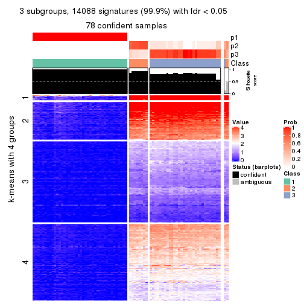
get_signatures(res, k = 4, scale_rows = FALSE)
get_signatures(res, k = 5, scale_rows = FALSE)
get_signatures(res, k = 6, scale_rows = FALSE)
Compare the overlap of signatures from different k:
compare_signatures(res)
get_signature() returns a data frame invisibly. TO get the list of signatures, the function
call should be assigned to a variable explicitly. In following code, if plot argument is set
to FALSE, no heatmap is plotted while only the differential analysis is performed.
# code only for demonstration
tb = get_signature(res, k = ..., plot = FALSE)
An example of the output of tb is:
#> which_row fdr mean_1 mean_2 scaled_mean_1 scaled_mean_2 km
#> 1 38 0.042760348 8.373488 9.131774 -0.5533452 0.5164555 1
#> 2 40 0.018707592 7.106213 8.469186 -0.6173731 0.5762149 1
#> 3 55 0.019134737 10.221463 11.207825 -0.6159697 0.5749050 1
#> 4 59 0.006059896 5.921854 7.869574 -0.6899429 0.6439467 1
#> 5 60 0.018055526 8.928898 10.211722 -0.6204761 0.5791110 1
#> 6 98 0.009384629 15.714769 14.887706 0.6635654 -0.6193277 2
...
The columns in tb are:
which_row: row indices corresponding to the input matrix.fdr: FDR for the differential test. mean_x: The mean value in group x.scaled_mean_x: The mean value in group x after rows are scaled.km: Row groups if k-means clustering is applied to rows.UMAP plot which shows how samples are separated.
dimension_reduction(res, k = 2, method = "UMAP")
dimension_reduction(res, k = 3, method = "UMAP")
dimension_reduction(res, k = 4, method = "UMAP")
dimension_reduction(res, k = 5, method = "UMAP")
dimension_reduction(res, k = 6, method = "UMAP")
Following heatmap shows how subgroups are split when increasing k:
collect_classes(res)
If matrix rows can be associated to genes, consider to use functional_enrichment(res,
...) to perform function enrichment for the signature genes. See this vignette for more detailed explanations.
The object with results only for a single top-value method and a single partition method can be extracted as:
res = res_list["ATC", "kmeans"]
# you can also extract it by
# res = res_list["ATC:kmeans"]
A summary of res and all the functions that can be applied to it:
res
#> A 'ConsensusPartition' object with k = 2, 3, 4, 5, 6.
#> On a matrix with 14104 rows and 80 columns.
#> Top rows (1000, 2000, 3000, 4000, 5000) are extracted by 'ATC' method.
#> Subgroups are detected by 'kmeans' method.
#> Performed in total 1250 partitions by row resampling.
#> Best k for subgroups seems to be 2.
#>
#> Following methods can be applied to this 'ConsensusPartition' object:
#> [1] "cola_report" "collect_classes" "collect_plots"
#> [4] "collect_stats" "colnames" "compare_signatures"
#> [7] "consensus_heatmap" "dimension_reduction" "functional_enrichment"
#> [10] "get_anno_col" "get_anno" "get_classes"
#> [13] "get_consensus" "get_matrix" "get_membership"
#> [16] "get_param" "get_signatures" "get_stats"
#> [19] "is_best_k" "is_stable_k" "membership_heatmap"
#> [22] "ncol" "nrow" "plot_ecdf"
#> [25] "rownames" "select_partition_number" "show"
#> [28] "suggest_best_k" "test_to_known_factors"
collect_plots() function collects all the plots made from res for all k (number of partitions)
into one single page to provide an easy and fast comparison between different k.
collect_plots(res)

The plots are:
k and the heatmap of
predicted classes for each k.k.k.k.All the plots in panels can be made by individual functions and they are plotted later in this section.
select_partition_number() produces several plots showing different
statistics for choosing “optimized” k. There are following statistics:
k;k, the area increased is defined as \(A_k - A_{k-1}\).The detailed explanations of these statistics can be found in the cola vignette.
Generally speaking, lower PAC score, higher mean silhouette score or higher
concordance corresponds to better partition. Rand index and Jaccard index
measure how similar the current partition is compared to partition with k-1.
If they are too similar, we won't accept k is better than k-1.
select_partition_number(res)
The numeric values for all these statistics can be obtained by get_stats().
get_stats(res)
#> k 1-PAC mean_silhouette concordance area_increased Rand Jaccard
#> 2 2 1.000 1.000 1.000 0.5068 0.494 0.494
#> 3 3 0.756 0.844 0.823 0.2097 0.876 0.749
#> 4 4 0.667 0.809 0.812 0.1002 0.841 0.614
#> 5 5 0.645 0.778 0.830 0.0728 0.988 0.959
#> 6 6 0.621 0.679 0.792 0.0456 0.939 0.793
suggest_best_k() suggests the best \(k\) based on these statistics. The rules are as follows:
suggest_best_k(res)
#> [1] 2
Following shows the table of the partitions (You need to click the show/hide
code output link to see it). The membership matrix (columns with name p*)
is inferred by
clue::cl_consensus()
function with the SE method. Basically the value in the membership matrix
represents the probability to belong to a certain group. The finall class
label for an item is determined with the group with highest probability it
belongs to.
In get_classes() function, the entropy is calculated from the membership
matrix and the silhouette score is calculated from the consensus matrix.
cbind(get_classes(res, k = 2), get_membership(res, k = 2))
#> class entropy silhouette p1 p2
#> SRR830972 2 0 1 0 1
#> SRR830973 2 0 1 0 1
#> SRR830974 2 0 1 0 1
#> SRR830975 2 0 1 0 1
#> SRR830976 2 0 1 0 1
#> SRR830977 2 0 1 0 1
#> SRR830978 2 0 1 0 1
#> SRR830979 2 0 1 0 1
#> SRR830980 2 0 1 0 1
#> SRR830982 2 0 1 0 1
#> SRR830981 2 0 1 0 1
#> SRR830983 2 0 1 0 1
#> SRR831010 1 0 1 1 0
#> SRR831011 1 0 1 1 0
#> SRR831012 1 0 1 1 0
#> SRR831013 1 0 1 1 0
#> SRR831014 1 0 1 1 0
#> SRR831015 1 0 1 1 0
#> SRR831016 1 0 1 1 0
#> SRR831017 1 0 1 1 0
#> SRR831018 1 0 1 1 0
#> SRR831019 1 0 1 1 0
#> SRR831020 1 0 1 1 0
#> SRR831021 1 0 1 1 0
#> SRR831022 1 0 1 1 0
#> SRR831023 1 0 1 1 0
#> SRR831024 1 0 1 1 0
#> SRR831025 1 0 1 1 0
#> SRR831026 1 0 1 1 0
#> SRR831027 1 0 1 1 0
#> SRR831028 1 0 1 1 0
#> SRR831029 1 0 1 1 0
#> SRR831030 1 0 1 1 0
#> SRR831031 1 0 1 1 0
#> SRR831032 1 0 1 1 0
#> SRR831033 1 0 1 1 0
#> SRR831034 1 0 1 1 0
#> SRR831035 1 0 1 1 0
#> SRR831036 1 0 1 1 0
#> SRR831037 1 0 1 1 0
#> SRR831038 1 0 1 1 0
#> SRR831039 1 0 1 1 0
#> SRR831040 1 0 1 1 0
#> SRR831041 1 0 1 1 0
#> SRR831042 1 0 1 1 0
#> SRR831043 1 0 1 1 0
#> SRR831044 1 0 1 1 0
#> SRR830965 2 0 1 0 1
#> SRR830966 2 0 1 0 1
#> SRR830967 2 0 1 0 1
#> SRR830968 2 0 1 0 1
#> SRR830969 2 0 1 0 1
#> SRR830970 2 0 1 0 1
#> SRR830971 2 0 1 0 1
#> SRR830984 2 0 1 0 1
#> SRR830985 2 0 1 0 1
#> SRR830986 2 0 1 0 1
#> SRR830987 2 0 1 0 1
#> SRR830988 2 0 1 0 1
#> SRR830989 2 0 1 0 1
#> SRR830990 2 0 1 0 1
#> SRR830991 2 0 1 0 1
#> SRR830992 2 0 1 0 1
#> SRR830993 2 0 1 0 1
#> SRR830994 2 0 1 0 1
#> SRR830995 2 0 1 0 1
#> SRR830996 2 0 1 0 1
#> SRR830997 2 0 1 0 1
#> SRR830998 2 0 1 0 1
#> SRR830999 2 0 1 0 1
#> SRR831000 2 0 1 0 1
#> SRR831001 2 0 1 0 1
#> SRR831002 2 0 1 0 1
#> SRR831003 2 0 1 0 1
#> SRR831004 2 0 1 0 1
#> SRR831005 1 0 1 1 0
#> SRR831006 1 0 1 1 0
#> SRR831007 1 0 1 1 0
#> SRR831008 1 0 1 1 0
#> SRR831009 1 0 1 1 0
cbind(get_classes(res, k = 3), get_membership(res, k = 3))
#> class entropy silhouette p1 p2 p3
#> SRR830972 2 0.629 1.000 0.000 0.532 0.468
#> SRR830973 3 0.000 0.830 0.000 0.000 1.000
#> SRR830974 2 0.629 1.000 0.000 0.532 0.468
#> SRR830975 2 0.629 1.000 0.000 0.532 0.468
#> SRR830976 2 0.629 1.000 0.000 0.532 0.468
#> SRR830977 3 0.000 0.830 0.000 0.000 1.000
#> SRR830978 3 0.000 0.830 0.000 0.000 1.000
#> SRR830979 3 0.000 0.830 0.000 0.000 1.000
#> SRR830980 2 0.629 1.000 0.000 0.532 0.468
#> SRR830982 3 0.435 0.583 0.000 0.184 0.816
#> SRR830981 2 0.629 1.000 0.000 0.532 0.468
#> SRR830983 2 0.629 1.000 0.000 0.532 0.468
#> SRR831010 1 0.000 0.894 1.000 0.000 0.000
#> SRR831011 1 0.000 0.894 1.000 0.000 0.000
#> SRR831012 1 0.000 0.894 1.000 0.000 0.000
#> SRR831013 1 0.000 0.894 1.000 0.000 0.000
#> SRR831014 1 0.000 0.894 1.000 0.000 0.000
#> SRR831015 1 0.000 0.894 1.000 0.000 0.000
#> SRR831016 1 0.000 0.894 1.000 0.000 0.000
#> SRR831017 1 0.629 0.650 0.532 0.468 0.000
#> SRR831018 1 0.000 0.894 1.000 0.000 0.000
#> SRR831019 1 0.629 0.650 0.532 0.468 0.000
#> SRR831020 1 0.618 0.681 0.584 0.416 0.000
#> SRR831021 1 0.000 0.894 1.000 0.000 0.000
#> SRR831022 1 0.000 0.894 1.000 0.000 0.000
#> SRR831023 1 0.629 0.650 0.532 0.468 0.000
#> SRR831024 1 0.000 0.894 1.000 0.000 0.000
#> SRR831025 1 0.629 0.650 0.532 0.468 0.000
#> SRR831026 1 0.000 0.894 1.000 0.000 0.000
#> SRR831027 1 0.000 0.894 1.000 0.000 0.000
#> SRR831028 1 0.445 0.805 0.808 0.192 0.000
#> SRR831029 1 0.000 0.894 1.000 0.000 0.000
#> SRR831030 1 0.000 0.894 1.000 0.000 0.000
#> SRR831031 1 0.141 0.879 0.964 0.036 0.000
#> SRR831032 1 0.000 0.894 1.000 0.000 0.000
#> SRR831033 1 0.000 0.894 1.000 0.000 0.000
#> SRR831034 1 0.629 0.650 0.532 0.468 0.000
#> SRR831035 1 0.629 0.650 0.532 0.468 0.000
#> SRR831036 1 0.629 0.650 0.532 0.468 0.000
#> SRR831037 1 0.629 0.650 0.532 0.468 0.000
#> SRR831038 1 0.000 0.894 1.000 0.000 0.000
#> SRR831039 1 0.000 0.894 1.000 0.000 0.000
#> SRR831040 1 0.000 0.894 1.000 0.000 0.000
#> SRR831041 1 0.000 0.894 1.000 0.000 0.000
#> SRR831042 1 0.000 0.894 1.000 0.000 0.000
#> SRR831043 1 0.000 0.894 1.000 0.000 0.000
#> SRR831044 1 0.000 0.894 1.000 0.000 0.000
#> SRR830965 2 0.629 1.000 0.000 0.532 0.468
#> SRR830966 2 0.629 1.000 0.000 0.532 0.468
#> SRR830967 2 0.629 1.000 0.000 0.532 0.468
#> SRR830968 2 0.629 1.000 0.000 0.532 0.468
#> SRR830969 3 0.000 0.830 0.000 0.000 1.000
#> SRR830970 2 0.629 1.000 0.000 0.532 0.468
#> SRR830971 2 0.629 1.000 0.000 0.532 0.468
#> SRR830984 3 0.000 0.830 0.000 0.000 1.000
#> SRR830985 3 0.000 0.830 0.000 0.000 1.000
#> SRR830986 2 0.629 1.000 0.000 0.532 0.468
#> SRR830987 2 0.629 1.000 0.000 0.532 0.468
#> SRR830988 2 0.629 1.000 0.000 0.532 0.468
#> SRR830989 2 0.629 1.000 0.000 0.532 0.468
#> SRR830990 3 0.628 -0.812 0.000 0.460 0.540
#> SRR830991 3 0.435 0.583 0.000 0.184 0.816
#> SRR830992 3 0.435 0.583 0.000 0.184 0.816
#> SRR830993 2 0.629 1.000 0.000 0.532 0.468
#> SRR830994 2 0.629 1.000 0.000 0.532 0.468
#> SRR830995 2 0.629 1.000 0.000 0.532 0.468
#> SRR830996 3 0.435 0.583 0.000 0.184 0.816
#> SRR830997 3 0.000 0.830 0.000 0.000 1.000
#> SRR830998 3 0.000 0.830 0.000 0.000 1.000
#> SRR830999 2 0.629 1.000 0.000 0.532 0.468
#> SRR831000 2 0.629 1.000 0.000 0.532 0.468
#> SRR831001 3 0.000 0.830 0.000 0.000 1.000
#> SRR831002 2 0.629 1.000 0.000 0.532 0.468
#> SRR831003 3 0.000 0.830 0.000 0.000 1.000
#> SRR831004 3 0.435 0.583 0.000 0.184 0.816
#> SRR831005 1 0.000 0.894 1.000 0.000 0.000
#> SRR831006 1 0.000 0.894 1.000 0.000 0.000
#> SRR831007 1 0.000 0.894 1.000 0.000 0.000
#> SRR831008 1 0.629 0.650 0.532 0.468 0.000
#> SRR831009 1 0.000 0.894 1.000 0.000 0.000
cbind(get_classes(res, k = 4), get_membership(res, k = 4))
#> class entropy silhouette p1 p2 p3 p4
#> SRR830972 2 0.0000 0.823 0.000 1.000 0.000 0.000
#> SRR830973 3 0.4500 1.000 0.000 0.316 0.684 0.000
#> SRR830974 2 0.0000 0.823 0.000 1.000 0.000 0.000
#> SRR830975 2 0.0000 0.823 0.000 1.000 0.000 0.000
#> SRR830976 2 0.0188 0.821 0.000 0.996 0.000 0.004
#> SRR830977 3 0.4500 1.000 0.000 0.316 0.684 0.000
#> SRR830978 3 0.4500 1.000 0.000 0.316 0.684 0.000
#> SRR830979 3 0.4500 1.000 0.000 0.316 0.684 0.000
#> SRR830980 2 0.0000 0.823 0.000 1.000 0.000 0.000
#> SRR830982 2 0.4134 0.400 0.000 0.740 0.260 0.000
#> SRR830981 2 0.0000 0.823 0.000 1.000 0.000 0.000
#> SRR830983 2 0.0000 0.823 0.000 1.000 0.000 0.000
#> SRR831010 1 0.0000 0.910 1.000 0.000 0.000 0.000
#> SRR831011 1 0.0000 0.910 1.000 0.000 0.000 0.000
#> SRR831012 1 0.0000 0.910 1.000 0.000 0.000 0.000
#> SRR831013 1 0.2918 0.826 0.876 0.000 0.116 0.008
#> SRR831014 1 0.0000 0.910 1.000 0.000 0.000 0.000
#> SRR831015 1 0.1716 0.870 0.936 0.000 0.064 0.000
#> SRR831016 1 0.2773 0.829 0.880 0.000 0.116 0.004
#> SRR831017 4 0.7188 0.905 0.308 0.000 0.164 0.528
#> SRR831018 1 0.0000 0.910 1.000 0.000 0.000 0.000
#> SRR831019 4 0.7456 0.893 0.308 0.000 0.200 0.492
#> SRR831020 4 0.6898 0.672 0.360 0.000 0.116 0.524
#> SRR831021 1 0.0000 0.910 1.000 0.000 0.000 0.000
#> SRR831022 1 0.0000 0.910 1.000 0.000 0.000 0.000
#> SRR831023 4 0.4454 0.870 0.308 0.000 0.000 0.692
#> SRR831024 1 0.0000 0.910 1.000 0.000 0.000 0.000
#> SRR831025 4 0.7153 0.906 0.308 0.000 0.160 0.532
#> SRR831026 1 0.5811 0.532 0.704 0.000 0.116 0.180
#> SRR831027 1 0.3047 0.821 0.872 0.000 0.116 0.012
#> SRR831028 1 0.6887 -0.178 0.528 0.000 0.116 0.356
#> SRR831029 1 0.3278 0.813 0.864 0.000 0.116 0.020
#> SRR831030 1 0.0000 0.910 1.000 0.000 0.000 0.000
#> SRR831031 1 0.6167 0.419 0.664 0.000 0.116 0.220
#> SRR831032 1 0.0000 0.910 1.000 0.000 0.000 0.000
#> SRR831033 1 0.0000 0.910 1.000 0.000 0.000 0.000
#> SRR831034 4 0.7045 0.906 0.308 0.000 0.148 0.544
#> SRR831035 4 0.7456 0.893 0.308 0.000 0.200 0.492
#> SRR831036 4 0.4454 0.870 0.308 0.000 0.000 0.692
#> SRR831037 4 0.7153 0.906 0.308 0.000 0.160 0.532
#> SRR831038 1 0.0000 0.910 1.000 0.000 0.000 0.000
#> SRR831039 1 0.0000 0.910 1.000 0.000 0.000 0.000
#> SRR831040 1 0.0000 0.910 1.000 0.000 0.000 0.000
#> SRR831041 1 0.0000 0.910 1.000 0.000 0.000 0.000
#> SRR831042 1 0.0000 0.910 1.000 0.000 0.000 0.000
#> SRR831043 1 0.0000 0.910 1.000 0.000 0.000 0.000
#> SRR831044 1 0.0000 0.910 1.000 0.000 0.000 0.000
#> SRR830965 2 0.3873 0.667 0.000 0.772 0.000 0.228
#> SRR830966 2 0.0000 0.823 0.000 1.000 0.000 0.000
#> SRR830967 2 0.4431 0.589 0.000 0.696 0.000 0.304
#> SRR830968 2 0.4134 0.637 0.000 0.740 0.000 0.260
#> SRR830969 3 0.4500 1.000 0.000 0.316 0.684 0.000
#> SRR830970 2 0.0000 0.823 0.000 1.000 0.000 0.000
#> SRR830971 2 0.4431 0.589 0.000 0.696 0.000 0.304
#> SRR830984 3 0.4500 1.000 0.000 0.316 0.684 0.000
#> SRR830985 3 0.4500 1.000 0.000 0.316 0.684 0.000
#> SRR830986 2 0.0000 0.823 0.000 1.000 0.000 0.000
#> SRR830987 2 0.0000 0.823 0.000 1.000 0.000 0.000
#> SRR830988 2 0.0000 0.823 0.000 1.000 0.000 0.000
#> SRR830989 2 0.4454 0.588 0.000 0.692 0.000 0.308
#> SRR830990 2 0.1661 0.777 0.000 0.944 0.052 0.004
#> SRR830991 2 0.4313 0.398 0.000 0.736 0.260 0.004
#> SRR830992 2 0.4313 0.398 0.000 0.736 0.260 0.004
#> SRR830993 2 0.4454 0.588 0.000 0.692 0.000 0.308
#> SRR830994 2 0.2011 0.783 0.000 0.920 0.000 0.080
#> SRR830995 2 0.3444 0.709 0.000 0.816 0.000 0.184
#> SRR830996 2 0.4313 0.398 0.000 0.736 0.260 0.004
#> SRR830997 3 0.4500 1.000 0.000 0.316 0.684 0.000
#> SRR830998 3 0.4500 1.000 0.000 0.316 0.684 0.000
#> SRR830999 2 0.0188 0.821 0.000 0.996 0.000 0.004
#> SRR831000 2 0.0000 0.823 0.000 1.000 0.000 0.000
#> SRR831001 3 0.4500 1.000 0.000 0.316 0.684 0.000
#> SRR831002 2 0.0188 0.821 0.000 0.996 0.000 0.004
#> SRR831003 3 0.4500 1.000 0.000 0.316 0.684 0.000
#> SRR831004 2 0.4134 0.400 0.000 0.740 0.260 0.000
#> SRR831005 1 0.0000 0.910 1.000 0.000 0.000 0.000
#> SRR831006 1 0.2918 0.825 0.876 0.000 0.116 0.008
#> SRR831007 1 0.0000 0.910 1.000 0.000 0.000 0.000
#> SRR831008 4 0.4454 0.870 0.308 0.000 0.000 0.692
#> SRR831009 1 0.2918 0.825 0.876 0.000 0.116 0.008
cbind(get_classes(res, k = 5), get_membership(res, k = 5))
#> class entropy silhouette p1 p2 p3 p4 p5
#> SRR830972 2 0.1117 0.801 0.000 0.964 0.000 NA 0.020
#> SRR830973 3 0.3074 0.987 0.000 0.196 0.804 NA 0.000
#> SRR830974 2 0.0290 0.804 0.000 0.992 0.000 NA 0.008
#> SRR830975 2 0.0000 0.805 0.000 1.000 0.000 NA 0.000
#> SRR830976 2 0.0703 0.804 0.000 0.976 0.000 NA 0.024
#> SRR830977 3 0.3910 0.984 0.000 0.196 0.772 NA 0.032
#> SRR830978 3 0.3231 0.987 0.000 0.196 0.800 NA 0.004
#> SRR830979 3 0.4066 0.983 0.000 0.196 0.768 NA 0.032
#> SRR830980 2 0.0609 0.802 0.000 0.980 0.000 NA 0.020
#> SRR830982 2 0.3940 0.555 0.000 0.756 0.220 NA 0.024
#> SRR830981 2 0.0963 0.801 0.000 0.964 0.000 NA 0.036
#> SRR830983 2 0.0290 0.804 0.000 0.992 0.000 NA 0.008
#> SRR831010 1 0.0000 0.888 1.000 0.000 0.000 NA 0.000
#> SRR831011 1 0.0000 0.888 1.000 0.000 0.000 NA 0.000
#> SRR831012 1 0.0000 0.888 1.000 0.000 0.000 NA 0.000
#> SRR831013 1 0.3534 0.715 0.744 0.000 0.000 NA 0.000
#> SRR831014 1 0.0000 0.888 1.000 0.000 0.000 NA 0.000
#> SRR831015 1 0.2813 0.783 0.832 0.000 0.000 NA 0.000
#> SRR831016 1 0.3508 0.719 0.748 0.000 0.000 NA 0.000
#> SRR831017 5 0.5603 0.824 0.132 0.000 0.020 NA 0.684
#> SRR831018 1 0.0000 0.888 1.000 0.000 0.000 NA 0.000
#> SRR831019 5 0.7903 0.758 0.132 0.000 0.176 NA 0.456
#> SRR831020 5 0.6102 0.619 0.176 0.000 0.000 NA 0.560
#> SRR831021 1 0.0000 0.888 1.000 0.000 0.000 NA 0.000
#> SRR831022 1 0.0000 0.888 1.000 0.000 0.000 NA 0.000
#> SRR831023 5 0.3276 0.808 0.132 0.000 0.000 NA 0.836
#> SRR831024 1 0.0000 0.888 1.000 0.000 0.000 NA 0.000
#> SRR831025 5 0.5567 0.825 0.132 0.000 0.020 NA 0.688
#> SRR831026 1 0.6312 0.315 0.524 0.000 0.000 NA 0.200
#> SRR831027 1 0.3534 0.715 0.744 0.000 0.000 NA 0.000
#> SRR831028 5 0.6755 0.190 0.360 0.000 0.000 NA 0.376
#> SRR831029 1 0.4206 0.675 0.708 0.000 0.020 NA 0.000
#> SRR831030 1 0.0000 0.888 1.000 0.000 0.000 NA 0.000
#> SRR831031 1 0.6525 0.182 0.484 0.000 0.000 NA 0.252
#> SRR831032 1 0.0000 0.888 1.000 0.000 0.000 NA 0.000
#> SRR831033 1 0.0000 0.888 1.000 0.000 0.000 NA 0.000
#> SRR831034 5 0.5305 0.826 0.132 0.000 0.012 NA 0.704
#> SRR831035 5 0.7903 0.758 0.132 0.000 0.176 NA 0.456
#> SRR831036 5 0.3276 0.809 0.132 0.000 0.000 NA 0.836
#> SRR831037 5 0.5548 0.824 0.132 0.000 0.016 NA 0.684
#> SRR831038 1 0.0000 0.888 1.000 0.000 0.000 NA 0.000
#> SRR831039 1 0.0000 0.888 1.000 0.000 0.000 NA 0.000
#> SRR831040 1 0.0000 0.888 1.000 0.000 0.000 NA 0.000
#> SRR831041 1 0.0000 0.888 1.000 0.000 0.000 NA 0.000
#> SRR831042 1 0.0000 0.888 1.000 0.000 0.000 NA 0.000
#> SRR831043 1 0.0000 0.888 1.000 0.000 0.000 NA 0.000
#> SRR831044 1 0.0000 0.888 1.000 0.000 0.000 NA 0.000
#> SRR830965 2 0.4181 0.648 0.000 0.712 0.000 NA 0.020
#> SRR830966 2 0.1117 0.801 0.000 0.964 0.000 NA 0.020
#> SRR830967 2 0.4294 0.483 0.000 0.532 0.000 NA 0.000
#> SRR830968 2 0.4524 0.591 0.000 0.644 0.000 NA 0.020
#> SRR830969 3 0.3910 0.984 0.000 0.196 0.772 NA 0.032
#> SRR830970 2 0.1012 0.802 0.000 0.968 0.000 NA 0.020
#> SRR830971 2 0.4294 0.483 0.000 0.532 0.000 NA 0.000
#> SRR830984 3 0.3074 0.987 0.000 0.196 0.804 NA 0.000
#> SRR830985 3 0.3829 0.985 0.000 0.196 0.776 NA 0.028
#> SRR830986 2 0.0290 0.804 0.000 0.992 0.000 NA 0.008
#> SRR830987 2 0.0609 0.802 0.000 0.980 0.000 NA 0.020
#> SRR830988 2 0.0290 0.804 0.000 0.992 0.000 NA 0.008
#> SRR830989 2 0.4807 0.481 0.000 0.532 0.000 NA 0.020
#> SRR830990 2 0.2077 0.777 0.000 0.920 0.040 NA 0.040
#> SRR830991 2 0.4424 0.537 0.000 0.728 0.224 NA 0.048
#> SRR830992 2 0.4424 0.537 0.000 0.728 0.224 NA 0.048
#> SRR830993 2 0.4807 0.481 0.000 0.532 0.000 NA 0.020
#> SRR830994 2 0.3543 0.746 0.000 0.828 0.000 NA 0.060
#> SRR830995 2 0.4584 0.666 0.000 0.716 0.000 NA 0.056
#> SRR830996 2 0.4737 0.520 0.000 0.708 0.224 NA 0.068
#> SRR830997 3 0.3387 0.985 0.000 0.196 0.796 NA 0.004
#> SRR830998 3 0.3074 0.987 0.000 0.196 0.804 NA 0.000
#> SRR830999 2 0.1121 0.802 0.000 0.956 0.000 NA 0.044
#> SRR831000 2 0.1043 0.801 0.000 0.960 0.000 NA 0.040
#> SRR831001 3 0.3074 0.987 0.000 0.196 0.804 NA 0.000
#> SRR831002 2 0.1341 0.799 0.000 0.944 0.000 NA 0.056
#> SRR831003 3 0.3829 0.984 0.000 0.196 0.776 NA 0.028
#> SRR831004 2 0.3970 0.548 0.000 0.752 0.224 NA 0.024
#> SRR831005 1 0.0000 0.888 1.000 0.000 0.000 NA 0.000
#> SRR831006 1 0.3534 0.715 0.744 0.000 0.000 NA 0.000
#> SRR831007 1 0.0000 0.888 1.000 0.000 0.000 NA 0.000
#> SRR831008 5 0.3193 0.809 0.132 0.000 0.000 NA 0.840
#> SRR831009 1 0.3534 0.715 0.744 0.000 0.000 NA 0.000
cbind(get_classes(res, k = 6), get_membership(res, k = 6))
#> class entropy silhouette p1 p2 p3 p4 p5 p6
#> SRR830972 2 0.2401 0.7748 0.000 0.892 0.000 0.008 0.028 0.072
#> SRR830973 3 0.2048 0.9634 0.000 0.120 0.880 0.000 0.000 0.000
#> SRR830974 2 0.0713 0.8031 0.000 0.972 0.000 0.000 0.000 0.028
#> SRR830975 2 0.0000 0.8057 0.000 1.000 0.000 0.000 0.000 0.000
#> SRR830976 2 0.1267 0.8014 0.000 0.940 0.000 0.000 0.000 0.060
#> SRR830977 3 0.3952 0.9534 0.000 0.120 0.792 0.028 0.000 0.060
#> SRR830978 3 0.2191 0.9634 0.000 0.120 0.876 0.000 0.000 0.004
#> SRR830979 3 0.4310 0.9484 0.000 0.120 0.776 0.044 0.004 0.056
#> SRR830980 2 0.0790 0.8036 0.000 0.968 0.000 0.000 0.000 0.032
#> SRR830982 2 0.3819 0.6751 0.000 0.764 0.172 0.000 0.000 0.064
#> SRR830981 2 0.1983 0.7960 0.000 0.908 0.000 0.020 0.000 0.072
#> SRR830983 2 0.0713 0.8031 0.000 0.972 0.000 0.000 0.000 0.028
#> SRR831010 1 0.0146 0.8771 0.996 0.000 0.004 0.000 0.000 0.000
#> SRR831011 1 0.0146 0.8777 0.996 0.000 0.004 0.000 0.000 0.000
#> SRR831012 1 0.0146 0.8777 0.996 0.000 0.004 0.000 0.000 0.000
#> SRR831013 1 0.3984 0.5001 0.596 0.000 0.000 0.008 0.396 0.000
#> SRR831014 1 0.0260 0.8773 0.992 0.000 0.008 0.000 0.000 0.000
#> SRR831015 1 0.3163 0.6895 0.764 0.000 0.004 0.000 0.232 0.000
#> SRR831016 1 0.3881 0.5061 0.600 0.000 0.000 0.004 0.396 0.000
#> SRR831017 4 0.5688 0.2464 0.100 0.000 0.048 0.632 0.004 0.216
#> SRR831018 1 0.0146 0.8777 0.996 0.000 0.004 0.000 0.000 0.000
#> SRR831019 6 0.5109 1.0000 0.100 0.000 0.000 0.328 0.000 0.572
#> SRR831020 4 0.5508 0.0760 0.132 0.000 0.000 0.480 0.388 0.000
#> SRR831021 1 0.0146 0.8777 0.996 0.000 0.004 0.000 0.000 0.000
#> SRR831022 1 0.0146 0.8771 0.996 0.000 0.004 0.000 0.000 0.000
#> SRR831023 4 0.2350 0.4956 0.100 0.000 0.000 0.880 0.020 0.000
#> SRR831024 1 0.0146 0.8777 0.996 0.000 0.004 0.000 0.000 0.000
#> SRR831025 4 0.5408 0.2762 0.100 0.000 0.040 0.648 0.000 0.212
#> SRR831026 5 0.5951 -0.1037 0.368 0.000 0.000 0.220 0.412 0.000
#> SRR831027 1 0.3984 0.5001 0.596 0.000 0.000 0.008 0.396 0.000
#> SRR831028 5 0.6037 -0.2169 0.252 0.000 0.000 0.352 0.396 0.000
#> SRR831029 1 0.5462 0.4375 0.556 0.000 0.048 0.028 0.360 0.008
#> SRR831030 1 0.0000 0.8776 1.000 0.000 0.000 0.000 0.000 0.000
#> SRR831031 5 0.6057 -0.0762 0.340 0.000 0.000 0.264 0.396 0.000
#> SRR831032 1 0.0146 0.8771 0.996 0.000 0.004 0.000 0.000 0.000
#> SRR831033 1 0.0000 0.8776 1.000 0.000 0.000 0.000 0.000 0.000
#> SRR831034 4 0.4806 0.3515 0.100 0.000 0.004 0.704 0.012 0.180
#> SRR831035 6 0.5109 1.0000 0.100 0.000 0.000 0.328 0.000 0.572
#> SRR831036 4 0.2350 0.4957 0.100 0.000 0.000 0.880 0.020 0.000
#> SRR831037 4 0.5507 0.2754 0.100 0.000 0.024 0.656 0.016 0.204
#> SRR831038 1 0.0146 0.8777 0.996 0.000 0.004 0.000 0.000 0.000
#> SRR831039 1 0.0146 0.8771 0.996 0.000 0.004 0.000 0.000 0.000
#> SRR831040 1 0.0146 0.8777 0.996 0.000 0.004 0.000 0.000 0.000
#> SRR831041 1 0.0000 0.8776 1.000 0.000 0.000 0.000 0.000 0.000
#> SRR831042 1 0.0000 0.8776 1.000 0.000 0.000 0.000 0.000 0.000
#> SRR831043 1 0.0146 0.8771 0.996 0.000 0.004 0.000 0.000 0.000
#> SRR831044 1 0.0146 0.8771 0.996 0.000 0.004 0.000 0.000 0.000
#> SRR830965 2 0.5012 0.4572 0.000 0.644 0.000 0.008 0.248 0.100
#> SRR830966 2 0.2401 0.7748 0.000 0.892 0.000 0.008 0.028 0.072
#> SRR830967 5 0.5383 0.1175 0.000 0.376 0.000 0.008 0.524 0.092
#> SRR830968 2 0.5476 0.3158 0.000 0.576 0.000 0.008 0.284 0.132
#> SRR830969 3 0.3952 0.9534 0.000 0.120 0.792 0.028 0.000 0.060
#> SRR830970 2 0.2282 0.7743 0.000 0.888 0.000 0.000 0.024 0.088
#> SRR830971 5 0.4985 0.1324 0.000 0.376 0.000 0.000 0.548 0.076
#> SRR830984 3 0.2048 0.9634 0.000 0.120 0.880 0.000 0.000 0.000
#> SRR830985 3 0.3833 0.9552 0.000 0.120 0.800 0.028 0.000 0.052
#> SRR830986 2 0.0260 0.8057 0.000 0.992 0.000 0.000 0.000 0.008
#> SRR830987 2 0.0790 0.8036 0.000 0.968 0.000 0.000 0.000 0.032
#> SRR830988 2 0.0547 0.8036 0.000 0.980 0.000 0.000 0.000 0.020
#> SRR830989 5 0.5777 0.1404 0.000 0.376 0.000 0.008 0.476 0.140
#> SRR830990 2 0.3164 0.7783 0.000 0.844 0.032 0.020 0.000 0.104
#> SRR830991 2 0.4434 0.6547 0.000 0.712 0.172 0.000 0.000 0.116
#> SRR830992 2 0.4434 0.6547 0.000 0.712 0.172 0.000 0.000 0.116
#> SRR830993 5 0.5777 0.1404 0.000 0.376 0.000 0.008 0.476 0.140
#> SRR830994 2 0.4984 0.5866 0.000 0.664 0.000 0.020 0.080 0.236
#> SRR830995 2 0.5784 0.4175 0.000 0.576 0.000 0.020 0.168 0.236
#> SRR830996 2 0.5086 0.6261 0.000 0.672 0.172 0.016 0.000 0.140
#> SRR830997 3 0.2798 0.9554 0.000 0.120 0.856 0.012 0.004 0.008
#> SRR830998 3 0.2048 0.9634 0.000 0.120 0.880 0.000 0.000 0.000
#> SRR830999 2 0.2709 0.7755 0.000 0.848 0.000 0.020 0.000 0.132
#> SRR831000 2 0.2398 0.7896 0.000 0.876 0.000 0.020 0.000 0.104
#> SRR831001 3 0.2048 0.9634 0.000 0.120 0.880 0.000 0.000 0.000
#> SRR831002 2 0.2581 0.7852 0.000 0.860 0.000 0.020 0.000 0.120
#> SRR831003 3 0.3875 0.9535 0.000 0.120 0.796 0.024 0.000 0.060
#> SRR831004 2 0.3819 0.6751 0.000 0.764 0.172 0.000 0.000 0.064
#> SRR831005 1 0.0146 0.8777 0.996 0.000 0.004 0.000 0.000 0.000
#> SRR831006 1 0.4006 0.5067 0.600 0.000 0.004 0.004 0.392 0.000
#> SRR831007 1 0.0146 0.8777 0.996 0.000 0.004 0.000 0.000 0.000
#> SRR831008 4 0.2405 0.4959 0.100 0.000 0.004 0.880 0.016 0.000
#> SRR831009 1 0.3881 0.5061 0.600 0.000 0.000 0.004 0.396 0.000
Heatmaps for the consensus matrix. It visualizes the probability of two samples to be in a same group.
consensus_heatmap(res, k = 2)

consensus_heatmap(res, k = 3)
consensus_heatmap(res, k = 4)
consensus_heatmap(res, k = 5)
consensus_heatmap(res, k = 6)
Heatmaps for the membership of samples in all partitions to see how consistent they are:
membership_heatmap(res, k = 2)

membership_heatmap(res, k = 3)
membership_heatmap(res, k = 4)
membership_heatmap(res, k = 5)
membership_heatmap(res, k = 6)
As soon as we have had the classes for columns, we can look for signatures which are significantly different between classes which can be candidate marks for certain classes. Following are the heatmaps for signatures.
Signature heatmaps where rows are scaled:
get_signatures(res, k = 2)

get_signatures(res, k = 3)
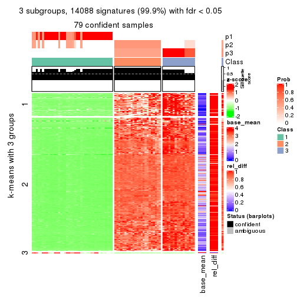
get_signatures(res, k = 4)
get_signatures(res, k = 5)
get_signatures(res, k = 6)
Signature heatmaps where rows are not scaled:
get_signatures(res, k = 2, scale_rows = FALSE)

get_signatures(res, k = 3, scale_rows = FALSE)
get_signatures(res, k = 4, scale_rows = FALSE)
get_signatures(res, k = 5, scale_rows = FALSE)
get_signatures(res, k = 6, scale_rows = FALSE)
Compare the overlap of signatures from different k:
compare_signatures(res)
get_signature() returns a data frame invisibly. TO get the list of signatures, the function
call should be assigned to a variable explicitly. In following code, if plot argument is set
to FALSE, no heatmap is plotted while only the differential analysis is performed.
# code only for demonstration
tb = get_signature(res, k = ..., plot = FALSE)
An example of the output of tb is:
#> which_row fdr mean_1 mean_2 scaled_mean_1 scaled_mean_2 km
#> 1 38 0.042760348 8.373488 9.131774 -0.5533452 0.5164555 1
#> 2 40 0.018707592 7.106213 8.469186 -0.6173731 0.5762149 1
#> 3 55 0.019134737 10.221463 11.207825 -0.6159697 0.5749050 1
#> 4 59 0.006059896 5.921854 7.869574 -0.6899429 0.6439467 1
#> 5 60 0.018055526 8.928898 10.211722 -0.6204761 0.5791110 1
#> 6 98 0.009384629 15.714769 14.887706 0.6635654 -0.6193277 2
...
The columns in tb are:
which_row: row indices corresponding to the input matrix.fdr: FDR for the differential test. mean_x: The mean value in group x.scaled_mean_x: The mean value in group x after rows are scaled.km: Row groups if k-means clustering is applied to rows.UMAP plot which shows how samples are separated.
dimension_reduction(res, k = 2, method = "UMAP")
dimension_reduction(res, k = 3, method = "UMAP")
dimension_reduction(res, k = 4, method = "UMAP")
dimension_reduction(res, k = 5, method = "UMAP")
dimension_reduction(res, k = 6, method = "UMAP")
Following heatmap shows how subgroups are split when increasing k:
collect_classes(res)
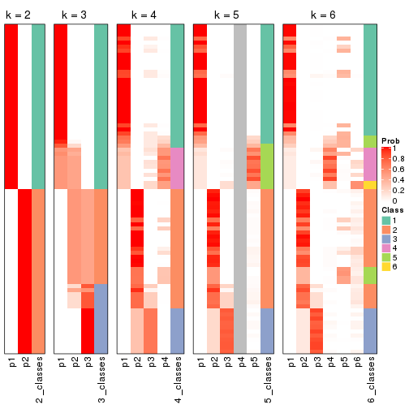
If matrix rows can be associated to genes, consider to use functional_enrichment(res,
...) to perform function enrichment for the signature genes. See this vignette for more detailed explanations.
The object with results only for a single top-value method and a single partition method can be extracted as:
res = res_list["ATC", "skmeans"]
# you can also extract it by
# res = res_list["ATC:skmeans"]
A summary of res and all the functions that can be applied to it:
res
#> A 'ConsensusPartition' object with k = 2, 3, 4, 5, 6.
#> On a matrix with 14104 rows and 80 columns.
#> Top rows (1000, 2000, 3000, 4000, 5000) are extracted by 'ATC' method.
#> Subgroups are detected by 'skmeans' method.
#> Performed in total 1250 partitions by row resampling.
#> Best k for subgroups seems to be 4.
#>
#> Following methods can be applied to this 'ConsensusPartition' object:
#> [1] "cola_report" "collect_classes" "collect_plots"
#> [4] "collect_stats" "colnames" "compare_signatures"
#> [7] "consensus_heatmap" "dimension_reduction" "functional_enrichment"
#> [10] "get_anno_col" "get_anno" "get_classes"
#> [13] "get_consensus" "get_matrix" "get_membership"
#> [16] "get_param" "get_signatures" "get_stats"
#> [19] "is_best_k" "is_stable_k" "membership_heatmap"
#> [22] "ncol" "nrow" "plot_ecdf"
#> [25] "rownames" "select_partition_number" "show"
#> [28] "suggest_best_k" "test_to_known_factors"
collect_plots() function collects all the plots made from res for all k (number of partitions)
into one single page to provide an easy and fast comparison between different k.
collect_plots(res)
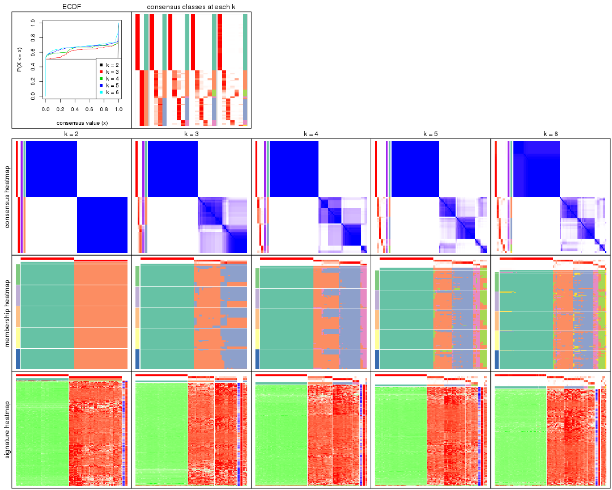
The plots are:
k and the heatmap of
predicted classes for each k.k.k.k.All the plots in panels can be made by individual functions and they are plotted later in this section.
select_partition_number() produces several plots showing different
statistics for choosing “optimized” k. There are following statistics:
k;k, the area increased is defined as \(A_k - A_{k-1}\).The detailed explanations of these statistics can be found in the cola vignette.
Generally speaking, lower PAC score, higher mean silhouette score or higher
concordance corresponds to better partition. Rand index and Jaccard index
measure how similar the current partition is compared to partition with k-1.
If they are too similar, we won't accept k is better than k-1.
select_partition_number(res)
The numeric values for all these statistics can be obtained by get_stats().
get_stats(res)
#> k 1-PAC mean_silhouette concordance area_increased Rand Jaccard
#> 2 2 1.000 1.000 1.000 0.5068 0.494 0.494
#> 3 3 0.863 0.907 0.922 0.2192 0.873 0.744
#> 4 4 0.903 0.904 0.932 0.0488 0.972 0.925
#> 5 5 0.884 0.886 0.920 0.0328 0.978 0.935
#> 6 6 0.901 0.830 0.918 0.0183 0.990 0.968
suggest_best_k() suggests the best \(k\) based on these statistics. The rules are as follows:
suggest_best_k(res)
#> [1] 4
#> attr(,"optional")
#> [1] 2
There is also optional best \(k\) = 2 that is worth to check.
Following shows the table of the partitions (You need to click the show/hide
code output link to see it). The membership matrix (columns with name p*)
is inferred by
clue::cl_consensus()
function with the SE method. Basically the value in the membership matrix
represents the probability to belong to a certain group. The finall class
label for an item is determined with the group with highest probability it
belongs to.
In get_classes() function, the entropy is calculated from the membership
matrix and the silhouette score is calculated from the consensus matrix.
cbind(get_classes(res, k = 2), get_membership(res, k = 2))
#> class entropy silhouette p1 p2
#> SRR830972 2 0 1 0 1
#> SRR830973 2 0 1 0 1
#> SRR830974 2 0 1 0 1
#> SRR830975 2 0 1 0 1
#> SRR830976 2 0 1 0 1
#> SRR830977 2 0 1 0 1
#> SRR830978 2 0 1 0 1
#> SRR830979 2 0 1 0 1
#> SRR830980 2 0 1 0 1
#> SRR830982 2 0 1 0 1
#> SRR830981 2 0 1 0 1
#> SRR830983 2 0 1 0 1
#> SRR831010 1 0 1 1 0
#> SRR831011 1 0 1 1 0
#> SRR831012 1 0 1 1 0
#> SRR831013 1 0 1 1 0
#> SRR831014 1 0 1 1 0
#> SRR831015 1 0 1 1 0
#> SRR831016 1 0 1 1 0
#> SRR831017 1 0 1 1 0
#> SRR831018 1 0 1 1 0
#> SRR831019 1 0 1 1 0
#> SRR831020 1 0 1 1 0
#> SRR831021 1 0 1 1 0
#> SRR831022 1 0 1 1 0
#> SRR831023 1 0 1 1 0
#> SRR831024 1 0 1 1 0
#> SRR831025 1 0 1 1 0
#> SRR831026 1 0 1 1 0
#> SRR831027 1 0 1 1 0
#> SRR831028 1 0 1 1 0
#> SRR831029 1 0 1 1 0
#> SRR831030 1 0 1 1 0
#> SRR831031 1 0 1 1 0
#> SRR831032 1 0 1 1 0
#> SRR831033 1 0 1 1 0
#> SRR831034 1 0 1 1 0
#> SRR831035 1 0 1 1 0
#> SRR831036 1 0 1 1 0
#> SRR831037 1 0 1 1 0
#> SRR831038 1 0 1 1 0
#> SRR831039 1 0 1 1 0
#> SRR831040 1 0 1 1 0
#> SRR831041 1 0 1 1 0
#> SRR831042 1 0 1 1 0
#> SRR831043 1 0 1 1 0
#> SRR831044 1 0 1 1 0
#> SRR830965 2 0 1 0 1
#> SRR830966 2 0 1 0 1
#> SRR830967 2 0 1 0 1
#> SRR830968 2 0 1 0 1
#> SRR830969 2 0 1 0 1
#> SRR830970 2 0 1 0 1
#> SRR830971 2 0 1 0 1
#> SRR830984 2 0 1 0 1
#> SRR830985 2 0 1 0 1
#> SRR830986 2 0 1 0 1
#> SRR830987 2 0 1 0 1
#> SRR830988 2 0 1 0 1
#> SRR830989 2 0 1 0 1
#> SRR830990 2 0 1 0 1
#> SRR830991 2 0 1 0 1
#> SRR830992 2 0 1 0 1
#> SRR830993 2 0 1 0 1
#> SRR830994 2 0 1 0 1
#> SRR830995 2 0 1 0 1
#> SRR830996 2 0 1 0 1
#> SRR830997 2 0 1 0 1
#> SRR830998 2 0 1 0 1
#> SRR830999 2 0 1 0 1
#> SRR831000 2 0 1 0 1
#> SRR831001 2 0 1 0 1
#> SRR831002 2 0 1 0 1
#> SRR831003 2 0 1 0 1
#> SRR831004 2 0 1 0 1
#> SRR831005 1 0 1 1 0
#> SRR831006 1 0 1 1 0
#> SRR831007 1 0 1 1 0
#> SRR831008 1 0 1 1 0
#> SRR831009 1 0 1 1 0
cbind(get_classes(res, k = 3), get_membership(res, k = 3))
#> class entropy silhouette p1 p2 p3
#> SRR830972 2 0.0237 0.900 0 0.996 0.004
#> SRR830973 3 0.4750 0.871 0 0.216 0.784
#> SRR830974 2 0.2261 0.903 0 0.932 0.068
#> SRR830975 2 0.1643 0.906 0 0.956 0.044
#> SRR830976 2 0.4887 0.708 0 0.772 0.228
#> SRR830977 3 0.4750 0.871 0 0.216 0.784
#> SRR830978 3 0.4750 0.871 0 0.216 0.784
#> SRR830979 3 0.0424 0.700 0 0.008 0.992
#> SRR830980 2 0.2261 0.903 0 0.932 0.068
#> SRR830982 2 0.3038 0.873 0 0.896 0.104
#> SRR830981 3 0.5098 0.843 0 0.248 0.752
#> SRR830983 2 0.2959 0.881 0 0.900 0.100
#> SRR831010 1 0.0000 1.000 1 0.000 0.000
#> SRR831011 1 0.0000 1.000 1 0.000 0.000
#> SRR831012 1 0.0000 1.000 1 0.000 0.000
#> SRR831013 1 0.0000 1.000 1 0.000 0.000
#> SRR831014 1 0.0000 1.000 1 0.000 0.000
#> SRR831015 1 0.0000 1.000 1 0.000 0.000
#> SRR831016 1 0.0000 1.000 1 0.000 0.000
#> SRR831017 1 0.0000 1.000 1 0.000 0.000
#> SRR831018 1 0.0000 1.000 1 0.000 0.000
#> SRR831019 1 0.0000 1.000 1 0.000 0.000
#> SRR831020 1 0.0000 1.000 1 0.000 0.000
#> SRR831021 1 0.0000 1.000 1 0.000 0.000
#> SRR831022 1 0.0000 1.000 1 0.000 0.000
#> SRR831023 1 0.0000 1.000 1 0.000 0.000
#> SRR831024 1 0.0000 1.000 1 0.000 0.000
#> SRR831025 1 0.0000 1.000 1 0.000 0.000
#> SRR831026 1 0.0000 1.000 1 0.000 0.000
#> SRR831027 1 0.0000 1.000 1 0.000 0.000
#> SRR831028 1 0.0000 1.000 1 0.000 0.000
#> SRR831029 1 0.0000 1.000 1 0.000 0.000
#> SRR831030 1 0.0000 1.000 1 0.000 0.000
#> SRR831031 1 0.0000 1.000 1 0.000 0.000
#> SRR831032 1 0.0000 1.000 1 0.000 0.000
#> SRR831033 1 0.0000 1.000 1 0.000 0.000
#> SRR831034 1 0.0000 1.000 1 0.000 0.000
#> SRR831035 1 0.0000 1.000 1 0.000 0.000
#> SRR831036 1 0.0000 1.000 1 0.000 0.000
#> SRR831037 1 0.0000 1.000 1 0.000 0.000
#> SRR831038 1 0.0000 1.000 1 0.000 0.000
#> SRR831039 1 0.0000 1.000 1 0.000 0.000
#> SRR831040 1 0.0000 1.000 1 0.000 0.000
#> SRR831041 1 0.0000 1.000 1 0.000 0.000
#> SRR831042 1 0.0000 1.000 1 0.000 0.000
#> SRR831043 1 0.0000 1.000 1 0.000 0.000
#> SRR831044 1 0.0000 1.000 1 0.000 0.000
#> SRR830965 2 0.0000 0.899 0 1.000 0.000
#> SRR830966 2 0.0000 0.899 0 1.000 0.000
#> SRR830967 2 0.0424 0.895 0 0.992 0.008
#> SRR830968 2 0.0424 0.895 0 0.992 0.008
#> SRR830969 3 0.4842 0.866 0 0.224 0.776
#> SRR830970 2 0.1753 0.904 0 0.952 0.048
#> SRR830971 2 0.0892 0.887 0 0.980 0.020
#> SRR830984 3 0.4750 0.871 0 0.216 0.784
#> SRR830985 3 0.4750 0.871 0 0.216 0.784
#> SRR830986 2 0.2261 0.903 0 0.932 0.068
#> SRR830987 2 0.2261 0.903 0 0.932 0.068
#> SRR830988 2 0.1643 0.906 0 0.956 0.044
#> SRR830989 3 0.5291 0.428 0 0.268 0.732
#> SRR830990 3 0.4750 0.871 0 0.216 0.784
#> SRR830991 2 0.3340 0.841 0 0.880 0.120
#> SRR830992 2 0.4452 0.729 0 0.808 0.192
#> SRR830993 3 0.2356 0.658 0 0.072 0.928
#> SRR830994 3 0.5397 0.403 0 0.280 0.720
#> SRR830995 3 0.6045 0.144 0 0.380 0.620
#> SRR830996 3 0.5291 0.825 0 0.268 0.732
#> SRR830997 3 0.4750 0.871 0 0.216 0.784
#> SRR830998 3 0.4750 0.871 0 0.216 0.784
#> SRR830999 2 0.5560 0.660 0 0.700 0.300
#> SRR831000 3 0.4931 0.860 0 0.232 0.768
#> SRR831001 3 0.4750 0.871 0 0.216 0.784
#> SRR831002 3 0.4796 0.869 0 0.220 0.780
#> SRR831003 3 0.4750 0.871 0 0.216 0.784
#> SRR831004 2 0.3038 0.873 0 0.896 0.104
#> SRR831005 1 0.0000 1.000 1 0.000 0.000
#> SRR831006 1 0.0000 1.000 1 0.000 0.000
#> SRR831007 1 0.0000 1.000 1 0.000 0.000
#> SRR831008 1 0.0000 1.000 1 0.000 0.000
#> SRR831009 1 0.0000 1.000 1 0.000 0.000
cbind(get_classes(res, k = 4), get_membership(res, k = 4))
#> class entropy silhouette p1 p2 p3 p4
#> SRR830972 2 0.0188 0.634 0 0.996 0.000 0.004
#> SRR830973 3 0.0000 0.956 0 0.000 1.000 0.000
#> SRR830974 2 0.5430 0.803 0 0.664 0.300 0.036
#> SRR830975 2 0.5407 0.803 0 0.668 0.296 0.036
#> SRR830976 2 0.6182 0.574 0 0.636 0.088 0.276
#> SRR830977 3 0.0592 0.947 0 0.000 0.984 0.016
#> SRR830978 3 0.0000 0.956 0 0.000 1.000 0.000
#> SRR830979 3 0.4679 0.393 0 0.000 0.648 0.352
#> SRR830980 2 0.5430 0.803 0 0.664 0.300 0.036
#> SRR830982 2 0.5149 0.777 0 0.648 0.336 0.016
#> SRR830981 3 0.1824 0.893 0 0.060 0.936 0.004
#> SRR830983 2 0.5538 0.789 0 0.644 0.320 0.036
#> SRR831010 1 0.0000 1.000 1 0.000 0.000 0.000
#> SRR831011 1 0.0000 1.000 1 0.000 0.000 0.000
#> SRR831012 1 0.0000 1.000 1 0.000 0.000 0.000
#> SRR831013 1 0.0000 1.000 1 0.000 0.000 0.000
#> SRR831014 1 0.0000 1.000 1 0.000 0.000 0.000
#> SRR831015 1 0.0000 1.000 1 0.000 0.000 0.000
#> SRR831016 1 0.0000 1.000 1 0.000 0.000 0.000
#> SRR831017 1 0.0000 1.000 1 0.000 0.000 0.000
#> SRR831018 1 0.0000 1.000 1 0.000 0.000 0.000
#> SRR831019 1 0.0000 1.000 1 0.000 0.000 0.000
#> SRR831020 1 0.0000 1.000 1 0.000 0.000 0.000
#> SRR831021 1 0.0000 1.000 1 0.000 0.000 0.000
#> SRR831022 1 0.0000 1.000 1 0.000 0.000 0.000
#> SRR831023 1 0.0000 1.000 1 0.000 0.000 0.000
#> SRR831024 1 0.0000 1.000 1 0.000 0.000 0.000
#> SRR831025 1 0.0000 1.000 1 0.000 0.000 0.000
#> SRR831026 1 0.0000 1.000 1 0.000 0.000 0.000
#> SRR831027 1 0.0000 1.000 1 0.000 0.000 0.000
#> SRR831028 1 0.0000 1.000 1 0.000 0.000 0.000
#> SRR831029 1 0.0000 1.000 1 0.000 0.000 0.000
#> SRR831030 1 0.0000 1.000 1 0.000 0.000 0.000
#> SRR831031 1 0.0000 1.000 1 0.000 0.000 0.000
#> SRR831032 1 0.0000 1.000 1 0.000 0.000 0.000
#> SRR831033 1 0.0000 1.000 1 0.000 0.000 0.000
#> SRR831034 1 0.0000 1.000 1 0.000 0.000 0.000
#> SRR831035 1 0.0000 1.000 1 0.000 0.000 0.000
#> SRR831036 1 0.0000 1.000 1 0.000 0.000 0.000
#> SRR831037 1 0.0000 1.000 1 0.000 0.000 0.000
#> SRR831038 1 0.0000 1.000 1 0.000 0.000 0.000
#> SRR831039 1 0.0000 1.000 1 0.000 0.000 0.000
#> SRR831040 1 0.0000 1.000 1 0.000 0.000 0.000
#> SRR831041 1 0.0000 1.000 1 0.000 0.000 0.000
#> SRR831042 1 0.0000 1.000 1 0.000 0.000 0.000
#> SRR831043 1 0.0000 1.000 1 0.000 0.000 0.000
#> SRR831044 1 0.0000 1.000 1 0.000 0.000 0.000
#> SRR830965 2 0.0188 0.634 0 0.996 0.000 0.004
#> SRR830966 2 0.0336 0.642 0 0.992 0.008 0.000
#> SRR830967 2 0.0188 0.634 0 0.996 0.000 0.004
#> SRR830968 2 0.0469 0.627 0 0.988 0.000 0.012
#> SRR830969 3 0.0376 0.954 0 0.004 0.992 0.004
#> SRR830970 2 0.5280 0.738 0 0.748 0.156 0.096
#> SRR830971 2 0.0469 0.627 0 0.988 0.000 0.012
#> SRR830984 3 0.0000 0.956 0 0.000 1.000 0.000
#> SRR830985 3 0.0000 0.956 0 0.000 1.000 0.000
#> SRR830986 2 0.5430 0.803 0 0.664 0.300 0.036
#> SRR830987 2 0.5430 0.803 0 0.664 0.300 0.036
#> SRR830988 2 0.5430 0.803 0 0.664 0.300 0.036
#> SRR830989 4 0.0188 0.859 0 0.000 0.004 0.996
#> SRR830990 3 0.0000 0.956 0 0.000 1.000 0.000
#> SRR830991 2 0.5792 0.794 0 0.648 0.296 0.056
#> SRR830992 2 0.5827 0.783 0 0.632 0.316 0.052
#> SRR830993 4 0.0592 0.851 0 0.000 0.016 0.984
#> SRR830994 4 0.0188 0.859 0 0.000 0.004 0.996
#> SRR830995 4 0.3749 0.778 0 0.128 0.032 0.840
#> SRR830996 3 0.2036 0.904 0 0.032 0.936 0.032
#> SRR830997 3 0.0000 0.956 0 0.000 1.000 0.000
#> SRR830998 3 0.0000 0.956 0 0.000 1.000 0.000
#> SRR830999 4 0.5636 0.528 0 0.260 0.060 0.680
#> SRR831000 3 0.0895 0.942 0 0.020 0.976 0.004
#> SRR831001 3 0.0000 0.956 0 0.000 1.000 0.000
#> SRR831002 3 0.0657 0.948 0 0.012 0.984 0.004
#> SRR831003 3 0.0188 0.955 0 0.000 0.996 0.004
#> SRR831004 2 0.5090 0.789 0 0.660 0.324 0.016
#> SRR831005 1 0.0000 1.000 1 0.000 0.000 0.000
#> SRR831006 1 0.0000 1.000 1 0.000 0.000 0.000
#> SRR831007 1 0.0000 1.000 1 0.000 0.000 0.000
#> SRR831008 1 0.0000 1.000 1 0.000 0.000 0.000
#> SRR831009 1 0.0000 1.000 1 0.000 0.000 0.000
cbind(get_classes(res, k = 5), get_membership(res, k = 5))
#> class entropy silhouette p1 p2 p3 p4 p5
#> SRR830972 5 0.4287 0.669 0 0.460 0.000 0.000 0.540
#> SRR830973 3 0.0290 0.902 0 0.008 0.992 0.000 0.000
#> SRR830974 2 0.2329 0.863 0 0.876 0.124 0.000 0.000
#> SRR830975 2 0.1956 0.852 0 0.916 0.076 0.000 0.008
#> SRR830976 2 0.3077 0.736 0 0.864 0.028 0.100 0.008
#> SRR830977 3 0.2471 0.836 0 0.136 0.864 0.000 0.000
#> SRR830978 3 0.0703 0.901 0 0.024 0.976 0.000 0.000
#> SRR830979 3 0.5876 0.516 0 0.040 0.660 0.212 0.088
#> SRR830980 2 0.2179 0.865 0 0.888 0.112 0.000 0.000
#> SRR830982 2 0.2763 0.846 0 0.848 0.148 0.000 0.004
#> SRR830981 3 0.3861 0.621 0 0.284 0.712 0.000 0.004
#> SRR830983 2 0.2471 0.856 0 0.864 0.136 0.000 0.000
#> SRR831010 1 0.0000 1.000 1 0.000 0.000 0.000 0.000
#> SRR831011 1 0.0000 1.000 1 0.000 0.000 0.000 0.000
#> SRR831012 1 0.0000 1.000 1 0.000 0.000 0.000 0.000
#> SRR831013 1 0.0000 1.000 1 0.000 0.000 0.000 0.000
#> SRR831014 1 0.0000 1.000 1 0.000 0.000 0.000 0.000
#> SRR831015 1 0.0000 1.000 1 0.000 0.000 0.000 0.000
#> SRR831016 1 0.0000 1.000 1 0.000 0.000 0.000 0.000
#> SRR831017 1 0.0000 1.000 1 0.000 0.000 0.000 0.000
#> SRR831018 1 0.0000 1.000 1 0.000 0.000 0.000 0.000
#> SRR831019 1 0.0000 1.000 1 0.000 0.000 0.000 0.000
#> SRR831020 1 0.0000 1.000 1 0.000 0.000 0.000 0.000
#> SRR831021 1 0.0000 1.000 1 0.000 0.000 0.000 0.000
#> SRR831022 1 0.0000 1.000 1 0.000 0.000 0.000 0.000
#> SRR831023 1 0.0000 1.000 1 0.000 0.000 0.000 0.000
#> SRR831024 1 0.0000 1.000 1 0.000 0.000 0.000 0.000
#> SRR831025 1 0.0000 1.000 1 0.000 0.000 0.000 0.000
#> SRR831026 1 0.0000 1.000 1 0.000 0.000 0.000 0.000
#> SRR831027 1 0.0000 1.000 1 0.000 0.000 0.000 0.000
#> SRR831028 1 0.0000 1.000 1 0.000 0.000 0.000 0.000
#> SRR831029 1 0.0000 1.000 1 0.000 0.000 0.000 0.000
#> SRR831030 1 0.0000 1.000 1 0.000 0.000 0.000 0.000
#> SRR831031 1 0.0000 1.000 1 0.000 0.000 0.000 0.000
#> SRR831032 1 0.0000 1.000 1 0.000 0.000 0.000 0.000
#> SRR831033 1 0.0000 1.000 1 0.000 0.000 0.000 0.000
#> SRR831034 1 0.0000 1.000 1 0.000 0.000 0.000 0.000
#> SRR831035 1 0.0000 1.000 1 0.000 0.000 0.000 0.000
#> SRR831036 1 0.0000 1.000 1 0.000 0.000 0.000 0.000
#> SRR831037 1 0.0000 1.000 1 0.000 0.000 0.000 0.000
#> SRR831038 1 0.0000 1.000 1 0.000 0.000 0.000 0.000
#> SRR831039 1 0.0000 1.000 1 0.000 0.000 0.000 0.000
#> SRR831040 1 0.0000 1.000 1 0.000 0.000 0.000 0.000
#> SRR831041 1 0.0000 1.000 1 0.000 0.000 0.000 0.000
#> SRR831042 1 0.0000 1.000 1 0.000 0.000 0.000 0.000
#> SRR831043 1 0.0000 1.000 1 0.000 0.000 0.000 0.000
#> SRR831044 1 0.0000 1.000 1 0.000 0.000 0.000 0.000
#> SRR830965 5 0.4256 0.716 0 0.436 0.000 0.000 0.564
#> SRR830966 2 0.4380 -0.237 0 0.616 0.008 0.000 0.376
#> SRR830967 5 0.3561 0.839 0 0.260 0.000 0.000 0.740
#> SRR830968 5 0.3550 0.819 0 0.236 0.000 0.004 0.760
#> SRR830969 3 0.1478 0.891 0 0.064 0.936 0.000 0.000
#> SRR830970 2 0.3152 0.770 0 0.872 0.048 0.016 0.064
#> SRR830971 5 0.3783 0.835 0 0.252 0.000 0.008 0.740
#> SRR830984 3 0.0162 0.900 0 0.000 0.996 0.000 0.004
#> SRR830985 3 0.0000 0.900 0 0.000 1.000 0.000 0.000
#> SRR830986 2 0.2439 0.863 0 0.876 0.120 0.000 0.004
#> SRR830987 2 0.2389 0.863 0 0.880 0.116 0.000 0.004
#> SRR830988 2 0.1831 0.852 0 0.920 0.076 0.000 0.004
#> SRR830989 4 0.1952 0.700 0 0.084 0.000 0.912 0.004
#> SRR830990 3 0.0162 0.900 0 0.000 0.996 0.000 0.004
#> SRR830991 2 0.3613 0.798 0 0.848 0.076 0.048 0.028
#> SRR830992 2 0.3232 0.826 0 0.864 0.084 0.036 0.016
#> SRR830993 4 0.4513 0.575 0 0.052 0.008 0.748 0.192
#> SRR830994 4 0.1444 0.692 0 0.040 0.000 0.948 0.012
#> SRR830995 4 0.4877 0.593 0 0.312 0.012 0.652 0.024
#> SRR830996 3 0.3759 0.782 0 0.180 0.792 0.004 0.024
#> SRR830997 3 0.0162 0.900 0 0.000 0.996 0.000 0.004
#> SRR830998 3 0.0162 0.901 0 0.004 0.996 0.000 0.000
#> SRR830999 4 0.4953 0.387 0 0.440 0.000 0.532 0.028
#> SRR831000 3 0.2570 0.869 0 0.084 0.888 0.000 0.028
#> SRR831001 3 0.0290 0.902 0 0.008 0.992 0.000 0.000
#> SRR831002 3 0.2670 0.873 0 0.080 0.888 0.004 0.028
#> SRR831003 3 0.1661 0.894 0 0.036 0.940 0.000 0.024
#> SRR831004 2 0.2930 0.828 0 0.832 0.164 0.000 0.004
#> SRR831005 1 0.0000 1.000 1 0.000 0.000 0.000 0.000
#> SRR831006 1 0.0000 1.000 1 0.000 0.000 0.000 0.000
#> SRR831007 1 0.0000 1.000 1 0.000 0.000 0.000 0.000
#> SRR831008 1 0.0000 1.000 1 0.000 0.000 0.000 0.000
#> SRR831009 1 0.0000 1.000 1 0.000 0.000 0.000 0.000
cbind(get_classes(res, k = 6), get_membership(res, k = 6))
#> class entropy silhouette p1 p2 p3 p4 p5 p6
#> SRR830972 5 0.3817 0.5095 0.000 0.432 0.000 0.000 0.568 0.000
#> SRR830973 3 0.1285 0.8540 0.000 0.052 0.944 0.000 0.000 0.004
#> SRR830974 2 0.1010 0.8175 0.000 0.960 0.036 0.000 0.000 0.004
#> SRR830975 2 0.0291 0.8107 0.000 0.992 0.000 0.004 0.004 0.000
#> SRR830976 2 0.2362 0.7398 0.000 0.860 0.000 0.136 0.000 0.004
#> SRR830977 3 0.3357 0.7506 0.000 0.224 0.764 0.004 0.000 0.008
#> SRR830978 3 0.2070 0.8456 0.000 0.092 0.896 0.000 0.000 0.012
#> SRR830979 3 0.4196 0.5645 0.000 0.008 0.712 0.040 0.000 0.240
#> SRR830980 2 0.1116 0.8201 0.000 0.960 0.028 0.008 0.000 0.004
#> SRR830982 2 0.0865 0.8173 0.000 0.964 0.036 0.000 0.000 0.000
#> SRR830981 2 0.4453 -0.0987 0.000 0.524 0.452 0.004 0.000 0.020
#> SRR830983 2 0.1297 0.8171 0.000 0.948 0.040 0.012 0.000 0.000
#> SRR831010 1 0.0000 0.9921 1.000 0.000 0.000 0.000 0.000 0.000
#> SRR831011 1 0.0000 0.9921 1.000 0.000 0.000 0.000 0.000 0.000
#> SRR831012 1 0.0000 0.9921 1.000 0.000 0.000 0.000 0.000 0.000
#> SRR831013 1 0.0000 0.9921 1.000 0.000 0.000 0.000 0.000 0.000
#> SRR831014 1 0.0000 0.9921 1.000 0.000 0.000 0.000 0.000 0.000
#> SRR831015 1 0.0000 0.9921 1.000 0.000 0.000 0.000 0.000 0.000
#> SRR831016 1 0.0000 0.9921 1.000 0.000 0.000 0.000 0.000 0.000
#> SRR831017 1 0.0922 0.9760 0.968 0.000 0.004 0.004 0.000 0.024
#> SRR831018 1 0.0000 0.9921 1.000 0.000 0.000 0.000 0.000 0.000
#> SRR831019 1 0.0922 0.9760 0.968 0.000 0.004 0.004 0.000 0.024
#> SRR831020 1 0.0405 0.9868 0.988 0.000 0.004 0.000 0.000 0.008
#> SRR831021 1 0.0000 0.9921 1.000 0.000 0.000 0.000 0.000 0.000
#> SRR831022 1 0.0000 0.9921 1.000 0.000 0.000 0.000 0.000 0.000
#> SRR831023 1 0.0922 0.9760 0.968 0.000 0.004 0.004 0.000 0.024
#> SRR831024 1 0.0000 0.9921 1.000 0.000 0.000 0.000 0.000 0.000
#> SRR831025 1 0.0922 0.9760 0.968 0.000 0.004 0.004 0.000 0.024
#> SRR831026 1 0.0146 0.9905 0.996 0.000 0.000 0.000 0.000 0.004
#> SRR831027 1 0.0000 0.9921 1.000 0.000 0.000 0.000 0.000 0.000
#> SRR831028 1 0.0436 0.9869 0.988 0.000 0.004 0.004 0.000 0.004
#> SRR831029 1 0.0000 0.9921 1.000 0.000 0.000 0.000 0.000 0.000
#> SRR831030 1 0.0000 0.9921 1.000 0.000 0.000 0.000 0.000 0.000
#> SRR831031 1 0.0146 0.9905 0.996 0.000 0.000 0.004 0.000 0.000
#> SRR831032 1 0.0000 0.9921 1.000 0.000 0.000 0.000 0.000 0.000
#> SRR831033 1 0.0000 0.9921 1.000 0.000 0.000 0.000 0.000 0.000
#> SRR831034 1 0.0922 0.9760 0.968 0.000 0.004 0.004 0.000 0.024
#> SRR831035 1 0.0922 0.9760 0.968 0.000 0.004 0.004 0.000 0.024
#> SRR831036 1 0.0922 0.9760 0.968 0.000 0.004 0.004 0.000 0.024
#> SRR831037 1 0.0922 0.9760 0.968 0.000 0.004 0.004 0.000 0.024
#> SRR831038 1 0.0000 0.9921 1.000 0.000 0.000 0.000 0.000 0.000
#> SRR831039 1 0.0000 0.9921 1.000 0.000 0.000 0.000 0.000 0.000
#> SRR831040 1 0.0000 0.9921 1.000 0.000 0.000 0.000 0.000 0.000
#> SRR831041 1 0.0000 0.9921 1.000 0.000 0.000 0.000 0.000 0.000
#> SRR831042 1 0.0000 0.9921 1.000 0.000 0.000 0.000 0.000 0.000
#> SRR831043 1 0.0000 0.9921 1.000 0.000 0.000 0.000 0.000 0.000
#> SRR831044 1 0.0000 0.9921 1.000 0.000 0.000 0.000 0.000 0.000
#> SRR830965 5 0.3872 0.5877 0.000 0.392 0.000 0.004 0.604 0.000
#> SRR830966 2 0.4093 -0.2728 0.000 0.552 0.004 0.004 0.440 0.000
#> SRR830967 5 0.2346 0.6995 0.000 0.124 0.000 0.000 0.868 0.008
#> SRR830968 5 0.2011 0.6459 0.000 0.064 0.000 0.004 0.912 0.020
#> SRR830969 3 0.3532 0.8060 0.000 0.164 0.800 0.008 0.012 0.016
#> SRR830970 2 0.4241 0.6290 0.000 0.756 0.004 0.120 0.116 0.004
#> SRR830971 5 0.1956 0.6713 0.000 0.080 0.000 0.004 0.908 0.008
#> SRR830984 3 0.0858 0.8493 0.000 0.028 0.968 0.000 0.000 0.004
#> SRR830985 3 0.1367 0.8532 0.000 0.044 0.944 0.000 0.000 0.012
#> SRR830986 2 0.0632 0.8188 0.000 0.976 0.024 0.000 0.000 0.000
#> SRR830987 2 0.0508 0.8157 0.000 0.984 0.012 0.000 0.004 0.000
#> SRR830988 2 0.0291 0.8107 0.000 0.992 0.000 0.004 0.004 0.000
#> SRR830989 4 0.1390 0.5367 0.000 0.016 0.004 0.948 0.000 0.032
#> SRR830990 3 0.1176 0.8440 0.000 0.024 0.956 0.000 0.000 0.020
#> SRR830991 2 0.3769 0.6877 0.000 0.792 0.020 0.160 0.016 0.012
#> SRR830992 2 0.2633 0.7647 0.000 0.864 0.020 0.112 0.004 0.000
#> SRR830993 6 0.2527 0.0000 0.000 0.000 0.000 0.168 0.000 0.832
#> SRR830994 4 0.3074 0.4109 0.000 0.004 0.004 0.836 0.024 0.132
#> SRR830995 4 0.3755 0.6108 0.000 0.232 0.004 0.744 0.008 0.012
#> SRR830996 3 0.5628 0.5822 0.000 0.308 0.592 0.036 0.020 0.044
#> SRR830997 3 0.0891 0.8461 0.000 0.024 0.968 0.000 0.000 0.008
#> SRR830998 3 0.1010 0.8526 0.000 0.036 0.960 0.000 0.000 0.004
#> SRR830999 4 0.3894 0.6046 0.000 0.240 0.008 0.732 0.016 0.004
#> SRR831000 3 0.5075 0.7373 0.000 0.168 0.712 0.028 0.020 0.072
#> SRR831001 3 0.1082 0.8534 0.000 0.040 0.956 0.000 0.000 0.004
#> SRR831002 3 0.5445 0.7243 0.000 0.160 0.688 0.028 0.028 0.096
#> SRR831003 3 0.3569 0.8154 0.000 0.064 0.840 0.024 0.016 0.056
#> SRR831004 2 0.1267 0.8033 0.000 0.940 0.060 0.000 0.000 0.000
#> SRR831005 1 0.0000 0.9921 1.000 0.000 0.000 0.000 0.000 0.000
#> SRR831006 1 0.0000 0.9921 1.000 0.000 0.000 0.000 0.000 0.000
#> SRR831007 1 0.0000 0.9921 1.000 0.000 0.000 0.000 0.000 0.000
#> SRR831008 1 0.0922 0.9760 0.968 0.000 0.004 0.004 0.000 0.024
#> SRR831009 1 0.0000 0.9921 1.000 0.000 0.000 0.000 0.000 0.000
Heatmaps for the consensus matrix. It visualizes the probability of two samples to be in a same group.
consensus_heatmap(res, k = 2)

consensus_heatmap(res, k = 3)
consensus_heatmap(res, k = 4)
consensus_heatmap(res, k = 5)
consensus_heatmap(res, k = 6)
Heatmaps for the membership of samples in all partitions to see how consistent they are:
membership_heatmap(res, k = 2)

membership_heatmap(res, k = 3)
membership_heatmap(res, k = 4)
membership_heatmap(res, k = 5)
membership_heatmap(res, k = 6)
As soon as we have had the classes for columns, we can look for signatures which are significantly different between classes which can be candidate marks for certain classes. Following are the heatmaps for signatures.
Signature heatmaps where rows are scaled:
get_signatures(res, k = 2)

get_signatures(res, k = 3)
get_signatures(res, k = 4)
get_signatures(res, k = 5)
get_signatures(res, k = 6)
Signature heatmaps where rows are not scaled:
get_signatures(res, k = 2, scale_rows = FALSE)

get_signatures(res, k = 3, scale_rows = FALSE)
get_signatures(res, k = 4, scale_rows = FALSE)
get_signatures(res, k = 5, scale_rows = FALSE)
get_signatures(res, k = 6, scale_rows = FALSE)
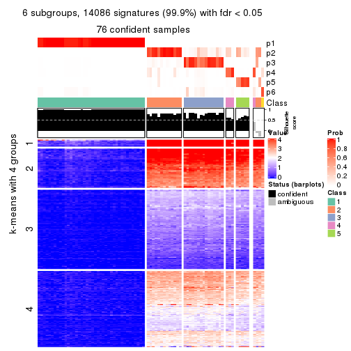
Compare the overlap of signatures from different k:
compare_signatures(res)
get_signature() returns a data frame invisibly. TO get the list of signatures, the function
call should be assigned to a variable explicitly. In following code, if plot argument is set
to FALSE, no heatmap is plotted while only the differential analysis is performed.
# code only for demonstration
tb = get_signature(res, k = ..., plot = FALSE)
An example of the output of tb is:
#> which_row fdr mean_1 mean_2 scaled_mean_1 scaled_mean_2 km
#> 1 38 0.042760348 8.373488 9.131774 -0.5533452 0.5164555 1
#> 2 40 0.018707592 7.106213 8.469186 -0.6173731 0.5762149 1
#> 3 55 0.019134737 10.221463 11.207825 -0.6159697 0.5749050 1
#> 4 59 0.006059896 5.921854 7.869574 -0.6899429 0.6439467 1
#> 5 60 0.018055526 8.928898 10.211722 -0.6204761 0.5791110 1
#> 6 98 0.009384629 15.714769 14.887706 0.6635654 -0.6193277 2
...
The columns in tb are:
which_row: row indices corresponding to the input matrix.fdr: FDR for the differential test. mean_x: The mean value in group x.scaled_mean_x: The mean value in group x after rows are scaled.km: Row groups if k-means clustering is applied to rows.UMAP plot which shows how samples are separated.
dimension_reduction(res, k = 2, method = "UMAP")

dimension_reduction(res, k = 3, method = "UMAP")
dimension_reduction(res, k = 4, method = "UMAP")
dimension_reduction(res, k = 5, method = "UMAP")
dimension_reduction(res, k = 6, method = "UMAP")
Following heatmap shows how subgroups are split when increasing k:
collect_classes(res)
If matrix rows can be associated to genes, consider to use functional_enrichment(res,
...) to perform function enrichment for the signature genes. See this vignette for more detailed explanations.
The object with results only for a single top-value method and a single partition method can be extracted as:
res = res_list["ATC", "pam"]
# you can also extract it by
# res = res_list["ATC:pam"]
A summary of res and all the functions that can be applied to it:
res
#> A 'ConsensusPartition' object with k = 2, 3, 4, 5, 6.
#> On a matrix with 14104 rows and 80 columns.
#> Top rows (1000, 2000, 3000, 4000, 5000) are extracted by 'ATC' method.
#> Subgroups are detected by 'pam' method.
#> Performed in total 1250 partitions by row resampling.
#> Best k for subgroups seems to be 5.
#>
#> Following methods can be applied to this 'ConsensusPartition' object:
#> [1] "cola_report" "collect_classes" "collect_plots"
#> [4] "collect_stats" "colnames" "compare_signatures"
#> [7] "consensus_heatmap" "dimension_reduction" "functional_enrichment"
#> [10] "get_anno_col" "get_anno" "get_classes"
#> [13] "get_consensus" "get_matrix" "get_membership"
#> [16] "get_param" "get_signatures" "get_stats"
#> [19] "is_best_k" "is_stable_k" "membership_heatmap"
#> [22] "ncol" "nrow" "plot_ecdf"
#> [25] "rownames" "select_partition_number" "show"
#> [28] "suggest_best_k" "test_to_known_factors"
collect_plots() function collects all the plots made from res for all k (number of partitions)
into one single page to provide an easy and fast comparison between different k.
collect_plots(res)
The plots are:
k and the heatmap of
predicted classes for each k.k.k.k.All the plots in panels can be made by individual functions and they are plotted later in this section.
select_partition_number() produces several plots showing different
statistics for choosing “optimized” k. There are following statistics:
k;k, the area increased is defined as \(A_k - A_{k-1}\).The detailed explanations of these statistics can be found in the cola vignette.
Generally speaking, lower PAC score, higher mean silhouette score or higher
concordance corresponds to better partition. Rand index and Jaccard index
measure how similar the current partition is compared to partition with k-1.
If they are too similar, we won't accept k is better than k-1.
select_partition_number(res)
The numeric values for all these statistics can be obtained by get_stats().
get_stats(res)
#> k 1-PAC mean_silhouette concordance area_increased Rand Jaccard
#> 2 2 1 1.000 1.000 0.5068 0.494 0.494
#> 3 3 1 1.000 1.000 0.1990 0.899 0.796
#> 4 4 1 1.000 1.000 0.0520 0.968 0.919
#> 5 5 1 0.992 0.983 0.1445 0.899 0.720
#> 6 6 1 0.986 0.992 0.0135 0.999 0.995
suggest_best_k() suggests the best \(k\) based on these statistics. The rules are as follows:
suggest_best_k(res)
#> [1] 5
#> attr(,"optional")
#> [1] 2 3 4
There is also optional best \(k\) = 2 3 4 that is worth to check.
Following shows the table of the partitions (You need to click the show/hide
code output link to see it). The membership matrix (columns with name p*)
is inferred by
clue::cl_consensus()
function with the SE method. Basically the value in the membership matrix
represents the probability to belong to a certain group. The finall class
label for an item is determined with the group with highest probability it
belongs to.
In get_classes() function, the entropy is calculated from the membership
matrix and the silhouette score is calculated from the consensus matrix.
cbind(get_classes(res, k = 2), get_membership(res, k = 2))
#> class entropy silhouette p1 p2
#> SRR830972 2 0 1 0 1
#> SRR830973 2 0 1 0 1
#> SRR830974 2 0 1 0 1
#> SRR830975 2 0 1 0 1
#> SRR830976 2 0 1 0 1
#> SRR830977 2 0 1 0 1
#> SRR830978 2 0 1 0 1
#> SRR830979 2 0 1 0 1
#> SRR830980 2 0 1 0 1
#> SRR830982 2 0 1 0 1
#> SRR830981 2 0 1 0 1
#> SRR830983 2 0 1 0 1
#> SRR831010 1 0 1 1 0
#> SRR831011 1 0 1 1 0
#> SRR831012 1 0 1 1 0
#> SRR831013 1 0 1 1 0
#> SRR831014 1 0 1 1 0
#> SRR831015 1 0 1 1 0
#> SRR831016 1 0 1 1 0
#> SRR831017 1 0 1 1 0
#> SRR831018 1 0 1 1 0
#> SRR831019 1 0 1 1 0
#> SRR831020 1 0 1 1 0
#> SRR831021 1 0 1 1 0
#> SRR831022 1 0 1 1 0
#> SRR831023 1 0 1 1 0
#> SRR831024 1 0 1 1 0
#> SRR831025 1 0 1 1 0
#> SRR831026 1 0 1 1 0
#> SRR831027 1 0 1 1 0
#> SRR831028 1 0 1 1 0
#> SRR831029 1 0 1 1 0
#> SRR831030 1 0 1 1 0
#> SRR831031 1 0 1 1 0
#> SRR831032 1 0 1 1 0
#> SRR831033 1 0 1 1 0
#> SRR831034 1 0 1 1 0
#> SRR831035 1 0 1 1 0
#> SRR831036 1 0 1 1 0
#> SRR831037 1 0 1 1 0
#> SRR831038 1 0 1 1 0
#> SRR831039 1 0 1 1 0
#> SRR831040 1 0 1 1 0
#> SRR831041 1 0 1 1 0
#> SRR831042 1 0 1 1 0
#> SRR831043 1 0 1 1 0
#> SRR831044 1 0 1 1 0
#> SRR830965 2 0 1 0 1
#> SRR830966 2 0 1 0 1
#> SRR830967 2 0 1 0 1
#> SRR830968 2 0 1 0 1
#> SRR830969 2 0 1 0 1
#> SRR830970 2 0 1 0 1
#> SRR830971 2 0 1 0 1
#> SRR830984 2 0 1 0 1
#> SRR830985 2 0 1 0 1
#> SRR830986 2 0 1 0 1
#> SRR830987 2 0 1 0 1
#> SRR830988 2 0 1 0 1
#> SRR830989 2 0 1 0 1
#> SRR830990 2 0 1 0 1
#> SRR830991 2 0 1 0 1
#> SRR830992 2 0 1 0 1
#> SRR830993 2 0 1 0 1
#> SRR830994 2 0 1 0 1
#> SRR830995 2 0 1 0 1
#> SRR830996 2 0 1 0 1
#> SRR830997 2 0 1 0 1
#> SRR830998 2 0 1 0 1
#> SRR830999 2 0 1 0 1
#> SRR831000 2 0 1 0 1
#> SRR831001 2 0 1 0 1
#> SRR831002 2 0 1 0 1
#> SRR831003 2 0 1 0 1
#> SRR831004 2 0 1 0 1
#> SRR831005 1 0 1 1 0
#> SRR831006 1 0 1 1 0
#> SRR831007 1 0 1 1 0
#> SRR831008 1 0 1 1 0
#> SRR831009 1 0 1 1 0
cbind(get_classes(res, k = 3), get_membership(res, k = 3))
#> class entropy silhouette p1 p2 p3
#> SRR830972 2 0 1 0 1 0
#> SRR830973 3 0 1 0 0 1
#> SRR830974 2 0 1 0 1 0
#> SRR830975 2 0 1 0 1 0
#> SRR830976 2 0 1 0 1 0
#> SRR830977 3 0 1 0 0 1
#> SRR830978 3 0 1 0 0 1
#> SRR830979 3 0 1 0 0 1
#> SRR830980 2 0 1 0 1 0
#> SRR830982 2 0 1 0 1 0
#> SRR830981 2 0 1 0 1 0
#> SRR830983 2 0 1 0 1 0
#> SRR831010 1 0 1 1 0 0
#> SRR831011 1 0 1 1 0 0
#> SRR831012 1 0 1 1 0 0
#> SRR831013 1 0 1 1 0 0
#> SRR831014 1 0 1 1 0 0
#> SRR831015 1 0 1 1 0 0
#> SRR831016 1 0 1 1 0 0
#> SRR831017 1 0 1 1 0 0
#> SRR831018 1 0 1 1 0 0
#> SRR831019 1 0 1 1 0 0
#> SRR831020 1 0 1 1 0 0
#> SRR831021 1 0 1 1 0 0
#> SRR831022 1 0 1 1 0 0
#> SRR831023 1 0 1 1 0 0
#> SRR831024 1 0 1 1 0 0
#> SRR831025 1 0 1 1 0 0
#> SRR831026 1 0 1 1 0 0
#> SRR831027 1 0 1 1 0 0
#> SRR831028 1 0 1 1 0 0
#> SRR831029 1 0 1 1 0 0
#> SRR831030 1 0 1 1 0 0
#> SRR831031 1 0 1 1 0 0
#> SRR831032 1 0 1 1 0 0
#> SRR831033 1 0 1 1 0 0
#> SRR831034 1 0 1 1 0 0
#> SRR831035 1 0 1 1 0 0
#> SRR831036 1 0 1 1 0 0
#> SRR831037 1 0 1 1 0 0
#> SRR831038 1 0 1 1 0 0
#> SRR831039 1 0 1 1 0 0
#> SRR831040 1 0 1 1 0 0
#> SRR831041 1 0 1 1 0 0
#> SRR831042 1 0 1 1 0 0
#> SRR831043 1 0 1 1 0 0
#> SRR831044 1 0 1 1 0 0
#> SRR830965 2 0 1 0 1 0
#> SRR830966 2 0 1 0 1 0
#> SRR830967 2 0 1 0 1 0
#> SRR830968 2 0 1 0 1 0
#> SRR830969 3 0 1 0 0 1
#> SRR830970 2 0 1 0 1 0
#> SRR830971 2 0 1 0 1 0
#> SRR830984 3 0 1 0 0 1
#> SRR830985 3 0 1 0 0 1
#> SRR830986 2 0 1 0 1 0
#> SRR830987 2 0 1 0 1 0
#> SRR830988 2 0 1 0 1 0
#> SRR830989 2 0 1 0 1 0
#> SRR830990 2 0 1 0 1 0
#> SRR830991 2 0 1 0 1 0
#> SRR830992 2 0 1 0 1 0
#> SRR830993 2 0 1 0 1 0
#> SRR830994 2 0 1 0 1 0
#> SRR830995 2 0 1 0 1 0
#> SRR830996 2 0 1 0 1 0
#> SRR830997 3 0 1 0 0 1
#> SRR830998 3 0 1 0 0 1
#> SRR830999 2 0 1 0 1 0
#> SRR831000 2 0 1 0 1 0
#> SRR831001 3 0 1 0 0 1
#> SRR831002 2 0 1 0 1 0
#> SRR831003 3 0 1 0 0 1
#> SRR831004 2 0 1 0 1 0
#> SRR831005 1 0 1 1 0 0
#> SRR831006 1 0 1 1 0 0
#> SRR831007 1 0 1 1 0 0
#> SRR831008 1 0 1 1 0 0
#> SRR831009 1 0 1 1 0 0
cbind(get_classes(res, k = 4), get_membership(res, k = 4))
#> class entropy silhouette p1 p2 p3 p4
#> SRR830972 2 0 1 0 1 0 0
#> SRR830973 3 0 1 0 0 1 0
#> SRR830974 2 0 1 0 1 0 0
#> SRR830975 2 0 1 0 1 0 0
#> SRR830976 2 0 1 0 1 0 0
#> SRR830977 3 0 1 0 0 1 0
#> SRR830978 3 0 1 0 0 1 0
#> SRR830979 3 0 1 0 0 1 0
#> SRR830980 2 0 1 0 1 0 0
#> SRR830982 2 0 1 0 1 0 0
#> SRR830981 2 0 1 0 1 0 0
#> SRR830983 2 0 1 0 1 0 0
#> SRR831010 1 0 1 1 0 0 0
#> SRR831011 1 0 1 1 0 0 0
#> SRR831012 1 0 1 1 0 0 0
#> SRR831013 1 0 1 1 0 0 0
#> SRR831014 1 0 1 1 0 0 0
#> SRR831015 1 0 1 1 0 0 0
#> SRR831016 1 0 1 1 0 0 0
#> SRR831017 1 0 1 1 0 0 0
#> SRR831018 1 0 1 1 0 0 0
#> SRR831019 1 0 1 1 0 0 0
#> SRR831020 1 0 1 1 0 0 0
#> SRR831021 1 0 1 1 0 0 0
#> SRR831022 1 0 1 1 0 0 0
#> SRR831023 1 0 1 1 0 0 0
#> SRR831024 1 0 1 1 0 0 0
#> SRR831025 1 0 1 1 0 0 0
#> SRR831026 1 0 1 1 0 0 0
#> SRR831027 1 0 1 1 0 0 0
#> SRR831028 1 0 1 1 0 0 0
#> SRR831029 1 0 1 1 0 0 0
#> SRR831030 1 0 1 1 0 0 0
#> SRR831031 1 0 1 1 0 0 0
#> SRR831032 1 0 1 1 0 0 0
#> SRR831033 1 0 1 1 0 0 0
#> SRR831034 1 0 1 1 0 0 0
#> SRR831035 1 0 1 1 0 0 0
#> SRR831036 1 0 1 1 0 0 0
#> SRR831037 1 0 1 1 0 0 0
#> SRR831038 1 0 1 1 0 0 0
#> SRR831039 1 0 1 1 0 0 0
#> SRR831040 1 0 1 1 0 0 0
#> SRR831041 1 0 1 1 0 0 0
#> SRR831042 1 0 1 1 0 0 0
#> SRR831043 1 0 1 1 0 0 0
#> SRR831044 1 0 1 1 0 0 0
#> SRR830965 2 0 1 0 1 0 0
#> SRR830966 2 0 1 0 1 0 0
#> SRR830967 4 0 1 0 0 0 1
#> SRR830968 2 0 1 0 1 0 0
#> SRR830969 3 0 1 0 0 1 0
#> SRR830970 2 0 1 0 1 0 0
#> SRR830971 4 0 1 0 0 0 1
#> SRR830984 3 0 1 0 0 1 0
#> SRR830985 3 0 1 0 0 1 0
#> SRR830986 2 0 1 0 1 0 0
#> SRR830987 2 0 1 0 1 0 0
#> SRR830988 2 0 1 0 1 0 0
#> SRR830989 4 0 1 0 0 0 1
#> SRR830990 2 0 1 0 1 0 0
#> SRR830991 2 0 1 0 1 0 0
#> SRR830992 2 0 1 0 1 0 0
#> SRR830993 4 0 1 0 0 0 1
#> SRR830994 2 0 1 0 1 0 0
#> SRR830995 2 0 1 0 1 0 0
#> SRR830996 2 0 1 0 1 0 0
#> SRR830997 3 0 1 0 0 1 0
#> SRR830998 3 0 1 0 0 1 0
#> SRR830999 2 0 1 0 1 0 0
#> SRR831000 2 0 1 0 1 0 0
#> SRR831001 3 0 1 0 0 1 0
#> SRR831002 2 0 1 0 1 0 0
#> SRR831003 3 0 1 0 0 1 0
#> SRR831004 2 0 1 0 1 0 0
#> SRR831005 1 0 1 1 0 0 0
#> SRR831006 1 0 1 1 0 0 0
#> SRR831007 1 0 1 1 0 0 0
#> SRR831008 1 0 1 1 0 0 0
#> SRR831009 1 0 1 1 0 0 0
cbind(get_classes(res, k = 5), get_membership(res, k = 5))
#> class entropy silhouette p1 p2 p3 p4 p5
#> SRR830972 2 0.0000 1.000 0.000 1.000 0 0.000 0.000
#> SRR830973 3 0.0000 1.000 0.000 0.000 1 0.000 0.000
#> SRR830974 2 0.0000 1.000 0.000 1.000 0 0.000 0.000
#> SRR830975 2 0.0000 1.000 0.000 1.000 0 0.000 0.000
#> SRR830976 2 0.0000 1.000 0.000 1.000 0 0.000 0.000
#> SRR830977 3 0.0000 1.000 0.000 0.000 1 0.000 0.000
#> SRR830978 3 0.0000 1.000 0.000 0.000 1 0.000 0.000
#> SRR830979 3 0.0000 1.000 0.000 0.000 1 0.000 0.000
#> SRR830980 2 0.0000 1.000 0.000 1.000 0 0.000 0.000
#> SRR830982 2 0.0000 1.000 0.000 1.000 0 0.000 0.000
#> SRR830981 2 0.0000 1.000 0.000 1.000 0 0.000 0.000
#> SRR830983 2 0.0000 1.000 0.000 1.000 0 0.000 0.000
#> SRR831010 1 0.0000 0.995 1.000 0.000 0 0.000 0.000
#> SRR831011 1 0.0000 0.995 1.000 0.000 0 0.000 0.000
#> SRR831012 1 0.0000 0.995 1.000 0.000 0 0.000 0.000
#> SRR831013 1 0.0000 0.995 1.000 0.000 0 0.000 0.000
#> SRR831014 1 0.0000 0.995 1.000 0.000 0 0.000 0.000
#> SRR831015 1 0.0000 0.995 1.000 0.000 0 0.000 0.000
#> SRR831016 1 0.0000 0.995 1.000 0.000 0 0.000 0.000
#> SRR831017 4 0.1851 0.988 0.088 0.000 0 0.912 0.000
#> SRR831018 1 0.0000 0.995 1.000 0.000 0 0.000 0.000
#> SRR831019 4 0.1851 0.988 0.088 0.000 0 0.912 0.000
#> SRR831020 4 0.1851 0.988 0.088 0.000 0 0.912 0.000
#> SRR831021 1 0.0000 0.995 1.000 0.000 0 0.000 0.000
#> SRR831022 1 0.0000 0.995 1.000 0.000 0 0.000 0.000
#> SRR831023 4 0.1851 0.988 0.088 0.000 0 0.912 0.000
#> SRR831024 1 0.0000 0.995 1.000 0.000 0 0.000 0.000
#> SRR831025 4 0.1851 0.988 0.088 0.000 0 0.912 0.000
#> SRR831026 1 0.0000 0.995 1.000 0.000 0 0.000 0.000
#> SRR831027 1 0.0000 0.995 1.000 0.000 0 0.000 0.000
#> SRR831028 4 0.2773 0.872 0.164 0.000 0 0.836 0.000
#> SRR831029 1 0.0000 0.995 1.000 0.000 0 0.000 0.000
#> SRR831030 1 0.0000 0.995 1.000 0.000 0 0.000 0.000
#> SRR831031 1 0.2280 0.847 0.880 0.000 0 0.120 0.000
#> SRR831032 1 0.0000 0.995 1.000 0.000 0 0.000 0.000
#> SRR831033 1 0.0000 0.995 1.000 0.000 0 0.000 0.000
#> SRR831034 4 0.1851 0.988 0.088 0.000 0 0.912 0.000
#> SRR831035 4 0.1851 0.988 0.088 0.000 0 0.912 0.000
#> SRR831036 4 0.1851 0.988 0.088 0.000 0 0.912 0.000
#> SRR831037 4 0.1851 0.988 0.088 0.000 0 0.912 0.000
#> SRR831038 1 0.0000 0.995 1.000 0.000 0 0.000 0.000
#> SRR831039 1 0.0000 0.995 1.000 0.000 0 0.000 0.000
#> SRR831040 1 0.0000 0.995 1.000 0.000 0 0.000 0.000
#> SRR831041 1 0.0000 0.995 1.000 0.000 0 0.000 0.000
#> SRR831042 1 0.0000 0.995 1.000 0.000 0 0.000 0.000
#> SRR831043 1 0.0000 0.995 1.000 0.000 0 0.000 0.000
#> SRR831044 1 0.0000 0.995 1.000 0.000 0 0.000 0.000
#> SRR830965 2 0.0000 1.000 0.000 1.000 0 0.000 0.000
#> SRR830966 2 0.0000 1.000 0.000 1.000 0 0.000 0.000
#> SRR830967 5 0.1851 0.969 0.000 0.000 0 0.088 0.912
#> SRR830968 2 0.0000 1.000 0.000 1.000 0 0.000 0.000
#> SRR830969 3 0.0000 1.000 0.000 0.000 1 0.000 0.000
#> SRR830970 2 0.0000 1.000 0.000 1.000 0 0.000 0.000
#> SRR830971 5 0.1851 0.969 0.000 0.000 0 0.088 0.912
#> SRR830984 3 0.0000 1.000 0.000 0.000 1 0.000 0.000
#> SRR830985 3 0.0000 1.000 0.000 0.000 1 0.000 0.000
#> SRR830986 2 0.0000 1.000 0.000 1.000 0 0.000 0.000
#> SRR830987 2 0.0000 1.000 0.000 1.000 0 0.000 0.000
#> SRR830988 2 0.0000 1.000 0.000 1.000 0 0.000 0.000
#> SRR830989 5 0.0000 0.969 0.000 0.000 0 0.000 1.000
#> SRR830990 2 0.0000 1.000 0.000 1.000 0 0.000 0.000
#> SRR830991 2 0.0000 1.000 0.000 1.000 0 0.000 0.000
#> SRR830992 2 0.0000 1.000 0.000 1.000 0 0.000 0.000
#> SRR830993 5 0.0000 0.969 0.000 0.000 0 0.000 1.000
#> SRR830994 2 0.0000 1.000 0.000 1.000 0 0.000 0.000
#> SRR830995 2 0.0162 0.996 0.000 0.996 0 0.000 0.004
#> SRR830996 2 0.0000 1.000 0.000 1.000 0 0.000 0.000
#> SRR830997 3 0.0000 1.000 0.000 0.000 1 0.000 0.000
#> SRR830998 3 0.0000 1.000 0.000 0.000 1 0.000 0.000
#> SRR830999 2 0.0000 1.000 0.000 1.000 0 0.000 0.000
#> SRR831000 2 0.0000 1.000 0.000 1.000 0 0.000 0.000
#> SRR831001 3 0.0000 1.000 0.000 0.000 1 0.000 0.000
#> SRR831002 2 0.0000 1.000 0.000 1.000 0 0.000 0.000
#> SRR831003 3 0.0000 1.000 0.000 0.000 1 0.000 0.000
#> SRR831004 2 0.0000 1.000 0.000 1.000 0 0.000 0.000
#> SRR831005 1 0.0000 0.995 1.000 0.000 0 0.000 0.000
#> SRR831006 1 0.0000 0.995 1.000 0.000 0 0.000 0.000
#> SRR831007 1 0.0000 0.995 1.000 0.000 0 0.000 0.000
#> SRR831008 4 0.1851 0.988 0.088 0.000 0 0.912 0.000
#> SRR831009 1 0.0000 0.995 1.000 0.000 0 0.000 0.000
cbind(get_classes(res, k = 6), get_membership(res, k = 6))
#> class entropy silhouette p1 p2 p3 p4 p5 p6
#> SRR830972 2 0.0000 0.991 0.000 1.000 0 0.000 0.000 0.000
#> SRR830973 3 0.0000 1.000 0.000 0.000 1 0.000 0.000 0.000
#> SRR830974 2 0.0000 0.991 0.000 1.000 0 0.000 0.000 0.000
#> SRR830975 2 0.0000 0.991 0.000 1.000 0 0.000 0.000 0.000
#> SRR830976 2 0.0000 0.991 0.000 1.000 0 0.000 0.000 0.000
#> SRR830977 3 0.0000 1.000 0.000 0.000 1 0.000 0.000 0.000
#> SRR830978 3 0.0000 1.000 0.000 0.000 1 0.000 0.000 0.000
#> SRR830979 3 0.0000 1.000 0.000 0.000 1 0.000 0.000 0.000
#> SRR830980 2 0.0000 0.991 0.000 1.000 0 0.000 0.000 0.000
#> SRR830982 2 0.0000 0.991 0.000 1.000 0 0.000 0.000 0.000
#> SRR830981 2 0.0000 0.991 0.000 1.000 0 0.000 0.000 0.000
#> SRR830983 2 0.0000 0.991 0.000 1.000 0 0.000 0.000 0.000
#> SRR831010 1 0.0000 0.995 1.000 0.000 0 0.000 0.000 0.000
#> SRR831011 1 0.0000 0.995 1.000 0.000 0 0.000 0.000 0.000
#> SRR831012 1 0.0000 0.995 1.000 0.000 0 0.000 0.000 0.000
#> SRR831013 1 0.0000 0.995 1.000 0.000 0 0.000 0.000 0.000
#> SRR831014 1 0.0000 0.995 1.000 0.000 0 0.000 0.000 0.000
#> SRR831015 1 0.0000 0.995 1.000 0.000 0 0.000 0.000 0.000
#> SRR831016 1 0.0000 0.995 1.000 0.000 0 0.000 0.000 0.000
#> SRR831017 6 0.0458 0.986 0.016 0.000 0 0.000 0.000 0.984
#> SRR831018 1 0.0000 0.995 1.000 0.000 0 0.000 0.000 0.000
#> SRR831019 6 0.0458 0.986 0.016 0.000 0 0.000 0.000 0.984
#> SRR831020 6 0.0458 0.986 0.016 0.000 0 0.000 0.000 0.984
#> SRR831021 1 0.0000 0.995 1.000 0.000 0 0.000 0.000 0.000
#> SRR831022 1 0.0000 0.995 1.000 0.000 0 0.000 0.000 0.000
#> SRR831023 6 0.0458 0.986 0.016 0.000 0 0.000 0.000 0.984
#> SRR831024 1 0.0000 0.995 1.000 0.000 0 0.000 0.000 0.000
#> SRR831025 6 0.0458 0.986 0.016 0.000 0 0.000 0.000 0.984
#> SRR831026 1 0.0000 0.995 1.000 0.000 0 0.000 0.000 0.000
#> SRR831027 1 0.0000 0.995 1.000 0.000 0 0.000 0.000 0.000
#> SRR831028 6 0.1765 0.853 0.096 0.000 0 0.000 0.000 0.904
#> SRR831029 1 0.0000 0.995 1.000 0.000 0 0.000 0.000 0.000
#> SRR831030 1 0.0000 0.995 1.000 0.000 0 0.000 0.000 0.000
#> SRR831031 1 0.2178 0.831 0.868 0.000 0 0.000 0.000 0.132
#> SRR831032 1 0.0000 0.995 1.000 0.000 0 0.000 0.000 0.000
#> SRR831033 1 0.0000 0.995 1.000 0.000 0 0.000 0.000 0.000
#> SRR831034 6 0.0458 0.986 0.016 0.000 0 0.000 0.000 0.984
#> SRR831035 6 0.0458 0.986 0.016 0.000 0 0.000 0.000 0.984
#> SRR831036 6 0.0458 0.986 0.016 0.000 0 0.000 0.000 0.984
#> SRR831037 6 0.0458 0.986 0.016 0.000 0 0.000 0.000 0.984
#> SRR831038 1 0.0000 0.995 1.000 0.000 0 0.000 0.000 0.000
#> SRR831039 1 0.0000 0.995 1.000 0.000 0 0.000 0.000 0.000
#> SRR831040 1 0.0000 0.995 1.000 0.000 0 0.000 0.000 0.000
#> SRR831041 1 0.0000 0.995 1.000 0.000 0 0.000 0.000 0.000
#> SRR831042 1 0.0000 0.995 1.000 0.000 0 0.000 0.000 0.000
#> SRR831043 1 0.0000 0.995 1.000 0.000 0 0.000 0.000 0.000
#> SRR831044 1 0.0000 0.995 1.000 0.000 0 0.000 0.000 0.000
#> SRR830965 2 0.0146 0.989 0.000 0.996 0 0.000 0.004 0.000
#> SRR830966 2 0.0000 0.991 0.000 1.000 0 0.000 0.000 0.000
#> SRR830967 5 0.0000 1.000 0.000 0.000 0 0.000 1.000 0.000
#> SRR830968 2 0.0547 0.976 0.000 0.980 0 0.000 0.020 0.000
#> SRR830969 3 0.0000 1.000 0.000 0.000 1 0.000 0.000 0.000
#> SRR830970 2 0.0000 0.991 0.000 1.000 0 0.000 0.000 0.000
#> SRR830971 5 0.0000 1.000 0.000 0.000 0 0.000 1.000 0.000
#> SRR830984 3 0.0000 1.000 0.000 0.000 1 0.000 0.000 0.000
#> SRR830985 3 0.0000 1.000 0.000 0.000 1 0.000 0.000 0.000
#> SRR830986 2 0.0000 0.991 0.000 1.000 0 0.000 0.000 0.000
#> SRR830987 2 0.0000 0.991 0.000 1.000 0 0.000 0.000 0.000
#> SRR830988 2 0.0000 0.991 0.000 1.000 0 0.000 0.000 0.000
#> SRR830989 4 0.0000 0.930 0.000 0.000 0 1.000 0.000 0.000
#> SRR830990 2 0.0000 0.991 0.000 1.000 0 0.000 0.000 0.000
#> SRR830991 2 0.0146 0.989 0.000 0.996 0 0.000 0.000 0.004
#> SRR830992 2 0.0146 0.989 0.000 0.996 0 0.000 0.000 0.004
#> SRR830993 4 0.1141 0.927 0.000 0.000 0 0.948 0.052 0.000
#> SRR830994 2 0.1594 0.938 0.000 0.932 0 0.052 0.000 0.016
#> SRR830995 2 0.1411 0.940 0.000 0.936 0 0.060 0.000 0.004
#> SRR830996 2 0.0146 0.989 0.000 0.996 0 0.000 0.000 0.004
#> SRR830997 3 0.0000 1.000 0.000 0.000 1 0.000 0.000 0.000
#> SRR830998 3 0.0000 1.000 0.000 0.000 1 0.000 0.000 0.000
#> SRR830999 2 0.1285 0.947 0.000 0.944 0 0.052 0.000 0.004
#> SRR831000 2 0.0000 0.991 0.000 1.000 0 0.000 0.000 0.000
#> SRR831001 3 0.0000 1.000 0.000 0.000 1 0.000 0.000 0.000
#> SRR831002 2 0.0000 0.991 0.000 1.000 0 0.000 0.000 0.000
#> SRR831003 3 0.0000 1.000 0.000 0.000 1 0.000 0.000 0.000
#> SRR831004 2 0.0000 0.991 0.000 1.000 0 0.000 0.000 0.000
#> SRR831005 1 0.0000 0.995 1.000 0.000 0 0.000 0.000 0.000
#> SRR831006 1 0.0000 0.995 1.000 0.000 0 0.000 0.000 0.000
#> SRR831007 1 0.0000 0.995 1.000 0.000 0 0.000 0.000 0.000
#> SRR831008 6 0.0458 0.986 0.016 0.000 0 0.000 0.000 0.984
#> SRR831009 1 0.0000 0.995 1.000 0.000 0 0.000 0.000 0.000
Heatmaps for the consensus matrix. It visualizes the probability of two samples to be in a same group.
consensus_heatmap(res, k = 2)

consensus_heatmap(res, k = 3)
consensus_heatmap(res, k = 4)
consensus_heatmap(res, k = 5)
consensus_heatmap(res, k = 6)
Heatmaps for the membership of samples in all partitions to see how consistent they are:
membership_heatmap(res, k = 2)

membership_heatmap(res, k = 3)
membership_heatmap(res, k = 4)
membership_heatmap(res, k = 5)
membership_heatmap(res, k = 6)
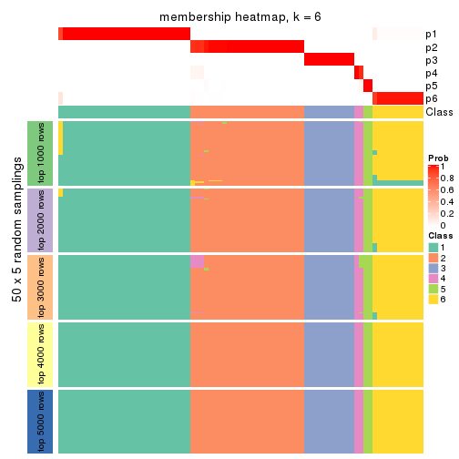
As soon as we have had the classes for columns, we can look for signatures which are significantly different between classes which can be candidate marks for certain classes. Following are the heatmaps for signatures.
Signature heatmaps where rows are scaled:
get_signatures(res, k = 2)

get_signatures(res, k = 3)
#> Error in mat[ceiling(1:nr/h_ratio), ceiling(1:nc/w_ratio), drop = FALSE]: subscript out of bounds

get_signatures(res, k = 4)
get_signatures(res, k = 5)
get_signatures(res, k = 6)
Signature heatmaps where rows are not scaled:
get_signatures(res, k = 2, scale_rows = FALSE)

get_signatures(res, k = 3, scale_rows = FALSE)
get_signatures(res, k = 4, scale_rows = FALSE)
get_signatures(res, k = 5, scale_rows = FALSE)
get_signatures(res, k = 6, scale_rows = FALSE)

Compare the overlap of signatures from different k:
compare_signatures(res)
get_signature() returns a data frame invisibly. TO get the list of signatures, the function
call should be assigned to a variable explicitly. In following code, if plot argument is set
to FALSE, no heatmap is plotted while only the differential analysis is performed.
# code only for demonstration
tb = get_signature(res, k = ..., plot = FALSE)
An example of the output of tb is:
#> which_row fdr mean_1 mean_2 scaled_mean_1 scaled_mean_2 km
#> 1 38 0.042760348 8.373488 9.131774 -0.5533452 0.5164555 1
#> 2 40 0.018707592 7.106213 8.469186 -0.6173731 0.5762149 1
#> 3 55 0.019134737 10.221463 11.207825 -0.6159697 0.5749050 1
#> 4 59 0.006059896 5.921854 7.869574 -0.6899429 0.6439467 1
#> 5 60 0.018055526 8.928898 10.211722 -0.6204761 0.5791110 1
#> 6 98 0.009384629 15.714769 14.887706 0.6635654 -0.6193277 2
...
The columns in tb are:
which_row: row indices corresponding to the input matrix.fdr: FDR for the differential test. mean_x: The mean value in group x.scaled_mean_x: The mean value in group x after rows are scaled.km: Row groups if k-means clustering is applied to rows.UMAP plot which shows how samples are separated.
dimension_reduction(res, k = 2, method = "UMAP")

dimension_reduction(res, k = 3, method = "UMAP")
dimension_reduction(res, k = 4, method = "UMAP")
dimension_reduction(res, k = 5, method = "UMAP")
dimension_reduction(res, k = 6, method = "UMAP")
Following heatmap shows how subgroups are split when increasing k:
collect_classes(res)
If matrix rows can be associated to genes, consider to use functional_enrichment(res,
...) to perform function enrichment for the signature genes. See this vignette for more detailed explanations.
The object with results only for a single top-value method and a single partition method can be extracted as:
res = res_list["ATC", "mclust"]
# you can also extract it by
# res = res_list["ATC:mclust"]
A summary of res and all the functions that can be applied to it:
res
#> A 'ConsensusPartition' object with k = 2, 3, 4, 5, 6.
#> On a matrix with 14104 rows and 80 columns.
#> Top rows (1000, 2000, 3000, 4000, 5000) are extracted by 'ATC' method.
#> Subgroups are detected by 'mclust' method.
#> Performed in total 1250 partitions by row resampling.
#> Best k for subgroups seems to be 3.
#>
#> Following methods can be applied to this 'ConsensusPartition' object:
#> [1] "cola_report" "collect_classes" "collect_plots"
#> [4] "collect_stats" "colnames" "compare_signatures"
#> [7] "consensus_heatmap" "dimension_reduction" "functional_enrichment"
#> [10] "get_anno_col" "get_anno" "get_classes"
#> [13] "get_consensus" "get_matrix" "get_membership"
#> [16] "get_param" "get_signatures" "get_stats"
#> [19] "is_best_k" "is_stable_k" "membership_heatmap"
#> [22] "ncol" "nrow" "plot_ecdf"
#> [25] "rownames" "select_partition_number" "show"
#> [28] "suggest_best_k" "test_to_known_factors"
collect_plots() function collects all the plots made from res for all k (number of partitions)
into one single page to provide an easy and fast comparison between different k.
collect_plots(res)
The plots are:
k and the heatmap of
predicted classes for each k.k.k.k.All the plots in panels can be made by individual functions and they are plotted later in this section.
select_partition_number() produces several plots showing different
statistics for choosing “optimized” k. There are following statistics:
k;k, the area increased is defined as \(A_k - A_{k-1}\).The detailed explanations of these statistics can be found in the cola vignette.
Generally speaking, lower PAC score, higher mean silhouette score or higher
concordance corresponds to better partition. Rand index and Jaccard index
measure how similar the current partition is compared to partition with k-1.
If they are too similar, we won't accept k is better than k-1.
select_partition_number(res)
The numeric values for all these statistics can be obtained by get_stats().
get_stats(res)
#> k 1-PAC mean_silhouette concordance area_increased Rand Jaccard
#> 2 2 1.000 1.000 1.000 0.5068 0.494 0.494
#> 3 3 1.000 0.985 0.991 0.1397 0.927 0.852
#> 4 4 0.861 0.729 0.827 0.1020 0.916 0.800
#> 5 5 0.859 0.703 0.835 0.0479 0.910 0.759
#> 6 6 0.868 0.779 0.865 0.0288 0.949 0.851
suggest_best_k() suggests the best \(k\) based on these statistics. The rules are as follows:
suggest_best_k(res)
#> [1] 3
#> attr(,"optional")
#> [1] 2
There is also optional best \(k\) = 2 that is worth to check.
Following shows the table of the partitions (You need to click the show/hide
code output link to see it). The membership matrix (columns with name p*)
is inferred by
clue::cl_consensus()
function with the SE method. Basically the value in the membership matrix
represents the probability to belong to a certain group. The finall class
label for an item is determined with the group with highest probability it
belongs to.
In get_classes() function, the entropy is calculated from the membership
matrix and the silhouette score is calculated from the consensus matrix.
cbind(get_classes(res, k = 2), get_membership(res, k = 2))
#> class entropy silhouette p1 p2
#> SRR830972 2 0 1 0 1
#> SRR830973 2 0 1 0 1
#> SRR830974 2 0 1 0 1
#> SRR830975 2 0 1 0 1
#> SRR830976 2 0 1 0 1
#> SRR830977 2 0 1 0 1
#> SRR830978 2 0 1 0 1
#> SRR830979 2 0 1 0 1
#> SRR830980 2 0 1 0 1
#> SRR830982 2 0 1 0 1
#> SRR830981 2 0 1 0 1
#> SRR830983 2 0 1 0 1
#> SRR831010 1 0 1 1 0
#> SRR831011 1 0 1 1 0
#> SRR831012 1 0 1 1 0
#> SRR831013 1 0 1 1 0
#> SRR831014 1 0 1 1 0
#> SRR831015 1 0 1 1 0
#> SRR831016 1 0 1 1 0
#> SRR831017 1 0 1 1 0
#> SRR831018 1 0 1 1 0
#> SRR831019 1 0 1 1 0
#> SRR831020 1 0 1 1 0
#> SRR831021 1 0 1 1 0
#> SRR831022 1 0 1 1 0
#> SRR831023 1 0 1 1 0
#> SRR831024 1 0 1 1 0
#> SRR831025 1 0 1 1 0
#> SRR831026 1 0 1 1 0
#> SRR831027 1 0 1 1 0
#> SRR831028 1 0 1 1 0
#> SRR831029 1 0 1 1 0
#> SRR831030 1 0 1 1 0
#> SRR831031 1 0 1 1 0
#> SRR831032 1 0 1 1 0
#> SRR831033 1 0 1 1 0
#> SRR831034 1 0 1 1 0
#> SRR831035 1 0 1 1 0
#> SRR831036 1 0 1 1 0
#> SRR831037 1 0 1 1 0
#> SRR831038 1 0 1 1 0
#> SRR831039 1 0 1 1 0
#> SRR831040 1 0 1 1 0
#> SRR831041 1 0 1 1 0
#> SRR831042 1 0 1 1 0
#> SRR831043 1 0 1 1 0
#> SRR831044 1 0 1 1 0
#> SRR830965 2 0 1 0 1
#> SRR830966 2 0 1 0 1
#> SRR830967 2 0 1 0 1
#> SRR830968 2 0 1 0 1
#> SRR830969 2 0 1 0 1
#> SRR830970 2 0 1 0 1
#> SRR830971 2 0 1 0 1
#> SRR830984 2 0 1 0 1
#> SRR830985 2 0 1 0 1
#> SRR830986 2 0 1 0 1
#> SRR830987 2 0 1 0 1
#> SRR830988 2 0 1 0 1
#> SRR830989 2 0 1 0 1
#> SRR830990 2 0 1 0 1
#> SRR830991 2 0 1 0 1
#> SRR830992 2 0 1 0 1
#> SRR830993 2 0 1 0 1
#> SRR830994 2 0 1 0 1
#> SRR830995 2 0 1 0 1
#> SRR830996 2 0 1 0 1
#> SRR830997 2 0 1 0 1
#> SRR830998 2 0 1 0 1
#> SRR830999 2 0 1 0 1
#> SRR831000 2 0 1 0 1
#> SRR831001 2 0 1 0 1
#> SRR831002 2 0 1 0 1
#> SRR831003 2 0 1 0 1
#> SRR831004 2 0 1 0 1
#> SRR831005 1 0 1 1 0
#> SRR831006 1 0 1 1 0
#> SRR831007 1 0 1 1 0
#> SRR831008 1 0 1 1 0
#> SRR831009 1 0 1 1 0
cbind(get_classes(res, k = 3), get_membership(res, k = 3))
#> class entropy silhouette p1 p2 p3
#> SRR830972 2 0.0237 0.991 0 0.996 0.004
#> SRR830973 2 0.0592 0.991 0 0.988 0.012
#> SRR830974 2 0.0000 0.992 0 1.000 0.000
#> SRR830975 2 0.0237 0.991 0 0.996 0.004
#> SRR830976 2 0.0592 0.991 0 0.988 0.012
#> SRR830977 2 0.0592 0.991 0 0.988 0.012
#> SRR830978 2 0.0592 0.991 0 0.988 0.012
#> SRR830979 3 0.0747 0.937 0 0.016 0.984
#> SRR830980 2 0.0000 0.992 0 1.000 0.000
#> SRR830982 2 0.0237 0.991 0 0.996 0.004
#> SRR830981 2 0.0000 0.992 0 1.000 0.000
#> SRR830983 2 0.0000 0.992 0 1.000 0.000
#> SRR831010 1 0.0000 1.000 1 0.000 0.000
#> SRR831011 1 0.0000 1.000 1 0.000 0.000
#> SRR831012 1 0.0000 1.000 1 0.000 0.000
#> SRR831013 1 0.0000 1.000 1 0.000 0.000
#> SRR831014 1 0.0000 1.000 1 0.000 0.000
#> SRR831015 1 0.0000 1.000 1 0.000 0.000
#> SRR831016 1 0.0000 1.000 1 0.000 0.000
#> SRR831017 1 0.0000 1.000 1 0.000 0.000
#> SRR831018 1 0.0000 1.000 1 0.000 0.000
#> SRR831019 1 0.0000 1.000 1 0.000 0.000
#> SRR831020 1 0.0000 1.000 1 0.000 0.000
#> SRR831021 1 0.0000 1.000 1 0.000 0.000
#> SRR831022 1 0.0000 1.000 1 0.000 0.000
#> SRR831023 1 0.0000 1.000 1 0.000 0.000
#> SRR831024 1 0.0000 1.000 1 0.000 0.000
#> SRR831025 1 0.0000 1.000 1 0.000 0.000
#> SRR831026 1 0.0000 1.000 1 0.000 0.000
#> SRR831027 1 0.0000 1.000 1 0.000 0.000
#> SRR831028 1 0.0000 1.000 1 0.000 0.000
#> SRR831029 1 0.0000 1.000 1 0.000 0.000
#> SRR831030 1 0.0000 1.000 1 0.000 0.000
#> SRR831031 1 0.0000 1.000 1 0.000 0.000
#> SRR831032 1 0.0000 1.000 1 0.000 0.000
#> SRR831033 1 0.0000 1.000 1 0.000 0.000
#> SRR831034 1 0.0000 1.000 1 0.000 0.000
#> SRR831035 1 0.0000 1.000 1 0.000 0.000
#> SRR831036 1 0.0000 1.000 1 0.000 0.000
#> SRR831037 1 0.0000 1.000 1 0.000 0.000
#> SRR831038 1 0.0000 1.000 1 0.000 0.000
#> SRR831039 1 0.0000 1.000 1 0.000 0.000
#> SRR831040 1 0.0000 1.000 1 0.000 0.000
#> SRR831041 1 0.0000 1.000 1 0.000 0.000
#> SRR831042 1 0.0000 1.000 1 0.000 0.000
#> SRR831043 1 0.0000 1.000 1 0.000 0.000
#> SRR831044 1 0.0000 1.000 1 0.000 0.000
#> SRR830965 2 0.0237 0.991 0 0.996 0.004
#> SRR830966 2 0.0237 0.991 0 0.996 0.004
#> SRR830967 2 0.0237 0.991 0 0.996 0.004
#> SRR830968 2 0.0237 0.991 0 0.996 0.004
#> SRR830969 2 0.0592 0.991 0 0.988 0.012
#> SRR830970 2 0.0000 0.992 0 1.000 0.000
#> SRR830971 2 0.0000 0.992 0 1.000 0.000
#> SRR830984 2 0.0592 0.991 0 0.988 0.012
#> SRR830985 2 0.0592 0.991 0 0.988 0.012
#> SRR830986 2 0.0000 0.992 0 1.000 0.000
#> SRR830987 2 0.0000 0.992 0 1.000 0.000
#> SRR830988 2 0.0000 0.992 0 1.000 0.000
#> SRR830989 3 0.0747 0.937 0 0.016 0.984
#> SRR830990 3 0.0747 0.937 0 0.016 0.984
#> SRR830991 2 0.0747 0.989 0 0.984 0.016
#> SRR830992 2 0.0592 0.991 0 0.988 0.012
#> SRR830993 3 0.0747 0.937 0 0.016 0.984
#> SRR830994 3 0.0747 0.937 0 0.016 0.984
#> SRR830995 3 0.5785 0.533 0 0.332 0.668
#> SRR830996 2 0.0592 0.991 0 0.988 0.012
#> SRR830997 3 0.1964 0.906 0 0.056 0.944
#> SRR830998 2 0.0592 0.991 0 0.988 0.012
#> SRR830999 2 0.0424 0.991 0 0.992 0.008
#> SRR831000 2 0.0000 0.992 0 1.000 0.000
#> SRR831001 2 0.0592 0.991 0 0.988 0.012
#> SRR831002 2 0.1643 0.949 0 0.956 0.044
#> SRR831003 2 0.0592 0.991 0 0.988 0.012
#> SRR831004 2 0.0237 0.991 0 0.996 0.004
#> SRR831005 1 0.0000 1.000 1 0.000 0.000
#> SRR831006 1 0.0000 1.000 1 0.000 0.000
#> SRR831007 1 0.0000 1.000 1 0.000 0.000
#> SRR831008 1 0.0000 1.000 1 0.000 0.000
#> SRR831009 1 0.0000 1.000 1 0.000 0.000
cbind(get_classes(res, k = 4), get_membership(res, k = 4))
#> class entropy silhouette p1 p2 p3 p4
#> SRR830972 2 0.4985 0.705 0 0.532 0.468 0.000
#> SRR830973 3 0.4072 0.483 0 0.252 0.748 0.000
#> SRR830974 2 0.4454 0.633 0 0.692 0.308 0.000
#> SRR830975 3 0.4994 -0.662 0 0.480 0.520 0.000
#> SRR830976 3 0.1174 0.562 0 0.020 0.968 0.012
#> SRR830977 3 0.0592 0.579 0 0.016 0.984 0.000
#> SRR830978 3 0.1557 0.577 0 0.056 0.944 0.000
#> SRR830979 4 0.2149 0.848 0 0.088 0.000 0.912
#> SRR830980 3 0.5000 -0.700 0 0.500 0.500 0.000
#> SRR830982 2 0.4817 0.706 0 0.612 0.388 0.000
#> SRR830981 2 0.4790 0.495 0 0.620 0.380 0.000
#> SRR830983 2 0.4713 0.522 0 0.640 0.360 0.000
#> SRR831010 1 0.0000 1.000 1 0.000 0.000 0.000
#> SRR831011 1 0.0000 1.000 1 0.000 0.000 0.000
#> SRR831012 1 0.0000 1.000 1 0.000 0.000 0.000
#> SRR831013 1 0.0000 1.000 1 0.000 0.000 0.000
#> SRR831014 1 0.0000 1.000 1 0.000 0.000 0.000
#> SRR831015 1 0.0000 1.000 1 0.000 0.000 0.000
#> SRR831016 1 0.0000 1.000 1 0.000 0.000 0.000
#> SRR831017 1 0.0000 1.000 1 0.000 0.000 0.000
#> SRR831018 1 0.0000 1.000 1 0.000 0.000 0.000
#> SRR831019 1 0.0000 1.000 1 0.000 0.000 0.000
#> SRR831020 1 0.0000 1.000 1 0.000 0.000 0.000
#> SRR831021 1 0.0000 1.000 1 0.000 0.000 0.000
#> SRR831022 1 0.0000 1.000 1 0.000 0.000 0.000
#> SRR831023 1 0.0000 1.000 1 0.000 0.000 0.000
#> SRR831024 1 0.0000 1.000 1 0.000 0.000 0.000
#> SRR831025 1 0.0000 1.000 1 0.000 0.000 0.000
#> SRR831026 1 0.0000 1.000 1 0.000 0.000 0.000
#> SRR831027 1 0.0000 1.000 1 0.000 0.000 0.000
#> SRR831028 1 0.0000 1.000 1 0.000 0.000 0.000
#> SRR831029 1 0.0000 1.000 1 0.000 0.000 0.000
#> SRR831030 1 0.0000 1.000 1 0.000 0.000 0.000
#> SRR831031 1 0.0000 1.000 1 0.000 0.000 0.000
#> SRR831032 1 0.0000 1.000 1 0.000 0.000 0.000
#> SRR831033 1 0.0000 1.000 1 0.000 0.000 0.000
#> SRR831034 1 0.0000 1.000 1 0.000 0.000 0.000
#> SRR831035 1 0.0000 1.000 1 0.000 0.000 0.000
#> SRR831036 1 0.0000 1.000 1 0.000 0.000 0.000
#> SRR831037 1 0.0000 1.000 1 0.000 0.000 0.000
#> SRR831038 1 0.0000 1.000 1 0.000 0.000 0.000
#> SRR831039 1 0.0000 1.000 1 0.000 0.000 0.000
#> SRR831040 1 0.0000 1.000 1 0.000 0.000 0.000
#> SRR831041 1 0.0000 1.000 1 0.000 0.000 0.000
#> SRR831042 1 0.0000 1.000 1 0.000 0.000 0.000
#> SRR831043 1 0.0000 1.000 1 0.000 0.000 0.000
#> SRR831044 1 0.0000 1.000 1 0.000 0.000 0.000
#> SRR830965 2 0.5155 0.705 0 0.528 0.468 0.004
#> SRR830966 2 0.4992 0.699 0 0.524 0.476 0.000
#> SRR830967 2 0.5285 0.703 0 0.524 0.468 0.008
#> SRR830968 3 0.4981 -0.652 0 0.464 0.536 0.000
#> SRR830969 3 0.1211 0.576 0 0.040 0.960 0.000
#> SRR830970 3 0.5016 -0.448 0 0.396 0.600 0.004
#> SRR830971 2 0.5296 0.638 0 0.496 0.496 0.008
#> SRR830984 3 0.4955 0.283 0 0.444 0.556 0.000
#> SRR830985 3 0.3172 0.529 0 0.160 0.840 0.000
#> SRR830986 2 0.4989 0.706 0 0.528 0.472 0.000
#> SRR830987 2 0.4992 0.699 0 0.524 0.476 0.000
#> SRR830988 3 0.4998 -0.686 0 0.488 0.512 0.000
#> SRR830989 4 0.0188 0.853 0 0.004 0.000 0.996
#> SRR830990 4 0.5836 0.782 0 0.304 0.056 0.640
#> SRR830991 3 0.1022 0.579 0 0.032 0.968 0.000
#> SRR830992 3 0.0188 0.578 0 0.004 0.996 0.000
#> SRR830993 4 0.0188 0.853 0 0.004 0.000 0.996
#> SRR830994 4 0.0000 0.853 0 0.000 0.000 1.000
#> SRR830995 4 0.7618 0.317 0 0.228 0.308 0.464
#> SRR830996 3 0.0336 0.578 0 0.008 0.992 0.000
#> SRR830997 4 0.5894 0.788 0 0.200 0.108 0.692
#> SRR830998 3 0.3764 0.519 0 0.216 0.784 0.000
#> SRR830999 3 0.3450 0.376 0 0.156 0.836 0.008
#> SRR831000 2 0.4761 0.692 0 0.628 0.372 0.000
#> SRR831001 3 0.4134 0.495 0 0.260 0.740 0.000
#> SRR831002 2 0.4406 0.386 0 0.700 0.300 0.000
#> SRR831003 3 0.3907 0.488 0 0.232 0.768 0.000
#> SRR831004 2 0.4817 0.706 0 0.612 0.388 0.000
#> SRR831005 1 0.0000 1.000 1 0.000 0.000 0.000
#> SRR831006 1 0.0000 1.000 1 0.000 0.000 0.000
#> SRR831007 1 0.0000 1.000 1 0.000 0.000 0.000
#> SRR831008 1 0.0000 1.000 1 0.000 0.000 0.000
#> SRR831009 1 0.0000 1.000 1 0.000 0.000 0.000
cbind(get_classes(res, k = 5), get_membership(res, k = 5))
#> class entropy silhouette p1 p2 p3 p4 p5
#> SRR830972 2 0.0912 0.655 0 0.972 0.000 0.012 0.016
#> SRR830973 4 0.6373 0.264 0 0.416 0.000 0.420 0.164
#> SRR830974 4 0.4359 0.113 0 0.412 0.000 0.584 0.004
#> SRR830975 2 0.3264 0.644 0 0.820 0.000 0.164 0.016
#> SRR830976 5 0.2634 0.556 0 0.020 0.024 0.056 0.900
#> SRR830977 4 0.6926 0.319 0 0.348 0.004 0.364 0.284
#> SRR830978 2 0.6732 -0.311 0 0.392 0.000 0.352 0.256
#> SRR830979 3 0.1732 0.745 0 0.000 0.920 0.080 0.000
#> SRR830980 2 0.3203 0.641 0 0.820 0.000 0.168 0.012
#> SRR830982 2 0.1117 0.652 0 0.964 0.000 0.020 0.016
#> SRR830981 4 0.3995 0.432 0 0.180 0.000 0.776 0.044
#> SRR830983 4 0.4096 0.427 0 0.200 0.000 0.760 0.040
#> SRR831010 1 0.0000 1.000 1 0.000 0.000 0.000 0.000
#> SRR831011 1 0.0000 1.000 1 0.000 0.000 0.000 0.000
#> SRR831012 1 0.0000 1.000 1 0.000 0.000 0.000 0.000
#> SRR831013 1 0.0000 1.000 1 0.000 0.000 0.000 0.000
#> SRR831014 1 0.0000 1.000 1 0.000 0.000 0.000 0.000
#> SRR831015 1 0.0000 1.000 1 0.000 0.000 0.000 0.000
#> SRR831016 1 0.0000 1.000 1 0.000 0.000 0.000 0.000
#> SRR831017 1 0.0000 1.000 1 0.000 0.000 0.000 0.000
#> SRR831018 1 0.0000 1.000 1 0.000 0.000 0.000 0.000
#> SRR831019 1 0.0000 1.000 1 0.000 0.000 0.000 0.000
#> SRR831020 1 0.0000 1.000 1 0.000 0.000 0.000 0.000
#> SRR831021 1 0.0000 1.000 1 0.000 0.000 0.000 0.000
#> SRR831022 1 0.0000 1.000 1 0.000 0.000 0.000 0.000
#> SRR831023 1 0.0000 1.000 1 0.000 0.000 0.000 0.000
#> SRR831024 1 0.0000 1.000 1 0.000 0.000 0.000 0.000
#> SRR831025 1 0.0000 1.000 1 0.000 0.000 0.000 0.000
#> SRR831026 1 0.0000 1.000 1 0.000 0.000 0.000 0.000
#> SRR831027 1 0.0000 1.000 1 0.000 0.000 0.000 0.000
#> SRR831028 1 0.0000 1.000 1 0.000 0.000 0.000 0.000
#> SRR831029 1 0.0000 1.000 1 0.000 0.000 0.000 0.000
#> SRR831030 1 0.0000 1.000 1 0.000 0.000 0.000 0.000
#> SRR831031 1 0.0000 1.000 1 0.000 0.000 0.000 0.000
#> SRR831032 1 0.0000 1.000 1 0.000 0.000 0.000 0.000
#> SRR831033 1 0.0000 1.000 1 0.000 0.000 0.000 0.000
#> SRR831034 1 0.0000 1.000 1 0.000 0.000 0.000 0.000
#> SRR831035 1 0.0000 1.000 1 0.000 0.000 0.000 0.000
#> SRR831036 1 0.0000 1.000 1 0.000 0.000 0.000 0.000
#> SRR831037 1 0.0000 1.000 1 0.000 0.000 0.000 0.000
#> SRR831038 1 0.0000 1.000 1 0.000 0.000 0.000 0.000
#> SRR831039 1 0.0000 1.000 1 0.000 0.000 0.000 0.000
#> SRR831040 1 0.0000 1.000 1 0.000 0.000 0.000 0.000
#> SRR831041 1 0.0000 1.000 1 0.000 0.000 0.000 0.000
#> SRR831042 1 0.0000 1.000 1 0.000 0.000 0.000 0.000
#> SRR831043 1 0.0000 1.000 1 0.000 0.000 0.000 0.000
#> SRR831044 1 0.0000 1.000 1 0.000 0.000 0.000 0.000
#> SRR830965 2 0.0451 0.656 0 0.988 0.000 0.004 0.008
#> SRR830966 2 0.2193 0.665 0 0.900 0.000 0.092 0.008
#> SRR830967 2 0.0451 0.657 0 0.988 0.004 0.008 0.000
#> SRR830968 2 0.3487 0.596 0 0.780 0.000 0.212 0.008
#> SRR830969 2 0.6738 -0.263 0 0.380 0.000 0.256 0.364
#> SRR830970 4 0.6493 0.247 0 0.380 0.016 0.480 0.124
#> SRR830971 2 0.4442 0.451 0 0.676 0.004 0.304 0.016
#> SRR830984 4 0.5415 0.432 0 0.256 0.004 0.648 0.092
#> SRR830985 4 0.6729 0.391 0 0.292 0.004 0.460 0.244
#> SRR830986 2 0.3123 0.630 0 0.812 0.000 0.184 0.004
#> SRR830987 2 0.1809 0.668 0 0.928 0.000 0.060 0.012
#> SRR830988 2 0.3242 0.638 0 0.816 0.000 0.172 0.012
#> SRR830989 3 0.4555 0.329 0 0.000 0.520 0.008 0.472
#> SRR830990 4 0.4811 -0.557 0 0.000 0.452 0.528 0.020
#> SRR830991 5 0.5083 0.516 0 0.140 0.000 0.160 0.700
#> SRR830992 5 0.5575 0.423 0 0.188 0.000 0.168 0.644
#> SRR830993 3 0.0794 0.752 0 0.000 0.972 0.000 0.028
#> SRR830994 3 0.0290 0.753 0 0.000 0.992 0.000 0.008
#> SRR830995 5 0.4256 0.215 0 0.004 0.184 0.048 0.764
#> SRR830996 5 0.6259 0.141 0 0.248 0.000 0.212 0.540
#> SRR830997 3 0.4966 0.510 0 0.000 0.564 0.404 0.032
#> SRR830998 4 0.6477 0.307 0 0.392 0.000 0.424 0.184
#> SRR830999 5 0.2908 0.565 0 0.032 0.016 0.068 0.884
#> SRR831000 2 0.4474 0.322 0 0.652 0.004 0.332 0.012
#> SRR831001 2 0.6481 -0.368 0 0.408 0.000 0.408 0.184
#> SRR831002 4 0.3719 0.394 0 0.116 0.000 0.816 0.068
#> SRR831003 4 0.6410 0.346 0 0.368 0.000 0.456 0.176
#> SRR831004 2 0.1117 0.652 0 0.964 0.000 0.020 0.016
#> SRR831005 1 0.0000 1.000 1 0.000 0.000 0.000 0.000
#> SRR831006 1 0.0000 1.000 1 0.000 0.000 0.000 0.000
#> SRR831007 1 0.0000 1.000 1 0.000 0.000 0.000 0.000
#> SRR831008 1 0.0000 1.000 1 0.000 0.000 0.000 0.000
#> SRR831009 1 0.0000 1.000 1 0.000 0.000 0.000 0.000
cbind(get_classes(res, k = 6), get_membership(res, k = 6))
#> class entropy silhouette p1 p2 p3 p4 p5 p6
#> SRR830972 5 0.3166 0.5723 0 0.024 0.000 0.004 0.816 0.156
#> SRR830973 4 0.4070 0.7145 0 0.068 0.000 0.776 0.136 0.020
#> SRR830974 4 0.5266 0.3853 0 0.000 0.000 0.544 0.344 0.112
#> SRR830975 5 0.1124 0.6760 0 0.000 0.000 0.036 0.956 0.008
#> SRR830976 2 0.2439 0.5704 0 0.900 0.016 0.052 0.028 0.004
#> SRR830977 5 0.5847 0.4581 0 0.172 0.004 0.232 0.576 0.016
#> SRR830978 5 0.6101 0.2473 0 0.152 0.000 0.388 0.440 0.020
#> SRR830979 3 0.1765 0.8134 0 0.000 0.924 0.024 0.000 0.052
#> SRR830980 5 0.1605 0.6740 0 0.012 0.000 0.032 0.940 0.016
#> SRR830982 6 0.3615 0.8296 0 0.000 0.000 0.008 0.292 0.700
#> SRR830981 4 0.4311 0.6760 0 0.016 0.000 0.748 0.160 0.076
#> SRR830983 4 0.4238 0.6763 0 0.012 0.000 0.756 0.140 0.092
#> SRR831010 1 0.0000 1.0000 1 0.000 0.000 0.000 0.000 0.000
#> SRR831011 1 0.0000 1.0000 1 0.000 0.000 0.000 0.000 0.000
#> SRR831012 1 0.0000 1.0000 1 0.000 0.000 0.000 0.000 0.000
#> SRR831013 1 0.0000 1.0000 1 0.000 0.000 0.000 0.000 0.000
#> SRR831014 1 0.0000 1.0000 1 0.000 0.000 0.000 0.000 0.000
#> SRR831015 1 0.0000 1.0000 1 0.000 0.000 0.000 0.000 0.000
#> SRR831016 1 0.0000 1.0000 1 0.000 0.000 0.000 0.000 0.000
#> SRR831017 1 0.0000 1.0000 1 0.000 0.000 0.000 0.000 0.000
#> SRR831018 1 0.0000 1.0000 1 0.000 0.000 0.000 0.000 0.000
#> SRR831019 1 0.0000 1.0000 1 0.000 0.000 0.000 0.000 0.000
#> SRR831020 1 0.0000 1.0000 1 0.000 0.000 0.000 0.000 0.000
#> SRR831021 1 0.0000 1.0000 1 0.000 0.000 0.000 0.000 0.000
#> SRR831022 1 0.0000 1.0000 1 0.000 0.000 0.000 0.000 0.000
#> SRR831023 1 0.0000 1.0000 1 0.000 0.000 0.000 0.000 0.000
#> SRR831024 1 0.0000 1.0000 1 0.000 0.000 0.000 0.000 0.000
#> SRR831025 1 0.0000 1.0000 1 0.000 0.000 0.000 0.000 0.000
#> SRR831026 1 0.0000 1.0000 1 0.000 0.000 0.000 0.000 0.000
#> SRR831027 1 0.0000 1.0000 1 0.000 0.000 0.000 0.000 0.000
#> SRR831028 1 0.0000 1.0000 1 0.000 0.000 0.000 0.000 0.000
#> SRR831029 1 0.0000 1.0000 1 0.000 0.000 0.000 0.000 0.000
#> SRR831030 1 0.0000 1.0000 1 0.000 0.000 0.000 0.000 0.000
#> SRR831031 1 0.0000 1.0000 1 0.000 0.000 0.000 0.000 0.000
#> SRR831032 1 0.0000 1.0000 1 0.000 0.000 0.000 0.000 0.000
#> SRR831033 1 0.0000 1.0000 1 0.000 0.000 0.000 0.000 0.000
#> SRR831034 1 0.0000 1.0000 1 0.000 0.000 0.000 0.000 0.000
#> SRR831035 1 0.0000 1.0000 1 0.000 0.000 0.000 0.000 0.000
#> SRR831036 1 0.0000 1.0000 1 0.000 0.000 0.000 0.000 0.000
#> SRR831037 1 0.0000 1.0000 1 0.000 0.000 0.000 0.000 0.000
#> SRR831038 1 0.0000 1.0000 1 0.000 0.000 0.000 0.000 0.000
#> SRR831039 1 0.0000 1.0000 1 0.000 0.000 0.000 0.000 0.000
#> SRR831040 1 0.0000 1.0000 1 0.000 0.000 0.000 0.000 0.000
#> SRR831041 1 0.0000 1.0000 1 0.000 0.000 0.000 0.000 0.000
#> SRR831042 1 0.0000 1.0000 1 0.000 0.000 0.000 0.000 0.000
#> SRR831043 1 0.0000 1.0000 1 0.000 0.000 0.000 0.000 0.000
#> SRR831044 1 0.0000 1.0000 1 0.000 0.000 0.000 0.000 0.000
#> SRR830965 5 0.1914 0.6533 0 0.016 0.000 0.008 0.920 0.056
#> SRR830966 5 0.0767 0.6617 0 0.004 0.000 0.008 0.976 0.012
#> SRR830967 5 0.2006 0.6557 0 0.016 0.004 0.004 0.916 0.060
#> SRR830968 5 0.3275 0.6581 0 0.012 0.000 0.100 0.836 0.052
#> SRR830969 5 0.5738 0.4694 0 0.208 0.000 0.196 0.580 0.016
#> SRR830970 5 0.6624 0.3187 0 0.176 0.000 0.332 0.440 0.052
#> SRR830971 5 0.5763 0.5054 0 0.032 0.004 0.188 0.620 0.156
#> SRR830984 4 0.3043 0.6743 0 0.040 0.004 0.868 0.032 0.056
#> SRR830985 5 0.6111 0.3258 0 0.136 0.008 0.356 0.484 0.016
#> SRR830986 5 0.3984 0.5955 0 0.008 0.000 0.124 0.776 0.092
#> SRR830987 5 0.2517 0.6076 0 0.016 0.000 0.008 0.876 0.100
#> SRR830988 5 0.1682 0.6760 0 0.000 0.000 0.052 0.928 0.020
#> SRR830989 2 0.4072 -0.1644 0 0.544 0.448 0.000 0.000 0.008
#> SRR830990 4 0.5526 0.2486 0 0.020 0.216 0.636 0.008 0.120
#> SRR830991 2 0.5043 0.2351 0 0.544 0.000 0.068 0.384 0.004
#> SRR830992 2 0.5381 -0.0582 0 0.476 0.000 0.096 0.424 0.004
#> SRR830993 3 0.1895 0.7900 0 0.072 0.912 0.000 0.000 0.016
#> SRR830994 3 0.0725 0.8156 0 0.012 0.976 0.000 0.000 0.012
#> SRR830995 2 0.2989 0.4945 0 0.864 0.084 0.024 0.004 0.024
#> SRR830996 5 0.5477 0.1665 0 0.384 0.000 0.112 0.500 0.004
#> SRR830997 3 0.5165 0.6097 0 0.020 0.652 0.244 0.004 0.080
#> SRR830998 4 0.4130 0.7121 0 0.076 0.000 0.768 0.140 0.016
#> SRR830999 2 0.2848 0.5794 0 0.872 0.008 0.056 0.060 0.004
#> SRR831000 6 0.3672 0.8557 0 0.000 0.000 0.056 0.168 0.776
#> SRR831001 4 0.4114 0.7116 0 0.084 0.000 0.772 0.128 0.016
#> SRR831002 4 0.3844 0.6859 0 0.016 0.000 0.796 0.112 0.076
#> SRR831003 4 0.4187 0.6951 0 0.076 0.000 0.756 0.156 0.012
#> SRR831004 6 0.3073 0.8868 0 0.000 0.000 0.008 0.204 0.788
#> SRR831005 1 0.0000 1.0000 1 0.000 0.000 0.000 0.000 0.000
#> SRR831006 1 0.0000 1.0000 1 0.000 0.000 0.000 0.000 0.000
#> SRR831007 1 0.0000 1.0000 1 0.000 0.000 0.000 0.000 0.000
#> SRR831008 1 0.0000 1.0000 1 0.000 0.000 0.000 0.000 0.000
#> SRR831009 1 0.0000 1.0000 1 0.000 0.000 0.000 0.000 0.000
Heatmaps for the consensus matrix. It visualizes the probability of two samples to be in a same group.
consensus_heatmap(res, k = 2)

consensus_heatmap(res, k = 3)
consensus_heatmap(res, k = 4)
consensus_heatmap(res, k = 5)
consensus_heatmap(res, k = 6)
Heatmaps for the membership of samples in all partitions to see how consistent they are:
membership_heatmap(res, k = 2)

membership_heatmap(res, k = 3)
membership_heatmap(res, k = 4)
membership_heatmap(res, k = 5)
membership_heatmap(res, k = 6)
As soon as we have had the classes for columns, we can look for signatures which are significantly different between classes which can be candidate marks for certain classes. Following are the heatmaps for signatures.
Signature heatmaps where rows are scaled:
get_signatures(res, k = 2)

get_signatures(res, k = 3)
get_signatures(res, k = 4)
#> Error in mat[ceiling(1:nr/h_ratio), ceiling(1:nc/w_ratio), drop = FALSE]: subscript out of bounds
get_signatures(res, k = 5)
#> Error in mat[ceiling(1:nr/h_ratio), ceiling(1:nc/w_ratio), drop = FALSE]: subscript out of bounds
get_signatures(res, k = 6)
Signature heatmaps where rows are not scaled:
get_signatures(res, k = 2, scale_rows = FALSE)

get_signatures(res, k = 3, scale_rows = FALSE)
get_signatures(res, k = 4, scale_rows = FALSE)
get_signatures(res, k = 5, scale_rows = FALSE)
get_signatures(res, k = 6, scale_rows = FALSE)
Compare the overlap of signatures from different k:
compare_signatures(res)
get_signature() returns a data frame invisibly. TO get the list of signatures, the function
call should be assigned to a variable explicitly. In following code, if plot argument is set
to FALSE, no heatmap is plotted while only the differential analysis is performed.
# code only for demonstration
tb = get_signature(res, k = ..., plot = FALSE)
An example of the output of tb is:
#> which_row fdr mean_1 mean_2 scaled_mean_1 scaled_mean_2 km
#> 1 38 0.042760348 8.373488 9.131774 -0.5533452 0.5164555 1
#> 2 40 0.018707592 7.106213 8.469186 -0.6173731 0.5762149 1
#> 3 55 0.019134737 10.221463 11.207825 -0.6159697 0.5749050 1
#> 4 59 0.006059896 5.921854 7.869574 -0.6899429 0.6439467 1
#> 5 60 0.018055526 8.928898 10.211722 -0.6204761 0.5791110 1
#> 6 98 0.009384629 15.714769 14.887706 0.6635654 -0.6193277 2
...
The columns in tb are:
which_row: row indices corresponding to the input matrix.fdr: FDR for the differential test. mean_x: The mean value in group x.scaled_mean_x: The mean value in group x after rows are scaled.km: Row groups if k-means clustering is applied to rows.UMAP plot which shows how samples are separated.
dimension_reduction(res, k = 2, method = "UMAP")

dimension_reduction(res, k = 3, method = "UMAP")
dimension_reduction(res, k = 4, method = "UMAP")
dimension_reduction(res, k = 5, method = "UMAP")
dimension_reduction(res, k = 6, method = "UMAP")
Following heatmap shows how subgroups are split when increasing k:
collect_classes(res)
If matrix rows can be associated to genes, consider to use functional_enrichment(res,
...) to perform function enrichment for the signature genes. See this vignette for more detailed explanations.
The object with results only for a single top-value method and a single partition method can be extracted as:
res = res_list["ATC", "NMF"]
# you can also extract it by
# res = res_list["ATC:NMF"]
A summary of res and all the functions that can be applied to it:
res
#> A 'ConsensusPartition' object with k = 2, 3, 4, 5, 6.
#> On a matrix with 14104 rows and 80 columns.
#> Top rows (1000, 2000, 3000, 4000, 5000) are extracted by 'ATC' method.
#> Subgroups are detected by 'NMF' method.
#> Performed in total 1250 partitions by row resampling.
#> Best k for subgroups seems to be 2.
#>
#> Following methods can be applied to this 'ConsensusPartition' object:
#> [1] "cola_report" "collect_classes" "collect_plots"
#> [4] "collect_stats" "colnames" "compare_signatures"
#> [7] "consensus_heatmap" "dimension_reduction" "functional_enrichment"
#> [10] "get_anno_col" "get_anno" "get_classes"
#> [13] "get_consensus" "get_matrix" "get_membership"
#> [16] "get_param" "get_signatures" "get_stats"
#> [19] "is_best_k" "is_stable_k" "membership_heatmap"
#> [22] "ncol" "nrow" "plot_ecdf"
#> [25] "rownames" "select_partition_number" "show"
#> [28] "suggest_best_k" "test_to_known_factors"
collect_plots() function collects all the plots made from res for all k (number of partitions)
into one single page to provide an easy and fast comparison between different k.
collect_plots(res)
The plots are:
k and the heatmap of
predicted classes for each k.k.k.k.All the plots in panels can be made by individual functions and they are plotted later in this section.
select_partition_number() produces several plots showing different
statistics for choosing “optimized” k. There are following statistics:
k;k, the area increased is defined as \(A_k - A_{k-1}\).The detailed explanations of these statistics can be found in the cola vignette.
Generally speaking, lower PAC score, higher mean silhouette score or higher
concordance corresponds to better partition. Rand index and Jaccard index
measure how similar the current partition is compared to partition with k-1.
If they are too similar, we won't accept k is better than k-1.
select_partition_number(res)
The numeric values for all these statistics can be obtained by get_stats().
get_stats(res)
#> k 1-PAC mean_silhouette concordance area_increased Rand Jaccard
#> 2 2 1.000 1.000 0.990 0.4972 0.494 0.494
#> 3 3 0.776 0.918 0.864 0.1662 1.000 1.000
#> 4 4 0.590 0.587 0.741 0.1170 0.894 0.785
#> 5 5 0.567 0.581 0.691 0.0591 0.872 0.712
#> 6 6 0.536 0.577 0.669 0.0425 0.959 0.894
suggest_best_k() suggests the best \(k\) based on these statistics. The rules are as follows:
suggest_best_k(res)
#> [1] 2
Following shows the table of the partitions (You need to click the show/hide
code output link to see it). The membership matrix (columns with name p*)
is inferred by
clue::cl_consensus()
function with the SE method. Basically the value in the membership matrix
represents the probability to belong to a certain group. The finall class
label for an item is determined with the group with highest probability it
belongs to.
In get_classes() function, the entropy is calculated from the membership
matrix and the silhouette score is calculated from the consensus matrix.
cbind(get_classes(res, k = 2), get_membership(res, k = 2))
#> class entropy silhouette p1 p2
#> SRR830972 2 0.141 1 0.02 0.98
#> SRR830973 2 0.141 1 0.02 0.98
#> SRR830974 2 0.141 1 0.02 0.98
#> SRR830975 2 0.141 1 0.02 0.98
#> SRR830976 2 0.141 1 0.02 0.98
#> SRR830977 2 0.141 1 0.02 0.98
#> SRR830978 2 0.141 1 0.02 0.98
#> SRR830979 2 0.141 1 0.02 0.98
#> SRR830980 2 0.141 1 0.02 0.98
#> SRR830982 2 0.141 1 0.02 0.98
#> SRR830981 2 0.141 1 0.02 0.98
#> SRR830983 2 0.141 1 0.02 0.98
#> SRR831010 1 0.000 1 1.00 0.00
#> SRR831011 1 0.000 1 1.00 0.00
#> SRR831012 1 0.000 1 1.00 0.00
#> SRR831013 1 0.000 1 1.00 0.00
#> SRR831014 1 0.000 1 1.00 0.00
#> SRR831015 1 0.000 1 1.00 0.00
#> SRR831016 1 0.000 1 1.00 0.00
#> SRR831017 1 0.000 1 1.00 0.00
#> SRR831018 1 0.000 1 1.00 0.00
#> SRR831019 1 0.000 1 1.00 0.00
#> SRR831020 1 0.000 1 1.00 0.00
#> SRR831021 1 0.000 1 1.00 0.00
#> SRR831022 1 0.000 1 1.00 0.00
#> SRR831023 1 0.000 1 1.00 0.00
#> SRR831024 1 0.000 1 1.00 0.00
#> SRR831025 1 0.000 1 1.00 0.00
#> SRR831026 1 0.000 1 1.00 0.00
#> SRR831027 1 0.000 1 1.00 0.00
#> SRR831028 1 0.000 1 1.00 0.00
#> SRR831029 1 0.000 1 1.00 0.00
#> SRR831030 1 0.000 1 1.00 0.00
#> SRR831031 1 0.000 1 1.00 0.00
#> SRR831032 1 0.000 1 1.00 0.00
#> SRR831033 1 0.000 1 1.00 0.00
#> SRR831034 1 0.000 1 1.00 0.00
#> SRR831035 1 0.000 1 1.00 0.00
#> SRR831036 1 0.000 1 1.00 0.00
#> SRR831037 1 0.000 1 1.00 0.00
#> SRR831038 1 0.000 1 1.00 0.00
#> SRR831039 1 0.000 1 1.00 0.00
#> SRR831040 1 0.000 1 1.00 0.00
#> SRR831041 1 0.000 1 1.00 0.00
#> SRR831042 1 0.000 1 1.00 0.00
#> SRR831043 1 0.000 1 1.00 0.00
#> SRR831044 1 0.000 1 1.00 0.00
#> SRR830965 2 0.141 1 0.02 0.98
#> SRR830966 2 0.141 1 0.02 0.98
#> SRR830967 2 0.141 1 0.02 0.98
#> SRR830968 2 0.141 1 0.02 0.98
#> SRR830969 2 0.141 1 0.02 0.98
#> SRR830970 2 0.141 1 0.02 0.98
#> SRR830971 2 0.141 1 0.02 0.98
#> SRR830984 2 0.141 1 0.02 0.98
#> SRR830985 2 0.141 1 0.02 0.98
#> SRR830986 2 0.141 1 0.02 0.98
#> SRR830987 2 0.141 1 0.02 0.98
#> SRR830988 2 0.141 1 0.02 0.98
#> SRR830989 2 0.141 1 0.02 0.98
#> SRR830990 2 0.141 1 0.02 0.98
#> SRR830991 2 0.141 1 0.02 0.98
#> SRR830992 2 0.141 1 0.02 0.98
#> SRR830993 2 0.141 1 0.02 0.98
#> SRR830994 2 0.141 1 0.02 0.98
#> SRR830995 2 0.141 1 0.02 0.98
#> SRR830996 2 0.141 1 0.02 0.98
#> SRR830997 2 0.141 1 0.02 0.98
#> SRR830998 2 0.141 1 0.02 0.98
#> SRR830999 2 0.141 1 0.02 0.98
#> SRR831000 2 0.141 1 0.02 0.98
#> SRR831001 2 0.141 1 0.02 0.98
#> SRR831002 2 0.141 1 0.02 0.98
#> SRR831003 2 0.141 1 0.02 0.98
#> SRR831004 2 0.141 1 0.02 0.98
#> SRR831005 1 0.000 1 1.00 0.00
#> SRR831006 1 0.000 1 1.00 0.00
#> SRR831007 1 0.000 1 1.00 0.00
#> SRR831008 1 0.000 1 1.00 0.00
#> SRR831009 1 0.000 1 1.00 0.00
cbind(get_classes(res, k = 3), get_membership(res, k = 3))
#> class entropy silhouette p1 p2 p3
#> SRR830972 2 0.2959 0.876 0.000 0.900 NA
#> SRR830973 2 0.5529 0.864 0.000 0.704 NA
#> SRR830974 2 0.2400 0.889 0.004 0.932 NA
#> SRR830975 2 0.2448 0.876 0.000 0.924 NA
#> SRR830976 2 0.3551 0.882 0.000 0.868 NA
#> SRR830977 2 0.5327 0.874 0.000 0.728 NA
#> SRR830978 2 0.5465 0.868 0.000 0.712 NA
#> SRR830979 2 0.6154 0.828 0.000 0.592 NA
#> SRR830980 2 0.1989 0.886 0.004 0.948 NA
#> SRR830982 2 0.3267 0.889 0.000 0.884 NA
#> SRR830981 2 0.4172 0.892 0.004 0.840 NA
#> SRR830983 2 0.2945 0.896 0.004 0.908 NA
#> SRR831010 1 0.1964 0.962 0.944 0.000 NA
#> SRR831011 1 0.2537 0.952 0.920 0.000 NA
#> SRR831012 1 0.2711 0.948 0.912 0.000 NA
#> SRR831013 1 0.1643 0.969 0.956 0.000 NA
#> SRR831014 1 0.1643 0.967 0.956 0.000 NA
#> SRR831015 1 0.1163 0.967 0.972 0.000 NA
#> SRR831016 1 0.1643 0.965 0.956 0.000 NA
#> SRR831017 1 0.1964 0.962 0.944 0.000 NA
#> SRR831018 1 0.0892 0.970 0.980 0.000 NA
#> SRR831019 1 0.1860 0.963 0.948 0.000 NA
#> SRR831020 1 0.1643 0.965 0.956 0.000 NA
#> SRR831021 1 0.1643 0.966 0.956 0.000 NA
#> SRR831022 1 0.1529 0.966 0.960 0.000 NA
#> SRR831023 1 0.1860 0.963 0.948 0.000 NA
#> SRR831024 1 0.1411 0.967 0.964 0.000 NA
#> SRR831025 1 0.1643 0.965 0.956 0.000 NA
#> SRR831026 1 0.2066 0.964 0.940 0.000 NA
#> SRR831027 1 0.1643 0.965 0.956 0.000 NA
#> SRR831028 1 0.1643 0.965 0.956 0.000 NA
#> SRR831029 1 0.1289 0.969 0.968 0.000 NA
#> SRR831030 1 0.1031 0.969 0.976 0.000 NA
#> SRR831031 1 0.1529 0.965 0.960 0.000 NA
#> SRR831032 1 0.1860 0.964 0.948 0.000 NA
#> SRR831033 1 0.1860 0.964 0.948 0.000 NA
#> SRR831034 1 0.2356 0.955 0.928 0.000 NA
#> SRR831035 1 0.2066 0.960 0.940 0.000 NA
#> SRR831036 1 0.1643 0.965 0.956 0.000 NA
#> SRR831037 1 0.1860 0.963 0.948 0.000 NA
#> SRR831038 1 0.1643 0.967 0.956 0.000 NA
#> SRR831039 1 0.1529 0.966 0.960 0.000 NA
#> SRR831040 1 0.1411 0.968 0.964 0.000 NA
#> SRR831041 1 0.2356 0.956 0.928 0.000 NA
#> SRR831042 1 0.1163 0.969 0.972 0.000 NA
#> SRR831043 1 0.1411 0.967 0.964 0.000 NA
#> SRR831044 1 0.1163 0.968 0.972 0.000 NA
#> SRR830965 2 0.3784 0.860 0.004 0.864 NA
#> SRR830966 2 0.2959 0.872 0.000 0.900 NA
#> SRR830967 2 0.4047 0.850 0.004 0.848 NA
#> SRR830968 2 0.3193 0.872 0.004 0.896 NA
#> SRR830969 2 0.4291 0.892 0.000 0.820 NA
#> SRR830970 2 0.2261 0.888 0.000 0.932 NA
#> SRR830971 2 0.4178 0.845 0.000 0.828 NA
#> SRR830984 2 0.6062 0.833 0.000 0.616 NA
#> SRR830985 2 0.5785 0.856 0.000 0.668 NA
#> SRR830986 2 0.2400 0.889 0.004 0.932 NA
#> SRR830987 2 0.2590 0.880 0.004 0.924 NA
#> SRR830988 2 0.1964 0.881 0.000 0.944 NA
#> SRR830989 2 0.5178 0.875 0.000 0.744 NA
#> SRR830990 2 0.6008 0.839 0.000 0.628 NA
#> SRR830991 2 0.2165 0.890 0.000 0.936 NA
#> SRR830992 2 0.3192 0.893 0.000 0.888 NA
#> SRR830993 2 0.5650 0.862 0.000 0.688 NA
#> SRR830994 2 0.4974 0.876 0.000 0.764 NA
#> SRR830995 2 0.4121 0.888 0.000 0.832 NA
#> SRR830996 2 0.4121 0.893 0.000 0.832 NA
#> SRR830997 2 0.6235 0.808 0.000 0.564 NA
#> SRR830998 2 0.5948 0.844 0.000 0.640 NA
#> SRR830999 2 0.2878 0.890 0.000 0.904 NA
#> SRR831000 2 0.4235 0.889 0.000 0.824 NA
#> SRR831001 2 0.5760 0.853 0.000 0.672 NA
#> SRR831002 2 0.4931 0.884 0.000 0.768 NA
#> SRR831003 2 0.5497 0.866 0.000 0.708 NA
#> SRR831004 2 0.3619 0.889 0.000 0.864 NA
#> SRR831005 1 0.1643 0.965 0.956 0.000 NA
#> SRR831006 1 0.1529 0.969 0.960 0.000 NA
#> SRR831007 1 0.1643 0.966 0.956 0.000 NA
#> SRR831008 1 0.1643 0.965 0.956 0.000 NA
#> SRR831009 1 0.0592 0.969 0.988 0.000 NA
cbind(get_classes(res, k = 4), get_membership(res, k = 4))
#> class entropy silhouette p1 p2 p3 p4
#> SRR830972 2 0.6070 0.5465 0.000 0.548 0.404 NA
#> SRR830973 3 0.3547 0.4564 0.000 0.064 0.864 NA
#> SRR830974 3 0.5708 -0.2988 0.000 0.416 0.556 NA
#> SRR830975 2 0.5004 0.6443 0.000 0.604 0.392 NA
#> SRR830976 2 0.6340 0.3780 0.000 0.528 0.408 NA
#> SRR830977 3 0.4920 0.3789 0.000 0.192 0.756 NA
#> SRR830978 3 0.3088 0.4677 0.000 0.060 0.888 NA
#> SRR830979 3 0.6240 0.3401 0.000 0.156 0.668 NA
#> SRR830980 3 0.5604 -0.4953 0.000 0.476 0.504 NA
#> SRR830982 3 0.6106 -0.0187 0.000 0.332 0.604 NA
#> SRR830981 3 0.5500 0.3054 0.000 0.224 0.708 NA
#> SRR830983 3 0.5762 -0.0495 0.000 0.352 0.608 NA
#> SRR831010 1 0.2480 0.8981 0.904 0.008 0.000 NA
#> SRR831011 1 0.3782 0.8823 0.852 0.024 0.012 NA
#> SRR831012 1 0.3444 0.8875 0.868 0.012 0.016 NA
#> SRR831013 1 0.2520 0.9157 0.904 0.004 0.004 NA
#> SRR831014 1 0.2982 0.9106 0.896 0.032 0.004 NA
#> SRR831015 1 0.1940 0.9110 0.924 0.000 0.000 NA
#> SRR831016 1 0.3725 0.8898 0.812 0.008 0.000 NA
#> SRR831017 1 0.3837 0.8709 0.776 0.000 0.000 NA
#> SRR831018 1 0.1722 0.9144 0.944 0.008 0.000 NA
#> SRR831019 1 0.3583 0.8872 0.816 0.004 0.000 NA
#> SRR831020 1 0.3074 0.8959 0.848 0.000 0.000 NA
#> SRR831021 1 0.1824 0.9099 0.936 0.004 0.000 NA
#> SRR831022 1 0.2053 0.9063 0.924 0.004 0.000 NA
#> SRR831023 1 0.3569 0.8830 0.804 0.000 0.000 NA
#> SRR831024 1 0.2040 0.9074 0.936 0.012 0.004 NA
#> SRR831025 1 0.3402 0.8937 0.832 0.004 0.000 NA
#> SRR831026 1 0.3721 0.8913 0.816 0.004 0.004 NA
#> SRR831027 1 0.2868 0.9044 0.864 0.000 0.000 NA
#> SRR831028 1 0.3356 0.8913 0.824 0.000 0.000 NA
#> SRR831029 1 0.2099 0.9146 0.936 0.012 0.008 NA
#> SRR831030 1 0.1545 0.9123 0.952 0.008 0.000 NA
#> SRR831031 1 0.2814 0.9022 0.868 0.000 0.000 NA
#> SRR831032 1 0.2546 0.8974 0.900 0.008 0.000 NA
#> SRR831033 1 0.2413 0.9018 0.916 0.020 0.000 NA
#> SRR831034 1 0.4600 0.8508 0.744 0.012 0.004 NA
#> SRR831035 1 0.3791 0.8770 0.796 0.000 0.004 NA
#> SRR831036 1 0.3024 0.8971 0.852 0.000 0.000 NA
#> SRR831037 1 0.3569 0.8842 0.804 0.000 0.000 NA
#> SRR831038 1 0.2238 0.9152 0.920 0.004 0.004 NA
#> SRR831039 1 0.2021 0.9063 0.932 0.012 0.000 NA
#> SRR831040 1 0.2563 0.9012 0.908 0.020 0.000 NA
#> SRR831041 1 0.3900 0.8730 0.848 0.024 0.016 NA
#> SRR831042 1 0.0927 0.9131 0.976 0.008 0.000 NA
#> SRR831043 1 0.1824 0.9078 0.936 0.004 0.000 NA
#> SRR831044 1 0.1389 0.9122 0.952 0.000 0.000 NA
#> SRR830965 2 0.5790 0.6233 0.000 0.616 0.340 NA
#> SRR830966 2 0.5408 0.6375 0.000 0.576 0.408 NA
#> SRR830967 2 0.5769 0.5953 0.000 0.652 0.292 NA
#> SRR830968 2 0.5368 0.6480 0.000 0.636 0.340 NA
#> SRR830969 3 0.4818 0.3194 0.000 0.216 0.748 NA
#> SRR830970 2 0.5724 0.5087 0.000 0.548 0.424 NA
#> SRR830971 2 0.5646 0.5876 0.000 0.672 0.272 NA
#> SRR830984 3 0.3463 0.4529 0.000 0.040 0.864 NA
#> SRR830985 3 0.3312 0.4691 0.000 0.072 0.876 NA
#> SRR830986 3 0.5564 -0.3482 0.000 0.436 0.544 NA
#> SRR830987 2 0.6082 0.4604 0.000 0.480 0.476 NA
#> SRR830988 2 0.5229 0.5933 0.000 0.564 0.428 NA
#> SRR830989 3 0.7136 0.0132 0.000 0.376 0.488 NA
#> SRR830990 3 0.3453 0.4641 0.000 0.052 0.868 NA
#> SRR830991 3 0.5982 -0.4004 0.000 0.436 0.524 NA
#> SRR830992 3 0.5959 -0.1793 0.000 0.388 0.568 NA
#> SRR830993 3 0.7335 0.1026 0.000 0.344 0.488 NA
#> SRR830994 3 0.7370 -0.0694 0.000 0.412 0.428 NA
#> SRR830995 3 0.6727 -0.1564 0.000 0.412 0.496 NA
#> SRR830996 3 0.5936 0.1105 0.000 0.324 0.620 NA
#> SRR830997 3 0.4388 0.4163 0.004 0.048 0.812 NA
#> SRR830998 3 0.2467 0.4692 0.004 0.024 0.920 NA
#> SRR830999 2 0.6214 0.3240 0.000 0.480 0.468 NA
#> SRR831000 3 0.5363 0.2942 0.000 0.216 0.720 NA
#> SRR831001 3 0.3056 0.4633 0.000 0.040 0.888 NA
#> SRR831002 3 0.4514 0.4372 0.000 0.136 0.800 NA
#> SRR831003 3 0.1488 0.4792 0.000 0.032 0.956 NA
#> SRR831004 3 0.6299 0.0447 0.000 0.320 0.600 NA
#> SRR831005 1 0.2894 0.8990 0.900 0.020 0.008 NA
#> SRR831006 1 0.2760 0.9115 0.872 0.000 0.000 NA
#> SRR831007 1 0.3231 0.8889 0.868 0.012 0.004 NA
#> SRR831008 1 0.3172 0.8943 0.840 0.000 0.000 NA
#> SRR831009 1 0.1474 0.9128 0.948 0.000 0.000 NA
cbind(get_classes(res, k = 5), get_membership(res, k = 5))
#> class entropy silhouette p1 p2 p3 p4 p5
#> SRR830972 2 0.483 0.4682 0.000 0.760 0.120 0.096 NA
#> SRR830973 3 0.490 0.5748 0.000 0.396 0.580 0.012 NA
#> SRR830974 2 0.389 0.4627 0.000 0.796 0.148 0.056 NA
#> SRR830975 2 0.256 0.5345 0.000 0.900 0.032 0.060 NA
#> SRR830976 2 0.562 -0.2338 0.000 0.572 0.076 0.348 NA
#> SRR830977 2 0.661 -0.0710 0.000 0.492 0.332 0.164 NA
#> SRR830978 3 0.529 0.4616 0.000 0.452 0.508 0.032 NA
#> SRR830979 3 0.721 -0.4282 0.000 0.216 0.424 0.332 NA
#> SRR830980 2 0.267 0.5385 0.000 0.892 0.060 0.044 NA
#> SRR830982 2 0.541 0.2719 0.000 0.660 0.252 0.076 NA
#> SRR830981 2 0.553 -0.0776 0.000 0.580 0.356 0.052 NA
#> SRR830983 2 0.504 0.4047 0.000 0.716 0.180 0.096 NA
#> SRR831010 1 0.216 0.8454 0.920 0.000 0.008 0.020 NA
#> SRR831011 1 0.347 0.8385 0.856 0.000 0.032 0.036 NA
#> SRR831012 1 0.350 0.8298 0.864 0.008 0.032 0.036 NA
#> SRR831013 1 0.310 0.8671 0.848 0.000 0.012 0.008 NA
#> SRR831014 1 0.400 0.8533 0.828 0.008 0.016 0.060 NA
#> SRR831015 1 0.297 0.8583 0.816 0.000 0.000 0.000 NA
#> SRR831016 1 0.415 0.8345 0.716 0.000 0.004 0.012 NA
#> SRR831017 1 0.442 0.8228 0.684 0.000 0.008 0.012 NA
#> SRR831018 1 0.313 0.8635 0.872 0.000 0.016 0.040 NA
#> SRR831019 1 0.412 0.8187 0.688 0.000 0.004 0.004 NA
#> SRR831020 1 0.353 0.8389 0.744 0.000 0.000 0.000 NA
#> SRR831021 1 0.179 0.8632 0.932 0.000 0.004 0.008 NA
#> SRR831022 1 0.181 0.8535 0.936 0.000 0.008 0.012 NA
#> SRR831023 1 0.388 0.8204 0.684 0.000 0.000 0.000 NA
#> SRR831024 1 0.225 0.8545 0.920 0.000 0.020 0.020 NA
#> SRR831025 1 0.391 0.8301 0.720 0.000 0.000 0.008 NA
#> SRR831026 1 0.438 0.8363 0.716 0.000 0.008 0.020 NA
#> SRR831027 1 0.368 0.8465 0.760 0.000 0.004 0.004 NA
#> SRR831028 1 0.399 0.8373 0.728 0.004 0.000 0.008 NA
#> SRR831029 1 0.350 0.8563 0.840 0.000 0.016 0.028 NA
#> SRR831030 1 0.149 0.8616 0.948 0.000 0.004 0.008 NA
#> SRR831031 1 0.355 0.8470 0.760 0.000 0.000 0.004 NA
#> SRR831032 1 0.183 0.8487 0.932 0.000 0.004 0.012 NA
#> SRR831033 1 0.197 0.8477 0.924 0.000 0.000 0.024 NA
#> SRR831034 1 0.466 0.7966 0.640 0.004 0.004 0.012 NA
#> SRR831035 1 0.388 0.8190 0.684 0.000 0.000 0.000 NA
#> SRR831036 1 0.359 0.8366 0.736 0.000 0.000 0.000 NA
#> SRR831037 1 0.428 0.8154 0.676 0.000 0.004 0.008 NA
#> SRR831038 1 0.292 0.8590 0.868 0.000 0.012 0.012 NA
#> SRR831039 1 0.128 0.8546 0.952 0.000 0.000 0.004 NA
#> SRR831040 1 0.190 0.8556 0.932 0.000 0.004 0.024 NA
#> SRR831041 1 0.323 0.8243 0.872 0.004 0.032 0.020 NA
#> SRR831042 1 0.157 0.8636 0.944 0.000 0.004 0.008 NA
#> SRR831043 1 0.207 0.8542 0.928 0.000 0.020 0.016 NA
#> SRR831044 1 0.161 0.8655 0.948 0.000 0.012 0.016 NA
#> SRR830965 2 0.442 0.5059 0.000 0.796 0.072 0.100 NA
#> SRR830966 2 0.314 0.5348 0.000 0.864 0.056 0.076 NA
#> SRR830967 2 0.511 0.4379 0.000 0.740 0.044 0.152 NA
#> SRR830968 2 0.480 0.4036 0.000 0.736 0.044 0.196 NA
#> SRR830969 2 0.586 0.0552 0.000 0.588 0.312 0.088 NA
#> SRR830970 2 0.536 0.2017 0.000 0.672 0.092 0.228 NA
#> SRR830971 2 0.588 0.1593 0.000 0.620 0.032 0.280 NA
#> SRR830984 3 0.473 0.6263 0.000 0.268 0.692 0.028 NA
#> SRR830985 3 0.629 0.4772 0.000 0.380 0.512 0.080 NA
#> SRR830986 2 0.425 0.4590 0.000 0.780 0.144 0.072 NA
#> SRR830987 2 0.359 0.4906 0.000 0.828 0.120 0.048 NA
#> SRR830988 2 0.301 0.5389 0.000 0.876 0.056 0.060 NA
#> SRR830989 4 0.669 0.7885 0.000 0.348 0.208 0.440 NA
#> SRR830990 3 0.574 0.5227 0.000 0.236 0.652 0.088 NA
#> SRR830991 2 0.442 0.4503 0.000 0.776 0.084 0.132 NA
#> SRR830992 2 0.571 0.2325 0.000 0.660 0.148 0.180 NA
#> SRR830993 4 0.710 0.7290 0.000 0.272 0.260 0.448 NA
#> SRR830994 4 0.651 0.7814 0.000 0.352 0.156 0.484 NA
#> SRR830995 2 0.636 -0.5517 0.000 0.452 0.164 0.384 NA
#> SRR830996 2 0.619 0.1263 0.000 0.588 0.204 0.200 NA
#> SRR830997 3 0.471 0.5265 0.000 0.188 0.744 0.048 NA
#> SRR830998 3 0.460 0.6364 0.000 0.300 0.672 0.024 NA
#> SRR830999 2 0.617 -0.1057 0.000 0.568 0.140 0.284 NA
#> SRR831000 2 0.616 -0.0881 0.000 0.524 0.368 0.092 NA
#> SRR831001 3 0.545 0.5550 0.000 0.388 0.560 0.036 NA
#> SRR831002 2 0.620 -0.3655 0.000 0.460 0.432 0.096 NA
#> SRR831003 3 0.579 0.4815 0.000 0.432 0.496 0.060 NA
#> SRR831004 2 0.569 0.2054 0.000 0.604 0.308 0.076 NA
#> SRR831005 1 0.242 0.8502 0.908 0.000 0.008 0.032 NA
#> SRR831006 1 0.407 0.8584 0.780 0.004 0.008 0.024 NA
#> SRR831007 1 0.206 0.8498 0.924 0.000 0.008 0.016 NA
#> SRR831008 1 0.377 0.8359 0.728 0.000 0.000 0.004 NA
#> SRR831009 1 0.233 0.8653 0.876 0.000 0.000 0.000 NA
cbind(get_classes(res, k = 6), get_membership(res, k = 6))
#> class entropy silhouette p1 p2 p3 p4 p5 p6
#> SRR830972 2 0.5576 0.4602 0.000 0.700 0.124 0.080 NA 0.060
#> SRR830973 3 0.4531 0.5953 0.000 0.280 0.668 0.016 NA 0.000
#> SRR830974 2 0.4331 0.4198 0.000 0.744 0.188 0.036 NA 0.004
#> SRR830975 2 0.3797 0.4918 0.000 0.820 0.072 0.072 NA 0.008
#> SRR830976 2 0.6346 -0.3721 0.000 0.512 0.108 0.328 NA 0.020
#> SRR830977 3 0.6292 0.1839 0.000 0.368 0.432 0.180 NA 0.004
#> SRR830978 3 0.5184 0.5644 0.000 0.316 0.600 0.060 NA 0.000
#> SRR830979 3 0.6721 -0.1702 0.000 0.140 0.456 0.332 NA 0.004
#> SRR830980 2 0.3944 0.5025 0.000 0.800 0.116 0.056 NA 0.008
#> SRR830982 2 0.5738 0.1929 0.000 0.572 0.296 0.040 NA 0.000
#> SRR830981 3 0.5914 0.3454 0.000 0.432 0.448 0.064 NA 0.000
#> SRR830983 2 0.5601 0.2224 0.000 0.600 0.264 0.112 NA 0.004
#> SRR831010 1 0.1637 0.8182 0.932 0.000 0.004 0.004 NA 0.004
#> SRR831011 1 0.4131 0.8193 0.796 0.008 0.016 0.016 NA 0.040
#> SRR831012 1 0.3101 0.8149 0.856 0.000 0.016 0.020 NA 0.012
#> SRR831013 1 0.4339 0.8372 0.764 0.008 0.000 0.020 NA 0.144
#> SRR831014 1 0.5072 0.8168 0.744 0.020 0.012 0.032 NA 0.080
#> SRR831015 1 0.3770 0.8355 0.752 0.000 0.000 0.004 NA 0.212
#> SRR831016 1 0.4556 0.8035 0.624 0.000 0.000 0.016 NA 0.336
#> SRR831017 1 0.4455 0.7827 0.584 0.000 0.000 0.008 NA 0.388
#> SRR831018 1 0.3110 0.8410 0.848 0.000 0.004 0.004 NA 0.052
#> SRR831019 1 0.4560 0.7863 0.592 0.000 0.008 0.000 NA 0.372
#> SRR831020 1 0.4170 0.8057 0.644 0.000 0.004 0.004 NA 0.336
#> SRR831021 1 0.2367 0.8326 0.888 0.000 0.008 0.000 NA 0.016
#> SRR831022 1 0.1890 0.8301 0.916 0.000 0.000 0.000 NA 0.024
#> SRR831023 1 0.4710 0.7828 0.588 0.000 0.004 0.004 NA 0.368
#> SRR831024 1 0.1876 0.8232 0.916 0.000 0.004 0.004 NA 0.004
#> SRR831025 1 0.4328 0.7982 0.620 0.000 0.000 0.004 NA 0.352
#> SRR831026 1 0.4960 0.7992 0.616 0.000 0.004 0.016 NA 0.320
#> SRR831027 1 0.4202 0.8168 0.668 0.000 0.000 0.004 NA 0.300
#> SRR831028 1 0.4364 0.8099 0.652 0.000 0.004 0.008 NA 0.316
#> SRR831029 1 0.4475 0.8262 0.744 0.000 0.012 0.004 NA 0.104
#> SRR831030 1 0.2165 0.8355 0.912 0.000 0.008 0.004 NA 0.024
#> SRR831031 1 0.4289 0.8217 0.680 0.000 0.000 0.004 NA 0.276
#> SRR831032 1 0.1760 0.8300 0.928 0.000 0.004 0.000 NA 0.020
#> SRR831033 1 0.1285 0.8279 0.944 0.000 0.000 0.000 NA 0.004
#> SRR831034 1 0.5226 0.7657 0.564 0.012 0.008 0.000 NA 0.364
#> SRR831035 1 0.4289 0.7629 0.556 0.000 0.000 0.000 NA 0.424
#> SRR831036 1 0.3954 0.8006 0.636 0.000 0.000 0.000 NA 0.352
#> SRR831037 1 0.4980 0.7881 0.592 0.000 0.008 0.008 NA 0.348
#> SRR831038 1 0.3391 0.8356 0.844 0.000 0.012 0.012 NA 0.072
#> SRR831039 1 0.0909 0.8266 0.968 0.000 0.000 0.000 NA 0.012
#> SRR831040 1 0.1554 0.8280 0.940 0.000 0.004 0.004 NA 0.008
#> SRR831041 1 0.2255 0.8134 0.892 0.000 0.016 0.000 NA 0.004
#> SRR831042 1 0.2144 0.8420 0.908 0.000 0.000 0.004 NA 0.048
#> SRR831043 1 0.2094 0.8323 0.912 0.000 0.004 0.004 NA 0.020
#> SRR831044 1 0.1856 0.8379 0.920 0.000 0.000 0.000 NA 0.032
#> SRR830965 2 0.5331 0.4562 0.000 0.708 0.068 0.096 NA 0.116
#> SRR830966 2 0.4664 0.4800 0.000 0.768 0.052 0.096 NA 0.064
#> SRR830967 2 0.6051 0.3419 0.000 0.628 0.032 0.180 NA 0.128
#> SRR830968 2 0.6209 0.2546 0.000 0.588 0.056 0.252 NA 0.080
#> SRR830969 2 0.6117 -0.2343 0.000 0.444 0.404 0.128 NA 0.012
#> SRR830970 2 0.5909 0.1527 0.000 0.604 0.124 0.232 NA 0.020
#> SRR830971 2 0.6050 0.1385 0.000 0.552 0.012 0.312 NA 0.080
#> SRR830984 3 0.4377 0.6212 0.000 0.204 0.728 0.012 NA 0.004
#> SRR830985 3 0.5719 0.5443 0.000 0.232 0.608 0.120 NA 0.000
#> SRR830986 2 0.4786 0.4097 0.000 0.704 0.200 0.060 NA 0.000
#> SRR830987 2 0.3854 0.4847 0.000 0.812 0.104 0.052 NA 0.016
#> SRR830988 2 0.3704 0.4931 0.000 0.816 0.108 0.048 NA 0.004
#> SRR830989 4 0.6328 0.7202 0.000 0.308 0.208 0.464 NA 0.004
#> SRR830990 3 0.5595 0.5731 0.000 0.172 0.668 0.072 NA 0.008
#> SRR830991 2 0.5515 0.3525 0.000 0.668 0.164 0.124 NA 0.012
#> SRR830992 2 0.6001 0.0557 0.000 0.552 0.200 0.228 NA 0.004
#> SRR830993 4 0.6436 0.6178 0.000 0.188 0.256 0.516 NA 0.008
#> SRR830994 4 0.5768 0.7058 0.000 0.264 0.164 0.560 NA 0.004
#> SRR830995 4 0.6200 0.5420 0.000 0.392 0.192 0.404 NA 0.004
#> SRR830996 2 0.6671 -0.1297 0.000 0.452 0.252 0.260 NA 0.008
#> SRR830997 3 0.4335 0.5954 0.004 0.136 0.772 0.028 NA 0.004
#> SRR830998 3 0.4117 0.6354 0.000 0.188 0.752 0.024 NA 0.000
#> SRR830999 2 0.6397 -0.2462 0.000 0.484 0.140 0.336 NA 0.012
#> SRR831000 2 0.6795 -0.1570 0.000 0.424 0.384 0.084 NA 0.012
#> SRR831001 3 0.5346 0.5472 0.000 0.288 0.612 0.044 NA 0.000
#> SRR831002 3 0.6474 0.4193 0.000 0.328 0.484 0.132 NA 0.004
#> SRR831003 3 0.5521 0.5284 0.000 0.312 0.584 0.072 NA 0.004
#> SRR831004 2 0.6167 0.1548 0.000 0.524 0.316 0.068 NA 0.000
#> SRR831005 1 0.1946 0.8248 0.912 0.000 0.000 0.004 NA 0.012
#> SRR831006 1 0.4949 0.8228 0.700 0.004 0.004 0.008 NA 0.140
#> SRR831007 1 0.1429 0.8212 0.940 0.000 0.004 0.000 NA 0.004
#> SRR831008 1 0.4131 0.8006 0.624 0.000 0.000 0.000 NA 0.356
#> SRR831009 1 0.3628 0.8381 0.776 0.000 0.000 0.004 NA 0.184
Heatmaps for the consensus matrix. It visualizes the probability of two samples to be in a same group.
consensus_heatmap(res, k = 2)
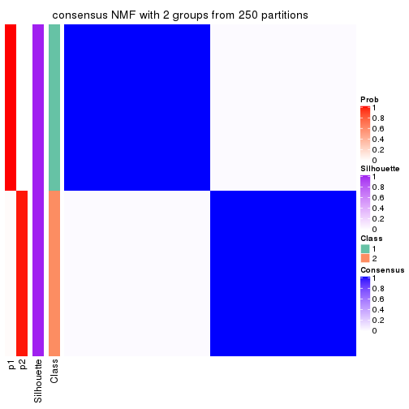
consensus_heatmap(res, k = 3)
consensus_heatmap(res, k = 4)
consensus_heatmap(res, k = 5)
consensus_heatmap(res, k = 6)
Heatmaps for the membership of samples in all partitions to see how consistent they are:
membership_heatmap(res, k = 2)
membership_heatmap(res, k = 3)
membership_heatmap(res, k = 4)
membership_heatmap(res, k = 5)
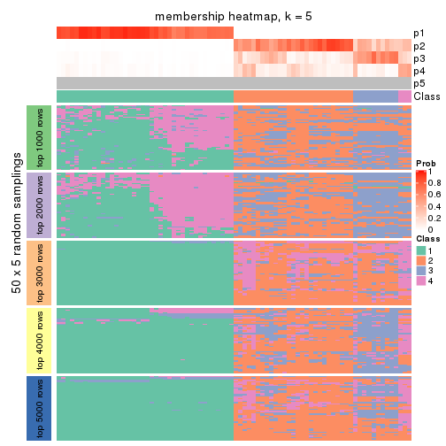
membership_heatmap(res, k = 6)
As soon as we have had the classes for columns, we can look for signatures which are significantly different between classes which can be candidate marks for certain classes. Following are the heatmaps for signatures.
Signature heatmaps where rows are scaled:
get_signatures(res, k = 2)
get_signatures(res, k = 3)
get_signatures(res, k = 4)
get_signatures(res, k = 5)
get_signatures(res, k = 6)
Signature heatmaps where rows are not scaled:
get_signatures(res, k = 2, scale_rows = FALSE)
get_signatures(res, k = 3, scale_rows = FALSE)
get_signatures(res, k = 4, scale_rows = FALSE)
get_signatures(res, k = 5, scale_rows = FALSE)
get_signatures(res, k = 6, scale_rows = FALSE)
Compare the overlap of signatures from different k:
compare_signatures(res)
get_signature() returns a data frame invisibly. TO get the list of signatures, the function
call should be assigned to a variable explicitly. In following code, if plot argument is set
to FALSE, no heatmap is plotted while only the differential analysis is performed.
# code only for demonstration
tb = get_signature(res, k = ..., plot = FALSE)
An example of the output of tb is:
#> which_row fdr mean_1 mean_2 scaled_mean_1 scaled_mean_2 km
#> 1 38 0.042760348 8.373488 9.131774 -0.5533452 0.5164555 1
#> 2 40 0.018707592 7.106213 8.469186 -0.6173731 0.5762149 1
#> 3 55 0.019134737 10.221463 11.207825 -0.6159697 0.5749050 1
#> 4 59 0.006059896 5.921854 7.869574 -0.6899429 0.6439467 1
#> 5 60 0.018055526 8.928898 10.211722 -0.6204761 0.5791110 1
#> 6 98 0.009384629 15.714769 14.887706 0.6635654 -0.6193277 2
...
The columns in tb are:
which_row: row indices corresponding to the input matrix.fdr: FDR for the differential test. mean_x: The mean value in group x.scaled_mean_x: The mean value in group x after rows are scaled.km: Row groups if k-means clustering is applied to rows.UMAP plot which shows how samples are separated.
dimension_reduction(res, k = 2, method = "UMAP")
dimension_reduction(res, k = 3, method = "UMAP")
dimension_reduction(res, k = 4, method = "UMAP")
dimension_reduction(res, k = 5, method = "UMAP")
dimension_reduction(res, k = 6, method = "UMAP")
Following heatmap shows how subgroups are split when increasing k:
collect_classes(res)
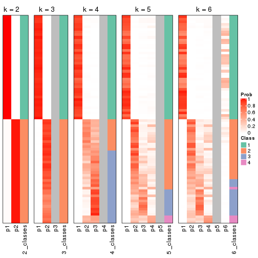
If matrix rows can be associated to genes, consider to use functional_enrichment(res,
...) to perform function enrichment for the signature genes. See this vignette for more detailed explanations.
sessionInfo()
#> R version 3.6.0 (2019-04-26)
#> Platform: x86_64-pc-linux-gnu (64-bit)
#> Running under: CentOS Linux 7 (Core)
#>
#> Matrix products: default
#> BLAS: /usr/lib64/libblas.so.3.4.2
#> LAPACK: /usr/lib64/liblapack.so.3.4.2
#>
#> locale:
#> [1] LC_CTYPE=en_GB.UTF-8 LC_NUMERIC=C LC_TIME=en_GB.UTF-8
#> [4] LC_COLLATE=en_GB.UTF-8 LC_MONETARY=en_GB.UTF-8 LC_MESSAGES=en_GB.UTF-8
#> [7] LC_PAPER=en_GB.UTF-8 LC_NAME=C LC_ADDRESS=C
#> [10] LC_TELEPHONE=C LC_MEASUREMENT=en_GB.UTF-8 LC_IDENTIFICATION=C
#>
#> attached base packages:
#> [1] grid stats graphics grDevices utils datasets methods base
#>
#> other attached packages:
#> [1] genefilter_1.66.0 ComplexHeatmap_2.3.1 markdown_1.1 knitr_1.26
#> [5] GetoptLong_0.1.7 cola_1.3.2
#>
#> loaded via a namespace (and not attached):
#> [1] circlize_0.4.8 shape_1.4.4 xfun_0.11 slam_0.1-46
#> [5] lattice_0.20-38 splines_3.6.0 colorspace_1.4-1 vctrs_0.2.0
#> [9] stats4_3.6.0 blob_1.2.0 XML_3.98-1.20 survival_2.44-1.1
#> [13] rlang_0.4.2 pillar_1.4.2 DBI_1.0.0 BiocGenerics_0.30.0
#> [17] bit64_0.9-7 RColorBrewer_1.1-2 matrixStats_0.55.0 stringr_1.4.0
#> [21] GlobalOptions_0.1.1 evaluate_0.14 memoise_1.1.0 Biobase_2.44.0
#> [25] IRanges_2.18.3 parallel_3.6.0 AnnotationDbi_1.46.1 highr_0.8
#> [29] Rcpp_1.0.3 xtable_1.8-4 backports_1.1.5 S4Vectors_0.22.1
#> [33] annotate_1.62.0 skmeans_0.2-11 bit_1.1-14 microbenchmark_1.4-7
#> [37] brew_1.0-6 impute_1.58.0 rjson_0.2.20 png_0.1-7
#> [41] digest_0.6.23 stringi_1.4.3 polyclip_1.10-0 clue_0.3-57
#> [45] tools_3.6.0 bitops_1.0-6 magrittr_1.5 eulerr_6.0.0
#> [49] RCurl_1.95-4.12 RSQLite_2.1.4 tibble_2.1.3 cluster_2.1.0
#> [53] crayon_1.3.4 pkgconfig_2.0.3 zeallot_0.1.0 Matrix_1.2-17
#> [57] xml2_1.2.2 httr_1.4.1 R6_2.4.1 mclust_5.4.5
#> [61] compiler_3.6.0